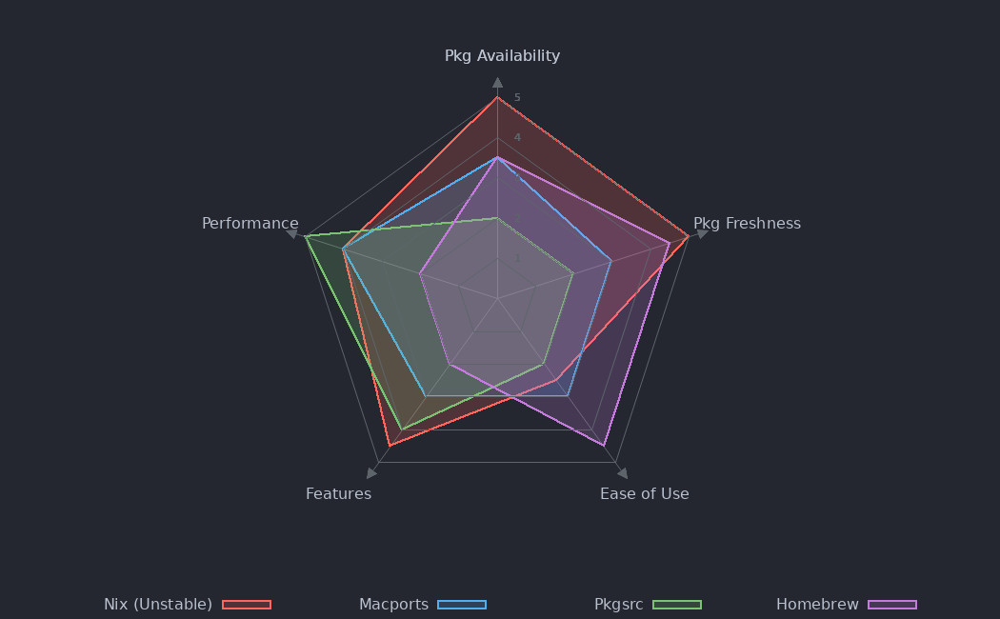
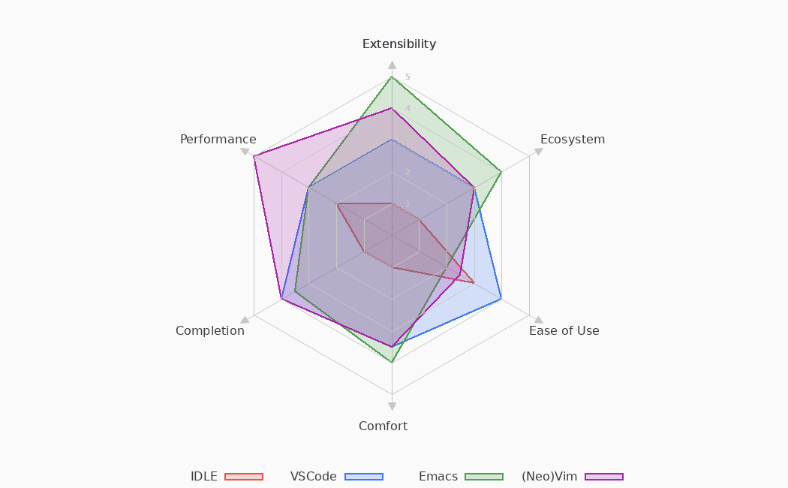

<!DOCTYPE html>
<html lang="en">
<head>
<!-- 2021-11-11 Thu 19:58 -->
<meta charset="utf-8" />
<meta name="viewport" content="width=device-width, initial-scale=1" />
<title>Nix-Darwin-Config + Doom Emacs Configuration</title>
<meta name="author" content="Shaurya Singh" />
<meta name="generator" content="org mode" />
<meta name="theme-color" content="#77aa99" />
<meta property="og:type" content="article" />
<meta property="og:title" content="Nix-Darwin-Config + Doom Emacs Configuration" />
<meta property="og:description" content="Nix-powered declarative macOS configuration" />
<meta property="og:image" content="https://tecosaur.com/resources/org/nib.png" />
<meta property="og:image:type" content="image/png" />
<meta property="og:image:width" content="200" />
<meta property="og:image:height" content="200" />
<meta property="og:image:alt" content="Green fountain pen nib" />
<meta property="og:article:author:first_name" content="Shaurya" />
<meta property="og:article:author:last_name" content="Singh" />
<meta property="og:article:published_time" content="2021-11-11T19:47:11-0500" />
<meta property="og:article:modified_time" content="2021-11-11T19:47:11-0500" />
<link rel="icon" href="https://tecosaur.com/resources/org/nib.ico" type="image/ico" />
<link rel="preload" as="font" crossorigin="anonymous" type="font/woff2" href="https://tecosaur.com/resources/org/etbookot-roman-webfont.woff2">
<link rel="preload" as="font" crossorigin="anonymous" type="font/woff2" href="https://tecosaur.com/resources/org/etbookot-italic-webfont.woff2">
<link rel="preload" as="font" crossorigin="anonymous" type="font/woff2" href="https://tecosaur.com/resources/org/Merriweather-TextRegular.woff2">
<link rel="preload" as="font" crossorigin="anonymous" type="font/woff2" href="https://tecosaur.com/resources/org/Merriweather-TextItalic.woff2">
<link rel="preload" as="font" crossorigin="anonymous" type="font/woff2" href="https://tecosaur.com/resources/org/Merriweather-TextBold.woff2">
<script>
// @license magnet:?xt=urn:btih:d3d9a9a6595521f9666a5e94cc830dab83b65699&dn=expat.txt Expat
function copyPreToClipbord(btn) {
    const pre = btn.parentElement.parentElement.getElementsByTagName("PRE")[0];
    const range = document.createRange();
    range.selectNodeContents(pre);
    range.setEnd(pre.childNodes[pre.childNodes.length-1], 0);
    window.getSelection().addRange(range);
    var successful = document.execCommand('copy');
    window.getSelection().removeRange(range);
}
window.addEventListener('DOMContentLoaded', () => {
    if (document.getElementById("text-table-of-contents")) {
        const sections = document.querySelectorAll('h1[id],h2[id],h3[id],h4[id],h5[id],h6[id]');
        const activate = (entry) => {
            entry.classList.add('active');
            if (["LI", "UL"].includes(entry.parentElement.tagName)) {
                activate(entry.parentElement);
            }
        };
        const activateLast = () => {
            document.querySelectorAll('#text-table-of-contents li.active, #text-table-of-contents ul.active').forEach(a => {
                a.classList.remove('active')
            });
            let mostRecent = { section: sections[0], bottom: -Infinity };
            const windowHeight = window.innerHeight;
            sections.forEach((section) => {
                const bounds = section.getBoundingClientRect()
                if ( bounds.bottom > mostRecent.bottom && bounds.top < windowHeight ) {
                    mostRecent = { section, bottom: bounds.bottom };
                }
            })
            activate(document.querySelector(`#text-table-of-contents li a[href="#${mostRecent.section.getAttribute('id')}"]`).parentElement);
        }
        const observer = new IntersectionObserver(entries => {
            activateLast();
        });
        sections.forEach((section) => {
            observer.observe(section);
        });}
});
// @license-end
</script>
<style>
/*! normalize.css v8.0.1 | MIT License | github.com/necolas/normalize.css */html{line-height:1.15;-webkit-text-size-adjust:100%}body{margin:0}h1{font-size:2em;margin:0.67em 0}hr{box-sizing:content-box;height:0}pre{font-family:monospace, monospace;font-size:1em}b{font-weight:bolder}code,kbd,samp{font-family:monospace, monospace;font-size:1em}small{font-size:80%}sub,sup{font-size:75%;line-height:0;position:relative;vertical-align:baseline}sub{bottom:-0.25em}sup{top:-0.5em}button,input,optgroup,select,textarea{font-family:inherit;font-size:100%;line-height:1.15;margin:0}button,select{text-transform:none}button{-webkit-appearance:button}button::-moz-focus-inner{border-style:none;padding:0}button:-moz-focusring{outline:1px dotted ButtonText}details{display:block}summary{display:list-item}/*! end normalise.css */#page{--accent: #3B4252;--accent-dark: #88C0D0;--code-foreground: #D8DEE9;--code-background: #3B4252;--code-func: #81A1C1;--code-const: #B48EAD;--code-regex: #A3BE8C;--back-white: #434C5E;--back-light: #2E3440;--back-medium: #4C566A;--text-light: #88C0D0;--text-gray: #616E88;--text-medium: #81A1C1;--text-dark: #E5E9F0;--switch-icon: "🔆";--switch-shadow-color: #EBCB8B;--switch-text: "light mode?"}#theme-switch:checked~#page{--accent: #002642;--accent-dark: #00151c;--code-foreground: #2c3e50;--code-background: #efefef;--code-func: #6c3163;--code-const: #4e3163;--code-regex: #655370;--back-white: #fff;--back-light: #f0eeed;--back-medium: #c8c8c8;--text-light: #7b7b7b;--text-gray: #444;--text-medium: #222;--text-dark: #000;--switch-icon: "🌙";--switch-shadow-color: #373d4e;--switch-text: "dark mode?"}#theme-switch{display:none}#switch-label{position:fixed;bottom:4rem;left:3rem}#switch-label::before{content:var(--switch-icon);font-size:20px;transition:text-shadow .2s}#switch-label::after{content:var(--switch-text);color:var(--switch-shadow-color);font-size:12px;visibility:hidden;margin-left:0.5em;z-index:1;position:fixed;bottom:calc(4rem - 25px);left:calc(3rem - 10px)}@media (max-width: 1000px){#switch-label{left:auto;bottom:auto;right:1vw;top:1vh}#switch-label::after{position:fixed;top:calc(1vh + 3px);right:calc(1vw + 30px);left:auto;bottom:auto}}#theme-switch:focus~#page #switch-label::before,#switch-label:hover::before{text-shadow:0 0 15px var(--switch-shadow-color)}#theme-switch:focus~#page #switch-label::after,#switch-label:hover::after{visibility:visible}@font-face{font-family:"Merriweather";src:url("https://tecosaur.com/resources/org/Merriweather-TextRegular.woff2") format("woff2");font-weight:normal;font-style:normal;font-display:fallback}@font-face{font-family:"Merriweather";src:url("https://tecosaur.com/resources/org/Merriweather-TextItalic.woff2") format("woff2");font-weight:normal;font-style:italic;font-display:fallback}@font-face{font-family:"Merriweather";src:url("https://tecosaur.com/resources/org/Merriweather-TextBold.woff2") format("woff2");font-weight:bold;font-style:normal;font-display:fallback}@font-face{font-family:"et-book";src:url("https://tecosaur.com/resources/org/etbookot-roman-webfont.woff2") format("woff2");font-weight:normal;font-style:normal;font-display:fallback}@font-face{font-family:"et-book";src:url("https://tecosaur.com/resources/org/etbookot-italic-webfont.woff2") format("woff2");font-weight:normal;font-style:italic;font-display:fallback}*::selection{background:var(--back-medium)}.pace .pace-progress{background-color:var(--accent) !important}html,body{height:100%}body{display:flex;flex-direction:column;font-size:16px;font-family:"Merriweather",serif}#page{color:var(--text-dark);background-color:var(--back-light);transition-property:color, background-color;transition-duration:100ms}#content,header,.page-header{margin:32px;flex:1 0 auto}#content{margin-top:4rem;min-height:calc(100vh - 4rem - 48px)}.clearfix::after{clear:both}.clearfix::before,.clearfix::after{content:" ";display:table}.page-header{margin-top:80px;margin-left:0 !important}.page-header h1{font-size:40px;margin-bottom:10px;margin-top:10px;text-transform:none}.page-header h1 .subtitle{font-size:24px;color:var(--text-light);margin:0}.page-meta{font-family:"Open Sans",sans;font-weight:normal;font-style:normal;font-size:12px;line-height:1.9;color:var(--text-light)}header .site-nav{font-family:"Open Sans",sans;font-weight:normal;font-style:normal;font-size:12px;line-height:1.9;color:var(--text-light);font-weight:bold;line-height:2.0;margin-top:22px}header .site-nav a{color:var(--text-light);text-decoration:none;margin-left:10px}header .site-nav a:hover{color:var(--text-gray)}header .site-nav a.active{border-bottom:solid;border-bottom-width:2px}header .site-nav a:first-child{margin-left:0}header>div{display:inherit}.site-title{font-size:16px}.site-title span{display:none !important}.site-title ul{display:block !important;list-style:none;padding:0;margin:0}.site-title ul img{border-radius:2px;max-width:32px}.site-header nav a{color:var(--text-light);font-family:"Open Sans",sans;font-size:12px;font-weight:bold;text-transform:uppercase}.site-header nav a:hover{border:0;color:var(--accent)}@media (max-width: 1000px){header *{display:inline}}@media (min-width: 1000px){#content,header,.page-header{max-width:720px;margin-left:164px}header .site-title{float:left}header .site-nav{float:right;margin-top:0}}@media (min-width: 2800px){#content,header,.page-header{margin-left:auto;margin-right:auto}}#content .page-intro{font-family:"Open Sans",sans;font-weight:normal;font-size:15px;line-height:1.6;color:var(--text-gray);margin-bottom:40px}#content p,#content li,#content dd{line-height:1.9}#footer{margin-top:70px;height:10px;background:var(--accent-dark)}.archive-item{margin:50px 0}.archive-item .archive-title{font-size:25px;margin:5px 0;background:none;text-shadow:none;text-decoration:none}.archive-item .archive-title:hover{background:none;text-shadow:none;text-decoration:none}#postamble{display:none}aside{background-color:var(--code-background);border-radius:5px;font-family:"Open Sans",sans;font-weight:normal;font-size:15px;line-height:1.6;color:var(--text-gray);margin:20px 0;padding:5px 20px 10px;line-height:1.6 !important}aside p{font-family:"Open Sans",sans;font-weight:normal;font-size:15px;line-height:1.6;color:var(--text-gray);line-height:1.6 !important}aside pre{font-size:12px;border:none;padding-left:0}@media (min-width: 1280px){aside{float:right;clear:right;background-color:var(--back-white);max-width:45% !important;margin-right:-52%}aside::before{content:''}}blockquote{border-width:0;border-left-style:solid;border-left-width:1px;border-left-color:var(--back-medium);margin:20px 0;padding:0;padding-left:15px}blockquote p{display:inline;font-size:13px}blockquote footer{font-family:"Open Sans",sans;font-weight:normal;font-style:normal;font-size:12px;line-height:1.9;color:var(--text-light);text-transform:none}div.info{background:rgba(136,192,208,0.15);border-left:4px solid rgba(136,192,208,0.45);margin:1.8rem 0 1.25rem 15px;padding:0.8em;line-height:1.4;text-align:center;position:relative;clear:both}div.info p{margin:0}div.info::before{content:"i";color:var(--back-white);background:rgba(136,192,208,0.8);align-items:flex-end;top:-1rem;font-weight:700;font-size:1.4rem;-webkit-clip-path:circle(50% at 50% 50%);clip-path:circle(50% at 50% 50%);width:30px;height:30px;display:inline-flex;justify-content:center;position:absolute;left:-1.2rem;line-height:1.3;text-align:center}div.success{background:rgba(163,190,140,0.15);border-left:4px solid rgba(163,190,140,0.45);margin:1.8rem 0 1.25rem 15px;padding:0.8em;line-height:1.4;text-align:center;position:relative;clear:both}div.success p{margin:0}div.success::before{content:"✔";color:var(--back-white);background:rgba(163,190,140,0.8);align-items:flex-end;top:-1rem;font-weight:700;font-size:1.4rem;-webkit-clip-path:polygon(50% 0%, 100% 50%, 50% 100%, 0% 50%);clip-path:polygon(50% 0%, 100% 50%, 50% 100%, 0% 50%);width:35px;height:35px;display:inline-flex;justify-content:center;position:absolute;left:-1.2rem;line-height:1.5;text-align:center}div.warning{background:rgba(235,203,139,0.15);border-left:4px solid rgba(235,203,139,0.45);margin:1.8rem 0 1.25rem 15px;padding:0.8em;line-height:1.4;text-align:center;position:relative;clear:both}div.warning p{margin:0}div.warning::before{content:"!";color:var(--back-white);background:rgba(235,203,139,0.8);align-items:flex-end;top:-1rem;font-weight:700;font-size:1.4rem;-webkit-clip-path:polygon(50% 0, 0 100%, 100% 100%);clip-path:polygon(50% 0, 0 100%, 100% 100%);width:35px;height:35px;display:inline-flex;justify-content:center;position:absolute;left:-1.2rem;line-height:1.1;text-align:center}div.error{background:rgba(191,97,106,0.15);border-left:4px solid rgba(191,97,106,0.45);margin:1.8rem 0 1.25rem 15px;padding:0.8em;line-height:1.4;text-align:center;position:relative;clear:both}div.error p{margin:0}div.error::before{content:"!";color:var(--back-white);background:rgba(191,97,106,0.8);align-items:flex-end;top:-1rem;font-weight:700;font-size:1.4rem;-webkit-clip-path:polygon(25% 0%, 75% 0%, 100% 50%, 75% 100%, 25% 100%, 0% 50%);clip-path:polygon(25% 0%, 75% 0%, 100% 50%, 75% 100%, 25% 100%, 0% 50%);width:35px;height:30px;display:inline-flex;justify-content:center;position:absolute;left:-1.2rem;line-height:1.1;text-align:center}.org-ref-bib-h1{margin-top:70px;padding-top:30px;border-width:0;border-top-style:solid;border-top-width:1px;border-color:var(--back-light);font-family:"Open Sans",sans;font-family:"Open Sans",sans;font-weight:normal;font-size:20px;line-height:1.6;color:var(--text-gray)}.org-ref-bib{font-family:"Open Sans",sans;font-weight:normal;font-size:15px;line-height:1.6;color:var(--text-gray)}.org-ref-bib li>a:nth-child(2){background:none;text-shadow:none;text-decoration:none}.org-ref-bib li>a:nth-child(2):hover{background:none;text-shadow:none;text-decoration:none}.org-ref-bib .bib-link{font-family:"Open Sans",sans;font-weight:normal;font-style:normal;font-size:12px;line-height:1.9;color:var(--text-light);background:none;text-shadow:none;text-decoration:none}pre.src,pre.example{border-width:0;border-left-style:solid;border-left-width:1px;border-left-color:var(--back-medium);margin:20px 0;padding:0;padding-left:15px;font-family:SFMono-Regular,Consolas,Liberation Mono,Menlo,monospace;font-size:14px;line-height:1.9;overflow-x:visible;box-shadow:none;white-space:pre-wrap;position:relative}pre.example{border-left-style:dotted;border-left-width:2px}pre.src::before{display:inline-block;position:absolute;background-color:transparent;top:unset;bottom:-16px;left:20px;padding:0px;border:none;font-size:80%;font-style:italic;color:var(--text-light)}pre.src:empty{display:none}code{font-family:SFMono-Regular,Consolas,Liberation Mono,Menlo,monospace;color:var(--code-foreground);font-size:15px;padding:0 5px}kbd{display:inline-block;padding:0.25em 0.35em;font:80% SFMono-Regular,Consolas,Liberation Mono,Menlo,monospace;line-height:normal;line-height:80%;color:var(--text-gray);vertical-align:middle;background-color:var(--back-light);border:1px solid #91959a88;border-radius:0.35em;box-shadow:inset 0 -1px 0 #91959a88}li code{font-size:14px}li p code{font-size:15px}details.code{position:relative}details.code summary{position:relative;left:-3px;padding-left:10px;padding-bottom:4px;margin-left:-10px;z-index:1;outline:none;font-family:"Open Sans",sans;font-weight:normal;font-style:normal;font-size:12px;line-height:1.9;color:var(--text-light)}details.code summary .name{font-size:14px;color:var(--text-medium);margin-right:0.7em}details.code summary .lang{font-family:SFMono-Regular, Consolas, Liberation Mono, Menlo, monospace;font-style:italic}details.code summary::marker{color:var(--back-medium)}details.code[open] summary{margin-bottom:-32px}details.code[open] summary .lang{display:none}details.code[open] summary.named{margin-bottom:-26px}details.code:not([open]) summary{margin-bottom:-5px}p+details.code{margin-top:-20px}li p+details.code{margin-top:-5px}.example,.src{color:var(--code-foreground)}.example .org-keyword,.src .org-keyword{color:#88C0D0}.example .org-variable-name,.src .org-variable-name{color:#B48EAD}.example .org-rainbow-delimiters-depth-1,.example .org-rainbow-delimiters-depth-2,.example .org-rainbow-delimiters-depth-3,.example .org-rainbow-delimiters-depth-4,.example .org-rainbow-delimiters-depth-5,.example .org-rainbow-delimiters-depth-6,.example .org-rainbow-delimiters-depth-7,.example .org-rainbow-delimiters-depth-8,.example .org-rainbow-delimiters-depth-9,.src .org-rainbow-delimiters-depth-1,.src .org-rainbow-delimiters-depth-2,.src .org-rainbow-delimiters-depth-3,.src .org-rainbow-delimiters-depth-4,.src .org-rainbow-delimiters-depth-5,.src .org-rainbow-delimiters-depth-6,.src .org-rainbow-delimiters-depth-7,.src .org-rainbow-delimiters-depth-8,.src .org-rainbow-delimiters-depth-9{color:#616E88}.example .org-string,.src .org-string{color:#A3BE8C}.example .org-comment,.example .org-comment-delimiter,.src .org-comment,.src .org-comment-delimiter{color:#616E88}.example .org-function-name,.src .org-function-name{color:var(--code-func)}.example .org-constant,.example .org-highlight-numbers-number,.src .org-constant,.src .org-highlight-numbers-number{color:var(--code-const)}.gutter{position:absolute;top:0;left:-2.5rem;width:2rem;padding-right:0.3rem;padding-top:5px;height:calc(100% - 10px);z-index:1;transition:opacity 200ms;opacity:0;font-size:15px}.gutter:hover{opacity:1}.gutter *{display:block;width:100%;text-align:right;padding:0;margin:0;color:var(--text-light)}.gutter *:hover{color:var(--text-gray)}.gutter *:active{font-weight:bold}.gutter a{text-decoration:none;font-size:110%}.gutter button{background:none;border:none}pre.src-asymptote::before{content:'Asymptote'}pre.src-authinfo::before{content:'Authinfo'}pre.src-awk::before{content:'Awk'}pre.src-C::before{content:'C'}pre.src-clojure::before{content:'Clojure'}pre.src-css::before{content:'CSS'}pre.src-D::before{content:'D'}pre.src-ditaa::before{content:'ditaa'}pre.src-dot::before{content:'Graphviz'}pre.src-calc::before{content:'Emacs Calc'}pre.src-emacs-lisp::before{content:'Emacs Lisp'}pre.src-fortran::before{content:'Fortran'}pre.src-gnuplot::before{content:'gnuplot'}pre.src-haskell::before{content:'Haskell'}pre.src-hledger::before{content:'hledger'}pre.src-java::before{content:'Java'}pre.src-js::before{content:'Javascript'}pre.src-latex::before{content:'LaTeX'}pre.src-ledger::before{content:'Ledger'}pre.src-lisp::before{content:'Lisp'}pre.src-lilypond::before{content:'Lilypond'}pre.src-lua::before{content:'Lua'}pre.src-matlab::before{content:'MATLAB'}pre.src-mscgen::before{content:'Mscgen'}pre.src-ocaml::before{content:'Objective Caml'}pre.src-octave::before{content:'Octave'}pre.src-org::before{content:'Org mode'}pre.src-oz::before{content:'OZ'}pre.src-plantuml::before{content:'Plantuml'}pre.src-processing::before{content:'Processing.js'}pre.src-python::before{content:'Python'}pre.src-R::before{content:'R'}pre.src-ruby::before{content:'Ruby'}pre.src-sass::before{content:'Sass'}pre.src-scheme::before{content:'Scheme'}pre.src-screen::before{content:'Gnu Screen'}pre.src-sed::before{content:'Sed'}pre.src-sh::before{content:'shell'}pre.src-sql::before{content:'SQL'}pre.src-sqlite::before{content:'SQLite'}pre.src-forth::before{content:'Forth'}pre.src-io::before{content:'IO'}pre.src-J::before{content:'J'}pre.src-makefile::before{content:'Makefile'}pre.src-maxima::before{content:'Maxima'}pre.src-perl::before{content:'Perl'}pre.src-picolisp::before{content:'Pico Lisp'}pre.src-scala::before{content:'Scala'}pre.src-shell::before{content:'Shell Script'}pre.src-systemd::before{content:'Systemd'}pre.src-ebnf2ps::before{content:'ebfn2ps'}pre.src-cpp::before{content:'C++'}pre.src-abc::before{content:'ABC'}pre.src-coq::before{content:'Coq'}pre.src-groovy::before{content:'Groovy'}pre.src-bash::before{content:'bash'}pre.src-csh::before{content:'csh'}pre.src-ash::before{content:'ash'}pre.src-dash::before{content:'dash'}pre.src-ksh::before{content:'ksh'}pre.src-mksh::before{content:'mksh'}pre.src-posh::before{content:'posh'}pre.src-ada::before{content:'Ada'}pre.src-asm::before{content:'Assembler'}pre.src-caml::before{content:'Caml'}pre.src-delphi::before{content:'Delphi'}pre.src-html::before{content:'HTML'}pre.src-idl::before{content:'IDL'}pre.src-mercury::before{content:'Mercury'}pre.src-metapost::before{content:'MetaPost'}pre.src-modula-2::before{content:'Modula-2'}pre.src-pascal::before{content:'Pascal'}pre.src-ps::before{content:'PostScript'}pre.src-prolog::before{content:'Prolog'}pre.src-simula::before{content:'Simula'}pre.src-tcl::before{content:'tcl'}pre.src-tex::before{content:'LaTeX'}pre.src-plain-tex::before{content:'TeX'}pre.src-verilog::before{content:'Verilog'}pre.src-vhdl::before{content:'VHDL'}pre.src-xml::before{content:'XML'}pre.src-nxml::before{content:'XML'}pre.src-conf::before{content:'Configuration File'}.dropcap{float:left;font-size:55px;font-style:normal;line-height:.1;margin-right:0.2em;margin-top:0.5em;padding:0}figure{text-align:center}figure figcaption{margin-top:10px;font-family:"Open Sans",sans;font-weight:normal;font-size:15px;line-height:1.6;color:var(--text-gray)}figure figcaption .figure-number{font-family:"Open Sans",sans;font-weight:normal;font-style:normal;font-size:12px;line-height:1.9;color:var(--text-light)}img.zoomTarget:hover{cursor:default !important}img,object[type="image/svg+xml"]{filter:invert(7%) sepia(4%);max-width:100%}.org-svg{width:90%}#footnotes{margin-top:70px;padding-top:30px;border-width:0;border-top-style:solid;border-top-width:1px;border-color:var(--back-light);font-family:"Open Sans",sans;font-weight:normal;font-size:15px;line-height:1.6;color:var(--text-gray)}#footnotes p,#footnotes li{font-family:"Open Sans",sans;font-weight:normal;font-size:15px;line-height:1.6;color:var(--text-gray)}#footnotes h2.footnotes{margin-top:0;margin-bottom:30px;font-family:"Open Sans",sans;font-size:18px;letter-spacing:5px;display:none}#footnotes .footnum{color:var(--text-dark)}h1,h2,h3,h4,h5,h6{font-family:"et-book",serif;font-weight:normal;margin-bottom:0;margin-top:60px}h1>a[aria-hidden='true'],h2>a[aria-hidden='true'],h3>a[aria-hidden='true'],h4>a[aria-hidden='true'],h5>a[aria-hidden='true'],h6>a[aria-hidden='true']{color:var(--back-medium);position:relative;top:0.06em;line-height:1;font-size:110%;padding-left:0.2em;text-decoration:none;visibility:hidden}h1>a[aria-hidden='true']:hover,h2>a[aria-hidden='true']:hover,h3>a[aria-hidden='true']:hover,h4>a[aria-hidden='true']:hover,h5>a[aria-hidden='true']:hover,h6>a[aria-hidden='true']:hover{color:var(--text-light)}h1:hover>a[aria-hidden='true'],h2:hover>a[aria-hidden='true'],h3:hover>a[aria-hidden='true'],h4:hover>a[aria-hidden='true'],h5:hover>a[aria-hidden='true'],h6:hover>a[aria-hidden='true']{visibility:visible}h1,h2,h3,h4,h5,h6{padding-left:30px;margin-left:-30px;position:relative}h1,.section-number-1{font-size:40px}h2,.section-number-2{font-size:30px}h3,.section-number-3{font-size:24px}h4,.section-number-4{font-size:20px;font-style:italic}h5{font-size:20px;font-variant:small-caps}.section-number-5{font-size:20px}h6{font-size:18px;font-style:italic}.section-number-6{font-size:18px}.section-number-1,.section-number-2,.section-number-3,.section-number-4,.section-number-5,.section-number-6{font-family:"Open Sans",sans;font-weight:normal;font-style:normal;font-size:12px;line-height:1.9;color:var(--text-light);font-size:inherit;color:var(--text-light);line-height:1}@media (min-width: 1000px){.section-number-1,.section-number-2,.section-number-3,.section-number-4,.section-number-5,.section-number-6{position:absolute;transform:translateX(-100%) translateX(-10px)}}.outline-text-2:empty+.outline-3>h3,.outline-text-2:-moz-only-whitespace+.outline-3>h3{margin-top:20px}.outline-text-3:empty+.outline-4>h4,.outline-text-3:-moz-only-whitespace+.outline-4>h4{margin-top:15px}.outline-text-4:empty+.outline-5>h5,.outline-text-4:-moz-only-whitespace+.outline-5>h5{margin-top:15px}.outline-text-5:empty+.outline-6>h6,.outline-text-5:-moz-only-whitespace+.outline-6>h6{margin-top:10px}hr{border:none;border-top-style:solid;border-top-width:1px;color:var(--back-medium);margin-bottom:30px;margin-top:40px}a{color:inherit}figcaption a,p a,.page-tags a,table a,li a,dl a{background-image:linear-gradient(var(--text-dark), var(--text-dark));background-size:1px 1px;background-repeat:repeat-x;background-position:0% 95%;border-radius:1px;text-decoration:none}figcaption a::selection,p a::selection,.page-tags a::selection,table a::selection,li a::selection,dl a::selection{background:var(--back-medium)}figcaption a *,figcaption a *:after,figcaption a:after,figcaption a *:before,figcaption a:before,p a *,p a *:after,p a:after,p a *:before,p a:before,.page-tags a *,.page-tags a *:after,.page-tags a:after,.page-tags a *:before,.page-tags a:before,table a *,table a *:after,table a:after,table a *:before,table a:before,li a *,li a *:after,li a:after,li a *:before,li a:before,dl a *,dl a *:after,dl a:after,dl a *:before,dl a:before{text-shadow:none}figcaption a:visited,p a:visited,.page-tags a:visited,table a:visited,li a:visited,dl a:visited{color:var(--text-dark)}figcaption a:hover,p a:hover,.page-tags a:hover,table a:hover,li a:hover,dl a:hover{opacity:0.9;filter:drop-shadow(1px 1px 1px var(--back-white));background-image:linear-gradient(var(--text-dark), var(--text-dark));background-size:1px 1px;background-repeat:repeat-x;background-position:0% 95%;background-image:url("data:image/svg+xml;charset=utf8,%3Csvg id='squiggle-link' xmlns='http://www.w3.org/2000/svg' xmlns:xlink='http://www.w3.org/1999/xlink' xmlns:ev='http://www.w3.org/2001/xml-events' viewBox='0 0 20 4'%3E%3Cstyle type='text/css'%3E.squiggle{animation:shift .3s linear infinite;}@keyframes shift {from {transform:translateX(0);}to {transform:translateX(-20px);}}%3C/style%3E%3Cpath fill='none' stroke='%23000000' stroke-width='2' class='squiggle' d='M0,3.5 c 5,0,5,-3,10,-3 s 5,3,10,3 c 5,0,5,-3,10,-3 s 5,3,10,3'/%3E%3C/svg%3E") !important;background-position:0% 100%;background-size:0.8em auto;text-decoration:none}figcaption a:hover::selection,p a:hover::selection,.page-tags a:hover::selection,table a:hover::selection,li a:hover::selection,dl a:hover::selection{background:var(--back-white)}figcaption a[href^="#"],p a[href^="#"],.page-tags a[href^="#"],table a[href^="#"],li a[href^="#"],dl a[href^="#"]{background-image:linear-gradient(var(--text-gray), var(--text-gray));background-size:1px 1px;background-repeat:repeat-x;background-position:0% 95%}figcaption a[href^="#"]::selection,p a[href^="#"]::selection,.page-tags a[href^="#"]::selection,table a[href^="#"]::selection,li a[href^="#"]::selection,dl a[href^="#"]::selection{background:var(--back-white)}figcaption a[href^="#"]:hover,p a[href^="#"]:hover,.page-tags a[href^="#"]:hover,table a[href^="#"]:hover,li a[href^="#"]:hover,dl a[href^="#"]:hover{opacity:0.9;filter:drop-shadow(1px 1px 1px var(--back-white));background-image:linear-gradient(var(--text-medium), var(--text-medium));background-size:1px 1px;background-repeat:repeat-x;background-position:0% 95%}figcaption a[href^="#"]:hover::selection,p a[href^="#"]:hover::selection,.page-tags a[href^="#"]:hover::selection,table a[href^="#"]:hover::selection,li a[href^="#"]:hover::selection,dl a[href^="#"]:hover::selection{background:var(--back-white)}#theme-switch:checked~#page #breadcrumbs a:hover,#theme-switch:checked~#page figcaption a:hover,#theme-switch:checked~#page p a:hover,#theme-switch:checked~#page .page-tags a:hover,#theme-switch:checked~#page table a:hover,#theme-switch:checked~#page #crosslinks a:not(.highlight):hover,#theme-switch:checked~#page li a:hover,#theme-switch:checked~#page dl a:hover{background-image:url("data:image/svg+xml;charset=utf8,%3Csvg id='squiggle-link' xmlns='http://www.w3.org/2000/svg' xmlns:xlink='http://www.w3.org/1999/xlink' xmlns:ev='http://www.w3.org/2001/xml-events' viewBox='0 0 20 4'%3E%3Cstyle type='text/css'%3E.squiggle{animation:shift .3s linear infinite;}@keyframes shift {from {transform:translateX(0);}to {transform:translateX(-20px);}}%3C/style%3E%3Cpath fill='none' stroke='%23ffffff' stroke-width='2' class='squiggle' d='M0,3.5 c 5,0,5,-3,10,-3 s 5,3,10,3 c 5,0,5,-3,10,-3 s 5,3,10,3'/%3E%3C/svg%3E")}*:target::before{content:"🠖";position:absolute;left:-7rem;top:calc(0.5em - 2rem);line-height:1;color:#e65353aa;font-size:3rem;font-style:normal}@media (max-width: 1000px){*:target::before{content:"🠔";left:unset;right:0}}#content .page-intro p a,#footnotes a{background-image:linear-gradient(var(--text-gray), var(--text-gray));background-size:1px 1px;background-repeat:repeat-x;background-position:0% 95%;border-radius:1px;text-decoration:none}#content .page-intro p a::selection,#footnotes a::selection{background:var(--back-medium)}#content .page-intro p a *,#content .page-intro p a *:after,#content .page-intro p a:after,#content .page-intro p a *:before,#content .page-intro p a:before,#footnotes a *,#footnotes a *:after,#footnotes a:after,#footnotes a *:before,#footnotes a:before{text-shadow:none}#content .page-intro p a:visited,#footnotes a:visited{color:var(--text-gray)}#content .page-intro p a:hover,#footnotes a:hover{background-image:linear-gradient(var(--text-gray), var(--text-gray));background-size:1px 1px;background-repeat:repeat-x;background-position:0% 95%;border-radius:1px;text-decoration:none}#content .page-intro p a:hover::selection,#footnotes a:hover::selection{background:var(--back-medium)}#content .page-intro p a:hover *,#content .page-intro p a:hover *:after,#content .page-intro p a:hover:after,#content .page-intro p a:hover *:before,#content .page-intro p a:hover:before,#footnotes a:hover *,#footnotes a:hover *:after,#footnotes a:hover:after,#footnotes a:hover *:before,#footnotes a:hover:before{text-shadow:none}#content .page-intro p a:hover:visited,#footnotes a:hover:visited{color:var(--text-gray)}.btn{padding:7px 14px;border-style:solid;border-width:1px;border-color:var(--back-light);border-radius:1px;font-family:"Open Sans",sans;font-variant:all-small-caps;font-size:14px;font-style:normal;letter-spacing:2px;background-image:none;cursor:pointer}.btn:hover{background-color:var(--back-light);background-image:none}.btn.disabled{color:var(--text-light)}.btn.disabled:hover{cursor:default}.btn.small{padding:3px 6px;border-style:solid;border-width:1px;border-color:var(--back-light);border-radius:1px;font-family:"Open Sans",sans;font-variant:all-small-caps;font-size:12px;font-style:normal;letter-spacing:2px;background-image:none;padding-right:9px;padding-left:9px}.btn.small:hover{background-color:var(--back-light);background-image:none}.btn.highlight{text-shadow:none;text-decoration:none;color:var(--text-dark);background-color:yellow}.btn.primary{text-shadow:none;text-decoration:none;color:var(--back-white);background-color:var(--accent)}.btn.primary:hover{background-color:var(--back-light);background-image:none;color:var(--text-dark)}.image-link,.image-link:hover{background:none;text-shadow:none;text-decoration:none}div.link-preview{border:1px solid var(--back-medium);border-radius:0.5em;overflow:hidden;position:relative;max-height:5em;padding-left:0.5em}div.link-preview a{color:initial;text-decoration:none}div.link-preview img{border-right:1px solid var(--back-medium);float:left;height:5em;margin-left:-0.5em;margin-right:0.5em}div.link-preview p{margin:0;font-size:10pt}div.link-preview p b{font-size:11pt}div.link-preview small{float:right;font-family:sans;color:var(--text-light);margin:0.45em 0.6em}ul,ol,dl{list-style:none;list-style-position:outside;padding:0}ul li::before,ul dt::before,ol li::before,ol dt::before,dl li::before,dl dt::before{display:inline-block;width:1em;font-family:"Open Sans",sans;font-weight:normal;font-size:15px;line-height:1.6;color:var(--text-gray)}ul li,ol li,dl li{margin:5px 0;font-size:14px}ul li p,ol li p,dl li p{font-size:15px}ul li::before{content:"•";margin-left:-1em}ol{counter-reset:li}ol li::before{content:counter(li);margin-left:-1.5em;margin-right:0.5em;text-align:right;direction:rtl}ol li{counter-increment:li}ul ul,ol ol{padding-left:20px}ul ul ul,ol ol ol{padding-left:30px}li p:first-child{display:inline-block;margin-bottom:0}dl dt::before{content:"•";margin-left:-1em}dl dt{font-weight:normal;margin-bottom:10px}dl dd{font-style:italic;margin-bottom:20px}li .checkbox{display:inline-block;width:0.9em;height:0.9em;border-radius:3px;margin:3px;top:4px;position:relative}li.on>.checkbox{background:#A3BE8C;box-shadow:0 0 2px #A3BE8C}li.trans>.checkbox{background:#EBCB8B;box-shadow:0 0 2px #EBCB8B}li.off>.checkbox{background:#BF616A;box-shadow:0 0 2px #BF616A;top:6px}li.on>.checkbox::after{content:'';height:0.45em;width:0.225em;-webkit-transform-origin:left top;transform-origin:left top;transform:scaleX(-1) rotate(135deg);border-right:2.8px solid #fff;border-top:2.8px solid #fff;opacity:0.9;left:0.10em;top:0.45em;position:absolute}li.trans>.checkbox::after{content:'';font-weight:bold;font-size:1.6em;position:absolute;top:0.2em;left:0.11em;width:0.35em;height:0.12em;background:#fff;opacity:0.9;border-radius:0.1em}li.off>.checkbox::after{content:'✖';color:#fff;opacity:0.9;position:relative;top:-0.50rem;left:0.17em;font-size:0.75em}#org-div-home-and-up{display:none !important}.outline-2 h2{font-size:30px}.outline-3 h3{font-size:24px;font-style:normal}.outline-2 .section-number-2{font-size:30px}.outline-3 .section-number-3{font-size:24px}.timestamp,.timestamp-kwd{font-family:"Open Sans",sans;font-weight:normal;font-style:normal;font-size:12px;line-height:1.9;color:var(--text-light);background-color:var(--back-white);border-radius:1px}.todo,.done{padding:.1em .2em;border-style:solid;border-width:1px;border-color:var(--back-light);border-radius:1px;font-family:"Open Sans",sans;font-variant:all-small-caps;font-size:max(0.4em, 10px);font-style:normal;letter-spacing:2px;background-image:none;line-height:1;white-space:nowrap;vertical-align:middle;padding:0.1em 0.5em;background-color:var(--back-white);background-color:transparent;border:none;font-weight:bold}.todo:hover,.done:hover{background-color:var(--back-light);background-image:none}.todo:not(.active),.done:not(.active){border-color:var(--back-white)}.todo.active,.done.active{text-shadow:none;text-decoration:none;color:var(--back-white);background-color:var(--code-foreground)}.todo.active:hover,.done.active:hover{background-color:var(--back-light);background-image:none;color:var(--text-dark)}.outline-2,.outline-3,.outline-4{contain:layout}.outline-2 .todo,.outline-2 .done,.outline-3 .todo,.outline-3 .done,.outline-4 .todo,.outline-4 .done{font-size:18px}.todo{color:#ee3333}.done{color:var(--text-light)}.tag>span{padding:.1em .2em;border-style:solid;border-width:1px;border-color:var(--back-light);border-radius:1px;font-family:"Open Sans",sans;font-variant:all-small-caps;font-size:max(0.4em, 10px);font-style:normal;letter-spacing:2px;background-image:none;line-height:1;white-space:nowrap;vertical-align:middle;padding:0.1em 0.5em;background-color:var(--back-white);border-radius:100px}.tag>span:hover{background-color:var(--back-light);background-image:none}.tag>span:not(.active){border-color:var(--back-white)}.tag>span.active{text-shadow:none;text-decoration:none;color:var(--back-white);background-color:var(--code-foreground)}.tag>span.active:hover{background-color:var(--back-light);background-image:none;color:var(--text-dark)}.priority{color:var(--text-light);font-family:SFMono-Regular,Consolas,Liberation Mono,Menlo,monospace}.footref{text-shadow:none}.footpara{display:inline}.footdef{margin-bottom:1em}th.org-right{text-align:center}th.org-left{text-align:center}th.org-center{text-align:center}td.org-right{text-align:right}td.org-left{text-align:left}td.org-center{text-align:center}div.org-center{text-align:center}span.acr{font-variant-caps:all-small-caps;letter-spacing:0.1em}.music-track{display:flex;justify-content:center;align-items:center;flex-wrap:wrap}.music-track img{height:6rem;margin-right:2rem}.music-track a{text-decoration:none}.music-track span{min-width:35%}div.table{position:relative}div.table .gutter{left:calc(20px - 2.5rem);padding-top:18px}div.table .tabular{max-width:100%;overflow-x:auto}table{border-color:var(--text-light);border-left:transparent;border-right:transparent;border-style:solid;border-width:2px;border-collapse:collapse;font-size:15px;font-family:"Open Sans",sans;margin:20px;padding:20px}table thead{font-family:"Open Sans",sans;font-weight:normal;font-style:normal;font-size:12px;line-height:1.9;color:var(--text-light);font-size:15px}table thead tr th{padding:4px 10px;background-color:#9991}table thead tr:last-of-type th{border-bottom:solid 1px var(--text-light)}table tr,table th,table td{border:none}table tbody tr td{border-top:0;padding:0 10px}table tr{line-height:1.9}table caption{margin-bottom:10px;font-family:"Open Sans",sans;font-weight:normal;font-size:15px;line-height:1.6;color:var(--text-gray)}table caption .table-number{font-family:"Open Sans",sans;font-weight:normal;font-style:normal;font-size:12px;line-height:1.9;color:var(--text-light)}::-webkit-scrollbar{width:10px;height:8px}::-webkit-scrollbar-track{background:#2E3440}::-webkit-scrollbar-thumb{background:#4C566A}::-webkit-scrollbar-thumb:hover{background:#434C5E}@media (min-width: 1280px){#table-of-contents{position:fixed;width:18rem;right:1rem;top:0;padding:1em;line-height:1.5;margin-top:4rem}#table-of-contents h2{margin-top:0}#table-of-contents #text-table-of-contents{position:relative}#table-of-contents #text-table-of-contents::before,#table-of-contents #text-table-of-contents::after{position:absolute;content:'';width:calc(100% - 10px);height:0.7rem;left:0;z-index:1}#table-of-contents #text-table-of-contents::before{top:0;background:linear-gradient(180deg, var(--back-light) 0%, var(--back-light) 35%, rgba(46,52,64,0) 0%)}#table-of-contents #text-table-of-contents::after{bottom:0;background:linear-gradient(0deg, var(--back-light) 0%, var(--back-light) 35%, rgba(46,52,64,0) 0%)}#table-of-contents #text-table-of-contents>ul{list-style:none;padding:0;margin:0;max-height:calc(100vh - 5rem - 50px);overflow-y:auto;overflow-x:hidden;scrollbar-width:thin}#table-of-contents #text-table-of-contents>ul ul{padding-left:2em}#table-of-contents #text-table-of-contents>ul ul.active{display:inline-block}#table-of-contents #text-table-of-contents>ul li.active>ul{display:inline-block}#table-of-contents #text-table-of-contents>ul li.active>label a,#table-of-contents #text-table-of-contents>ul li.active>a{color:var(--text-dark)}#table-of-contents #text-table-of-contents>ul li.active>input:not(:checked)~label::after{transform:rotate(90deg);top:5px;opacity:0.35}#table-of-contents #text-table-of-contents>ul>li:last-child{margin-bottom:2rem}}@media (min-width: 1440px){#table-of-contents{width:20rem;right:2rem}}@media (min-width: 1640px){#table-of-contents{right:5rem}}@media (min-width: 2000px){#table-of-contents{width:25rem}}#table-of-contents #text-table-of-contents ul{width:100%}#table-of-contents #text-table-of-contents>ul ul{display:none}#table-of-contents #text-table-of-contents li input[type=checkbox]{display:none}#table-of-contents #text-table-of-contents li label{display:inline-block;width:100%;position:relative}#table-of-contents #text-table-of-contents li a{display:inline-block;color:var(--text-gray);text-decoration:none !important;text-shadow:none;background:none !important}#table-of-contents #text-table-of-contents li label::after{content:"\25b6";color:var(--text-gray);margin-left:0.5em;font-size:10px;display:inline-block;position:absolute;top:3.4px;left:-20px;opacity:0.8}#table-of-contents #text-table-of-contents li input:checked~ul{display:inline-block !important}#table-of-contents #text-table-of-contents li input:checked~label a{font-weight:bold}#table-of-contents #text-table-of-contents li input:checked~label::after{transform:rotate(90deg);top:5px}#table-of-contents #text-table-of-contents li::before{content:"" !important}.page-tags a{padding:.1em .2em;border-style:solid;border-width:1px;border-color:var(--back-light);border-radius:1px;font-family:"Open Sans",sans;font-variant:all-small-caps;font-size:max(0.4em, 10px);font-style:normal;letter-spacing:2px;background-image:none;line-height:1;white-space:nowrap;vertical-align:middle;padding:0.1em 0.5em;background-color:var(--back-white);margin-right:5px;line-height:3em}.page-tags a:hover{background-color:var(--back-light);background-image:none}.page-tags a:not(.active){border-color:var(--back-white)}.page-tags a.active{text-shadow:none;text-decoration:none;color:var(--back-white);background-color:var(--code-foreground)}.page-tags a.active:hover{background-color:var(--back-light);background-image:none;color:var(--text-dark)}@media print{h2{page-break-before:always}h1,h2,h3,h4,h5{page-break-after:avoid}#switch-label{display:none}#content,#page-header{margin-top:0}#table-of-contents #text-table-of-contents>ul ul{display:inline-block}#table-of-contents #text-table-of-contents>ul a::after{content:leader(".") target-counter(attr(href), page)}#table-of-contents #text-table-of-contents li label::after{display:none}img{filter:none}}@page{size:auto;margin-top:4mm;margin-bottom:4mm}
</style>
<script>
MathJax = {
  chtml: {
    scale: 1
  },
  svg: {
    scale: 1,
    fontCache: "global"
  },
  tex: {
    tags: "ams",
    multlineWidth: "85%",
    tagSide: "right",
    tagIndent: ".8em"
  }
};
</script>
<script id="MathJax-script" async
        src="https://cdn.jsdelivr.net/npm/mathjax@3/es5/tex-svg.js"></script>
</head>
<body>
<input type='checkbox' id='theme-switch'><div id='page'><label id='switch-label' for='theme-switch'></label><div id="content">
<header class="page-header"><div class="page-meta">, Shaurya Singh</div>

<h1 class="title">Nix-Darwin-Config + Doom Emacs Configuration</h1>
<p class="subtitle" role="doc-subtitle">Nix-powered declarative macOS configuration</p>
</header><nav id="table-of-contents">
<h2><a href="#" style="color:inherit; text-decoration: none;">Table of Contents</a></h2>
<div id="text-table-of-contents">
<ul>
<li><input type='checkbox' id='toc--orgf269599'/><label for='toc--orgf269599'><a href="#orgf269599">1. Introduction</a></label>
<ul>
<li><a href="#org144ee5d">1.1. Note On Installing</a></li>
<li><a href="#org275324e">1.2. Why Nix?</a></li>
<li><a href="#orgaf556ae">1.3. Drawbacks of Nix (on macOS)</a></li>
<li><a href="#orga508836">1.4. Nix vs Homebrew, Pkgsrc, and Macports</a></li>
</ul>
</li>
<li><input type='checkbox' id='toc--orgb85221e'/><label for='toc--orgb85221e'><a href="#orgb85221e">2. Installing and notes</a></label>
<ul>
<li><input type='checkbox' id='toc--org083df8e'/><label for='toc--org083df8e'><a href="#org083df8e">2.1. Additional Configuration</a></label>
<ul>
<li><a href="#org973c5eb">2.1.1. Emacs</a></li>
<li><a href="#org2a2c829">2.1.2. Fonts</a></li>
<li><a href="#org8f39dcc">2.1.3. Neovim</a></li>
</ul>
</li>
</ul>
</li>
<li><input type='checkbox' id='toc--org8ab363c'/><label for='toc--org8ab363c'><a href="#org8ab363c">3. Flakes</a></label>
<ul>
<li><a href="#org5865343">3.1. Why Flakes</a></li>
<li><a href="#org0856eb6">3.2. Notes on using the flake</a></li>
<li><a href="#orgf9cafe9">3.3. Overlays</a></li>
</ul>
</li>
<li><input type='checkbox' id='toc--org8abb844'/><label for='toc--org8abb844'><a href="#org8abb844">4. Modules</a></label>
<ul>
<li><input type='checkbox' id='toc--orgb85b8ca'/><label for='toc--orgb85b8ca'><a href="#orgb85b8ca">4.1. Home.nix</a></label>
<ul>
<li><a href="#orgd64bbd1">4.1.1. Doom-emacs</a></li>
<li><a href="#org9931c23">4.1.2. Git</a></li>
<li><a href="#org56c14d0">4.1.3. IdeaVim</a></li>
<li><a href="#org27e5cb8">4.1.4. Discocss</a></li>
<li><a href="#org25c16b7">4.1.5. Firefox</a></li>
<li><a href="#org635a462">4.1.6. Alacritty</a></li>
<li><a href="#orgcb8cf51">4.1.7. Kitty</a></li>
<li><a href="#org7119c26">4.1.8. Fish</a></li>
<li><a href="#org3a93308">4.1.9. Neovim</a></li>
<li><a href="#org2c5351d">4.1.10. Bat</a></li>
<li><a href="#orgc3bebf3">4.1.11. Tmux</a></li>
</ul>
</li>
<li><input type='checkbox' id='toc--org662e69c'/><label for='toc--org662e69c'><a href="#org662e69c">4.2. Mac.nix</a></label>
<ul>
<li><a href="#org88454d0">4.2.1. Yabai</a></li>
<li><a href="#org400683f">4.2.2. Spacebar</a></li>
<li><a href="#org61949b2">4.2.3. SKHD</a></li>
<li><a href="#org8828372">4.2.4. MacOS Settings</a></li>
</ul>
</li>
<li><a href="#org302237a">4.3. Pam.nix</a></li>
</ul>
</li>
<li><input type='checkbox' id='toc--orgf21a17b'/><label for='toc--orgf21a17b'><a href="#orgf21a17b">5. Editors</a></label>
<ul>
<li><input type='checkbox' id='toc--orgf332ade'/><label for='toc--orgf332ade'><a href="#orgf332ade">5.1. Emacs</a></label>
<ul>
<li><a href="#org0b63a95">5.1.1. <b>Note:</b> If you want a proper Emacs Config, look here:</a></li>
<li><a href="#org696518d">5.1.2. Intro</a></li>
<li><a href="#org3880c9e">5.1.3. Doom Configuration</a></li>
<li><a href="#org57248a0">5.1.4. Basic Configuration</a></li>
<li><a href="#org7548bff">5.1.5. Visual configuration</a></li>
<li><a href="#orga72b455">5.1.6. Org</a></li>
<li><a href="#org3b23979">5.1.7. Latex</a></li>
<li><a href="#org2fc05f5">5.1.8. Mu4e</a></li>
<li><a href="#orge5b6097">5.1.9. Browsing</a></li>
</ul>
</li>
<li><input type='checkbox' id='toc--org5f8a67c'/><label for='toc--org5f8a67c'><a href="#org5f8a67c">5.2. Neovim</a></label>
<ul>
<li><a href="#org937bc29">5.2.1. Init</a></li>
<li><a href="#org6ceca33">5.2.2. Packer</a></li>
<li><a href="#org1e94fe8">5.2.3. Settings</a></li>
<li><a href="#org566096e">5.2.4. Plugin Configuration</a></li>
</ul>
</li>
</ul>
</li>
<li><a href="#org684a428">6. Extra&#xa0;&#xa0;&#xa0;<span class="tag"><span class="ATTACH">ATTACH</span></span></a></li>
</ul>
</div>
</nav>
<a href="https://github.com/shaunsingh/nix-darwin-dotfiles/"
   style="font-family: 'Open Sans'; background-image: none; color: inherit;
   text-decoration: none; position: relative; top: clamp(-26px, calc(1280px - 100vw), 0px); opacity: 0.7;">
  
  View on GitHub</a>

<blockquote>
<p>
Let us change our traditional attitude to the construction of programs:
Instead of imagining that our main task is to instruct a computer what to do,
let us concentrate rather on explaining to human beings what we want a
computer to do. &#x2014; Donald Knuth
</p>
</blockquote>

<div id="outline-container-orgf269599" class="outline-2">
<h2 id="orgf269599"><span class="section-number-2">1.</span> Introduction<a aria-hidden="true" href="#orgf269599">#</a> </h2>
<div class="outline-text-2" id="text-1">
<p>
Once upon a time I was a wee little lad playing around with vim. After that, my &ldquo;ricing&rdquo; addiction grew, and soon it turned into a dotfiles repo. Since I moved machines often, I wanted a simple way to install all dependencies for my system. What started off as a simple <kbd>install.sh</kbd> script turned into a dotfiles repo managed via <a href="https://yadm.io">YADM</a>. However this raised a few issues:
</p>
<ol class="org-ol">
<li>It was slow and clunky. Apps like <a href="https://discord.com">Discord</a> and <a href="https://www.mozilla.org/en-US/firefox/new/">Firefox</a> started to clutter up my <kbd>~/.config</kbd> directory, and my <kbd>.gitignore</kbd> kept growing. With nix, my config is stored in one folder, and symlinked into place</li>
<li>Applications were all configured using different languages. With home-manager for the most part I can stick to using nix,</li>
<li>Building apps was a pain, and switching laptops was getting annoying.</li>
</ol>
</div>

<div id="outline-container-org144ee5d" class="outline-3">
<h3 id="org144ee5d"><span class="section-number-3">1.1.</span> Note On Installing<a aria-hidden="true" href="#org144ee5d">#</a> </h3>
<div class="outline-text-3" id="text-1-1">
<p>
If you like the look of this, that&rsquo;s marvellous, and I&rsquo;m really happy that I&rsquo;ve
made something which you may find interesting, however:
</p>
<div class="warning" id="orga02cbe9">
<p>
This config is <i>insidious</i>. Copying the whole thing blindly can easily lead to
undesired effects. I recommend copying chunks instead.
</p>

</div>

<p>
Oh, did I mention that I started this config when I didn&rsquo;t know any <kbd>nix</kbd> or <kbd>lisp</kbd>, and
this whole thing is a hack job? If you can suggest any improvements, please do
so, no matter how much criticism you include I&rsquo;ll appreciate it :)
</p>
</div>
</div>

<div id="outline-container-org275324e" class="outline-3">
<h3 id="org275324e"><span class="section-number-3">1.2.</span> Why Nix?<a aria-hidden="true" href="#org275324e">#</a> </h3>
<div class="outline-text-3" id="text-1-2">
<p>
Nix consists of two parts: a package manager and a language. The language is a rather simple lazy (almost) pure functional language with dynamic typing that specializes in building packages. The package manager, on the other hand, is interesting and pretty unique. It all starts with one idea.
</p>

<p>
Nix stems from the idea that FHS is fundamentally incompatible with reproducibility. Every time you see a path like <kbd>/bin/python</kbd> or <kbd>/lib/libudev.so</kbd>, there are a lot of things that you don’t know about the file that’s located there.
</p>

<p>
What’s the version of the package it came from?
What are the libraries it uses?
What configure flags were enabled during the build?
Answers to these questions can (and most likely will) change the behaviour of an application that uses those files. There are ways to get around this in FHS – for example, link directly to <kbd>/lib/libudev.so.1.6.3</kbd> or use <kbd>/bin/python3.7</kbd> in your shebang. However, there are still a lot of unknowns.
</p>

<p>
This means that if we want to get any reproducibility and consistency, FHS does not work since there is no way to infer a lot of properties of a given file.
</p>

<p>
One solution is tools like Docker, Snap, and Flatpak that create isolated FHS environments containing fixed versions of all the dependencies of a given application, and distribute those environments. However, this solution has a host of problems.
</p>

<p>
What if we want to apply different configure flags to our application or change one of the dependencies? There is no guarantee that you would be able to get the build artifact from build instructions, since putting all the build artifacts in an isolated container guarantees consistency, not reproducibility, because during build-time, tools from host’s FHS are often used, and besides the dependencies that come from other isolated environments might change.
</p>

<p>
For example, two people using the same docker image will always get the same results, but two people building the same Dockerfile can (and often do) end up with two different images.
</p>
</div>
</div>

<div id="outline-container-orgaf556ae" class="outline-3">
<h3 id="orgaf556ae"><span class="section-number-3">1.3.</span> Drawbacks of Nix (on macOS)<a aria-hidden="true" href="#orgaf556ae">#</a> </h3>
<div class="outline-text-3" id="text-1-3">
<p>
The biggest issue with Nix on darwin is that NixOS (and Nix on linux) takes priority. This means:
</p>
<ol class="org-ol">
<li>Apps aren&rsquo;t guaranteed to build on macOS</li>
<li>External dependencies and overlays (e.g. <kbd>home-manager</kbd>) aren&rsquo;t guaranteed to work perfectly on darwin</li>
<li>GUI application support is almost nonexistent</li>
</ol>

<p>
MacOS is also quite locked down compared to linux, which limits the customization you can do. You also need <kbd>nix-darwin</kbd> to manage flake configurations and macOS settings. Be prepared for nix (and other package managers) to break in a future macOS update.
On top of this, <kbd>aarch64-darwin</kbd> is a Tier 4 platform, if packages that are failing the test aren&rsquo;t critical, they get merged. You will run into packages that don&rsquo;t run on m1 at all, and will likely have to PR or open an issue to get them fixed.
Lastly, remember that <kbd>aarch64-darwin</kbd> is fairly new. Especially if you use the stable channel, expect to have to build the majority of packages from source. Even if you use the unstable/master channels, you will likely end up building some packages from source
</p>
</div>
</div>

<div id="outline-container-orga508836" class="outline-3">
<h3 id="orga508836"><span class="section-number-3">1.4.</span> Nix vs Homebrew, Pkgsrc, and Macports<a aria-hidden="true" href="#orga508836">#</a> </h3>
<div class="outline-text-3" id="text-1-4">
<p>
The main package managers on macOS are:
</p>
<ol class="org-ol">
<li><a href="https://github.com/NixOS/nix">Nix</a></li>
<li><a href="https://www.macports.org">Macports</a></li>
<li><a href="https://pkgsrc.joyent.com/install-on-osx/%20">Pkgsrc</a></li>
<li><a href="https://brew.sh">Homebrew</a></li>
</ol>

<div id='org36c01ee' class='table'>
<div class='gutter'><a href='#org36c01ee'>#</a></div>
<div class='tabular'>
<table>


<colgroup>
<col  class="org-left">

<col  class="org-right">

<col  class="org-right">

<col  class="org-right">

<col  class="org-right">

<col  class="org-right">
</colgroup>
<thead>
<tr>
<th scope="col" class="org-left">Pkg Manager</th>
<th scope="col" class="org-right">Pkg Availability</th>
<th scope="col" class="org-right">Pkg Freshness</th>
<th scope="col" class="org-right">Ease of Use</th>
<th scope="col" class="org-right">Features</th>
<th scope="col" class="org-right">Performance</th>
</tr>
</thead>
<tbody>
<tr>
<td class="org-left">Nix (Unstable)</td>
<td class="org-right">5</td>
<td class="org-right">5</td>
<td class="org-right">2.5</td>
<td class="org-right">4.5</td>
<td class="org-right">4</td>
</tr>

<tr>
<td class="org-left">Macports</td>
<td class="org-right">3.5</td>
<td class="org-right">3</td>
<td class="org-right">3</td>
<td class="org-right">3</td>
<td class="org-right">4</td>
</tr>

<tr>
<td class="org-left">Pkgsrc</td>
<td class="org-right">2</td>
<td class="org-right">2</td>
<td class="org-right">2</td>
<td class="org-right">4</td>
<td class="org-right">5</td>
</tr>

<tr>
<td class="org-left">Homebrew</td>
<td class="org-right">3.5</td>
<td class="org-right">4.5</td>
<td class="org-right">4.5</td>
<td class="org-right">2</td>
<td class="org-right">2</td>
</tr>
</tbody>
</table>
</div></div>


<figure id="org22241ea">


</figure>

<p>
Package management on macOS has a somewhat complex history, mostly owing to the fact that unlike most Linux distributions, macOS does not ship with a default package manager out of the box. It’s not surprising that one of the first projects to solve the problem of package management, Fink, was created very early, with its initial releases predating that of Mac OS X 10.0 by several months. Using Debian’s <kbd>dpkg</kbd> and <kbd>apt</kbd> as its backend, Fink is still actively maintained, though I haven’t looked at it very closely.
</p>

<p>
MacPorts, on the other hand, was released in 2002 as part of OpenDarwin, while Homebrew was released seven years later as a “solution” to many of the shortcomings that the author saw in MacPorts. Pkgsrc is an older package manager for UNIX-like systems, and supports several BSD&rsquo;s, as well as Linux and MacOS.  Nix is a cross-platform package manager that utilizes a purely functional deployment model where software is installed into unique directories generated through cryptographic hashes. It is also the name of the tool&rsquo;s programming language. A package&rsquo;s hash takes into account the dependencies. This package management model advertises more reliable, reproducible, and portable packages.
</p>

<p>
Homebrew makes several questionable design decisions, but one of these deserves its own section: the choice to explicitly eschew root (in fact, it will refuse to work at all if run this way). This fundamentally is a very bad idea: package managers that install software for all users of your computer, as Homebrew does by default, should always require elevated privileges to function correctly. This decision has important consequences for both security and usability, especially with the advent of System Integrity Protection in OS X El Capitan.
</p>

<p>
For quite a while, Homebrew essentially considered itself the owner of <kbd>/usr/local</kbd> (both metaphorically and literally, as it would change the permissions of the directory), to the point where it would do things like plop its README down directly into this folder. After rootless was introduced, it moved most of its files to subdirectories; however, to maintain the charade of “sudo-less” installation, Homebrew will still trash the permissions of folders inside <kbd>/usr/local</kbd>. Homebrew’s troubleshooting guide lists these out, because reinstalling macOS sets the permissions back to what they’re supposed to be and breaks Homebrew in the process.
</p>

<blockquote>
<p>
If commands fail with permissions errors, check the permissions of /usr/local’s subdirectories. If you’re unsure what to do, you can run cd /usr/local &amp;&amp; sudo chown -R $(whoami) bin etc include lib sbin share var opt Cellar Caskroom Frameworks.
</p>
</blockquote>

<p>
MacPorts, on the other hand, swings so far in the other direction that it’s actually borderline inconvenient to use in some sense. Philosophically, MacPorts has a very different perspective of how it should work: it tries to prevent conflicts with the system as much as possible. To achieve this, it sets up a hierarchy under <kbd>/opt</kbd> (which is the annoying bit, because this directory is not on <kbd>$PATH</kbd> by default, nor is picked up by compilers without some prodding).
</p>

<p>
Of course, this design means that there is a single shared installation is among users, so running <kbd>port</kbd> requires elevated privileges whenever performing an operation that affects all users (which, admittedly, is most of the time). MacPorts is smart about this, though: it will shed permissions and run as the <kbd>macports</kbd> user whenever possible.
</p>

<p>
In line with their stated philosophy to prevent conflicts with macOS, MacPorts will set up its own tools in isolation from those provided by the system (in fact, builds run in “sandboxes” under the <kbd>macports</kbd> user, where attempts to access files outside of the build directory–which includes system tools–are intercepted and blocked). This means MacPorts needs to install some “duplicate” tools (whereas Homebrew will try to use the ones that come with your system where possible), the downside of which is that there is an one-time “up-front” cost as it installs base packages. The upside is that this approach is significantly more contained, which makes it easier to manage and more likely to continue working as macOS changes under it.
</p>

<p>
Finally, MacPorts just seems to have a lot of thought put into it with regards to certain aspects: for example, the MacPorts Registry database is backed by SQLite by default, which makes easily introspectable in case something goes wrong. Another useful feature is built-in “livechecks” for most ports, which codify upstream version checks and make it easy to see when MacPorts’s package index need to be updated.
</p>

<p>
I won&rsquo;t delve too much into why I choose nix in the end (as I&rsquo;ve covered it before), but I feel like nix takes the best of both worlds and more. You have the ease of use that homebrew provides, the sandboxing and though that was put into MacPorts, while having excellent sandboxing and the seperate <kbd>nixbld</kbd> user.
</p>
</div>
</div>
</div>

<div id="outline-container-orgb85221e" class="outline-2">
<h2 id="orgb85221e"><span class="section-number-2">2.</span> Installing and notes<a aria-hidden="true" href="#orgb85221e">#</a> </h2>
<div class="outline-text-2" id="text-2">
<p>
<b>NOTE: These are available as an executable script <a href="./extra/install.sh">./extra/install.sh</a></b>
</p>

<p>
Install Nix. I have it setup for multi-user, but you can remove the <kbd>--daemon</kbd> if you want a single user install
</p>
<details id='org2d26123' class='code' open><summary><span class="lang">shell</span></summary>
<div class='gutter'>
<a href='#org2d26123'>#</a>
<button title='Copy to clipboard' onclick='copyPreToClipbord(this)'>⎘</button></div>
<div class="org-src-container">
<pre class="src src-sh">    sh &lt;<span class="org-rainbow-delimiters-depth-1">(</span><span class="org-type">curl</span> -L https://nixos.org/nix/install<span class="org-rainbow-delimiters-depth-1">)</span> --daemon
</pre>
</div>
</details>
<p>
Launch an ephemeral shell with git, nixUnstable, and Emacs
</p>
<details id='org7f8d6f6' class='code' open><summary><span class="lang">shell</span></summary>
<div class='gutter'>
<a href='#org7f8d6f6'>#</a>
<button title='Copy to clipboard' onclick='copyPreToClipbord(this)'>⎘</button></div>
<div class="org-src-container">
<pre class="src src-sh">    nix-shell -p nixUnstable <span class="org-type">git</span> emacs
</pre>
</div>
</details>
<p>
Tangle the <kbd>.org</kbd> files (not needed, but recommend in case I forgot to update tangled files)
</p>
<details id='org5576e16' class='code' open><summary><span class="lang">shell</span></summary>
<div class='gutter'>
<a href='#org5576e16'>#</a>
<button title='Copy to clipboard' onclick='copyPreToClipbord(this)'>⎘</button></div>
<div class="org-src-container">
<pre class="src src-sh">    <span class="org-type">git</span> clone --depth <span class="org-highlight-numbers-number">1</span> https://github.com/shaunsingh/nix-darwin-dotfiles.git ~/nix-darwin-dotfiles/ &amp;&amp; <span class="org-type">cd</span> nix-darwin-dotfiles
    emacs --batch --eval <span class="org-string">"(progn (require 'org) (setq org-confirm-babel-evaluate nil) (org-babel-tangle-file \"~/nix-darwin-dotfiles/nix-config.org\"))"</span>
    emacs --batch --eval <span class="org-string">"(progn (require 'org) (setq org-confirm-babel-evaluate nil) (org-babel-tangle-file \"~/nix-darwin-dotfiles/configs/doom/config.org\"))"</span>
</pre>
</div>
</details>
<p>
Build, and switch to the dotfiles
</p>
<details id='org3f4c739' class='code' open><summary><span class="lang">shell</span></summary>
<div class='gutter'>
<a href='#org3f4c739'>#</a>
<button title='Copy to clipboard' onclick='copyPreToClipbord(this)'>⎘</button></div>
<div class="org-src-container">
<pre class="src src-sh">    nix build ~/nix-darwin-dotfiles<span class="org-string">\#</span>darwinConfigurations.shaunsingh-laptop.system --extra-experimental-features nix-command --extra-experimental-features flakes
    ./result/sw/bin/darwin-rebuild switch --flake .#shaunsingh-laptop
</pre>
</div>
</details>
<p>
(note, <kbd>--extra-experimental-features</kbd> is only needed the first time around. After that the configuration will edit <kbd>/etc/nix/nix.conf</kbd> to enable flakes and nix-command by default)
Symlinking with nix (and managing doom with <kbd>nix-doom-emacs</kbd>) is very finicky, so for now we need to manually symlink them
</p>
<details id='org0aef44e' class='code' open><summary><span class="lang">shell</span></summary>
<div class='gutter'>
<a href='#org0aef44e'>#</a>
<button title='Copy to clipboard' onclick='copyPreToClipbord(this)'>⎘</button></div>
<div class="org-src-container">
<pre class="src src-sh">    <span class="org-type">ln</span> -s ~/nix-darwin-dotfiles/configs/doom/ ~/.config/doom
    <span class="org-type">ln</span> -s ~/nix-darwin-dotfiles/configs/nvim/ ~/.config/nvim
</pre>
</div>
</details>
<p>
Install doom emacs
</p>
<details id='org21f2a8b' class='code' open><summary><span class="lang">shell</span></summary>
<div class='gutter'>
<a href='#org21f2a8b'>#</a>
<button title='Copy to clipboard' onclick='copyPreToClipbord(this)'>⎘</button></div>
<div class="org-src-container">
<pre class="src src-sh">    <span class="org-type">git</span> clone --depth <span class="org-highlight-numbers-number">1</span> https://github.com/hlissner/doom-emacs ~/.config/emacs
    ~/.config/emacs/bin/doom install
</pre>
</div>
</details>
</div>

<div id="outline-container-org083df8e" class="outline-3">
<h3 id="org083df8e"><span class="section-number-3">2.1.</span> Additional Configuration<a aria-hidden="true" href="#org083df8e">#</a> </h3>
<div class="outline-text-3" id="text-2-1">
</div>
<div id="outline-container-org973c5eb" class="outline-4">
<h4 id="org973c5eb"><span class="section-number-4">2.1.1.</span> Emacs<a aria-hidden="true" href="#org973c5eb">#</a> </h4>
<div class="outline-text-4" id="text-2-1-1">
<p>
If you want to use <a href="https://github.com/emacs-ng/emacs-ng">Emacs-NG</a>, use the following build options
</p>
<details id='org709c69a' class='code' open><summary><span class="lang">shell</span></summary>
<div class='gutter'>
<a href='#org709c69a'>#</a>
<button title='Copy to clipboard' onclick='copyPreToClipbord(this)'>⎘</button></div>
<div class="org-src-container">
<pre class="src src-sh">  <span class="org-type">git</span> clone --depth <span class="org-highlight-numbers-number">1</span> https://github.com/emacs-ng/emacs-ng.git
  <span class="org-type">cd</span> emacs-ng
  ./autogen.sh
  ./configure <span class="org-variable-name">CFLAGS</span>=<span class="org-string">"-Wl,-rpath,shared,--disable-new-dtags -g -O3 -mtune=native -march=native -fomit-frame-pointer"</span> <span class="org-sh-escaped-newline">\</span>
              --prefix=/usr/local/ <span class="org-sh-escaped-newline">\</span>
              --with-json --with-modules --with-compress-install <span class="org-sh-escaped-newline">\</span>
              --with-threads --with-included-regex --with-zlib --with-libsystemd <span class="org-sh-escaped-newline">\</span>
              --with-rsvg --with-native-compilation --with-webrender --without-javascript <span class="org-sh-escaped-newline">\</span>
              --without-sound --without-imagemagick --without-makeinfo --without-gpm --without-dbus <span class="org-sh-escaped-newline">\</span>
              --without-pop --without-toolkit-scroll-bars --without-mailutils --without-gsettings <span class="org-sh-escaped-newline">\</span>
              --with-all
  <span class="org-type">make</span> -j$<span class="org-rainbow-delimiters-depth-1">(</span><span class="org-rainbow-delimiters-depth-2">(</span>$<span class="org-rainbow-delimiters-depth-3">(</span>nproc<span class="org-rainbow-delimiters-depth-3">)</span> * <span class="org-highlight-numbers-number">2</span><span class="org-rainbow-delimiters-depth-2">)</span><span class="org-rainbow-delimiters-depth-1">)</span> <span class="org-variable-name">NATIVE_FULL_AOT</span>=<span class="org-highlight-numbers-number">1</span>
  <span class="org-type">make</span> install-strip
</pre>
</div>
</details>

<p>
If you want to update the doom configuration, you can run
</p>
<details id='orgb245799' class='code' open><summary><span class="lang">shell</span></summary>
<div class='gutter'>
<a href='#orgb245799'>#</a>
<button title='Copy to clipboard' onclick='copyPreToClipbord(this)'>⎘</button></div>
<div class="org-src-container">
<pre class="src src-sh">doom upgrade
</pre>
</div>
</details>

<p>
If you modify your shell configuration, please do run <kbd>doom env</kbd> to regenerate env vars
</p>
</div>

<ol class="org-ol">
<li><a id="org63bf7d1"></a>Mu4e and Gmail<br>
<div class="outline-text-5" id="text-2-1-1-1">
<p>
Email will have a few issues, since its hardcoded to my account. Replace instances of my name and email in <kbd>~/.doom.d/config.org</kbd>
Indexed mail will go under <kbd>~/.mbsync/</kbd>, you can either manually run mbsync or use emacs to update mail.
</p>
</div>
</li>

<li><a id="org0b6a513"></a>Org Mode<br>
<div class="outline-text-5" id="text-2-1-1-2">
<p>
My org mode config includes two additional plugins, org-agenda and org-roam. Both these plugins need a set directory. All org files can go under the created <kbd>~/org</kbd> dir. Roam files go under <kbd>~/org/roam</kbd>
</p>
</div>
</li>
</ol>
</div>

<div id="outline-container-org2a2c829" class="outline-4">
<h4 id="org2a2c829"><span class="section-number-4">2.1.2.</span> Fonts<a aria-hidden="true" href="#org2a2c829">#</a> </h4>
<div class="outline-text-4" id="text-2-1-2">
<p>
<a href="https://github.com/shaunsingh/SFMono-Nerd-Font-Ligaturized">SFMono</a> must be installed seperately due to liscensing issues, all other fonts are managed via nix.
</p>
</div>
</div>

<div id="outline-container-org8f39dcc" class="outline-4">
<h4 id="org8f39dcc"><span class="section-number-4">2.1.3.</span> Neovim<a aria-hidden="true" href="#org8f39dcc">#</a> </h4>
<div class="outline-text-4" id="text-2-1-3">
<p>
Run <kbd>:PackerSync</kbd> to install packer and plugins. Run <kbd>:checkhealth</kbd> to check for possible issues.
If you want to take advantage of the LSP and/or treesitter, you can install language servers and parsers using the following command:
<kbd>:LspInstall (language)</kbd>
<kbd>:TSInstall (language)</kbd>
<b>NOTE:</b> If you want to use neorg&rsquo;s treesitter parser on macOS, you need to link GCC to CC. Instructions <a href="https://github.com/nvim-neorg/neorg/issues/74#issuecomment-906627223">here</a>.
I also recommend installing <a href="https://github.com/Kethku/neovide">Neovide</a>
</p>
</div>
</div>
</div>
</div>

<div id="outline-container-org8ab363c" class="outline-2">
<h2 id="org8ab363c"><span class="section-number-2">3.</span> Flakes<a aria-hidden="true" href="#org8ab363c">#</a> </h2>
<div class="outline-text-2" id="text-3">
</div>
<div id="outline-container-org5865343" class="outline-3">
<h3 id="org5865343"><span class="section-number-3">3.1.</span> Why Flakes<a aria-hidden="true" href="#org5865343">#</a> </h3>
<div class="outline-text-3" id="text-3-1">
<p>
Once upon a time, Nix pioneered reproducible builds: it tries hard to ensure that two builds of the same derivation graph produce an identical result. Unfortunately, the evaluation of Nix files into such a derivation graph isn’t nearly as reproducible, despite the language being nominally purely functional.
</p>

<p>
For example, Nix files can access arbitrary files (such as <kbd>~/.config/nixpkgs/config.nix</kbd>), environment variables, Git repositories, files in the Nix search path (<kbd>$NIX_PATH</kbd>), command-line arguments (<kbd>--arg</kbd>) and the system type (<kbd>builtins.currentSystem</kbd>). In other words, evaluation isn’t as hermetic as it could be. In practice, ensuring reproducible evaluation of things like NixOS system configurations requires special care.
</p>

<p>
Furthermore, there is no standard way to compose Nix-based projects. It’s rare that everything you need is in Nixpkgs; consider for instance projects that use Nix as a build tool, or NixOS system configurations. Typical ways to compose Nix files are to rely on the Nix search path (e.g. <kbd>import &lt;nixpkgs&gt;</kbd>) or to use <kbd>fetchGit</kbd> or <kbd>fetchTarball</kbd>. The former has poor reproducibility, while the latter provides a bad user experience because of the need to manually update Git hashes to update dependencies.
</p>

<p>
There is also no easy way to deliver Nix-based projects to users. Nix has a “channel” mechanism (essentially a tarball containing Nix files), but it’s not easy to create channels and they are not composable. Finally, Nix-based projects lack a standardized structure. There are some conventions (e.g. <kbd>shell.nix</kbd> or <kbd>release.nix</kbd>) but they don’t cover many common use cases; for instance, there is no way to discover the NixOS modules provided by a repository.
</p>

<p>
Flakes are a solution to these problems. A flake is simply a source tree (such as a Git repository) containing a file named <kbd>flake.nix</kbd> that provides a standardized interface to Nix artifacts such as packages or NixOS modules. Flakes can have dependencies on other flakes, with a “lock file” pinning those dependencies to exact revisions to ensure reproducible evaluation.
</p>

<p>
When you clone this flake and install it, your system should theoretically be the <i>exactly</i> the same as mine, down to the commit of nixpkgs. There are also other benefits, such as that nix evaluations are cached.
</p>
</div>
</div>

<div id="outline-container-org0856eb6" class="outline-3">
<h3 id="org0856eb6"><span class="section-number-3">3.2.</span> Notes on using the flake<a aria-hidden="true" href="#org0856eb6">#</a> </h3>
<div class="outline-text-3" id="text-3-2">
<p>
When you install this config, there are 3 useful commands you need to know
</p>

<ul class="org-ul">
<li>Updating the flake. This will update the <kbd>flake.lock</kbd> lockfile to the latest commit of nixpkgs, emacs-overlay, etc</li>
</ul>
<details id='org20379ac' class='code' open><summary><span class="lang">shell</span></summary>
<div class='gutter'>
<a href='#org20379ac'>#</a>
<button title='Copy to clipboard' onclick='copyPreToClipbord(this)'>⎘</button></div>
<div class="org-src-container">
<pre class="src src-sh">nix flake update
</pre>
</div>
</details>

<ul class="org-ul">
<li>Building and Installing the flake. This will first build and download everything you need, then <kbd>rebuild</kbd> your machine, so it &ldquo;installs&rdquo;</li>
</ul>
<details id='org031aa59' class='code' open><summary><span class="lang">shell</span></summary>
<div class='gutter'>
<a href='#org031aa59'>#</a>
<button title='Copy to clipboard' onclick='copyPreToClipbord(this)'>⎘</button></div>
<div class="org-src-container">
<pre class="src src-sh">nix build ~/nix-darwin-dotfiles<span class="org-string">\#</span>darwinConfigurations.shaunsingh-laptop.system --extra-experimental-features nix-command --extra-experimental-features flakes
    ./result/sw/bin/darwin-rebuild switch --flake .#shaunsingh-laptop
</pre>
</div>
</details>

<ul class="org-ul">
<li>Testing the flake. If you have any errors when you play around with this config, then this will let you know what went wrong.</li>
</ul>
<details id='org25f83d9' class='code' open><summary><span class="lang">shell</span></summary>
<div class='gutter'>
<a href='#org25f83d9'>#</a>
<button title='Copy to clipboard' onclick='copyPreToClipbord(this)'>⎘</button></div>
<div class="org-src-container">
<pre class="src src-sh">nix flake check
</pre>
</div>
</details>

<p>
The <kbd>flake.nix</kbd> below does the following:
</p>
<ol class="org-ol">
<li>Add a binary cache for <kbd>nix-community</kbd> overlays</li>
<li>Add inputs (<kbd>nixpkgs-master</kbd>, <kbd>nix-darwin</kbd>, <kbd>home-manager,</kbd> and <kbd>spacebar</kbd>)</li>
<li>Add overlays to get the latest versions of <kbd>neovim</kbd> (nightly) and <kbd>emacs</kbd> (emacs29)</li>
<li>Create a nix-darwin configuration for my hostname</li>
<li>Source the <a href="./modules/mac.nix">mac</a>, <a href="./modules/home.nix">home</a>, and <a href="./modules/pam.nix">pam</a> modules</li>
<li>Configure home-manager and the nix-daemon</li>
<li>Enable the use of touch-id for sudo authentication</li>
<li>Configure <kbd>nixpkgs</kbd> to use the overlays above, and allow unfree packages</li>
<li>Configure <kbd>nix</kbd> to enable <kbd>flakes</kbd> and <kbd>nix-command</kbd> by default, and add <kbd>x86-64-darwin</kbd> as a platform (to install packages through rosetta)</li>
<li>Install my packages and config dependencies</li>
<li>Install the required fonts</li>
</ol>
<details id='orgb4fa13c' class='code' open><summary><span class="lang">nix</span></summary>
<div class='gutter'>
<a href='#orgb4fa13c'>#</a>
<button title='Copy to clipboard' onclick='copyPreToClipbord(this)'>⎘</button></div>
<div class="org-src-container">
<pre class="src src-nix">{
  <span class="org-nix-attribute">description</span> = <span class="org-string">"Shaurya's Nix Environment"</span>;

  <span class="org-nix-attribute">nixConfig</span> = {
    <span class="org-comment"># Add binary cache for neovim-nightly/emacsGcc</span>
    <span class="org-nix-attribute">extra-substituters</span> =
      [ <span class="org-string">"https://cachix.cachix.org"</span> <span class="org-string">"https://nix-community.cachix.org"</span> ];
    <span class="org-nix-attribute">extra-trusted-public-keys</span> = [
      <span class="org-string">"cachix.cachix.org-1:eWNHQldwUO7G2VkjpnjDbWwy4KQ/HNxht7H4SSoMckM="</span>
      <span class="org-string">"nix-community.cachix.org-1:mB9FSh9qf2dCimDSUo8Zy7bkq5CX+/rkCWyvRCYg3Fs="</span>
    ];
  };

  <span class="org-nix-attribute">inputs</span> = {
    <span class="org-comment"># All packages should follow latest nixpkgs</span>
    <span class="org-nix-attribute">unstable.url</span> = <span class="org-string">"github:nixos/nixpkgs/master"</span>;
    <span class="org-nix-attribute">darwin</span> = {
      <span class="org-nix-attribute">url</span> = <span class="org-string">"github:LnL7/nix-darwin/master"</span>;
      <span class="org-nix-attribute">inputs.nixpkgs.follows</span> = <span class="org-string">"unstable"</span>;
    };
    <span class="org-nix-attribute">home-manager</span> = {
      <span class="org-nix-attribute">url</span> = <span class="org-string">"github:nix-community/home-manager/master"</span>;
      <span class="org-nix-attribute">inputs.nixpkgs.follows</span> = <span class="org-string">"unstable"</span>;
    };
    <span class="org-comment"># Bar</span>
    <span class="org-nix-attribute">spacebar</span> = {
      <span class="org-nix-attribute">url</span> = <span class="org-string">"github:shaunsingh/spacebar/master"</span>;
      <span class="org-nix-attribute">inputs.nixpkgs.follows</span> = <span class="org-string">"unstable"</span>;
    };
    <span class="org-comment"># Editors</span>
    <span class="org-nix-attribute">neovim</span> = {
      <span class="org-nix-attribute">url</span> = <span class="org-string">"github:nix-community/neovim-nightly-overlay"</span>;
      <span class="org-nix-attribute">inputs.nixpkgs.follows</span> = <span class="org-string">"unstable"</span>;
    };
    <span class="org-nix-attribute">emacs</span> = {
      <span class="org-nix-attribute">url</span> = <span class="org-string">"github:nix-community/emacs-overlay"</span>;
      <span class="org-nix-attribute">inputs.nixpkgs.follows</span> = <span class="org-string">"unstable"</span>;
    };
    <span class="org-comment"># overlays</span>
    <span class="org-nix-attribute">rust-overlay</span> = {
      <span class="org-nix-attribute">url</span> = <span class="org-string">"github:oxalica/rust-overlay"</span>;
      <span class="org-nix-attribute">inputs.nixpkgs.follows</span> = <span class="org-string">"unstable"</span>;
    };
    <span class="org-nix-attribute">nixpkgs-overlays</span> = {
      <span class="org-nix-attribute">url</span> = <span class="org-string">"path:./overlays/"</span>;
      <span class="org-nix-attribute">inputs.nixpkgs.follows</span> = <span class="org-string">"unstable"</span>;
    };
  };

  <span class="org-nix-attribute">outputs</span> = { self, nixpkgs, nixpkgs-overlays, spacebar, neovim, emacs, darwin
    , home-manager, ... }@inputs: {
      darwinConfigurations.<span class="org-string">"shaunsingh-laptop"</span> = darwin.lib.darwinSystem {
        <span class="org-nix-attribute">system</span> = <span class="org-string">"aarch64-darwin"</span>;
        <span class="org-nix-attribute">modules</span> = [
          { <span class="org-nix-attribute">nixpkgs.overlays</span> = [ nixpkgs-overlays.overlay ]; }
          <span class="org-nix-constant">./modules/mac.nix</span>
          <span class="org-nix-constant">./modules/home.nix</span>
          <span class="org-nix-constant">./modules/pam.nix</span>
          home-manager.darwinModule
          {
            <span class="org-nix-attribute">home-manager</span> = {
              <span class="org-nix-attribute">useGlobalPkgs</span> = <span class="org-nix-builtin">true</span>;
              <span class="org-nix-attribute">useUserPackages</span> = <span class="org-nix-builtin">true</span>;
            };
          }
          ({ pkgs, lib, ... }: {
            <span class="org-nix-attribute">services.nix-daemon.enable</span> = <span class="org-nix-builtin">true</span>;
            <span class="org-nix-attribute">security.pam.enableSudoTouchIdAuth</span> = <span class="org-nix-builtin">true</span>;
            <span class="org-nix-attribute">nixpkgs</span> = {
              <span class="org-nix-attribute">overlays</span> = <span class="org-nix-keyword">with</span> inputs; [
                spacebar.overlay
                neovim.overlay
                emacs.overlay
                rust-overlay.overlay
              ];
              <span class="org-nix-attribute">config.allowUnfree</span> = <span class="org-nix-builtin">true</span>;
            };
            <span class="org-nix-attribute">nix</span> = {
              <span class="org-nix-attribute">package</span> = pkgs.nixUnstable;
              <span class="org-nix-attribute">extraOptions</span> = <span class="org-string">''</span>
<span class="org-string">                system = aarch64-darwin</span>
<span class="org-string">                extra-platforms = aarch64-darwin x86_64-darwin</span>
<span class="org-string">                experimental-features = nix-command flakes</span>
<span class="org-string">                build-users-group = nixbld</span>
<span class="org-string">              ''</span>;
            };
            <span class="org-nix-attribute">environment.systemPackages</span> = <span class="org-nix-keyword">with</span> pkgs; [
              <span class="org-comment"># Emacs deps</span>
              ((emacsPackagesNgGen emacsGcc).emacsWithPackages
                (epkgs: [ epkgs.vterm epkgs.pdf-tools ]))
              <span class="org-comment">## make sure ripgrep supports pcre2 (for vertico)</span>
              (ripgrep.override { <span class="org-nix-attribute">withPCRE2</span> = <span class="org-nix-builtin">true</span>; })
              binutils
              gnuplot
              sqlite
              zstd
              sdcv
              (aspellWithDicts (ds: <span class="org-nix-keyword">with</span> ds; [ en en-computers en-science ]))
              (texlive.combine {
                <span class="org-nix-keyword">inherit</span> (texlive)
                  scheme-small dvipng dvisvgm l3packages xcolor soul adjustbox
                  collectbox amsmath siunitx cancel mathalpha capt-of chemfig
                  wrapfig mhchem fvextra cleveref latexmk tcolorbox environ arev
                  amsfonts simplekv alegreya sourcecodepro newpx svg catchfile
                  transparent hanging;
              })

              <span class="org-comment"># Jetbrains deps</span>
              jdk

              <span class="org-comment"># Neovim deps</span>
              neovim-nightly
              <span class="org-comment"># neovide-git</span>
              nodejs
              tree-sitter

              <span class="org-comment"># Language deps</span>
              python39Packages.grip
              python39Packages.pyflakes
              python39Packages.isort
              python39Packages.pytest
              nodePackages.pyright
              pipenv
              nixfmt
              black
              rust-analyzer
              rust-bin.nightly.latest.default
              shellcheck

              <span class="org-comment"># Terminal utils and rust alternatives :tm:</span>
              exa
              procs
              tree
              fd
              zoxide
              bottom
              discocss
            ];
            <span class="org-nix-attribute">fonts</span> = {
              <span class="org-nix-attribute">enableFontDir</span> = <span class="org-nix-builtin">true</span>;
              <span class="org-nix-attribute">fonts</span> = <span class="org-nix-keyword">with</span> pkgs; [
                overpass
                alegreya
                alegreya-sans
                emacs-all-the-icons-fonts
              ];
            };
          })
        ];
      };
    };
}
</pre>
</div>
</details>
</div>
</div>

<div id="outline-container-orgf9cafe9" class="outline-3">
<h3 id="orgf9cafe9"><span class="section-number-3">3.3.</span> Overlays<a aria-hidden="true" href="#orgf9cafe9">#</a> </h3>
<div class="outline-text-3" id="text-3-3">
<p>
Sometimes there are packages that I want from git, or that aren&rsquo;t available from <kbd>nixpkgs</kbd>. This overlay adds the following:
</p>
<ul class="org-ul">
<li>Yabai (mac) from <a href="https://github.com/donaldguy/yabai">https://github.com/donaldguy/yabai</a></li>
<li>Neovide (mac) from <a href="https://github.com/neovide/neovide">https://github.com/neovide/neovide</a></li>
</ul>
<details id='org306a1b6' class='code' open><summary><span class="lang">nix</span></summary>
<div class='gutter'>
<a href='#org306a1b6'>#</a>
<button title='Copy to clipboard' onclick='copyPreToClipbord(this)'>⎘</button></div>
<div class="org-src-container">
<pre class="src src-nix">{
  <span class="org-nix-attribute">description</span> = <span class="org-string">"Shaunsingh's stash of fresh packages"</span>;

  <span class="org-nix-attribute">inputs</span> = {
    <span class="org-nix-attribute">nixpkgs.url</span> = <span class="org-string">"github:nixos/nixpkgs/master"</span>;

    <span class="org-nix-attribute">flake-utils</span> = {
      <span class="org-nix-attribute">url</span> = <span class="org-string">"github:numtide/flake-utils"</span>;
      <span class="org-nix-attribute">inputs.nixpkgs.follows</span> = <span class="org-string">"nixpkgs"</span>;
    };

    <span class="org-nix-attribute">rust-nightly</span> = {
      <span class="org-nix-attribute">url</span> = <span class="org-string">"github:oxalica/rust-overlay"</span>;
      <span class="org-nix-attribute">inputs.nixpkgs.follows</span> = <span class="org-string">"nixpkgs"</span>;
    };

    <span class="org-nix-attribute">yabai-src</span> = {
      <span class="org-nix-attribute">url</span> = <span class="org-string">"github:donaldguy/yabai/canon"</span>;
      <span class="org-nix-attribute">flake</span> = <span class="org-nix-builtin">false</span>;
    };

    <span class="org-nix-attribute">neovide-src</span> = {
      <span class="org-nix-attribute">url</span> = <span class="org-string">"github:neovide/neovide"</span>;
      <span class="org-nix-attribute">flake</span> = <span class="org-nix-builtin">false</span>;
    };

  };

  <span class="org-nix-attribute">outputs</span> = args@{ self, flake-utils, nixpkgs, rust-nightly, ... }:
    {
      <span class="org-nix-attribute">overlay</span> = final: prev: {
        <span class="org-nix-keyword">inherit</span> (self.packages.${final.system}) yabai-git neovide-git;
      };
    } // flake-utils.lib.eachSystem [ <span class="org-string">"aarch64-darwin"</span> ] (system:
      <span class="org-nix-keyword">let</span>
        <span class="org-nix-attribute">pkgs</span> = <span class="org-nix-builtin">import</span> nixpkgs {
          <span class="org-nix-keyword">inherit</span> system;
          <span class="org-nix-attribute">overlays</span> = [ rust-nightly.overlay ];
          <span class="org-comment"># allowBroken = true;</span>
          <span class="org-comment"># allowUnsupportedSystem = true;</span>
        };
        <span class="org-nix-attribute">version</span> = <span class="org-string">"999-unstable"</span>;
      <span class="org-nix-keyword">in</span> {

        <span class="org-nix-attribute">defaultPackage</span> = self.packages.${system}.neovide-git;

        <span class="org-nix-attribute">packages</span> = <span class="org-nix-keyword">rec</span> {

          <span class="org-nix-attribute">yabai-git</span> = (pkgs.yabai.overrideAttrs (old: {
            <span class="org-nix-keyword">inherit</span> version;
            <span class="org-nix-attribute">src</span> = args.yabai-src;
            <span class="org-comment"># buildInputs = [ Carbon Cocoa ScriptingBridge xxd ];</span>
            <span class="org-nix-attribute">buildInputs</span> = (old.buildInputs <span class="org-nix-keyword">or</span> [ ])
              ++ (<span class="org-nix-keyword">with</span> pkgs; [ xcodebuild ]);
          }));

          <span class="org-nix-attribute">neovide-git</span> = (pkgs.neovide.overrideAttrs (old: {
            <span class="org-nix-keyword">inherit</span> version;
            <span class="org-nix-attribute">src</span> = args.neovide-src;
            <span class="org-nix-attribute">buildInputs</span> = (old.buildInputs <span class="org-nix-keyword">or</span> [ ])
              ++ (<span class="org-nix-keyword">with</span> pkgs; [ rust-bin.nightly.latest.default ]);
          }));
        };
      });
}
</pre>
</div>
</details>
</div>
</div>
</div>

<div id="outline-container-org8abb844" class="outline-2">
<h2 id="org8abb844"><span class="section-number-2">4.</span> Modules<a aria-hidden="true" href="#org8abb844">#</a> </h2>
<div class="outline-text-2" id="text-4">
</div>
<div id="outline-container-orgb85b8ca" class="outline-3">
<h3 id="orgb85b8ca"><span class="section-number-3">4.1.</span> Home.nix<a aria-hidden="true" href="#orgb85b8ca">#</a> </h3>
<div class="outline-text-3" id="text-4-1">
<p>
Home Manager allows you to use Nix’s declarative approach to manage your user-level configuration and packages. It works on any *nix system supported by Nix, including MacOS.
</p>
<details id='orge78c669' class='code' open><summary><span class="lang">nix</span></summary>
<div class='gutter'>
<a href='#orge78c669'>#</a>
<button title='Copy to clipboard' onclick='copyPreToClipbord(this)'>⎘</button></div>
<div class="org-src-container">
<pre class="src src-nix">{ pkgs, lib, config, home-manager, nix-darwin, ... }: {
</pre>
</div>
</details>
</div>

<div id="outline-container-orgd64bbd1" class="outline-4">
<h4 id="orgd64bbd1"><span class="section-number-4">4.1.1.</span> Doom-emacs<a aria-hidden="true" href="#orgd64bbd1">#</a> </h4>
<div class="outline-text-4" id="text-4-1-1">
<p>
Nix via doom-emacs is very, <i>very</i> annoying. Initially I was using <a href="https://github.com/vlaci/nix-doom-emacs">Nix-doom-emacs</a>. However, this has a few drawbacks
</p>
<ol class="org-ol">
<li>It doesn&rsquo;t support straight <kbd>:recipe</kbd>, so all packages must be from melpa or elpa</li>
<li>It pins the version of doom, so you need to update doom and its dependencies painstakingly manually</li>
<li>It just ends up breaking anyways.</li>
</ol>

<p>
A simpler solution is just to have nix clone <kbd>doom-emacs</kbd> to <kbd>~/.config/emacs</kbd>, and the user can handle doom manually
</p>
<details id='org8b2c8ba' class='code' open><summary><span class="lang">nix</span></summary>
<div class='gutter'>
<a href='#org8b2c8ba'>#</a>
<button title='Copy to clipboard' onclick='copyPreToClipbord(this)'>⎘</button></div>
<div class="org-src-container">
<pre class="src src-nix">  <span class="org-nix-attribute">home-manager.users.shauryasingh.home.file</span> = {
    <span class="org-string">"~/.config/doom"</span> = {
      <span class="org-nix-attribute">recursive</span> = <span class="org-nix-builtin">true</span>;
      <span class="org-nix-attribute">source</span> = <span class="org-nix-constant">../configs/doom</span>;
    };
  };
  <span class="org-comment">#  system.activationScripts.postUserActivation.text = ''</span>
  <span class="org-comment">#    if [ -d $HOME/.config/emacs ]; then</span>
  <span class="org-comment">#      git clone --depth 1 https://github.com/hlissner/doom-emacs $HOME/.config/emacs</span>
  <span class="org-comment">#    fi</span>
  <span class="org-comment">#  '';</span>
</pre>
</div>
</details>
</div>
</div>

<div id="outline-container-org9931c23" class="outline-4">
<h4 id="org9931c23"><span class="section-number-4">4.1.2.</span> Git<a aria-hidden="true" href="#org9931c23">#</a> </h4>
<div class="outline-text-4" id="text-4-1-2">
<p>
As opposed to what the xcode CLT provides, I want the <i>full</i> package of git, and use <kbd>delta</kbd> instead of the default diff tool (rust alternatives go brr). MacOS is also quite annoying with its <kbd>.DS_Store</kbd>&rsquo;s everywhere, so lets ignore that
</p>
<details id='orgff1fa61' class='code' open><summary><span class="lang">nix</span></summary>
<div class='gutter'>
<a href='#orgff1fa61'>#</a>
<button title='Copy to clipboard' onclick='copyPreToClipbord(this)'>⎘</button></div>
<div class="org-src-container">
<pre class="src src-nix">  <span class="org-nix-attribute">home-manager.users.shauryasingh.programs.git</span> = {
    <span class="org-nix-attribute">package</span> = pkgs.gitFull;
    <span class="org-nix-attribute">enable</span> = <span class="org-nix-builtin">true</span>;
    <span class="org-nix-attribute">userName</span> = <span class="org-string">"shaunsingh"</span>;
    <span class="org-nix-attribute">userEmail</span> = <span class="org-string">"shaunsingh0207@gmail.com"</span>;
    <span class="org-nix-attribute">lfs.enable</span> = <span class="org-nix-builtin">true</span>;
    <span class="org-nix-attribute">delta</span> = {
      <span class="org-nix-attribute">enable</span> = <span class="org-nix-builtin">true</span>;
      <span class="org-nix-attribute">options</span> = { <span class="org-nix-attribute">syntax-theme</span> = <span class="org-string">"Nord"</span>; };
    };
    <span class="org-nix-attribute">ignores</span> = [ <span class="org-string">".dir-locals.el"</span> <span class="org-string">".envrc"</span> <span class="org-string">".DS_Store"</span> ];
  };
</pre>
</div>
</details>
</div>
</div>

<div id="outline-container-org56c14d0" class="outline-4">
<h4 id="org56c14d0"><span class="section-number-4">4.1.3.</span> IdeaVim<a aria-hidden="true" href="#org56c14d0">#</a> </h4>
<div class="outline-text-4" id="text-4-1-3">
<p>
Intellij Idea ships with a very nice Vim emulation plugin. This is configured via a vimrc-like file (<kbd>~/.ideavimrc</kbd>). Since it doesn&rsquo;t have proper support in home-manger, we can just generate a file and symlink it into place
</p>
<details id='orgb3201dd' class='code' open><summary><span class="lang">nix</span></summary>
<div class='gutter'>
<a href='#orgb3201dd'>#</a>
<button title='Copy to clipboard' onclick='copyPreToClipbord(this)'>⎘</button></div>
<div class="org-src-container">
<pre class="src src-nix">  <span class="org-nix-attribute">home-manager.users.shauryasingh.home.file</span> = {
    <span class="org-string">".ideavimrc"</span>.<span class="org-nix-attribute">text</span> = <span class="org-string">''</span>
<span class="org-string">      " settings</span>
<span class="org-string">      set ignorecase</span>
<span class="org-string">      set smartcase</span>
<span class="org-string">      set scrolloff=3 " 3 lines above/below cursor when scrolling</span>
<span class="org-string">      set nonumber</span>
<span class="org-string">      set clipboard+=unnamed</span>
<span class="org-string">      set multiple-cursors</span>
<span class="org-string">      set numberwidth=2</span>
<span class="org-string">      set expandtab=true</span>
<span class="org-string">      set shiftwidth=4</span>

<span class="org-string">      " plugins</span>
<span class="org-string">      set easymotion</span>
<span class="org-string">      set NERDTree</span>
<span class="org-string">      set surround</span>
<span class="org-string">      set highlightedyank</span>


<span class="org-string">      " bindings</span>
<span class="org-string">      let mapleader = " "</span>
<span class="org-string">      nmap &lt;leader&gt;. :action GotoFile&lt;cr&gt;</span>
<span class="org-string">      nmap &lt;leader&gt;fr :action RecentFiles&lt;cr&gt;</span>
<span class="org-string">      nmap &lt;leader&gt;ww &lt;Plug&gt;(easymotion-w)</span>
<span class="org-string">      nmap &lt;leader&gt;tz :action Enter Zen Mode&lt;cr&gt;</span>
<span class="org-string">      nmap &lt;leader&gt;op :NERDTreeToggle&lt;cr&gt;</span>
<span class="org-string">      nmap &lt;leader&gt;ot :Terminal&lt;cr&gt;</span>
<span class="org-string">      nmap &lt;leader&gt;: :action SearchEverywhere&lt;cr&gt;</span>
<span class="org-string">      nmap &lt;leader&gt;/ :action Find&lt;cr&gt;</span>

<span class="org-string">      " use ; to enter command</span>
<span class="org-string">      nmap ; :</span>

<span class="org-string">      " use jk for escaping</span>
<span class="org-string">      inoremap jk &lt;Esc&gt;</span>
<span class="org-string">      cnoremap jk &lt;Esc&gt;</span>

<span class="org-string">      " move by visual lines"</span>
<span class="org-string">      nmap j gj</span>
<span class="org-string">      nmap k gk</span>

<span class="org-string">      " use C-hjkl to navigate splits</span>
<span class="org-string">      nmap &lt;C-h&gt; &lt;c-w&gt;h</span>
<span class="org-string">      nmap &lt;C-l&gt; &lt;c-w&gt;l</span>
<span class="org-string">      nmap &lt;C-k&gt; &lt;c-w&gt;k</span>
<span class="org-string">      nmap &lt;C-j&gt; &lt;c-w&gt;j</span>

<span class="org-string">      nmap &lt;leader&gt;E :action Tool_External Tools_emacsclient&lt;cr&gt;</span>
<span class="org-string">    ''</span>;
</pre>
</div>
</details>
</div>
</div>

<div id="outline-container-org27e5cb8" class="outline-4">
<h4 id="org27e5cb8"><span class="section-number-4">4.1.4.</span> Discocss<a aria-hidden="true" href="#org27e5cb8">#</a> </h4>
<div class="outline-text-4" id="text-4-1-4">
<p>
<a href="https://github.com/mlvzk/discocss">Discocss</a> is a way to inject custom CSS into discord. Similar to ideavim, it doesn&rsquo;t have proper support but we can generate a file for <kbd>~/.config/discocss/custom.css</kbd>
</p>
<details id='org8248d33' class='code' open><summary><span class="lang">nix</span></summary>
<div class='gutter'>
<a href='#org8248d33'>#</a>
<button title='Copy to clipboard' onclick='copyPreToClipbord(this)'>⎘</button></div>
<div class="org-src-container">
<pre class="src src-nix">    <span class="org-string">".config/discocss/custom.css"</span>.<span class="org-nix-attribute">text</span> = <span class="org-string">''</span>
<span class="org-string">      /*</span>
<span class="org-string">          Discord Nord</span>
<span class="org-string">          https://github.com/joinemm/discord-css</span>
<span class="org-string">      */</span>

<span class="org-string">      /* define colors */</span>
<span class="org-string">      :root {</span>
<span class="org-string">          --background-primary: #2E3440;</span>
<span class="org-string">          --background-secondary: #3B4252;</span>
<span class="org-string">          --background-secondary-alt: #3B4252;</span>
<span class="org-string">          --background-tertiary: #2E3440;</span>
<span class="org-string">          --background-accent: #2E3440;</span>
<span class="org-string">          --channeltextarea-background: #2E3440;</span>
<span class="org-string">          --text-normal: #D8DEE9;</span>
<span class="org-string">          --text-muted: #616E88;</span>
<span class="org-string">          --channels-default: #616E88;</span>
<span class="org-string">          --interactive-normal: #616E88;</span>
<span class="org-string">          --interactive-hover: #8FBCBB;</span>
<span class="org-string">          --interactive-active: #D8DEE9;</span>
<span class="org-string">          --interactive-muted: #81A1C1;</span>
<span class="org-string">          --header-primary: #D8DEE9;</span>
<span class="org-string">          --header-secondary: #8FBCBB;</span>
<span class="org-string">          --background-floating: #2E3440;</span>
<span class="org-string">          --scrollbar-auto-thumb: #3B4252;</span>
<span class="org-string">          --scrollbar-auto-track: #2E3440;</span>
<span class="org-string">          --text-link: #88C0D0;</span>
<span class="org-string">          --selection: #3B4252;</span>
<span class="org-string">      }</span>

<span class="org-string">      * {</span>
<span class="org-string">          font-family: Liga SFMono Nerd Font;</span>
<span class="org-string">          font-size: 11px;</span>
<span class="org-string">      }</span>

<span class="org-string">      /* main backgrounds */</span>
<span class="org-string">      .scrollerThemed-2oenus.themeDark-2cjlUp.scrollerTrack-1ZIpsv&gt;.scroller-2FKFPG::-webkit-scrollbar-track,</span>
<span class="org-string">      .scrollerThemed-2oenus.themeDark-2cjlUp.scrollerTrack-1ZIpsv&gt;.scrollerStore-390omS::-webkit-scrollbar-track,</span>
<span class="org-string">      .theme-dark .scrollerWrap-2lJEkd.scrollerTrack-1ZIpsv&gt;.scroller-2FKFPG::-webkit-scrollbar-track,</span>
<span class="org-string">      .theme-dark .scrollerWrap-2lJEkd.scrollerTrack-1ZIpsv&gt;.scrollerStore-390omS::-webkit-scrollbar-track,</span>
<span class="org-string">      .theme-dark .da-messageGroupWrapper,</span>
<span class="org-string">      .theme-dark .bodyInner-245q0L,</span>
<span class="org-string">      .theme-dark .bottomDivider-1K9Gao,</span>
<span class="org-string">      .theme-dark .headerNormal-T_seeN,</span>
<span class="org-string">      .theme-dark .root-1gCeng,</span>
<span class="org-string">      .tabBody-3YRQ8W,</span>
<span class="org-string">      .theme-dark .container-1D34oG</span>
<span class="org-string">      .theme-dark .uploadModal-2ifh8j,</span>
<span class="org-string">      .theme-dark .modal-yWgWj-,</span>
<span class="org-string">      .uploadModal-2ifh8j,</span>
<span class="org-string">      .theme-dark .emojiAliasInput-1y-NBz .emojiInput-1aLNse,</span>
<span class="org-string">      .theme-dark .selected-1Tbx07,</span>
<span class="org-string">      .theme-dark .option-96V44q.selected-rZcOL- {</span>
<span class="org-string">          background-color: var(--background-primary) !important;</span>
<span class="org-string">      }</span>

<span class="org-string">      .da-popouts .da-container,</span>
<span class="org-string">      .da-friendsTableHeader,</span>
<span class="org-string">      .da-friendsTable,</span>
<span class="org-string">      .da-autocomplete,</span>
<span class="org-string">      .da-themedPopout,</span>
<span class="org-string">      .da-footer,</span>
<span class="org-string">      .da-userPopout&gt;*,</span>
<span class="org-string">      .da-autocompleteHeaderBackground,</span>
<span class="org-string">      .theme-dark .bar-2Qqk5Z,</span>
<span class="org-string">      .theme-dark .payment-xT17Mq,</span>
<span class="org-string">      .theme-dark .paymentPane-3bwJ6A,</span>
<span class="org-string">      .theme-dark .paginator-166-09,</span>
<span class="org-string">      .theme-dark .codeRedemptionRedirect-1wVR4b,</span>
<span class="org-string">      .theme-dark .scrollerThemed-2oenus.themedWithTrack-q8E3vB .scroller-2FKFPG::-webkit-scrollbar-thumb,</span>
<span class="org-string">      .theme-dark .footer-3mqk7D,</span>
<span class="org-string">      .theme-dark .footer-2gL1pp,</span>
<span class="org-string">      .scrollerThemed-2oenus.themeDark-2cjlUp .scroller-2FKFPG::-webkit-scrollbar-thumb,</span>
<span class="org-string">      .theme-dark .scrollerWrap-2lJEkd .scroller-2FKFPG::-webkit-scrollbar-thumb,</span>
<span class="org-string">      .theme-dark .inset-3sAvek,</span>
<span class="org-string">      .theme-dark .quickMessage-1yeL4E,</span>
<span class="org-string">      .wrapper-2aW0bm,</span>
<span class="org-string">      .theme-dark .autocomplete-1vrmpx,</span>
<span class="org-string">      .searchBar-3dMhjb,</span>
<span class="org-string">      .theme-dark .body-3iLsc4,</span>
<span class="org-string">      .theme-dark .footer-2gL1pp,</span>
<span class="org-string">      .theme-dark .footer-1fjuF6,</span>
<span class="org-string">      .cardPrimary-1Hv-to,</span>
<span class="org-string">      .theme-dark .card-FDVird:before,</span>
<span class="org-string">      .theme-dark .colorPickerCustom-2CWBn2 {</span>
<span class="org-string">          background-color: var(--background-secondary);</span>
<span class="org-string">      }</span>

<span class="org-string">      /* scrollbars */</span>
<span class="org-string">      .da-messagesWrapper .da-scroller::-webkit-scrollbar,</span>
<span class="org-string">      .da-messagesWrapper .da-scroller::-webkit-scrollbar-track-piece {</span>
<span class="org-string">          background-color: var(--background-tertiary) !important;</span>
<span class="org-string">          border-color: rgba(0, 0, 0, 0) !important;</span>
<span class="org-string">      }</span>

<span class="org-string">      .da-scrollerThemed .da-scroller::-webkit-scrollbar-thumb,</span>
<span class="org-string">      .da-scrollerWrap .da-scroller::-webkit-scrollbar-thumb {</span>
<span class="org-string">          background-color: var(--background-secondary) !important;</span>
<span class="org-string">          border-color: var(--background-tertiary) !important;</span>
<span class="org-string">      }</span>

<span class="org-string">      .theme-dark .scrollerThemed-2oenus.themedWithTrack-q8E3vB .scroller-2FKFPG::-webkit-scrollbar-track-piece {</span>
<span class="org-string">          background-color: var(--background-primary) !important;</span>
<span class="org-string">          border-color: rgba(0, 0, 0, 0) !important;</span>
<span class="org-string">      }</span>

<span class="org-string">      .theme-dark .selectorSelected-1_M1WV,</span>
<span class="org-string">      .newMessagesBar-mujexs,</span>
<span class="org-string">      .theme-dark .searchAnswer-3Dz2-q,</span>
<span class="org-string">      .theme-dark .searchFilter-2ESiM3,</span>
<span class="org-string">      .theme-dark .progress-1IcQ3A,</span>
<span class="org-string">      .themeDefault-24hCdX,</span>
<span class="org-string">      .theme-dark .lookFilled-1Gx00P.colorPrimary-3b3xI6 {</span>
<span class="org-string">          background-color: var(--background-accent);</span>
<span class="org-string">      }</span>

<span class="org-string">      .theme-dark .container-3ayLPN {</span>
<span class="org-string">          background-color: var(--background-tertiary);</span>
<span class="org-string">      }</span>

<span class="org-string">      .theme-dark .option-96V44q.selected-rZcOL- {</span>
<span class="org-string">          background-color: var(--background-floating);</span>
<span class="org-string">      }</span>

<span class="org-string">      .theme-dark .pageIndicator-1gAbyA,</span>
<span class="org-string">      .theme-dark .pageButtonNext-V2kUq0,</span>
<span class="org-string">      .theme-dark .pageButtonPrev-1Y-47D {</span>
<span class="org-string">          border-color: var(--background-accent);</span>
<span class="org-string">      }</span>

<span class="org-string">      .scroller-2FKFPG::-webkit-scrollbar,</span>
<span class="org-string">      .barButtonBase-3UKlW2,</span>
<span class="org-string">      .theme-dark .scrollerThemed-2oenus.themeGhostHairline-DBD-2d .scroller-2FKFPG::-webkit-scrollbar-thumb {</span>
<span class="org-string">          background: transparent;</span>
<span class="org-string">      }</span>

<span class="org-string">      /* remove gradients */</span>
<span class="org-string">      .theme-dark .da-option:after, .theme-dark .option-96V44q:after {</span>
<span class="org-string">          background-image: none !important;</span>
<span class="org-string">      }</span>

<span class="org-string">      /* search text */</span>
<span class="org-string">      .theme-dark .searchOption-zQ-1l6 .answer-1n6g43,</span>
<span class="org-string">      .theme-dark .option-96V44q .filter-3Y_im- {</span>
<span class="org-string">          color: var(--text-muted)</span>
<span class="org-string">      }</span>

<span class="org-string">      .theme-dark .searchOption-zQ-1l6 .filter-3Y_im- {</span>
<span class="org-string">          color: var(--text-normal)</span>
<span class="org-string">      }</span>

<span class="org-string">      /* side panel bottom section border */</span>
<span class="org-string">      .panels-j1Uci_ {</span>
<span class="org-string">          border-top: 2px solid var(--background-modifier-accent);</span>
<span class="org-string">      }</span>

<span class="org-string">      .container-1giJp5 {</span>
<span class="org-string">          border-width: 2px;</span>
<span class="org-string">      }</span>

<span class="org-string">      /* selected text */</span>
<span class="org-string">      ::selection {</span>
<span class="org-string">          background: var(--selection);</span>
<span class="org-string">      }</span>

<span class="org-string">      /* hide that stupid nitro gift button */</span>
<span class="org-string">      .button-38aScr[aria-label="Send a gift"] {</span>
<span class="org-string">          display: none;</span>
<span class="org-string">      }</span>

<span class="org-string">      /* hide blocked messages */</span>
<span class="org-string">      [class="groupStart-23k01U"] {</span>
<span class="org-string">        display: none;</span>
<span class="org-string">      }</span>

<span class="org-string">      /* enhanceddiscord server count text */</span>
<span class="org-string">      .theme-dark .keybind-KpFkfr {</span>
<span class="org-string">          color: var(--channels-default)</span>
<span class="org-string">      }</span>

<span class="org-string">      /* unloaded emojis */</span>
<span class="org-string">      .theme-dark .imageLoading-bpSr0M {</span>
<span class="org-string">          background-image: none;</span>
<span class="org-string">          background: var(--background-primary);</span>
<span class="org-string">          border-radius: 50%;</span>
<span class="org-string">      }</span>

<span class="org-string">      .sprite-2iCowe {</span>
<span class="org-string">        filter: none !important;</span>
<span class="org-string">      }</span>

<span class="org-string">      /* Nord style (dark) */</span>

<span class="org-string">      .hljs {</span>
<span class="org-string">        display: block;</span>
<span class="org-string">        overflow-x: auto;</span>
<span class="org-string">        padding: 0.5em;</span>
<span class="org-string">        background: #2E3440;</span>
<span class="org-string">      }</span>

<span class="org-string">      .hljs,</span>
<span class="org-string">      .hljs-subst {</span>
<span class="org-string">        color: #616E88;</span>
<span class="org-string">      }</span>

<span class="org-string">      /* Nord Red */</span>
<span class="org-string">      .hljs-deletion,</span>
<span class="org-string">      .hljs-formula,</span>
<span class="org-string">      .hljs-keyword,</span>
<span class="org-string">      .hljs-link,</span>
<span class="org-string">      .hljs-selector-tag {</span>
<span class="org-string">        color: #BF616A;</span>
<span class="org-string">      }</span>

<span class="org-string">      /* Nord Blue */</span>
<span class="org-string">      .hljs-built_in,</span>
<span class="org-string">      .hljs-emphasis,</span>
<span class="org-string">      .hljs-name,</span>
<span class="org-string">      .hljs-quote,</span>
<span class="org-string">      .hljs-strong,</span>
<span class="org-string">      .hljs-title,</span>
<span class="org-string">      .hljs-variable {</span>
<span class="org-string">        color: #E8CB8B;</span>
<span class="org-string">      }</span>

<span class="org-string">      /* Nord Yellow */</span>
<span class="org-string">      .hljs-attr,</span>
<span class="org-string">      .hljs-params,</span>
<span class="org-string">      .hljs-template-tag,</span>
<span class="org-string">      .hljs-type {</span>
<span class="org-string">        color: #81A1C1;</span>
<span class="org-string">      }</span>

<span class="org-string">      /* Nord Purple */</span>
<span class="org-string">      .hljs-builtin-name,</span>
<span class="org-string">      .hljs-doctag,</span>
<span class="org-string">      .hljs-literal,</span>
<span class="org-string">      .hljs-number {</span>
<span class="org-string">        color: #Bf616A;</span>
<span class="org-string">      }</span>

<span class="org-string">      /* Nord Orange */</span>
<span class="org-string">      .hljs-code,</span>
<span class="org-string">      .hljs-meta,</span>
<span class="org-string">      .hljs-regexp,</span>
<span class="org-string">      .hljs-selector-id,</span>
<span class="org-string">      .hljs-template-variable {</span>
<span class="org-string">        color: #D08770;</span>
<span class="org-string">      }</span>

<span class="org-string">      /* Nord Green */</span>
<span class="org-string">      .hljs-addition,</span>
<span class="org-string">      .hljs-meta-string,</span>
<span class="org-string">      .hljs-section,</span>
<span class="org-string">      .hljs-selector-attr,</span>
<span class="org-string">      .hljs-selector-class,</span>
<span class="org-string">      .hljs-string,</span>
<span class="org-string">      .hljs-symbol {</span>
<span class="org-string">        color: #A3Be8C;</span>
<span class="org-string">      }</span>

<span class="org-string">      /* Nord Aqua */</span>
<span class="org-string">      .hljs-attribute,</span>
<span class="org-string">      .hljs-bullet,</span>
<span class="org-string">      .hljs-class,</span>
<span class="org-string">      .hljs-function,</span>
<span class="org-string">      .hljs-function .hljs-keyword,</span>
<span class="org-string">      .hljs-meta-keyword,</span>
<span class="org-string">      .hljs-selector-pseudo,</span>
<span class="org-string">      .hljs-tag {</span>
<span class="org-string">        color: #E8CB8B;</span>
<span class="org-string">      }</span>

<span class="org-string">      /* Nord Gray */</span>
<span class="org-string">      .hljs-comment {</span>
<span class="org-string">        color: #616E88;</span>
<span class="org-string">      }</span>

<span class="org-string">      /* Nord Purple */</span>
<span class="org-string">      .hljs-link_label,</span>
<span class="org-string">      .hljs-literal,</span>
<span class="org-string">      .hljs-number {</span>
<span class="org-string">        color: #B48EAD;</span>
<span class="org-string">      }</span>

<span class="org-string">      .hljs-comment,</span>
<span class="org-string">      .hljs-emphasis {</span>
<span class="org-string">        font-style: italic;</span>
<span class="org-string">      }</span>

<span class="org-string">      .hljs-section,</span>
<span class="org-string">      .hljs-strong,</span>
<span class="org-string">      .hljs-tag {</span>
<span class="org-string">        font-weight: bold;</span>
<span class="org-string">      }</span>

<span class="org-string">      /* Auto Hide by \xynstr#0300 */</span>
<span class="org-string">          /* Transition */</span>
<span class="org-string">          .sidebar-2K8pFh:hover {</span>
<span class="org-string">              width: 240px !important;</span>
<span class="org-string">              transition: 0.1s ease !important;</span>
<span class="org-string">              transition-delay: 0.3s !important;</span>
<span class="org-string">          }</span>
<span class="org-string">          /* Detects screen size to show channels if screen is big enough */</span>
<span class="org-string">          @media screen and (max-width: 1100px) {</span>
<span class="org-string">              .sidebar-2K8pFh {</span>
<span class="org-string">                  width: 0px !important;</span>
<span class="org-string">                  transition: 0.3s ease !important;</span>
<span class="org-string">                  position: fixed !important;</span>
<span class="org-string">                  height: calc(100% - 47.988px) !important;</span>
<span class="org-string">                  z-index: 1 !important;</span>
<span class="org-string">                  bottom: 0px !important;</span>
<span class="org-string">              }</span>
<span class="org-string">              .wrapper-3NnKdC:hover + .base-3dtUhz &gt; .content-98HsJk &gt; .sidebar-2K8pFh {</span>
<span class="org-string">                  width: 240px !important;</span>
<span class="org-string">              }</span>
<span class="org-string">              .sidebar-2K8pFh:hover {</span>
<span class="org-string">                  width: 240px !important;</span>
<span class="org-string">    ''</span>;
  };
</pre>
</div>
</details>
</div>
</div>

<div id="outline-container-org25c16b7" class="outline-4">
<h4 id="org25c16b7"><span class="section-number-4">4.1.5.</span> Firefox<a aria-hidden="true" href="#org25c16b7">#</a> </h4>
<div class="outline-text-4" id="text-4-1-5">
<p>
Although safari is my main browser, firefox looks very appealing with its excellent privacy and speed
</p>
<details id='org73fe6ee' class='code' open><summary><span class="lang">nix</span></summary>
<div class='gutter'>
<a href='#org73fe6ee'>#</a>
<button title='Copy to clipboard' onclick='copyPreToClipbord(this)'>⎘</button></div>
<div class="org-src-container">
<pre class="src src-nix">  <span class="org-nix-attribute">home-manager.users.shauryasingh.programs.firefox.enable</span> = <span class="org-nix-builtin">true</span>;
</pre>
</div>
</details>

<p>
GUI apps are very finicky with nix, and so I create a fake package so that we can still use the configuration from <kbd>home-manager</kbd> without having to install it via nix. The user can then install firefox manually to <kbd>~/Applications</kbd>
</p>
<details id='org82e47c5' class='code' open><summary><span class="lang">nix</span></summary>
<div class='gutter'>
<a href='#org82e47c5'>#</a>
<button title='Copy to clipboard' onclick='copyPreToClipbord(this)'>⎘</button></div>
<div class="org-src-container">
<pre class="src src-nix">  <span class="org-nix-attribute">home-manager.users.shauryasingh.programs.firefox.package</span> =
    pkgs.runCommand <span class="org-string">"firefox-0.0.0"</span> { } <span class="org-string">"mkdir $out"</span>;
</pre>
</div>
</details>

<p>
Now for the configuration. We want firefox to use the css at <a href="./configs/userChrome.css">./configs/userChrome.css</a>, and we want to configure the UI. Lets also enable the (rust powered ftw) webrender/servo renderer.
</p>
<details id='orgadb864b' class='code' open><summary><span class="lang">nix</span></summary>
<div class='gutter'>
<a href='#orgadb864b'>#</a>
<button title='Copy to clipboard' onclick='copyPreToClipbord(this)'>⎘</button></div>
<div class="org-src-container">
<pre class="src src-nix">  <span class="org-nix-attribute">home-manager.users.shauryasingh.programs.firefox.profiles</span> = <span class="org-nix-keyword">let</span>
    <span class="org-nix-attribute">userChrome</span> = builtins.readFile <span class="org-nix-constant">../configs/userChrome.css</span>;
    <span class="org-nix-attribute">settings</span> = {
      <span class="org-string">"app.update.auto"</span> = <span class="org-nix-builtin">true</span>;
      <span class="org-string">"browser.startup.homepage"</span> = <span class="org-string">"https://shaunsingh.github.io/startpage/"</span>;
      <span class="org-string">"browser.search.region"</span> = <span class="org-string">"US"</span>;
      <span class="org-string">"browser.search.countryCode"</span> = <span class="org-string">"US"</span>;
      <span class="org-string">"browser.search.isUS"</span> = <span class="org-nix-builtin">false</span>;
      <span class="org-string">"browser.ctrlTab.recentlyUsedOrder"</span> = <span class="org-nix-builtin">false</span>;
      <span class="org-string">"browser.newtabpage.enabled"</span> = <span class="org-nix-builtin">false</span>;
      <span class="org-string">"browser.bookmarks.showMobileBookmarks"</span> = <span class="org-nix-builtin">true</span>;
      <span class="org-string">"browser.uidensity"</span> = <span class="org-highlight-numbers-number">1</span>;
      <span class="org-string">"browser.urlbar.placeholderName"</span> = <span class="org-string">"DuckDuckGo"</span>;
      <span class="org-string">"browser.urlbar.update1"</span> = <span class="org-nix-builtin">true</span>;
      <span class="org-string">"distribution.searchplugins.defaultLocale"</span> = <span class="org-string">"en-GB"</span>;
      <span class="org-string">"general.useragent.locale"</span> = <span class="org-string">"en-GB"</span>;
      <span class="org-string">"identity.fxaccounts.account.device.name"</span> = config.networking.hostName;
      <span class="org-string">"privacy.trackingprotection.enabled"</span> = <span class="org-nix-builtin">true</span>;
      <span class="org-string">"privacy.trackingprotection.socialtracking.enabled"</span> = <span class="org-nix-builtin">true</span>;
      <span class="org-string">"privacy.trackingprotection.socialtracking.annotate.enabled"</span> = <span class="org-nix-builtin">true</span>;
      <span class="org-string">"reader.color_scheme"</span> = <span class="org-string">"sepia"</span>;
      <span class="org-string">"services.sync.declinedEngines"</span> = <span class="org-string">"addons,passwords,prefs"</span>;
      <span class="org-string">"services.sync.engine.addons"</span> = <span class="org-nix-builtin">false</span>;
      <span class="org-string">"services.sync.engineStatusChanged.addons"</span> = <span class="org-nix-builtin">true</span>;
      <span class="org-string">"services.sync.engine.passwords"</span> = <span class="org-nix-builtin">false</span>;
      <span class="org-string">"services.sync.engine.prefs"</span> = <span class="org-nix-builtin">false</span>;
      <span class="org-string">"services.sync.engineStatusChanged.prefs"</span> = <span class="org-nix-builtin">true</span>;
      <span class="org-string">"signon.rememberSignons"</span> = <span class="org-nix-builtin">false</span>;
      <span class="org-string">"toolkit.legacyUserProfileCustomizations.stylesheets"</span> = <span class="org-nix-builtin">true</span>;
    };
  <span class="org-nix-keyword">in</span> {
    <span class="org-nix-attribute">home</span> = {
      <span class="org-nix-keyword">inherit</span> settings;
      <span class="org-nix-keyword">inherit</span> userChrome;
      <span class="org-nix-attribute">id</span> = <span class="org-highlight-numbers-number">0</span>;
    };

    <span class="org-nix-attribute">work</span> = {
      <span class="org-nix-keyword">inherit</span> userChrome;
      <span class="org-nix-attribute">id</span> = <span class="org-highlight-numbers-number">1</span>;
      <span class="org-nix-attribute">settings</span> = settings // {
        <span class="org-string">"browser.startup.homepage"</span> = <span class="org-string">"about:blank"</span>;
        <span class="org-string">"browser.urlbar.placeholderName"</span> = <span class="org-string">"Google"</span>;
      };
    };
  };
</pre>
</div>
</details>
</div>
</div>

<div id="outline-container-org635a462" class="outline-4">
<h4 id="org635a462"><span class="section-number-4">4.1.6.</span> Alacritty<a aria-hidden="true" href="#org635a462">#</a> </h4>
<div class="outline-text-4" id="text-4-1-6">
<p>
Alacritty is my terminal emulator of choice. Similar to firefox, we want to create a fake package, and then configure it as normal
</p>
<details id='orgf0aea8e' class='code' open><summary><span class="lang">nix</span></summary>
<div class='gutter'>
<a href='#orgf0aea8e'>#</a>
<button title='Copy to clipboard' onclick='copyPreToClipbord(this)'>⎘</button></div>
<div class="org-src-container">
<pre class="src src-nix">  <span class="org-nix-attribute">home-manager.users.shauryasingh.programs.alacritty</span> = {
    <span class="org-nix-attribute">enable</span> = <span class="org-nix-builtin">true</span>;
    <span class="org-comment"># We need to give it a dummy package</span>
    <span class="org-nix-attribute">package</span> = pkgs.runCommand <span class="org-string">"alacritty-0.0.0"</span> { } <span class="org-string">"mkdir $out"</span>;
    <span class="org-nix-attribute">settings</span> = {
      <span class="org-nix-attribute">window.padding.x</span> = <span class="org-highlight-numbers-number">45</span>;
      <span class="org-nix-attribute">window.padding.y</span> = <span class="org-highlight-numbers-number">45</span>;
      <span class="org-nix-attribute">window.decorations</span> = <span class="org-string">"buttonless"</span>;
      <span class="org-nix-attribute">window.dynamic_title</span> = <span class="org-nix-builtin">true</span>;
      <span class="org-nix-attribute">live_config_reload</span> = <span class="org-nix-builtin">true</span>;
      <span class="org-nix-attribute">mouse.hide_when_typing</span> = <span class="org-nix-builtin">true</span>;
      <span class="org-nix-attribute">use_thin_strokes</span> = <span class="org-nix-builtin">true</span>;
      <span class="org-nix-attribute">cursor.style</span> = <span class="org-string">"Beam"</span>;

      <span class="org-nix-attribute">font</span> = {
        <span class="org-nix-attribute">size</span> = <span class="org-highlight-numbers-number">14</span>;
        <span class="org-nix-attribute">normal.family</span> = <span class="org-string">"Liga SFMono Nerd Font"</span>;
        <span class="org-nix-attribute">normal.style</span> = <span class="org-string">"Light"</span>;
        <span class="org-nix-attribute">bold.family</span> = <span class="org-string">"Liga SFMono Nerd Font"</span>;
        <span class="org-nix-attribute">bold.style</span> = <span class="org-string">"Bold"</span>;
        <span class="org-nix-attribute">italic.family</span> = <span class="org-string">"Liga SFMono Nerd Font"</span>;
        <span class="org-nix-attribute">italic.style</span> = <span class="org-string">"Italic"</span>;
      };

      <span class="org-nix-attribute">colors</span> = {
        <span class="org-nix-attribute">cursor.cursor</span> = <span class="org-string">"#81a1c1"</span>;
        <span class="org-nix-attribute">primary.background</span> = <span class="org-string">"#2e3440"</span>;
        <span class="org-nix-attribute">primary.foreground</span> = <span class="org-string">"#d8dee9"</span>;
        <span class="org-nix-attribute">normal</span> = {
          <span class="org-nix-attribute">black</span> = <span class="org-string">"#3B4252"</span>;
          <span class="org-nix-attribute">red</span> = <span class="org-string">"#BF616A"</span>;
          <span class="org-nix-attribute">green</span> = <span class="org-string">"#A3BE8C"</span>;
          <span class="org-nix-attribute">yellow</span> = <span class="org-string">"#EBCB8B"</span>;
          <span class="org-nix-attribute">blue</span> = <span class="org-string">"#81A1C1"</span>;
          <span class="org-nix-attribute">magenta</span> = <span class="org-string">"#B48EAD"</span>;
          <span class="org-nix-attribute">cyan</span> = <span class="org-string">"#88C0D0"</span>;
          <span class="org-nix-attribute">white</span> = <span class="org-string">"#E5E9F0"</span>;
        };
        <span class="org-nix-attribute">bright</span> = {
          <span class="org-nix-attribute">black</span> = <span class="org-string">"#4c566a"</span>;
          <span class="org-nix-attribute">red</span> = <span class="org-string">"#bf616a"</span>;
          <span class="org-nix-attribute">green</span> = <span class="org-string">"#a3be8c"</span>;
          <span class="org-nix-attribute">yellow</span> = <span class="org-string">"#ebcb8b"</span>;
          <span class="org-nix-attribute">blue</span> = <span class="org-string">"#81a1c1"</span>;
          <span class="org-nix-attribute">magenta</span> = <span class="org-string">"#b48ead"</span>;
          <span class="org-nix-attribute">cyan</span> = <span class="org-string">"#8fbcbb"</span>;
          <span class="org-nix-attribute">white</span> = <span class="org-string">"#eceff4"</span>;
        };
      };
    };
  };
</pre>
</div>
</details>
</div>
</div>

<div id="outline-container-orgcb8cf51" class="outline-4">
<h4 id="orgcb8cf51"><span class="section-number-4">4.1.7.</span> Kitty<a aria-hidden="true" href="#orgcb8cf51">#</a> </h4>
<div class="outline-text-4" id="text-4-1-7">
<p>
I no longer use kitty (its quite slow to start and has too many features I don&rsquo;t need), but I keep the config around just in case
</p>
<details id='org93efcc0' class='code' open><summary><span class="lang">nix</span></summary>
<div class='gutter'>
<a href='#org93efcc0'>#</a>
<button title='Copy to clipboard' onclick='copyPreToClipbord(this)'>⎘</button></div>
<div class="org-src-container">
<pre class="src src-nix">  <span class="org-comment"># home-manager.users.shauryasingh.programs.kitty = {</span>
  <span class="org-comment">#   enable = true;</span>
  <span class="org-comment">#   package = builtins.path {</span>
  <span class="org-comment">#     path = /Applications/kitty.app/Contents/MacOS;</span>
  <span class="org-comment">#     filter = (path: type: type == "directory" || builtins.baseNameOf path == "kitty");</span>
  <span class="org-comment">#   };</span>
  <span class="org-comment">#   # enable = true;</span>
  <span class="org-comment">#   settings = {</span>
  <span class="org-comment">#     font_family = "Liga SFMono Nerd Font";</span>
  <span class="org-comment">#     font_size = "14.0";</span>
  <span class="org-comment">#     adjust_line_height = "120%";</span>
  <span class="org-comment">#     disable_ligatures = "cursor";</span>
  <span class="org-comment">#     hide_window_decorations = "yes";</span>
  <span class="org-comment">#     scrollback_lines = "50000";</span>
  <span class="org-comment">#     cursor_blink_interval = "0.5";</span>
  <span class="org-comment">#     cursor_stop_blinking_after = "10.0";</span>
  <span class="org-comment">#     window_border_width = "0.7pt";</span>
  <span class="org-comment">#     draw_minimal_borders = "yes";</span>
  <span class="org-comment">#     macos_option_as_alt = "no";</span>
  <span class="org-comment">#     cursor_shape = "beam";</span>

  <span class="org-comment">#     foreground           =   "#D8DEE9";</span>
  <span class="org-comment">#     background           =   "#2E3440";</span>
  <span class="org-comment">#     selection_foreground =   "#000000";</span>
  <span class="org-comment">#     selection_background =   "#FFFACD";</span>
  <span class="org-comment">#     url_color            =   "#0087BD";</span>
  <span class="org-comment">#     cursor               =   "#81A1C1";</span>
  <span class="org-comment">#     color0               =   "#3B4252";</span>
  <span class="org-comment">#     color8               =   "#4C566A";</span>
  <span class="org-comment">#     color1               =   "#BF616A";</span>
  <span class="org-comment">#     color9               =   "#BF616A";</span>
  <span class="org-comment">#     color2               =   "#A3BE8C";</span>
  <span class="org-comment">#     color10              =   "#A3BE8C";</span>
  <span class="org-comment">#     color3               =   "#EBCB8B";</span>
  <span class="org-comment">#     color11              =   "#EBCB8B";</span>
  <span class="org-comment">#     color4               =   "#81A1C1";</span>
  <span class="org-comment">#     color12              =   "#81A1C1";</span>
  <span class="org-comment">#     color5               =   "#B48EAD";</span>
  <span class="org-comment">#     color13              =   "#B48EAD";</span>
  <span class="org-comment">#     color6               =   "#88C0D0";</span>
  <span class="org-comment">#     color14              =   "#8FBCBB";</span>
  <span class="org-comment">#     color7               =   "#E5E9F0";</span>
  <span class="org-comment">#     color15              =   "#B48EAD";</span>
  <span class="org-comment">#   };</span>
  <span class="org-comment"># };</span>
</pre>
</div>
</details>
</div>
</div>

<div id="outline-container-org7119c26" class="outline-4">
<h4 id="org7119c26"><span class="section-number-4">4.1.8.</span> Fish<a aria-hidden="true" href="#org7119c26">#</a> </h4>
<div class="outline-text-4" id="text-4-1-8">
<p>
I like to use the fish shell. Although it isn&rsquo;t POSIX, it has the best autocompletion and highlighting I&rsquo;ve seen.
</p>
<details id='orgee07630' class='code' open><summary><span class="lang">nix</span></summary>
<div class='gutter'>
<a href='#orgee07630'>#</a>
<button title='Copy to clipboard' onclick='copyPreToClipbord(this)'>⎘</button></div>
<div class="org-src-container">
<pre class="src src-nix">  <span class="org-nix-attribute">programs.fish.enable</span> = <span class="org-nix-builtin">true</span>;
  <span class="org-nix-attribute">environment.shells</span> = <span class="org-nix-keyword">with</span> pkgs; [ fish ];
  <span class="org-nix-attribute">users.users.shauryasingh</span> = {
    <span class="org-nix-attribute">home</span> = <span class="org-string">"/Users/shauryasingh"</span>;
    <span class="org-nix-attribute">shell</span> = pkgs.fish;
  };
</pre>
</div>
</details>
</div>

<ol class="org-ol">
<li><a id="orgc24e912"></a>Settings fish as default<br>
<div class="outline-text-5" id="text-4-1-8-1">
<p>
On macOS nix doesn&rsquo;t set the fish shell to the main shell by default (like it does on NixOS), so lets do that manually
</p>
<details id='org923a549' class='code' open><summary><span class="lang">nix</span></summary>
<div class='gutter'>
<a href='#org923a549'>#</a>
<button title='Copy to clipboard' onclick='copyPreToClipbord(this)'>⎘</button></div>
<div class="org-src-container">
<pre class="src src-nix">  <span class="org-nix-attribute">system.activationScripts.postActivation.text</span> = <span class="org-string">''</span>
<span class="org-string">    # Set the default shell as fish for the user</span>
<span class="org-string">    sudo chsh -s </span><span class="org-nix-antiquote">${</span>lib.getBin pkgs.fish<span class="org-nix-antiquote">}</span><span class="org-string">/bin/fish shauryasingh</span>
<span class="org-string">  ''</span>;
</pre>
</div>
</details>
</div>
</li>

<li><a id="orge7012e4"></a>Aliases<br>
<div class="outline-text-5" id="text-4-1-8-2">
<p>
I also like to alias common commands with other, better rust alternatives :tm:
</p>
<details id='orgf54a7fc' class='code' open><summary><span class="lang">nix</span></summary>
<div class='gutter'>
<a href='#orgf54a7fc'>#</a>
<button title='Copy to clipboard' onclick='copyPreToClipbord(this)'>⎘</button></div>
<div class="org-src-container">
<pre class="src src-nix">  <span class="org-nix-attribute">programs.fish.shellAliases</span> = <span class="org-nix-keyword">with</span> pkgs; {
    <span class="org-string">":q"</span> = <span class="org-string">"exit"</span>;
    <span class="org-nix-attribute">vi</span> = <span class="org-string">"emacsclient -c"</span>;
    <span class="org-nix-attribute">git-rebsae</span> = <span class="org-string">"git rebase -i HEAD~2"</span>;
    <span class="org-nix-attribute">ll</span> =
      <span class="org-string">"exa -lF --color-scale --no-user --no-time --no-permissions --group-directories-first --icons -a"</span>;
    <span class="org-nix-attribute">ls</span> = <span class="org-string">"exa -lF --group-directories-first --icons -a"</span>;
    <span class="org-nix-attribute">ps</span> = <span class="org-string">"ps"</span>;
    <span class="org-nix-attribute">tree</span> = <span class="org-string">"tree -a -C"</span>;
    <span class="org-nix-attribute">cat</span> = <span class="org-string">"bat"</span>;
    <span class="org-nix-attribute">top</span> = <span class="org-string">"btm"</span>;
    <span class="org-nix-attribute">find</span> = <span class="org-string">"fd"</span>;
    <span class="org-nix-attribute">calc</span> = <span class="org-string">"emacs -f full-calc"</span>;
    <span class="org-nix-attribute">neovide</span> =
      <span class="org-string">"/Applications/Neovide.app/Contents/MacOS/neovide --frameless --multigrid"</span>;
    <span class="org-nix-attribute">nix-fish</span> = <span class="org-string">"nix-shell --command fish"</span>;
  };
</pre>
</div>
</details>
</div>
</li>

<li><a id="orga688254"></a>Prompt<br>
<div class="outline-text-5" id="text-4-1-8-3">
<p>
I like to make my prompt look pretty (along with some <kbd>nix-shell</kbd> and <kbd>git</kbd> integration)
</p>
<details id='org5cd1079' class='code' open><summary><span class="lang">nix</span></summary>
<div class='gutter'>
<a href='#org5cd1079'>#</a>
<button title='Copy to clipboard' onclick='copyPreToClipbord(this)'>⎘</button></div>
<div class="org-src-container">
<pre class="src src-nix">  <span class="org-nix-attribute">programs.fish.promptInit</span> = <span class="org-string">''</span>

<span class="org-string">    set -g fish_greeting ""</span>

<span class="org-string">    set -U fish_color_autosuggestion      brblack</span>
<span class="org-string">    set -U fish_color_cancel              -r</span>
<span class="org-string">    set -U fish_color_command             green</span>
<span class="org-string">    set -U fish_color_comment             magenta</span>
<span class="org-string">    set -U fish_color_cwd                 green</span>
<span class="org-string">    set -U fish_color_cwd_root            red</span>
<span class="org-string">    set -U fish_color_end                 magenta</span>
<span class="org-string">    set -U fish_color_error               red</span>
<span class="org-string">    set -U fish_color_escape              cyan</span>
<span class="org-string">    set -U fish_color_history_current     --bold</span>
<span class="org-string">    set -U fish_color_host                normal</span>
<span class="org-string">    set -U fish_color_normal              normal</span>
<span class="org-string">    set -U fish_color_operator            cyan</span>
<span class="org-string">    set -U fish_color_param               blue</span>
<span class="org-string">    set -U fish_color_quote               yellow</span>
<span class="org-string">    set -U fish_color_redirection         yellow</span>
<span class="org-string">    set -U fish_color_search_match        'yellow' '--background=brightblack'</span>
<span class="org-string">    set -U fish_color_selection           'white' '--bold' '--background=brightblack'</span>
<span class="org-string">    set -U fish_color_status              red</span>
<span class="org-string">    set -U fish_color_user                green</span>
<span class="org-string">    set -U fish_color_valid_path          --underline</span>
<span class="org-string">    set -U fish_pager_color_completion    normal</span>
<span class="org-string">    set -U fish_pager_color_description   yellow</span>
<span class="org-string">    set -U fish_pager_color_prefix        'white' '--bold' '--underline'</span>
<span class="org-string">    set -U fish_pager_color_progress      'white' '--background=cyan'</span>

<span class="org-string">    # prompt</span>
<span class="org-string">    set fish_prompt_pwd_dir_length 1</span>
<span class="org-string">    set __fish_git_prompt_show_informative_status 1</span>

<span class="org-string">    set fish_color_command green</span>
<span class="org-string">    set fish_color_param $fish_color_normal</span>

<span class="org-string">    set __fish_git_prompt_showdirtystate 'yes'</span>
<span class="org-string">    set __fish_git_prompt_showupstream 'yes'</span>

<span class="org-string">    set __fish_git_prompt_color_branch brown</span>
<span class="org-string">    set __fish_git_prompt_color_dirtystate FCBC47</span>
<span class="org-string">    set __fish_git_prompt_color_stagedstate yellow</span>
<span class="org-string">    set __fish_git_prompt_color_upstream cyan</span>
<span class="org-string">    set __fish_git_prompt_color_cleanstate green</span>
<span class="org-string">    set __fish_git_prompt_color_invalidstate red</span>

<span class="org-string">    set __fish_git_prompt_char_dirtystate '~~'</span>
<span class="org-string">    set __fish_git_prompt_char_stateseparator ' '</span>
<span class="org-string">    set __fish_git_prompt_char_untrackedfiles ' ...'</span>
<span class="org-string">    set __fish_git_prompt_char_cleanstate '&#10003;'</span>
<span class="org-string">    set __fish_git_prompt_char_stagedstate '-&gt; '</span>
<span class="org-string">    set __fish_git_prompt_char_conflictedstate "&#10005;"</span>

<span class="org-string">    set __fish_git_prompt_char_upstream_prefix ""</span>
<span class="org-string">    set __fish_git_prompt_char_upstream_equal ""</span>
<span class="org-string">    set __fish_git_prompt_char_upstream_ahead '&gt;&gt;='</span>
<span class="org-string">    set __fish_git_prompt_char_upstream_behind '=&lt;&lt;'</span>
<span class="org-string">    set __fish_git_prompt_char_upstream_diverged '&lt;=&gt;'</span>

<span class="org-string">    function _print_in_color</span>
<span class="org-string">      set -l string $argv[1]</span>
<span class="org-string">      set -l color  $argv[2]</span>

<span class="org-string">      set_color $color</span>
<span class="org-string">      printf $string</span>
<span class="org-string">      set_color normal</span>
<span class="org-string">    end</span>

<span class="org-string">    function _prompt_color_for_status</span>
<span class="org-string">      if test $argv[1] -eq 0</span>
<span class="org-string">        echo magenta</span>
<span class="org-string">      else</span>
<span class="org-string">        echo red</span>
<span class="org-string">      end</span>
<span class="org-string">    end</span>

<span class="org-string">    function fish_prompt</span>
<span class="org-string">        set -l last_status $status</span>

<span class="org-string">        set -l nix_shell_info (</span>
<span class="org-string">          if test -n "$IN_NIX_SHELL"</span>
<span class="org-string">            echo -n " [nix-shell]"</span>
<span class="org-string">          end</span>
<span class="org-string">        )</span>

<span class="org-string">        if test $HOME != $PWD</span>
<span class="org-string">            _print_in_color ""(prompt_pwd) blue</span>
<span class="org-string">        end</span>
<span class="org-string">        __fish_git_prompt " (%s)"</span>

<span class="org-string">        _print_in_color "$nix_shell_info &#955; " (_prompt_color_for_status $last_status) ]</span>

<span class="org-string">    end</span>
<span class="org-string">  ''</span>;
</pre>
</div>
</details>
</div>
</li>

<li><a id="org8517ebc"></a>Init<br>
<div class="outline-text-5" id="text-4-1-8-4">
<p>
I also want to disable the default greeting, and use tmux with fish. Lets also set <kbd>nvim</kbd> as the default editor, and add emacs to my path
</p>
<details id='orga81a104' class='code' open><summary><span class="lang">nix</span></summary>
<div class='gutter'>
<a href='#orga81a104'>#</a>
<button title='Copy to clipboard' onclick='copyPreToClipbord(this)'>⎘</button></div>
<div class="org-src-container">
<pre class="src src-nix">  <span class="org-nix-attribute">programs.fish.interactiveShellInit</span> = <span class="org-string">''</span>
<span class="org-string">    set -g fish_greeting ""</span>
<span class="org-string">    if not set -q TMUX</span>
<span class="org-string">      tmux new-session -A -s main</span>
<span class="org-string">    end</span>

<span class="org-string">    zoxide init fish --cmd cd | source</span>

<span class="org-string">    set -x EDITOR "nvim"</span>
<span class="org-string">    set -x PATH ~/.config/emacs/bin $PATH</span>
<span class="org-string">  ''</span>;
</pre>
</div>
</details>
</div>
</li>
</ol>
</div>

<div id="outline-container-org3a93308" class="outline-4">
<h4 id="org3a93308"><span class="section-number-4">4.1.9.</span> Neovim<a aria-hidden="true" href="#org3a93308">#</a> </h4>
<div class="outline-text-4" id="text-4-1-9">
<p>
Lastly, I didn&rsquo;t feel like nix-ifying my neovim lua config. Lets cheat a bit and just symlink it instead
</p>
<details id='orgd1f8247' class='code' open><summary><span class="lang">nix</span></summary>
<div class='gutter'>
<a href='#orgd1f8247'>#</a>
<button title='Copy to clipboard' onclick='copyPreToClipbord(this)'>⎘</button></div>
<div class="org-src-container">
<pre class="src src-nix">  <span class="org-nix-attribute">home-manager.users.shauryasingh.home.file</span> = {
    <span class="org-string">"~/.config/nvim"</span> = {
      <span class="org-nix-attribute">recursive</span> = <span class="org-nix-builtin">true</span>;
      <span class="org-nix-attribute">source</span> = <span class="org-nix-constant">../configs/nvim</span>;
    };
  };
</pre>
</div>
</details>
</div>
</div>

<div id="outline-container-org2c5351d" class="outline-4">
<h4 id="org2c5351d"><span class="section-number-4">4.1.10.</span> Bat<a aria-hidden="true" href="#org2c5351d">#</a> </h4>
<div class="outline-text-4" id="text-4-1-10">
<p>
Bat is another rust alternative :tm: to cat, and provides syntax highlighting. Lets theme it to match nord
</p>
<details id='org21a3447' class='code' open><summary><span class="lang">nix</span></summary>
<div class='gutter'>
<a href='#org21a3447'>#</a>
<button title='Copy to clipboard' onclick='copyPreToClipbord(this)'>⎘</button></div>
<div class="org-src-container">
<pre class="src src-nix">  <span class="org-nix-attribute">home-manager.users.shauryasingh.programs.bat</span> = {
    <span class="org-nix-attribute">enable</span> = <span class="org-nix-builtin">true</span>;
    <span class="org-nix-attribute">config</span> = { <span class="org-nix-attribute">theme</span> = <span class="org-string">"Nord"</span>; };
  };
</pre>
</div>
</details>
</div>
</div>

<div id="outline-container-orgc3bebf3" class="outline-4">
<h4 id="orgc3bebf3"><span class="section-number-4">4.1.11.</span> Tmux<a aria-hidden="true" href="#orgc3bebf3">#</a> </h4>
<div class="outline-text-4" id="text-4-1-11">
<p>
Lastly, lets make tmux look just as pretty as our prompt, and enable truecolor support.
</p>
<details id='org9600ab0' class='code' open><summary><span class="lang">nix</span></summary>
<div class='gutter'>
<a href='#org9600ab0'>#</a>
<button title='Copy to clipboard' onclick='copyPreToClipbord(this)'>⎘</button></div>
<div class="org-src-container">
<pre class="src src-nix">  <span class="org-nix-attribute">programs.tmux.enable</span> = <span class="org-nix-builtin">true</span>;
  <span class="org-nix-attribute">programs.tmux.extraConfig</span> = <span class="org-string">''</span>
<span class="org-string">    # make sure fish works in tmux</span>
<span class="org-string">    set -g  default-terminal   "xterm-256color"</span>
<span class="org-string">    set -sa terminal-overrides ',xterm-256color:RGB'</span>
<span class="org-string">    # so that escapes register immidiately in vim</span>
<span class="org-string">    set -sg escape-time 1</span>
<span class="org-string">    # mouse support</span>
<span class="org-string">    set -g mouse on</span>
<span class="org-string">    # change prefix to C-a</span>
<span class="org-string">    set -g prefix C-a</span>
<span class="org-string">    bind C-a send-prefix</span>
<span class="org-string">    unbind C-b</span>
<span class="org-string">    # extend scrollback</span>
<span class="org-string">    set-option -g history-limit 5000</span>
<span class="org-string">    # vim-like pane resizing</span>
<span class="org-string">    bind -r C-k resize-pane -U</span>
<span class="org-string">    bind -r C-j resize-pane -D</span>
<span class="org-string">    bind -r C-h resize-pane -L</span>
<span class="org-string">    bind -r C-l resize-pane -R</span>
<span class="org-string">    # vim-like pane switching</span>
<span class="org-string">    bind -r k select-pane -U</span>
<span class="org-string">    bind -r j select-pane -D</span>
<span class="org-string">    bind -r h select-pane -L</span>
<span class="org-string">    bind -r l select-pane -R</span>
<span class="org-string">    # styling</span>
<span class="org-string">    set -g status-style fg=white,bg=default</span>
<span class="org-string">    set -g status-left ""</span>
<span class="org-string">    set -g status-right ""</span>
<span class="org-string">    set -g status-justify centre</span>
<span class="org-string">    set -g status-position bottom</span>
<span class="org-string">    set -g pane-active-border-style bg=default,fg=default</span>
<span class="org-string">    set -g pane-border-style fg=default</span>
<span class="org-string">    set -g window-status-current-format "#[fg=cyan]&#57526;#[fg=black]#[bg=cyan]#I #[bg=brightblack]#[fg=white] #W#[fg=brightblack]#[bg=default]&#57524; #[bg=default] #[fg=magenta]&#57526;#[fg=black]#[bg=magenta]&#955; #[fg=white]#[bg=brightblack] %a %d %b #[fg=magenta]%R#[fg=brightblack]#[bg=default]&#57524;"</span>
<span class="org-string">    set -g window-status-format "#[fg=magenta]&#57526;#[fg=black]#[bg=magenta]#I #[bg=brightblack]#[fg=white] #W#[fg=brightblack]#[bg=default]&#57524; "</span>
<span class="org-string">  ''</span>;
}
</pre>
</div>
</details>
</div>
</div>
</div>

<div id="outline-container-org662e69c" class="outline-3">
<h3 id="org662e69c"><span class="section-number-3">4.2.</span> Mac.nix<a aria-hidden="true" href="#org662e69c">#</a> </h3>
<div class="outline-text-3" id="text-4-2">
<p>
There are mac-specific tweaks I need to do. In the future if I switch to nixOS full-time, then I wuold likely need to remove the mac-specific packages. An easy way to do this is just keep them in a seperate file:
</p>
<details id='orgc2025f7' class='code' open><summary><span class="lang">nix</span></summary>
<div class='gutter'>
<a href='#orgc2025f7'>#</a>
<button title='Copy to clipboard' onclick='copyPreToClipbord(this)'>⎘</button></div>
<div class="org-src-container">
<pre class="src src-nix">{ pkgs, lib, spacebar, ... }: {
</pre>
</div>
</details>
</div>

<div id="outline-container-org88454d0" class="outline-4">
<h4 id="org88454d0"><span class="section-number-4">4.2.1.</span> Yabai<a aria-hidden="true" href="#org88454d0">#</a> </h4>
<div class="outline-text-4" id="text-4-2-1">
<p>
Yabai is my tiling WM of choice. As this is an m1 (<kbd>aarch64-darwin</kbd>) laptop, I use the <kbd>the-future</kbd> branch, which enables the SA addon on m1 machines and monterey support
</p>

<p>
Now to configure the package via nix
</p>
<details id='orgc3e083f' class='code' open><summary><span class="lang">nix</span></summary>
<div class='gutter'>
<a href='#orgc3e083f'>#</a>
<button title='Copy to clipboard' onclick='copyPreToClipbord(this)'>⎘</button></div>
<div class="org-src-container">
<pre class="src src-nix">  <span class="org-nix-attribute">services.yabai</span> = {
    <span class="org-nix-attribute">enable</span> = <span class="org-nix-builtin">false</span>;
    <span class="org-nix-attribute">enableScriptingAddition</span> = <span class="org-nix-builtin">false</span>;
    <span class="org-nix-attribute">package</span> = pkgs.yabai-git;
    <span class="org-nix-attribute">config</span> = {
      <span class="org-nix-attribute">window_border</span> = <span class="org-string">"off"</span>;
      <span class="org-comment"># window_border_width = 5;</span>
      <span class="org-comment"># active_window_border_color = "0xff3B4252";</span>
      <span class="org-comment"># normal_window_border_color = "0xff2E3440";</span>
      <span class="org-nix-attribute">focus_follows_mouse</span> = <span class="org-string">"autoraise"</span>;
      <span class="org-nix-attribute">mouse_follows_focus</span> = <span class="org-string">"off"</span>;
      <span class="org-nix-attribute">mouse_drop_action</span> = <span class="org-string">"stack"</span>;
      <span class="org-nix-attribute">window_placement</span> = <span class="org-string">"second_child"</span>;
      <span class="org-nix-attribute">window_opacity</span> = <span class="org-string">"off"</span>;
      <span class="org-nix-attribute">window_topmost</span> = <span class="org-string">"on"</span>;
      <span class="org-nix-attribute">window_shadow</span> = <span class="org-string">"on"</span>;
      <span class="org-nix-attribute">active_window_opacity</span> = <span class="org-string">"1.0"</span>;
      <span class="org-nix-attribute">normal_window_opacity</span> = <span class="org-string">"1.0"</span>;
      <span class="org-nix-attribute">split_ratio</span> = <span class="org-string">"0.50"</span>;
      <span class="org-nix-attribute">auto_balance</span> = <span class="org-string">"on"</span>;
      <span class="org-nix-attribute">mouse_modifier</span> = <span class="org-string">"fn"</span>;
      <span class="org-nix-attribute">mouse_action1</span> = <span class="org-string">"move"</span>;
      <span class="org-nix-attribute">mouse_action2</span> = <span class="org-string">"resize"</span>;
      <span class="org-nix-attribute">layout</span> = <span class="org-string">"bsp"</span>;
      <span class="org-nix-attribute">top_padding</span> = <span class="org-highlight-numbers-number">18</span>;
      <span class="org-nix-attribute">bottom_padding</span> = <span class="org-highlight-numbers-number">46</span>;
      <span class="org-nix-attribute">left_padding</span> = <span class="org-highlight-numbers-number">18</span>;
      <span class="org-nix-attribute">right_padding</span> = <span class="org-highlight-numbers-number">18</span>;
      <span class="org-nix-attribute">window_gap</span> = <span class="org-highlight-numbers-number">18</span>;
    };
  };
</pre>
</div>
</details>
</div>
</div>

<div id="outline-container-org400683f" class="outline-4">
<h4 id="org400683f"><span class="section-number-4">4.2.2.</span> Spacebar<a aria-hidden="true" href="#org400683f">#</a> </h4>
<div class="outline-text-4" id="text-4-2-2">
<p>
Spacebar is my bar of choice on macOS. Its lighter than any web-based ubersicht bar, and looks nice
</p>
<details id='org6637433' class='code' open><summary><span class="lang">nix</span></summary>
<div class='gutter'>
<a href='#org6637433'>#</a>
<button title='Copy to clipboard' onclick='copyPreToClipbord(this)'>⎘</button></div>
<div class="org-src-container">
<pre class="src src-nix">  <span class="org-nix-attribute">services.spacebar</span> = {
    <span class="org-nix-attribute">enable</span> = <span class="org-nix-builtin">true</span>;
    <span class="org-nix-attribute">package</span> = pkgs.spacebar;
    <span class="org-nix-attribute">config</span> = {
      <span class="org-nix-attribute">position</span> = <span class="org-string">"bottom"</span>;
      <span class="org-nix-attribute">height</span> = <span class="org-highlight-numbers-number">28</span>;
      <span class="org-nix-attribute">title</span> = <span class="org-string">"on"</span>;
      <span class="org-nix-attribute">spaces</span> = <span class="org-string">"on"</span>;
      <span class="org-nix-attribute">power</span> = <span class="org-string">"on"</span>;
      <span class="org-nix-attribute">clock</span> = <span class="org-string">"off"</span>;
      <span class="org-nix-attribute">right_shell</span> = <span class="org-string">"off"</span>;
      <span class="org-nix-attribute">padding_left</span> = <span class="org-highlight-numbers-number">20</span>;
      <span class="org-nix-attribute">padding_right</span> = <span class="org-highlight-numbers-number">20</span>;
      <span class="org-nix-attribute">spacing_left</span> = <span class="org-highlight-numbers-number">25</span>;
      <span class="org-nix-attribute">spacing_right</span> = <span class="org-highlight-numbers-number">25</span>;
      <span class="org-nix-attribute">text_font</span> = <span class="org-string">''"Menlo:16.0"''</span>;
      <span class="org-nix-attribute">icon_font</span> = <span class="org-string">''"Menlo:16.0"''</span>;
      <span class="org-nix-attribute">background_color</span> = <span class="org-string">"0xff2E3440"</span>;
      <span class="org-nix-attribute">foreground_color</span> = <span class="org-string">"0xffD8DEE9"</span>;
      <span class="org-nix-attribute">space_icon_color</span> = <span class="org-string">"0xff8fBcBB"</span>;
      <span class="org-nix-attribute">power_icon_strip</span> = <span class="org-string">" "</span>;
      <span class="org-nix-attribute">space_icon_strip</span> = <span class="org-string">"I II III IV V VI VII VIII IX X"</span>;
      <span class="org-nix-attribute">spaces_for_all_displays</span> = <span class="org-string">"on"</span>;
      <span class="org-nix-attribute">display_separator</span> = <span class="org-string">"on"</span>;
      <span class="org-nix-attribute">display_separator_icon</span> = <span class="org-string">"|"</span>;
      <span class="org-nix-attribute">clock_format</span> = <span class="org-string">''"%d/%m/%y %R"''</span>;
      <span class="org-nix-attribute">right_shell_icon</span> = <span class="org-string">" "</span>;
      <span class="org-nix-attribute">right_shell_command</span> = <span class="org-string">"whoami"</span>;
    };
  };
</pre>
</div>
</details>
</div>
</div>

<div id="outline-container-org61949b2" class="outline-4">
<h4 id="org61949b2"><span class="section-number-4">4.2.3.</span> SKHD<a aria-hidden="true" href="#org61949b2">#</a> </h4>
<div class="outline-text-4" id="text-4-2-3">
<p>
Skhd is the hotkey daemon for yabai. As yabai is disabled, it makes sense to disable skhd too for the time being
</p>
<details id='org4350b81' class='code' open><summary><span class="lang">nix</span></summary>
<div class='gutter'>
<a href='#org4350b81'>#</a>
<button title='Copy to clipboard' onclick='copyPreToClipbord(this)'>⎘</button></div>
<div class="org-src-container">
<pre class="src src-nix">  <span class="org-nix-attribute">services.skhd</span> = {
    <span class="org-nix-attribute">enable</span> = <span class="org-nix-builtin">false</span>;
    <span class="org-nix-attribute">package</span> = pkgs.skhd;
    <span class="org-nix-attribute">skhdConfig</span> = <span class="org-string">''</span>
<span class="org-string">      ctrl + alt - h : yabai -m window --focus west</span>
<span class="org-string">      ctrl + alt - j : yabai -m window --focus south</span>
<span class="org-string">      ctrl + alt - k : yabai -m window --focus north</span>
<span class="org-string">      ctrl + alt - l : yabai -m window --focus east</span>

<span class="org-string">      # Fill space with window</span>
<span class="org-string">      ctrl + alt - 0 : yabai -m window --grid 1:1:0:0:1:1</span>

<span class="org-string">      # Move window</span>
<span class="org-string">      ctrl + alt - e : yabai -m window --display 1; yabai -m display --focus 1</span>
<span class="org-string">      ctrl + alt - d : yabai -m window --display 2; yabai -m display --focus 2</span>
<span class="org-string">      ctrl + alt - f : yabai -m window --space next; yabai -m space --focus next</span>
<span class="org-string">      ctrl + alt - s : yabai -m window --space prev; yabai -m space --focus prev</span>

<span class="org-string">      # Close current window</span>
<span class="org-string">      ctrl + alt - w : $(yabai -m window $(yabai -m query --windows --window | jq -re ".id") --close)</span>

<span class="org-string">      # Rotate tree</span>
<span class="org-string">      ctrl + alt - r : yabai -m space --rotate 90</span>

<span class="org-string">      # Open application</span>
<span class="org-string">      ctrl + alt - enter : alacritty</span>
<span class="org-string">      ctrl + alt - e : emacs</span>
<span class="org-string">      ctrl + alt - b : open -a Safari</span>
<span class="org-string">      ctrl + alt - t : yabai -m window --toggle float;\</span>
<span class="org-string">        yabai -m window --grid 4:4:1:1:2:2</span>
<span class="org-string">      ctrl + alt - p : yabai -m window --toggle sticky;\</span>
<span class="org-string">        yabai -m window --toggle topmost;\</span>
<span class="org-string">        yabai -m window --toggle pip</span>
<span class="org-string">    ''</span>;
  };
</pre>
</div>
</details>
</div>
</div>

<div id="outline-container-org8828372" class="outline-4">
<h4 id="org8828372"><span class="section-number-4">4.2.4.</span> MacOS Settings<a aria-hidden="true" href="#org8828372">#</a> </h4>
<div class="outline-text-4" id="text-4-2-4">
<p>
I like my hostname to be the same as the flake&rsquo;s target
</p>
<details id='org1d861d7' class='code' open><summary><span class="lang">nix</span></summary>
<div class='gutter'>
<a href='#org1d861d7'>#</a>
<button title='Copy to clipboard' onclick='copyPreToClipbord(this)'>⎘</button></div>
<div class="org-src-container">
<pre class="src src-nix">  <span class="org-nix-attribute">networking.hostName</span> = <span class="org-string">"shaunsingh-laptop"</span>;
  <span class="org-nix-attribute">system.stateVersion</span> = <span class="org-highlight-numbers-number">4</span>;
</pre>
</div>
</details>

<p>
Along with that, lets
</p>
<ul class="org-ul">
<li>Increase key repeat rate</li>
<li>Remap Caps to Esc</li>
<li>Save screenshots to <kbd>/tmp</kbd></li>
<li>Autohide the dock and menubar</li>
<li>Show extensions in Finder (and allow it to &ldquo;quit&rdquo;)</li>
<li>Set macOS to use the dark theme</li>
<li>Configure Trackpad and mouse behavior</li>
<li>Enable subpixel antialiasing on internal/external displays</li>
</ul>
<details id='org429cdfe' class='code' open><summary><span class="lang">nix</span></summary>
<div class='gutter'>
<a href='#org429cdfe'>#</a>
<button title='Copy to clipboard' onclick='copyPreToClipbord(this)'>⎘</button></div>
<div class="org-src-container">
<pre class="src src-nix">  <span class="org-nix-attribute">system.keyboard</span> = {
    <span class="org-nix-attribute">enableKeyMapping</span> = <span class="org-nix-builtin">true</span>;
    <span class="org-nix-attribute">remapCapsLockToEscape</span> = <span class="org-nix-builtin">true</span>;
  };
  <span class="org-nix-attribute">system.defaults</span> = {
    <span class="org-nix-attribute">screencapture</span> = { <span class="org-nix-attribute">location</span> = <span class="org-string">"/tmp"</span>; };
    <span class="org-nix-attribute">dock</span> = {
      <span class="org-nix-attribute">autohide</span> = <span class="org-nix-builtin">true</span>;
      <span class="org-nix-attribute">showhidden</span> = <span class="org-nix-builtin">true</span>;
      <span class="org-nix-attribute">mru-spaces</span> = <span class="org-nix-builtin">false</span>;
    };
    <span class="org-nix-attribute">finder</span> = {
      <span class="org-nix-attribute">AppleShowAllExtensions</span> = <span class="org-nix-builtin">true</span>;
      <span class="org-nix-attribute">QuitMenuItem</span> = <span class="org-nix-builtin">true</span>;
      <span class="org-nix-attribute">FXEnableExtensionChangeWarning</span> = <span class="org-nix-builtin">true</span>;
    };
    <span class="org-nix-attribute">NSGlobalDomain</span> = {
      <span class="org-nix-attribute">AppleInterfaceStyle</span> = <span class="org-string">"Dark"</span>;
      <span class="org-nix-attribute">AppleKeyboardUIMode</span> = <span class="org-highlight-numbers-number">3</span>;
      <span class="org-nix-attribute">ApplePressAndHoldEnabled</span> = <span class="org-nix-builtin">false</span>;
      <span class="org-nix-attribute">AppleFontSmoothing</span> = <span class="org-highlight-numbers-number">1</span>;
      _<span class="org-nix-attribute">HIHideMenuBar</span> = <span class="org-nix-builtin">true</span>;
      <span class="org-nix-attribute">InitialKeyRepeat</span> = <span class="org-highlight-numbers-number">10</span>;
      <span class="org-nix-attribute">KeyRepeat</span> = <span class="org-highlight-numbers-number">1</span>;
      <span class="org-string">"com.apple.mouse.tapBehavior"</span> = <span class="org-highlight-numbers-number">1</span>;
      <span class="org-string">"com.apple.swipescrolldirection"</span> = <span class="org-nix-builtin">true</span>;
    };
  };
}
</pre>
</div>
</details>
</div>
</div>
</div>

<div id="outline-container-org302237a" class="outline-3">
<h3 id="org302237a"><span class="section-number-3">4.3.</span> Pam.nix<a aria-hidden="true" href="#org302237a">#</a> </h3>
<div class="outline-text-3" id="text-4-3">
<p>
Apple&rsquo;s touchid is an excellent way of authenticating anything quickly and securely. Sadly, <kbd>sudo</kbd> doesn&rsquo;t support it by default, but its an easy fix. T do this, we edit <kbd>/etc/pam.d/sudo</kbd> via <kbd>sed</kbd> to include the relevent code to enable touchid.
</p>

<p>
We don&rsquo;t use <kbd>environment.etc</kbd> because this would require that the user manually delete
<kbd>/etc/pam.d/sudo</kbd> which seems unwise given that applying the nix-darwin configuration requires
<kbd>sudo</kbd>. We also can&rsquo;t use <kbd>system.patches</kbd> since it only runs once, and so won&rsquo;t patch in the
changes again after OS updates (which remove modifications to this file).
</p>

<p>
As such, we resort to line addition/deletion in place using <kbd>sed</kbd>. We add a comment to the
added line that includes the name of the option, to make it easier to identify the line that
should be deleted when the option is disabled.
</p>

<details id='org7a29dc4' class='code' open><summary><span class="lang">nix</span></summary>
<div class='gutter'>
<a href='#org7a29dc4'>#</a>
<button title='Copy to clipboard' onclick='copyPreToClipbord(this)'>⎘</button></div>
<div class="org-src-container">
<pre class="src src-nix">{ config, lib, pkgs, ... }:

<span class="org-nix-keyword">with</span> lib;

<span class="org-nix-keyword">let</span>
  <span class="org-nix-attribute">cfg</span> = config.security.pam;
  <span class="org-nix-attribute">mkSudoTouchIdAuthScript</span> = isEnabled:
    <span class="org-nix-keyword">let</span>
      <span class="org-nix-attribute">file</span> = <span class="org-string">"/etc/pam.d/sudo"</span>;
      <span class="org-nix-attribute">option</span> = <span class="org-string">"security.pam.enableSudoTouchIdAuth"</span>;
    <span class="org-nix-keyword">in</span> <span class="org-string">''</span>
<span class="org-string">      </span><span class="org-nix-antiquote">${</span><span class="org-nix-keyword">if</span> isEnabled <span class="org-nix-keyword">then</span> <span class="org-string">''</span>
<span class="org-string">        # Enable sudo Touch ID authentication, if not already enabled</span>
<span class="org-string">        if ! grep 'pam_tid.so' </span><span class="org-nix-antiquote">${</span>file<span class="org-nix-antiquote">}</span><span class="org-string"> &gt; /dev/null; then</span>
<span class="org-string">          sed -i "" '2i\</span>
<span class="org-string">        auth       sufficient     pam_tid.so # nix-darwin: </span><span class="org-nix-antiquote">${</span>option<span class="org-nix-antiquote">}</span>
<span class="org-string">          ' </span><span class="org-nix-antiquote">${</span>file<span class="org-nix-antiquote">}</span>
<span class="org-string">        fi</span>
<span class="org-string">      ''</span> <span class="org-nix-keyword">else</span> <span class="org-string">''</span>
<span class="org-string">        # Disable sudo Touch ID authentication, if added by nix-darwin</span>
<span class="org-string">        if grep '</span><span class="org-nix-antiquote">${</span>option<span class="org-nix-antiquote">}</span><span class="org-string">' </span><span class="org-nix-antiquote">${</span>file<span class="org-nix-antiquote">}</span><span class="org-string"> &gt; /dev/null; then</span>
<span class="org-string">          sed -i "" '/</span><span class="org-nix-antiquote">${</span>option<span class="org-nix-antiquote">}</span><span class="org-string">/d' </span><span class="org-nix-antiquote">${</span>file<span class="org-nix-antiquote">}</span>
<span class="org-string">        fi</span>
<span class="org-string">      ''</span><span class="org-nix-antiquote">}</span>
<span class="org-string">    ''</span>;

<span class="org-nix-keyword">in</span> {
  <span class="org-nix-attribute">options</span> = {
    <span class="org-nix-attribute">security.pam.enableSudoTouchIdAuth</span> = mkEnableOption <span class="org-string">''</span>
<span class="org-string">      Enable sudo authentication with Touch ID</span>
<span class="org-string">      When enabled, this option adds the following line to /etc/pam.d/sudo:</span>
<span class="org-string">          auth       sufficient     pam_tid.so</span>
<span class="org-string">      (Note that macOS resets this file when doing a system update. As such, sudo</span>
<span class="org-string">      authentication with Touch ID won't work after a system update until the nix-darwin</span>
<span class="org-string">      configuration is reapplied.)</span>
<span class="org-string">    ''</span>;
  };

  <span class="org-nix-attribute">config</span> = {
    <span class="org-nix-attribute">system.activationScripts.extraActivation.text</span> = <span class="org-string">''</span>
<span class="org-string">      # PAM settings</span>
<span class="org-string">      echo &gt;&amp;2 "setting up pam..."</span>
<span class="org-string">      </span><span class="org-nix-antiquote">${</span>mkSudoTouchIdAuthScript cfg.enableSudoTouchIdAuth<span class="org-nix-antiquote">}</span>
<span class="org-string">    ''</span>;
  };
}
</pre>
</div>
</details>
</div>
</div>
</div>

<div id="outline-container-orgf21a17b" class="outline-2">
<h2 id="orgf21a17b"><span class="section-number-2">5.</span> Editors<a aria-hidden="true" href="#orgf21a17b">#</a> </h2>
<div class="outline-text-2" id="text-5">
</div>
<div id="outline-container-orgf332ade" class="outline-3">
<h3 id="orgf332ade"><span class="section-number-3">5.1.</span> Emacs<a aria-hidden="true" href="#orgf332ade">#</a> </h3>
<div class="outline-text-3" id="text-5-1">
</div>

<div id="outline-container-org0b63a95" class="outline-4">
<h4 id="org0b63a95"><span class="section-number-4">5.1.1.</span> <b>Note:</b> If you want a proper Emacs Config, look here:<a aria-hidden="true" href="#org0b63a95">#</a> </h4>
<div class="outline-text-4" id="text-5-1-1">
<p>
<a href="https://tecosaur.github.io/emacs-config/config.html">https://tecosaur.github.io/emacs-config/config.html</a>, this is just a compilation
of different parts of his (and other&rsquo;s) configs, as well as a few parts I wrote
by my own. I&rsquo;m slowly working on making my config &ldquo;mine&rdquo;
</p>
</div>

<ol class="org-ol">
<li><a id="org2cc0103"></a>Credit:<br>
<div class="outline-text-5" id="text-5-1-1-1">
<ul class="org-ul">
<li>Tecosaur - For all his help and the excellent config</li>
<li>Dr. Elken - For his EXWM Module and help on the DOOM Server</li>
<li>Henrik - For making Doom Emacs in the first place</li>
</ul>

<blockquote>
<p>
Includes (snippets) of other software related under the MIT license:
</p>
<ul class="org-ul">
<li>Doom Emacs Config, 2021 Tecosaur. <a href="https://tecosaur.github.io/emacs-config/config.html">https://tecosaur.github.io/emacs-config/config.html</a></li>
<li>.doom.d, 2021 Elken. <a href="https://github.com/elken/.doom.d/blob/master/config.org">https://github.com/elken/.doom.d/blob/master/config.org</a></li>
</ul>

<p>
Includes (snippets) of other software related under the GPLv3 license:
</p>
<ul class="org-ul">
<li>.dotfiles, 2021 Daviwil. <a href="https://github.com/daviwil/dotfiles">https://github.com/daviwil/dotfiles</a></li>
</ul>
</blockquote>
</div>
</li>
</ol>
</div>

<div id="outline-container-org696518d" class="outline-4">
<h4 id="org696518d"><span class="section-number-4">5.1.2.</span> Intro<a aria-hidden="true" href="#org696518d">#</a> </h4>
<div class="outline-text-4" id="text-5-1-2">
<p>

</p>

<p>
Customizing an editor can be very rewarding &#x2026; until you have to leave it.
For years I have been looking for ways to avoid this pain.
Then I discovered <a href="https://github.com/cknadler/vim-anywhere">vim-anywhere</a>. The issue is
</p>

<ol class="org-ol">
<li>I use neovim (and neovide), not vim (and gvim)</li>
<li>Firenvim is only for browsers</li>
<li>Even if I found a neovim alternative, you can&rsquo;t do everything in neovim</li>
</ol>

<p>
I wanted everything, in one place. Hence why I (mostly) switched to Emacs.
</p>

<p>
Separately, online I have seen the following statement enough times I think it&rsquo;s a catchphrase
</p>
<blockquote>
<p>
Redditor 1: I just discovered this thing, isn&rsquo;t it cool. <br>
Redditor 2: Oh, there&rsquo;s an Emacs mode for that.
</p>
</blockquote>

<p>
This was enough for me to install Emacs, but there are
<a href="https://github.com/remacs/remacs#why-emacs">many other reasons</a> to keep using it.
</p>

<p>
I tried out the <kbd>spacemacs</kbd> distribution a bit, but it wasn&rsquo;t quite to my liking.
Then I heard about <kbd>doom emacs</kbd> and thought I may as well give that a try.
</p>

<p>
With Org, I&rsquo;ve discovered the wonders of literate programming, and with the help
of others I&rsquo;ve switched more and more to just using Emacs (just replace
&ldquo;Linux&rdquo; with &ldquo;Emacs&rdquo; in the comic below).
</p>

<p>

</p>

<p>
Thats not to say using Emacs doesn&rsquo;t have its pitfalls. The performance leaves
something to be desired, but the benefits far outweigh the drawbacks. Its
unrivaled in extensibility.
</p>

<div id='org702c5b8' class='table'>
<div class='gutter'><a href='#org702c5b8'>#</a></div>
<div class='tabular'>
<table>


<colgroup>
<col  class="org-left">

<col  class="org-right">

<col  class="org-right">

<col  class="org-right">

<col  class="org-right">

<col  class="org-right">

<col  class="org-right">
</colgroup>
<thead>
<tr>
<th scope="col" class="org-left">Editor</th>
<th scope="col" class="org-right">Extensibility</th>
<th scope="col" class="org-right">Ecosystem</th>
<th scope="col" class="org-right">Ease of Use</th>
<th scope="col" class="org-right">Comfort</th>
<th scope="col" class="org-right">Completion</th>
<th scope="col" class="org-right">Performance</th>
</tr>
</thead>
<tbody>
<tr>
<td class="org-left">IDLE</td>
<td class="org-right">1</td>
<td class="org-right">1</td>
<td class="org-right">3</td>
<td class="org-right">1</td>
<td class="org-right">1</td>
<td class="org-right">2</td>
</tr>

<tr>
<td class="org-left">VSCode</td>
<td class="org-right">3</td>
<td class="org-right">3</td>
<td class="org-right">4</td>
<td class="org-right">3.5</td>
<td class="org-right">4</td>
<td class="org-right">3</td>
</tr>

<tr>
<td class="org-left">Emacs</td>
<td class="org-right">5</td>
<td class="org-right">4</td>
<td class="org-right">2</td>
<td class="org-right">4</td>
<td class="org-right">3.5</td>
<td class="org-right">3</td>
</tr>

<tr>
<td class="org-left">(Neo)Vim</td>
<td class="org-right">4</td>
<td class="org-right">3</td>
<td class="org-right">2.5</td>
<td class="org-right">3.5</td>
<td class="org-right">4</td>
<td class="org-right">5</td>
</tr>
</tbody>
</table>
</div></div>


<figure id="org5e81b84">


</figure>
</div>

<ol class="org-ol">
<li><a id="org1102074"></a>Why Emacs?<br>
<div class="outline-text-5" id="text-5-1-2-1">
<p>
Emacs is <a href="https://www.eigenbahn.com/2020/01/12/emacs-is-no-editor">not a text editor</a>, this is a common misnomer. It is far more apt to
describe Emacs as <i>a Lisp machine providing a generic user-centric text
manipulation environment</i>. That&rsquo;s quite a mouthful.
In simpler terms one can think of Emacs as a platform for text-related
applications. It&rsquo;s a vague and generic definition because Emacs itself is
generic.
</p>

<p>
Good with text. How far does that go? A lot further than one initially thinks:
</p>
<ul class="org-ul">
<li><a href="https://orgmode.org/">Task planning</a></li>
<li><a href="https://www.gnu.org/software/emacs/manual/html_node/emacs/Dired.html">File management</a></li>
<li><a href="https://github.com/akermu/emacs-libvterm">Terminal emulation</a></li>
<li><a href="https://www.djcbsoftware.nl/code/mu/mu4e.html">Email client</a></li>
<li><a href="https://www.gnu.org/software/tramp/">Remote server tool</a></li>
<li><a href="https://magit.vc/">Git frontend</a></li>
<li>Web <a href="https://github.com/pashky/restclient.el">client</a>/<a href="https://github.com/skeeto/emacs-web-server">server</a></li>
<li>and more&#x2026;</li>
</ul>

<p>
Ideally, one may use Emacs as <i>the</i> interface to perform <kbd>input → transform →
output</kbd> cycles, i.e. form a bridge between the human mind and information
manipulation.
</p>
</div>

<ol class="org-ol">
<li><a id="orgbc52ee2"></a>The enveloping editor<br>
<div class="outline-text-6" id="text-5-1-2-1-1">
<p>
Emacs allows one to do more in one place than any other application. Why is this
good?
</p>
<ul class="org-ul">
<li>Enables one to complete tasks with a consistent, standard set of keybindings,
GUI and editing methods &#x2014; learn once, use everywhere</li>
<li>Reduced context-switching</li>
<li>Compressing the stages of a project &#x2014; a more centralised workflow can progress
with greater ease</li>
<li>Integration between tasks previously relegated to different applications, but
with a common subject &#x2014; e.g. linking to an email in a to-do list</li>
</ul>

<p>
Emacs can be thought of as a platform within which various elements of your
workflow may settle, with the potential for rich integrations between them &#x2014; a
<i>life</i> IDE if you will.
</p>

<p>
Today, many aspects of daily computer usage are split between different
applications which act like islands, but this often doesn&rsquo;t mirror how we
<i>actually use</i> our computers. Emacs, if one goes down the rabbit hole, can give
users the power to bridge this gap.
</p>
</div>
</li>
</ol>
</li>

<li><a id="org1e627f0"></a>Notes for the unwary adventurer<br>
<div class="outline-text-5" id="text-5-1-2-2">
<p>
The lovely <code>doom doctor</code> is good at diagnosing most missing things, but here are a
few extras.
</p>
<ul class="org-ul">
<li>A <a href="https://www.tug.org/texlive/">LaTeX Compiler</a> is required for the mathematics rendering performed in <a href="https://orgmode.org/">org</a>,
and that wonderful pdf/html export we have going. I recommend <a href="https://github.com/tectonic-typesetting/tectonic">Tectonic</a>.</li>
<li>I use the <a href="https://overpassfont.org/">Overpass</a> font as a go-to sans serif.
It&rsquo;s used as my <code>doom-variable-pitch-font</code>
I have chosen it because it possesses a few characteristics I consider
desirable, namely:
<ul class="org-ul">
<li>A clean, and legible style. Highway-style fonts tend to be designed to be
clear at a glance, and work well with a thicker weight, and this is inspired
by <i>Highway Gothic</i>.</li>
<li>It&rsquo;s slightly quirky. Look at the diagonal cut on stems for example.
Helvetica is a masterful design, but I like a bit more pizzazz now and then.</li>
<li><b>Note:</b> Alegreya is used for my latex export and writeroom mode configurations</li>
</ul></li>
<li>I use my <a href="https://github.com/shaunsingh/SFMono-Nerd-Font-Ligaturized">patched SFMono</a> font as a go-to monospace.
I have chosen it because it possesses a few characteristics I consider
desirable, namely:
<ul class="org-ul">
<li>Elegent characters, and good ligatures/unicode support</li>
<li>It fits will with the rest of my system</li>
</ul></li>
<li>A few LSP servers. Take a look at <a href="configs/doom/init.el">init.el</a>&rsquo; to see which modules have the <code>+lsp</code>
flag.</li>
<li>Gnuplot, used for <kbd>org-plot</kbd>.</li>
<li>A build of emacs with modules and xwidgets support. I also recommend the
native-comp flag with emacs28.</li>
</ul>
</div>
</li>
</ol>
</div>

<div id="outline-container-org3880c9e" class="outline-4">
<h4 id="org3880c9e"><span class="section-number-4">5.1.3.</span> Doom Configuration<a aria-hidden="true" href="#org3880c9e">#</a> </h4>
<div class="outline-text-4" id="text-5-1-3">
</div>
<ol class="org-ol">
<li><a id="org01e94c9"></a>Modules<br>
<div class="outline-text-6" id="text-5-1-3-0-1">
<p>
Doom has this lovely <i>modular configuration base</i> that takes a lot of work out of
configuring Emacs. Each module (when enabled) can provide a list of packages to
install (on <code>doom sync</code>) and configuration to be applied. The modules can also
have flags applied to tweak their behaviour.
</p>

<details id='org172e1c4' class='code'><summary class='named'><span class="name">init.el</span><span class="lang">Emacs Lisp</span></summary>
<div class='gutter'>
<a href='#org172e1c4'>#</a>
<button title='Copy to clipboard' onclick='copyPreToClipbord(this)'>⎘</button></div>
<div class="org-src-container">
<pre class="src src-emacs-lisp"><span class="org-comment-delimiter">;;; </span><span class="org-comment">init.el -*- lexical-binding: t; -*-</span>

<span class="org-comment-delimiter">;; </span><span class="org-comment">This file controls what Doom modules are enabled and what order they load in.</span>
<span class="org-comment-delimiter">;; </span><span class="org-comment">Press '</span><span class="org-comment"><span class="org-constant">K</span></span><span class="org-comment">' on a module to view its documentation, and '</span><span class="org-comment"><span class="org-constant">gd</span></span><span class="org-comment">' to browse its directory.</span>

<span class="org-rainbow-delimiters-depth-1">(</span><span class="org-keyword">doom!</span> <span class="org-builtin">:completion</span>
       &lt;&lt;doom-completion&gt;&gt;

       <span class="org-builtin">:ui</span>
       &lt;&lt;doom-ui&gt;&gt;

       <span class="org-builtin">:editor</span>
       &lt;&lt;doom-editor&gt;&gt;

       <span class="org-builtin">:emacs</span>
       &lt;&lt;doom-emacs&gt;&gt;

       <span class="org-builtin">:term</span>
       &lt;&lt;doom-term&gt;&gt;

       <span class="org-builtin">:checkers</span>
       &lt;&lt;doom-checkers&gt;&gt;

       <span class="org-builtin">:tools</span>
       &lt;&lt;doom-tools&gt;&gt;

       <span class="org-builtin">:os</span>
       &lt;&lt;doom-os&gt;&gt;

       <span class="org-builtin">:lang</span>
       &lt;&lt;doom-lang&gt;&gt;

       <span class="org-builtin">:email</span>
       &lt;&lt;doom-email&gt;&gt;

       <span class="org-builtin">:app</span>
       &lt;&lt;doom-app&gt;&gt;

       <span class="org-builtin">:config</span>
       &lt;&lt;doom-config&gt;&gt;<span class="org-rainbow-delimiters-depth-1">)</span>
</pre>
</div>
</details>
</div>

<ol class="org-ol">
<li><a id="orgc26db25"></a>Structure<br>
<div class="outline-text-7" id="text-5-1-3-0-1-1">
<p>
As you may have noticed by this point, this is a <a href="https://en.wikipedia.org/wiki/Literate_programming">literate</a> configuration. Doom
has good support for this which we access though the <code>literate</code> module.
</p>

<p>
While we&rsquo;re in the <code class="src src-elisp"><span class="org-builtin">:config</span></code> section, we&rsquo;ll use Dooms nicer defaults,
along with the bindings and smartparens behaviour (the flags aren&rsquo;t documented,
but they exist).
</p>
<details id='org5b62ce3' class='code' open><summary class='named'><span class="name">doom-config</span><span class="lang">Emacs Lisp</span></summary>
<div class='gutter'>
<a href='#org5b62ce3'>#</a>
<button title='Copy to clipboard' onclick='copyPreToClipbord(this)'>⎘</button></div>
<div class="org-src-container">
<pre class="src src-emacs-lisp">literate
<span class="org-rainbow-delimiters-depth-1">(</span>default +bindings +smartparens<span class="org-rainbow-delimiters-depth-1">)</span>
</pre>
</div>
</details>
</div>
</li>

<li><a id="org5216b82"></a>Interface<br>
<div class="outline-text-7" id="text-5-1-3-0-1-2">
<p>
There&rsquo;s a lot that can be done to enhance Emacs&rsquo; capabilities.
I reckon enabling half the modules Doom provides should do it.
</p>
<details id='orga6b5cf8' class='code' open><summary class='named'><span class="name">doom-completion</span><span class="lang">Emacs Lisp</span></summary>
<div class='gutter'>
<a href='#orga6b5cf8'>#</a>
<button title='Copy to clipboard' onclick='copyPreToClipbord(this)'>⎘</button></div>
<div class="org-src-container">
<pre class="src src-emacs-lisp"><span class="org-rainbow-delimiters-depth-1">(</span>company                     <span class="org-comment-delimiter">; </span><span class="org-comment">the ultimate code completion backend</span>
 +childframe<span class="org-rainbow-delimiters-depth-1">)</span>                <span class="org-comment-delimiter">; </span><span class="org-comment">... when your children are better than you</span>
<span class="org-comment-delimiter">;;</span><span class="org-comment">helm                       ; the *other* search engine for love and life</span>
<span class="org-comment-delimiter">;;</span><span class="org-comment">ido                        ; the other *other* search engine...</span>
<span class="org-comment-delimiter">;;</span><span class="org-comment">(ivy                       ; a search engine for love and life</span>
<span class="org-comment-delimiter">;; </span><span class="org-comment">+icons                    ; ... icons are nice</span>
<span class="org-comment-delimiter">;; </span><span class="org-comment">+prescient)               ; ... I know what I want(ed)</span>
<span class="org-rainbow-delimiters-depth-1">(</span>vertico +icons<span class="org-rainbow-delimiters-depth-1">)</span>             <span class="org-comment-delimiter">; </span><span class="org-comment">the search engine of the future</span>
</pre>
</div>
</details>

<details id='org1c39895' class='code' open><summary class='named'><span class="name">doom-ui</span><span class="lang">Emacs Lisp</span></summary>
<div class='gutter'>
<a href='#org1c39895'>#</a>
<button title='Copy to clipboard' onclick='copyPreToClipbord(this)'>⎘</button></div>
<div class="org-src-container">
<pre class="src src-emacs-lisp"><span class="org-comment-delimiter">;;</span><span class="org-comment">deft                       ; notational velocity for Emacs</span>
doom                         <span class="org-comment-delimiter">; </span><span class="org-comment">what makes DOOM look the way it does</span>
doom-dashboard               <span class="org-comment-delimiter">; </span><span class="org-comment">a nifty splash screen for Emacs</span>
doom-quit                    <span class="org-comment-delimiter">; </span><span class="org-comment">DOOM quit-message prompts when you quit Emacs</span>
<span class="org-rainbow-delimiters-depth-1">(</span>emoji +unicode<span class="org-rainbow-delimiters-depth-1">)</span>             <span class="org-comment-delimiter">; </span><span class="org-comment">&#128578;</span>
<span class="org-comment-delimiter">;;</span><span class="org-comment">fill-column                ; a `</span><span class="org-comment"><span class="org-constant">fill-column</span></span><span class="org-comment">' indicator</span>
hl-todo                      <span class="org-comment-delimiter">; </span><span class="org-comment">highlight </span><span class="org-comment"><span class="org-bold"><span class="org-warning">TODO</span></span></span><span class="org-comment">/</span><span class="org-comment"><span class="org-bold"><span class="org-error">FIXME</span></span></span><span class="org-comment">/</span><span class="org-comment"><span class="org-bold"><span class="org-success">NOTE</span></span></span><span class="org-comment">/</span><span class="org-comment"><span class="org-bold"><span class="org-doc">DEPRECATED</span></span></span><span class="org-comment">/</span><span class="org-comment"><span class="org-bold"><span class="org-constant">HACK</span></span></span><span class="org-comment">/</span><span class="org-comment"><span class="org-bold"><span class="org-keyword">REVIEW</span></span></span>
<span class="org-comment-delimiter">;;</span><span class="org-comment">hydra                      ; quick documentation for related commands</span>
<span class="org-comment-delimiter">;;</span><span class="org-comment">indent-guides              ; highlighted indent columns, notoriously slow</span>
<span class="org-rainbow-delimiters-depth-1">(</span>ligatures                   <span class="org-comment-delimiter">; </span><span class="org-comment">ligatures and symbols to make your code pretty again</span>
 +extra<span class="org-rainbow-delimiters-depth-1">)</span>                     <span class="org-comment-delimiter">; </span><span class="org-comment">for those who dislike letters</span>
minimap                      <span class="org-comment-delimiter">; </span><span class="org-comment">show a map of the code on the side</span>
<span class="org-rainbow-delimiters-depth-1">(</span>modeline                    <span class="org-comment-delimiter">; </span><span class="org-comment">snazzy, Atom-inspired modeline, plus API</span>
 +light<span class="org-rainbow-delimiters-depth-1">)</span>                     <span class="org-comment-delimiter">; </span><span class="org-comment">the doom modeline is a bit much, the default is a bit little</span>
<span class="org-comment-delimiter">;;</span><span class="org-comment">nav-flash                  ; blink the current line after jumping</span>
<span class="org-comment-delimiter">;;</span><span class="org-comment">neotree                    ; a project drawer, like NERDTree for vim</span>
ophints                      <span class="org-comment-delimiter">; </span><span class="org-comment">highlight the region an operation acts on</span>
<span class="org-rainbow-delimiters-depth-1">(</span>popup                       <span class="org-comment-delimiter">; </span><span class="org-comment">tame sudden yet inevitable temporary windows</span>
 +all                        <span class="org-comment-delimiter">; </span><span class="org-comment">catch all popups that start with an asterix</span>
 +defaults<span class="org-rainbow-delimiters-depth-1">)</span>                  <span class="org-comment-delimiter">; </span><span class="org-comment">default popup rules</span>
<span class="org-comment-delimiter">;;</span><span class="org-comment">(tabs                      ; an tab bar for Emacs</span>
<span class="org-comment-delimiter">;;  </span><span class="org-comment">+centaur-tabs)           ; ... with prettier tabs</span>
treemacs                     <span class="org-comment-delimiter">; </span><span class="org-comment">a project drawer, like neotree but cooler</span>
<span class="org-comment-delimiter">;;</span><span class="org-comment">unicode                    ; extended unicode support for various languages</span>
vc-gutter                    <span class="org-comment-delimiter">; </span><span class="org-comment">vcs diff in the fringe</span>
<span class="org-comment-delimiter">;;</span><span class="org-comment">vi-tilde-fringe            ; fringe tildes to mark beyond EOB</span>
<span class="org-comment-delimiter">;;</span><span class="org-comment">(window-select +numbers)   ; visually switch windows</span>
workspaces                   <span class="org-comment-delimiter">; </span><span class="org-comment">tab emulation, persistence &amp; separate workspaces</span>
zen                          <span class="org-comment-delimiter">; </span><span class="org-comment">distraction-free coding or writing</span>
</pre>
</div>
</details>

<details id='orgc87d207' class='code' open><summary class='named'><span class="name">doom-editor</span><span class="lang">Emacs Lisp</span></summary>
<div class='gutter'>
<a href='#orgc87d207'>#</a>
<button title='Copy to clipboard' onclick='copyPreToClipbord(this)'>⎘</button></div>
<div class="org-src-container">
<pre class="src src-emacs-lisp"><span class="org-rainbow-delimiters-depth-1">(</span>evil +everywhere<span class="org-rainbow-delimiters-depth-1">)</span>           <span class="org-comment-delimiter">; </span><span class="org-comment">come to the dark side, we have cookies</span>
file-templates               <span class="org-comment-delimiter">; </span><span class="org-comment">auto-snippets for empty files</span>
fold                         <span class="org-comment-delimiter">; </span><span class="org-comment">(nigh) universal code folding</span>
<span class="org-rainbow-delimiters-depth-1">(</span><span class="org-constant">format</span> +onsave<span class="org-rainbow-delimiters-depth-1">)</span>             <span class="org-comment-delimiter">; </span><span class="org-comment">automated prettiness</span>
<span class="org-comment-delimiter">;;</span><span class="org-comment">god                        ; run Emacs commands without modifier keys</span>
<span class="org-comment-delimiter">;;</span><span class="org-comment">lispy                      ; vim for lisp, for people who don't like vim</span>
<span class="org-comment-delimiter">;;</span><span class="org-comment">multiple-cursors           ; editing in many places at once</span>
<span class="org-comment-delimiter">;;</span><span class="org-comment">objed                      ; text object editing for the innocent</span>
<span class="org-comment-delimiter">;;</span><span class="org-comment">parinfer                   ; turn lisp into python, sort of</span>
<span class="org-comment-delimiter">;;</span><span class="org-comment">rotate-text                ; cycle region at point between text candidates</span>
snippets                     <span class="org-comment-delimiter">; </span><span class="org-comment">my elves. They type so I don't have to</span>
<span class="org-comment-delimiter">;;</span><span class="org-comment">word-wrap                  ; soft wrapping with language-aware indent</span>
</pre>
</div>
</details>

<details id='org400e1c4' class='code' open><summary class='named'><span class="name">doom-emacs</span><span class="lang">Emacs Lisp</span></summary>
<div class='gutter'>
<a href='#org400e1c4'>#</a>
<button title='Copy to clipboard' onclick='copyPreToClipbord(this)'>⎘</button></div>
<div class="org-src-container">
<pre class="src src-emacs-lisp"><span class="org-rainbow-delimiters-depth-1">(</span><span class="org-constant">dired</span> +icons<span class="org-rainbow-delimiters-depth-1">)</span>               <span class="org-comment-delimiter">; </span><span class="org-comment">making dired pretty [functional]</span>
electric                     <span class="org-comment-delimiter">; </span><span class="org-comment">smarter, keyword-based electric-indent</span>
<span class="org-rainbow-delimiters-depth-1">(</span><span class="org-function-name">ibuffer</span> +icons<span class="org-rainbow-delimiters-depth-1">)</span>             <span class="org-comment-delimiter">; </span><span class="org-comment">interactive buffer management</span>
undo                         <span class="org-comment-delimiter">; </span><span class="org-comment">persistent, smarter undo for your inevitable mistakes</span>
vc                           <span class="org-comment-delimiter">; </span><span class="org-comment">version-control and Emacs, sitting in a tree</span>
</pre>
</div>
</details>

<details id='org5bc6588' class='code' open><summary class='named'><span class="name">doom-term</span><span class="lang">Emacs Lisp</span></summary>
<div class='gutter'>
<a href='#org5bc6588'>#</a>
<button title='Copy to clipboard' onclick='copyPreToClipbord(this)'>⎘</button></div>
<div class="org-src-container">
<pre class="src src-emacs-lisp"><span class="org-comment-delimiter">;;</span><span class="org-comment">eshell                     ; the elisp shell that works everywhere</span>
<span class="org-comment-delimiter">;;</span><span class="org-comment">shell                      ; simple shell REPL for Emacs</span>
<span class="org-comment-delimiter">;;</span><span class="org-comment">term                       ; basic terminal emulator for Emacs</span>
vterm                        <span class="org-comment-delimiter">; </span><span class="org-comment">the best terminal emulation in Emacs</span>
</pre>
</div>
</details>

<details id='org8f4a709' class='code' open><summary class='named'><span class="name">doom-checkers</span><span class="lang">Emacs Lisp</span></summary>
<div class='gutter'>
<a href='#org8f4a709'>#</a>
<button title='Copy to clipboard' onclick='copyPreToClipbord(this)'>⎘</button></div>
<div class="org-src-container">
<pre class="src src-emacs-lisp">syntax                       <span class="org-comment-delimiter">; </span><span class="org-comment">tasing you for every semicolon you forget</span>
<span class="org-rainbow-delimiters-depth-1">(</span><span class="org-builtin">:if</span> <span class="org-rainbow-delimiters-depth-2">(</span><span class="org-constant">executable-find</span> <span class="org-string">"aspell"</span><span class="org-rainbow-delimiters-depth-2">)</span> spell<span class="org-rainbow-delimiters-depth-1">)</span> <span class="org-comment-delimiter">; </span><span class="org-comment">tasing you for misspelling mispelling</span>
<span class="org-comment-delimiter">;;</span><span class="org-comment">grammar                    ; tasing grammar mistake every you make</span>
</pre>
</div>
</details>

<details id='orgfeda001' class='code' open><summary class='named'><span class="name">doom-tools</span><span class="lang">Emacs Lisp</span></summary>
<div class='gutter'>
<a href='#orgfeda001'>#</a>
<button title='Copy to clipboard' onclick='copyPreToClipbord(this)'>⎘</button></div>
<div class="org-src-container">
<pre class="src src-emacs-lisp"><span class="org-comment-delimiter">;;</span><span class="org-comment">ansible                    ; a crucible for infrastructure as code</span>
<span class="org-comment-delimiter">;;</span><span class="org-comment">biblio                     ; Writes a PhD for you (citation needed)</span>
<span class="org-comment-delimiter">;;</span><span class="org-comment">debugger                   ; </span><span class="org-comment"><span class="org-bold"><span class="org-error">FIXME</span></span></span><span class="org-comment"> stepping through code, to help you add bugs</span>
<span class="org-comment-delimiter">;;</span><span class="org-comment">direnv                     ; be direct about your environment</span>
<span class="org-comment-delimiter">;;</span><span class="org-comment">docker                     ; port everything to containers</span>
editorconfig                 <span class="org-comment-delimiter">; </span><span class="org-comment">let someone else argue about tabs vs spaces</span>
<span class="org-comment-delimiter">;;</span><span class="org-comment">ein                        ; tame Jupyter notebooks with emacs</span>
<span class="org-rainbow-delimiters-depth-1">(</span><span class="org-constant">eval</span> +overlay<span class="org-rainbow-delimiters-depth-1">)</span>              <span class="org-comment-delimiter">; </span><span class="org-comment">run code, run (also, repls)</span>
<span class="org-comment-delimiter">;;</span><span class="org-comment">gist                       ; interacting with github gists</span>
<span class="org-rainbow-delimiters-depth-1">(</span>lookup                      <span class="org-comment-delimiter">; </span><span class="org-comment">helps you navigate your code and documentation</span>
 +dictionary                 <span class="org-comment-delimiter">; </span><span class="org-comment">dictionary/thesaurus is nice</span>
 +docsets<span class="org-rainbow-delimiters-depth-1">)</span>                   <span class="org-comment-delimiter">; </span><span class="org-comment">...or in Dash docsets locally</span>
lsp                          <span class="org-comment-delimiter">; </span><span class="org-comment">Language Server Protocol</span>
<span class="org-comment-delimiter">;;</span><span class="org-comment">(:if IS-MAC macos)         ; MacOS-specific commands</span>
magit                        <span class="org-comment-delimiter">; </span><span class="org-comment">a git porcelain for Emacs</span>
 <span class="org-comment-delimiter">;;</span><span class="org-comment">+forge)                   ; interface with git forges</span>
<span class="org-comment-delimiter">;;</span><span class="org-comment">make                       ; run make tasks from Emacs</span>
<span class="org-comment-delimiter">;;</span><span class="org-comment">pass                       ; password manager for nerds</span>
pdf                          <span class="org-comment-delimiter">; </span><span class="org-comment">pdf enhancements</span>
<span class="org-comment-delimiter">;;</span><span class="org-comment">prodigy                    ; </span><span class="org-comment"><span class="org-bold"><span class="org-error">FIXME</span></span></span><span class="org-comment"> managing external services &amp; code builders</span>
<span class="org-comment-delimiter">;;</span><span class="org-comment">rgb                        ; creating color strings</span>
<span class="org-comment-delimiter">;;</span><span class="org-comment">taskrunner                 ; taskrunner for all your projects</span>
<span class="org-comment-delimiter">;;</span><span class="org-comment">terraform                  ; infrastructure as code</span>
<span class="org-comment-delimiter">;;</span><span class="org-comment">tmux                       ; an API for interacting with tmux</span>
<span class="org-comment-delimiter">;;</span><span class="org-comment">tree-sitter                ; ... sitting in a tree</span>
<span class="org-comment-delimiter">;;</span><span class="org-comment">upload                     ; map local to remote projects via ssh/ftp</span>
</pre>
</div>
</details>

<details id='orga29bbd9' class='code' open><summary class='named'><span class="name">doom-os</span><span class="lang">Emacs Lisp</span></summary>
<div class='gutter'>
<a href='#orga29bbd9'>#</a>
<button title='Copy to clipboard' onclick='copyPreToClipbord(this)'>⎘</button></div>
<div class="org-src-container">
<pre class="src src-emacs-lisp"><span class="org-rainbow-delimiters-depth-1">(</span><span class="org-builtin">:if</span> <span class="org-variable-name">IS-MAC</span> macos<span class="org-rainbow-delimiters-depth-1">)</span>           <span class="org-comment-delimiter">; </span><span class="org-comment">improve compatibility with macOS</span>
<span class="org-comment-delimiter">;;</span><span class="org-comment">tty                        ; improve the terminal Emacs experience</span>
</pre>
</div>
</details>
</div>
</li>

<li><a id="org259842a"></a>Language support<br>
<div class="outline-text-7" id="text-5-1-3-0-1-3">
<p>
We can be rather liberal with enabling support for languages as the associated
packages/configuration are (usually) only loaded when first opening an
associated file.
</p>

<details id='org5fc05c3' class='code' open><summary class='named'><span class="name">doom-lang</span><span class="lang">Emacs Lisp</span></summary>
<div class='gutter'>
<a href='#org5fc05c3'>#</a>
<button title='Copy to clipboard' onclick='copyPreToClipbord(this)'>⎘</button></div>
<div class="org-src-container">
<pre class="src src-emacs-lisp"><span class="org-comment-delimiter">;;</span><span class="org-comment">agda                       ; types of types of types of types...</span>
<span class="org-comment-delimiter">;;</span><span class="org-comment">beancount                  ; mind the GAAP</span>
<span class="org-comment-delimiter">;;</span><span class="org-comment">(cc +lsp)                 ; C/C++/Obj-C madness</span>
<span class="org-comment-delimiter">;;</span><span class="org-comment">clojure                    ; java with a lisp</span>
<span class="org-comment-delimiter">;;</span><span class="org-comment">common-lisp                ; if you've seen one lisp, you've seen them all</span>
<span class="org-comment-delimiter">;;</span><span class="org-comment">coq                        ; proofs-as-programs</span>
<span class="org-comment-delimiter">;;</span><span class="org-comment">crystal                    ; ruby at the speed of c</span>
<span class="org-comment-delimiter">;;</span><span class="org-comment">csharp                     ; unity, .NET, and mono shenanigans</span>
<span class="org-comment-delimiter">;;</span><span class="org-comment">data                       ; config/data formats</span>
<span class="org-comment-delimiter">;;</span><span class="org-comment">(dart +flutter)            ; paint ui and not much else</span>
<span class="org-comment-delimiter">;;</span><span class="org-comment">dhall                      ; JSON with FP sprinkles</span>
<span class="org-comment-delimiter">;;</span><span class="org-comment">elixir                     ; erlang done right</span>
<span class="org-comment-delimiter">;;</span><span class="org-comment">elm                        ; care for a cup of TEA?</span>
emacs-lisp                   <span class="org-comment-delimiter">; </span><span class="org-comment">drown in parentheses</span>
<span class="org-comment-delimiter">;;</span><span class="org-comment">erlang                     ; an elegant language for a more civilized age</span>
<span class="org-comment-delimiter">;;</span><span class="org-comment">ess                        ; emacs speaks statistics</span>
<span class="org-comment-delimiter">;;</span><span class="org-comment">faust                      ; dsp, but you get to keep your soul</span>
<span class="org-comment-delimiter">;;</span><span class="org-comment">fsharp                     ; ML stands for Microsoft's Language</span>
<span class="org-comment-delimiter">;;</span><span class="org-comment">fstar                      ; (dependent) types and (monadic) effects and Z3</span>
<span class="org-comment-delimiter">;;</span><span class="org-comment">gdscript                   ; the language you waited for</span>
<span class="org-comment-delimiter">;;</span><span class="org-comment">(go +lsp)                  ; the hipster dialect</span>
<span class="org-comment-delimiter">;;</span><span class="org-comment">(haskell +lsp)             ; a language that's lazier than I am</span>
<span class="org-comment-delimiter">;;</span><span class="org-comment">hy                         ; readability of scheme w/ speed of python</span>
<span class="org-comment-delimiter">;;</span><span class="org-comment">idris                      ;</span>
<span class="org-comment-delimiter">;;</span><span class="org-comment">json                       ; At least it ain't XML</span>
<span class="org-comment-delimiter">;;</span><span class="org-comment">(java +lsp)                ; the poster child for carpal tunnel syndrome</span>
<span class="org-comment-delimiter">;;</span><span class="org-comment">(javascript +lsp)          ; all(hope(abandon(ye(who(enter(here))))))</span>
<span class="org-comment-delimiter">;;</span><span class="org-comment">(julia +lsp)               ; Python, R, and MATLAB in a blender</span>
<span class="org-comment-delimiter">;;</span><span class="org-comment">(kotlin +lsp)              ; a better, slicker Java(Script)</span>
<span class="org-rainbow-delimiters-depth-1">(</span>latex                       <span class="org-comment-delimiter">; </span><span class="org-comment">writing papers in Emacs has never been so fun</span>
<span class="org-comment-delimiter">;; </span><span class="org-comment">+fold                     ; fold the clutter away nicities</span>
 +latexmk                    <span class="org-comment-delimiter">; </span><span class="org-comment">modern latex plz</span>
 +cdlatex                    <span class="org-comment-delimiter">; </span><span class="org-comment">quick maths symbols</span>
 +lsp<span class="org-rainbow-delimiters-depth-1">)</span>
<span class="org-comment-delimiter">;;</span><span class="org-comment">lean                       ; proof that mathematicians need help</span>
<span class="org-comment-delimiter">;;</span><span class="org-comment">factor                     ; for when scripts are stacked against you</span>
<span class="org-comment-delimiter">;;</span><span class="org-comment">ledger                     ; an accounting system in Emacs</span>
<span class="org-rainbow-delimiters-depth-1">(</span>lua                         <span class="org-comment-delimiter">; </span><span class="org-comment">one-based indices? one-based indices</span>
 +lsp<span class="org-rainbow-delimiters-depth-1">)</span>
<span class="org-rainbow-delimiters-depth-1">(</span>markdown +grip<span class="org-rainbow-delimiters-depth-1">)</span>             <span class="org-comment-delimiter">; </span><span class="org-comment">writing docs for people to ignore</span>
<span class="org-comment-delimiter">;;</span><span class="org-comment">nim                        ; python + lisp at the speed of c</span>
nix                          <span class="org-comment-delimiter">; </span><span class="org-comment">I hereby declare "nix geht mehr!"</span>
<span class="org-comment-delimiter">;;</span><span class="org-comment">ocaml                      ; an objective camel</span>
<span class="org-rainbow-delimiters-depth-1">(</span>org                         <span class="org-comment-delimiter">; </span><span class="org-comment">organize your plain life in plain text</span>
 +pretty                     <span class="org-comment-delimiter">; </span><span class="org-comment">yessss my pretties! (nice unicode symbols)</span>
 +dragndrop                  <span class="org-comment-delimiter">; </span><span class="org-comment">drag &amp; drop files/images into org buffers</span>
 <span class="org-comment-delimiter">;;</span><span class="org-comment">+hugo                     ; use Emacs for hugo blogging</span>
 <span class="org-comment-delimiter">;;</span><span class="org-comment">+noter                    ; enhanced PDF notetaking</span>
 +jupyter                    <span class="org-comment-delimiter">; </span><span class="org-comment">ipython/jupyter support for babel</span>
 +pandoc                     <span class="org-comment-delimiter">; </span><span class="org-comment">export-with-pandoc support</span>
 +gnuplot                    <span class="org-comment-delimiter">; </span><span class="org-comment">who doesn't like pretty pictures</span>
 +pomodoro                   <span class="org-comment-delimiter">; </span><span class="org-comment">be fruitful with the tomato technique</span>
 +present                    <span class="org-comment-delimiter">; </span><span class="org-comment">using org-mode for presentations</span>
 +roam2<span class="org-rainbow-delimiters-depth-1">)</span>                     <span class="org-comment-delimiter">; </span><span class="org-comment">wander around notes</span>
<span class="org-comment-delimiter">;;</span><span class="org-comment">php                        ; perl's insecure younger brother</span>
<span class="org-comment-delimiter">;;</span><span class="org-comment">plantuml                   ; diagrams for confusing people more</span>
<span class="org-comment-delimiter">;;</span><span class="org-comment">purescript                 ; javascript, but functional</span>
<span class="org-rainbow-delimiters-depth-1">(</span>python +lsp +pyright<span class="org-rainbow-delimiters-depth-1">)</span>       <span class="org-comment-delimiter">; </span><span class="org-comment">beautiful is better than ugly</span>
<span class="org-comment-delimiter">;;</span><span class="org-comment">qt                         ; the '</span><span class="org-comment"><span class="org-constant">cutest</span></span><span class="org-comment">' gui framework ever</span>
<span class="org-comment-delimiter">;;</span><span class="org-comment">racket                     ; a DSL for DSLs</span>
<span class="org-comment-delimiter">;;</span><span class="org-comment">raku                       ; the artist formerly known as perl6</span>
<span class="org-comment-delimiter">;;</span><span class="org-comment">rest                       ; Emacs as a REST client</span>
<span class="org-comment-delimiter">;;</span><span class="org-comment">rst                        ; ReST in peace</span>
<span class="org-comment-delimiter">;;</span><span class="org-comment">(ruby +rails)              ; 1.step {|i| p "Ruby is #{i.even? ? '</span><span class="org-comment"><span class="org-constant">love</span></span><span class="org-comment">' : '</span><span class="org-comment"><span class="org-constant">life</span></span><span class="org-comment">'}"}</span>
<span class="org-rainbow-delimiters-depth-1">(</span>rust +lsp<span class="org-rainbow-delimiters-depth-1">)</span>                  <span class="org-comment-delimiter">; </span><span class="org-comment">Fe2O3.unwrap().unwrap().unwrap().unwrap()</span>
<span class="org-comment-delimiter">;;</span><span class="org-comment">scala                      ; java, but good</span>
<span class="org-comment-delimiter">;;</span><span class="org-comment">scheme                     ; a fully conniving family of lisps</span>
sh                           <span class="org-comment-delimiter">; </span><span class="org-comment">she sells {ba,z,fi}sh shells on the C xor</span>
<span class="org-comment-delimiter">;;</span><span class="org-comment">sml                        ; no, the /other/ ML</span>
<span class="org-comment-delimiter">;;</span><span class="org-comment">solidity                   ; do you need a blockchain? No.</span>
<span class="org-comment-delimiter">;;</span><span class="org-comment">swift                      ; who asked for emoji variables?</span>
<span class="org-comment-delimiter">;;</span><span class="org-comment">terra                      ; Earth and Moon in alignment for performance.</span>
<span class="org-comment-delimiter">;;</span><span class="org-comment">web                        ; the tubes</span>
<span class="org-comment-delimiter">;;</span><span class="org-comment">yaml                       ; JSON, but readable</span>
<span class="org-comment-delimiter">;;</span><span class="org-comment">zig                        ; C, but simpler</span>
</pre>
</div>
</details>
</div>
</li>

<li><a id="org147c0cc"></a>Everything in Emacs<br>
<div class="outline-text-7" id="text-5-1-3-0-1-4">
<p>
It&rsquo;s just too convenient being able to have everything in Emacs.
I couldn&rsquo;t resist the Email and Feed modules.
</p>
<details id='orgce7cf66' class='code' open><summary class='named'><span class="name">doom-email</span><span class="lang">Emacs Lisp</span></summary>
<div class='gutter'>
<a href='#orgce7cf66'>#</a>
<button title='Copy to clipboard' onclick='copyPreToClipbord(this)'>⎘</button></div>
<div class="org-src-container">
<pre class="src src-emacs-lisp"><span class="org-rainbow-delimiters-depth-1">(</span><span class="org-builtin">:if</span> <span class="org-rainbow-delimiters-depth-2">(</span><span class="org-constant">executable-find</span> <span class="org-string">"mu"</span><span class="org-rainbow-delimiters-depth-2">)</span> <span class="org-rainbow-delimiters-depth-2">(</span>mu4e +org +gmail<span class="org-rainbow-delimiters-depth-2">)</span><span class="org-rainbow-delimiters-depth-1">)</span>
<span class="org-comment-delimiter">;;</span><span class="org-comment">notmuch</span>
<span class="org-comment-delimiter">;;</span><span class="org-comment">(wanderlust +gmail)</span>
</pre>
</div>
</details>

<details id='org27bb4e9' class='code' open><summary class='named'><span class="name">doom-app</span><span class="lang">Emacs Lisp</span></summary>
<div class='gutter'>
<a href='#org27bb4e9'>#</a>
<button title='Copy to clipboard' onclick='copyPreToClipbord(this)'>⎘</button></div>
<div class="org-src-container">
<pre class="src src-emacs-lisp"><span class="org-comment-delimiter">;;</span><span class="org-comment">calendar                   ; A dated approach to timetabling</span>
<span class="org-comment-delimiter">;;</span><span class="org-comment">emms                       ; Multimedia in Emacs is music to my ears</span>
<span class="org-comment-delimiter">;;</span><span class="org-comment">everywhere                 ; *leave* Emacs!? You must be joking.</span>
<span class="org-comment-delimiter">;;</span><span class="org-comment">irc                        ; how neckbeards socialize</span>
<span class="org-comment-delimiter">;;</span><span class="org-comment">(rss +org)                 ; emacs as an RSS reader</span>
<span class="org-comment-delimiter">;;</span><span class="org-comment">twitter                    ; twitter client https://twitter.com/vnought</span>
</pre>
</div>
</details>
</div>
</li>
</ol>
</li>

<li><a id="org21b764e"></a>Packages<br>
<div class="outline-text-6" id="text-5-1-3-0-2">
<p>
Unlike most literate configurations I <del>am lazy</del> like to keep all my packages in
one place
</p>
<details id='org0e29c2f' class='code'><summary class='named'><span class="name">packages.el</span><span class="lang">Emacs Lisp</span></summary>
<div class='gutter'>
<a href='#org0e29c2f'>#</a>
<button title='Copy to clipboard' onclick='copyPreToClipbord(this)'>⎘</button></div>
<div class="org-src-container">
<pre class="src src-emacs-lisp"><span class="org-comment-delimiter">;; </span><span class="org-comment">-*- no-byte-compile: t; -*-</span>
<span class="org-comment-delimiter">;;; </span><span class="org-comment">$DOOMDIR/packages.el</span>

<span class="org-comment-delimiter">;;</span><span class="org-comment">org</span>
&lt;&lt;org&gt;&gt;

<span class="org-comment-delimiter">;;</span><span class="org-comment">latex</span>
&lt;&lt;latex&gt;&gt;

<span class="org-comment-delimiter">;;</span><span class="org-comment">markdown and html</span>
&lt;&lt;web&gt;&gt;

<span class="org-comment-delimiter">;;</span><span class="org-comment">looks</span>
&lt;&lt;looks&gt;&gt;

<span class="org-comment-delimiter">;;</span><span class="org-comment">emacs additions</span>
&lt;&lt;emacs&gt;&gt;

<span class="org-comment-delimiter">;;</span><span class="org-comment">lsp</span>
&lt;&lt;lsp&gt;&gt;

<span class="org-comment-delimiter">;;</span><span class="org-comment">fun</span>
&lt;&lt;fun&gt;&gt;
</pre>
</div>
</details>
</div>

<ol class="org-ol">
<li><a id="org52e0c43"></a>Org:<br>
<div class="outline-text-7" id="text-5-1-3-0-2-1">
<p>
The majority of my work in emacs is done in org mode, even this configuration
was written in org! It makes sense that the majority of my packages are for
tweaking org then
</p>
<details id='orgf556825' class='code' open><summary class='named'><span class="name">org</span><span class="lang">Emacs Lisp</span></summary>
<div class='gutter'>
<a href='#orgf556825'>#</a>
<button title='Copy to clipboard' onclick='copyPreToClipbord(this)'>⎘</button></div>
<div class="org-src-container">
<pre class="src src-emacs-lisp"><span class="org-rainbow-delimiters-depth-1">(</span><span class="org-keyword">package!</span> org-appear<span class="org-rainbow-delimiters-depth-1">)</span>
<span class="org-rainbow-delimiters-depth-1">(</span><span class="org-keyword">package!</span> doct<span class="org-rainbow-delimiters-depth-1">)</span>
<span class="org-rainbow-delimiters-depth-1">(</span><span class="org-keyword">package!</span> org-roam-ui <span class="org-comment-delimiter">;</span><span class="org-comment">https://github.com/melpa/melpa/pull/7784</span>
  <span class="org-builtin">:recipe</span> <span class="org-rainbow-delimiters-depth-2">(</span><span class="org-builtin">:host</span> github
           <span class="org-builtin">:repo</span> <span class="org-string">"org-roam/org-roam-ui"</span>
           <span class="org-builtin">:files</span> <span class="org-rainbow-delimiters-depth-3">(</span><span class="org-string">"*.el"</span> <span class="org-string">"out"</span><span class="org-rainbow-delimiters-depth-3">)</span><span class="org-rainbow-delimiters-depth-2">)</span><span class="org-rainbow-delimiters-depth-1">)</span>
<span class="org-rainbow-delimiters-depth-1">(</span><span class="org-keyword">package!</span> org-pandoc-import <span class="org-comment-delimiter">;</span><span class="org-comment">https://github.com/melpa/melpa/pull/7326</span>
  <span class="org-builtin">:recipe</span> <span class="org-rainbow-delimiters-depth-2">(</span><span class="org-builtin">:host</span> github
           <span class="org-builtin">:repo</span> <span class="org-string">"tecosaur/org-pandoc-import"</span>
           <span class="org-builtin">:files</span> <span class="org-rainbow-delimiters-depth-3">(</span><span class="org-string">"*.el"</span> <span class="org-string">"filters"</span> <span class="org-string">"preprocessors"</span><span class="org-rainbow-delimiters-depth-3">)</span><span class="org-rainbow-delimiters-depth-2">)</span><span class="org-rainbow-delimiters-depth-1">)</span>
<span class="org-comment-delimiter">;; </span><span class="org-comment">org cite additions</span>
<span class="org-rainbow-delimiters-depth-1">(</span><span class="org-keyword">package!</span> citar<span class="org-rainbow-delimiters-depth-1">)</span>
<span class="org-rainbow-delimiters-depth-1">(</span><span class="org-keyword">package!</span> citeproc<span class="org-rainbow-delimiters-depth-1">)</span>
<span class="org-rainbow-delimiters-depth-1">(</span><span class="org-keyword">package!</span> org-cite-csl-activate <span class="org-builtin">:recipe</span> <span class="org-rainbow-delimiters-depth-2">(</span><span class="org-builtin">:host</span> github <span class="org-builtin">:repo</span> <span class="org-string">"andras-simonyi/org-cite-csl-activate"</span><span class="org-rainbow-delimiters-depth-2">)</span><span class="org-rainbow-delimiters-depth-1">)</span>
</pre>
</div>
</details>
</div>
</li>

<li><a id="org65c6452"></a>\LaTeX:<br>
<div class="outline-text-7" id="text-5-1-3-0-2-2">
<p>
When I&rsquo;m not working in org, I&rsquo;m probably exporting it to latex. Lets adjust
that a bit too
</p>
<details id='org9a28a7f' class='code' open><summary class='named'><span class="name">latex</span><span class="lang">Emacs Lisp</span></summary>
<div class='gutter'>
<a href='#org9a28a7f'>#</a>
<button title='Copy to clipboard' onclick='copyPreToClipbord(this)'>⎘</button></div>
<div class="org-src-container">
<pre class="src src-emacs-lisp"><span class="org-rainbow-delimiters-depth-1">(</span><span class="org-keyword">package!</span> org-fragtog<span class="org-rainbow-delimiters-depth-1">)</span>
<span class="org-rainbow-delimiters-depth-1">(</span><span class="org-keyword">package!</span> aas<span class="org-rainbow-delimiters-depth-1">)</span>
<span class="org-rainbow-delimiters-depth-1">(</span><span class="org-keyword">package!</span> laas<span class="org-rainbow-delimiters-depth-1">)</span>
<span class="org-rainbow-delimiters-depth-1">(</span><span class="org-keyword">package!</span> engrave-faces<span class="org-rainbow-delimiters-depth-1">)</span>
</pre>
</div>
</details>
</div>
</li>

<li><a id="org635039c"></a>Web:<br>
<div class="outline-text-7" id="text-5-1-3-0-2-3">
<p>
Sometimes I need to use markdown too. <b>Note:</b> emacs-webkit is temporarily disabled
because of its refusal to work without requiring org
</p>
<details id='org7578f65' class='code' open><summary class='named'><span class="name">web</span><span class="lang">Emacs Lisp</span></summary>
<div class='gutter'>
<a href='#org7578f65'>#</a>
<button title='Copy to clipboard' onclick='copyPreToClipbord(this)'>⎘</button></div>
<div class="org-src-container">
<pre class="src src-emacs-lisp"><span class="org-rainbow-delimiters-depth-1">(</span><span class="org-keyword">package!</span> ox-gfm<span class="org-rainbow-delimiters-depth-1">)</span>
<span class="org-rainbow-delimiters-depth-1">(</span><span class="org-keyword">package!</span> websocket<span class="org-rainbow-delimiters-depth-1">)</span>
<span class="org-comment-delimiter">;;</span><span class="org-comment">(package! webkit</span>
<span class="org-comment-delimiter">;;          </span><span class="org-comment">:recipe (:host github</span>
<span class="org-comment-delimiter">;;                   </span><span class="org-comment">:repo "akirakyle/emacs-webkit"</span>
<span class="org-comment-delimiter">;;                   </span><span class="org-comment">:branch "main"</span>
<span class="org-comment-delimiter">;;                   </span><span class="org-comment">:files (:defaults "*.js" "*.css" "*.so" "*.nix")</span>
<span class="org-comment-delimiter">;;                   </span><span class="org-comment">:pre-build (("nix-shell" "shell.nix" "--command make"))))</span>
</pre>
</div>
</details>
</div>
</li>

<li><a id="org27bd4fc"></a>Looks:<br>
<div class="outline-text-7" id="text-5-1-3-0-2-4">
<p>
Making emacs look good is first priority, actually working in it is second
</p>
<details id='org53bac18' class='code' open><summary class='named'><span class="name">looks</span><span class="lang">Emacs Lisp</span></summary>
<div class='gutter'>
<a href='#org53bac18'>#</a>
<button title='Copy to clipboard' onclick='copyPreToClipbord(this)'>⎘</button></div>
<div class="org-src-container">
<pre class="src src-emacs-lisp"><span class="org-rainbow-delimiters-depth-1">(</span><span class="org-keyword">unpin!</span> doom-themes<span class="org-rainbow-delimiters-depth-1">)</span>
<span class="org-rainbow-delimiters-depth-1">(</span><span class="org-keyword">unpin!</span> doom-modeline<span class="org-rainbow-delimiters-depth-1">)</span>
<span class="org-rainbow-delimiters-depth-1">(</span><span class="org-keyword">package!</span> modus-themes<span class="org-rainbow-delimiters-depth-1">)</span>
<span class="org-rainbow-delimiters-depth-1">(</span><span class="org-keyword">package!</span> solaire-mode <span class="org-builtin">:disable</span> t<span class="org-rainbow-delimiters-depth-1">)</span>
<span class="org-rainbow-delimiters-depth-1">(</span><span class="org-keyword">package!</span> ox-chameleon <span class="org-builtin">:recipe</span> <span class="org-rainbow-delimiters-depth-2">(</span><span class="org-builtin">:host</span> github <span class="org-builtin">:repo</span> <span class="org-string">"tecosaur/ox-chameleon"</span><span class="org-rainbow-delimiters-depth-2">)</span><span class="org-rainbow-delimiters-depth-1">)</span> <span class="org-comment-delimiter">;</span><span class="org-comment">soon :tm:</span>
</pre>
</div>
</details>
</div>
</li>

<li><a id="org00c53c5"></a>Emacs Tweaks:<br>
<div class="outline-text-7" id="text-5-1-3-0-2-5">
<p>
Emacs is missing just a few packages that I need to make it my OS. Specifically,
screenshot capabilities are nice, and using the same dictionaries accross
<del>operating systems</del> bootloaders would be nice too!
</p>
<details id='orgc6aa228' class='code' open><summary class='named'><span class="name">emacs</span><span class="lang">Emacs Lisp</span></summary>
<div class='gutter'>
<a href='#orgc6aa228'>#</a>
<button title='Copy to clipboard' onclick='copyPreToClipbord(this)'>⎘</button></div>
<div class="org-src-container">
<pre class="src src-emacs-lisp"><span class="org-rainbow-delimiters-depth-1">(</span><span class="org-keyword">package!</span> lexic<span class="org-rainbow-delimiters-depth-1">)</span>
<span class="org-rainbow-delimiters-depth-1">(</span><span class="org-keyword">package!</span> magit-delta<span class="org-rainbow-delimiters-depth-1">)</span>
<span class="org-rainbow-delimiters-depth-1">(</span><span class="org-keyword">package!</span> pdf-tools<span class="org-rainbow-delimiters-depth-1">)</span>
<span class="org-rainbow-delimiters-depth-1">(</span><span class="org-keyword">package!</span> screenshot <span class="org-builtin">:recipe</span> <span class="org-rainbow-delimiters-depth-2">(</span><span class="org-builtin">:host</span> github <span class="org-builtin">:repo</span> <span class="org-string">"Jimmysit0/screenshot"</span><span class="org-rainbow-delimiters-depth-2">)</span><span class="org-rainbow-delimiters-depth-1">)</span> <span class="org-comment-delimiter">;</span><span class="org-comment">https://github.com/melpa/melpa/pull/7327</span>
</pre>
</div>
</details>
</div>
</li>

<li><a id="org2617ca6"></a>LSP:<br>
<div class="outline-text-7" id="text-5-1-3-0-2-6">
<p>
I like to live life on the edge
</p>
<details id='org0df3408' class='code' open><summary class='named'><span class="name">lsp</span><span class="lang">Emacs Lisp</span></summary>
<div class='gutter'>
<a href='#org0df3408'>#</a>
<button title='Copy to clipboard' onclick='copyPreToClipbord(this)'>⎘</button></div>
<div class="org-src-container">
<pre class="src src-emacs-lisp"><span class="org-rainbow-delimiters-depth-1">(</span><span class="org-keyword">unpin!</span> lsp-ui<span class="org-rainbow-delimiters-depth-1">)</span>
<span class="org-rainbow-delimiters-depth-1">(</span><span class="org-keyword">unpin!</span> lsp-mode<span class="org-rainbow-delimiters-depth-1">)</span>
</pre>
</div>
</details>
</div>
</li>

<li><a id="org786e990"></a>Fun:<br>
<div class="outline-text-7" id="text-5-1-3-0-2-7">
<p>
We do a little trolling (and reading)
</p>
<details id='org574d414' class='code' open><summary class='named'><span class="name">fun</span><span class="lang">Emacs Lisp</span></summary>
<div class='gutter'>
<a href='#org574d414'>#</a>
<button title='Copy to clipboard' onclick='copyPreToClipbord(this)'>⎘</button></div>
<div class="org-src-container">
<pre class="src src-emacs-lisp"><span class="org-rainbow-delimiters-depth-1">(</span><span class="org-keyword">package!</span> nov<span class="org-rainbow-delimiters-depth-1">)</span>
<span class="org-rainbow-delimiters-depth-1">(</span><span class="org-keyword">package!</span> xkcd<span class="org-rainbow-delimiters-depth-1">)</span>
<span class="org-rainbow-delimiters-depth-1">(</span><span class="org-keyword">package!</span> keycast<span class="org-rainbow-delimiters-depth-1">)</span>
<span class="org-rainbow-delimiters-depth-1">(</span><span class="org-keyword">package!</span> <span class="org-variable-name">selectric-mode</span> <span class="org-builtin">:recipe</span> <span class="org-rainbow-delimiters-depth-2">(</span><span class="org-builtin">:local-repo</span> <span class="org-string">"lisp/selectric-mode"</span><span class="org-rainbow-delimiters-depth-2">)</span><span class="org-rainbow-delimiters-depth-1">)</span>
</pre>
</div>
</details>
</div>
</li>
</ol>
</li>
</ol>
</div>

<div id="outline-container-org57248a0" class="outline-4">
<h4 id="org57248a0"><span class="section-number-4">5.1.4.</span> Basic Configuration<a aria-hidden="true" href="#org57248a0">#</a> </h4>
<div class="outline-text-4" id="text-5-1-4">
<p>
Make this file run (slightly) faster with lexical binding
</p>
<details id='org731b225' class='code' open><summary><span class="lang">elisp</span></summary>
<div class='gutter'>
<a href='#org731b225'>#</a>
<button title='Copy to clipboard' onclick='copyPreToClipbord(this)'>⎘</button></div>
<div class="org-src-container">
<pre class="src src-elisp"><span class="org-comment-delimiter">;;; </span><span class="org-comment">config.el -*- lexical-binding: t; -*-</span>
</pre>
</div>
</details>
</div>

<ol class="org-ol">
<li><a id="org2b40be5"></a>Personal information<br>
<div class="outline-text-5" id="text-5-1-4-1">
<p>
Of course we need to tell emacs who I am
</p>
<details id='org973627e' class='code' open><summary><span class="lang">elisp</span></summary>
<div class='gutter'>
<a href='#org973627e'>#</a>
<button title='Copy to clipboard' onclick='copyPreToClipbord(this)'>⎘</button></div>
<div class="org-src-container">
<pre class="src src-elisp"><span class="org-rainbow-delimiters-depth-1">(</span><span class="org-keyword">setq</span> <span class="org-variable-name">user-full-name</span> <span class="org-string">"Shaurya Singh"</span>
      <span class="org-variable-name">user-mail-address</span> <span class="org-string">"shaunsingh0207@gmail.com"</span><span class="org-rainbow-delimiters-depth-1">)</span>
</pre>
</div>
</details>
</div>
</li>

<li><a id="org797bd69"></a>Authinfo<br>
<div class="outline-text-5" id="text-5-1-4-2">
<p>
I frequently delete my <kbd>~/.emacs.d</kbd> for fun, so having authinfo in a seperate file
sounds like a good idea
</p>
<details id='orgd0b5755' class='code' open><summary><span class="lang">elisp</span></summary>
<div class='gutter'>
<a href='#orgd0b5755'>#</a>
<button title='Copy to clipboard' onclick='copyPreToClipbord(this)'>⎘</button></div>
<div class="org-src-container">
<pre class="src src-elisp"><span class="org-rainbow-delimiters-depth-1">(</span><span class="org-keyword">setq</span> <span class="org-variable-name">auth-sources</span> <span class="org-highlight-quoted-quote">'</span><span class="org-rainbow-delimiters-depth-2">(</span><span class="org-string">"~/.authinfo.gpg"</span><span class="org-rainbow-delimiters-depth-2">)</span>
      <span class="org-variable-name">auth-source-cache-expiry</span> nil<span class="org-rainbow-delimiters-depth-1">)</span> <span class="org-comment-delimiter">; </span><span class="org-comment">default is 7200 (2h)</span>
</pre>
</div>
</details>
</div>
</li>

<li><a id="org9eb5ef7"></a>Emacsclient<br>
<div class="outline-text-5" id="text-5-1-4-3">
<p>
mu4e is a bit finicky with emacsclient, and org takes forever to load. The
solution? Use tecosaurs greedy daemon startup
</p>
<details id='orgc1b8ebc' class='code' open><summary><span class="lang">elisp</span></summary>
<div class='gutter'>
<a href='#orgc1b8ebc'>#</a>
<button title='Copy to clipboard' onclick='copyPreToClipbord(this)'>⎘</button></div>
<div class="org-src-container">
<pre class="src src-elisp"><span class="org-rainbow-delimiters-depth-1">(</span><span class="org-keyword">defun</span> <span class="org-function-name">greedily-do-daemon-setup</span> <span class="org-rainbow-delimiters-depth-2">()</span>
  <span class="org-rainbow-delimiters-depth-2">(</span><span class="org-constant">require</span> <span class="org-highlight-quoted-quote">'</span><span class="org-constant">org</span><span class="org-rainbow-delimiters-depth-2">)</span>
  <span class="org-rainbow-delimiters-depth-2">(</span><span class="org-constant">require</span> <span class="org-highlight-quoted-quote">'</span><span class="org-constant">vertico</span><span class="org-rainbow-delimiters-depth-2">)</span>
  <span class="org-rainbow-delimiters-depth-2">(</span><span class="org-constant">require</span> <span class="org-highlight-quoted-quote">'</span><span class="org-constant">consult</span><span class="org-rainbow-delimiters-depth-2">)</span>
  <span class="org-rainbow-delimiters-depth-2">(</span><span class="org-constant">require</span> <span class="org-highlight-quoted-quote">'</span><span class="org-constant">marginalia</span><span class="org-rainbow-delimiters-depth-2">)</span>
  <span class="org-rainbow-delimiters-depth-2">(</span><span class="org-keyword">when</span> <span class="org-rainbow-delimiters-depth-3">(</span><span class="org-constant">require</span> <span class="org-highlight-quoted-quote">'</span><span class="org-constant">mu4e</span> nil t<span class="org-rainbow-delimiters-depth-3">)</span>
    <span class="org-rainbow-delimiters-depth-3">(</span><span class="org-keyword">setq</span> mu4e-confirm-quit t<span class="org-rainbow-delimiters-depth-3">)</span>
    <span class="org-rainbow-delimiters-depth-3">(</span><span class="org-keyword">setq</span> +mu4e-lock-greedy t<span class="org-rainbow-delimiters-depth-3">)</span>
    <span class="org-rainbow-delimiters-depth-3">(</span><span class="org-keyword">setq</span> +mu4e-lock-relaxed t<span class="org-rainbow-delimiters-depth-3">)</span>
    <span class="org-rainbow-delimiters-depth-3">(</span>+mu4e-lock-add-watcher<span class="org-rainbow-delimiters-depth-3">)</span>
    <span class="org-rainbow-delimiters-depth-3">(</span><span class="org-keyword">when</span> <span class="org-rainbow-delimiters-depth-4">(</span>+mu4e-lock-available t<span class="org-rainbow-delimiters-depth-4">)</span>
      <span class="org-rainbow-delimiters-depth-4">(</span>mu4e~start<span class="org-rainbow-delimiters-depth-4">)</span><span class="org-rainbow-delimiters-depth-3">)</span><span class="org-rainbow-delimiters-depth-2">)</span><span class="org-rainbow-delimiters-depth-1">)</span>

<span class="org-rainbow-delimiters-depth-1">(</span><span class="org-keyword">when</span> <span class="org-rainbow-delimiters-depth-2">(</span><span class="org-constant">daemonp</span><span class="org-rainbow-delimiters-depth-2">)</span>
  <span class="org-rainbow-delimiters-depth-2">(</span><span class="org-constant">add-hook</span> <span class="org-highlight-quoted-quote">'</span><span class="org-variable-name">emacs-startup-hook</span> <span class="org-highlight-quoted-quote">#'</span><span class="org-highlight-quoted-symbol">greedily-do-daemon-setup</span><span class="org-rainbow-delimiters-depth-2">)</span>
  <span class="org-rainbow-delimiters-depth-2">(</span><span class="org-constant">add-hook</span> <span class="org-highlight-quoted-quote">'</span><span class="org-variable-name">emacs-startup-hook</span> <span class="org-highlight-quoted-quote">#'</span><span class="org-highlight-quoted-symbol">init-mixed-pitch-h</span><span class="org-rainbow-delimiters-depth-2">)</span><span class="org-rainbow-delimiters-depth-1">)</span>
</pre>
</div>
</details>
</div>
</li>

<li><a id="org9340765"></a>Shell<br>
<div class="outline-text-5" id="text-5-1-4-4">
<p>
I use the fish shell. If you use zsh/bash, be sure to change this
</p>
<details id='orgd576702' class='code' open><summary><span class="lang">elisp</span></summary>
<div class='gutter'>
<a href='#orgd576702'>#</a>
<button title='Copy to clipboard' onclick='copyPreToClipbord(this)'>⎘</button></div>
<div class="org-src-container">
<pre class="src src-elisp"><span class="org-rainbow-delimiters-depth-1">(</span><span class="org-keyword">setq</span> <span class="org-variable-name">explicit-shell-file-name</span> <span class="org-rainbow-delimiters-depth-2">(</span><span class="org-constant">executable-find</span> <span class="org-string">"fish"</span><span class="org-rainbow-delimiters-depth-2">)</span><span class="org-rainbow-delimiters-depth-1">)</span>
</pre>
</div>
</details>
</div>

<ol class="org-ol">
<li><a id="orgdcdc026"></a>Vterm<br>
<div class="outline-text-6" id="text-5-1-4-4-1">
<p>
Vterm is my terminal emulator of choice. We can tell it to use ligatures, and also tell it to compile automatically
Vterm clearly wins the terminal war. Also doesn&rsquo;t need much configuration out of
the box, although the shell integration does. You can find that in <kbd>~/.config/fish/config.fish</kbd>
</p>
</div>
<ol class="org-ol">
<li><a id="org9907509"></a>Always compile<br>
<div class="outline-text-7" id="text-5-1-4-4-1-1">
<p>
Fixes a weird bug with native-comp
</p>
<details id='org2751f99' class='code' open><summary><span class="lang">Emacs Lisp</span></summary>
<div class='gutter'>
<a href='#org2751f99'>#</a>
<button title='Copy to clipboard' onclick='copyPreToClipbord(this)'>⎘</button></div>
<div class="org-src-container">
<pre class="src src-emacs-lisp"><span class="org-rainbow-delimiters-depth-1">(</span><span class="org-keyword">setq</span> <span class="org-variable-name">vterm-always-compile-module</span> t<span class="org-rainbow-delimiters-depth-1">)</span>
</pre>
</div>
</details>
</div>
</li>

<li><a id="orgcc2e9fd"></a>Kill buffer<br>
<div class="outline-text-7" id="text-5-1-4-4-1-2">
<p>
If the process exits, kill the <kbd>vterm</kbd> buffer
</p>
<details id='org74338b2' class='code' open><summary><span class="lang">Emacs Lisp</span></summary>
<div class='gutter'>
<a href='#org74338b2'>#</a>
<button title='Copy to clipboard' onclick='copyPreToClipbord(this)'>⎘</button></div>
<div class="org-src-container">
<pre class="src src-emacs-lisp"><span class="org-rainbow-delimiters-depth-1">(</span><span class="org-keyword">setq</span> <span class="org-variable-name">vterm-kill-buffer-on-exit</span> t<span class="org-rainbow-delimiters-depth-1">)</span>
</pre>
</div>
</details>
</div>
</li>

<li><a id="orga6960ec"></a>Functions<br>
<div class="outline-text-7" id="text-5-1-4-4-1-3">
<p>
Useful functions for the shell-side integration provided by vterm.
</p>
<details id='org4c17846' class='code' open><summary><span class="lang">Emacs Lisp</span></summary>
<div class='gutter'>
<a href='#org4c17846'>#</a>
<button title='Copy to clipboard' onclick='copyPreToClipbord(this)'>⎘</button></div>
<div class="org-src-container">
<pre class="src src-emacs-lisp"><span class="org-rainbow-delimiters-depth-1">(</span><span class="org-keyword">after!</span> vterm
  <span class="org-rainbow-delimiters-depth-2">(</span><span class="org-keyword">setf</span> <span class="org-rainbow-delimiters-depth-3">(</span><span class="org-constant">alist-get</span> <span class="org-string">"magit-status"</span> <span class="org-variable-name">vterm-eval-cmds</span> nil nil <span class="org-highlight-quoted-quote">#'</span><span class="org-highlight-quoted-symbol">equal</span><span class="org-rainbow-delimiters-depth-3">)</span>
        <span class="org-highlight-quoted-quote">'</span><span class="org-rainbow-delimiters-depth-3">(</span><span class="org-rainbow-delimiters-depth-4">(</span><span class="org-keyword">lambda</span> <span class="org-rainbow-delimiters-depth-1">(</span>path<span class="org-rainbow-delimiters-depth-1">)</span>
            <span class="org-rainbow-delimiters-depth-1">(</span><span class="org-function-name">magit-status</span> path<span class="org-rainbow-delimiters-depth-1">)</span><span class="org-rainbow-delimiters-depth-4">)</span><span class="org-rainbow-delimiters-depth-3">)</span><span class="org-rainbow-delimiters-depth-2">)</span><span class="org-rainbow-delimiters-depth-1">)</span>
</pre>
</div>
</details>

<p>
I also want to hook Delta into Magit
</p>
<details id='org09de77f' class='code' open><summary><span class="lang">elisp</span></summary>
<div class='gutter'>
<a href='#org09de77f'>#</a>
<button title='Copy to clipboard' onclick='copyPreToClipbord(this)'>⎘</button></div>
<div class="org-src-container">
<pre class="src src-elisp"><span class="org-rainbow-delimiters-depth-1">(</span><span class="org-keyword">after!</span> magit
   <span class="org-rainbow-delimiters-depth-2">(</span><span class="org-variable-name">magit-delta-mode</span> <span class="org-highlight-numbers-number">+1</span><span class="org-rainbow-delimiters-depth-2">)</span><span class="org-rainbow-delimiters-depth-1">)</span>
</pre>
</div>
</details>
</div>
</li>

<li><a id="org023b382"></a>Ligatures<br>
<div class="outline-text-7" id="text-5-1-4-4-1-4">
<p>
Use ligatures from within vterm (and eshell), we do this by redefining the variable where <i>not</i> to show ligatures. On the other hand, in select modes we want to use extra ligatures, so lets enable that.
</p>
<details id='org231480b' class='code' open><summary><span class="lang">elisp</span></summary>
<div class='gutter'>
<a href='#org231480b'>#</a>
<button title='Copy to clipboard' onclick='copyPreToClipbord(this)'>⎘</button></div>
<div class="org-src-container">
<pre class="src src-elisp"><span class="org-rainbow-delimiters-depth-1">(</span><span class="org-keyword">setq</span> <span class="org-variable-name">+ligatures-in-modes</span> t<span class="org-rainbow-delimiters-depth-1">)</span>
<span class="org-rainbow-delimiters-depth-1">(</span><span class="org-keyword">setq</span> <span class="org-variable-name">+ligatures-extras-in-modes</span> <span class="org-highlight-quoted-quote">'</span><span class="org-rainbow-delimiters-depth-2">(</span>org-mode emacs-lisp-mode<span class="org-rainbow-delimiters-depth-2">)</span><span class="org-rainbow-delimiters-depth-1">)</span>
</pre>
</div>
</details>
</div>
</li>
</ol>
</li>
</ol>
</li>

<li><a id="org23101b1"></a>Fonts<br>
<div class="outline-text-5" id="text-5-1-4-5">
<p>

</p>

<p>
I like the apple fonts for programming, so I&rsquo;ll go with Liga SFMono Nerd Font. I
prefer a rounder font for plain text, so I&rsquo;ll go with Overpass for that. I have a retina display as well, so lets keep the fonts light.
</p>
<details id='orgba91100' class='code' open><summary><span class="lang">elisp</span></summary>
<div class='gutter'>
<a href='#orgba91100'>#</a>
<button title='Copy to clipboard' onclick='copyPreToClipbord(this)'>⎘</button></div>
<div class="org-src-container">
<pre class="src src-elisp"><span class="org-comment-delimiter">;;</span><span class="org-comment">fonts</span>
<span class="org-rainbow-delimiters-depth-1">(</span><span class="org-keyword">setq</span> <span class="org-variable-name">doom-font</span> <span class="org-rainbow-delimiters-depth-2">(</span><span class="org-constant">font-spec</span> <span class="org-builtin">:family</span> <span class="org-string">"Liga SFMono Nerd Font"</span> <span class="org-builtin">:size</span> <span class="org-highlight-numbers-number">14</span><span class="org-rainbow-delimiters-depth-2">)</span>
      <span class="org-variable-name">doom-big-font</span> <span class="org-rainbow-delimiters-depth-2">(</span><span class="org-constant">font-spec</span> <span class="org-builtin">:family</span> <span class="org-string">"Liga SFMono Nerd Font"</span> <span class="org-builtin">:size</span> <span class="org-highlight-numbers-number">20</span><span class="org-rainbow-delimiters-depth-2">)</span>
      <span class="org-variable-name">doom-variable-pitch-font</span> <span class="org-rainbow-delimiters-depth-2">(</span><span class="org-constant">font-spec</span> <span class="org-builtin">:family</span> <span class="org-string">"Overpass"</span> <span class="org-builtin">:size</span> <span class="org-highlight-numbers-number">16</span><span class="org-rainbow-delimiters-depth-2">)</span>
      <span class="org-variable-name">doom-unicode-font</span> <span class="org-rainbow-delimiters-depth-2">(</span><span class="org-constant">font-spec</span> <span class="org-builtin">:family</span> <span class="org-string">"Liga SFMono Nerd Font"</span><span class="org-rainbow-delimiters-depth-2">)</span>
      <span class="org-variable-name">doom-serif-font</span> <span class="org-rainbow-delimiters-depth-2">(</span><span class="org-constant">font-spec</span> <span class="org-builtin">:family</span> <span class="org-string">"Liga SFMono Nerd Font"</span> <span class="org-builtin">:weight</span> <span class="org-highlight-quoted-quote">'</span><span class="org-highlight-quoted-symbol">light</span><span class="org-rainbow-delimiters-depth-2">)</span><span class="org-rainbow-delimiters-depth-1">)</span>
</pre>
</div>
</details>

<p>
For mixed pitch, I would go with something comfier. I like Alegreya Sans for a minimalist feel, so lets go with that
</p>
<details id='org82c763d' class='code' open><summary><span class="lang">elisp</span></summary>
<div class='gutter'>
<a href='#org82c763d'>#</a>
<button title='Copy to clipboard' onclick='copyPreToClipbord(this)'>⎘</button></div>
<div class="org-src-container">
<pre class="src src-elisp"><span class="org-comment-delimiter">;;</span><span class="org-comment">mixed pitch modes</span>
<span class="org-rainbow-delimiters-depth-1">(</span><span class="org-keyword">defvar</span> <span class="org-variable-name">mixed-pitch-modes</span> <span class="org-highlight-quoted-quote">'</span><span class="org-rainbow-delimiters-depth-2">(</span>org-mode LaTeX-mode markdown-mode gfm-mode Info-mode<span class="org-rainbow-delimiters-depth-2">)</span>
  <span class="org-doc">"Modes that `</span><span class="org-doc"><span class="org-constant">mixed-pitch-mode</span></span><span class="org-doc">' should be enabled in, but only after UI initialisation."</span><span class="org-rainbow-delimiters-depth-1">)</span>
<span class="org-rainbow-delimiters-depth-1">(</span><span class="org-keyword">defun</span> <span class="org-function-name">init-mixed-pitch-h</span> <span class="org-rainbow-delimiters-depth-2">()</span>
  <span class="org-doc">"Hook `</span><span class="org-doc"><span class="org-constant">mixed-pitch-mode</span></span><span class="org-doc">' into each mode in `</span><span class="org-doc"><span class="org-constant">mixed-pitch-modes</span></span><span class="org-doc">'.</span>
<span class="org-doc">Also immediately enables `</span><span class="org-doc"><span class="org-constant">mixed-pitch-modes</span></span><span class="org-doc">' if currently in one of the modes."</span>
  <span class="org-rainbow-delimiters-depth-2">(</span><span class="org-keyword">when</span> <span class="org-rainbow-delimiters-depth-3">(</span><span class="org-constant">memq</span> <span class="org-variable-name">major-mode</span> <span class="org-variable-name">mixed-pitch-modes</span><span class="org-rainbow-delimiters-depth-3">)</span>
    <span class="org-rainbow-delimiters-depth-3">(</span><span class="org-variable-name">mixed-pitch-mode</span> <span class="org-highlight-numbers-number">1</span><span class="org-rainbow-delimiters-depth-3">)</span><span class="org-rainbow-delimiters-depth-2">)</span>
  <span class="org-rainbow-delimiters-depth-2">(</span><span class="org-keyword">dolist</span> <span class="org-rainbow-delimiters-depth-3">(</span>hook <span class="org-variable-name">mixed-pitch-modes</span><span class="org-rainbow-delimiters-depth-3">)</span>
    <span class="org-rainbow-delimiters-depth-3">(</span><span class="org-constant">add-hook</span> <span class="org-rainbow-delimiters-depth-4">(</span><span class="org-constant">intern</span> <span class="org-rainbow-delimiters-depth-1">(</span><span class="org-constant">concat</span> <span class="org-rainbow-delimiters-depth-2">(</span><span class="org-constant">symbol-name</span> hook<span class="org-rainbow-delimiters-depth-2">)</span> <span class="org-string">"-hook"</span><span class="org-rainbow-delimiters-depth-1">)</span><span class="org-rainbow-delimiters-depth-4">)</span> <span class="org-highlight-quoted-quote">#'</span><span class="org-variable-name">mixed-pitch-mode</span><span class="org-rainbow-delimiters-depth-3">)</span><span class="org-rainbow-delimiters-depth-2">)</span><span class="org-rainbow-delimiters-depth-1">)</span>
<span class="org-rainbow-delimiters-depth-1">(</span><span class="org-constant">add-hook</span> <span class="org-highlight-quoted-quote">'</span><span class="org-variable-name">doom-init-ui-hook</span> <span class="org-highlight-quoted-quote">#'</span><span class="org-highlight-quoted-symbol">init-mixed-pitch-h</span><span class="org-rainbow-delimiters-depth-1">)</span>
<span class="org-rainbow-delimiters-depth-1">(</span><span class="org-keyword">add-hook!</span> <span class="org-highlight-quoted-quote">'</span><span class="org-variable-name">org-mode-hook</span> <span class="org-highlight-quoted-quote">#'</span><span class="org-variable-name">+org-pretty-mode</span><span class="org-rainbow-delimiters-depth-1">)</span> <span class="org-comment-delimiter">;</span><span class="org-comment">enter mixed pitch mode in org mode</span>

<span class="org-comment-delimiter">;;</span><span class="org-comment">set mixed pitch font</span>
 <span class="org-rainbow-delimiters-depth-1">(</span><span class="org-keyword">after!</span> mixed-pitch
  <span class="org-rainbow-delimiters-depth-2">(</span><span class="org-keyword">defface</span> <span class="org-variable-name">variable-pitch-serif</span>
    <span class="org-highlight-quoted-quote">'</span><span class="org-rainbow-delimiters-depth-3">(</span><span class="org-rainbow-delimiters-depth-4">(</span>t <span class="org-rainbow-delimiters-depth-1">(</span><span class="org-builtin">:family</span> <span class="org-string">"serif"</span><span class="org-rainbow-delimiters-depth-1">)</span><span class="org-rainbow-delimiters-depth-4">)</span><span class="org-rainbow-delimiters-depth-3">)</span>
    <span class="org-doc">"A variable-pitch face with serifs."</span>
    <span class="org-builtin">:group</span> <span class="org-highlight-quoted-quote">'</span><span class="org-highlight-quoted-symbol">basic-faces</span><span class="org-rainbow-delimiters-depth-2">)</span>
  <span class="org-rainbow-delimiters-depth-2">(</span><span class="org-keyword">setq</span> <span class="org-variable-name">mixed-pitch-set-height</span> t<span class="org-rainbow-delimiters-depth-2">)</span>
  <span class="org-rainbow-delimiters-depth-2">(</span><span class="org-keyword">setq</span> variable-pitch-serif-font <span class="org-rainbow-delimiters-depth-3">(</span><span class="org-constant">font-spec</span> <span class="org-builtin">:family</span> <span class="org-string">"Alegreya Sans"</span> <span class="org-builtin">:size</span> <span class="org-highlight-numbers-number">16</span> <span class="org-builtin">:weight</span> <span class="org-highlight-quoted-quote">'</span><span class="org-highlight-quoted-symbol">Medium</span><span class="org-rainbow-delimiters-depth-3">)</span><span class="org-rainbow-delimiters-depth-2">)</span>
  <span class="org-rainbow-delimiters-depth-2">(</span><span class="org-constant">set-face-attribute</span> <span class="org-highlight-quoted-quote">'</span><span class="org-highlight-quoted-symbol">variable-pitch-serif</span> nil <span class="org-builtin">:font</span> variable-pitch-serif-font<span class="org-rainbow-delimiters-depth-2">)</span>
  <span class="org-rainbow-delimiters-depth-2">(</span><span class="org-keyword">defun</span> <span class="org-function-name">mixed-pitch-serif-mode</span> <span class="org-rainbow-delimiters-depth-3">(</span><span class="org-type">&amp;optional</span> arg<span class="org-rainbow-delimiters-depth-3">)</span>
    <span class="org-doc">"Change the default face of the current buffer to a serifed variable pitch, while keeping some faces fixed pitch."</span>
    <span class="org-rainbow-delimiters-depth-3">(</span><span class="org-keyword">interactive</span><span class="org-rainbow-delimiters-depth-3">)</span>
    <span class="org-rainbow-delimiters-depth-3">(</span><span class="org-keyword">let</span> <span class="org-rainbow-delimiters-depth-4">(</span><span class="org-rainbow-delimiters-depth-1">(</span><span class="org-variable-name">mixed-pitch-face</span> <span class="org-highlight-quoted-quote">'</span><span class="org-highlight-quoted-symbol">variable-pitch-serif</span><span class="org-rainbow-delimiters-depth-1">)</span><span class="org-rainbow-delimiters-depth-4">)</span>
      <span class="org-rainbow-delimiters-depth-4">(</span><span class="org-variable-name">mixed-pitch-mode</span> <span class="org-rainbow-delimiters-depth-1">(</span><span class="org-keyword">or</span> arg <span class="org-highlight-quoted-quote">'</span><span class="org-highlight-quoted-symbol">toggle</span><span class="org-rainbow-delimiters-depth-1">)</span><span class="org-rainbow-delimiters-depth-4">)</span><span class="org-rainbow-delimiters-depth-3">)</span><span class="org-rainbow-delimiters-depth-2">)</span><span class="org-rainbow-delimiters-depth-1">)</span>
</pre>
</div>
</details>

<p>
Harfbuzz is missing the beautiful ff ffi ffj ffl fft fi fj ft Th ligatures,
lets add those back in with the help of composition-function-table
</p>
<details id='org86f2a11' class='code' open><summary><span class="lang">elisp</span></summary>
<div class='gutter'>
<a href='#org86f2a11'>#</a>
<button title='Copy to clipboard' onclick='copyPreToClipbord(this)'>⎘</button></div>
<div class="org-src-container">
<pre class="src src-elisp"><span class="org-rainbow-delimiters-depth-1">(</span><span class="org-constant">set-char-table-range</span> <span class="org-variable-name">composition-function-table</span> ?f <span class="org-highlight-quoted-quote">'</span><span class="org-rainbow-delimiters-depth-2">(</span><span class="org-rainbow-delimiters-depth-3">[</span><span class="org-string">"</span><span class="org-string"><span class="org-regexp-grouping-backslash">\\</span></span><span class="org-string"><span class="org-regexp-grouping-construct">(?:</span></span><span class="org-string">ff?[fijlt]</span><span class="org-string"><span class="org-regexp-grouping-backslash">\\</span></span><span class="org-string"><span class="org-regexp-grouping-construct">)</span></span><span class="org-string">"</span> <span class="org-highlight-numbers-number">0</span> font-shape-gstring<span class="org-rainbow-delimiters-depth-3">]</span><span class="org-rainbow-delimiters-depth-2">)</span><span class="org-rainbow-delimiters-depth-1">)</span>
<span class="org-rainbow-delimiters-depth-1">(</span><span class="org-constant">set-char-table-range</span> <span class="org-variable-name">composition-function-table</span> ?T <span class="org-highlight-quoted-quote">'</span><span class="org-rainbow-delimiters-depth-2">(</span><span class="org-rainbow-delimiters-depth-3">[</span><span class="org-string">"</span><span class="org-string"><span class="org-regexp-grouping-backslash">\\</span></span><span class="org-string"><span class="org-regexp-grouping-construct">(?:</span></span><span class="org-string">Th</span><span class="org-string"><span class="org-regexp-grouping-backslash">\\</span></span><span class="org-string"><span class="org-regexp-grouping-construct">)</span></span><span class="org-string">"</span> <span class="org-highlight-numbers-number">0</span> font-shape-gstring<span class="org-rainbow-delimiters-depth-3">]</span><span class="org-rainbow-delimiters-depth-2">)</span><span class="org-rainbow-delimiters-depth-1">)</span>
</pre>
</div>
</details>
</div>

<ol class="org-ol">
<li><a id="org8029f70"></a>Font collections<br>
<div class="outline-text-6" id="text-5-1-4-5-1">
<p>
Using the lovely conditional preamble, I&rsquo;ll define a number of font collections
that can be used for LaTeX exports. Who knows, maybe I&rsquo;ll use it with other
export formats too at some point.
</p>

<p>
To start with I&rsquo;ll create a default state variable and register <kbd>fontset</kbd> as part
of <kbd>#+options</kbd>.
</p>

<details id='orgfed0f10' class='code' open><summary><span class="lang">Emacs Lisp</span></summary>
<div class='gutter'>
<a href='#orgfed0f10'>#</a>
<button title='Copy to clipboard' onclick='copyPreToClipbord(this)'>⎘</button></div>
<div class="org-src-container">
<pre class="src src-emacs-lisp"><span class="org-rainbow-delimiters-depth-1">(</span><span class="org-keyword">after!</span> ox-latex
<span class="org-rainbow-delimiters-depth-2">(</span><span class="org-keyword">defvar</span> <span class="org-variable-name">org-latex-default-fontset</span> <span class="org-highlight-quoted-quote">'</span><span class="org-highlight-quoted-symbol">alegreya</span>
  <span class="org-doc">"Fontset from `</span><span class="org-doc"><span class="org-constant">org-latex-fontsets</span></span><span class="org-doc">' to use by default.</span>
<span class="org-doc">As cm (computer modern) is TeX's default, that causes nothing</span>
<span class="org-doc">to be added to the document.</span>

<span class="org-doc">If \"nil\" no custom fonts will ever be used."</span><span class="org-rainbow-delimiters-depth-2">)</span>
<span class="org-rainbow-delimiters-depth-2">(</span><span class="org-constant">eval</span> <span class="org-highlight-quoted-quote">'</span><span class="org-rainbow-delimiters-depth-3">(</span>cl-pushnew <span class="org-highlight-quoted-quote">'</span><span class="org-rainbow-delimiters-depth-4">(</span><span class="org-builtin">:latex-font-set</span> nil <span class="org-string">"fontset"</span> <span class="org-variable-name">org-latex-default-fontset</span><span class="org-rainbow-delimiters-depth-4">)</span>
                   <span class="org-rainbow-delimiters-depth-4">(</span><span class="org-function-name">org-export-backend-options</span> <span class="org-rainbow-delimiters-depth-1">(</span><span class="org-function-name">org-export-get-backend</span> <span class="org-highlight-quoted-quote">'</span><span class="org-highlight-quoted-symbol">latex</span><span class="org-rainbow-delimiters-depth-1">)</span><span class="org-rainbow-delimiters-depth-4">)</span><span class="org-rainbow-delimiters-depth-3">)</span><span class="org-rainbow-delimiters-depth-2">)</span><span class="org-rainbow-delimiters-depth-1">)</span>
</pre>
</div>
</details>

<p>
Then a function is needed to generate a LaTeX snippet which applies the fontset. It
would be nice if this could be done for individual styles and use different
styles as the main document font. If the individual typefaces for a fontset are
defined individually as
<code class="src src-elisp"><span class="org-builtin">:serif</span></code>, <code class="src src-elisp"><span class="org-builtin">:sans</span></code>, <code class="src src-elisp"><span class="org-builtin">:mono</span></code>, and <code class="src src-elisp"><span class="org-builtin">:maths</span></code>.
I can use those to generate LaTeX for subsets of the full fontset. Then, if I
don&rsquo;t let any fontset names have <kbd>-</kbd> in them, I can use <kbd>-sans</kbd> and <kbd>-mono</kbd> as
suffixes that specify the document font to use.
</p>

<details id='org10ecb1e' class='code' open><summary><span class="lang">Emacs Lisp</span></summary>
<div class='gutter'>
<a href='#org10ecb1e'>#</a>
<button title='Copy to clipboard' onclick='copyPreToClipbord(this)'>⎘</button></div>
<div class="org-src-container">
<pre class="src src-emacs-lisp"><span class="org-rainbow-delimiters-depth-1">(</span><span class="org-keyword">after!</span> ox-latex
<span class="org-rainbow-delimiters-depth-2">(</span><span class="org-keyword">defun</span> <span class="org-function-name">org-latex-fontset-entry</span> <span class="org-rainbow-delimiters-depth-3">()</span>
  <span class="org-doc">"Get the fontset spec of the current file.</span>
<span class="org-doc">Has format \"name\" or \"name-style\" where '</span><span class="org-doc"><span class="org-constant">name</span></span><span class="org-doc">' is one of</span>
<span class="org-doc">the cars in `</span><span class="org-doc"><span class="org-constant">org-latex-fontsets</span></span><span class="org-doc">'."</span>
  <span class="org-rainbow-delimiters-depth-3">(</span><span class="org-keyword">let</span> <span class="org-rainbow-delimiters-depth-4">(</span><span class="org-rainbow-delimiters-depth-1">(</span>fontset-spec
         <span class="org-rainbow-delimiters-depth-2">(</span><span class="org-constant">symbol-name</span>
          <span class="org-rainbow-delimiters-depth-3">(</span><span class="org-keyword">or</span> <span class="org-rainbow-delimiters-depth-4">(</span><span class="org-constant">car</span> <span class="org-rainbow-delimiters-depth-1">(</span><span class="org-constant">delq</span> nil
                         <span class="org-rainbow-delimiters-depth-2">(</span><span class="org-constant">mapcar</span>
                          <span class="org-rainbow-delimiters-depth-3">(</span><span class="org-keyword">lambda</span> <span class="org-rainbow-delimiters-depth-4">(</span>opt-line<span class="org-rainbow-delimiters-depth-4">)</span>
                            <span class="org-rainbow-delimiters-depth-4">(</span><span class="org-constant">plist-get</span> <span class="org-rainbow-delimiters-depth-1">(</span><span class="org-function-name">org-export--parse-option-keyword</span> opt-line <span class="org-highlight-quoted-quote">'</span><span class="org-highlight-quoted-symbol">latex</span><span class="org-rainbow-delimiters-depth-1">)</span>
                                       <span class="org-builtin">:latex-font-set</span><span class="org-rainbow-delimiters-depth-4">)</span><span class="org-rainbow-delimiters-depth-3">)</span>
                          <span class="org-rainbow-delimiters-depth-3">(</span><span class="org-constant">cdar</span> <span class="org-rainbow-delimiters-depth-4">(</span><span class="org-function-name">org-collect-keywords</span> <span class="org-highlight-quoted-quote">'</span><span class="org-rainbow-delimiters-depth-1">(</span><span class="org-string">"OPTIONS"</span><span class="org-rainbow-delimiters-depth-1">)</span><span class="org-rainbow-delimiters-depth-4">)</span><span class="org-rainbow-delimiters-depth-3">)</span><span class="org-rainbow-delimiters-depth-2">)</span><span class="org-rainbow-delimiters-depth-1">)</span><span class="org-rainbow-delimiters-depth-4">)</span>
              <span class="org-variable-name">org-latex-default-fontset</span><span class="org-rainbow-delimiters-depth-3">)</span><span class="org-rainbow-delimiters-depth-2">)</span><span class="org-rainbow-delimiters-depth-1">)</span><span class="org-rainbow-delimiters-depth-4">)</span>
    <span class="org-rainbow-delimiters-depth-4">(</span><span class="org-constant">cons</span> <span class="org-rainbow-delimiters-depth-1">(</span><span class="org-constant">intern</span> <span class="org-rainbow-delimiters-depth-2">(</span><span class="org-constant">car</span> <span class="org-rainbow-delimiters-depth-3">(</span><span class="org-constant">split-string</span> fontset-spec <span class="org-string">"-"</span><span class="org-rainbow-delimiters-depth-3">)</span><span class="org-rainbow-delimiters-depth-2">)</span><span class="org-rainbow-delimiters-depth-1">)</span>
          <span class="org-rainbow-delimiters-depth-1">(</span><span class="org-keyword">when</span> <span class="org-rainbow-delimiters-depth-2">(</span><span class="org-constant">cadr</span> <span class="org-rainbow-delimiters-depth-3">(</span><span class="org-constant">split-string</span> fontset-spec <span class="org-string">"-"</span><span class="org-rainbow-delimiters-depth-3">)</span><span class="org-rainbow-delimiters-depth-2">)</span>
            <span class="org-rainbow-delimiters-depth-2">(</span><span class="org-constant">intern</span> <span class="org-rainbow-delimiters-depth-3">(</span><span class="org-constant">concat</span> <span class="org-string">":"</span> <span class="org-rainbow-delimiters-depth-4">(</span><span class="org-constant">cadr</span> <span class="org-rainbow-delimiters-depth-1">(</span><span class="org-constant">split-string</span> fontset-spec <span class="org-string">"-"</span><span class="org-rainbow-delimiters-depth-1">)</span><span class="org-rainbow-delimiters-depth-4">)</span><span class="org-rainbow-delimiters-depth-3">)</span><span class="org-rainbow-delimiters-depth-2">)</span><span class="org-rainbow-delimiters-depth-1">)</span><span class="org-rainbow-delimiters-depth-4">)</span><span class="org-rainbow-delimiters-depth-3">)</span><span class="org-rainbow-delimiters-depth-2">)</span>

<span class="org-rainbow-delimiters-depth-2">(</span><span class="org-keyword">defun</span> <span class="org-function-name">org-latex-fontset</span> <span class="org-rainbow-delimiters-depth-3">(</span><span class="org-type">&amp;rest</span> desired-styles<span class="org-rainbow-delimiters-depth-3">)</span>
  <span class="org-doc">"Generate a LaTeX preamble snippet which applies the current fontset for DESIRED-STYLES."</span>
  <span class="org-rainbow-delimiters-depth-3">(</span><span class="org-keyword">let*</span> <span class="org-rainbow-delimiters-depth-4">(</span><span class="org-rainbow-delimiters-depth-1">(</span>fontset-spec <span class="org-rainbow-delimiters-depth-2">(</span><span class="org-function-name">org-latex-fontset-entry</span><span class="org-rainbow-delimiters-depth-2">)</span><span class="org-rainbow-delimiters-depth-1">)</span>
         <span class="org-rainbow-delimiters-depth-1">(</span>fontset <span class="org-rainbow-delimiters-depth-2">(</span><span class="org-constant">alist-get</span> <span class="org-rainbow-delimiters-depth-3">(</span><span class="org-constant">car</span> fontset-spec<span class="org-rainbow-delimiters-depth-3">)</span> <span class="org-variable-name">org-latex-fontsets</span><span class="org-rainbow-delimiters-depth-2">)</span><span class="org-rainbow-delimiters-depth-1">)</span><span class="org-rainbow-delimiters-depth-4">)</span>
    <span class="org-rainbow-delimiters-depth-4">(</span><span class="org-keyword">if</span> fontset
        <span class="org-rainbow-delimiters-depth-1">(</span><span class="org-constant">concat</span>
         <span class="org-rainbow-delimiters-depth-2">(</span><span class="org-constant">mapconcat</span>
          <span class="org-rainbow-delimiters-depth-3">(</span><span class="org-keyword">lambda</span> <span class="org-rainbow-delimiters-depth-4">(</span>style<span class="org-rainbow-delimiters-depth-4">)</span>
            <span class="org-rainbow-delimiters-depth-4">(</span><span class="org-keyword">when</span> <span class="org-rainbow-delimiters-depth-1">(</span><span class="org-constant">plist-get</span> fontset style<span class="org-rainbow-delimiters-depth-1">)</span>
              <span class="org-rainbow-delimiters-depth-1">(</span><span class="org-constant">concat</span> <span class="org-rainbow-delimiters-depth-2">(</span><span class="org-constant">plist-get</span> fontset style<span class="org-rainbow-delimiters-depth-2">)</span> <span class="org-string">"\n"</span><span class="org-rainbow-delimiters-depth-1">)</span><span class="org-rainbow-delimiters-depth-4">)</span><span class="org-rainbow-delimiters-depth-3">)</span>
          desired-styles
          <span class="org-string">""</span><span class="org-rainbow-delimiters-depth-2">)</span>
         <span class="org-rainbow-delimiters-depth-2">(</span><span class="org-keyword">when</span> <span class="org-rainbow-delimiters-depth-3">(</span><span class="org-constant">memq</span> <span class="org-rainbow-delimiters-depth-4">(</span><span class="org-constant">cdr</span> fontset-spec<span class="org-rainbow-delimiters-depth-4">)</span> desired-styles<span class="org-rainbow-delimiters-depth-3">)</span>
           <span class="org-rainbow-delimiters-depth-3">(</span><span class="org-keyword">pcase</span> <span class="org-rainbow-delimiters-depth-4">(</span><span class="org-constant">cdr</span> fontset-spec<span class="org-rainbow-delimiters-depth-4">)</span>
             <span class="org-rainbow-delimiters-depth-4">(</span><span class="org-builtin">:serif</span> <span class="org-string">"\\renewcommand{\\familydefault}{\\rmdefault}\n"</span><span class="org-rainbow-delimiters-depth-4">)</span>
             <span class="org-rainbow-delimiters-depth-4">(</span><span class="org-builtin">:sans</span> <span class="org-string">"\\renewcommand{\\familydefault}{\\sfdefault}\n"</span><span class="org-rainbow-delimiters-depth-4">)</span>
             <span class="org-rainbow-delimiters-depth-4">(</span><span class="org-builtin">:mono</span> <span class="org-string">"\\renewcommand{\\familydefault}{\\ttdefault}\n"</span><span class="org-rainbow-delimiters-depth-4">)</span><span class="org-rainbow-delimiters-depth-3">)</span><span class="org-rainbow-delimiters-depth-2">)</span><span class="org-rainbow-delimiters-depth-1">)</span>
      <span class="org-rainbow-delimiters-depth-1">(</span><span class="org-constant">error</span> <span class="org-string">"Font-set %s is not provided in org-latex-fontsets"</span> <span class="org-rainbow-delimiters-depth-2">(</span><span class="org-constant">car</span> fontset-spec<span class="org-rainbow-delimiters-depth-2">)</span><span class="org-rainbow-delimiters-depth-1">)</span><span class="org-rainbow-delimiters-depth-4">)</span><span class="org-rainbow-delimiters-depth-3">)</span><span class="org-rainbow-delimiters-depth-2">)</span><span class="org-rainbow-delimiters-depth-1">)</span>
</pre>
</div>
</details>

<p>
Now that all the functionality has been implemented, we should hook it into our
preamble generation.
</p>

<details id='orgc12f77b' class='code' open><summary><span class="lang">Emacs Lisp</span></summary>
<div class='gutter'>
<a href='#orgc12f77b'>#</a>
<button title='Copy to clipboard' onclick='copyPreToClipbord(this)'>⎘</button></div>
<div class="org-src-container">
<pre class="src src-emacs-lisp"><span class="org-rainbow-delimiters-depth-1">(</span><span class="org-keyword">after!</span> ox-latex
<span class="org-rainbow-delimiters-depth-2">(</span><span class="org-constant">add-to-list</span> <span class="org-highlight-quoted-quote">'</span><span class="org-variable-name">org-latex-conditional-features</span> <span class="org-highlight-quoted-quote">'</span><span class="org-rainbow-delimiters-depth-3">(</span><span class="org-variable-name">org-latex-default-fontset</span> . custom-font<span class="org-rainbow-delimiters-depth-3">)</span> t<span class="org-rainbow-delimiters-depth-2">)</span>
<span class="org-rainbow-delimiters-depth-2">(</span><span class="org-constant">add-to-list</span> <span class="org-highlight-quoted-quote">'</span><span class="org-variable-name">org-latex-feature-implementations</span> <span class="org-highlight-quoted-quote">'</span><span class="org-rainbow-delimiters-depth-3">(</span>custom-font <span class="org-builtin">:snippet</span> <span class="org-rainbow-delimiters-depth-4">(</span><span class="org-function-name">org-latex-fontset</span> <span class="org-builtin">:serif</span> <span class="org-builtin">:sans</span> <span class="org-builtin">:mono</span><span class="org-rainbow-delimiters-depth-4">)</span> <span class="org-builtin">:order</span> <span class="org-highlight-numbers-number">0</span><span class="org-rainbow-delimiters-depth-3">)</span> t<span class="org-rainbow-delimiters-depth-2">)</span>
<span class="org-rainbow-delimiters-depth-2">(</span><span class="org-constant">add-to-list</span> <span class="org-highlight-quoted-quote">'</span><span class="org-variable-name">org-latex-feature-implementations</span> <span class="org-highlight-quoted-quote">'</span><span class="org-rainbow-delimiters-depth-3">(</span>.custom-maths-font <span class="org-builtin">:eager</span> t <span class="org-builtin">:when</span> <span class="org-rainbow-delimiters-depth-4">(</span>custom-font maths<span class="org-rainbow-delimiters-depth-4">)</span> <span class="org-builtin">:snippet</span> <span class="org-rainbow-delimiters-depth-4">(</span><span class="org-function-name">org-latex-fontset</span> <span class="org-builtin">:maths</span><span class="org-rainbow-delimiters-depth-4">)</span> <span class="org-builtin">:order</span> <span class="org-highlight-numbers-number">0.3</span><span class="org-rainbow-delimiters-depth-3">)</span> t<span class="org-rainbow-delimiters-depth-2">)</span><span class="org-rainbow-delimiters-depth-1">)</span>
</pre>
</div>
</details>

<p>
Finally, we just need to add some fonts.
</p>

<details id='org9ffd59b' class='code' open><summary><span class="lang">Emacs Lisp</span></summary>
<div class='gutter'>
<a href='#org9ffd59b'>#</a>
<button title='Copy to clipboard' onclick='copyPreToClipbord(this)'>⎘</button></div>
<div class="org-src-container">
<pre class="src src-emacs-lisp"><span class="org-rainbow-delimiters-depth-1">(</span><span class="org-keyword">after!</span> ox-latex
<span class="org-rainbow-delimiters-depth-2">(</span><span class="org-keyword">defvar</span> <span class="org-variable-name">org-latex-fontsets</span>
  <span class="org-highlight-quoted-quote">'</span><span class="org-rainbow-delimiters-depth-3">(</span><span class="org-rainbow-delimiters-depth-4">(</span>cm nil<span class="org-rainbow-delimiters-depth-4">)</span> <span class="org-comment-delimiter">; </span><span class="org-comment">computer modern</span>
    <span class="org-rainbow-delimiters-depth-4">(</span>## nil<span class="org-rainbow-delimiters-depth-4">)</span> <span class="org-comment-delimiter">; </span><span class="org-comment">no font set</span>
    <span class="org-rainbow-delimiters-depth-4">(</span>alegreya
     <span class="org-builtin">:serif</span> <span class="org-string">"\\usepackage[osf]{Alegreya}"</span>
     <span class="org-builtin">:sans</span> <span class="org-string">"\\usepackage{AlegreyaSans}"</span>
     <span class="org-builtin">:mono</span> <span class="org-string">"\\usepackage[scale=0.88]{sourcecodepro}"</span>
     <span class="org-builtin">:maths</span> <span class="org-string">"\\usepackage[varbb]{newpxmath}"</span><span class="org-rainbow-delimiters-depth-4">)</span>
    <span class="org-rainbow-delimiters-depth-4">(</span>biolinum
     <span class="org-builtin">:serif</span> <span class="org-string">"\\usepackage[osf]{libertineRoman}"</span>
     <span class="org-builtin">:sans</span> <span class="org-string">"\\usepackage[sfdefault,osf]{biolinum}"</span>
     <span class="org-builtin">:mono</span> <span class="org-string">"\\usepackage[scale=0.88]{sourcecodepro}"</span>
     <span class="org-builtin">:maths</span> <span class="org-string">"\\usepackage[libertine,varvw]{newtxmath}"</span><span class="org-rainbow-delimiters-depth-4">)</span>
    <span class="org-rainbow-delimiters-depth-4">(</span>fira
     <span class="org-builtin">:sans</span> <span class="org-string">"\\usepackage[sfdefault,scale=0.85]{FiraSans}"</span>
     <span class="org-builtin">:mono</span> <span class="org-string">"\\usepackage[scale=0.80]{FiraMono}"</span>
     <span class="org-builtin">:maths</span> <span class="org-string">"\\usepackage{newtxsf} % change to firamath in future?"</span><span class="org-rainbow-delimiters-depth-4">)</span>
    <span class="org-rainbow-delimiters-depth-4">(</span>kp
     <span class="org-builtin">:serif</span> <span class="org-string">"\\usepackage{kpfonts}"</span><span class="org-rainbow-delimiters-depth-4">)</span>
    <span class="org-rainbow-delimiters-depth-4">(</span>newpx
     <span class="org-builtin">:serif</span> <span class="org-string">"\\usepackage{newpxtext}"</span>
     <span class="org-builtin">:sans</span> <span class="org-string">"\\usepackage{gillius}"</span>
     <span class="org-builtin">:mono</span> <span class="org-string">"\\usepackage[scale=0.9]{sourcecodepro}"</span>
     <span class="org-builtin">:maths</span> <span class="org-string">"\\usepackage[varbb]{newpxmath}"</span><span class="org-rainbow-delimiters-depth-4">)</span>
    <span class="org-rainbow-delimiters-depth-4">(</span>noto
     <span class="org-builtin">:serif</span> <span class="org-string">"\\usepackage[osf]{noto-serif}"</span>
     <span class="org-builtin">:sans</span> <span class="org-string">"\\usepackage[osf]{noto-sans}"</span>
     <span class="org-builtin">:mono</span> <span class="org-string">"\\usepackage[scale=0.96]{noto-mono}"</span>
     <span class="org-builtin">:maths</span> <span class="org-string">"\\usepackage{notomath}"</span><span class="org-rainbow-delimiters-depth-4">)</span>
    <span class="org-rainbow-delimiters-depth-4">(</span>plex
     <span class="org-builtin">:serif</span> <span class="org-string">"\\usepackage{plex-serif}"</span>
     <span class="org-builtin">:sans</span> <span class="org-string">"\\usepackage{plex-sans}"</span>
     <span class="org-builtin">:mono</span> <span class="org-string">"\\usepackage[scale=0.95]{plex-mono}"</span>
     <span class="org-builtin">:maths</span> <span class="org-string">"\\usepackage{newtxmath}"</span><span class="org-rainbow-delimiters-depth-4">)</span> <span class="org-comment-delimiter">; </span><span class="org-comment">may be plex-based in future</span>
    <span class="org-rainbow-delimiters-depth-4">(</span>source
     <span class="org-builtin">:serif</span> <span class="org-string">"\\usepackage[osf]{sourceserifpro}"</span>
     <span class="org-builtin">:sans</span> <span class="org-string">"\\usepackage[osf]{sourcesanspro}"</span>
     <span class="org-builtin">:mono</span> <span class="org-string">"\\usepackage[scale=0.95]{sourcecodepro}"</span>
     <span class="org-builtin">:maths</span> <span class="org-string">"\\usepackage{newtxmath}"</span><span class="org-rainbow-delimiters-depth-4">)</span> <span class="org-comment-delimiter">; </span><span class="org-comment">may be sourceserifpro-based in future</span>
    <span class="org-rainbow-delimiters-depth-4">(</span>times
     <span class="org-builtin">:serif</span> <span class="org-string">"\\usepackage{newtxtext}"</span>
     <span class="org-builtin">:maths</span> <span class="org-string">"\\usepackage{newtxmath}"</span><span class="org-rainbow-delimiters-depth-4">)</span><span class="org-rainbow-delimiters-depth-3">)</span>
  <span class="org-doc">"Alist of fontset specifications.</span>
<span class="org-doc">Each car is the name of the fontset (which cannot include \"-\").</span>

<span class="org-doc">Each cdr is a plist with (optional) keys :serif, :sans, :mono, and :maths.</span>
<span class="org-doc">A key's value is a LaTeX snippet which loads such a font."</span><span class="org-rainbow-delimiters-depth-2">)</span><span class="org-rainbow-delimiters-depth-1">)</span>
</pre>
</div>
</details>

<p>
When we&rsquo;re using Alegreya we can apply a lovely little tweak to <kbd>tabular</kbd> which
(locally) changes the figures used to lining fixed-width.
</p>

<details id='org4f932bd' class='code' open><summary><span class="lang">Emacs Lisp</span></summary>
<div class='gutter'>
<a href='#org4f932bd'>#</a>
<button title='Copy to clipboard' onclick='copyPreToClipbord(this)'>⎘</button></div>
<div class="org-src-container">
<pre class="src src-emacs-lisp"><span class="org-rainbow-delimiters-depth-1">(</span><span class="org-keyword">after!</span> ox-latex
<span class="org-rainbow-delimiters-depth-2">(</span><span class="org-constant">add-to-list</span> <span class="org-highlight-quoted-quote">'</span><span class="org-variable-name">org-latex-conditional-features</span> <span class="org-highlight-quoted-quote">'</span><span class="org-rainbow-delimiters-depth-3">(</span><span class="org-rainbow-delimiters-depth-4">(</span><span class="org-constant">string=</span> <span class="org-rainbow-delimiters-depth-1">(</span><span class="org-constant">car</span> <span class="org-rainbow-delimiters-depth-2">(</span><span class="org-function-name">org-latex-fontset-entry</span><span class="org-rainbow-delimiters-depth-2">)</span><span class="org-rainbow-delimiters-depth-1">)</span> <span class="org-string">"alegreya"</span><span class="org-rainbow-delimiters-depth-4">)</span> . alegreya-typeface<span class="org-rainbow-delimiters-depth-3">)</span><span class="org-rainbow-delimiters-depth-2">)</span>
<span class="org-rainbow-delimiters-depth-2">(</span><span class="org-constant">add-to-list</span> <span class="org-highlight-quoted-quote">'</span><span class="org-variable-name">org-latex-feature-implementations</span> <span class="org-highlight-quoted-quote">'</span><span class="org-rainbow-delimiters-depth-3">(</span>alegreya-typeface<span class="org-rainbow-delimiters-depth-3">)</span> t<span class="org-rainbow-delimiters-depth-2">)</span>
<span class="org-rainbow-delimiters-depth-2">(</span><span class="org-constant">add-to-list</span> <span class="org-highlight-quoted-quote">'</span><span class="org-variable-name"><span class="org-constant">org-latex-feature-implementations</span></span><span class="org-highlight-quoted-quote">'</span><span class="org-rainbow-delimiters-depth-3">(</span>.alegreya-tabular-figures <span class="org-builtin">:eager</span> t <span class="org-builtin">:when</span> <span class="org-rainbow-delimiters-depth-4">(</span>alegreya-typeface table<span class="org-rainbow-delimiters-depth-4">)</span> <span class="org-builtin">:order</span> <span class="org-highlight-numbers-number">0.5</span> <span class="org-builtin">:snippet</span> <span class="org-string">"</span>
<span class="org-string">\\makeatletter</span>
<span class="org-string">% tabular lining figures in tables</span>
<span class="org-string">\\renewcommand{\\tabular}{\\AlegreyaTLF\\let\\@halignto\\@empty\\@tabular}</span>
<span class="org-string">\\makeatother\n"</span><span class="org-rainbow-delimiters-depth-3">)</span> t<span class="org-rainbow-delimiters-depth-2">)</span><span class="org-rainbow-delimiters-depth-1">)</span>
</pre>
</div>
</details>

<p>
Due to the Alegreya&rsquo;s metrics, the <kbd>\LaTeX</kbd> symbol doesn&rsquo;t quite look right. We
can correct for this by redefining it with subtlety shifted kerning.
</p>

<details id='org19dd151' class='code' open><summary><span class="lang">Emacs Lisp</span></summary>
<div class='gutter'>
<a href='#org19dd151'>#</a>
<button title='Copy to clipboard' onclick='copyPreToClipbord(this)'>⎘</button></div>
<div class="org-src-container">
<pre class="src src-emacs-lisp"><span class="org-rainbow-delimiters-depth-1">(</span><span class="org-keyword">after!</span> ox-latex
<span class="org-rainbow-delimiters-depth-2">(</span><span class="org-constant">add-to-list</span> <span class="org-highlight-quoted-quote">'</span><span class="org-variable-name">org-latex-conditional-features</span> <span class="org-highlight-quoted-quote">'</span><span class="org-rainbow-delimiters-depth-3">(</span><span class="org-string">"LaTeX"</span> . latex-symbol<span class="org-rainbow-delimiters-depth-3">)</span><span class="org-rainbow-delimiters-depth-2">)</span>
<span class="org-rainbow-delimiters-depth-2">(</span><span class="org-constant">add-to-list</span> <span class="org-highlight-quoted-quote">'</span><span class="org-variable-name">org-latex-feature-implementations</span> <span class="org-highlight-quoted-quote">'</span><span class="org-rainbow-delimiters-depth-3">(</span>latex-symbol <span class="org-builtin">:when</span> alegreya-typeface <span class="org-builtin">:order</span> <span class="org-highlight-numbers-number">0.5</span> <span class="org-builtin">:snippet</span> <span class="org-string">"</span>
<span class="org-string">\\makeatletter</span>
<span class="org-string">% Kerning around the A needs adjusting</span>
<span class="org-string">\\DeclareRobustCommand{\\LaTeX}{L\\kern-.24em%</span>
<span class="org-string">        {\\sbox\\z@ T%</span>
<span class="org-string">         \\vbox to\\ht\\z@{\\hbox{\\check@mathfonts</span>
<span class="org-string">                              \\fontsize\\sf@size\\z@</span>
<span class="org-string">                              \\math@fontsfalse\\selectfont</span>
<span class="org-string">                              A}%</span>
<span class="org-string">                        \\vss}%</span>
<span class="org-string">        }%</span>
<span class="org-string">        \\kern-.10em%</span>
<span class="org-string">        \\TeX}</span>
<span class="org-string">\\makeatother\n"</span><span class="org-rainbow-delimiters-depth-3">)</span> t<span class="org-rainbow-delimiters-depth-2">)</span><span class="org-rainbow-delimiters-depth-1">)</span>
</pre>
</div>
</details>

<p>
Just in case the fonts aren&rsquo;t there, lets add check to notify the user of the
issue. Seems like I forget ot install fonts every time I switch between <del>distros</del>
emacs bootloaders
</p>
<details id='org135356d' class='code' open><summary class='named'><span class="name">detect-missing-fonts</span><span class="lang">elisp</span></summary>
<div class='gutter'>
<a href='#org135356d'>#</a>
<button title='Copy to clipboard' onclick='copyPreToClipbord(this)'>⎘</button></div>
<div class="org-src-container">
<pre class="src src-elisp"><span class="org-rainbow-delimiters-depth-1">(</span><span class="org-keyword">defvar</span> <span class="org-variable-name">required-fonts</span> <span class="org-highlight-quoted-quote">'</span><span class="org-rainbow-delimiters-depth-2">(</span><span class="org-string">"Overpass"</span> <span class="org-string">"Liga SFMono Nerd Font"</span> <span class="org-string">"Alegreya"</span> <span class="org-rainbow-delimiters-depth-2">)</span><span class="org-rainbow-delimiters-depth-1">)</span>
<span class="org-rainbow-delimiters-depth-1">(</span><span class="org-keyword">defvar</span> <span class="org-variable-name">available-fonts</span>
  <span class="org-rainbow-delimiters-depth-2">(</span><span class="org-constant">delete-dups</span> <span class="org-rainbow-delimiters-depth-3">(</span><span class="org-keyword">or</span> <span class="org-rainbow-delimiters-depth-4">(</span><span class="org-constant">font-family-list</span><span class="org-rainbow-delimiters-depth-4">)</span>
                   <span class="org-rainbow-delimiters-depth-4">(</span><span class="org-constant">split-string</span> <span class="org-rainbow-delimiters-depth-1">(</span><span class="org-constant">shell-command-to-string</span> <span class="org-string">"fc-list : family"</span><span class="org-rainbow-delimiters-depth-1">)</span>
                                 <span class="org-string">"[,\n]"</span><span class="org-rainbow-delimiters-depth-4">)</span><span class="org-rainbow-delimiters-depth-3">)</span><span class="org-rainbow-delimiters-depth-2">)</span><span class="org-rainbow-delimiters-depth-1">)</span>
<span class="org-rainbow-delimiters-depth-1">(</span><span class="org-keyword">defvar</span> <span class="org-variable-name">missing-fonts</span>
  <span class="org-rainbow-delimiters-depth-2">(</span><span class="org-constant">delq</span> nil <span class="org-rainbow-delimiters-depth-3">(</span><span class="org-constant">mapcar</span>
             <span class="org-rainbow-delimiters-depth-4">(</span><span class="org-keyword">lambda</span> <span class="org-rainbow-delimiters-depth-1">(</span>font<span class="org-rainbow-delimiters-depth-1">)</span>
               <span class="org-rainbow-delimiters-depth-1">(</span><span class="org-keyword">unless</span> <span class="org-rainbow-delimiters-depth-2">(</span><span class="org-constant">delq</span> nil <span class="org-rainbow-delimiters-depth-3">(</span><span class="org-constant">mapcar</span> <span class="org-rainbow-delimiters-depth-4">(</span><span class="org-keyword">lambda</span> <span class="org-rainbow-delimiters-depth-1">(</span>f<span class="org-rainbow-delimiters-depth-1">)</span>
                           <span class="org-rainbow-delimiters-depth-1">(</span><span class="org-function-name">string-match-p</span> <span class="org-rainbow-delimiters-depth-2">(</span><span class="org-constant">format</span> <span class="org-string">"^%s$"</span> font<span class="org-rainbow-delimiters-depth-2">)</span> f<span class="org-rainbow-delimiters-depth-1">)</span><span class="org-rainbow-delimiters-depth-4">)</span>
                                         <span class="org-variable-name">available-fonts</span><span class="org-rainbow-delimiters-depth-3">)</span><span class="org-rainbow-delimiters-depth-2">)</span>
                                         font<span class="org-rainbow-delimiters-depth-1">)</span><span class="org-rainbow-delimiters-depth-4">)</span>
                                         <span class="org-variable-name">required-fonts</span><span class="org-rainbow-delimiters-depth-3">)</span><span class="org-rainbow-delimiters-depth-2">)</span><span class="org-rainbow-delimiters-depth-1">)</span>
<span class="org-rainbow-delimiters-depth-1">(</span><span class="org-keyword">if</span> <span class="org-variable-name">missing-fonts</span>
    <span class="org-rainbow-delimiters-depth-2">(</span><span class="org-function-name">pp-to-string</span>
     <span class="org-highlight-quoted-quote">`</span><span class="org-rainbow-delimiters-depth-3">(</span><span class="org-keyword">unless</span> <span class="org-variable-name">noninteractive</span>
        <span class="org-rainbow-delimiters-depth-4">(</span><span class="org-keyword">add-hook!</span> <span class="org-highlight-quoted-quote">'</span><span class="org-variable-name">doom-init-ui-hook</span>
          <span class="org-rainbow-delimiters-depth-1">(</span><span class="org-constant">run-at-time</span> nil nil
                       <span class="org-rainbow-delimiters-depth-2">(</span><span class="org-keyword">lambda</span> <span class="org-rainbow-delimiters-depth-3">()</span>
                         <span class="org-rainbow-delimiters-depth-3">(</span><span class="org-constant">message</span> <span class="org-string">"%s missing the following fonts: %s"</span>
                                  <span class="org-rainbow-delimiters-depth-4">(</span><span class="org-constant">propertize</span> <span class="org-string">"Warning!"</span> <span class="org-highlight-quoted-quote">'</span><span class="org-highlight-quoted-symbol">face</span> <span class="org-highlight-quoted-quote">'</span><span class="org-rainbow-delimiters-depth-1">(</span>bold warning<span class="org-rainbow-delimiters-depth-1">)</span><span class="org-rainbow-delimiters-depth-4">)</span>
                                  <span class="org-rainbow-delimiters-depth-4">(</span><span class="org-constant">mapconcat</span> <span class="org-rainbow-delimiters-depth-1">(</span><span class="org-keyword">lambda</span> <span class="org-rainbow-delimiters-depth-2">(</span>font<span class="org-rainbow-delimiters-depth-2">)</span>
                                               <span class="org-rainbow-delimiters-depth-2">(</span><span class="org-constant">propertize</span> font <span class="org-highlight-quoted-quote">'</span><span class="org-highlight-quoted-symbol">face</span> <span class="org-highlight-quoted-quote">'</span><span class="org-variable-name">font-lock-variable-name-face</span><span class="org-rainbow-delimiters-depth-2">)</span><span class="org-rainbow-delimiters-depth-1">)</span>
                                             <span class="org-highlight-quoted-quote">'</span>,<span class="org-variable-name">missing-fonts</span>
                                             <span class="org-string">", "</span><span class="org-rainbow-delimiters-depth-4">)</span><span class="org-rainbow-delimiters-depth-3">)</span>
                         <span class="org-rainbow-delimiters-depth-3">(</span><span class="org-constant">sleep-for</span> <span class="org-highlight-numbers-number">0.5</span><span class="org-rainbow-delimiters-depth-3">)</span><span class="org-rainbow-delimiters-depth-2">)</span><span class="org-rainbow-delimiters-depth-1">)</span><span class="org-rainbow-delimiters-depth-4">)</span><span class="org-rainbow-delimiters-depth-3">)</span><span class="org-rainbow-delimiters-depth-2">)</span>
  <span class="org-string">";; No missing fonts detected"</span><span class="org-rainbow-delimiters-depth-1">)</span>
</pre>
</div>
</details>

<details id='org052c1a9' class='code' open><summary><span class="lang">Emacs Lisp</span></summary>
<div class='gutter'>
<a href='#org052c1a9'>#</a>
<button title='Copy to clipboard' onclick='copyPreToClipbord(this)'>⎘</button></div>
<div class="org-src-container">
<pre class="src src-emacs-lisp">&lt;&lt;detect-missing-fonts<span class="org-rainbow-delimiters-depth-1">()</span>&gt;&gt;
</pre>
</div>
</details>
</div>
</li>
</ol>
</li>

<li><a id="orgdb6ba03"></a>Themes<br>
<div class="outline-text-5" id="text-5-1-4-6">
<p>
Right now I&rsquo;m using nord, but I use doom-vibrant sometimes
</p>
<details id='org82fe756' class='code' open><summary><span class="lang">elisp</span></summary>
<div class='gutter'>
<a href='#org82fe756'>#</a>
<button title='Copy to clipboard' onclick='copyPreToClipbord(this)'>⎘</button></div>
<div class="org-src-container">
<pre class="src src-elisp"><span class="org-rainbow-delimiters-depth-1">(</span><span class="org-keyword">setq</span> <span class="org-variable-name">doom-theme</span> <span class="org-highlight-quoted-quote">'</span><span class="org-highlight-quoted-symbol">doom-one-light</span><span class="org-rainbow-delimiters-depth-1">)</span>
<span class="org-rainbow-delimiters-depth-1">(</span><span class="org-keyword">setq</span> doom-fw-padded-modeline t<span class="org-rainbow-delimiters-depth-1">)</span>
<span class="org-rainbow-delimiters-depth-1">(</span><span class="org-keyword">setq</span> <span class="org-variable-name">doom-one-light-padded-modeline</span> t<span class="org-rainbow-delimiters-depth-1">)</span>
<span class="org-rainbow-delimiters-depth-1">(</span><span class="org-keyword">setq</span> doom-nord-padded-modeline t<span class="org-rainbow-delimiters-depth-1">)</span>
<span class="org-rainbow-delimiters-depth-1">(</span><span class="org-keyword">setq</span> doom-vibrant-padded-modeline t<span class="org-rainbow-delimiters-depth-1">)</span>
</pre>
</div>
</details>
</div>

<ol class="org-ol">
<li><a id="orgc5eb98e"></a>Modus Themes<br>
<div class="outline-text-6" id="text-5-1-4-6-1">
<p>
Generally I use doom-themes, but I also like the new Modus-themes bundled with emacs28/29
</p>
<details id='org3a6d18e' class='code' open><summary><span class="lang">elisp</span></summary>
<div class='gutter'>
<a href='#org3a6d18e'>#</a>
<button title='Copy to clipboard' onclick='copyPreToClipbord(this)'>⎘</button></div>
<div class="org-src-container">
<pre class="src src-elisp"><span class="org-comment-delimiter">;; </span><span class="org-comment">(use-package modus-themes</span>
<span class="org-comment-delimiter">;;   </span><span class="org-comment">:init</span>
<span class="org-comment-delimiter">;;   </span><span class="org-comment">;; Add all your customizations prior to loading the themes</span>
<span class="org-comment-delimiter">;;   </span><span class="org-comment">(setq modus-themes-italic-constructs t</span>
<span class="org-comment-delimiter">;;         </span><span class="org-comment">modus-themes-completions 'opinionated</span>
<span class="org-comment-delimiter">;;         </span><span class="org-comment">modus-themes-variable-pitch-headings t</span>
<span class="org-comment-delimiter">;;         </span><span class="org-comment">modus-themes-scale-headings t</span>
<span class="org-comment-delimiter">;;         </span><span class="org-comment">modus-themes-variable-pitch-ui nil</span>
<span class="org-comment-delimiter">;;         </span><span class="org-comment">modus-themes-org-agenda</span>
<span class="org-comment-delimiter">;;         </span><span class="org-comment">'((header-block . (variable-pitch scale-title))</span>
<span class="org-comment-delimiter">;;           </span><span class="org-comment">(header-date . (grayscale bold-all)))</span>
<span class="org-comment-delimiter">;;         </span><span class="org-comment">modus-themes-org-blocks</span>
<span class="org-comment-delimiter">;;         </span><span class="org-comment">'(grayscale)</span>
<span class="org-comment-delimiter">;;         </span><span class="org-comment">modus-themes-mode-line</span>
<span class="org-comment-delimiter">;;         </span><span class="org-comment">'(borderless)</span>
<span class="org-comment-delimiter">;;         </span><span class="org-comment">modus-themes-region '(bg-only no-extend))</span>

<span class="org-comment-delimiter">;;   </span><span class="org-comment">;; Load the theme files before enabling a theme</span>
<span class="org-comment-delimiter">;;   </span><span class="org-comment">(modus-themes-load-themes)</span>
<span class="org-comment-delimiter">;;   </span><span class="org-comment">:config</span>
<span class="org-comment-delimiter">;;   </span><span class="org-comment">(modus-themes-load-vivendi)</span>
<span class="org-comment-delimiter">;;  </span><span class="org-comment">:bind ("&lt;f5&gt;" . modus-themes-toggle))</span>
</pre>
</div>
</details>
</div>
</li>
</ol>
</li>

<li><a id="org8812123"></a>Company<br>
<div class="outline-text-5" id="text-5-1-4-7">
<p>
I think company is a bit too quick to recommend some stuff
</p>
<details id='org69d6bcb' class='code' open><summary><span class="lang">elisp</span></summary>
<div class='gutter'>
<a href='#org69d6bcb'>#</a>
<button title='Copy to clipboard' onclick='copyPreToClipbord(this)'>⎘</button></div>
<div class="org-src-container">
<pre class="src src-elisp"><span class="org-rainbow-delimiters-depth-1">(</span><span class="org-keyword">after!</span> company
   <span class="org-rainbow-delimiters-depth-2">(</span><span class="org-keyword">setq</span> <span class="org-variable-name">company-idle-delay</span> <span class="org-highlight-numbers-number">0.1</span>
      <span class="org-variable-name">company-minimum-prefix-length</span> <span class="org-highlight-numbers-number">1</span>
      <span class="org-variable-name">company-selection-wrap-around</span> t
      <span class="org-variable-name">company-require-match</span> <span class="org-highlight-quoted-quote">'</span><span class="org-highlight-quoted-symbol">never</span>
      company-dabbrev-downcase nil
      company-dabbrev-ignore-case t
      company-dabbrev-other-buffers nil
      <span class="org-variable-name">company-tooltip-limit</span> <span class="org-highlight-numbers-number">5</span>
      <span class="org-variable-name">company-tooltip-minimum-width</span> <span class="org-highlight-numbers-number">50</span><span class="org-rainbow-delimiters-depth-2">)</span><span class="org-rainbow-delimiters-depth-1">)</span>
<span class="org-rainbow-delimiters-depth-1">(</span><span class="org-function-name">set-company-backend!</span>
  <span class="org-highlight-quoted-quote">'</span><span class="org-rainbow-delimiters-depth-2">(</span>text-mode
    markdown-mode
    gfm-mode<span class="org-rainbow-delimiters-depth-2">)</span>
  <span class="org-highlight-quoted-quote">'</span><span class="org-rainbow-delimiters-depth-2">(</span><span class="org-builtin">:seperate</span>
    company-yasnippet
    company-files<span class="org-rainbow-delimiters-depth-2">)</span><span class="org-rainbow-delimiters-depth-1">)</span>

<span class="org-comment-delimiter">;;</span><span class="org-comment">nested snippets</span>
<span class="org-rainbow-delimiters-depth-1">(</span><span class="org-keyword">setq</span> <span class="org-variable-name">yas-triggers-in-field</span> t<span class="org-rainbow-delimiters-depth-1">)</span>
</pre>
</div>
</details>

<p>
Lets add some snippets for latex
</p>
<details id='orgc988548' class='code' open><summary><span class="lang">elisp</span></summary>
<div class='gutter'>
<a href='#orgc988548'>#</a>
<button title='Copy to clipboard' onclick='copyPreToClipbord(this)'>⎘</button></div>
<div class="org-src-container">
<pre class="src src-elisp"><span class="org-rainbow-delimiters-depth-1">(</span><span class="org-keyword">use-package!</span> aas
  <span class="org-builtin">:commands</span> <span class="org-variable-name">aas-mode</span><span class="org-rainbow-delimiters-depth-1">)</span>

<span class="org-rainbow-delimiters-depth-1">(</span><span class="org-keyword">use-package!</span> laas
  <span class="org-builtin">:hook</span> <span class="org-rainbow-delimiters-depth-2">(</span><span class="org-constant">LaTeX-mode</span> . <span class="org-variable-name">laas-mode</span><span class="org-rainbow-delimiters-depth-2">)</span>
  <span class="org-builtin">:config</span>
  <span class="org-rainbow-delimiters-depth-2">(</span><span class="org-keyword">defun</span> <span class="org-function-name">laas-tex-fold-maybe</span> <span class="org-rainbow-delimiters-depth-3">()</span>
    <span class="org-rainbow-delimiters-depth-3">(</span><span class="org-keyword">unless</span> <span class="org-rainbow-delimiters-depth-4">(</span><span class="org-constant">equal</span> <span class="org-string">"/"</span> <span class="org-variable-name">aas-transient-snippet-key</span><span class="org-rainbow-delimiters-depth-4">)</span>
      <span class="org-rainbow-delimiters-depth-4">(</span><span class="org-function-name">+latex-fold-last-macro-a</span><span class="org-rainbow-delimiters-depth-4">)</span><span class="org-rainbow-delimiters-depth-3">)</span><span class="org-rainbow-delimiters-depth-2">)</span>
  <span class="org-rainbow-delimiters-depth-2">(</span><span class="org-constant">add-hook</span> <span class="org-highlight-quoted-quote">'</span><span class="org-highlight-quoted-symbol">org-mode</span> <span class="org-highlight-quoted-quote">#'</span><span class="org-variable-name">laas-mode</span><span class="org-rainbow-delimiters-depth-2">)</span>
  <span class="org-rainbow-delimiters-depth-2">(</span><span class="org-constant">add-hook</span> <span class="org-highlight-quoted-quote">'</span><span class="org-variable-name">aas-post-snippet-expand-hook</span> <span class="org-highlight-quoted-quote">#'</span><span class="org-highlight-quoted-symbol">laas-tex-fold-maybe</span><span class="org-rainbow-delimiters-depth-2">)</span><span class="org-rainbow-delimiters-depth-1">)</span>

</pre>
</div>
</details>

<p>
And with a little help from henrik, lets use those snippets in org mode
</p>
<details id='org70a736e' class='code' open><summary><span class="lang">elisp</span></summary>
<div class='gutter'>
<a href='#org70a736e'>#</a>
<button title='Copy to clipboard' onclick='copyPreToClipbord(this)'>⎘</button></div>
<div class="org-src-container">
<pre class="src src-elisp"><span class="org-rainbow-delimiters-depth-1">(</span><span class="org-keyword">defadvice!</span> fixed-org-yas-expand-maybe-h <span class="org-rainbow-delimiters-depth-2">()</span>
  <span class="org-doc">"Expand a yasnippet snippet, if trigger exists at point or region is active.</span>
<span class="org-doc">Made for `</span><span class="org-doc"><span class="org-constant">org-tab-first-hook</span></span><span class="org-doc">'."</span>
  <span class="org-builtin">:override</span> <span class="org-highlight-quoted-quote">#'</span><span class="org-highlight-quoted-symbol">+org-yas-expand-maybe-h</span>
  <span class="org-rainbow-delimiters-depth-2">(</span><span class="org-keyword">when</span> <span class="org-rainbow-delimiters-depth-3">(</span><span class="org-keyword">and</span> <span class="org-rainbow-delimiters-depth-4">(</span><span class="org-keyword">featurep!</span> <span class="org-builtin">:editor</span> snippets<span class="org-rainbow-delimiters-depth-4">)</span>
             <span class="org-rainbow-delimiters-depth-4">(</span><span class="org-constant">require</span> <span class="org-highlight-quoted-quote">'</span><span class="org-constant">yasnippet</span> nil t<span class="org-rainbow-delimiters-depth-4">)</span>
             <span class="org-rainbow-delimiters-depth-4">(</span><span class="org-keyword">bound-and-true-p</span> <span class="org-variable-name">yas-minor-mode</span><span class="org-rainbow-delimiters-depth-4">)</span><span class="org-rainbow-delimiters-depth-3">)</span>
    <span class="org-rainbow-delimiters-depth-3">(</span><span class="org-keyword">and</span> <span class="org-rainbow-delimiters-depth-4">(</span><span class="org-keyword">let</span> <span class="org-rainbow-delimiters-depth-1">(</span><span class="org-rainbow-delimiters-depth-2">(</span><span class="org-variable-name">major-mode</span> <span class="org-rainbow-delimiters-depth-3">(</span><span class="org-keyword">cond</span> <span class="org-rainbow-delimiters-depth-4">(</span><span class="org-rainbow-delimiters-depth-1">(</span><span class="org-function-name">org-in-src-block-p</span> t<span class="org-rainbow-delimiters-depth-1">)</span>
                                  <span class="org-rainbow-delimiters-depth-1">(</span><span class="org-function-name">org-src-get-lang-mode</span> <span class="org-rainbow-delimiters-depth-2">(</span><span class="org-function-name">org-eldoc-get-src-lang</span><span class="org-rainbow-delimiters-depth-2">)</span><span class="org-rainbow-delimiters-depth-1">)</span><span class="org-rainbow-delimiters-depth-4">)</span>
                                 <span class="org-rainbow-delimiters-depth-4">(</span><span class="org-rainbow-delimiters-depth-1">(</span><span class="org-function-name">org-inside-LaTeX-fragment-p</span><span class="org-rainbow-delimiters-depth-1">)</span>
                                  <span class="org-highlight-quoted-quote">'</span><span class="org-highlight-quoted-symbol">latex-mode</span><span class="org-rainbow-delimiters-depth-4">)</span>
                                 <span class="org-rainbow-delimiters-depth-4">(</span><span class="org-variable-name">major-mode</span><span class="org-rainbow-delimiters-depth-4">)</span><span class="org-rainbow-delimiters-depth-3">)</span><span class="org-rainbow-delimiters-depth-2">)</span>
               <span class="org-rainbow-delimiters-depth-2">(</span><span class="org-variable-name">org-src-tab-acts-natively</span> nil<span class="org-rainbow-delimiters-depth-2">)</span> <span class="org-comment-delimiter">; </span><span class="org-comment">causes breakages</span>
               <span class="org-comment-delimiter">;; </span><span class="org-comment">Smart indentation doesn't work with yasnippet, and painfully slow</span>
               <span class="org-comment-delimiter">;; </span><span class="org-comment">in the few cases where it does.</span>
               <span class="org-rainbow-delimiters-depth-2">(</span><span class="org-variable-name">yas-indent-line</span> <span class="org-highlight-quoted-quote">'</span><span class="org-highlight-quoted-symbol">fixed</span><span class="org-rainbow-delimiters-depth-2">)</span><span class="org-rainbow-delimiters-depth-1">)</span>
           <span class="org-rainbow-delimiters-depth-1">(</span><span class="org-keyword">cond</span> <span class="org-rainbow-delimiters-depth-2">(</span><span class="org-rainbow-delimiters-depth-3">(</span><span class="org-keyword">and</span> <span class="org-rainbow-delimiters-depth-4">(</span><span class="org-keyword">or</span> <span class="org-rainbow-delimiters-depth-1">(</span><span class="org-constant">not</span> <span class="org-rainbow-delimiters-depth-2">(</span><span class="org-keyword">bound-and-true-p</span> <span class="org-variable-name">evil-local-mode</span><span class="org-rainbow-delimiters-depth-2">)</span><span class="org-rainbow-delimiters-depth-1">)</span>
                           <span class="org-rainbow-delimiters-depth-1">(</span><span class="org-function-name">evil-insert-state-p</span><span class="org-rainbow-delimiters-depth-1">)</span>
                           <span class="org-rainbow-delimiters-depth-1">(</span><span class="org-function-name">evil-emacs-state-p</span><span class="org-rainbow-delimiters-depth-1">)</span><span class="org-rainbow-delimiters-depth-4">)</span>
                       <span class="org-rainbow-delimiters-depth-4">(</span><span class="org-keyword">or</span> <span class="org-rainbow-delimiters-depth-1">(</span><span class="org-keyword">and</span> <span class="org-rainbow-delimiters-depth-2">(</span><span class="org-keyword">bound-and-true-p</span> <span class="org-variable-name">yas--tables</span><span class="org-rainbow-delimiters-depth-2">)</span>
                                <span class="org-rainbow-delimiters-depth-2">(</span><span class="org-constant">gethash</span> <span class="org-variable-name">major-mode</span> <span class="org-variable-name">yas--tables</span><span class="org-rainbow-delimiters-depth-2">)</span><span class="org-rainbow-delimiters-depth-1">)</span>
                           <span class="org-rainbow-delimiters-depth-1">(</span><span class="org-keyword">progn</span> <span class="org-rainbow-delimiters-depth-2">(</span><span class="org-function-name">yas-reload-all</span><span class="org-rainbow-delimiters-depth-2">)</span> t<span class="org-rainbow-delimiters-depth-1">)</span><span class="org-rainbow-delimiters-depth-4">)</span>
                       <span class="org-rainbow-delimiters-depth-4">(</span><span class="org-function-name">yas--templates-for-key-at-point</span><span class="org-rainbow-delimiters-depth-4">)</span><span class="org-rainbow-delimiters-depth-3">)</span>
                  <span class="org-rainbow-delimiters-depth-3">(</span><span class="org-function-name">yas-expand</span><span class="org-rainbow-delimiters-depth-3">)</span>
                  t<span class="org-rainbow-delimiters-depth-2">)</span>
                 <span class="org-rainbow-delimiters-depth-2">(</span><span class="org-rainbow-delimiters-depth-3">(</span><span class="org-constant">use-region-p</span><span class="org-rainbow-delimiters-depth-3">)</span>
                  <span class="org-rainbow-delimiters-depth-3">(</span><span class="org-function-name">yas-insert-snippet</span><span class="org-rainbow-delimiters-depth-3">)</span>
                  t<span class="org-rainbow-delimiters-depth-2">)</span><span class="org-rainbow-delimiters-depth-1">)</span><span class="org-rainbow-delimiters-depth-4">)</span>
         <span class="org-comment-delimiter">;; </span><span class="org-comment"><span class="org-bold"><span class="org-constant">HACK</span></span></span><span class="org-comment"> Yasnippet breaks org-superstar-mode because yasnippets is</span>
         <span class="org-comment-delimiter">;;      </span><span class="org-comment">overzealous about cleaning up overlays.</span>
         <span class="org-rainbow-delimiters-depth-4">(</span><span class="org-keyword">when</span> <span class="org-rainbow-delimiters-depth-1">(</span><span class="org-keyword">bound-and-true-p</span> <span class="org-variable-name">org-superstar-mode</span><span class="org-rainbow-delimiters-depth-1">)</span>
           <span class="org-rainbow-delimiters-depth-1">(</span><span class="org-function-name">org-superstar-restart</span><span class="org-rainbow-delimiters-depth-1">)</span><span class="org-rainbow-delimiters-depth-4">)</span><span class="org-rainbow-delimiters-depth-3">)</span><span class="org-rainbow-delimiters-depth-2">)</span><span class="org-rainbow-delimiters-depth-1">)</span>
</pre>
</div>
</details>

<p>
Source code blocks are a pain in org-mode, so lets make a few functions to help
with our snippets
</p>
<details id='org2e9f77f' class='code' open><summary><span class="lang">Emacs Lisp</span></summary>
<div class='gutter'>
<a href='#org2e9f77f'>#</a>
<button title='Copy to clipboard' onclick='copyPreToClipbord(this)'>⎘</button></div>
<div class="org-src-container">
<pre class="src src-emacs-lisp"><span class="org-rainbow-delimiters-depth-1">(</span><span class="org-keyword">defun</span> <span class="org-function-name">+yas/org-src-header-p</span> <span class="org-rainbow-delimiters-depth-2">()</span>
  <span class="org-doc">"Determine whether `</span><span class="org-doc"><span class="org-constant">point</span></span><span class="org-doc">' is within a src-block header or header-args."</span>
  <span class="org-rainbow-delimiters-depth-2">(</span><span class="org-keyword">pcase</span> <span class="org-rainbow-delimiters-depth-3">(</span><span class="org-function-name">org-element-type</span> <span class="org-rainbow-delimiters-depth-4">(</span><span class="org-function-name">org-element-context</span><span class="org-rainbow-delimiters-depth-4">)</span><span class="org-rainbow-delimiters-depth-3">)</span>
    <span class="org-rainbow-delimiters-depth-3">(</span><span class="org-highlight-quoted-quote">'</span><span class="org-highlight-quoted-symbol">src-block</span> <span class="org-rainbow-delimiters-depth-4">(</span><span class="org-constant">&lt;</span> <span class="org-rainbow-delimiters-depth-1">(</span><span class="org-constant">point</span><span class="org-rainbow-delimiters-depth-1">)</span> <span class="org-comment-delimiter">; </span><span class="org-comment">before code part of the src-block</span>
                   <span class="org-rainbow-delimiters-depth-1">(</span><span class="org-keyword">save-excursion</span> <span class="org-rainbow-delimiters-depth-2">(</span><span class="org-constant">goto-char</span> <span class="org-rainbow-delimiters-depth-3">(</span><span class="org-function-name">org-element-property</span> <span class="org-builtin">:begin</span> <span class="org-rainbow-delimiters-depth-4">(</span><span class="org-function-name">org-element-context</span><span class="org-rainbow-delimiters-depth-4">)</span><span class="org-rainbow-delimiters-depth-3">)</span><span class="org-rainbow-delimiters-depth-2">)</span>
                                   <span class="org-rainbow-delimiters-depth-2">(</span><span class="org-constant">forward-line</span> <span class="org-highlight-numbers-number">1</span><span class="org-rainbow-delimiters-depth-2">)</span>
                                   <span class="org-rainbow-delimiters-depth-2">(</span><span class="org-constant">point</span><span class="org-rainbow-delimiters-depth-2">)</span><span class="org-rainbow-delimiters-depth-1">)</span><span class="org-rainbow-delimiters-depth-4">)</span><span class="org-rainbow-delimiters-depth-3">)</span>
    <span class="org-rainbow-delimiters-depth-3">(</span><span class="org-highlight-quoted-quote">'</span><span class="org-highlight-quoted-symbol">inline-src-block</span> <span class="org-rainbow-delimiters-depth-4">(</span><span class="org-constant">&lt;</span> <span class="org-rainbow-delimiters-depth-1">(</span><span class="org-constant">point</span><span class="org-rainbow-delimiters-depth-1">)</span> <span class="org-comment-delimiter">; </span><span class="org-comment">before code part of the inline-src-block</span>
                          <span class="org-rainbow-delimiters-depth-1">(</span><span class="org-keyword">save-excursion</span> <span class="org-rainbow-delimiters-depth-2">(</span><span class="org-constant">goto-char</span> <span class="org-rainbow-delimiters-depth-3">(</span><span class="org-function-name">org-element-property</span> <span class="org-builtin">:begin</span> <span class="org-rainbow-delimiters-depth-4">(</span><span class="org-function-name">org-element-context</span><span class="org-rainbow-delimiters-depth-4">)</span><span class="org-rainbow-delimiters-depth-3">)</span><span class="org-rainbow-delimiters-depth-2">)</span>
                                          <span class="org-rainbow-delimiters-depth-2">(</span><span class="org-constant">search-forward</span> <span class="org-string">"]{"</span><span class="org-rainbow-delimiters-depth-2">)</span>
                                          <span class="org-rainbow-delimiters-depth-2">(</span><span class="org-constant">point</span><span class="org-rainbow-delimiters-depth-2">)</span><span class="org-rainbow-delimiters-depth-1">)</span><span class="org-rainbow-delimiters-depth-4">)</span><span class="org-rainbow-delimiters-depth-3">)</span>
    <span class="org-rainbow-delimiters-depth-3">(</span><span class="org-highlight-quoted-quote">'</span><span class="org-highlight-quoted-symbol">keyword</span> <span class="org-rainbow-delimiters-depth-4">(</span><span class="org-function-name">string-match-p</span> <span class="org-string">"^header-args"</span> <span class="org-rainbow-delimiters-depth-1">(</span><span class="org-function-name">org-element-property</span> <span class="org-builtin">:value</span> <span class="org-rainbow-delimiters-depth-2">(</span><span class="org-function-name">org-element-context</span><span class="org-rainbow-delimiters-depth-2">)</span><span class="org-rainbow-delimiters-depth-1">)</span><span class="org-rainbow-delimiters-depth-4">)</span><span class="org-rainbow-delimiters-depth-3">)</span><span class="org-rainbow-delimiters-depth-2">)</span><span class="org-rainbow-delimiters-depth-1">)</span>
</pre>
</div>
</details>

<p>
Now let&rsquo;s write a function we can reference in yasnippets to produce a nice
interactive way to specify header args.
</p>

<details id='orge74637b' class='code' open><summary><span class="lang">Emacs Lisp</span></summary>
<div class='gutter'>
<a href='#orge74637b'>#</a>
<button title='Copy to clipboard' onclick='copyPreToClipbord(this)'>⎘</button></div>
<div class="org-src-container">
<pre class="src src-emacs-lisp"><span class="org-rainbow-delimiters-depth-1">(</span><span class="org-keyword">defun</span> <span class="org-function-name">+yas/org-prompt-header-arg</span> <span class="org-rainbow-delimiters-depth-2">(</span>arg question values<span class="org-rainbow-delimiters-depth-2">)</span>
  <span class="org-doc">"Prompt the user to set ARG header property to one of VALUES with QUESTION.</span>
<span class="org-doc">The default value is identified and indicated. If either default is selected,</span>
<span class="org-doc">or no selection is made: nil is returned."</span>
  <span class="org-rainbow-delimiters-depth-2">(</span><span class="org-keyword">let*</span> <span class="org-rainbow-delimiters-depth-3">(</span><span class="org-rainbow-delimiters-depth-4">(</span>src-block-p <span class="org-rainbow-delimiters-depth-1">(</span><span class="org-constant">not</span> <span class="org-rainbow-delimiters-depth-2">(</span><span class="org-constant">looking-back</span> <span class="org-string">"^#\\+property:[ \t]+header-args:.*"</span> <span class="org-rainbow-delimiters-depth-3">(</span><span class="org-constant">line-beginning-position</span><span class="org-rainbow-delimiters-depth-3">)</span><span class="org-rainbow-delimiters-depth-2">)</span><span class="org-rainbow-delimiters-depth-1">)</span><span class="org-rainbow-delimiters-depth-4">)</span>
         <span class="org-rainbow-delimiters-depth-4">(</span>default
           <span class="org-rainbow-delimiters-depth-1">(</span><span class="org-keyword">or</span>
            <span class="org-rainbow-delimiters-depth-2">(</span><span class="org-constant">cdr</span> <span class="org-rainbow-delimiters-depth-3">(</span><span class="org-constant">assoc</span> arg
                        <span class="org-rainbow-delimiters-depth-4">(</span><span class="org-keyword">if</span> src-block-p
                            <span class="org-rainbow-delimiters-depth-1">(</span><span class="org-constant">nth</span> <span class="org-highlight-numbers-number">2</span> <span class="org-rainbow-delimiters-depth-2">(</span><span class="org-function-name">org-babel-get-src-block-info</span> t<span class="org-rainbow-delimiters-depth-2">)</span><span class="org-rainbow-delimiters-depth-1">)</span>
                          <span class="org-rainbow-delimiters-depth-1">(</span><span class="org-function-name">org-babel-merge-params</span>
                           <span class="org-variable-name">org-babel-default-header-args</span>
                           <span class="org-rainbow-delimiters-depth-2">(</span><span class="org-keyword">let</span> <span class="org-rainbow-delimiters-depth-3">(</span><span class="org-rainbow-delimiters-depth-4">(</span>lang-headers
                                  <span class="org-rainbow-delimiters-depth-1">(</span><span class="org-constant">intern</span> <span class="org-rainbow-delimiters-depth-2">(</span><span class="org-constant">concat</span> <span class="org-string">"org-babel-default-header-args:"</span>
                                                  <span class="org-rainbow-delimiters-depth-3">(</span><span class="org-function-name">+yas/org-src-lang</span><span class="org-rainbow-delimiters-depth-3">)</span><span class="org-rainbow-delimiters-depth-2">)</span><span class="org-rainbow-delimiters-depth-1">)</span><span class="org-rainbow-delimiters-depth-4">)</span><span class="org-rainbow-delimiters-depth-3">)</span>
                             <span class="org-rainbow-delimiters-depth-3">(</span><span class="org-keyword">when</span> <span class="org-rainbow-delimiters-depth-4">(</span><span class="org-constant">boundp</span> lang-headers<span class="org-rainbow-delimiters-depth-4">)</span> <span class="org-rainbow-delimiters-depth-4">(</span><span class="org-constant">eval</span> lang-headers t<span class="org-rainbow-delimiters-depth-4">)</span><span class="org-rainbow-delimiters-depth-3">)</span><span class="org-rainbow-delimiters-depth-2">)</span><span class="org-rainbow-delimiters-depth-1">)</span><span class="org-rainbow-delimiters-depth-4">)</span><span class="org-rainbow-delimiters-depth-3">)</span><span class="org-rainbow-delimiters-depth-2">)</span>
            <span class="org-string">""</span><span class="org-rainbow-delimiters-depth-1">)</span><span class="org-rainbow-delimiters-depth-4">)</span>
         default-value<span class="org-rainbow-delimiters-depth-3">)</span>
    <span class="org-rainbow-delimiters-depth-3">(</span><span class="org-keyword">setq</span> values <span class="org-rainbow-delimiters-depth-4">(</span><span class="org-constant">mapcar</span>
                  <span class="org-rainbow-delimiters-depth-1">(</span><span class="org-keyword">lambda</span> <span class="org-rainbow-delimiters-depth-2">(</span>value<span class="org-rainbow-delimiters-depth-2">)</span>
                    <span class="org-rainbow-delimiters-depth-2">(</span><span class="org-keyword">if</span> <span class="org-rainbow-delimiters-depth-3">(</span><span class="org-function-name">string-match-p</span> <span class="org-rainbow-delimiters-depth-4">(</span><span class="org-constant">regexp-quote</span> value<span class="org-rainbow-delimiters-depth-4">)</span> default<span class="org-rainbow-delimiters-depth-3">)</span>
                        <span class="org-rainbow-delimiters-depth-3">(</span><span class="org-keyword">setq</span> default-value
                              <span class="org-rainbow-delimiters-depth-4">(</span><span class="org-constant">concat</span> value <span class="org-string">" "</span>
                                      <span class="org-rainbow-delimiters-depth-1">(</span><span class="org-constant">propertize</span> <span class="org-string">"(default)"</span> <span class="org-highlight-quoted-quote">'</span><span class="org-highlight-quoted-symbol">face</span> <span class="org-highlight-quoted-quote">'</span><span class="org-variable-name">font-lock-doc-face</span><span class="org-rainbow-delimiters-depth-1">)</span><span class="org-rainbow-delimiters-depth-4">)</span><span class="org-rainbow-delimiters-depth-3">)</span>
                      value<span class="org-rainbow-delimiters-depth-2">)</span><span class="org-rainbow-delimiters-depth-1">)</span>
                  values<span class="org-rainbow-delimiters-depth-4">)</span><span class="org-rainbow-delimiters-depth-3">)</span>
    <span class="org-rainbow-delimiters-depth-3">(</span><span class="org-keyword">let</span> <span class="org-rainbow-delimiters-depth-4">(</span><span class="org-rainbow-delimiters-depth-1">(</span>selection <span class="org-rainbow-delimiters-depth-2">(</span><span class="org-function-name">consult--read</span> question values <span class="org-builtin">:default</span> default-value<span class="org-rainbow-delimiters-depth-2">)</span><span class="org-rainbow-delimiters-depth-1">)</span><span class="org-rainbow-delimiters-depth-4">)</span>
      <span class="org-rainbow-delimiters-depth-4">(</span><span class="org-keyword">unless</span> <span class="org-rainbow-delimiters-depth-1">(</span><span class="org-keyword">or</span> <span class="org-rainbow-delimiters-depth-2">(</span><span class="org-function-name">string-match-p</span> <span class="org-string">"(default)$"</span> selection<span class="org-rainbow-delimiters-depth-2">)</span>
                  <span class="org-rainbow-delimiters-depth-2">(</span><span class="org-constant">string=</span> <span class="org-string">""</span> selection<span class="org-rainbow-delimiters-depth-2">)</span><span class="org-rainbow-delimiters-depth-1">)</span>
        selection<span class="org-rainbow-delimiters-depth-4">)</span><span class="org-rainbow-delimiters-depth-3">)</span><span class="org-rainbow-delimiters-depth-2">)</span><span class="org-rainbow-delimiters-depth-1">)</span>
</pre>
</div>
</details>

<p>
Finally, we fetch the language information for new source blocks.
</p>

<p>
Since we&rsquo;re getting this info, we might as well go a step further and also
provide the ability to determine the most popular language in the buffer that
doesn&rsquo;t have any <kbd>header-args</kbd> set for it (with <kbd>#+properties</kbd>).
</p>

<details id='org3fc5de9' class='code' open><summary><span class="lang">Emacs Lisp</span></summary>
<div class='gutter'>
<a href='#org3fc5de9'>#</a>
<button title='Copy to clipboard' onclick='copyPreToClipbord(this)'>⎘</button></div>
<div class="org-src-container">
<pre class="src src-emacs-lisp"><span class="org-rainbow-delimiters-depth-1">(</span><span class="org-keyword">defun</span> <span class="org-function-name">+yas/org-src-lang</span> <span class="org-rainbow-delimiters-depth-2">()</span>
  <span class="org-doc">"Try to find the current language of the src/header at `</span><span class="org-doc"><span class="org-constant">point</span></span><span class="org-doc">'.</span>
<span class="org-doc">Return nil otherwise."</span>
  <span class="org-rainbow-delimiters-depth-2">(</span><span class="org-keyword">let</span> <span class="org-rainbow-delimiters-depth-3">(</span><span class="org-rainbow-delimiters-depth-4">(</span>context <span class="org-rainbow-delimiters-depth-1">(</span><span class="org-function-name">org-element-context</span><span class="org-rainbow-delimiters-depth-1">)</span><span class="org-rainbow-delimiters-depth-4">)</span><span class="org-rainbow-delimiters-depth-3">)</span>
    <span class="org-rainbow-delimiters-depth-3">(</span><span class="org-keyword">pcase</span> <span class="org-rainbow-delimiters-depth-4">(</span><span class="org-function-name">org-element-type</span> context<span class="org-rainbow-delimiters-depth-4">)</span>
      <span class="org-rainbow-delimiters-depth-4">(</span><span class="org-highlight-quoted-quote">'</span><span class="org-highlight-quoted-symbol">src-block</span> <span class="org-rainbow-delimiters-depth-1">(</span><span class="org-function-name">org-element-property</span> <span class="org-builtin">:language</span> context<span class="org-rainbow-delimiters-depth-1">)</span><span class="org-rainbow-delimiters-depth-4">)</span>
      <span class="org-rainbow-delimiters-depth-4">(</span><span class="org-highlight-quoted-quote">'</span><span class="org-highlight-quoted-symbol">inline-src-block</span> <span class="org-rainbow-delimiters-depth-1">(</span><span class="org-function-name">org-element-property</span> <span class="org-builtin">:language</span> context<span class="org-rainbow-delimiters-depth-1">)</span><span class="org-rainbow-delimiters-depth-4">)</span>
      <span class="org-rainbow-delimiters-depth-4">(</span><span class="org-highlight-quoted-quote">'</span><span class="org-highlight-quoted-symbol">keyword</span> <span class="org-rainbow-delimiters-depth-1">(</span><span class="org-keyword">when</span> <span class="org-rainbow-delimiters-depth-2">(</span><span class="org-constant">string-match</span> <span class="org-string">"^header-args:</span><span class="org-string"><span class="org-regexp-grouping-backslash">\\</span></span><span class="org-string"><span class="org-regexp-grouping-construct">(</span></span><span class="org-string">[</span><span class="org-string"><span class="org-negation-char">^</span></span><span class="org-string"> ]+</span><span class="org-string"><span class="org-regexp-grouping-backslash">\\</span></span><span class="org-string"><span class="org-regexp-grouping-construct">)</span></span><span class="org-string">"</span> <span class="org-rainbow-delimiters-depth-3">(</span><span class="org-function-name">org-element-property</span> <span class="org-builtin">:value</span> context<span class="org-rainbow-delimiters-depth-3">)</span><span class="org-rainbow-delimiters-depth-2">)</span>
                  <span class="org-rainbow-delimiters-depth-2">(</span><span class="org-constant">match-string</span> <span class="org-highlight-numbers-number">1</span> <span class="org-rainbow-delimiters-depth-3">(</span><span class="org-function-name">org-element-property</span> <span class="org-builtin">:value</span> context<span class="org-rainbow-delimiters-depth-3">)</span><span class="org-rainbow-delimiters-depth-2">)</span><span class="org-rainbow-delimiters-depth-1">)</span><span class="org-rainbow-delimiters-depth-4">)</span><span class="org-rainbow-delimiters-depth-3">)</span><span class="org-rainbow-delimiters-depth-2">)</span><span class="org-rainbow-delimiters-depth-1">)</span>

<span class="org-rainbow-delimiters-depth-1">(</span><span class="org-keyword">defun</span> <span class="org-function-name">+yas/org-last-src-lang</span> <span class="org-rainbow-delimiters-depth-2">()</span>
  <span class="org-doc">"Return the language of the last src-block, if it exists."</span>
  <span class="org-rainbow-delimiters-depth-2">(</span><span class="org-keyword">save-excursion</span>
    <span class="org-rainbow-delimiters-depth-3">(</span><span class="org-constant">beginning-of-line</span><span class="org-rainbow-delimiters-depth-3">)</span>
    <span class="org-rainbow-delimiters-depth-3">(</span><span class="org-keyword">when</span> <span class="org-rainbow-delimiters-depth-4">(</span><span class="org-constant">re-search-backward</span> <span class="org-string">"^[ \t]*#\\+begin_src"</span> nil t<span class="org-rainbow-delimiters-depth-4">)</span>
      <span class="org-rainbow-delimiters-depth-4">(</span><span class="org-function-name">org-element-property</span> <span class="org-builtin">:language</span> <span class="org-rainbow-delimiters-depth-1">(</span><span class="org-function-name">org-element-context</span><span class="org-rainbow-delimiters-depth-1">)</span><span class="org-rainbow-delimiters-depth-4">)</span><span class="org-rainbow-delimiters-depth-3">)</span><span class="org-rainbow-delimiters-depth-2">)</span><span class="org-rainbow-delimiters-depth-1">)</span>

<span class="org-rainbow-delimiters-depth-1">(</span><span class="org-keyword">defun</span> <span class="org-function-name">+yas/org-most-common-no-property-lang</span> <span class="org-rainbow-delimiters-depth-2">()</span>
  <span class="org-doc">"Find the lang with the most source blocks that has no global header-args, else nil."</span>
  <span class="org-rainbow-delimiters-depth-2">(</span><span class="org-keyword">let</span> <span class="org-rainbow-delimiters-depth-3">(</span>src-langs header-langs<span class="org-rainbow-delimiters-depth-3">)</span>
    <span class="org-rainbow-delimiters-depth-3">(</span><span class="org-keyword">save-excursion</span>
      <span class="org-rainbow-delimiters-depth-4">(</span><span class="org-constant">goto-char</span> <span class="org-rainbow-delimiters-depth-1">(</span><span class="org-constant">point-min</span><span class="org-rainbow-delimiters-depth-1">)</span><span class="org-rainbow-delimiters-depth-4">)</span>
      <span class="org-rainbow-delimiters-depth-4">(</span><span class="org-keyword">while</span> <span class="org-rainbow-delimiters-depth-1">(</span><span class="org-constant">re-search-forward</span> <span class="org-string">"^[ \t]*#\\+begin_src"</span> nil t<span class="org-rainbow-delimiters-depth-1">)</span>
        <span class="org-rainbow-delimiters-depth-1">(</span><span class="org-keyword">push</span> <span class="org-rainbow-delimiters-depth-2">(</span><span class="org-function-name">+yas/org-src-lang</span><span class="org-rainbow-delimiters-depth-2">)</span> src-langs<span class="org-rainbow-delimiters-depth-1">)</span><span class="org-rainbow-delimiters-depth-4">)</span>
      <span class="org-rainbow-delimiters-depth-4">(</span><span class="org-constant">goto-char</span> <span class="org-rainbow-delimiters-depth-1">(</span><span class="org-constant">point-min</span><span class="org-rainbow-delimiters-depth-1">)</span><span class="org-rainbow-delimiters-depth-4">)</span>
      <span class="org-rainbow-delimiters-depth-4">(</span><span class="org-keyword">while</span> <span class="org-rainbow-delimiters-depth-1">(</span><span class="org-constant">re-search-forward</span> <span class="org-string">"^[ \t]*#\\+property: +header-args"</span> nil t<span class="org-rainbow-delimiters-depth-1">)</span>
        <span class="org-rainbow-delimiters-depth-1">(</span><span class="org-keyword">push</span> <span class="org-rainbow-delimiters-depth-2">(</span><span class="org-function-name">+yas/org-src-lang</span><span class="org-rainbow-delimiters-depth-2">)</span> header-langs<span class="org-rainbow-delimiters-depth-1">)</span><span class="org-rainbow-delimiters-depth-4">)</span><span class="org-rainbow-delimiters-depth-3">)</span>

    <span class="org-rainbow-delimiters-depth-3">(</span><span class="org-keyword">setq</span> src-langs
          <span class="org-rainbow-delimiters-depth-4">(</span><span class="org-constant">mapcar</span> <span class="org-highlight-quoted-quote">#'</span><span class="org-highlight-quoted-symbol">car</span>
                  <span class="org-comment-delimiter">;; </span><span class="org-comment">sort alist by frequency (desc.)</span>
                  <span class="org-rainbow-delimiters-depth-1">(</span><span class="org-constant">sort</span>
                   <span class="org-comment-delimiter">;; </span><span class="org-comment">generate alist with form (value . frequency)</span>
                   <span class="org-rainbow-delimiters-depth-2">(</span><span class="org-keyword">cl-loop</span> for <span class="org-rainbow-delimiters-depth-3">(</span>n . m<span class="org-rainbow-delimiters-depth-3">)</span> in <span class="org-rainbow-delimiters-depth-3">(</span><span class="org-function-name">seq-group-by</span> <span class="org-highlight-quoted-quote">#'</span><span class="org-highlight-quoted-symbol">identity</span> src-langs<span class="org-rainbow-delimiters-depth-3">)</span>
                            collect <span class="org-rainbow-delimiters-depth-3">(</span><span class="org-constant">cons</span> n <span class="org-rainbow-delimiters-depth-4">(</span><span class="org-constant">length</span> m<span class="org-rainbow-delimiters-depth-4">)</span><span class="org-rainbow-delimiters-depth-3">)</span><span class="org-rainbow-delimiters-depth-2">)</span>
                   <span class="org-rainbow-delimiters-depth-2">(</span><span class="org-keyword">lambda</span> <span class="org-rainbow-delimiters-depth-3">(</span>a b<span class="org-rainbow-delimiters-depth-3">)</span> <span class="org-rainbow-delimiters-depth-3">(</span><span class="org-constant">&gt;</span> <span class="org-rainbow-delimiters-depth-4">(</span><span class="org-constant">cdr</span> a<span class="org-rainbow-delimiters-depth-4">)</span> <span class="org-rainbow-delimiters-depth-4">(</span><span class="org-constant">cdr</span> b<span class="org-rainbow-delimiters-depth-4">)</span><span class="org-rainbow-delimiters-depth-3">)</span><span class="org-rainbow-delimiters-depth-2">)</span><span class="org-rainbow-delimiters-depth-1">)</span><span class="org-rainbow-delimiters-depth-4">)</span><span class="org-rainbow-delimiters-depth-3">)</span>

    <span class="org-rainbow-delimiters-depth-3">(</span><span class="org-constant">car</span> <span class="org-rainbow-delimiters-depth-4">(</span><span class="org-constant">cl-set-difference</span> src-langs header-langs <span class="org-builtin">:test</span> <span class="org-highlight-quoted-quote">#'</span><span class="org-highlight-quoted-symbol">string=</span><span class="org-rainbow-delimiters-depth-4">)</span><span class="org-rainbow-delimiters-depth-3">)</span><span class="org-rainbow-delimiters-depth-2">)</span><span class="org-rainbow-delimiters-depth-1">)</span>
</pre>
</div>
</details>

<p>
Lets also include &lt;&lt; to autocomplete, as with () and {}
</p>
<details id='orgc5d7f4e' class='code' open><summary><span class="lang">Emacs Lisp</span></summary>
<div class='gutter'>
<a href='#orgc5d7f4e'>#</a>
<button title='Copy to clipboard' onclick='copyPreToClipbord(this)'>⎘</button></div>
<div class="org-src-container">
<pre class="src src-emacs-lisp"><span class="org-rainbow-delimiters-depth-1">(</span><span class="org-function-name">sp-local-pair</span>
 <span class="org-highlight-quoted-quote">'</span><span class="org-rainbow-delimiters-depth-2">(</span>org-mode<span class="org-rainbow-delimiters-depth-2">)</span>
 <span class="org-string">"&lt;&lt;"</span> <span class="org-string">"&gt;&gt;"</span>
 <span class="org-builtin">:actions</span> <span class="org-highlight-quoted-quote">'</span><span class="org-rainbow-delimiters-depth-2">(</span>insert<span class="org-rainbow-delimiters-depth-2">)</span><span class="org-rainbow-delimiters-depth-1">)</span>
</pre>
</div>
</details>

<p>
And lastly lets add some helpful snippets for org-mode, and add a better templete
</p>
<details id='orgeb8b47b' class='code' open><summary><span class="lang">elisp</span></summary>
<div class='gutter'>
<a href='#orgeb8b47b'>#</a>
<button title='Copy to clipboard' onclick='copyPreToClipbord(this)'>⎘</button></div>
<div class="org-src-container">
<pre class="src src-elisp"><span class="org-rainbow-delimiters-depth-1">(</span><span class="org-function-name">set-file-template!</span> <span class="org-string">"\\.org$"</span> <span class="org-builtin">:trigger</span> <span class="org-string">"__"</span> <span class="org-builtin">:mode</span> <span class="org-highlight-quoted-quote">'</span><span class="org-highlight-quoted-symbol">org-mode</span><span class="org-rainbow-delimiters-depth-1">)</span>
</pre>
</div>
</details>
</div>
</li>

<li><a id="org716ddd2"></a>LSP<br>
<div class="outline-text-5" id="text-5-1-4-8">
<p>
I think the LSP is a bit intrusive (especially with inline suggestions), so lets make it behave a bit more
</p>
<details id='org6170f0f' class='code' open><summary><span class="lang">elisp</span></summary>
<div class='gutter'>
<a href='#org6170f0f'>#</a>
<button title='Copy to clipboard' onclick='copyPreToClipbord(this)'>⎘</button></div>
<div class="org-src-container">
<pre class="src src-elisp"><span class="org-rainbow-delimiters-depth-1">(</span><span class="org-keyword">use-package!</span> lsp-ui
  <span class="org-builtin">:hook</span> <span class="org-rainbow-delimiters-depth-2">(</span>lsp-mode . lsp-ui-mode<span class="org-rainbow-delimiters-depth-2">)</span>
  <span class="org-builtin">:config</span>
  <span class="org-rainbow-delimiters-depth-2">(</span><span class="org-keyword">setq</span> lsp-ui-sideline-enable nil<span class="org-comment-delimiter">; </span><span class="org-comment">not anymore useful than flycheck</span>
        lsp-lens-enable t
        lsp-ui-doc-enable t
        lsp-tex-server <span class="org-highlight-quoted-quote">'</span><span class="org-highlight-quoted-symbol">digestif</span>
        lsp-headerline-breadcrumb-enable nil
        lsp-ui-peek-enable t
        lsp-ui-peek-fontify <span class="org-highlight-quoted-quote">'</span><span class="org-highlight-quoted-symbol">on-demand</span>
        lsp-enable-symbol-highlighting nil<span class="org-rainbow-delimiters-depth-2">)</span><span class="org-rainbow-delimiters-depth-1">)</span>
</pre>
</div>
</details>

<p>
The rust language server also has some extra features I would like to enable
</p>
<details id='orgfca3846' class='code' open><summary><span class="lang">elisp</span></summary>
<div class='gutter'>
<a href='#orgfca3846'>#</a>
<button title='Copy to clipboard' onclick='copyPreToClipbord(this)'>⎘</button></div>
<div class="org-src-container">
<pre class="src src-elisp"><span class="org-rainbow-delimiters-depth-1">(</span><span class="org-keyword">after!</span> lsp-rust
  <span class="org-rainbow-delimiters-depth-2">(</span><span class="org-keyword">setq</span> lsp-rust-server <span class="org-highlight-quoted-quote">'</span><span class="org-highlight-quoted-symbol">rust-analyzer</span>
  lsp-rust-analyzer-display-chaining-hints t
  lsp-rust-analyzer-display-parameter-hints t
  lsp-rust-analyzer-server-display-inlay-hints t
  lsp-rust-analyzer-cargo-watch-command <span class="org-string">"clippy"</span>
  rustic-format-on-save t<span class="org-rainbow-delimiters-depth-2">)</span><span class="org-rainbow-delimiters-depth-1">)</span>
</pre>
</div>
</details>
</div>
</li>

<li><a id="orgc92508e"></a>Better Defaults<br>
<div class="outline-text-5" id="text-5-1-4-9">
<p>
The defaults for emacs aren&rsquo;t so good nowadays. Lets fix that up a bit
</p>
<details id='org1f3c388' class='code' open><summary><span class="lang">elisp</span></summary>
<div class='gutter'>
<a href='#org1f3c388'>#</a>
<button title='Copy to clipboard' onclick='copyPreToClipbord(this)'>⎘</button></div>
<div class="org-src-container">
<pre class="src src-elisp"><span class="org-rainbow-delimiters-depth-1">(</span><span class="org-keyword">setq</span> <span class="org-variable-name">undo-limit</span> <span class="org-highlight-numbers-number">80000000</span>                          <span class="org-comment-delimiter">;</span><span class="org-comment">I mess up too much</span>
      <span class="org-variable-name">evil-want-fine-undo</span> t                        <span class="org-comment-delimiter">;</span><span class="org-comment">By default while in insert all changes are one big blob. Be more granular</span>
      <span class="org-variable-name">scroll-margin</span> <span class="org-highlight-numbers-number">2</span>                              <span class="org-comment-delimiter">;</span><span class="org-comment">having a little margin is nice</span>
      <span class="org-variable-name">auto-save-default</span> t                          <span class="org-comment-delimiter">;</span><span class="org-comment">I dont like to lose work</span>
      <span class="org-variable-name">display-line-numbers-type</span> nil                <span class="org-comment-delimiter">;</span><span class="org-comment">I dislike line numbers</span>
      <span class="org-variable-name">history-length</span> <span class="org-highlight-numbers-number">25</span>                            <span class="org-comment-delimiter">;</span><span class="org-comment">Slight speedup</span>
      <span class="org-variable-name">delete-by-moving-to-trash</span> t                  <span class="org-comment-delimiter">;</span><span class="org-comment">delete to system trash instead</span>
      <span class="org-variable-name">browse-url-browser-function</span> <span class="org-highlight-quoted-quote">'</span><span class="org-highlight-quoted-symbol">xwidget-webkit-browse-url</span>
      <span class="org-variable-name">truncate-string-ellipsis</span> <span class="org-string">"&#8230;"</span><span class="org-rainbow-delimiters-depth-1">)</span>                <span class="org-comment-delimiter">;</span><span class="org-comment">default ellipses suck</span>

<span class="org-rainbow-delimiters-depth-1">(</span><span class="org-variable-name">fringe-mode</span> <span class="org-highlight-numbers-number">0</span><span class="org-rainbow-delimiters-depth-1">)</span> <span class="org-comment-delimiter">;;</span><span class="org-comment">disable fringe</span>
<span class="org-rainbow-delimiters-depth-1">(</span><span class="org-variable-name">global-subword-mode</span> <span class="org-highlight-numbers-number">1</span><span class="org-rainbow-delimiters-depth-1">)</span> <span class="org-comment-delimiter">;;</span><span class="org-comment">navigate through Camel Case words</span>
<span class="org-comment-delimiter">;; </span><span class="org-comment">(tool-bar-mode +1) ;;re-enable the toolbar</span>
<span class="org-comment-delimiter">;; </span><span class="org-comment">(setq tool-bar-style 'text)</span>
</pre>
</div>
</details>

<p>
There&rsquo;s issues with emacs flickering on mac (and sometimes wayland). This should
fix it
</p>
<details id='org1706d59' class='code' open><summary><span class="lang">Emacs Lisp</span></summary>
<div class='gutter'>
<a href='#org1706d59'>#</a>
<button title='Copy to clipboard' onclick='copyPreToClipbord(this)'>⎘</button></div>
<div class="org-src-container">
<pre class="src src-emacs-lisp"><span class="org-rainbow-delimiters-depth-1">(</span><span class="org-constant">add-to-list</span> <span class="org-highlight-quoted-quote">'</span><span class="org-variable-name">default-frame-alist</span> <span class="org-highlight-quoted-quote">'</span><span class="org-rainbow-delimiters-depth-2">(</span>inhibit-double-buffering . t<span class="org-rainbow-delimiters-depth-2">)</span><span class="org-rainbow-delimiters-depth-1">)</span>
</pre>
</div>
</details>

<p>
Instead of fundamental mode, lisp-interaction-mode seems much more useful
</p>
<details id='org409baea' class='code' open><summary><span class="lang">Emacs Lisp</span></summary>
<div class='gutter'>
<a href='#org409baea'>#</a>
<button title='Copy to clipboard' onclick='copyPreToClipbord(this)'>⎘</button></div>
<div class="org-src-container">
<pre class="src src-emacs-lisp"><span class="org-rainbow-delimiters-depth-1">(</span><span class="org-keyword">setq</span> doom-scratch-initial-major-mode <span class="org-highlight-quoted-quote">'</span><span class="org-highlight-quoted-symbol">lisp-interaction-mode</span><span class="org-rainbow-delimiters-depth-1">)</span>
</pre>
</div>
</details>

<p>
Ask where to open splits
</p>
<details id='org081a752' class='code' open><summary><span class="lang">elisp</span></summary>
<div class='gutter'>
<a href='#org081a752'>#</a>
<button title='Copy to clipboard' onclick='copyPreToClipbord(this)'>⎘</button></div>
<div class="org-src-container">
<pre class="src src-elisp"><span class="org-rainbow-delimiters-depth-1">(</span><span class="org-keyword">setq</span> <span class="org-variable-name">evil-vsplit-window-right</span> t
      <span class="org-variable-name">evil-split-window-below</span> t<span class="org-rainbow-delimiters-depth-1">)</span>
</pre>
</div>
</details>

<p>
&#x2026;and open a buffer for it
</p>
<details id='org06f5199' class='code' open><summary><span class="lang">elisp</span></summary>
<div class='gutter'>
<a href='#org06f5199'>#</a>
<button title='Copy to clipboard' onclick='copyPreToClipbord(this)'>⎘</button></div>
<div class="org-src-container">
<pre class="src src-elisp"><span class="org-rainbow-delimiters-depth-1">(</span><span class="org-keyword">defadvice!</span> prompt-for-buffer <span class="org-rainbow-delimiters-depth-2">(</span><span class="org-type">&amp;rest</span> _<span class="org-rainbow-delimiters-depth-2">)</span>
  <span class="org-builtin">:after</span> <span class="org-highlight-quoted-quote">'</span><span class="org-rainbow-delimiters-depth-2">(</span>evil-window-split evil-window-vsplit<span class="org-rainbow-delimiters-depth-2">)</span>
  <span class="org-rainbow-delimiters-depth-2">(</span><span class="org-function-name">consult-buffer</span><span class="org-rainbow-delimiters-depth-2">)</span><span class="org-rainbow-delimiters-depth-1">)</span>
</pre>
</div>
</details>

<p>
The default bindings of doom are pretty good. I&rsquo;m not so good with motions though, so lets make life easier with avy
</p>
<details id='orge5da620' class='code' open><summary><span class="lang">elisp</span></summary>
<div class='gutter'>
<a href='#orge5da620'>#</a>
<button title='Copy to clipboard' onclick='copyPreToClipbord(this)'>⎘</button></div>
<div class="org-src-container">
<pre class="src src-elisp"><span class="org-rainbow-delimiters-depth-1">(</span><span class="org-keyword">map!</span> <span class="org-builtin">:leader</span>
      <span class="org-builtin">:desc</span> <span class="org-string">"hop to word"</span> <span class="org-string">"w w"</span> <span class="org-highlight-quoted-quote">#'</span><span class="org-highlight-quoted-symbol">avy-goto-word-0</span><span class="org-rainbow-delimiters-depth-1">)</span>
<span class="org-rainbow-delimiters-depth-1">(</span><span class="org-keyword">map!</span> <span class="org-builtin">:leader</span>
      <span class="org-builtin">:desc</span> <span class="org-string">"hop to line"</span>
      <span class="org-string">"l"</span> <span class="org-highlight-quoted-quote">#'</span><span class="org-highlight-quoted-symbol">avy-goto-line</span><span class="org-rainbow-delimiters-depth-1">)</span>
</pre>
</div>
</details>

<p>
I also fine ; more intuitive than : for entering command mode
</p>
<details id='orgd410c7b' class='code' open><summary><span class="lang">elisp</span></summary>
<div class='gutter'>
<a href='#orgd410c7b'>#</a>
<button title='Copy to clipboard' onclick='copyPreToClipbord(this)'>⎘</button></div>
<div class="org-src-container">
<pre class="src src-elisp"><span class="org-rainbow-delimiters-depth-1">(</span><span class="org-keyword">after!</span> evil
  <span class="org-rainbow-delimiters-depth-2">(</span><span class="org-keyword">map!</span> <span class="org-builtin">:nmv</span> <span class="org-string">";"</span> <span class="org-highlight-quoted-quote">#'</span><span class="org-highlight-quoted-symbol">evil-ex</span><span class="org-rainbow-delimiters-depth-2">)</span><span class="org-rainbow-delimiters-depth-1">)</span>
</pre>
</div>
</details>

<p>
When im doing regexes, its usually with /g anyways, lets make that the default
</p>
<details id='orga0c254a' class='code' open><summary><span class="lang">elisp</span></summary>
<div class='gutter'>
<a href='#orga0c254a'>#</a>
<button title='Copy to clipboard' onclick='copyPreToClipbord(this)'>⎘</button></div>
<div class="org-src-container">
<pre class="src src-elisp"><span class="org-rainbow-delimiters-depth-1">(</span><span class="org-keyword">after!</span> evil
  <span class="org-rainbow-delimiters-depth-2">(</span><span class="org-keyword">setq</span> <span class="org-variable-name">evil-ex-substitute-global</span> t     <span class="org-comment-delimiter">; </span><span class="org-comment">I like my s/../.. to by global by default</span>
        <span class="org-variable-name">evil-move-cursor-back</span> nil       <span class="org-comment-delimiter">; </span><span class="org-comment">Don't move the block cursor when toggling insert mode</span>
        <span class="org-variable-name">evil-kill-on-visual-paste</span> nil<span class="org-rainbow-delimiters-depth-2">)</span><span class="org-rainbow-delimiters-depth-1">)</span> <span class="org-comment-delimiter">; </span><span class="org-comment">Don't put overwritten text in the kill ring</span>
</pre>
</div>
</details>

<p>
Doom looks much cleaner with the dividers removed. Not sure why it isn&rsquo;t the default honestly
</p>
<details id='org755c451' class='code' open><summary><span class="lang">elisp</span></summary>
<div class='gutter'>
<a href='#org755c451'>#</a>
<button title='Copy to clipboard' onclick='copyPreToClipbord(this)'>⎘</button></div>
<div class="org-src-container">
<pre class="src src-elisp"><span class="org-rainbow-delimiters-depth-1">(</span><span class="org-keyword">custom-set-faces!</span>
  <span class="org-highlight-quoted-quote">`</span><span class="org-rainbow-delimiters-depth-2">(</span>vertical-border <span class="org-builtin">:background</span> ,<span class="org-rainbow-delimiters-depth-3">(</span><span class="org-function-name">doom-color</span> <span class="org-highlight-quoted-quote">'</span><span class="org-highlight-quoted-symbol">bg</span><span class="org-rainbow-delimiters-depth-3">)</span> <span class="org-builtin">:foreground</span> ,<span class="org-rainbow-delimiters-depth-3">(</span><span class="org-function-name">doom-color</span> <span class="org-highlight-quoted-quote">'</span><span class="org-highlight-quoted-symbol">bg</span><span class="org-rainbow-delimiters-depth-3">)</span><span class="org-rainbow-delimiters-depth-2">)</span><span class="org-rainbow-delimiters-depth-1">)</span>

<span class="org-rainbow-delimiters-depth-1">(</span><span class="org-keyword">when</span> <span class="org-rainbow-delimiters-depth-2">(</span><span class="org-constant">boundp</span> <span class="org-highlight-quoted-quote">'</span><span class="org-variable-name">window-divider-mode</span><span class="org-rainbow-delimiters-depth-2">)</span>
  <span class="org-rainbow-delimiters-depth-2">(</span><span class="org-keyword">setq</span> <span class="org-variable-name">window-divider-default-places</span> nil
        <span class="org-variable-name">window-divider-default-bottom-width</span> <span class="org-highlight-numbers-number">0</span>
        <span class="org-variable-name">window-divider-default-right-width</span> <span class="org-highlight-numbers-number">0</span><span class="org-rainbow-delimiters-depth-2">)</span>
  <span class="org-rainbow-delimiters-depth-2">(</span><span class="org-variable-name">window-divider-mode</span> <span class="org-highlight-numbers-number">-1</span><span class="org-rainbow-delimiters-depth-2">)</span><span class="org-rainbow-delimiters-depth-1">)</span>
</pre>
</div>
</details>

<p>
I don&rsquo;t like seeing the cursorline, especially while writing. Lets disable that
</p>
<details id='org2d9f233' class='code' open><summary><span class="lang">elisp</span></summary>
<div class='gutter'>
<a href='#org2d9f233'>#</a>
<button title='Copy to clipboard' onclick='copyPreToClipbord(this)'>⎘</button></div>
<div class="org-src-container">
<pre class="src src-elisp"><span class="org-rainbow-delimiters-depth-1">(</span><span class="org-constant">remove-hook</span> <span class="org-highlight-quoted-quote">'</span><span class="org-variable-name">doom-first-buffer-hook</span> <span class="org-highlight-quoted-quote">#'</span><span class="org-variable-name">global-hl-line-mode</span><span class="org-rainbow-delimiters-depth-1">)</span>
</pre>
</div>
</details>

<p>
Doom has a weird bug with emacs-plus where the cursor will just turn white on a light theme. Lets fix that.
</p>
<details id='org9b2e313' class='code' open><summary><span class="lang">elisp</span></summary>
<div class='gutter'>
<a href='#org9b2e313'>#</a>
<button title='Copy to clipboard' onclick='copyPreToClipbord(this)'>⎘</button></div>
<div class="org-src-container">
<pre class="src src-elisp"><span class="org-rainbow-delimiters-depth-1">(</span><span class="org-keyword">defadvice!</span> fix-+evil-default-cursor-fn <span class="org-rainbow-delimiters-depth-2">()</span>
  <span class="org-builtin">:override</span> <span class="org-highlight-quoted-quote">#'</span><span class="org-highlight-quoted-symbol">+evil-default-cursor-fn</span>
  <span class="org-rainbow-delimiters-depth-2">(</span><span class="org-function-name">evil-set-cursor-color</span> <span class="org-rainbow-delimiters-depth-3">(</span><span class="org-constant">face-background</span> <span class="org-highlight-quoted-quote">'</span><span class="org-highlight-quoted-symbol">cursor</span><span class="org-rainbow-delimiters-depth-3">)</span><span class="org-rainbow-delimiters-depth-2">)</span><span class="org-rainbow-delimiters-depth-1">)</span>
<span class="org-rainbow-delimiters-depth-1">(</span><span class="org-keyword">defadvice!</span> fix-+evil-emacs-cursor-fn <span class="org-rainbow-delimiters-depth-2">()</span>
  <span class="org-builtin">:override</span> <span class="org-highlight-quoted-quote">#'</span><span class="org-highlight-quoted-symbol">+evil-emacs-cursor-fn</span>
  <span class="org-rainbow-delimiters-depth-2">(</span><span class="org-function-name">evil-set-cursor-color</span> <span class="org-rainbow-delimiters-depth-3">(</span><span class="org-constant">face-foreground</span> <span class="org-highlight-quoted-quote">'</span><span class="org-highlight-quoted-symbol">warning</span><span class="org-rainbow-delimiters-depth-3">)</span><span class="org-rainbow-delimiters-depth-2">)</span><span class="org-rainbow-delimiters-depth-1">)</span>
</pre>
</div>
</details>

<p>
I like using the minimap, even if its slow. Looks cool in my opinion, lets make it a little cooler by removing the scroll highlighting
</p>
<details id='orgd147674' class='code' open><summary><span class="lang">elisp</span></summary>
<div class='gutter'>
<a href='#orgd147674'>#</a>
<button title='Copy to clipboard' onclick='copyPreToClipbord(this)'>⎘</button></div>
<div class="org-src-container">
<pre class="src src-elisp"><span class="org-rainbow-delimiters-depth-1">(</span><span class="org-keyword">setq</span> minimap-highlight-line nil<span class="org-rainbow-delimiters-depth-1">)</span>
<span class="org-rainbow-delimiters-depth-1">(</span><span class="org-keyword">custom-set-faces!</span>
  <span class="org-highlight-quoted-quote">`</span><span class="org-rainbow-delimiters-depth-2">(</span>minimap-active-region-background <span class="org-builtin">:background</span> unspecified<span class="org-rainbow-delimiters-depth-2">)</span><span class="org-rainbow-delimiters-depth-1">)</span>
</pre>
</div>
</details>

<p>
I like a bit of padding, both inside and outside, and lets make the line spacing comfier
</p>
<details id='orgf356064' class='code' open><summary><span class="lang">elisp</span></summary>
<div class='gutter'>
<a href='#orgf356064'>#</a>
<button title='Copy to clipboard' onclick='copyPreToClipbord(this)'>⎘</button></div>
<div class="org-src-container">
<pre class="src src-elisp"><span class="org-comment-delimiter">;; </span><span class="org-comment">Make a clean &amp; minimalist frame</span>
<span class="org-rainbow-delimiters-depth-1">(</span><span class="org-keyword">use-package</span> frame
  <span class="org-builtin">:config</span>
  <span class="org-rainbow-delimiters-depth-2">(</span><span class="org-keyword">setq-default</span> <span class="org-variable-name">default-frame-alist</span>
                <span class="org-rainbow-delimiters-depth-3">(</span><span class="org-constant">append</span> <span class="org-rainbow-delimiters-depth-4">(</span><span class="org-constant">list</span>
                <span class="org-highlight-quoted-quote">'</span><span class="org-rainbow-delimiters-depth-1">(</span>internal-border-width . <span class="org-highlight-numbers-number">24</span><span class="org-rainbow-delimiters-depth-1">)</span>
                <span class="org-highlight-quoted-quote">'</span><span class="org-rainbow-delimiters-depth-1">(</span>left-fringe    . <span class="org-highlight-numbers-number">0</span><span class="org-rainbow-delimiters-depth-1">)</span>
                <span class="org-highlight-quoted-quote">'</span><span class="org-rainbow-delimiters-depth-1">(</span>right-fringe   . <span class="org-highlight-numbers-number">0</span><span class="org-rainbow-delimiters-depth-1">)</span>
                <span class="org-highlight-quoted-quote">'</span><span class="org-rainbow-delimiters-depth-1">(</span>tool-bar-lines . <span class="org-highlight-numbers-number">0</span><span class="org-rainbow-delimiters-depth-1">)</span>
                <span class="org-highlight-quoted-quote">'</span><span class="org-rainbow-delimiters-depth-1">(</span>menu-bar-lines . <span class="org-highlight-numbers-number">0</span><span class="org-rainbow-delimiters-depth-1">)</span>
                <span class="org-highlight-quoted-quote">'</span><span class="org-rainbow-delimiters-depth-1">(</span><span class="org-variable-name">line-spacing</span> . <span class="org-highlight-numbers-number">0.35</span><span class="org-rainbow-delimiters-depth-1">)</span>
                <span class="org-highlight-quoted-quote">'</span><span class="org-rainbow-delimiters-depth-1">(</span>vertical-scroll-bars . nil<span class="org-rainbow-delimiters-depth-1">)</span><span class="org-rainbow-delimiters-depth-4">)</span><span class="org-rainbow-delimiters-depth-3">)</span><span class="org-rainbow-delimiters-depth-2">)</span>
  <span class="org-rainbow-delimiters-depth-2">(</span><span class="org-keyword">setq-default</span> <span class="org-variable-name">window-resize-pixelwise</span> t<span class="org-rainbow-delimiters-depth-2">)</span>
  <span class="org-rainbow-delimiters-depth-2">(</span><span class="org-keyword">setq-default</span> <span class="org-variable-name">frame-resize-pixelwise</span> t<span class="org-rainbow-delimiters-depth-2">)</span>
  <span class="org-builtin">:custom</span>
  <span class="org-rainbow-delimiters-depth-2">(</span><span class="org-variable-name">window-divider-default-right-width</span> <span class="org-highlight-numbers-number">24</span><span class="org-rainbow-delimiters-depth-2">)</span>
  <span class="org-rainbow-delimiters-depth-2">(</span><span class="org-variable-name">window-divider-default-bottom-width</span> <span class="org-highlight-numbers-number">12</span><span class="org-rainbow-delimiters-depth-2">)</span>
  <span class="org-rainbow-delimiters-depth-2">(</span><span class="org-variable-name">window-divider-default-places</span> <span class="org-highlight-quoted-quote">'</span><span class="org-highlight-quoted-symbol">right-only</span><span class="org-rainbow-delimiters-depth-2">)</span>
  <span class="org-rainbow-delimiters-depth-2">(</span><span class="org-variable-name">window-divider-mode</span> t<span class="org-rainbow-delimiters-depth-2">)</span><span class="org-rainbow-delimiters-depth-1">)</span>

<span class="org-comment-delimiter">;; </span><span class="org-comment">Make sure new frames use window-divider</span>
<span class="org-rainbow-delimiters-depth-1">(</span><span class="org-constant">add-hook</span> <span class="org-highlight-quoted-quote">'</span><span class="org-variable-name">before-make-frame-hook</span> <span class="org-highlight-quoted-quote">'</span><span class="org-variable-name">window-divider-mode</span><span class="org-rainbow-delimiters-depth-1">)</span>
</pre>
</div>
</details>
</div>
</li>

<li><a id="org9320446"></a><del>Selectric</del> NK-Creams mode<br>
<div class="outline-text-5" id="text-5-1-4-10">
<p>
Instead of using the regular selectric-mode, I modified it with a few notable tweaks, mainly:
</p>
<ol class="org-ol">
<li>Support for EVIL mode</li>
<li>It uses NK Cream sounds instead of the typewritter ones</li>
</ol>
<p>
The samples used here are taken from monketype, but heres a similar board
<iframe width='440' height='335' src='https://www.youtube.com/embed/WmE4iwZy08g' frameborder='0' allowfullscreen></iframe>
</p>

<details id='org88f862f' class='code' open><summary><span class="lang">elisp</span></summary>
<div class='gutter'>
<a href='#org88f862f'>#</a>
<button title='Copy to clipboard' onclick='copyPreToClipbord(this)'>⎘</button></div>
<div class="org-src-container">
<pre class="src src-elisp"><span class="org-rainbow-delimiters-depth-1">(</span><span class="org-keyword">use-package!</span> <span class="org-variable-name">selectric-mode</span>
  <span class="org-builtin">:commands</span> <span class="org-variable-name">selectric-mode</span><span class="org-rainbow-delimiters-depth-1">)</span>
</pre>
</div>
</details>
</div>
</li>
</ol>
</div>

<div id="outline-container-org7548bff" class="outline-4">
<h4 id="org7548bff"><span class="section-number-4">5.1.5.</span> Visual configuration<a aria-hidden="true" href="#org7548bff">#</a> </h4>
<div class="outline-text-4" id="text-5-1-5">
</div>
<ol class="org-ol">
<li><a id="orgf55a0ee"></a>Treesitter<br>
<div class="outline-text-5" id="text-5-1-5-1">
<p>
Nvim-treesitter is based on three interlocking features: language parsers, queries, and modules, where modules provide features – e.g., highlighting – based on queries for syntax objects extracted from a given buffer by language parsers. Allowing this to work in doom will reduce the lag introduced by fontlock as well as improve textobjects.
</p>

<p>
Since I use an apple silicon mac, I prefer if nix handles compiling the parsers for me
</p>
<details id='org0da9419' class='code' open><summary><span class="lang">elisp</span></summary>
<div class='gutter'>
<a href='#org0da9419'>#</a>
<button title='Copy to clipboard' onclick='copyPreToClipbord(this)'>⎘</button></div>
<div class="org-src-container">
<pre class="src src-elisp"><span class="org-comment-delimiter">;; </span><span class="org-comment">(use-package! tree-sitter</span>
<span class="org-comment-delimiter">;;   </span><span class="org-comment">:config</span>
<span class="org-comment-delimiter">;;   </span><span class="org-comment">(cl-pushnew (expand-file-name "~/.config/tree-sitter") tree-sitter-load-path)</span>
<span class="org-comment-delimiter">;;   </span><span class="org-comment">(require 'tree-sitter-langs)</span>
<span class="org-comment-delimiter">;;   </span><span class="org-comment">(global-tree-sitter-mode)</span>
<span class="org-comment-delimiter">;;   </span><span class="org-comment">(add-hook 'tree-sitter-after-on-hook #'tree-sitter-hl-mode))</span>
</pre>
</div>
</details>
</div>
</li>

<li><a id="org8c0271c"></a>Modeline<br>
<div class="outline-text-5" id="text-5-1-5-2">
<p>
Doom modeline already looks good, but it can be better. Lets add some icons, the battery status, and make sure we don&rsquo;t lose track of time
</p>
<details id='org02ee1f8' class='code' open><summary><span class="lang">elisp</span></summary>
<div class='gutter'>
<a href='#org02ee1f8'>#</a>
<button title='Copy to clipboard' onclick='copyPreToClipbord(this)'>⎘</button></div>
<div class="org-src-container">
<pre class="src src-elisp"><span class="org-rainbow-delimiters-depth-1">(</span><span class="org-keyword">after!</span> doom-modeline
  <span class="org-rainbow-delimiters-depth-2">(</span><span class="org-variable-name">display-time-mode</span> <span class="org-highlight-numbers-number">1</span><span class="org-rainbow-delimiters-depth-2">)</span>                              <span class="org-comment-delimiter">;</span><span class="org-comment">Enable time in the mode-line</span>
  <span class="org-rainbow-delimiters-depth-2">(</span><span class="org-variable-name">display-battery-mode</span> <span class="org-highlight-numbers-number">1</span><span class="org-rainbow-delimiters-depth-2">)</span>                           <span class="org-comment-delimiter">;</span><span class="org-comment">display the battery</span>
  <span class="org-rainbow-delimiters-depth-2">(</span><span class="org-keyword">setq</span> doom-modeline-enable-word-count t<span class="org-rainbow-delimiters-depth-2">)</span><span class="org-rainbow-delimiters-depth-1">)</span>          <span class="org-comment-delimiter">;</span><span class="org-comment">Show word count</span>
</pre>
</div>
</details>

<p>
The encoding is always UTF-8, so its a bit redundant. Lets take that out
</p>
<details id='org00acc30' class='code' open><summary><span class="lang">elisp</span></summary>
<div class='gutter'>
<a href='#org00acc30'>#</a>
<button title='Copy to clipboard' onclick='copyPreToClipbord(this)'>⎘</button></div>
<div class="org-src-container">
<pre class="src src-elisp"><span class="org-rainbow-delimiters-depth-1">(</span><span class="org-keyword">defun</span> <span class="org-function-name">doom-modeline-conditional-buffer-encoding</span> <span class="org-rainbow-delimiters-depth-2">()</span>
  <span class="org-doc">"We expect the encoding to be LF UTF-8, so only show the modeline when this is not the case"</span>
  <span class="org-rainbow-delimiters-depth-2">(</span><span class="org-keyword">setq-local</span> doom-modeline-buffer-encoding
              <span class="org-rainbow-delimiters-depth-3">(</span><span class="org-keyword">unless</span> <span class="org-rainbow-delimiters-depth-4">(</span><span class="org-keyword">and</span> <span class="org-rainbow-delimiters-depth-1">(</span><span class="org-constant">memq</span> <span class="org-rainbow-delimiters-depth-2">(</span><span class="org-constant">plist-get</span> <span class="org-rainbow-delimiters-depth-3">(</span><span class="org-constant">coding-system-plist</span> <span class="org-variable-name">buffer-file-coding-system</span><span class="org-rainbow-delimiters-depth-3">)</span> <span class="org-builtin">:category</span><span class="org-rainbow-delimiters-depth-2">)</span>
                                 <span class="org-highlight-quoted-quote">'</span><span class="org-rainbow-delimiters-depth-2">(</span>coding-category-undecided coding-category-utf-8<span class="org-rainbow-delimiters-depth-2">)</span><span class="org-rainbow-delimiters-depth-1">)</span>
                           <span class="org-rainbow-delimiters-depth-1">(</span><span class="org-constant">not</span> <span class="org-rainbow-delimiters-depth-2">(</span><span class="org-constant">memq</span> <span class="org-rainbow-delimiters-depth-3">(</span><span class="org-constant">coding-system-eol-type</span> <span class="org-variable-name">buffer-file-coding-system</span><span class="org-rainbow-delimiters-depth-3">)</span> <span class="org-highlight-quoted-quote">'</span><span class="org-rainbow-delimiters-depth-3">(</span><span class="org-highlight-numbers-number">1</span> <span class="org-highlight-numbers-number">2</span><span class="org-rainbow-delimiters-depth-3">)</span><span class="org-rainbow-delimiters-depth-2">)</span><span class="org-rainbow-delimiters-depth-1">)</span><span class="org-rainbow-delimiters-depth-4">)</span>
                t<span class="org-rainbow-delimiters-depth-3">)</span><span class="org-rainbow-delimiters-depth-2">)</span><span class="org-rainbow-delimiters-depth-1">)</span>
<span class="org-rainbow-delimiters-depth-1">(</span><span class="org-constant">add-hook</span> <span class="org-highlight-quoted-quote">'</span><span class="org-variable-name">after-change-major-mode-hook</span> <span class="org-highlight-quoted-quote">#'</span><span class="org-highlight-quoted-symbol">doom-modeline-conditional-buffer-encoding</span><span class="org-rainbow-delimiters-depth-1">)</span> <span class="org-comment-delimiter">;;</span><span class="org-comment">remove encoding</span>
</pre>
</div>
</details>
</div>
</li>

<li><a id="orgca543b2"></a>Centaur tabs<br>
<div class="outline-text-5" id="text-5-1-5-3">
<p>
There isn&rsquo;t much of a point having tabs when you only have one buffer open. This checks the number of tabs, and hides them if theres only one left
</p>
<details id='org3003065' class='code' open><summary><span class="lang">elisp</span></summary>
<div class='gutter'>
<a href='#org3003065'>#</a>
<button title='Copy to clipboard' onclick='copyPreToClipbord(this)'>⎘</button></div>
<div class="org-src-container">
<pre class="src src-elisp"><span class="org-rainbow-delimiters-depth-1">(</span><span class="org-keyword">defun</span> <span class="org-function-name">centaur-tabs-get-total-tab-length</span> <span class="org-rainbow-delimiters-depth-2">()</span>
  <span class="org-rainbow-delimiters-depth-2">(</span><span class="org-constant">length</span> <span class="org-rainbow-delimiters-depth-3">(</span>centaur-tabs-tabs <span class="org-rainbow-delimiters-depth-4">(</span>centaur-tabs-current-tabset<span class="org-rainbow-delimiters-depth-4">)</span><span class="org-rainbow-delimiters-depth-3">)</span><span class="org-rainbow-delimiters-depth-2">)</span><span class="org-rainbow-delimiters-depth-1">)</span>

<span class="org-rainbow-delimiters-depth-1">(</span><span class="org-keyword">defun</span> <span class="org-function-name">centaur-tabs-hide-on-window-change</span> <span class="org-rainbow-delimiters-depth-2">()</span>
  <span class="org-rainbow-delimiters-depth-2">(</span><span class="org-constant">run-at-time</span> nil nil
               <span class="org-rainbow-delimiters-depth-3">(</span><span class="org-keyword">lambda</span> <span class="org-rainbow-delimiters-depth-4">()</span>
                 <span class="org-rainbow-delimiters-depth-4">(</span><span class="org-function-name">centaur-tabs-hide-check</span> <span class="org-rainbow-delimiters-depth-1">(</span><span class="org-function-name">centaur-tabs-get-total-tab-length</span><span class="org-rainbow-delimiters-depth-1">)</span><span class="org-rainbow-delimiters-depth-4">)</span><span class="org-rainbow-delimiters-depth-3">)</span><span class="org-rainbow-delimiters-depth-2">)</span><span class="org-rainbow-delimiters-depth-1">)</span>

<span class="org-rainbow-delimiters-depth-1">(</span><span class="org-keyword">defun</span> <span class="org-function-name">centaur-tabs-hide-check</span> <span class="org-rainbow-delimiters-depth-2">(</span>len<span class="org-rainbow-delimiters-depth-2">)</span>
  <span class="org-rainbow-delimiters-depth-2">(</span><span class="org-keyword">shut-up</span>
    <span class="org-rainbow-delimiters-depth-3">(</span><span class="org-keyword">cond</span>
     <span class="org-rainbow-delimiters-depth-4">(</span><span class="org-rainbow-delimiters-depth-1">(</span><span class="org-keyword">and</span> <span class="org-rainbow-delimiters-depth-2">(</span><span class="org-constant">=</span> len <span class="org-highlight-numbers-number">1</span><span class="org-rainbow-delimiters-depth-2">)</span> <span class="org-rainbow-delimiters-depth-2">(</span><span class="org-constant">not</span> <span class="org-rainbow-delimiters-depth-3">(</span>centaur-tabs-local-mode<span class="org-rainbow-delimiters-depth-3">)</span><span class="org-rainbow-delimiters-depth-2">)</span><span class="org-rainbow-delimiters-depth-1">)</span> <span class="org-rainbow-delimiters-depth-1">(</span><span class="org-constant">call-interactively</span> <span class="org-highlight-quoted-quote">#'</span><span class="org-highlight-quoted-symbol">centaur-tabs-local-mode</span><span class="org-rainbow-delimiters-depth-1">)</span><span class="org-rainbow-delimiters-depth-4">)</span>
     <span class="org-rainbow-delimiters-depth-4">(</span><span class="org-rainbow-delimiters-depth-1">(</span><span class="org-keyword">and</span> <span class="org-rainbow-delimiters-depth-2">(</span><span class="org-constant">&gt;=</span> len <span class="org-highlight-numbers-number">2</span><span class="org-rainbow-delimiters-depth-2">)</span> <span class="org-rainbow-delimiters-depth-2">(</span>centaur-tabs-local-mode<span class="org-rainbow-delimiters-depth-2">)</span><span class="org-rainbow-delimiters-depth-1">)</span> <span class="org-rainbow-delimiters-depth-1">(</span><span class="org-constant">call-interactively</span> <span class="org-highlight-quoted-quote">#'</span><span class="org-highlight-quoted-symbol">centaur-tabs-local-mode</span><span class="org-rainbow-delimiters-depth-1">)</span><span class="org-rainbow-delimiters-depth-4">)</span><span class="org-rainbow-delimiters-depth-3">)</span><span class="org-rainbow-delimiters-depth-2">)</span><span class="org-rainbow-delimiters-depth-1">)</span>
</pre>
</div>
</details>

<p>
I also like to have icons with my tabs.
</p>
<details id='org5d88d7f' class='code' open><summary><span class="lang">elisp</span></summary>
<div class='gutter'>
<a href='#org5d88d7f'>#</a>
<button title='Copy to clipboard' onclick='copyPreToClipbord(this)'>⎘</button></div>
<div class="org-src-container">
<pre class="src src-elisp"><span class="org-rainbow-delimiters-depth-1">(</span><span class="org-keyword">after!</span> centaur-tabs
  <span class="org-rainbow-delimiters-depth-2">(</span>centaur-tabs-mode <span class="org-highlight-numbers-number">-1</span><span class="org-rainbow-delimiters-depth-2">)</span>
  <span class="org-rainbow-delimiters-depth-2">(</span><span class="org-keyword">setq</span> centaur-tabs-height <span class="org-highlight-numbers-number">20</span>
        centaur-tabs-set-icons t
        centaur-tabs-gray-out-icons <span class="org-highlight-quoted-quote">'</span><span class="org-highlight-quoted-symbol">buffer</span><span class="org-rainbow-delimiters-depth-2">)</span>
  <span class="org-rainbow-delimiters-depth-2">(</span><span class="org-constant">add-hook</span> <span class="org-highlight-quoted-quote">'</span><span class="org-variable-name">window-configuration-change-hook</span> <span class="org-highlight-quoted-quote">'</span><span class="org-highlight-quoted-symbol">centaur-tabs-hide-on-window-change</span><span class="org-rainbow-delimiters-depth-2">)</span>
  <span class="org-rainbow-delimiters-depth-2">(</span>centaur-tabs-change-fonts <span class="org-string">"Liga SFMono Nerd Font"</span> <span class="org-highlight-numbers-number">105</span><span class="org-rainbow-delimiters-depth-2">)</span><span class="org-rainbow-delimiters-depth-1">)</span>
</pre>
</div>
</details>
</div>
</li>

<li><a id="org73573a4"></a>Vertico<br>
<div class="outline-text-5" id="text-5-1-5-4">
<p>
For marginalia (vertico), lets use relative time, along with some other things
</p>
<details id='orgfc9f16a' class='code' open><summary><span class="lang">elisp</span></summary>
<div class='gutter'>
<a href='#orgfc9f16a'>#</a>
<button title='Copy to clipboard' onclick='copyPreToClipbord(this)'>⎘</button></div>
<div class="org-src-container">
<pre class="src src-elisp"><span class="org-rainbow-delimiters-depth-1">(</span><span class="org-keyword">after!</span> marginalia
  <span class="org-rainbow-delimiters-depth-2">(</span><span class="org-keyword">setq</span> <span class="org-variable-name">marginalia-censor-variables</span> nil<span class="org-rainbow-delimiters-depth-2">)</span>

  <span class="org-rainbow-delimiters-depth-2">(</span><span class="org-keyword">defadvice!</span> +marginalia--anotate-local-file-colorful <span class="org-rainbow-delimiters-depth-3">(</span>cand<span class="org-rainbow-delimiters-depth-3">)</span>
    <span class="org-doc">"Just a more colourful version of `</span><span class="org-doc"><span class="org-constant">marginalia--anotate-local-file</span></span><span class="org-doc">'."</span>
    <span class="org-builtin">:override</span> <span class="org-highlight-quoted-quote">#'</span><span class="org-highlight-quoted-symbol">marginalia--annotate-local-file</span>
    <span class="org-rainbow-delimiters-depth-3">(</span><span class="org-keyword">when-let</span> <span class="org-rainbow-delimiters-depth-4">(</span>attrs <span class="org-rainbow-delimiters-depth-1">(</span><span class="org-constant">file-attributes</span> <span class="org-rainbow-delimiters-depth-2">(</span><span class="org-constant">substitute-in-file-name</span>
                                       <span class="org-rainbow-delimiters-depth-3">(</span><span class="org-function-name">marginalia--full-candidate</span> cand<span class="org-rainbow-delimiters-depth-3">)</span><span class="org-rainbow-delimiters-depth-2">)</span>
                                      <span class="org-highlight-quoted-quote">'</span><span class="org-highlight-quoted-symbol">integer</span><span class="org-rainbow-delimiters-depth-1">)</span><span class="org-rainbow-delimiters-depth-4">)</span>
      <span class="org-rainbow-delimiters-depth-4">(</span><span class="org-keyword">marginalia--fields</span>
       <span class="org-rainbow-delimiters-depth-1">(</span><span class="org-rainbow-delimiters-depth-2">(</span><span class="org-function-name">marginalia--file-owner</span> attrs<span class="org-rainbow-delimiters-depth-2">)</span>
        <span class="org-builtin">:width</span> <span class="org-highlight-numbers-number">12</span> <span class="org-builtin">:face</span> <span class="org-highlight-quoted-quote">'</span><span class="org-highlight-quoted-symbol">marginalia-file-owner</span><span class="org-rainbow-delimiters-depth-1">)</span>
       <span class="org-rainbow-delimiters-depth-1">(</span><span class="org-rainbow-delimiters-depth-2">(</span><span class="org-function-name">marginalia--file-modes</span> attrs<span class="org-rainbow-delimiters-depth-2">)</span><span class="org-rainbow-delimiters-depth-1">)</span>
       <span class="org-rainbow-delimiters-depth-1">(</span><span class="org-rainbow-delimiters-depth-2">(</span><span class="org-function-name">+marginalia-file-size-colorful</span> <span class="org-rainbow-delimiters-depth-3">(</span><span class="org-function-name">file-attribute-size</span> attrs<span class="org-rainbow-delimiters-depth-3">)</span><span class="org-rainbow-delimiters-depth-2">)</span>
        <span class="org-builtin">:width</span> <span class="org-highlight-numbers-number">7</span><span class="org-rainbow-delimiters-depth-1">)</span>
       <span class="org-rainbow-delimiters-depth-1">(</span><span class="org-rainbow-delimiters-depth-2">(</span><span class="org-function-name">+marginalia--time-colorful</span> <span class="org-rainbow-delimiters-depth-3">(</span><span class="org-function-name">file-attribute-modification-time</span> attrs<span class="org-rainbow-delimiters-depth-3">)</span><span class="org-rainbow-delimiters-depth-2">)</span>
        <span class="org-builtin">:width</span> <span class="org-highlight-numbers-number">12</span><span class="org-rainbow-delimiters-depth-1">)</span><span class="org-rainbow-delimiters-depth-4">)</span><span class="org-rainbow-delimiters-depth-3">)</span><span class="org-rainbow-delimiters-depth-2">)</span>

  <span class="org-rainbow-delimiters-depth-2">(</span><span class="org-keyword">defun</span> <span class="org-function-name">+marginalia--time-colorful</span> <span class="org-rainbow-delimiters-depth-3">(</span>time<span class="org-rainbow-delimiters-depth-3">)</span>
    <span class="org-rainbow-delimiters-depth-3">(</span><span class="org-keyword">let*</span> <span class="org-rainbow-delimiters-depth-4">(</span><span class="org-rainbow-delimiters-depth-1">(</span>seconds <span class="org-rainbow-delimiters-depth-2">(</span><span class="org-constant">float-time</span> <span class="org-rainbow-delimiters-depth-3">(</span><span class="org-constant">time-subtract</span> <span class="org-rainbow-delimiters-depth-4">(</span><span class="org-constant">current-time</span><span class="org-rainbow-delimiters-depth-4">)</span> time<span class="org-rainbow-delimiters-depth-3">)</span><span class="org-rainbow-delimiters-depth-2">)</span><span class="org-rainbow-delimiters-depth-1">)</span>
           <span class="org-rainbow-delimiters-depth-1">(</span>color <span class="org-rainbow-delimiters-depth-2">(</span><span class="org-function-name">doom-blend</span>
                   <span class="org-rainbow-delimiters-depth-3">(</span><span class="org-constant">face-attribute</span> <span class="org-highlight-quoted-quote">'</span><span class="org-highlight-quoted-symbol">marginalia-date</span> <span class="org-builtin">:foreground</span> nil t<span class="org-rainbow-delimiters-depth-3">)</span>
                   <span class="org-rainbow-delimiters-depth-3">(</span><span class="org-constant">face-attribute</span> <span class="org-highlight-quoted-quote">'</span><span class="org-highlight-quoted-symbol">marginalia-documentation</span> <span class="org-builtin">:foreground</span> nil t<span class="org-rainbow-delimiters-depth-3">)</span>
                   <span class="org-rainbow-delimiters-depth-3">(</span><span class="org-constant">/</span> <span class="org-highlight-numbers-number">1.0</span> <span class="org-rainbow-delimiters-depth-4">(</span><span class="org-constant">log</span> <span class="org-rainbow-delimiters-depth-1">(</span><span class="org-constant">+</span> <span class="org-highlight-numbers-number">3</span> <span class="org-rainbow-delimiters-depth-2">(</span><span class="org-constant">/</span> <span class="org-rainbow-delimiters-depth-3">(</span><span class="org-constant">+</span> <span class="org-highlight-numbers-number">1</span> seconds<span class="org-rainbow-delimiters-depth-3">)</span> <span class="org-highlight-numbers-number">345600.0</span><span class="org-rainbow-delimiters-depth-2">)</span><span class="org-rainbow-delimiters-depth-1">)</span><span class="org-rainbow-delimiters-depth-4">)</span><span class="org-rainbow-delimiters-depth-3">)</span><span class="org-rainbow-delimiters-depth-2">)</span><span class="org-rainbow-delimiters-depth-1">)</span><span class="org-rainbow-delimiters-depth-4">)</span>
      <span class="org-comment-delimiter">;; </span><span class="org-comment">1 - log(3 + 1/(days + 1)) % grey</span>
      <span class="org-rainbow-delimiters-depth-4">(</span><span class="org-constant">propertize</span> <span class="org-rainbow-delimiters-depth-1">(</span><span class="org-function-name">marginalia--time</span> time<span class="org-rainbow-delimiters-depth-1">)</span> <span class="org-highlight-quoted-quote">'</span><span class="org-highlight-quoted-symbol">face</span> <span class="org-rainbow-delimiters-depth-1">(</span><span class="org-constant">list</span> <span class="org-builtin">:foreground</span> color<span class="org-rainbow-delimiters-depth-1">)</span><span class="org-rainbow-delimiters-depth-4">)</span><span class="org-rainbow-delimiters-depth-3">)</span><span class="org-rainbow-delimiters-depth-2">)</span>

  <span class="org-rainbow-delimiters-depth-2">(</span><span class="org-keyword">defun</span> <span class="org-function-name">+marginalia-file-size-colorful</span> <span class="org-rainbow-delimiters-depth-3">(</span>size<span class="org-rainbow-delimiters-depth-3">)</span>
    <span class="org-rainbow-delimiters-depth-3">(</span><span class="org-keyword">let*</span> <span class="org-rainbow-delimiters-depth-4">(</span><span class="org-rainbow-delimiters-depth-1">(</span>size-index <span class="org-rainbow-delimiters-depth-2">(</span><span class="org-constant">/</span> <span class="org-rainbow-delimiters-depth-3">(</span><span class="org-constant">log10</span> <span class="org-rainbow-delimiters-depth-4">(</span><span class="org-constant">+</span> <span class="org-highlight-numbers-number">1</span> size<span class="org-rainbow-delimiters-depth-4">)</span><span class="org-rainbow-delimiters-depth-3">)</span> <span class="org-highlight-numbers-number">7.0</span><span class="org-rainbow-delimiters-depth-2">)</span><span class="org-rainbow-delimiters-depth-1">)</span>
           <span class="org-rainbow-delimiters-depth-1">(</span>color <span class="org-rainbow-delimiters-depth-2">(</span><span class="org-keyword">if</span> <span class="org-rainbow-delimiters-depth-3">(</span><span class="org-constant">&lt;</span> size-index <span class="org-highlight-numbers-number">10000000</span><span class="org-rainbow-delimiters-depth-3">)</span> <span class="org-comment-delimiter">; </span><span class="org-comment">10m</span>
                      <span class="org-rainbow-delimiters-depth-3">(</span><span class="org-function-name">doom-blend</span> <span class="org-highlight-quoted-quote">'</span><span class="org-highlight-quoted-symbol">orange</span> <span class="org-highlight-quoted-quote">'</span><span class="org-highlight-quoted-symbol">green</span> size-index<span class="org-rainbow-delimiters-depth-3">)</span>
                    <span class="org-rainbow-delimiters-depth-3">(</span><span class="org-function-name">doom-blend</span> <span class="org-highlight-quoted-quote">'</span><span class="org-highlight-quoted-symbol">red</span> <span class="org-highlight-quoted-quote">'</span><span class="org-highlight-quoted-symbol">orange</span> <span class="org-rainbow-delimiters-depth-4">(</span><span class="org-constant">-</span> size-index <span class="org-highlight-numbers-number">1</span><span class="org-rainbow-delimiters-depth-4">)</span><span class="org-rainbow-delimiters-depth-3">)</span><span class="org-rainbow-delimiters-depth-2">)</span><span class="org-rainbow-delimiters-depth-1">)</span><span class="org-rainbow-delimiters-depth-4">)</span>
      <span class="org-rainbow-delimiters-depth-4">(</span><span class="org-constant">propertize</span> <span class="org-rainbow-delimiters-depth-1">(</span><span class="org-constant">file-size-human-readable</span> size<span class="org-rainbow-delimiters-depth-1">)</span> <span class="org-highlight-quoted-quote">'</span><span class="org-highlight-quoted-symbol">face</span> <span class="org-rainbow-delimiters-depth-1">(</span><span class="org-constant">list</span> <span class="org-builtin">:foreground</span> color<span class="org-rainbow-delimiters-depth-1">)</span><span class="org-rainbow-delimiters-depth-4">)</span><span class="org-rainbow-delimiters-depth-3">)</span><span class="org-rainbow-delimiters-depth-2">)</span><span class="org-rainbow-delimiters-depth-1">)</span>
</pre>
</div>
</details>
</div>
</li>

<li><a id="orgfe8414d"></a>Treemacs<br>
<div class="outline-text-5" id="text-5-1-5-5">
<p>
Lets theme treemacs while we&rsquo;re at it
</p>
<details id='orgf282a1b' class='code' open><summary><span class="lang">elisp</span></summary>
<div class='gutter'>
<a href='#orgf282a1b'>#</a>
<button title='Copy to clipboard' onclick='copyPreToClipbord(this)'>⎘</button></div>
<div class="org-src-container">
<pre class="src src-elisp"><span class="org-rainbow-delimiters-depth-1">(</span><span class="org-keyword">setq</span> treemacs-width <span class="org-highlight-numbers-number">25</span><span class="org-rainbow-delimiters-depth-1">)</span>
<span class="org-rainbow-delimiters-depth-1">(</span><span class="org-keyword">setq</span> <span class="org-variable-name">doom-themes-treemacs-theme</span> <span class="org-string">"doom-colors"</span><span class="org-rainbow-delimiters-depth-1">)</span>
</pre>
</div>
</details>
</div>
</li>

<li><a id="orgddaa866"></a>Emojis<br>
<div class="outline-text-5" id="text-5-1-5-6">
<p>
Disable some annoying emojis
</p>
<details id='org8e17f5c' class='code' open><summary><span class="lang">elisp</span></summary>
<div class='gutter'>
<a href='#org8e17f5c'>#</a>
<button title='Copy to clipboard' onclick='copyPreToClipbord(this)'>⎘</button></div>
<div class="org-src-container">
<pre class="src src-elisp"><span class="org-rainbow-delimiters-depth-1">(</span><span class="org-keyword">defvar</span> <span class="org-variable-name">emojify-disabled-emojis</span>
  <span class="org-highlight-quoted-quote">'</span><span class="org-rainbow-delimiters-depth-2">(</span><span class="org-comment-delimiter">;; </span><span class="org-comment">Org</span>
    <span class="org-string">"&#9724;"</span> <span class="org-string">"&#9745;"</span> <span class="org-string">"&#9784;"</span> <span class="org-string">"&#9881;"</span> <span class="org-string">"&#9193;"</span> <span class="org-string">"&#9194;"</span> <span class="org-string">"&#11014;"</span> <span class="org-string">"&#11015;"</span> <span class="org-string">"&#10067;"</span>
    <span class="org-comment-delimiter">;; </span><span class="org-comment">Terminal powerline</span>
    <span class="org-string">"&#10004;"</span>
    <span class="org-comment-delimiter">;; </span><span class="org-comment">Box drawing</span>
    <span class="org-string">"&#9654;"</span> <span class="org-string">"&#9664;"</span><span class="org-rainbow-delimiters-depth-2">)</span>
  <span class="org-doc">"Characters that should never be affected by `</span><span class="org-doc"><span class="org-constant">emojify-mode</span></span><span class="org-doc">'."</span><span class="org-rainbow-delimiters-depth-1">)</span>

<span class="org-rainbow-delimiters-depth-1">(</span><span class="org-keyword">defadvice!</span> emojify-delete-from-data <span class="org-rainbow-delimiters-depth-2">()</span>
  <span class="org-doc">"Ensure `</span><span class="org-doc"><span class="org-constant">emojify-disabled-emojis</span></span><span class="org-doc">' don't appear in `</span><span class="org-doc"><span class="org-constant">emojify-emojis</span></span><span class="org-doc">'."</span>
  <span class="org-builtin">:after</span> <span class="org-highlight-quoted-quote">#'</span><span class="org-highlight-quoted-symbol">emojify-set-emoji-data</span>
  <span class="org-rainbow-delimiters-depth-2">(</span><span class="org-keyword">dolist</span> <span class="org-rainbow-delimiters-depth-3">(</span>emoji <span class="org-variable-name">emojify-disabled-emojis</span><span class="org-rainbow-delimiters-depth-3">)</span>
    <span class="org-rainbow-delimiters-depth-3">(</span><span class="org-constant">remhash</span> emoji <span class="org-variable-name">emojify-emojis</span><span class="org-rainbow-delimiters-depth-3">)</span><span class="org-rainbow-delimiters-depth-2">)</span><span class="org-rainbow-delimiters-depth-1">)</span>

<span class="org-rainbow-delimiters-depth-1">(</span><span class="org-keyword">add-hook!</span> <span class="org-highlight-quoted-quote">'</span><span class="org-rainbow-delimiters-depth-2">(</span>mu4e-compose-mode org-msg-edit-mode<span class="org-rainbow-delimiters-depth-2">)</span> <span class="org-rainbow-delimiters-depth-2">(</span>emoticon-to-emoji <span class="org-highlight-numbers-number">1</span><span class="org-rainbow-delimiters-depth-2">)</span><span class="org-rainbow-delimiters-depth-1">)</span>
</pre>
</div>
</details>
</div>
</li>

<li><a id="org50e84b1"></a>Splash screen<br>
<div class="outline-text-5" id="text-5-1-5-7">
<p>
Emacs can render an image as the splash screen, and the emacs logo looks pretty cool
Now we just make it theme-appropriate, and resize with the frame.
</p>
<details id='org5023236' class='code' open><summary><span class="lang">Emacs Lisp</span></summary>
<div class='gutter'>
<a href='#org5023236'>#</a>
<button title='Copy to clipboard' onclick='copyPreToClipbord(this)'>⎘</button></div>
<div class="org-src-container">
<pre class="src src-emacs-lisp"><span class="org-rainbow-delimiters-depth-1">(</span><span class="org-keyword">defvar</span> <span class="org-variable-name">fancy-splash-image-template</span>
  <span class="org-rainbow-delimiters-depth-2">(</span><span class="org-constant">expand-file-name</span> <span class="org-string">"misc/splash-images/emacs-e-template.svg"</span> <span class="org-variable-name">doom-private-dir</span><span class="org-rainbow-delimiters-depth-2">)</span>
  <span class="org-doc">"Default template svg used for the splash image, with substitutions from "</span><span class="org-rainbow-delimiters-depth-1">)</span>

<span class="org-rainbow-delimiters-depth-1">(</span><span class="org-keyword">defvar</span> <span class="org-variable-name">fancy-splash-sizes</span>
  <span class="org-highlight-quoted-quote">`</span><span class="org-rainbow-delimiters-depth-2">(</span><span class="org-rainbow-delimiters-depth-3">(</span><span class="org-builtin">:height</span> <span class="org-highlight-numbers-number">300</span> <span class="org-builtin">:min-height</span> <span class="org-highlight-numbers-number">50</span> <span class="org-builtin">:padding</span> <span class="org-rainbow-delimiters-depth-4">(</span><span class="org-highlight-numbers-number">0</span> . <span class="org-highlight-numbers-number">2</span><span class="org-rainbow-delimiters-depth-4">)</span><span class="org-rainbow-delimiters-depth-3">)</span>
    <span class="org-rainbow-delimiters-depth-3">(</span><span class="org-builtin">:height</span> <span class="org-highlight-numbers-number">250</span> <span class="org-builtin">:min-height</span> <span class="org-highlight-numbers-number">42</span> <span class="org-builtin">:padding</span> <span class="org-rainbow-delimiters-depth-4">(</span><span class="org-highlight-numbers-number">2</span> . <span class="org-highlight-numbers-number">4</span><span class="org-rainbow-delimiters-depth-4">)</span><span class="org-rainbow-delimiters-depth-3">)</span>
    <span class="org-rainbow-delimiters-depth-3">(</span><span class="org-builtin">:height</span> <span class="org-highlight-numbers-number">200</span> <span class="org-builtin">:min-height</span> <span class="org-highlight-numbers-number">35</span> <span class="org-builtin">:padding</span> <span class="org-rainbow-delimiters-depth-4">(</span><span class="org-highlight-numbers-number">3</span> . <span class="org-highlight-numbers-number">3</span><span class="org-rainbow-delimiters-depth-4">)</span><span class="org-rainbow-delimiters-depth-3">)</span>
    <span class="org-rainbow-delimiters-depth-3">(</span><span class="org-builtin">:height</span> <span class="org-highlight-numbers-number">150</span> <span class="org-builtin">:min-height</span> <span class="org-highlight-numbers-number">28</span> <span class="org-builtin">:padding</span> <span class="org-rainbow-delimiters-depth-4">(</span><span class="org-highlight-numbers-number">3</span> . <span class="org-highlight-numbers-number">3</span><span class="org-rainbow-delimiters-depth-4">)</span><span class="org-rainbow-delimiters-depth-3">)</span>
    <span class="org-rainbow-delimiters-depth-3">(</span><span class="org-builtin">:height</span> <span class="org-highlight-numbers-number">100</span> <span class="org-builtin">:min-height</span> <span class="org-highlight-numbers-number">20</span> <span class="org-builtin">:padding</span> <span class="org-rainbow-delimiters-depth-4">(</span><span class="org-highlight-numbers-number">2</span> . <span class="org-highlight-numbers-number">2</span><span class="org-rainbow-delimiters-depth-4">)</span><span class="org-rainbow-delimiters-depth-3">)</span>
    <span class="org-rainbow-delimiters-depth-3">(</span><span class="org-builtin">:height</span> <span class="org-highlight-numbers-number">75</span>  <span class="org-builtin">:min-height</span> <span class="org-highlight-numbers-number">15</span> <span class="org-builtin">:padding</span> <span class="org-rainbow-delimiters-depth-4">(</span><span class="org-highlight-numbers-number">2</span> . <span class="org-highlight-numbers-number">1</span><span class="org-rainbow-delimiters-depth-4">)</span><span class="org-rainbow-delimiters-depth-3">)</span>
    <span class="org-rainbow-delimiters-depth-3">(</span><span class="org-builtin">:height</span> <span class="org-highlight-numbers-number">50</span>  <span class="org-builtin">:min-height</span> <span class="org-highlight-numbers-number">10</span> <span class="org-builtin">:padding</span> <span class="org-rainbow-delimiters-depth-4">(</span><span class="org-highlight-numbers-number">1</span> . <span class="org-highlight-numbers-number">0</span><span class="org-rainbow-delimiters-depth-4">)</span><span class="org-rainbow-delimiters-depth-3">)</span>
    <span class="org-rainbow-delimiters-depth-3">(</span><span class="org-builtin">:height</span> <span class="org-highlight-numbers-number">1</span>   <span class="org-builtin">:min-height</span> <span class="org-highlight-numbers-number">0</span>  <span class="org-builtin">:padding</span> <span class="org-rainbow-delimiters-depth-4">(</span><span class="org-highlight-numbers-number">0</span> . <span class="org-highlight-numbers-number">0</span><span class="org-rainbow-delimiters-depth-4">)</span><span class="org-rainbow-delimiters-depth-3">)</span><span class="org-rainbow-delimiters-depth-2">)</span>
  <span class="org-doc">"list of plists with the following properties</span>
<span class="org-doc">  :height the height of the image</span>
<span class="org-doc">  :min-height minimum `</span><span class="org-doc"><span class="org-constant">frame-height</span></span><span class="org-doc">' for image</span>
<span class="org-doc">  :padding `</span><span class="org-doc"><span class="org-constant">+doom-dashboard-banner-padding</span></span><span class="org-doc">' (top . bottom) to apply</span>
<span class="org-doc">  :template non-default template file</span>
<span class="org-doc">  :file file to use instead of template"</span><span class="org-rainbow-delimiters-depth-1">)</span>

<span class="org-rainbow-delimiters-depth-1">(</span><span class="org-keyword">defvar</span> <span class="org-variable-name">fancy-splash-template-colours</span>
  <span class="org-highlight-quoted-quote">'</span><span class="org-rainbow-delimiters-depth-2">(</span><span class="org-rainbow-delimiters-depth-3">(</span><span class="org-string">"$colour1"</span> . keywords<span class="org-rainbow-delimiters-depth-3">)</span> <span class="org-rainbow-delimiters-depth-3">(</span><span class="org-string">"$colour2"</span> . type<span class="org-rainbow-delimiters-depth-3">)</span> <span class="org-rainbow-delimiters-depth-3">(</span><span class="org-string">"$colour3"</span> . base5<span class="org-rainbow-delimiters-depth-3">)</span> <span class="org-rainbow-delimiters-depth-3">(</span><span class="org-string">"$colour4"</span> . base8<span class="org-rainbow-delimiters-depth-3">)</span><span class="org-rainbow-delimiters-depth-2">)</span>
  <span class="org-doc">"list of colour-replacement alists of the form (\"$placeholder\" . 'theme-colour) which applied the template"</span><span class="org-rainbow-delimiters-depth-1">)</span>

<span class="org-rainbow-delimiters-depth-1">(</span><span class="org-keyword">unless</span> <span class="org-rainbow-delimiters-depth-2">(</span><span class="org-constant">file-exists-p</span> <span class="org-rainbow-delimiters-depth-3">(</span><span class="org-constant">expand-file-name</span> <span class="org-string">"theme-splashes"</span> <span class="org-variable-name">doom-cache-dir</span><span class="org-rainbow-delimiters-depth-3">)</span><span class="org-rainbow-delimiters-depth-2">)</span>
  <span class="org-rainbow-delimiters-depth-2">(</span><span class="org-constant">make-directory</span> <span class="org-rainbow-delimiters-depth-3">(</span><span class="org-constant">expand-file-name</span> <span class="org-string">"theme-splashes"</span> <span class="org-variable-name">doom-cache-dir</span><span class="org-rainbow-delimiters-depth-3">)</span> t<span class="org-rainbow-delimiters-depth-2">)</span><span class="org-rainbow-delimiters-depth-1">)</span>

<span class="org-rainbow-delimiters-depth-1">(</span><span class="org-keyword">defun</span> <span class="org-function-name">fancy-splash-filename</span> <span class="org-rainbow-delimiters-depth-2">(</span>theme-name height<span class="org-rainbow-delimiters-depth-2">)</span>
  <span class="org-rainbow-delimiters-depth-2">(</span><span class="org-constant">expand-file-name</span> <span class="org-rainbow-delimiters-depth-3">(</span><span class="org-constant">concat</span> <span class="org-rainbow-delimiters-depth-4">(</span><span class="org-constant">file-name-as-directory</span> <span class="org-string">"theme-splashes"</span><span class="org-rainbow-delimiters-depth-4">)</span>
                            theme-name
                            <span class="org-string">"-"</span> <span class="org-rainbow-delimiters-depth-4">(</span><span class="org-constant">number-to-string</span> height<span class="org-rainbow-delimiters-depth-4">)</span> <span class="org-string">".svg"</span><span class="org-rainbow-delimiters-depth-3">)</span>
                    <span class="org-variable-name">doom-cache-dir</span><span class="org-rainbow-delimiters-depth-2">)</span><span class="org-rainbow-delimiters-depth-1">)</span>

<span class="org-rainbow-delimiters-depth-1">(</span><span class="org-keyword">defun</span> <span class="org-function-name">fancy-splash-clear-cache</span> <span class="org-rainbow-delimiters-depth-2">()</span>
  <span class="org-doc">"Delete all cached fancy splash images"</span>
  <span class="org-rainbow-delimiters-depth-2">(</span><span class="org-keyword">interactive</span><span class="org-rainbow-delimiters-depth-2">)</span>
  <span class="org-rainbow-delimiters-depth-2">(</span><span class="org-constant">delete-directory</span> <span class="org-rainbow-delimiters-depth-3">(</span><span class="org-constant">expand-file-name</span> <span class="org-string">"theme-splashes"</span> <span class="org-variable-name">doom-cache-dir</span><span class="org-rainbow-delimiters-depth-3">)</span> t<span class="org-rainbow-delimiters-depth-2">)</span>
  <span class="org-rainbow-delimiters-depth-2">(</span><span class="org-constant">message</span> <span class="org-string">"Cache cleared!"</span><span class="org-rainbow-delimiters-depth-2">)</span><span class="org-rainbow-delimiters-depth-1">)</span>

<span class="org-rainbow-delimiters-depth-1">(</span><span class="org-keyword">defun</span> <span class="org-function-name">fancy-splash-generate-image</span> <span class="org-rainbow-delimiters-depth-2">(</span>template height<span class="org-rainbow-delimiters-depth-2">)</span>
  <span class="org-doc">"Read TEMPLATE and create an image if HEIGHT with colour substitutions as</span>
<span class="org-doc">   described by `</span><span class="org-doc"><span class="org-constant">fancy-splash-template-colours</span></span><span class="org-doc">' for the current theme"</span>
  <span class="org-rainbow-delimiters-depth-2">(</span><span class="org-keyword">with-temp-buffer</span>
    <span class="org-rainbow-delimiters-depth-3">(</span><span class="org-constant">insert-file-contents</span> template<span class="org-rainbow-delimiters-depth-3">)</span>
    <span class="org-rainbow-delimiters-depth-3">(</span><span class="org-constant">re-search-forward</span> <span class="org-string">"$height"</span> nil t<span class="org-rainbow-delimiters-depth-3">)</span>
    <span class="org-rainbow-delimiters-depth-3">(</span><span class="org-constant">replace-match</span> <span class="org-rainbow-delimiters-depth-4">(</span><span class="org-constant">number-to-string</span> height<span class="org-rainbow-delimiters-depth-4">)</span> nil nil<span class="org-rainbow-delimiters-depth-3">)</span>
    <span class="org-rainbow-delimiters-depth-3">(</span><span class="org-keyword">dolist</span> <span class="org-rainbow-delimiters-depth-4">(</span>substitution <span class="org-variable-name">fancy-splash-template-colours</span><span class="org-rainbow-delimiters-depth-4">)</span>
      <span class="org-rainbow-delimiters-depth-4">(</span><span class="org-constant">goto-char</span> <span class="org-rainbow-delimiters-depth-1">(</span><span class="org-constant">point-min</span><span class="org-rainbow-delimiters-depth-1">)</span><span class="org-rainbow-delimiters-depth-4">)</span>
      <span class="org-rainbow-delimiters-depth-4">(</span><span class="org-keyword">while</span> <span class="org-rainbow-delimiters-depth-1">(</span><span class="org-constant">re-search-forward</span> <span class="org-rainbow-delimiters-depth-2">(</span><span class="org-constant">car</span> substitution<span class="org-rainbow-delimiters-depth-2">)</span> nil t<span class="org-rainbow-delimiters-depth-1">)</span>
        <span class="org-rainbow-delimiters-depth-1">(</span><span class="org-constant">replace-match</span> <span class="org-rainbow-delimiters-depth-2">(</span><span class="org-function-name">doom-color</span> <span class="org-rainbow-delimiters-depth-3">(</span><span class="org-constant">cdr</span> substitution<span class="org-rainbow-delimiters-depth-3">)</span><span class="org-rainbow-delimiters-depth-2">)</span> nil nil<span class="org-rainbow-delimiters-depth-1">)</span><span class="org-rainbow-delimiters-depth-4">)</span><span class="org-rainbow-delimiters-depth-3">)</span>
    <span class="org-rainbow-delimiters-depth-3">(</span><span class="org-constant">write-region</span> nil nil
                  <span class="org-rainbow-delimiters-depth-4">(</span><span class="org-function-name">fancy-splash-filename</span> <span class="org-rainbow-delimiters-depth-1">(</span><span class="org-constant">symbol-name</span> <span class="org-variable-name">doom-theme</span><span class="org-rainbow-delimiters-depth-1">)</span> height<span class="org-rainbow-delimiters-depth-4">)</span> nil nil<span class="org-rainbow-delimiters-depth-3">)</span><span class="org-rainbow-delimiters-depth-2">)</span><span class="org-rainbow-delimiters-depth-1">)</span>

<span class="org-rainbow-delimiters-depth-1">(</span><span class="org-keyword">defun</span> <span class="org-function-name">fancy-splash-generate-images</span> <span class="org-rainbow-delimiters-depth-2">()</span>
  <span class="org-doc">"Perform `</span><span class="org-doc"><span class="org-constant">fancy-splash-generate-image</span></span><span class="org-doc">' in bulk"</span>
  <span class="org-rainbow-delimiters-depth-2">(</span><span class="org-keyword">dolist</span> <span class="org-rainbow-delimiters-depth-3">(</span>size <span class="org-variable-name">fancy-splash-sizes</span><span class="org-rainbow-delimiters-depth-3">)</span>
    <span class="org-rainbow-delimiters-depth-3">(</span><span class="org-keyword">unless</span> <span class="org-rainbow-delimiters-depth-4">(</span><span class="org-constant">plist-get</span> size <span class="org-builtin">:file</span><span class="org-rainbow-delimiters-depth-4">)</span>
      <span class="org-rainbow-delimiters-depth-4">(</span><span class="org-function-name">fancy-splash-generate-image</span> <span class="org-rainbow-delimiters-depth-1">(</span><span class="org-keyword">or</span> <span class="org-rainbow-delimiters-depth-2">(</span><span class="org-constant">plist-get</span> size <span class="org-builtin">:template</span><span class="org-rainbow-delimiters-depth-2">)</span>
                                       <span class="org-variable-name">fancy-splash-image-template</span><span class="org-rainbow-delimiters-depth-1">)</span>
                                   <span class="org-rainbow-delimiters-depth-1">(</span><span class="org-constant">plist-get</span> size <span class="org-builtin">:height</span><span class="org-rainbow-delimiters-depth-1">)</span><span class="org-rainbow-delimiters-depth-4">)</span><span class="org-rainbow-delimiters-depth-3">)</span><span class="org-rainbow-delimiters-depth-2">)</span><span class="org-rainbow-delimiters-depth-1">)</span>

<span class="org-rainbow-delimiters-depth-1">(</span><span class="org-keyword">defun</span> <span class="org-function-name">ensure-theme-splash-images-exist</span> <span class="org-rainbow-delimiters-depth-2">(</span><span class="org-type">&amp;optional</span> height<span class="org-rainbow-delimiters-depth-2">)</span>
  <span class="org-rainbow-delimiters-depth-2">(</span><span class="org-keyword">unless</span> <span class="org-rainbow-delimiters-depth-3">(</span><span class="org-constant">file-exists-p</span> <span class="org-rainbow-delimiters-depth-4">(</span><span class="org-function-name">fancy-splash-filename</span>
                          <span class="org-rainbow-delimiters-depth-1">(</span><span class="org-constant">symbol-name</span> <span class="org-variable-name">doom-theme</span><span class="org-rainbow-delimiters-depth-1">)</span>
                          <span class="org-rainbow-delimiters-depth-1">(</span><span class="org-keyword">or</span> height
                              <span class="org-rainbow-delimiters-depth-2">(</span><span class="org-constant">plist-get</span> <span class="org-rainbow-delimiters-depth-3">(</span><span class="org-constant">car</span> <span class="org-variable-name">fancy-splash-sizes</span><span class="org-rainbow-delimiters-depth-3">)</span> <span class="org-builtin">:height</span><span class="org-rainbow-delimiters-depth-2">)</span><span class="org-rainbow-delimiters-depth-1">)</span><span class="org-rainbow-delimiters-depth-4">)</span><span class="org-rainbow-delimiters-depth-3">)</span>
    <span class="org-rainbow-delimiters-depth-3">(</span><span class="org-function-name">fancy-splash-generate-images</span><span class="org-rainbow-delimiters-depth-3">)</span><span class="org-rainbow-delimiters-depth-2">)</span><span class="org-rainbow-delimiters-depth-1">)</span>

<span class="org-rainbow-delimiters-depth-1">(</span><span class="org-keyword">defun</span> <span class="org-function-name">get-appropriate-splash</span> <span class="org-rainbow-delimiters-depth-2">()</span>
  <span class="org-rainbow-delimiters-depth-2">(</span><span class="org-keyword">let</span> <span class="org-rainbow-delimiters-depth-3">(</span><span class="org-rainbow-delimiters-depth-4">(</span>height <span class="org-rainbow-delimiters-depth-1">(</span><span class="org-constant">frame-height</span><span class="org-rainbow-delimiters-depth-1">)</span><span class="org-rainbow-delimiters-depth-4">)</span><span class="org-rainbow-delimiters-depth-3">)</span>
    <span class="org-rainbow-delimiters-depth-3">(</span><span class="org-constant">cl-some</span> <span class="org-rainbow-delimiters-depth-4">(</span><span class="org-keyword">lambda</span> <span class="org-rainbow-delimiters-depth-1">(</span>size<span class="org-rainbow-delimiters-depth-1">)</span> <span class="org-rainbow-delimiters-depth-1">(</span><span class="org-keyword">when</span> <span class="org-rainbow-delimiters-depth-2">(</span><span class="org-constant">&gt;=</span> height <span class="org-rainbow-delimiters-depth-3">(</span><span class="org-constant">plist-get</span> size <span class="org-builtin">:min-height</span><span class="org-rainbow-delimiters-depth-3">)</span><span class="org-rainbow-delimiters-depth-2">)</span> size<span class="org-rainbow-delimiters-depth-1">)</span><span class="org-rainbow-delimiters-depth-4">)</span>
             <span class="org-variable-name">fancy-splash-sizes</span><span class="org-rainbow-delimiters-depth-3">)</span><span class="org-rainbow-delimiters-depth-2">)</span><span class="org-rainbow-delimiters-depth-1">)</span>

<span class="org-rainbow-delimiters-depth-1">(</span><span class="org-keyword">setq</span> fancy-splash-last-size nil<span class="org-rainbow-delimiters-depth-1">)</span>
<span class="org-rainbow-delimiters-depth-1">(</span><span class="org-keyword">setq</span> fancy-splash-last-theme nil<span class="org-rainbow-delimiters-depth-1">)</span>
<span class="org-rainbow-delimiters-depth-1">(</span><span class="org-keyword">defun</span> <span class="org-function-name">set-appropriate-splash</span> <span class="org-rainbow-delimiters-depth-2">(</span><span class="org-type">&amp;rest</span> _<span class="org-rainbow-delimiters-depth-2">)</span>
  <span class="org-rainbow-delimiters-depth-2">(</span><span class="org-keyword">let</span> <span class="org-rainbow-delimiters-depth-3">(</span><span class="org-rainbow-delimiters-depth-4">(</span>appropriate-image <span class="org-rainbow-delimiters-depth-1">(</span><span class="org-function-name">get-appropriate-splash</span><span class="org-rainbow-delimiters-depth-1">)</span><span class="org-rainbow-delimiters-depth-4">)</span><span class="org-rainbow-delimiters-depth-3">)</span>
    <span class="org-rainbow-delimiters-depth-3">(</span><span class="org-keyword">unless</span> <span class="org-rainbow-delimiters-depth-4">(</span><span class="org-keyword">and</span> <span class="org-rainbow-delimiters-depth-1">(</span><span class="org-constant">equal</span> appropriate-image fancy-splash-last-size<span class="org-rainbow-delimiters-depth-1">)</span>
                 <span class="org-rainbow-delimiters-depth-1">(</span><span class="org-constant">equal</span> <span class="org-variable-name">doom-theme</span> fancy-splash-last-theme<span class="org-rainbow-delimiters-depth-1">)</span><span class="org-rainbow-delimiters-depth-4">)</span><span class="org-rainbow-delimiters-depth-3">)</span>
    <span class="org-rainbow-delimiters-depth-3">(</span><span class="org-keyword">unless</span> <span class="org-rainbow-delimiters-depth-4">(</span><span class="org-constant">plist-get</span> appropriate-image <span class="org-builtin">:file</span><span class="org-rainbow-delimiters-depth-4">)</span>
      <span class="org-rainbow-delimiters-depth-4">(</span><span class="org-function-name">ensure-theme-splash-images-exist</span> <span class="org-rainbow-delimiters-depth-1">(</span><span class="org-constant">plist-get</span> appropriate-image <span class="org-builtin">:height</span><span class="org-rainbow-delimiters-depth-1">)</span><span class="org-rainbow-delimiters-depth-4">)</span><span class="org-rainbow-delimiters-depth-3">)</span>
    <span class="org-rainbow-delimiters-depth-3">(</span><span class="org-keyword">setq</span> <span class="org-variable-name">fancy-splash-image</span>
          <span class="org-rainbow-delimiters-depth-4">(</span><span class="org-keyword">or</span> <span class="org-rainbow-delimiters-depth-1">(</span><span class="org-constant">plist-get</span> appropriate-image <span class="org-builtin">:file</span><span class="org-rainbow-delimiters-depth-1">)</span>
              <span class="org-rainbow-delimiters-depth-1">(</span><span class="org-function-name">fancy-splash-filename</span> <span class="org-rainbow-delimiters-depth-2">(</span><span class="org-constant">symbol-name</span> <span class="org-variable-name">doom-theme</span><span class="org-rainbow-delimiters-depth-2">)</span> <span class="org-rainbow-delimiters-depth-2">(</span><span class="org-constant">plist-get</span> appropriate-image <span class="org-builtin">:height</span><span class="org-rainbow-delimiters-depth-2">)</span><span class="org-rainbow-delimiters-depth-1">)</span><span class="org-rainbow-delimiters-depth-4">)</span><span class="org-rainbow-delimiters-depth-3">)</span>
    <span class="org-rainbow-delimiters-depth-3">(</span><span class="org-keyword">setq</span> <span class="org-variable-name">+doom-dashboard-banner-padding</span> <span class="org-rainbow-delimiters-depth-4">(</span><span class="org-constant">plist-get</span> appropriate-image <span class="org-builtin">:padding</span><span class="org-rainbow-delimiters-depth-4">)</span><span class="org-rainbow-delimiters-depth-3">)</span>
    <span class="org-rainbow-delimiters-depth-3">(</span><span class="org-keyword">setq</span> fancy-splash-last-size appropriate-image<span class="org-rainbow-delimiters-depth-3">)</span>
    <span class="org-rainbow-delimiters-depth-3">(</span><span class="org-keyword">setq</span> fancy-splash-last-theme <span class="org-variable-name">doom-theme</span><span class="org-rainbow-delimiters-depth-3">)</span>
    <span class="org-rainbow-delimiters-depth-3">(</span><span class="org-function-name">+doom-dashboard-reload</span><span class="org-rainbow-delimiters-depth-3">)</span><span class="org-rainbow-delimiters-depth-2">)</span><span class="org-rainbow-delimiters-depth-1">)</span>

<span class="org-rainbow-delimiters-depth-1">(</span><span class="org-constant">add-hook</span> <span class="org-highlight-quoted-quote">'</span><span class="org-variable-name">window-size-change-functions</span> <span class="org-highlight-quoted-quote">#'</span><span class="org-highlight-quoted-symbol">set-appropriate-splash</span><span class="org-rainbow-delimiters-depth-1">)</span>
<span class="org-rainbow-delimiters-depth-1">(</span><span class="org-constant">add-hook</span> <span class="org-highlight-quoted-quote">'</span><span class="org-variable-name">doom-load-theme-hook</span> <span class="org-highlight-quoted-quote">#'</span><span class="org-highlight-quoted-symbol">set-appropriate-splash</span><span class="org-rainbow-delimiters-depth-1">)</span>
</pre>
</div>
</details>

<p>
Lets add a little phrase in there as well
</p>
<details id='orga91a5f2' class='code' open><summary><span class="lang">elisp</span></summary>
<div class='gutter'>
<a href='#orga91a5f2'>#</a>
<button title='Copy to clipboard' onclick='copyPreToClipbord(this)'>⎘</button></div>
<div class="org-src-container">
<pre class="src src-elisp"><span class="org-rainbow-delimiters-depth-1">(</span><span class="org-keyword">defvar</span> <span class="org-variable-name">splash-phrase-source-folder</span>
  <span class="org-rainbow-delimiters-depth-2">(</span><span class="org-constant">expand-file-name</span> <span class="org-string">"misc/splash-phrases"</span> <span class="org-variable-name">doom-private-dir</span><span class="org-rainbow-delimiters-depth-2">)</span>
  <span class="org-doc">"A folder of text files with a fun phrase on each line."</span><span class="org-rainbow-delimiters-depth-1">)</span>

<span class="org-rainbow-delimiters-depth-1">(</span><span class="org-keyword">defvar</span> <span class="org-variable-name">splash-phrase-sources</span>
  <span class="org-rainbow-delimiters-depth-2">(</span><span class="org-keyword">let*</span> <span class="org-rainbow-delimiters-depth-3">(</span><span class="org-rainbow-delimiters-depth-4">(</span>files <span class="org-rainbow-delimiters-depth-1">(</span><span class="org-constant">directory-files</span> <span class="org-variable-name">splash-phrase-source-folder</span> nil <span class="org-string">"\\.txt\\'"</span><span class="org-rainbow-delimiters-depth-1">)</span><span class="org-rainbow-delimiters-depth-4">)</span>
         <span class="org-rainbow-delimiters-depth-4">(</span>sets <span class="org-rainbow-delimiters-depth-1">(</span><span class="org-constant">delete-dups</span> <span class="org-rainbow-delimiters-depth-2">(</span><span class="org-constant">mapcar</span>
                             <span class="org-rainbow-delimiters-depth-3">(</span><span class="org-keyword">lambda</span> <span class="org-rainbow-delimiters-depth-4">(</span>file<span class="org-rainbow-delimiters-depth-4">)</span>
                               <span class="org-rainbow-delimiters-depth-4">(</span><span class="org-constant">replace-regexp-in-string</span> <span class="org-string">"</span><span class="org-string"><span class="org-regexp-grouping-backslash">\\</span></span><span class="org-string"><span class="org-regexp-grouping-construct">(?:</span></span><span class="org-string">-[0-9]+-\\w+</span><span class="org-string"><span class="org-regexp-grouping-backslash">\\</span></span><span class="org-string"><span class="org-regexp-grouping-construct">)</span></span><span class="org-string">?\\.txt"</span> <span class="org-string">""</span> file<span class="org-rainbow-delimiters-depth-4">)</span><span class="org-rainbow-delimiters-depth-3">)</span>
                             files<span class="org-rainbow-delimiters-depth-2">)</span><span class="org-rainbow-delimiters-depth-1">)</span><span class="org-rainbow-delimiters-depth-4">)</span><span class="org-rainbow-delimiters-depth-3">)</span>
    <span class="org-rainbow-delimiters-depth-3">(</span><span class="org-constant">mapcar</span> <span class="org-rainbow-delimiters-depth-4">(</span><span class="org-keyword">lambda</span> <span class="org-rainbow-delimiters-depth-1">(</span>sset<span class="org-rainbow-delimiters-depth-1">)</span>
              <span class="org-rainbow-delimiters-depth-1">(</span><span class="org-constant">cons</span> sset
                    <span class="org-rainbow-delimiters-depth-2">(</span><span class="org-constant">delq</span> nil <span class="org-rainbow-delimiters-depth-3">(</span><span class="org-constant">mapcar</span>
                               <span class="org-rainbow-delimiters-depth-4">(</span><span class="org-keyword">lambda</span> <span class="org-rainbow-delimiters-depth-1">(</span>file<span class="org-rainbow-delimiters-depth-1">)</span>
                                 <span class="org-rainbow-delimiters-depth-1">(</span><span class="org-keyword">when</span> <span class="org-rainbow-delimiters-depth-2">(</span><span class="org-function-name">string-match-p</span> <span class="org-rainbow-delimiters-depth-3">(</span><span class="org-constant">regexp-quote</span> sset<span class="org-rainbow-delimiters-depth-3">)</span> file<span class="org-rainbow-delimiters-depth-2">)</span>
                                   file<span class="org-rainbow-delimiters-depth-1">)</span><span class="org-rainbow-delimiters-depth-4">)</span>
                               files<span class="org-rainbow-delimiters-depth-3">)</span><span class="org-rainbow-delimiters-depth-2">)</span><span class="org-rainbow-delimiters-depth-1">)</span><span class="org-rainbow-delimiters-depth-4">)</span>
            sets<span class="org-rainbow-delimiters-depth-3">)</span><span class="org-rainbow-delimiters-depth-2">)</span>
  <span class="org-doc">"A list of cons giving the phrase set name, and a list of files which contain phrase components."</span><span class="org-rainbow-delimiters-depth-1">)</span>

<span class="org-rainbow-delimiters-depth-1">(</span><span class="org-keyword">defvar</span> <span class="org-variable-name">splash-phrase-set</span>
  <span class="org-rainbow-delimiters-depth-2">(</span><span class="org-constant">nth</span> <span class="org-rainbow-delimiters-depth-3">(</span><span class="org-constant">random</span> <span class="org-rainbow-delimiters-depth-4">(</span><span class="org-constant">length</span> <span class="org-variable-name">splash-phrase-sources</span><span class="org-rainbow-delimiters-depth-4">)</span><span class="org-rainbow-delimiters-depth-3">)</span> <span class="org-rainbow-delimiters-depth-3">(</span><span class="org-constant">mapcar</span> <span class="org-highlight-quoted-quote">#'</span><span class="org-highlight-quoted-symbol">car</span> <span class="org-variable-name">splash-phrase-sources</span><span class="org-rainbow-delimiters-depth-3">)</span><span class="org-rainbow-delimiters-depth-2">)</span>
  <span class="org-doc">"The default phrase set. See `</span><span class="org-doc"><span class="org-constant">splash-phrase-sources</span></span><span class="org-doc">'."</span><span class="org-rainbow-delimiters-depth-1">)</span>

<span class="org-rainbow-delimiters-depth-1">(</span><span class="org-keyword">defun</span> <span class="org-function-name">splase-phrase-set-random-set</span> <span class="org-rainbow-delimiters-depth-2">()</span>
  <span class="org-doc">"Set a new random splash phrase set."</span>
  <span class="org-rainbow-delimiters-depth-2">(</span><span class="org-keyword">interactive</span><span class="org-rainbow-delimiters-depth-2">)</span>
  <span class="org-rainbow-delimiters-depth-2">(</span><span class="org-keyword">setq</span> <span class="org-variable-name">splash-phrase-set</span>
        <span class="org-rainbow-delimiters-depth-3">(</span><span class="org-constant">nth</span> <span class="org-rainbow-delimiters-depth-4">(</span><span class="org-constant">random</span> <span class="org-rainbow-delimiters-depth-1">(</span><span class="org-constant">1-</span> <span class="org-rainbow-delimiters-depth-2">(</span><span class="org-constant">length</span> <span class="org-variable-name">splash-phrase-sources</span><span class="org-rainbow-delimiters-depth-2">)</span><span class="org-rainbow-delimiters-depth-1">)</span><span class="org-rainbow-delimiters-depth-4">)</span>
             <span class="org-rainbow-delimiters-depth-4">(</span><span class="org-constant">cl-set-difference</span> <span class="org-rainbow-delimiters-depth-1">(</span><span class="org-constant">mapcar</span> <span class="org-highlight-quoted-quote">#'</span><span class="org-highlight-quoted-symbol">car</span> <span class="org-variable-name">splash-phrase-sources</span><span class="org-rainbow-delimiters-depth-1">)</span> <span class="org-rainbow-delimiters-depth-1">(</span><span class="org-constant">list</span> <span class="org-variable-name">splash-phrase-set</span><span class="org-rainbow-delimiters-depth-1">)</span><span class="org-rainbow-delimiters-depth-4">)</span><span class="org-rainbow-delimiters-depth-3">)</span><span class="org-rainbow-delimiters-depth-2">)</span>
  <span class="org-rainbow-delimiters-depth-2">(</span><span class="org-function-name">+doom-dashboard-reload</span> t<span class="org-rainbow-delimiters-depth-2">)</span><span class="org-rainbow-delimiters-depth-1">)</span>

<span class="org-rainbow-delimiters-depth-1">(</span><span class="org-keyword">defvar</span> <span class="org-variable-name">splase-phrase--cache</span> nil<span class="org-rainbow-delimiters-depth-1">)</span>

<span class="org-rainbow-delimiters-depth-1">(</span><span class="org-keyword">defun</span> <span class="org-function-name">splash-phrase-get-from-file</span> <span class="org-rainbow-delimiters-depth-2">(</span>file<span class="org-rainbow-delimiters-depth-2">)</span>
  <span class="org-doc">"Fetch a random line from FILE."</span>
  <span class="org-rainbow-delimiters-depth-2">(</span><span class="org-keyword">let</span> <span class="org-rainbow-delimiters-depth-3">(</span><span class="org-rainbow-delimiters-depth-4">(</span>lines <span class="org-rainbow-delimiters-depth-1">(</span><span class="org-keyword">or</span> <span class="org-rainbow-delimiters-depth-2">(</span><span class="org-constant">cdr</span> <span class="org-rainbow-delimiters-depth-3">(</span><span class="org-constant">assoc</span> file <span class="org-variable-name">splase-phrase--cache</span><span class="org-rainbow-delimiters-depth-3">)</span><span class="org-rainbow-delimiters-depth-2">)</span>
                   <span class="org-rainbow-delimiters-depth-2">(</span><span class="org-constant">cdar</span> <span class="org-rainbow-delimiters-depth-3">(</span><span class="org-keyword">push</span> <span class="org-rainbow-delimiters-depth-4">(</span><span class="org-constant">cons</span> file
                                     <span class="org-rainbow-delimiters-depth-1">(</span><span class="org-keyword">with-temp-buffer</span>
                                       <span class="org-rainbow-delimiters-depth-2">(</span><span class="org-constant">insert-file-contents</span> <span class="org-rainbow-delimiters-depth-3">(</span><span class="org-constant">expand-file-name</span> file <span class="org-variable-name">splash-phrase-source-folder</span><span class="org-rainbow-delimiters-depth-3">)</span><span class="org-rainbow-delimiters-depth-2">)</span>
                                       <span class="org-rainbow-delimiters-depth-2">(</span><span class="org-constant">split-string</span> <span class="org-rainbow-delimiters-depth-3">(</span><span class="org-constant">string-trim</span> <span class="org-rainbow-delimiters-depth-4">(</span><span class="org-constant">buffer-string</span><span class="org-rainbow-delimiters-depth-4">)</span><span class="org-rainbow-delimiters-depth-3">)</span> <span class="org-string">"\n"</span><span class="org-rainbow-delimiters-depth-2">)</span><span class="org-rainbow-delimiters-depth-1">)</span><span class="org-rainbow-delimiters-depth-4">)</span>
                               <span class="org-variable-name">splase-phrase--cache</span><span class="org-rainbow-delimiters-depth-3">)</span><span class="org-rainbow-delimiters-depth-2">)</span><span class="org-rainbow-delimiters-depth-1">)</span><span class="org-rainbow-delimiters-depth-4">)</span><span class="org-rainbow-delimiters-depth-3">)</span>
    <span class="org-rainbow-delimiters-depth-3">(</span><span class="org-constant">nth</span> <span class="org-rainbow-delimiters-depth-4">(</span><span class="org-constant">random</span> <span class="org-rainbow-delimiters-depth-1">(</span><span class="org-constant">length</span> lines<span class="org-rainbow-delimiters-depth-1">)</span><span class="org-rainbow-delimiters-depth-4">)</span> lines<span class="org-rainbow-delimiters-depth-3">)</span><span class="org-rainbow-delimiters-depth-2">)</span><span class="org-rainbow-delimiters-depth-1">)</span>

<span class="org-rainbow-delimiters-depth-1">(</span><span class="org-keyword">defun</span> <span class="org-function-name">splash-phrase</span> <span class="org-rainbow-delimiters-depth-2">(</span><span class="org-type">&amp;optional</span> set<span class="org-rainbow-delimiters-depth-2">)</span>
  <span class="org-doc">"Construct a splash phrase from SET. See `</span><span class="org-doc"><span class="org-constant">splash-phrase-sources</span></span><span class="org-doc">'."</span>
  <span class="org-rainbow-delimiters-depth-2">(</span><span class="org-constant">mapconcat</span>
   <span class="org-highlight-quoted-quote">#'</span><span class="org-highlight-quoted-symbol">splash-phrase-get-from-file</span>
   <span class="org-rainbow-delimiters-depth-3">(</span><span class="org-constant">cdr</span> <span class="org-rainbow-delimiters-depth-4">(</span><span class="org-constant">assoc</span> <span class="org-rainbow-delimiters-depth-1">(</span><span class="org-keyword">or</span> set <span class="org-variable-name">splash-phrase-set</span><span class="org-rainbow-delimiters-depth-1">)</span> <span class="org-variable-name">splash-phrase-sources</span><span class="org-rainbow-delimiters-depth-4">)</span><span class="org-rainbow-delimiters-depth-3">)</span>
   <span class="org-string">" "</span><span class="org-rainbow-delimiters-depth-2">)</span><span class="org-rainbow-delimiters-depth-1">)</span>

<span class="org-rainbow-delimiters-depth-1">(</span><span class="org-keyword">defun</span> <span class="org-function-name">doom-dashboard-phrase</span> <span class="org-rainbow-delimiters-depth-2">()</span>
  <span class="org-doc">"Get a splash phrase, flow it over multiple lines as needed, and make fontify it."</span>
  <span class="org-rainbow-delimiters-depth-2">(</span><span class="org-constant">mapconcat</span>
   <span class="org-rainbow-delimiters-depth-3">(</span><span class="org-keyword">lambda</span> <span class="org-rainbow-delimiters-depth-4">(</span>line<span class="org-rainbow-delimiters-depth-4">)</span>
     <span class="org-rainbow-delimiters-depth-4">(</span><span class="org-function-name">+doom-dashboard--center</span>
      <span class="org-variable-name">+doom-dashboard--width</span>
      <span class="org-rainbow-delimiters-depth-1">(</span><span class="org-keyword">with-temp-buffer</span>
        <span class="org-rainbow-delimiters-depth-2">(</span><span class="org-constant">insert-text-button</span>
         line
         <span class="org-highlight-quoted-quote">'</span><span class="org-highlight-quoted-symbol">action</span>
         <span class="org-rainbow-delimiters-depth-3">(</span><span class="org-keyword">lambda</span> <span class="org-rainbow-delimiters-depth-4">(</span>_<span class="org-rainbow-delimiters-depth-4">)</span> <span class="org-rainbow-delimiters-depth-4">(</span><span class="org-function-name">+doom-dashboard-reload</span> t<span class="org-rainbow-delimiters-depth-4">)</span><span class="org-rainbow-delimiters-depth-3">)</span>
         <span class="org-highlight-quoted-quote">'</span><span class="org-highlight-quoted-symbol">face</span> <span class="org-highlight-quoted-quote">'</span><span class="org-highlight-quoted-symbol">doom-dashboard-menu-title</span>
         <span class="org-highlight-quoted-quote">'</span><span class="org-highlight-quoted-symbol">mouse-face</span> <span class="org-highlight-quoted-quote">'</span><span class="org-highlight-quoted-symbol">doom-dashboard-menu-title</span>
         <span class="org-highlight-quoted-quote">'</span><span class="org-highlight-quoted-symbol">help-echo</span> <span class="org-string">"Random phrase"</span>
         <span class="org-highlight-quoted-quote">'</span><span class="org-highlight-quoted-symbol">follow-link</span> t<span class="org-rainbow-delimiters-depth-2">)</span>
        <span class="org-rainbow-delimiters-depth-2">(</span><span class="org-constant">buffer-string</span><span class="org-rainbow-delimiters-depth-2">)</span><span class="org-rainbow-delimiters-depth-1">)</span><span class="org-rainbow-delimiters-depth-4">)</span><span class="org-rainbow-delimiters-depth-3">)</span>
   <span class="org-rainbow-delimiters-depth-3">(</span><span class="org-constant">split-string</span>
    <span class="org-rainbow-delimiters-depth-4">(</span><span class="org-keyword">with-temp-buffer</span>
      <span class="org-rainbow-delimiters-depth-1">(</span><span class="org-constant">insert</span> <span class="org-rainbow-delimiters-depth-2">(</span><span class="org-function-name">splash-phrase</span><span class="org-rainbow-delimiters-depth-2">)</span><span class="org-rainbow-delimiters-depth-1">)</span>
      <span class="org-rainbow-delimiters-depth-1">(</span><span class="org-keyword">setq</span> <span class="org-variable-name">fill-column</span> <span class="org-rainbow-delimiters-depth-2">(</span><span class="org-constant">min</span> <span class="org-highlight-numbers-number">70</span> <span class="org-rainbow-delimiters-depth-3">(</span><span class="org-constant">/</span> <span class="org-rainbow-delimiters-depth-4">(</span><span class="org-constant">*</span> <span class="org-highlight-numbers-number">2</span> <span class="org-rainbow-delimiters-depth-1">(</span><span class="org-constant">window-width</span><span class="org-rainbow-delimiters-depth-1">)</span><span class="org-rainbow-delimiters-depth-4">)</span> <span class="org-highlight-numbers-number">3</span><span class="org-rainbow-delimiters-depth-3">)</span><span class="org-rainbow-delimiters-depth-2">)</span><span class="org-rainbow-delimiters-depth-1">)</span>
      <span class="org-rainbow-delimiters-depth-1">(</span><span class="org-constant">fill-region</span> <span class="org-rainbow-delimiters-depth-2">(</span><span class="org-constant">point-min</span><span class="org-rainbow-delimiters-depth-2">)</span> <span class="org-rainbow-delimiters-depth-2">(</span><span class="org-constant">point-max</span><span class="org-rainbow-delimiters-depth-2">)</span><span class="org-rainbow-delimiters-depth-1">)</span>
      <span class="org-rainbow-delimiters-depth-1">(</span><span class="org-constant">buffer-string</span><span class="org-rainbow-delimiters-depth-1">)</span><span class="org-rainbow-delimiters-depth-4">)</span>
    <span class="org-string">"\n"</span><span class="org-rainbow-delimiters-depth-3">)</span>
   <span class="org-string">"\n"</span><span class="org-rainbow-delimiters-depth-2">)</span><span class="org-rainbow-delimiters-depth-1">)</span>

<span class="org-rainbow-delimiters-depth-1">(</span><span class="org-keyword">defadvice!</span> doom-dashboard-widget-loaded-with-phrase <span class="org-rainbow-delimiters-depth-2">()</span>
  <span class="org-builtin">:override</span> <span class="org-highlight-quoted-quote">#'</span><span class="org-highlight-quoted-symbol">doom-dashboard-widget-loaded</span>
  <span class="org-rainbow-delimiters-depth-2">(</span><span class="org-keyword">setq</span> <span class="org-variable-name">line-spacing</span> <span class="org-highlight-numbers-number">0.2</span><span class="org-rainbow-delimiters-depth-2">)</span>
  <span class="org-rainbow-delimiters-depth-2">(</span><span class="org-constant">insert</span>
   <span class="org-string">"\n\n"</span>
   <span class="org-rainbow-delimiters-depth-3">(</span><span class="org-constant">propertize</span>
    <span class="org-rainbow-delimiters-depth-4">(</span><span class="org-function-name">+doom-dashboard--center</span>
     <span class="org-variable-name">+doom-dashboard--width</span>
     <span class="org-rainbow-delimiters-depth-1">(</span><span class="org-function-name">doom-display-benchmark-h</span> <span class="org-highlight-quoted-quote">'</span><span class="org-highlight-quoted-symbol">return</span><span class="org-rainbow-delimiters-depth-1">)</span><span class="org-rainbow-delimiters-depth-4">)</span>
    <span class="org-highlight-quoted-quote">'</span><span class="org-highlight-quoted-symbol">face</span> <span class="org-highlight-quoted-quote">'</span><span class="org-highlight-quoted-symbol">doom-dashboard-loaded</span><span class="org-rainbow-delimiters-depth-3">)</span>
   <span class="org-string">"\n"</span>
   <span class="org-rainbow-delimiters-depth-3">(</span><span class="org-function-name">doom-dashboard-phrase</span><span class="org-rainbow-delimiters-depth-3">)</span>
   <span class="org-string">"\n"</span><span class="org-rainbow-delimiters-depth-2">)</span><span class="org-rainbow-delimiters-depth-1">)</span>
</pre>
</div>
</details>

<p>
Lastly, the doom dashboard &ldquo;useful commands&rdquo; are no longer useful to me. So, we&rsquo;ll disable them and then for a particularly <i>clean</i> look disable the modeline, then also hide the cursor.
</p>
<details id='org2f2bfbb' class='code' open><summary><span class="lang">Emacs Lisp</span></summary>
<div class='gutter'>
<a href='#org2f2bfbb'>#</a>
<button title='Copy to clipboard' onclick='copyPreToClipbord(this)'>⎘</button></div>
<div class="org-src-container">
<pre class="src src-emacs-lisp"><span class="org-rainbow-delimiters-depth-1">(</span><span class="org-constant">remove-hook</span> <span class="org-highlight-quoted-quote">'</span><span class="org-variable-name">+doom-dashboard-functions</span> <span class="org-highlight-quoted-quote">#'</span><span class="org-highlight-quoted-symbol">doom-dashboard-widget-shortmenu</span><span class="org-rainbow-delimiters-depth-1">)</span>
<span class="org-rainbow-delimiters-depth-1">(</span><span class="org-keyword">add-hook!</span> <span class="org-highlight-quoted-quote">'</span><span class="org-variable-name">+doom-dashboard-mode-hook</span> <span class="org-rainbow-delimiters-depth-2">(</span><span class="org-variable-name">hide-mode-line-mode</span> <span class="org-highlight-numbers-number">1</span><span class="org-rainbow-delimiters-depth-2">)</span> <span class="org-rainbow-delimiters-depth-2">(</span><span class="org-variable-name">hl-line-mode</span> <span class="org-highlight-numbers-number">-1</span><span class="org-rainbow-delimiters-depth-2">)</span><span class="org-rainbow-delimiters-depth-1">)</span>
<span class="org-rainbow-delimiters-depth-1">(</span><span class="org-keyword">setq-hook!</span> <span class="org-highlight-quoted-quote">'</span><span class="org-variable-name">+doom-dashboard-mode-hook</span> <span class="org-variable-name">evil-normal-state-cursor</span> <span class="org-rainbow-delimiters-depth-2">(</span><span class="org-constant">list</span> nil<span class="org-rainbow-delimiters-depth-2">)</span><span class="org-rainbow-delimiters-depth-1">)</span>
</pre>
</div>
</details>
</div>
</li>

<li><a id="orge68c26c"></a>Writeroom<br>
<div class="outline-text-5" id="text-5-1-5-8">
<p>
For starters, I think Doom is a bit over-zealous when zooming in
</p>
<details id='org0b6aaee' class='code' open><summary><span class="lang">Emacs Lisp</span></summary>
<div class='gutter'>
<a href='#org0b6aaee'>#</a>
<button title='Copy to clipboard' onclick='copyPreToClipbord(this)'>⎘</button></div>
<div class="org-src-container">
<pre class="src src-emacs-lisp"><span class="org-rainbow-delimiters-depth-1">(</span><span class="org-keyword">setq</span> <span class="org-variable-name">+zen-text-scale</span> <span class="org-highlight-numbers-number">0.8</span><span class="org-rainbow-delimiters-depth-1">)</span>
</pre>
</div>
</details>

<p>
Then, when using Org it would be nice to make a number of other aesthetic
tweaks. Namely:
</p>
<ul class="org-ul">
<li>Use a serif-ed variable-pitch font</li>
<li>Hiding headline leading stars</li>
<li>Using fleurons as headline bullets</li>
<li>Hiding line numbers</li>
<li>Removing outline indentation</li>
<li>Centering the text</li>
<li>Disabling <code>doom-modeline</code></li>
</ul>

<details id='orgf7ab2fd' class='code' open><summary><span class="lang">elisp</span></summary>
<div class='gutter'>
<a href='#orgf7ab2fd'>#</a>
<button title='Copy to clipboard' onclick='copyPreToClipbord(this)'>⎘</button></div>
<div class="org-src-container">
<pre class="src src-elisp"><span class="org-rainbow-delimiters-depth-1">(</span><span class="org-keyword">defvar</span> <span class="org-variable-name">+zen-serif-p</span> t
  <span class="org-doc">"Whether to use a serifed font with `</span><span class="org-doc"><span class="org-constant">mixed-pitch-mode</span></span><span class="org-doc">'."</span><span class="org-rainbow-delimiters-depth-1">)</span>
<span class="org-rainbow-delimiters-depth-1">(</span><span class="org-keyword">after!</span> writeroom-mode
  <span class="org-rainbow-delimiters-depth-2">(</span><span class="org-keyword">defvar-local</span> <span class="org-variable-name">+zen--original-org-indent-mode-p</span> nil<span class="org-rainbow-delimiters-depth-2">)</span>
  <span class="org-rainbow-delimiters-depth-2">(</span><span class="org-keyword">defvar-local</span> <span class="org-variable-name">+zen--original-mixed-pitch-mode-p</span> nil<span class="org-rainbow-delimiters-depth-2">)</span>
  <span class="org-rainbow-delimiters-depth-2">(</span><span class="org-keyword">defun</span> <span class="org-function-name">+zen-enable-mixed-pitch-mode-h</span> <span class="org-rainbow-delimiters-depth-3">()</span>
    <span class="org-doc">"Enable `</span><span class="org-doc"><span class="org-constant">mixed-pitch-mode</span></span><span class="org-doc">' when in `</span><span class="org-doc"><span class="org-constant">+zen-mixed-pitch-modes</span></span><span class="org-doc">'."</span>
    <span class="org-rainbow-delimiters-depth-3">(</span><span class="org-keyword">when</span> <span class="org-rainbow-delimiters-depth-4">(</span><span class="org-constant">apply</span> <span class="org-highlight-quoted-quote">#'</span><span class="org-highlight-quoted-symbol">derived-mode-p</span> <span class="org-variable-name">+zen-mixed-pitch-modes</span><span class="org-rainbow-delimiters-depth-4">)</span>
      <span class="org-rainbow-delimiters-depth-4">(</span><span class="org-keyword">if</span> writeroom-mode
          <span class="org-rainbow-delimiters-depth-1">(</span><span class="org-keyword">progn</span>
            <span class="org-rainbow-delimiters-depth-2">(</span><span class="org-keyword">setq</span> +zen--original-mixed-pitch-mode-p <span class="org-variable-name">mixed-pitch-mode</span><span class="org-rainbow-delimiters-depth-2">)</span>
            <span class="org-rainbow-delimiters-depth-2">(</span><span class="org-constant">funcall</span> <span class="org-rainbow-delimiters-depth-3">(</span><span class="org-keyword">if</span> <span class="org-variable-name">+zen-serif-p</span> <span class="org-highlight-quoted-quote">#'</span><span class="org-highlight-quoted-symbol">mixed-pitch-serif-mode</span> <span class="org-highlight-quoted-quote">#'</span><span class="org-variable-name">mixed-pitch-mode</span><span class="org-rainbow-delimiters-depth-3">)</span> <span class="org-highlight-numbers-number">1</span><span class="org-rainbow-delimiters-depth-2">)</span><span class="org-rainbow-delimiters-depth-1">)</span>
        <span class="org-rainbow-delimiters-depth-1">(</span><span class="org-constant">funcall</span> <span class="org-highlight-quoted-quote">#'</span><span class="org-variable-name">mixed-pitch-mode</span> <span class="org-rainbow-delimiters-depth-2">(</span><span class="org-keyword">if</span> +zen--original-mixed-pitch-mode-p <span class="org-highlight-numbers-number">1</span> <span class="org-highlight-numbers-number">-1</span><span class="org-rainbow-delimiters-depth-2">)</span><span class="org-rainbow-delimiters-depth-1">)</span><span class="org-rainbow-delimiters-depth-4">)</span><span class="org-rainbow-delimiters-depth-3">)</span><span class="org-rainbow-delimiters-depth-2">)</span>
  <span class="org-rainbow-delimiters-depth-2">(</span><span class="org-keyword">pushnew!</span> writeroom--local-variables
            <span class="org-highlight-quoted-quote">'</span><span class="org-variable-name">display-line-numbers</span>
            <span class="org-highlight-quoted-quote">'</span><span class="org-highlight-quoted-symbol">visual-fill-column-width</span>
            <span class="org-highlight-quoted-quote">'</span><span class="org-variable-name">org-adapt-indentation</span>
            <span class="org-highlight-quoted-quote">'</span><span class="org-variable-name">org-superstar-headline-bullets-list</span>
            <span class="org-highlight-quoted-quote">'</span><span class="org-variable-name">org-superstar-remove-leading-stars</span><span class="org-rainbow-delimiters-depth-2">)</span>
  <span class="org-rainbow-delimiters-depth-2">(</span><span class="org-constant">add-hook</span> <span class="org-highlight-quoted-quote">'</span><span class="org-highlight-quoted-symbol">writeroom-mode-enable-hook</span>
            <span class="org-rainbow-delimiters-depth-3">(</span><span class="org-keyword">defun</span> <span class="org-function-name">+zen-prose-org-h</span> <span class="org-rainbow-delimiters-depth-4">()</span>
              <span class="org-doc">"Reformat the current Org buffer appearance for prose."</span>
              <span class="org-rainbow-delimiters-depth-4">(</span><span class="org-keyword">when</span> <span class="org-rainbow-delimiters-depth-1">(</span><span class="org-constant">eq</span> <span class="org-variable-name">major-mode</span> <span class="org-highlight-quoted-quote">'</span><span class="org-highlight-quoted-symbol">org-mode</span><span class="org-rainbow-delimiters-depth-1">)</span>
                <span class="org-rainbow-delimiters-depth-1">(</span><span class="org-keyword">setq</span> <span class="org-variable-name">display-line-numbers</span> nil
                      visual-fill-column-width <span class="org-highlight-numbers-number">60</span>
                      <span class="org-variable-name">org-adapt-indentation</span> nil<span class="org-rainbow-delimiters-depth-1">)</span>
                <span class="org-rainbow-delimiters-depth-1">(</span><span class="org-keyword">when</span> <span class="org-rainbow-delimiters-depth-2">(</span><span class="org-constant">featurep</span> <span class="org-highlight-quoted-quote">'</span><span class="org-constant">org-superstar</span><span class="org-rainbow-delimiters-depth-2">)</span>
                  <span class="org-rainbow-delimiters-depth-2">(</span><span class="org-keyword">setq-local</span> <span class="org-variable-name">org-superstar-headline-bullets-list</span> <span class="org-highlight-quoted-quote">'</span><span class="org-rainbow-delimiters-depth-3">(</span><span class="org-string">"&#9673;"</span> <span class="org-string">"&#9675;"</span> <span class="org-string">"&#10040;"</span> <span class="org-string">"&#10047;"</span> <span class="org-string">"&#10020;"</span> <span class="org-string">"&#10012;"</span> <span class="org-string">"&#9670;"</span> <span class="org-string">"&#9654;"</span><span class="org-rainbow-delimiters-depth-3">)</span>
                              <span class="org-variable-name">org-superstar-remove-leading-stars</span> t<span class="org-rainbow-delimiters-depth-2">)</span>
                  <span class="org-rainbow-delimiters-depth-2">(</span><span class="org-function-name">org-superstar-restart</span><span class="org-rainbow-delimiters-depth-2">)</span><span class="org-rainbow-delimiters-depth-1">)</span>               <span class="org-warning"><span class="org-rainbow-delimiters-depth-1">(</span></span><span class="org-keyword"><span class="org-warning">setq</span></span>
                 +zen--original-org-indent-mode-p <span class="org-variable-name">org-indent-mode</span><span class="org-rainbow-delimiters-depth-1">)</span>
                <span class="org-rainbow-delimiters-depth-1">(</span><span class="org-variable-name">org-indent-mode</span> <span class="org-highlight-numbers-number">-1</span><span class="org-rainbow-delimiters-depth-1">)</span><span class="org-rainbow-delimiters-depth-4">)</span><span class="org-rainbow-delimiters-depth-3">)</span><span class="org-rainbow-delimiters-depth-2">)</span>
  <span class="org-rainbow-delimiters-depth-2">(</span><span class="org-keyword">add-hook!</span> <span class="org-highlight-quoted-quote">'</span><span class="org-highlight-quoted-symbol">writeroom-mode-hook</span>
    <span class="org-rainbow-delimiters-depth-3">(</span><span class="org-keyword">if</span> writeroom-mode
        <span class="org-rainbow-delimiters-depth-4">(</span><span class="org-constant">add-hook</span> <span class="org-highlight-quoted-quote">'</span><span class="org-variable-name">post-command-hook</span> <span class="org-highlight-quoted-quote">#'</span><span class="org-highlight-quoted-symbol">recenter</span> nil t<span class="org-rainbow-delimiters-depth-4">)</span>
      <span class="org-rainbow-delimiters-depth-4">(</span><span class="org-constant">remove-hook</span> <span class="org-highlight-quoted-quote">'</span><span class="org-variable-name">post-command-hook</span> <span class="org-highlight-quoted-quote">#'</span><span class="org-highlight-quoted-symbol">recenter</span> t<span class="org-rainbow-delimiters-depth-4">)</span><span class="org-rainbow-delimiters-depth-3">)</span><span class="org-rainbow-delimiters-depth-2">)</span>
  <span class="org-rainbow-delimiters-depth-2">(</span><span class="org-constant">add-hook</span> <span class="org-highlight-quoted-quote">'</span><span class="org-highlight-quoted-symbol">writeroom-mode-enable-hook</span> <span class="org-highlight-quoted-quote">#'</span><span class="org-highlight-quoted-symbol">doom-disable-line-numbers-h</span><span class="org-rainbow-delimiters-depth-2">)</span>
  <span class="org-rainbow-delimiters-depth-2">(</span><span class="org-constant">add-hook</span> <span class="org-highlight-quoted-quote">'</span><span class="org-highlight-quoted-symbol">writeroom-mode-disable-hook</span> <span class="org-highlight-quoted-quote">#'</span><span class="org-highlight-quoted-symbol">doom-enable-line-numbers-h</span><span class="org-rainbow-delimiters-depth-2">)</span>
  <span class="org-rainbow-delimiters-depth-2">(</span><span class="org-constant">add-hook</span> <span class="org-highlight-quoted-quote">'</span><span class="org-highlight-quoted-symbol">writeroom-mode-disable-hook</span>
            <span class="org-rainbow-delimiters-depth-3">(</span><span class="org-keyword">defun</span> <span class="org-function-name">+zen-nonprose-org-h</span> <span class="org-rainbow-delimiters-depth-4">()</span>
              <span class="org-doc">"Reverse the effect of `</span><span class="org-doc"><span class="org-constant">+zen-prose-org</span></span><span class="org-doc">'."</span>
              <span class="org-rainbow-delimiters-depth-4">(</span><span class="org-keyword">when</span> <span class="org-rainbow-delimiters-depth-1">(</span><span class="org-constant">eq</span> <span class="org-variable-name">major-mode</span> <span class="org-highlight-quoted-quote">'</span><span class="org-highlight-quoted-symbol">org-mode</span><span class="org-rainbow-delimiters-depth-1">)</span>
                <span class="org-rainbow-delimiters-depth-1">(</span><span class="org-keyword">when</span> <span class="org-rainbow-delimiters-depth-2">(</span><span class="org-constant">featurep</span> <span class="org-highlight-quoted-quote">'</span><span class="org-constant">org-superstar</span><span class="org-rainbow-delimiters-depth-2">)</span>
                  <span class="org-rainbow-delimiters-depth-2">(</span><span class="org-function-name">org-superstar-restart</span><span class="org-rainbow-delimiters-depth-2">)</span><span class="org-rainbow-delimiters-depth-1">)</span>
                <span class="org-rainbow-delimiters-depth-1">(</span><span class="org-keyword">when</span> +zen--original-org-indent-mode-p <span class="org-rainbow-delimiters-depth-2">(</span><span class="org-variable-name">org-indent-mode</span> <span class="org-highlight-numbers-number">1</span><span class="org-rainbow-delimiters-depth-2">)</span><span class="org-rainbow-delimiters-depth-1">)</span><span class="org-rainbow-delimiters-depth-4">)</span><span class="org-rainbow-delimiters-depth-3">)</span><span class="org-rainbow-delimiters-depth-2">)</span><span class="org-rainbow-delimiters-depth-1">)</span>
</pre>
</div>
</details>
</div>
</li>

<li><a id="orgbdd3acc"></a>Font Display<br>
<div class="outline-text-5" id="text-5-1-5-9">
<p>
Mixed pitch is great. As is <code>+org-pretty-mode</code>, let&rsquo;s use them.
</p>
<details id='orgef4ebb4' class='code' open><summary><span class="lang">Emacs Lisp</span></summary>
<div class='gutter'>
<a href='#orgef4ebb4'>#</a>
<button title='Copy to clipboard' onclick='copyPreToClipbord(this)'>⎘</button></div>
<div class="org-src-container">
<pre class="src src-emacs-lisp"><span class="org-rainbow-delimiters-depth-1">(</span><span class="org-constant">add-hook</span> <span class="org-highlight-quoted-quote">'</span><span class="org-variable-name">org-mode-hook</span> <span class="org-highlight-quoted-quote">#'</span><span class="org-variable-name">+org-pretty-mode</span><span class="org-rainbow-delimiters-depth-1">)</span>
</pre>
</div>
</details>

<p>
However, the subscripts (and superscripts) are confusing with latex fragments,
so lets turn those off
</p>
<details id='org5bcb4fa' class='code' open><summary><span class="lang">Emacs Lisp</span></summary>
<div class='gutter'>
<a href='#org5bcb4fa'>#</a>
<button title='Copy to clipboard' onclick='copyPreToClipbord(this)'>⎘</button></div>
<div class="org-src-container">
<pre class="src src-emacs-lisp"><span class="org-rainbow-delimiters-depth-1">(</span><span class="org-keyword">setq</span> <span class="org-variable-name">org-pretty-entities-include-sub-superscripts</span> nil<span class="org-rainbow-delimiters-depth-1">)</span>
</pre>
</div>
</details>

<p>
Let&rsquo;s make headings a bit bigger
</p>
<details id='orgfef5f67' class='code' open><summary><span class="lang">Emacs Lisp</span></summary>
<div class='gutter'>
<a href='#orgfef5f67'>#</a>
<button title='Copy to clipboard' onclick='copyPreToClipbord(this)'>⎘</button></div>
<div class="org-src-container">
<pre class="src src-emacs-lisp"><span class="org-rainbow-delimiters-depth-1">(</span><span class="org-keyword">custom-set-faces!</span>
  <span class="org-highlight-quoted-quote">'</span><span class="org-rainbow-delimiters-depth-2">(</span>org-document-title <span class="org-builtin">:height</span> <span class="org-highlight-numbers-number">1.2</span><span class="org-rainbow-delimiters-depth-2">)</span>
  <span class="org-highlight-quoted-quote">'</span><span class="org-rainbow-delimiters-depth-2">(</span>outline-1 <span class="org-builtin">:weight</span> extra-bold <span class="org-builtin">:height</span> <span class="org-highlight-numbers-number">1.25</span><span class="org-rainbow-delimiters-depth-2">)</span>
  <span class="org-highlight-quoted-quote">'</span><span class="org-rainbow-delimiters-depth-2">(</span>outline-2 <span class="org-builtin">:weight</span> bold <span class="org-builtin">:height</span> <span class="org-highlight-numbers-number">1.15</span><span class="org-rainbow-delimiters-depth-2">)</span>
  <span class="org-highlight-quoted-quote">'</span><span class="org-rainbow-delimiters-depth-2">(</span>outline-3 <span class="org-builtin">:weight</span> bold <span class="org-builtin">:height</span> <span class="org-highlight-numbers-number">1.12</span><span class="org-rainbow-delimiters-depth-2">)</span>
  <span class="org-highlight-quoted-quote">'</span><span class="org-rainbow-delimiters-depth-2">(</span>outline-4 <span class="org-builtin">:weight</span> semi-bold <span class="org-builtin">:height</span> <span class="org-highlight-numbers-number">1.09</span><span class="org-rainbow-delimiters-depth-2">)</span>
  <span class="org-highlight-quoted-quote">'</span><span class="org-rainbow-delimiters-depth-2">(</span>outline-5 <span class="org-builtin">:weight</span> semi-bold <span class="org-builtin">:height</span> <span class="org-highlight-numbers-number">1.06</span><span class="org-rainbow-delimiters-depth-2">)</span>
  <span class="org-highlight-quoted-quote">'</span><span class="org-rainbow-delimiters-depth-2">(</span>outline-6 <span class="org-builtin">:weight</span> semi-bold <span class="org-builtin">:height</span> <span class="org-highlight-numbers-number">1.03</span><span class="org-rainbow-delimiters-depth-2">)</span>
  <span class="org-highlight-quoted-quote">'</span><span class="org-rainbow-delimiters-depth-2">(</span>outline-8 <span class="org-builtin">:weight</span> semi-bold<span class="org-rainbow-delimiters-depth-2">)</span>
  <span class="org-highlight-quoted-quote">'</span><span class="org-rainbow-delimiters-depth-2">(</span>outline-9 <span class="org-builtin">:weight</span> semi-bold<span class="org-rainbow-delimiters-depth-2">)</span><span class="org-rainbow-delimiters-depth-1">)</span>
</pre>
</div>
</details>

<p>
It seems reasonable to have deadlines in the error face when they&rsquo;re passed.
</p>
<details id='org0458354' class='code' open><summary><span class="lang">Emacs Lisp</span></summary>
<div class='gutter'>
<a href='#org0458354'>#</a>
<button title='Copy to clipboard' onclick='copyPreToClipbord(this)'>⎘</button></div>
<div class="org-src-container">
<pre class="src src-emacs-lisp"><span class="org-rainbow-delimiters-depth-1">(</span><span class="org-keyword">setq</span> <span class="org-variable-name">org-agenda-deadline-faces</span>
      <span class="org-highlight-quoted-quote">'</span><span class="org-rainbow-delimiters-depth-2">(</span><span class="org-rainbow-delimiters-depth-3">(</span><span class="org-highlight-numbers-number">1.0</span> . error<span class="org-rainbow-delimiters-depth-3">)</span>
        <span class="org-rainbow-delimiters-depth-3">(</span><span class="org-highlight-numbers-number">1.0</span> . org-warning<span class="org-rainbow-delimiters-depth-3">)</span>
        <span class="org-rainbow-delimiters-depth-3">(</span><span class="org-highlight-numbers-number">0.5</span> . org-upcoming-deadline<span class="org-rainbow-delimiters-depth-3">)</span>
        <span class="org-rainbow-delimiters-depth-3">(</span><span class="org-highlight-numbers-number">0.0</span> . org-upcoming-distant-deadline<span class="org-rainbow-delimiters-depth-3">)</span><span class="org-rainbow-delimiters-depth-2">)</span><span class="org-rainbow-delimiters-depth-1">)</span>
</pre>
</div>
</details>

<p>
We can then have quote blocks stand out a bit more by making them <i>italic</i>.
</p>
<details id='org34e0801' class='code' open><summary><span class="lang">Emacs Lisp</span></summary>
<div class='gutter'>
<a href='#org34e0801'>#</a>
<button title='Copy to clipboard' onclick='copyPreToClipbord(this)'>⎘</button></div>
<div class="org-src-container">
<pre class="src src-emacs-lisp"><span class="org-rainbow-delimiters-depth-1">(</span><span class="org-keyword">setq</span> <span class="org-variable-name">org-fontify-quote-and-verse-blocks</span> t<span class="org-rainbow-delimiters-depth-1">)</span>
</pre>
</div>
</details>

<details id='org58104f3' class='code' open><summary><span class="lang">Emacs Lisp</span></summary>
<div class='gutter'>
<a href='#org58104f3'>#</a>
<button title='Copy to clipboard' onclick='copyPreToClipbord(this)'>⎘</button></div>
<div class="org-src-container">
<pre class="src src-emacs-lisp"><span class="org-rainbow-delimiters-depth-1">(</span><span class="org-keyword">use-package!</span> org-appear
  <span class="org-builtin">:hook</span> <span class="org-rainbow-delimiters-depth-2">(</span><span class="org-function-name">org-mode</span> . <span class="org-variable-name">org-appear-mode</span><span class="org-rainbow-delimiters-depth-2">)</span>
  <span class="org-builtin">:config</span>
  <span class="org-rainbow-delimiters-depth-2">(</span><span class="org-keyword">setq</span> <span class="org-variable-name">org-appear-autoemphasis</span> t
        <span class="org-variable-name">org-appear-autosubmarkers</span> t
        <span class="org-variable-name">org-appear-autolinks</span> nil<span class="org-rainbow-delimiters-depth-2">)</span>
  <span class="org-rainbow-delimiters-depth-2">(</span><span class="org-constant">run-at-time</span> nil nil <span class="org-highlight-quoted-quote">#'</span><span class="org-highlight-quoted-symbol">org-appear--set-elements</span><span class="org-rainbow-delimiters-depth-2">)</span><span class="org-rainbow-delimiters-depth-1">)</span>
</pre>
</div>
</details>

<p>
Org files can be rather nice to look at, particularly with some of the
customizations here. This comes at a cost however, expensive font-lock.
Feeling like you&rsquo;re typing through molasses in large files is no fun, but there
is a way I can defer font-locking when typing to make the experience more
responsive.
</p>
<details id='org245a81a' class='code' open><summary><span class="lang">Emacs Lisp</span></summary>
<div class='gutter'>
<a href='#org245a81a'>#</a>
<button title='Copy to clipboard' onclick='copyPreToClipbord(this)'>⎘</button></div>
<div class="org-src-container">
<pre class="src src-emacs-lisp"><span class="org-rainbow-delimiters-depth-1">(</span><span class="org-keyword">defun</span> <span class="org-function-name">locally-defer-font-lock</span> <span class="org-rainbow-delimiters-depth-2">()</span>
  <span class="org-doc">"Set jit-lock defer and stealth, when buffer is over a certain size."</span>
  <span class="org-rainbow-delimiters-depth-2">(</span><span class="org-keyword">when</span> <span class="org-rainbow-delimiters-depth-3">(</span><span class="org-constant">&gt;</span> <span class="org-rainbow-delimiters-depth-4">(</span><span class="org-constant">buffer-size</span><span class="org-rainbow-delimiters-depth-4">)</span> <span class="org-highlight-numbers-number">50000</span><span class="org-rainbow-delimiters-depth-3">)</span>
    <span class="org-rainbow-delimiters-depth-3">(</span><span class="org-keyword">setq-local</span> <span class="org-variable-name">jit-lock-defer-time</span> <span class="org-highlight-numbers-number">0.05</span>
                <span class="org-variable-name">jit-lock-stealth-time</span> <span class="org-highlight-numbers-number">1</span><span class="org-rainbow-delimiters-depth-3">)</span><span class="org-rainbow-delimiters-depth-2">)</span><span class="org-rainbow-delimiters-depth-1">)</span>

<span class="org-rainbow-delimiters-depth-1">(</span><span class="org-constant">add-hook</span> <span class="org-highlight-quoted-quote">'</span><span class="org-variable-name">org-mode-hook</span> <span class="org-highlight-quoted-quote">#'</span><span class="org-highlight-quoted-symbol">locally-defer-font-lock</span><span class="org-rainbow-delimiters-depth-1">)</span>
</pre>
</div>
</details>

<p>
I dislike that end/begin statements in org mode are the same color as the
background. I&rsquo;ve changed them to use a darker color
</p>
<details id='org2fbd148' class='code' open><summary><span class="lang">elisp</span></summary>
<div class='gutter'>
<a href='#org2fbd148'>#</a>
<button title='Copy to clipboard' onclick='copyPreToClipbord(this)'>⎘</button></div>
<div class="org-src-container">
<pre class="src src-elisp"><span class="org-rainbow-delimiters-depth-1">(</span><span class="org-keyword">custom-set-faces!</span>
  <span class="org-highlight-quoted-quote">`</span><span class="org-rainbow-delimiters-depth-2">(</span>org-block-end-line <span class="org-builtin">:background</span> ,<span class="org-rainbow-delimiters-depth-3">(</span><span class="org-function-name">doom-color</span> <span class="org-highlight-quoted-quote">'</span><span class="org-highlight-quoted-symbol">base2</span><span class="org-rainbow-delimiters-depth-3">)</span><span class="org-rainbow-delimiters-depth-2">)</span>
  <span class="org-highlight-quoted-quote">`</span><span class="org-rainbow-delimiters-depth-2">(</span>org-block-begin-line <span class="org-builtin">:background</span> ,<span class="org-rainbow-delimiters-depth-3">(</span><span class="org-function-name">doom-color</span> <span class="org-highlight-quoted-quote">'</span><span class="org-highlight-quoted-symbol">base2</span><span class="org-rainbow-delimiters-depth-3">)</span><span class="org-rainbow-delimiters-depth-2">)</span><span class="org-rainbow-delimiters-depth-1">)</span>
</pre>
</div>
</details>
</div>

<ol class="org-ol">
<li><a id="org55a5bb2"></a>Fontifying inline src blocks<br>
<div class="outline-text-6" id="text-5-1-5-9-1">
<p>
Org does lovely things with <kbd>#+begin_src</kbd> blocks, like using font-lock for
language&rsquo;s major-mode behind the scenes and pulling out the lovely colourful
results. By contrast, inline <kbd>src_</kbd> blocks are somewhat neglected.
</p>

<p>
I am not the first person to feel this way, thankfully others have <a href="https://stackoverflow.com/questions/20309842/how-to-syntax-highlight-for-org-mode-inline-source-code-src-lang/28059832">taken to
stackexchange</a> to voice their desire for inline src fontification. I was going to
steal their work, but unfortunately they didn&rsquo;t perform <i>true</i> source code
fontification, but simply applied the <kbd>org-code</kbd> face to the content.
</p>

<p>
We can do better than that, and we shall! Using <code>org-src-font-lock-fontify-block</code>
we can apply language-appropriate syntax highlighting. Then, continuing on to
<kbd>{{{results(...)}}}</kbd> , it can have the <kbd>org-block</kbd> face applied to match, and then
the value-surrounding constructs hidden by mimicking the behaviour of
<code>prettify-symbols-mode</code>.
</p>

<details id='orgcfcc473' class='code' open><summary><span class="lang">Emacs Lisp</span></summary>
<div class='gutter'>
<a href='#orgcfcc473'>#</a>
<button title='Copy to clipboard' onclick='copyPreToClipbord(this)'>⎘</button></div>
<div class="org-src-container">
<pre class="src src-emacs-lisp"><span class="org-rainbow-delimiters-depth-1">(</span><span class="org-keyword">defvar</span> <span class="org-variable-name">org-prettify-inline-results</span> t
  <span class="org-doc">"Whether to use (ab)use prettify-symbols-mode on {{{results(...)}}}.</span>
<span class="org-doc">Either t or a cons cell of strings which are used as substitutions</span>
<span class="org-doc">for the start and end of inline results, respectively."</span><span class="org-rainbow-delimiters-depth-1">)</span>

<span class="org-rainbow-delimiters-depth-1">(</span><span class="org-keyword">defvar</span> <span class="org-variable-name">org-fontify-inline-src-blocks-max-length</span> <span class="org-highlight-numbers-number">200</span>
  <span class="org-doc">"Maximum content length of an inline src block that will be fontified."</span><span class="org-rainbow-delimiters-depth-1">)</span>

<span class="org-rainbow-delimiters-depth-1">(</span><span class="org-keyword">defun</span> <span class="org-function-name">org-fontify-inline-src-blocks</span> <span class="org-rainbow-delimiters-depth-2">(</span>limit<span class="org-rainbow-delimiters-depth-2">)</span>
  <span class="org-doc">"Try to apply `</span><span class="org-doc"><span class="org-constant">org-fontify-inline-src-blocks-1</span></span><span class="org-doc">'."</span>
  <span class="org-rainbow-delimiters-depth-2">(</span><span class="org-keyword">condition-case</span> nil
      <span class="org-rainbow-delimiters-depth-3">(</span><span class="org-function-name">org-fontify-inline-src-blocks-1</span> limit<span class="org-rainbow-delimiters-depth-3">)</span>
    <span class="org-rainbow-delimiters-depth-3">(</span><span class="org-constant">error</span> <span class="org-rainbow-delimiters-depth-4">(</span><span class="org-constant">message</span> <span class="org-string">"Org mode fontification error in %S at %d"</span>
                    <span class="org-rainbow-delimiters-depth-1">(</span><span class="org-constant">current-buffer</span><span class="org-rainbow-delimiters-depth-1">)</span>
                    <span class="org-rainbow-delimiters-depth-1">(</span><span class="org-constant">line-number-at-pos</span><span class="org-rainbow-delimiters-depth-1">)</span><span class="org-rainbow-delimiters-depth-4">)</span><span class="org-rainbow-delimiters-depth-3">)</span><span class="org-rainbow-delimiters-depth-2">)</span><span class="org-rainbow-delimiters-depth-1">)</span>

<span class="org-rainbow-delimiters-depth-1">(</span><span class="org-keyword">defun</span> <span class="org-function-name">org-fontify-inline-src-blocks-1</span> <span class="org-rainbow-delimiters-depth-2">(</span>limit<span class="org-rainbow-delimiters-depth-2">)</span>
  <span class="org-doc">"Fontify inline src_LANG blocks, from `</span><span class="org-doc"><span class="org-constant">point</span></span><span class="org-doc">' up to LIMIT."</span>
  <span class="org-rainbow-delimiters-depth-2">(</span><span class="org-keyword">let</span> <span class="org-rainbow-delimiters-depth-3">(</span><span class="org-rainbow-delimiters-depth-4">(</span><span class="org-variable-name">case-fold-search</span> t<span class="org-rainbow-delimiters-depth-4">)</span>
        <span class="org-rainbow-delimiters-depth-4">(</span>initial-point <span class="org-rainbow-delimiters-depth-1">(</span><span class="org-constant">point</span><span class="org-rainbow-delimiters-depth-1">)</span><span class="org-rainbow-delimiters-depth-4">)</span><span class="org-rainbow-delimiters-depth-3">)</span>
    <span class="org-rainbow-delimiters-depth-3">(</span><span class="org-keyword">while</span> <span class="org-rainbow-delimiters-depth-4">(</span><span class="org-constant">re-search-forward</span> <span class="org-string">"\\_&lt;src_</span><span class="org-string"><span class="org-regexp-grouping-backslash">\\</span></span><span class="org-string"><span class="org-regexp-grouping-construct">(</span></span><span class="org-string">[</span><span class="org-string"><span class="org-negation-char">^</span></span><span class="org-string"> \t\n[{]+</span><span class="org-string"><span class="org-regexp-grouping-backslash">\\</span></span><span class="org-string"><span class="org-regexp-grouping-construct">)</span></span><span class="org-string">[{[]?"</span> limit t<span class="org-rainbow-delimiters-depth-4">)</span> <span class="org-comment-delimiter">; </span><span class="org-comment">stolen from `</span><span class="org-comment"><span class="org-constant">org-element-inline-src-block-parser</span></span><span class="org-comment">'</span>
      <span class="org-rainbow-delimiters-depth-4">(</span><span class="org-keyword">let</span> <span class="org-rainbow-delimiters-depth-1">(</span><span class="org-rainbow-delimiters-depth-2">(</span>beg <span class="org-rainbow-delimiters-depth-3">(</span><span class="org-constant">match-beginning</span> <span class="org-highlight-numbers-number">0</span><span class="org-rainbow-delimiters-depth-3">)</span><span class="org-rainbow-delimiters-depth-2">)</span>
            pt
            <span class="org-rainbow-delimiters-depth-2">(</span>lang-beg <span class="org-rainbow-delimiters-depth-3">(</span><span class="org-constant">match-beginning</span> <span class="org-highlight-numbers-number">1</span><span class="org-rainbow-delimiters-depth-3">)</span><span class="org-rainbow-delimiters-depth-2">)</span>
            <span class="org-rainbow-delimiters-depth-2">(</span>lang-end <span class="org-rainbow-delimiters-depth-3">(</span><span class="org-constant">match-end</span> <span class="org-highlight-numbers-number">1</span><span class="org-rainbow-delimiters-depth-3">)</span><span class="org-rainbow-delimiters-depth-2">)</span><span class="org-rainbow-delimiters-depth-1">)</span>
        <span class="org-rainbow-delimiters-depth-1">(</span><span class="org-constant">remove-text-properties</span> beg lang-end <span class="org-highlight-quoted-quote">'</span><span class="org-rainbow-delimiters-depth-2">(</span>face nil<span class="org-rainbow-delimiters-depth-2">)</span><span class="org-rainbow-delimiters-depth-1">)</span>
        <span class="org-rainbow-delimiters-depth-1">(</span><span class="org-constant">font-lock-append-text-property</span> lang-beg lang-end <span class="org-highlight-quoted-quote">'</span><span class="org-highlight-quoted-symbol">face</span> <span class="org-highlight-quoted-quote">'</span><span class="org-highlight-quoted-symbol">org-meta-line</span><span class="org-rainbow-delimiters-depth-1">)</span>
        <span class="org-rainbow-delimiters-depth-1">(</span><span class="org-constant">font-lock-append-text-property</span> beg lang-beg <span class="org-highlight-quoted-quote">'</span><span class="org-highlight-quoted-symbol">face</span> <span class="org-highlight-quoted-quote">'</span><span class="org-highlight-quoted-symbol">shadow</span><span class="org-rainbow-delimiters-depth-1">)</span>
        <span class="org-rainbow-delimiters-depth-1">(</span><span class="org-constant">font-lock-append-text-property</span> beg lang-end <span class="org-highlight-quoted-quote">'</span><span class="org-highlight-quoted-symbol">face</span> <span class="org-highlight-quoted-quote">'</span><span class="org-highlight-quoted-symbol">org-block</span><span class="org-rainbow-delimiters-depth-1">)</span>
        <span class="org-rainbow-delimiters-depth-1">(</span><span class="org-keyword">setq</span> pt <span class="org-rainbow-delimiters-depth-2">(</span><span class="org-constant">goto-char</span> lang-end<span class="org-rainbow-delimiters-depth-2">)</span><span class="org-rainbow-delimiters-depth-1">)</span>
        <span class="org-comment-delimiter">;; </span><span class="org-comment">`</span><span class="org-comment"><span class="org-constant">org-element--parse-paired-brackets</span></span><span class="org-comment">' doesn't take a limit, so to</span>
        <span class="org-comment-delimiter">;; </span><span class="org-comment">prevent it searching the entire rest of the buffer we temporarily</span>
        <span class="org-comment-delimiter">;; </span><span class="org-comment">narrow the active region.</span>
        <span class="org-rainbow-delimiters-depth-1">(</span><span class="org-keyword">save-restriction</span>
          <span class="org-rainbow-delimiters-depth-2">(</span><span class="org-constant">narrow-to-region</span> beg <span class="org-rainbow-delimiters-depth-3">(</span><span class="org-constant">min</span> <span class="org-rainbow-delimiters-depth-4">(</span><span class="org-constant">point-max</span><span class="org-rainbow-delimiters-depth-4">)</span> limit <span class="org-rainbow-delimiters-depth-4">(</span><span class="org-constant">+</span> lang-end <span class="org-variable-name">org-fontify-inline-src-blocks-max-length</span><span class="org-rainbow-delimiters-depth-4">)</span><span class="org-rainbow-delimiters-depth-3">)</span><span class="org-rainbow-delimiters-depth-2">)</span>
          <span class="org-rainbow-delimiters-depth-2">(</span><span class="org-keyword">when</span> <span class="org-rainbow-delimiters-depth-3">(</span><span class="org-keyword">ignore-errors</span> <span class="org-rainbow-delimiters-depth-4">(</span><span class="org-function-name">org-element--parse-paired-brackets</span> ?\[<span class="org-rainbow-delimiters-depth-4">)</span><span class="org-rainbow-delimiters-depth-3">)</span>
            <span class="org-rainbow-delimiters-depth-3">(</span><span class="org-constant">remove-text-properties</span> pt <span class="org-rainbow-delimiters-depth-4">(</span><span class="org-constant">point</span><span class="org-rainbow-delimiters-depth-4">)</span> <span class="org-highlight-quoted-quote">'</span><span class="org-rainbow-delimiters-depth-4">(</span>face nil<span class="org-rainbow-delimiters-depth-4">)</span><span class="org-rainbow-delimiters-depth-3">)</span>
            <span class="org-rainbow-delimiters-depth-3">(</span><span class="org-constant">font-lock-append-text-property</span> pt <span class="org-rainbow-delimiters-depth-4">(</span><span class="org-constant">point</span><span class="org-rainbow-delimiters-depth-4">)</span> <span class="org-highlight-quoted-quote">'</span><span class="org-highlight-quoted-symbol">face</span> <span class="org-highlight-quoted-quote">'</span><span class="org-highlight-quoted-symbol">org-block</span><span class="org-rainbow-delimiters-depth-3">)</span>
            <span class="org-rainbow-delimiters-depth-3">(</span><span class="org-keyword">setq</span> pt <span class="org-rainbow-delimiters-depth-4">(</span><span class="org-constant">point</span><span class="org-rainbow-delimiters-depth-4">)</span><span class="org-rainbow-delimiters-depth-3">)</span><span class="org-rainbow-delimiters-depth-2">)</span>
          <span class="org-rainbow-delimiters-depth-2">(</span><span class="org-keyword">when</span> <span class="org-rainbow-delimiters-depth-3">(</span><span class="org-keyword">ignore-errors</span> <span class="org-rainbow-delimiters-depth-4">(</span><span class="org-function-name">org-element--parse-paired-brackets</span> ?\{<span class="org-rainbow-delimiters-depth-4">)</span><span class="org-rainbow-delimiters-depth-3">)</span>
            <span class="org-rainbow-delimiters-depth-3">(</span><span class="org-constant">remove-text-properties</span> pt <span class="org-rainbow-delimiters-depth-4">(</span><span class="org-constant">point</span><span class="org-rainbow-delimiters-depth-4">)</span> <span class="org-highlight-quoted-quote">'</span><span class="org-rainbow-delimiters-depth-4">(</span>face nil<span class="org-rainbow-delimiters-depth-4">)</span><span class="org-rainbow-delimiters-depth-3">)</span>
            <span class="org-rainbow-delimiters-depth-3">(</span><span class="org-constant">font-lock-append-text-property</span> pt <span class="org-rainbow-delimiters-depth-4">(</span><span class="org-constant">1+</span> pt<span class="org-rainbow-delimiters-depth-4">)</span> <span class="org-highlight-quoted-quote">'</span><span class="org-highlight-quoted-symbol">face</span> <span class="org-highlight-quoted-quote">'</span><span class="org-rainbow-delimiters-depth-4">(</span>org-block shadow<span class="org-rainbow-delimiters-depth-4">)</span><span class="org-rainbow-delimiters-depth-3">)</span>
            <span class="org-rainbow-delimiters-depth-3">(</span><span class="org-keyword">unless</span> <span class="org-rainbow-delimiters-depth-4">(</span><span class="org-constant">=</span> <span class="org-rainbow-delimiters-depth-1">(</span><span class="org-constant">1+</span> pt<span class="org-rainbow-delimiters-depth-1">)</span> <span class="org-rainbow-delimiters-depth-1">(</span><span class="org-constant">1-</span> <span class="org-rainbow-delimiters-depth-2">(</span><span class="org-constant">point</span><span class="org-rainbow-delimiters-depth-2">)</span><span class="org-rainbow-delimiters-depth-1">)</span><span class="org-rainbow-delimiters-depth-4">)</span>
              <span class="org-rainbow-delimiters-depth-4">(</span><span class="org-keyword">if</span> <span class="org-variable-name">org-src-fontify-natively</span>
                  <span class="org-rainbow-delimiters-depth-1">(</span><span class="org-function-name">org-src-font-lock-fontify-block</span> <span class="org-rainbow-delimiters-depth-2">(</span><span class="org-constant">buffer-substring-no-properties</span> lang-beg lang-end<span class="org-rainbow-delimiters-depth-2">)</span> <span class="org-rainbow-delimiters-depth-2">(</span><span class="org-constant">1+</span> pt<span class="org-rainbow-delimiters-depth-2">)</span> <span class="org-rainbow-delimiters-depth-2">(</span><span class="org-constant">1-</span> <span class="org-rainbow-delimiters-depth-3">(</span><span class="org-constant">point</span><span class="org-rainbow-delimiters-depth-3">)</span><span class="org-rainbow-delimiters-depth-2">)</span><span class="org-rainbow-delimiters-depth-1">)</span>
                <span class="org-rainbow-delimiters-depth-1">(</span><span class="org-constant">font-lock-append-text-property</span> <span class="org-rainbow-delimiters-depth-2">(</span><span class="org-constant">1+</span> pt<span class="org-rainbow-delimiters-depth-2">)</span> <span class="org-rainbow-delimiters-depth-2">(</span><span class="org-constant">1-</span> <span class="org-rainbow-delimiters-depth-3">(</span><span class="org-constant">point</span><span class="org-rainbow-delimiters-depth-3">)</span><span class="org-rainbow-delimiters-depth-2">)</span> <span class="org-highlight-quoted-quote">'</span><span class="org-highlight-quoted-symbol">face</span> <span class="org-highlight-quoted-quote">'</span><span class="org-highlight-quoted-symbol">org-block</span><span class="org-rainbow-delimiters-depth-1">)</span><span class="org-rainbow-delimiters-depth-4">)</span><span class="org-rainbow-delimiters-depth-3">)</span>
            <span class="org-rainbow-delimiters-depth-3">(</span><span class="org-constant">font-lock-append-text-property</span> <span class="org-rainbow-delimiters-depth-4">(</span><span class="org-constant">1-</span> <span class="org-rainbow-delimiters-depth-1">(</span><span class="org-constant">point</span><span class="org-rainbow-delimiters-depth-1">)</span><span class="org-rainbow-delimiters-depth-4">)</span> <span class="org-rainbow-delimiters-depth-4">(</span><span class="org-constant">point</span><span class="org-rainbow-delimiters-depth-4">)</span> <span class="org-highlight-quoted-quote">'</span><span class="org-highlight-quoted-symbol">face</span> <span class="org-highlight-quoted-quote">'</span><span class="org-rainbow-delimiters-depth-4">(</span>org-block shadow<span class="org-rainbow-delimiters-depth-4">)</span><span class="org-rainbow-delimiters-depth-3">)</span>
            <span class="org-rainbow-delimiters-depth-3">(</span><span class="org-keyword">setq</span> pt <span class="org-rainbow-delimiters-depth-4">(</span><span class="org-constant">point</span><span class="org-rainbow-delimiters-depth-4">)</span><span class="org-rainbow-delimiters-depth-3">)</span><span class="org-rainbow-delimiters-depth-2">)</span><span class="org-rainbow-delimiters-depth-1">)</span>
        <span class="org-rainbow-delimiters-depth-1">(</span><span class="org-keyword">when</span> <span class="org-rainbow-delimiters-depth-2">(</span><span class="org-keyword">and</span> <span class="org-variable-name">org-prettify-inline-results</span> <span class="org-rainbow-delimiters-depth-3">(</span><span class="org-constant">re-search-forward</span> <span class="org-string">"\\= {{{results("</span> limit t<span class="org-rainbow-delimiters-depth-3">)</span><span class="org-rainbow-delimiters-depth-2">)</span>
          <span class="org-rainbow-delimiters-depth-2">(</span><span class="org-constant">font-lock-append-text-property</span> pt <span class="org-rainbow-delimiters-depth-3">(</span><span class="org-constant">1+</span> pt<span class="org-rainbow-delimiters-depth-3">)</span> <span class="org-highlight-quoted-quote">'</span><span class="org-highlight-quoted-symbol">face</span> <span class="org-highlight-quoted-quote">'</span><span class="org-highlight-quoted-symbol">org-block</span><span class="org-rainbow-delimiters-depth-2">)</span>
          <span class="org-rainbow-delimiters-depth-2">(</span><span class="org-constant">goto-char</span> pt<span class="org-rainbow-delimiters-depth-2">)</span><span class="org-rainbow-delimiters-depth-1">)</span><span class="org-rainbow-delimiters-depth-4">)</span><span class="org-rainbow-delimiters-depth-3">)</span>
    <span class="org-rainbow-delimiters-depth-3">(</span><span class="org-keyword">when</span> <span class="org-variable-name">org-prettify-inline-results</span>
      <span class="org-rainbow-delimiters-depth-4">(</span><span class="org-constant">goto-char</span> initial-point<span class="org-rainbow-delimiters-depth-4">)</span>
      <span class="org-rainbow-delimiters-depth-4">(</span><span class="org-function-name">org-fontify-inline-src-results</span> limit<span class="org-rainbow-delimiters-depth-4">)</span><span class="org-rainbow-delimiters-depth-3">)</span><span class="org-rainbow-delimiters-depth-2">)</span><span class="org-rainbow-delimiters-depth-1">)</span>

<span class="org-rainbow-delimiters-depth-1">(</span><span class="org-keyword">defun</span> <span class="org-function-name">org-fontify-inline-src-results</span> <span class="org-rainbow-delimiters-depth-2">(</span>limit<span class="org-rainbow-delimiters-depth-2">)</span>
  <span class="org-rainbow-delimiters-depth-2">(</span><span class="org-keyword">while</span> <span class="org-rainbow-delimiters-depth-3">(</span><span class="org-constant">re-search-forward</span> <span class="org-string">"{{{results(</span><span class="org-string"><span class="org-regexp-grouping-backslash">\\</span></span><span class="org-string"><span class="org-regexp-grouping-construct">(</span></span><span class="org-string">.+?</span><span class="org-string"><span class="org-regexp-grouping-backslash">\\</span></span><span class="org-string"><span class="org-regexp-grouping-construct">)</span></span><span class="org-string">)}}}"</span> limit t<span class="org-rainbow-delimiters-depth-3">)</span>
    <span class="org-rainbow-delimiters-depth-3">(</span><span class="org-constant">remove-list-of-text-properties</span> <span class="org-rainbow-delimiters-depth-4">(</span><span class="org-constant">match-beginning</span> <span class="org-highlight-numbers-number">0</span><span class="org-rainbow-delimiters-depth-4">)</span> <span class="org-rainbow-delimiters-depth-4">(</span><span class="org-constant">point</span><span class="org-rainbow-delimiters-depth-4">)</span>
                                    <span class="org-highlight-quoted-quote">'</span><span class="org-rainbow-delimiters-depth-4">(</span>composition
                                      prettify-symbols-start
                                      prettify-symbols-end<span class="org-rainbow-delimiters-depth-4">)</span><span class="org-rainbow-delimiters-depth-3">)</span>
    <span class="org-rainbow-delimiters-depth-3">(</span><span class="org-constant">font-lock-append-text-property</span> <span class="org-rainbow-delimiters-depth-4">(</span><span class="org-constant">match-beginning</span> <span class="org-highlight-numbers-number">0</span><span class="org-rainbow-delimiters-depth-4">)</span> <span class="org-rainbow-delimiters-depth-4">(</span><span class="org-constant">match-end</span> <span class="org-highlight-numbers-number">0</span><span class="org-rainbow-delimiters-depth-4">)</span> <span class="org-highlight-quoted-quote">'</span><span class="org-highlight-quoted-symbol">face</span> <span class="org-highlight-quoted-quote">'</span><span class="org-highlight-quoted-symbol">org-block</span><span class="org-rainbow-delimiters-depth-3">)</span>
    <span class="org-rainbow-delimiters-depth-3">(</span><span class="org-keyword">let</span> <span class="org-rainbow-delimiters-depth-4">(</span><span class="org-rainbow-delimiters-depth-1">(</span>start <span class="org-rainbow-delimiters-depth-2">(</span><span class="org-constant">match-beginning</span> <span class="org-highlight-numbers-number">0</span><span class="org-rainbow-delimiters-depth-2">)</span><span class="org-rainbow-delimiters-depth-1">)</span> <span class="org-rainbow-delimiters-depth-1">(</span>end <span class="org-rainbow-delimiters-depth-2">(</span><span class="org-constant">match-beginning</span> <span class="org-highlight-numbers-number">1</span><span class="org-rainbow-delimiters-depth-2">)</span><span class="org-rainbow-delimiters-depth-1">)</span><span class="org-rainbow-delimiters-depth-4">)</span>
      <span class="org-rainbow-delimiters-depth-4">(</span><span class="org-keyword">with-silent-modifications</span>
        <span class="org-rainbow-delimiters-depth-1">(</span><span class="org-constant">compose-region</span> start end <span class="org-rainbow-delimiters-depth-2">(</span><span class="org-keyword">if</span> <span class="org-rainbow-delimiters-depth-3">(</span><span class="org-constant">eq</span> <span class="org-variable-name">org-prettify-inline-results</span> t<span class="org-rainbow-delimiters-depth-3">)</span> <span class="org-string">"&#10216;"</span> <span class="org-rainbow-delimiters-depth-3">(</span><span class="org-constant">car</span> <span class="org-variable-name">org-prettify-inline-results</span><span class="org-rainbow-delimiters-depth-3">)</span><span class="org-rainbow-delimiters-depth-2">)</span><span class="org-rainbow-delimiters-depth-1">)</span>
        <span class="org-rainbow-delimiters-depth-1">(</span><span class="org-constant">add-text-properties</span> start end <span class="org-highlight-quoted-quote">`</span><span class="org-rainbow-delimiters-depth-2">(</span>prettify-symbols-start ,start prettify-symbols-end ,end<span class="org-rainbow-delimiters-depth-2">)</span><span class="org-rainbow-delimiters-depth-1">)</span><span class="org-rainbow-delimiters-depth-4">)</span><span class="org-rainbow-delimiters-depth-3">)</span>
    <span class="org-rainbow-delimiters-depth-3">(</span><span class="org-keyword">let</span> <span class="org-rainbow-delimiters-depth-4">(</span><span class="org-rainbow-delimiters-depth-1">(</span>start <span class="org-rainbow-delimiters-depth-2">(</span><span class="org-constant">match-end</span> <span class="org-highlight-numbers-number">1</span><span class="org-rainbow-delimiters-depth-2">)</span><span class="org-rainbow-delimiters-depth-1">)</span> <span class="org-rainbow-delimiters-depth-1">(</span>end <span class="org-rainbow-delimiters-depth-2">(</span><span class="org-constant">point</span><span class="org-rainbow-delimiters-depth-2">)</span><span class="org-rainbow-delimiters-depth-1">)</span><span class="org-rainbow-delimiters-depth-4">)</span>
      <span class="org-rainbow-delimiters-depth-4">(</span><span class="org-keyword">with-silent-modifications</span>
        <span class="org-rainbow-delimiters-depth-1">(</span><span class="org-constant">compose-region</span> start end <span class="org-rainbow-delimiters-depth-2">(</span><span class="org-keyword">if</span> <span class="org-rainbow-delimiters-depth-3">(</span><span class="org-constant">eq</span> <span class="org-variable-name">org-prettify-inline-results</span> t<span class="org-rainbow-delimiters-depth-3">)</span> <span class="org-string">"&#10217;"</span> <span class="org-rainbow-delimiters-depth-3">(</span><span class="org-constant">cdr</span> <span class="org-variable-name">org-prettify-inline-results</span><span class="org-rainbow-delimiters-depth-3">)</span><span class="org-rainbow-delimiters-depth-2">)</span><span class="org-rainbow-delimiters-depth-1">)</span>
        <span class="org-rainbow-delimiters-depth-1">(</span><span class="org-constant">add-text-properties</span> start end <span class="org-highlight-quoted-quote">`</span><span class="org-rainbow-delimiters-depth-2">(</span>prettify-symbols-start ,start prettify-symbols-end ,end<span class="org-rainbow-delimiters-depth-2">)</span><span class="org-rainbow-delimiters-depth-1">)</span><span class="org-rainbow-delimiters-depth-4">)</span><span class="org-rainbow-delimiters-depth-3">)</span><span class="org-rainbow-delimiters-depth-2">)</span><span class="org-rainbow-delimiters-depth-1">)</span>

<span class="org-rainbow-delimiters-depth-1">(</span><span class="org-keyword">defun</span> <span class="org-function-name">org-fontify-inline-src-blocks-enable</span> <span class="org-rainbow-delimiters-depth-2">()</span>
  <span class="org-doc">"Add inline src fontification to font-lock in Org.</span>
<span class="org-doc">Must be run as part of `</span><span class="org-doc"><span class="org-constant">org-font-lock-set-keywords-hook</span></span><span class="org-doc">'."</span>
  <span class="org-rainbow-delimiters-depth-2">(</span><span class="org-keyword">setq</span> <span class="org-variable-name">org-font-lock-extra-keywords</span>
        <span class="org-rainbow-delimiters-depth-3">(</span><span class="org-constant">append</span> <span class="org-variable-name">org-font-lock-extra-keywords</span> <span class="org-highlight-quoted-quote">'</span><span class="org-rainbow-delimiters-depth-4">(</span><span class="org-rainbow-delimiters-depth-1">(</span><span class="org-function-name">org-fontify-inline-src-blocks</span><span class="org-rainbow-delimiters-depth-1">)</span><span class="org-rainbow-delimiters-depth-4">)</span><span class="org-rainbow-delimiters-depth-3">)</span><span class="org-rainbow-delimiters-depth-2">)</span><span class="org-rainbow-delimiters-depth-1">)</span>

<span class="org-rainbow-delimiters-depth-1">(</span><span class="org-constant">add-hook</span> <span class="org-highlight-quoted-quote">'</span><span class="org-variable-name">org-font-lock-set-keywords-hook</span> <span class="org-highlight-quoted-quote">#'</span><span class="org-highlight-quoted-symbol">org-fontify-inline-src-blocks-enable</span><span class="org-rainbow-delimiters-depth-1">)</span>
</pre>
</div>
</details>
</div>
</li>
</ol>
</li>

<li><a id="org566b680"></a>Symbols<br>
<div class="outline-text-5" id="text-5-1-5-10">
<p>
Firstly, I dislike the default stars for org-mode, so lets improve that
</p>
<details id='org324c6b1' class='code' open><summary><span class="lang">Emacs Lisp</span></summary>
<div class='gutter'>
<a href='#org324c6b1'>#</a>
<button title='Copy to clipboard' onclick='copyPreToClipbord(this)'>⎘</button></div>
<div class="org-src-container">
<pre class="src src-emacs-lisp"><span class="org-comment-delimiter">;;</span><span class="org-comment">make bullets look better</span>
<span class="org-rainbow-delimiters-depth-1">(</span><span class="org-keyword">after!</span> org-superstar
  <span class="org-rainbow-delimiters-depth-2">(</span><span class="org-keyword">setq</span> <span class="org-variable-name">org-superstar-headline-bullets-list</span> <span class="org-highlight-quoted-quote">'</span><span class="org-rainbow-delimiters-depth-3">(</span><span class="org-string">"&#9673;"</span> <span class="org-string">"&#9675;"</span> <span class="org-string">"&#10040;"</span> <span class="org-string">"&#10047;"</span> <span class="org-string">"&#10020;"</span> <span class="org-string">"&#10012;"</span> <span class="org-string">"&#9670;"</span> <span class="org-string">"&#9654;"</span><span class="org-rainbow-delimiters-depth-3">)</span>
        <span class="org-variable-name">org-superstar-prettify-item-bullets</span> t <span class="org-rainbow-delimiters-depth-2">)</span><span class="org-rainbow-delimiters-depth-1">)</span>
</pre>
</div>
</details>

<p>
I also want to hide leading stars, since they feel redundant
</p>
<details id='org56d639a' class='code' open><summary><span class="lang">elisp</span></summary>
<div class='gutter'>
<a href='#org56d639a'>#</a>
<button title='Copy to clipboard' onclick='copyPreToClipbord(this)'>⎘</button></div>
<div class="org-src-container">
<pre class="src src-elisp"><span class="org-rainbow-delimiters-depth-1">(</span><span class="org-keyword">setq</span> <span class="org-variable-name">org-ellipsis</span> <span class="org-string">" &#9662; "</span>
      <span class="org-variable-name">org-hide-leading-stars</span> t
      <span class="org-variable-name">org-priority-highest</span> ?A
      <span class="org-variable-name">org-priority-lowest</span> ?E
      <span class="org-variable-name">org-priority-faces</span>
      <span class="org-highlight-quoted-quote">'</span><span class="org-rainbow-delimiters-depth-2">(</span><span class="org-rainbow-delimiters-depth-3">(</span>?A . <span class="org-highlight-quoted-quote">'</span><span class="org-highlight-quoted-symbol">all-the-icons-red</span><span class="org-rainbow-delimiters-depth-3">)</span>
        <span class="org-rainbow-delimiters-depth-3">(</span>?B . <span class="org-highlight-quoted-quote">'</span><span class="org-highlight-quoted-symbol">all-the-icons-orange</span><span class="org-rainbow-delimiters-depth-3">)</span>
        <span class="org-rainbow-delimiters-depth-3">(</span>?C . <span class="org-highlight-quoted-quote">'</span><span class="org-highlight-quoted-symbol">all-the-icons-yellow</span><span class="org-rainbow-delimiters-depth-3">)</span>
        <span class="org-rainbow-delimiters-depth-3">(</span>?D . <span class="org-highlight-quoted-quote">'</span><span class="org-highlight-quoted-symbol">all-the-icons-green</span><span class="org-rainbow-delimiters-depth-3">)</span>
        <span class="org-rainbow-delimiters-depth-3">(</span>?E . <span class="org-highlight-quoted-quote">'</span><span class="org-highlight-quoted-symbol">all-the-icons-blue</span><span class="org-rainbow-delimiters-depth-3">)</span><span class="org-rainbow-delimiters-depth-2">)</span><span class="org-rainbow-delimiters-depth-1">)</span>
</pre>
</div>
</details>

<p>
Lastly, lets add some ligatures for some org mode stuff
</p>
<details id='org3ea0779' class='code' open><summary><span class="lang">elisp</span></summary>
<div class='gutter'>
<a href='#org3ea0779'>#</a>
<button title='Copy to clipboard' onclick='copyPreToClipbord(this)'>⎘</button></div>
<div class="org-src-container">
<pre class="src src-elisp"><span class="org-rainbow-delimiters-depth-1">(</span><span class="org-keyword">appendq!</span> <span class="org-variable-name">+ligatures-extra-symbols</span>
          <span class="org-highlight-quoted-quote">`</span><span class="org-rainbow-delimiters-depth-2">(</span><span class="org-builtin">:checkbox</span>      <span class="org-string">"&#9744;"</span>
            <span class="org-builtin">:pending</span>       <span class="org-string">"&#9724;"</span>
            <span class="org-builtin">:checkedbox</span>    <span class="org-string">"&#9745;"</span>
            <span class="org-builtin">:list_property</span> <span class="org-string">"&#8759;"</span>
            <span class="org-builtin">:em_dash</span>       <span class="org-string">"&#8212;"</span>
            <span class="org-builtin">:ellipses</span>      <span class="org-string">"&#8230;"</span>
            <span class="org-builtin">:arrow_right</span>   <span class="org-string">"&#8594;"</span>
            <span class="org-builtin">:arrow_left</span>    <span class="org-string">"&#8592;"</span>
            <span class="org-builtin">:property</span>      <span class="org-string">"&#9784;"</span>
            <span class="org-builtin">:options</span>       <span class="org-string">"&#8997;"</span>
            <span class="org-builtin">:startup</span>       <span class="org-string">"&#9211;"</span>
            <span class="org-builtin">:html_head</span>     <span class="org-string">"&#127351;"</span>
            <span class="org-builtin">:html</span>          <span class="org-string">"&#127319;"</span>
            <span class="org-builtin">:latex_class</span>   <span class="org-string">"&#127291;"</span>
            <span class="org-builtin">:latex_header</span>  <span class="org-string">"&#127355;"</span>
            <span class="org-builtin">:beamer_header</span> <span class="org-string">"&#127313;"</span>
            <span class="org-builtin">:latex</span>         <span class="org-string">"&#127323;"</span>
            <span class="org-builtin">:attr_latex</span>    <span class="org-string">"&#127259;"</span>
            <span class="org-builtin">:attr_html</span>     <span class="org-string">"&#127255;"</span>
            <span class="org-builtin">:attr_org</span>      <span class="org-string">"&#9386;"</span>
            <span class="org-builtin">:begin_quote</span>   <span class="org-string">"&#10077;"</span>
            <span class="org-builtin">:end_quote</span>     <span class="org-string">"&#10078;"</span>
            <span class="org-builtin">:caption</span>       <span class="org-string">"&#9776;"</span>
            <span class="org-builtin">:header</span>        <span class="org-string">"&#8250;"</span>
            <span class="org-builtin">:begin_export</span>  <span class="org-string">"&#9193;"</span>
            <span class="org-builtin">:end_export</span>    <span class="org-string">"&#9194;"</span>
            <span class="org-builtin">:properties</span>    <span class="org-string">"&#9881;"</span>
            <span class="org-builtin">:end</span>           <span class="org-string">"&#8718;"</span>
            <span class="org-builtin">:priority_a</span>   ,<span class="org-rainbow-delimiters-depth-3">(</span><span class="org-constant">propertize</span> <span class="org-string">"&#9873;"</span> <span class="org-highlight-quoted-quote">'</span><span class="org-highlight-quoted-symbol">face</span> <span class="org-highlight-quoted-quote">'</span><span class="org-highlight-quoted-symbol">all-the-icons-red</span><span class="org-rainbow-delimiters-depth-3">)</span>
            <span class="org-builtin">:priority_b</span>   ,<span class="org-rainbow-delimiters-depth-3">(</span><span class="org-constant">propertize</span> <span class="org-string">"&#11014;"</span> <span class="org-highlight-quoted-quote">'</span><span class="org-highlight-quoted-symbol">face</span> <span class="org-highlight-quoted-quote">'</span><span class="org-highlight-quoted-symbol">all-the-icons-orange</span><span class="org-rainbow-delimiters-depth-3">)</span>
            <span class="org-builtin">:priority_c</span>   ,<span class="org-rainbow-delimiters-depth-3">(</span><span class="org-constant">propertize</span> <span class="org-string">"&#9632;"</span> <span class="org-highlight-quoted-quote">'</span><span class="org-highlight-quoted-symbol">face</span> <span class="org-highlight-quoted-quote">'</span><span class="org-highlight-quoted-symbol">all-the-icons-yellow</span><span class="org-rainbow-delimiters-depth-3">)</span>
            <span class="org-builtin">:priority_d</span>   ,<span class="org-rainbow-delimiters-depth-3">(</span><span class="org-constant">propertize</span> <span class="org-string">"&#11015;"</span> <span class="org-highlight-quoted-quote">'</span><span class="org-highlight-quoted-symbol">face</span> <span class="org-highlight-quoted-quote">'</span><span class="org-highlight-quoted-symbol">all-the-icons-green</span><span class="org-rainbow-delimiters-depth-3">)</span>
            <span class="org-builtin">:priority_e</span>   ,<span class="org-rainbow-delimiters-depth-3">(</span><span class="org-constant">propertize</span> <span class="org-string">"&#10067;"</span> <span class="org-highlight-quoted-quote">'</span><span class="org-highlight-quoted-symbol">face</span> <span class="org-highlight-quoted-quote">'</span><span class="org-highlight-quoted-symbol">all-the-icons-blue</span><span class="org-rainbow-delimiters-depth-3">)</span><span class="org-rainbow-delimiters-depth-2">)</span><span class="org-rainbow-delimiters-depth-1">)</span>
<span class="org-rainbow-delimiters-depth-1">(</span><span class="org-function-name">set-ligatures!</span> <span class="org-highlight-quoted-quote">'</span><span class="org-highlight-quoted-symbol">org-mode</span>
  <span class="org-builtin">:merge</span> t
  <span class="org-builtin">:checkbox</span>      <span class="org-string">"[ ]"</span>
  <span class="org-builtin">:pending</span>       <span class="org-string">"[-]"</span>
  <span class="org-builtin">:checkedbox</span>    <span class="org-string">"[X]"</span>
  <span class="org-builtin">:list_property</span> <span class="org-string">"::"</span>
  <span class="org-builtin">:em_dash</span>       <span class="org-string">"---"</span>
  <span class="org-builtin">:ellipsis</span>      <span class="org-string">"..."</span>
  <span class="org-builtin">:arrow_right</span>   <span class="org-string">"-&gt;"</span>
  <span class="org-builtin">:arrow_left</span>    <span class="org-string">"&lt;-"</span>
  <span class="org-builtin">:title</span>         <span class="org-string">"#+title:"</span>
  <span class="org-builtin">:subtitle</span>      <span class="org-string">"#+subtitle:"</span>
  <span class="org-builtin">:author</span>        <span class="org-string">"#+author:"</span>
  <span class="org-builtin">:date</span>          <span class="org-string">"#+date:"</span>
  <span class="org-builtin">:property</span>      <span class="org-string">"#+property:"</span>
  <span class="org-builtin">:options</span>       <span class="org-string">"#+options:"</span>
  <span class="org-builtin">:startup</span>       <span class="org-string">"#+startup:"</span>
  <span class="org-builtin">:macro</span>         <span class="org-string">"#+macro:"</span>
  <span class="org-builtin">:html_head</span>     <span class="org-string">"#+html_head:"</span>
  <span class="org-builtin">:html</span>          <span class="org-string">"#+html:"</span>
  <span class="org-builtin">:latex_class</span>   <span class="org-string">"#+latex_class:"</span>
  <span class="org-builtin">:latex_header</span>  <span class="org-string">"#+latex_header:"</span>
  <span class="org-builtin">:beamer_header</span> <span class="org-string">"#+beamer_header:"</span>
  <span class="org-builtin">:latex</span>         <span class="org-string">"#+latex:"</span>
  <span class="org-builtin">:attr_latex</span>    <span class="org-string">"#+attr_latex:"</span>
  <span class="org-builtin">:attr_html</span>     <span class="org-string">"#+attr_html:"</span>
  <span class="org-builtin">:attr_org</span>      <span class="org-string">"#+attr_org:"</span>
  <span class="org-builtin">:begin_quote</span>   <span class="org-string">"#+begin_quote"</span>
  <span class="org-builtin">:end_quote</span>     <span class="org-string">"#+end_quote"</span>
  <span class="org-builtin">:caption</span>       <span class="org-string">"#+caption:"</span>
  <span class="org-builtin">:header</span>        <span class="org-string">"#+header:"</span>
  <span class="org-builtin">:begin_export</span>  <span class="org-string">"#+begin_export"</span>
  <span class="org-builtin">:end_export</span>    <span class="org-string">"#+end_export"</span>
  <span class="org-builtin">:results</span>       <span class="org-string">"#+RESULTS:"</span>
  <span class="org-builtin">:property</span>      <span class="org-string">":PROPERTIES:"</span>
  <span class="org-builtin">:end</span>           <span class="org-string">":END:"</span>
  <span class="org-builtin">:priority_a</span>    <span class="org-string">"[#A]"</span>
  <span class="org-builtin">:priority_b</span>    <span class="org-string">"[#B]"</span>
  <span class="org-builtin">:priority_c</span>    <span class="org-string">"[#C]"</span>
  <span class="org-builtin">:priority_d</span>    <span class="org-string">"[#D]"</span>
  <span class="org-builtin">:priority_e</span>    <span class="org-string">"[#E]"</span><span class="org-rainbow-delimiters-depth-1">)</span>
<span class="org-rainbow-delimiters-depth-1">(</span><span class="org-constant">plist-put</span> <span class="org-variable-name">+ligatures-extra-symbols</span> <span class="org-builtin">:name</span> <span class="org-string">"&#8269;"</span><span class="org-rainbow-delimiters-depth-1">)</span>
</pre>
</div>
</details>

<p>
Lets also add a function that makes it easy to convert from upper to lowercase,
since the ligatures don&rsquo;t work with Uppercase (I can make them work, but
lowercase looks better anyways)
</p>
<details id='org8819bb6' class='code' open><summary><span class="lang">elisp</span></summary>
<div class='gutter'>
<a href='#org8819bb6'>#</a>
<button title='Copy to clipboard' onclick='copyPreToClipbord(this)'>⎘</button></div>
<div class="org-src-container">
<pre class="src src-elisp"><span class="org-rainbow-delimiters-depth-1">(</span><span class="org-keyword">defun</span> <span class="org-function-name">org-syntax-convert-keyword-case-to-lower</span> <span class="org-rainbow-delimiters-depth-2">()</span>
  <span class="org-doc">"Convert all #+KEYWORDS to #+keywords."</span>
  <span class="org-rainbow-delimiters-depth-2">(</span><span class="org-keyword">interactive</span><span class="org-rainbow-delimiters-depth-2">)</span>
  <span class="org-rainbow-delimiters-depth-2">(</span><span class="org-keyword">save-excursion</span>
    <span class="org-rainbow-delimiters-depth-3">(</span><span class="org-constant">goto-char</span> <span class="org-rainbow-delimiters-depth-4">(</span><span class="org-constant">point-min</span><span class="org-rainbow-delimiters-depth-4">)</span><span class="org-rainbow-delimiters-depth-3">)</span>
    <span class="org-rainbow-delimiters-depth-3">(</span><span class="org-keyword">let</span> <span class="org-rainbow-delimiters-depth-4">(</span><span class="org-rainbow-delimiters-depth-1">(</span>count <span class="org-highlight-numbers-number">0</span><span class="org-rainbow-delimiters-depth-1">)</span>
          <span class="org-rainbow-delimiters-depth-1">(</span><span class="org-variable-name">case-fold-search</span> nil<span class="org-rainbow-delimiters-depth-1">)</span><span class="org-rainbow-delimiters-depth-4">)</span>
      <span class="org-rainbow-delimiters-depth-4">(</span><span class="org-keyword">while</span> <span class="org-rainbow-delimiters-depth-1">(</span><span class="org-constant">re-search-forward</span> <span class="org-string">"^[ \t]*#\\+[A-Z_]+"</span> nil t<span class="org-rainbow-delimiters-depth-1">)</span>
        <span class="org-rainbow-delimiters-depth-1">(</span><span class="org-keyword">unless</span> <span class="org-rainbow-delimiters-depth-2">(</span><span class="org-function-name">s-matches-p</span> <span class="org-string">"RESULTS"</span> <span class="org-rainbow-delimiters-depth-3">(</span><span class="org-constant">match-string</span> <span class="org-highlight-numbers-number">0</span><span class="org-rainbow-delimiters-depth-3">)</span><span class="org-rainbow-delimiters-depth-2">)</span>
          <span class="org-rainbow-delimiters-depth-2">(</span><span class="org-constant">replace-match</span> <span class="org-rainbow-delimiters-depth-3">(</span><span class="org-constant">downcase</span> <span class="org-rainbow-delimiters-depth-4">(</span><span class="org-constant">match-string</span> <span class="org-highlight-numbers-number">0</span><span class="org-rainbow-delimiters-depth-4">)</span><span class="org-rainbow-delimiters-depth-3">)</span> t<span class="org-rainbow-delimiters-depth-2">)</span>
          <span class="org-rainbow-delimiters-depth-2">(</span><span class="org-keyword">setq</span> count <span class="org-rainbow-delimiters-depth-3">(</span><span class="org-constant">1+</span> count<span class="org-rainbow-delimiters-depth-3">)</span><span class="org-rainbow-delimiters-depth-2">)</span><span class="org-rainbow-delimiters-depth-1">)</span><span class="org-rainbow-delimiters-depth-4">)</span>
      <span class="org-rainbow-delimiters-depth-4">(</span><span class="org-constant">message</span> <span class="org-string">"Replaced %d occurances"</span> count<span class="org-rainbow-delimiters-depth-4">)</span><span class="org-rainbow-delimiters-depth-3">)</span><span class="org-rainbow-delimiters-depth-2">)</span><span class="org-rainbow-delimiters-depth-1">)</span>
</pre>
</div>
</details>
</div>
</li>

<li><a id="orgbc414dc"></a>Keycast<br>
<div class="outline-text-5" id="text-5-1-5-11">
<p>
Its nice for demonstrations
</p>
<details id='orgdac79e8' class='code' open><summary><span class="lang">elisp</span></summary>
<div class='gutter'>
<a href='#orgdac79e8'>#</a>
<button title='Copy to clipboard' onclick='copyPreToClipbord(this)'>⎘</button></div>
<div class="org-src-container">
<pre class="src src-elisp"><span class="org-rainbow-delimiters-depth-1">(</span><span class="org-keyword">use-package!</span> keycast
  <span class="org-builtin">:commands</span> <span class="org-variable-name">keycast-mode</span>
  <span class="org-builtin">:config</span>
  <span class="org-rainbow-delimiters-depth-2">(</span><span class="org-keyword">define-minor-mode</span> <span class="org-variable-name">keycast-mode</span>
    <span class="org-doc">"Show current command and its key binding in the mode line."</span>
    <span class="org-builtin">:global</span> t
    <span class="org-rainbow-delimiters-depth-3">(</span><span class="org-keyword">if</span> <span class="org-variable-name">keycast-mode</span>
        <span class="org-rainbow-delimiters-depth-4">(</span><span class="org-keyword">progn</span>
          <span class="org-rainbow-delimiters-depth-1">(</span><span class="org-constant">add-hook</span> <span class="org-highlight-quoted-quote">'</span><span class="org-variable-name">pre-command-hook</span> <span class="org-highlight-quoted-quote">'</span><span class="org-highlight-quoted-symbol">keycast--update</span> t<span class="org-rainbow-delimiters-depth-1">)</span>
          <span class="org-rainbow-delimiters-depth-1">(</span><span class="org-constant">add-to-list</span> <span class="org-highlight-quoted-quote">'</span><span class="org-variable-name">global-mode-string</span> <span class="org-highlight-quoted-quote">'</span><span class="org-rainbow-delimiters-depth-2">(</span><span class="org-string">""</span> mode-line-keycast <span class="org-string">" "</span><span class="org-rainbow-delimiters-depth-2">)</span><span class="org-rainbow-delimiters-depth-1">)</span><span class="org-rainbow-delimiters-depth-4">)</span>
      <span class="org-rainbow-delimiters-depth-4">(</span><span class="org-constant">remove-hook</span> <span class="org-highlight-quoted-quote">'</span><span class="org-variable-name">pre-command-hook</span> <span class="org-highlight-quoted-quote">'</span><span class="org-highlight-quoted-symbol">keycast--update</span><span class="org-rainbow-delimiters-depth-4">)</span>
      <span class="org-rainbow-delimiters-depth-4">(</span><span class="org-keyword">setq</span> <span class="org-variable-name">global-mode-string</span> <span class="org-rainbow-delimiters-depth-1">(</span><span class="org-constant">remove</span> <span class="org-highlight-quoted-quote">'</span><span class="org-rainbow-delimiters-depth-2">(</span><span class="org-string">""</span> mode-line-keycast <span class="org-string">" "</span><span class="org-rainbow-delimiters-depth-2">)</span> <span class="org-variable-name">global-mode-string</span><span class="org-rainbow-delimiters-depth-1">)</span><span class="org-rainbow-delimiters-depth-4">)</span><span class="org-rainbow-delimiters-depth-3">)</span><span class="org-rainbow-delimiters-depth-2">)</span>
  <span class="org-rainbow-delimiters-depth-2">(</span><span class="org-keyword">custom-set-faces!</span>
    <span class="org-highlight-quoted-quote">'</span><span class="org-rainbow-delimiters-depth-3">(</span>keycast-command <span class="org-builtin">:inherit</span> doom-modeline-debug
                      <span class="org-builtin">:height</span> <span class="org-highlight-numbers-number">1.0</span><span class="org-rainbow-delimiters-depth-3">)</span>
    <span class="org-highlight-quoted-quote">'</span><span class="org-rainbow-delimiters-depth-3">(</span>keycast-key <span class="org-builtin">:inherit</span> custom-modified
                  <span class="org-builtin">:height</span> <span class="org-highlight-numbers-number">1.0</span>
                  <span class="org-builtin">:weight</span> bold<span class="org-rainbow-delimiters-depth-3">)</span><span class="org-rainbow-delimiters-depth-2">)</span><span class="org-rainbow-delimiters-depth-1">)</span>
</pre>
</div>
</details>
</div>
</li>

<li><a id="org9604f4d"></a>Transparency<br>
<div class="outline-text-5" id="text-5-1-5-12">
<p>
I&rsquo;m not too big of a fan of transparency, but some people like it. You can use
this little function to toggle it now. On <kbd>C-c t</kbd> inactive windows will dim (85%
transparency)  and focused windows remain opaque
</p>
<details id='org53efa69' class='code' open><summary><span class="lang">elisp</span></summary>
<div class='gutter'>
<a href='#org53efa69'>#</a>
<button title='Copy to clipboard' onclick='copyPreToClipbord(this)'>⎘</button></div>
<div class="org-src-container">
<pre class="src src-elisp"> <span class="org-rainbow-delimiters-depth-1">(</span><span class="org-keyword">defun</span> <span class="org-function-name">toggle-transparency</span> <span class="org-rainbow-delimiters-depth-2">()</span>
   <span class="org-rainbow-delimiters-depth-2">(</span><span class="org-keyword">interactive</span><span class="org-rainbow-delimiters-depth-2">)</span>
   <span class="org-rainbow-delimiters-depth-2">(</span><span class="org-keyword">let</span> <span class="org-rainbow-delimiters-depth-3">(</span><span class="org-rainbow-delimiters-depth-4">(</span>alpha <span class="org-rainbow-delimiters-depth-1">(</span><span class="org-constant">frame-parameter</span> nil <span class="org-highlight-quoted-quote">'</span><span class="org-highlight-quoted-symbol">alpha</span><span class="org-rainbow-delimiters-depth-1">)</span><span class="org-rainbow-delimiters-depth-4">)</span><span class="org-rainbow-delimiters-depth-3">)</span>
     <span class="org-rainbow-delimiters-depth-3">(</span><span class="org-constant">set-frame-parameter</span>
      nil <span class="org-highlight-quoted-quote">'</span><span class="org-highlight-quoted-symbol">alpha</span>
      <span class="org-rainbow-delimiters-depth-4">(</span><span class="org-keyword">if</span> <span class="org-rainbow-delimiters-depth-1">(</span><span class="org-constant">eql</span> <span class="org-rainbow-delimiters-depth-2">(</span><span class="org-keyword">cond</span> <span class="org-rainbow-delimiters-depth-3">(</span><span class="org-rainbow-delimiters-depth-4">(</span><span class="org-constant">numberp</span> alpha<span class="org-rainbow-delimiters-depth-4">)</span> alpha<span class="org-rainbow-delimiters-depth-3">)</span>
                     <span class="org-rainbow-delimiters-depth-3">(</span><span class="org-rainbow-delimiters-depth-4">(</span><span class="org-constant">numberp</span> <span class="org-rainbow-delimiters-depth-1">(</span><span class="org-constant">cdr</span> alpha<span class="org-rainbow-delimiters-depth-1">)</span><span class="org-rainbow-delimiters-depth-4">)</span> <span class="org-rainbow-delimiters-depth-4">(</span><span class="org-constant">cdr</span> alpha<span class="org-rainbow-delimiters-depth-4">)</span><span class="org-rainbow-delimiters-depth-3">)</span>
                     <span class="org-comment-delimiter">;; </span><span class="org-comment">Also handle undocumented (&lt;active&gt; &lt;inactive&gt;) form.</span>
                     <span class="org-rainbow-delimiters-depth-3">(</span><span class="org-rainbow-delimiters-depth-4">(</span><span class="org-constant">numberp</span> <span class="org-rainbow-delimiters-depth-1">(</span><span class="org-constant">cadr</span> alpha<span class="org-rainbow-delimiters-depth-1">)</span><span class="org-rainbow-delimiters-depth-4">)</span> <span class="org-rainbow-delimiters-depth-4">(</span><span class="org-constant">cadr</span> alpha<span class="org-rainbow-delimiters-depth-4">)</span><span class="org-rainbow-delimiters-depth-3">)</span><span class="org-rainbow-delimiters-depth-2">)</span>
               <span class="org-highlight-numbers-number">100</span><span class="org-rainbow-delimiters-depth-1">)</span>
          <span class="org-highlight-quoted-quote">'</span><span class="org-rainbow-delimiters-depth-1">(</span><span class="org-highlight-numbers-number">100</span> . <span class="org-highlight-numbers-number">85</span><span class="org-rainbow-delimiters-depth-1">)</span> <span class="org-highlight-quoted-quote">'</span><span class="org-rainbow-delimiters-depth-1">(</span><span class="org-highlight-numbers-number">100</span> . <span class="org-highlight-numbers-number">100</span><span class="org-rainbow-delimiters-depth-1">)</span><span class="org-rainbow-delimiters-depth-4">)</span><span class="org-rainbow-delimiters-depth-3">)</span><span class="org-rainbow-delimiters-depth-2">)</span><span class="org-rainbow-delimiters-depth-1">)</span>
 <span class="org-rainbow-delimiters-depth-1">(</span><span class="org-constant">global-set-key</span> <span class="org-rainbow-delimiters-depth-2">(</span><span class="org-constant">kbd</span> <span class="org-string">"C-c t"</span><span class="org-rainbow-delimiters-depth-2">)</span> <span class="org-highlight-quoted-quote">'</span><span class="org-highlight-quoted-symbol">toggle-transparency</span><span class="org-rainbow-delimiters-depth-1">)</span>
</pre>
</div>
</details>
</div>
</li>

<li><a id="orge514cb2"></a>RSS<br>
<div class="outline-text-5" id="text-5-1-5-13">
<p>
RSS is a nice simple way of getting my news. Lets set that up
</p>
<details id='orgd0faeb3' class='code' open><summary><span class="lang">elisp</span></summary>
<div class='gutter'>
<a href='#orgd0faeb3'>#</a>
<button title='Copy to clipboard' onclick='copyPreToClipbord(this)'>⎘</button></div>
<div class="org-src-container">
<pre class="src src-elisp"><span class="org-rainbow-delimiters-depth-1">(</span><span class="org-keyword">map!</span> <span class="org-builtin">:map</span> elfeed-search-mode-map
      <span class="org-builtin">:after</span> elfeed-search
      <span class="org-rainbow-delimiters-depth-2">[</span>remap kill-this-buffer<span class="org-rainbow-delimiters-depth-2">]</span> <span class="org-string">"q"</span>
      <span class="org-rainbow-delimiters-depth-2">[</span>remap kill-buffer<span class="org-rainbow-delimiters-depth-2">]</span> <span class="org-string">"q"</span>
      <span class="org-builtin">:n</span> <span class="org-variable-name">doom-leader-key</span> nil
      <span class="org-builtin">:n</span> <span class="org-string">"q"</span> <span class="org-highlight-quoted-quote">#'</span><span class="org-highlight-quoted-symbol">+rss/quit</span>
      <span class="org-builtin">:n</span> <span class="org-string">"e"</span> <span class="org-highlight-quoted-quote">#'</span><span class="org-highlight-quoted-symbol">elfeed-update</span>
      <span class="org-builtin">:n</span> <span class="org-string">"r"</span> <span class="org-highlight-quoted-quote">#'</span><span class="org-highlight-quoted-symbol">elfeed-search-untag-all-unread</span>
      <span class="org-builtin">:n</span> <span class="org-string">"u"</span> <span class="org-highlight-quoted-quote">#'</span><span class="org-highlight-quoted-symbol">elfeed-search-tag-all-unread</span>
      <span class="org-builtin">:n</span> <span class="org-string">"s"</span> <span class="org-highlight-quoted-quote">#'</span><span class="org-highlight-quoted-symbol">elfeed-search-live-filter</span>
      <span class="org-builtin">:n</span> <span class="org-string">"RET"</span> <span class="org-highlight-quoted-quote">#'</span><span class="org-highlight-quoted-symbol">elfeed-search-show-entry</span>
      <span class="org-builtin">:n</span> <span class="org-string">"p"</span> <span class="org-highlight-quoted-quote">#'</span><span class="org-highlight-quoted-symbol">elfeed-show-pdf</span>
      <span class="org-builtin">:n</span> <span class="org-string">"+"</span> <span class="org-highlight-quoted-quote">#'</span><span class="org-highlight-quoted-symbol">elfeed-search-tag-all</span>
      <span class="org-builtin">:n</span> <span class="org-string">"-"</span> <span class="org-highlight-quoted-quote">#'</span><span class="org-highlight-quoted-symbol">elfeed-search-untag-all</span>
      <span class="org-builtin">:n</span> <span class="org-string">"S"</span> <span class="org-highlight-quoted-quote">#'</span><span class="org-highlight-quoted-symbol">elfeed-search-set-filter</span>
      <span class="org-builtin">:n</span> <span class="org-string">"b"</span> <span class="org-highlight-quoted-quote">#'</span><span class="org-highlight-quoted-symbol">elfeed-search-browse-url</span>
      <span class="org-builtin">:n</span> <span class="org-string">"y"</span> <span class="org-highlight-quoted-quote">#'</span><span class="org-highlight-quoted-symbol">elfeed-search-yank</span><span class="org-rainbow-delimiters-depth-1">)</span>
<span class="org-rainbow-delimiters-depth-1">(</span><span class="org-keyword">map!</span> <span class="org-builtin">:map</span> elfeed-show-mode-map
      <span class="org-builtin">:after</span> elfeed-show
      <span class="org-rainbow-delimiters-depth-2">[</span>remap kill-this-buffer<span class="org-rainbow-delimiters-depth-2">]</span> <span class="org-string">"q"</span>
      <span class="org-rainbow-delimiters-depth-2">[</span>remap kill-buffer<span class="org-rainbow-delimiters-depth-2">]</span> <span class="org-string">"q"</span>
      <span class="org-builtin">:n</span> <span class="org-variable-name">doom-leader-key</span> nil
      <span class="org-builtin">:nm</span> <span class="org-string">"q"</span> <span class="org-highlight-quoted-quote">#'</span><span class="org-highlight-quoted-symbol">+rss/delete-pane</span>
      <span class="org-builtin">:nm</span> <span class="org-string">"o"</span> <span class="org-highlight-quoted-quote">#'</span><span class="org-highlight-quoted-symbol">ace-link-elfeed</span>
      <span class="org-builtin">:nm</span> <span class="org-string">"RET"</span> <span class="org-highlight-quoted-quote">#'</span><span class="org-highlight-quoted-symbol">org-ref-elfeed-add</span>
      <span class="org-builtin">:nm</span> <span class="org-string">"n"</span> <span class="org-highlight-quoted-quote">#'</span><span class="org-highlight-quoted-symbol">elfeed-show-next</span>
      <span class="org-builtin">:nm</span> <span class="org-string">"N"</span> <span class="org-highlight-quoted-quote">#'</span><span class="org-highlight-quoted-symbol">elfeed-show-prev</span>
      <span class="org-builtin">:nm</span> <span class="org-string">"p"</span> <span class="org-highlight-quoted-quote">#'</span><span class="org-highlight-quoted-symbol">elfeed-show-pdf</span>
      <span class="org-builtin">:nm</span> <span class="org-string">"+"</span> <span class="org-highlight-quoted-quote">#'</span><span class="org-highlight-quoted-symbol">elfeed-show-tag</span>
      <span class="org-builtin">:nm</span> <span class="org-string">"-"</span> <span class="org-highlight-quoted-quote">#'</span><span class="org-highlight-quoted-symbol">elfeed-show-untag</span>
      <span class="org-builtin">:nm</span> <span class="org-string">"s"</span> <span class="org-highlight-quoted-quote">#'</span><span class="org-highlight-quoted-symbol">elfeed-show-new-live-search</span>
      <span class="org-builtin">:nm</span> <span class="org-string">"y"</span> <span class="org-highlight-quoted-quote">#'</span><span class="org-highlight-quoted-symbol">elfeed-show-yank</span><span class="org-rainbow-delimiters-depth-1">)</span>

<span class="org-rainbow-delimiters-depth-1">(</span><span class="org-keyword">after!</span> elfeed-search
  <span class="org-rainbow-delimiters-depth-2">(</span><span class="org-function-name">set-evil-initial-state!</span> <span class="org-highlight-quoted-quote">'</span><span class="org-highlight-quoted-symbol">elfeed-search-mode</span> <span class="org-highlight-quoted-quote">'</span><span class="org-highlight-quoted-symbol">normal</span><span class="org-rainbow-delimiters-depth-2">)</span><span class="org-rainbow-delimiters-depth-1">)</span>
<span class="org-rainbow-delimiters-depth-1">(</span><span class="org-keyword">after!</span> elfeed-show-mode
  <span class="org-rainbow-delimiters-depth-2">(</span><span class="org-function-name">set-evil-initial-state!</span> <span class="org-highlight-quoted-quote">'</span><span class="org-highlight-quoted-symbol">elfeed-show-mode</span>   <span class="org-highlight-quoted-quote">'</span><span class="org-highlight-quoted-symbol">normal</span><span class="org-rainbow-delimiters-depth-2">)</span><span class="org-rainbow-delimiters-depth-1">)</span>

<span class="org-rainbow-delimiters-depth-1">(</span><span class="org-keyword">after!</span> evil-snipe
  <span class="org-rainbow-delimiters-depth-2">(</span><span class="org-keyword">push</span> <span class="org-highlight-quoted-quote">'</span><span class="org-highlight-quoted-symbol">elfeed-show-mode</span>   <span class="org-variable-name">evil-snipe-disabled-modes</span><span class="org-rainbow-delimiters-depth-2">)</span>
  <span class="org-rainbow-delimiters-depth-2">(</span><span class="org-keyword">push</span> <span class="org-highlight-quoted-quote">'</span><span class="org-highlight-quoted-symbol">elfeed-search-mode</span> <span class="org-variable-name">evil-snipe-disabled-modes</span><span class="org-rainbow-delimiters-depth-2">)</span><span class="org-rainbow-delimiters-depth-1">)</span>

 <span class="org-rainbow-delimiters-depth-1">(</span><span class="org-keyword">after!</span> elfeed

  <span class="org-rainbow-delimiters-depth-2">(</span>elfeed-org<span class="org-rainbow-delimiters-depth-2">)</span>
  <span class="org-rainbow-delimiters-depth-2">(</span><span class="org-keyword">use-package!</span> elfeed-link<span class="org-rainbow-delimiters-depth-2">)</span>

  <span class="org-rainbow-delimiters-depth-2">(</span><span class="org-keyword">setq</span> elfeed-search-filter <span class="org-string">"@1-week-ago +unread"</span>
        elfeed-search-print-entry-function <span class="org-highlight-quoted-quote">'</span><span class="org-highlight-quoted-symbol">+rss/elfeed-search-print-entry</span>
        elfeed-search-title-min-width <span class="org-highlight-numbers-number">80</span>
        elfeed-show-entry-switch <span class="org-highlight-quoted-quote">#'</span><span class="org-highlight-quoted-symbol">pop-to-buffer</span>
        elfeed-show-entry-delete <span class="org-highlight-quoted-quote">#'</span><span class="org-highlight-quoted-symbol">+rss/delete-pane</span>
        elfeed-show-refresh-function <span class="org-highlight-quoted-quote">#'</span><span class="org-highlight-quoted-symbol">+rss/elfeed-show-refresh--better-style</span>
        shr-max-image-proportion <span class="org-highlight-numbers-number">0.6</span><span class="org-rainbow-delimiters-depth-2">)</span>

  <span class="org-rainbow-delimiters-depth-2">(</span><span class="org-keyword">add-hook!</span> <span class="org-highlight-quoted-quote">'</span><span class="org-highlight-quoted-symbol">elfeed-show-mode-hook</span> <span class="org-rainbow-delimiters-depth-3">(</span><span class="org-variable-name">hide-mode-line-mode</span> <span class="org-highlight-numbers-number">1</span><span class="org-rainbow-delimiters-depth-3">)</span><span class="org-rainbow-delimiters-depth-2">)</span>
  <span class="org-rainbow-delimiters-depth-2">(</span><span class="org-keyword">add-hook!</span> <span class="org-highlight-quoted-quote">'</span><span class="org-highlight-quoted-symbol">elfeed-search-update-hook</span> <span class="org-highlight-quoted-quote">#'</span><span class="org-variable-name">hide-mode-line-mode</span><span class="org-rainbow-delimiters-depth-2">)</span>

  <span class="org-rainbow-delimiters-depth-2">(</span><span class="org-keyword">defface</span> <span class="org-variable-name">elfeed-show-title-face</span> <span class="org-highlight-quoted-quote">'</span><span class="org-rainbow-delimiters-depth-3">(</span><span class="org-rainbow-delimiters-depth-4">(</span>t <span class="org-rainbow-delimiters-depth-1">(</span><span class="org-builtin">:weight</span> ultrabold <span class="org-builtin">:slant</span> italic <span class="org-builtin">:height</span> <span class="org-highlight-numbers-number">1.5</span><span class="org-rainbow-delimiters-depth-1">)</span><span class="org-rainbow-delimiters-depth-4">)</span><span class="org-rainbow-delimiters-depth-3">)</span>
    <span class="org-doc">"title face in elfeed show buffer"</span>
    <span class="org-builtin">:group</span> <span class="org-highlight-quoted-quote">'</span><span class="org-highlight-quoted-symbol">elfeed</span><span class="org-rainbow-delimiters-depth-2">)</span>
  <span class="org-rainbow-delimiters-depth-2">(</span><span class="org-keyword">defface</span> <span class="org-variable-name">elfeed-show-author-face</span> <span class="org-highlight-quoted-quote">`</span><span class="org-rainbow-delimiters-depth-3">(</span><span class="org-rainbow-delimiters-depth-4">(</span>t <span class="org-rainbow-delimiters-depth-1">(</span><span class="org-builtin">:weight</span> light<span class="org-rainbow-delimiters-depth-1">)</span><span class="org-rainbow-delimiters-depth-4">)</span><span class="org-rainbow-delimiters-depth-3">)</span>
    <span class="org-doc">"title face in elfeed show buffer"</span>
    <span class="org-builtin">:group</span> <span class="org-highlight-quoted-quote">'</span><span class="org-highlight-quoted-symbol">elfeed</span><span class="org-rainbow-delimiters-depth-2">)</span>
  <span class="org-rainbow-delimiters-depth-2">(</span><span class="org-constant">set-face-attribute</span> <span class="org-highlight-quoted-quote">'</span><span class="org-highlight-quoted-symbol">elfeed-search-title-face</span> nil
                      <span class="org-builtin">:foreground</span> <span class="org-highlight-quoted-quote">'</span><span class="org-highlight-quoted-symbol">nil</span>
                      <span class="org-builtin">:weight</span> <span class="org-highlight-quoted-quote">'</span><span class="org-highlight-quoted-symbol">light</span><span class="org-rainbow-delimiters-depth-2">)</span>

  <span class="org-rainbow-delimiters-depth-2">(</span><span class="org-keyword">defadvice!</span> +rss-elfeed-wrap-h-nicer <span class="org-rainbow-delimiters-depth-3">()</span>
    <span class="org-doc">"Enhances an elfeed entry's readability by wrapping it to a width of</span>
<span class="org-doc">`</span><span class="org-doc"><span class="org-constant">fill-column</span></span><span class="org-doc">' and centering it with `</span><span class="org-doc"><span class="org-constant">visual-fill-column-mode</span></span><span class="org-doc">'."</span>
    <span class="org-builtin">:override</span> <span class="org-highlight-quoted-quote">#'</span><span class="org-highlight-quoted-symbol">+rss-elfeed-wrap-h</span>
    <span class="org-rainbow-delimiters-depth-3">(</span><span class="org-keyword">setq-local</span> <span class="org-variable-name">truncate-lines</span> nil
                shr-width <span class="org-highlight-numbers-number">120</span>
                visual-fill-column-center-text t
                <span class="org-variable-name">default-text-properties</span> <span class="org-highlight-quoted-quote">'</span><span class="org-rainbow-delimiters-depth-4">(</span>line-height <span class="org-highlight-numbers-number">1.1</span><span class="org-rainbow-delimiters-depth-4">)</span><span class="org-rainbow-delimiters-depth-3">)</span>
    <span class="org-rainbow-delimiters-depth-3">(</span><span class="org-keyword">let</span> <span class="org-rainbow-delimiters-depth-4">(</span><span class="org-rainbow-delimiters-depth-1">(</span><span class="org-variable-name">inhibit-read-only</span> t<span class="org-rainbow-delimiters-depth-1">)</span>
          <span class="org-rainbow-delimiters-depth-1">(</span><span class="org-variable-name">inhibit-modification-hooks</span> t<span class="org-rainbow-delimiters-depth-1">)</span><span class="org-rainbow-delimiters-depth-4">)</span>
      <span class="org-rainbow-delimiters-depth-4">(</span><span class="org-function-name">visual-fill-column-mode</span><span class="org-rainbow-delimiters-depth-4">)</span>
      <span class="org-comment-delimiter">;; </span><span class="org-comment">(setq-local shr-current-font '(:family "Merriweather" :height 1.2))</span>
      <span class="org-rainbow-delimiters-depth-4">(</span><span class="org-constant">set-buffer-modified-p</span> nil<span class="org-rainbow-delimiters-depth-4">)</span><span class="org-rainbow-delimiters-depth-3">)</span><span class="org-rainbow-delimiters-depth-2">)</span>

  <span class="org-rainbow-delimiters-depth-2">(</span><span class="org-keyword">defun</span> <span class="org-function-name">+rss/elfeed-search-print-entry</span> <span class="org-rainbow-delimiters-depth-3">(</span>entry<span class="org-rainbow-delimiters-depth-3">)</span>
    <span class="org-doc">"Print ENTRY to the buffer."</span>
    <span class="org-rainbow-delimiters-depth-3">(</span><span class="org-keyword">let*</span> <span class="org-rainbow-delimiters-depth-4">(</span><span class="org-rainbow-delimiters-depth-1">(</span>elfeed-goodies/tag-column-width <span class="org-highlight-numbers-number">40</span><span class="org-rainbow-delimiters-depth-1">)</span>
           <span class="org-rainbow-delimiters-depth-1">(</span>elfeed-goodies/feed-source-column-width <span class="org-highlight-numbers-number">30</span><span class="org-rainbow-delimiters-depth-1">)</span>
           <span class="org-rainbow-delimiters-depth-1">(</span>title <span class="org-rainbow-delimiters-depth-2">(</span><span class="org-keyword">or</span> <span class="org-rainbow-delimiters-depth-3">(</span>elfeed-meta entry <span class="org-builtin">:title</span><span class="org-rainbow-delimiters-depth-3">)</span> <span class="org-rainbow-delimiters-depth-3">(</span>elfeed-entry-title entry<span class="org-rainbow-delimiters-depth-3">)</span> <span class="org-string">""</span><span class="org-rainbow-delimiters-depth-2">)</span><span class="org-rainbow-delimiters-depth-1">)</span>
           <span class="org-rainbow-delimiters-depth-1">(</span>title-faces <span class="org-rainbow-delimiters-depth-2">(</span>elfeed-search--faces <span class="org-rainbow-delimiters-depth-3">(</span>elfeed-entry-tags entry<span class="org-rainbow-delimiters-depth-3">)</span><span class="org-rainbow-delimiters-depth-2">)</span><span class="org-rainbow-delimiters-depth-1">)</span>
           <span class="org-rainbow-delimiters-depth-1">(</span>feed <span class="org-rainbow-delimiters-depth-2">(</span>elfeed-entry-feed entry<span class="org-rainbow-delimiters-depth-2">)</span><span class="org-rainbow-delimiters-depth-1">)</span>
           <span class="org-rainbow-delimiters-depth-1">(</span>feed-title
            <span class="org-rainbow-delimiters-depth-2">(</span><span class="org-keyword">when</span> feed
              <span class="org-rainbow-delimiters-depth-3">(</span><span class="org-keyword">or</span> <span class="org-rainbow-delimiters-depth-4">(</span>elfeed-meta feed <span class="org-builtin">:title</span><span class="org-rainbow-delimiters-depth-4">)</span> <span class="org-rainbow-delimiters-depth-4">(</span>elfeed-feed-title feed<span class="org-rainbow-delimiters-depth-4">)</span><span class="org-rainbow-delimiters-depth-3">)</span><span class="org-rainbow-delimiters-depth-2">)</span><span class="org-rainbow-delimiters-depth-1">)</span>
           <span class="org-rainbow-delimiters-depth-1">(</span>tags <span class="org-rainbow-delimiters-depth-2">(</span><span class="org-constant">mapcar</span> <span class="org-highlight-quoted-quote">#'</span><span class="org-highlight-quoted-symbol">symbol-name</span> <span class="org-rainbow-delimiters-depth-3">(</span>elfeed-entry-tags entry<span class="org-rainbow-delimiters-depth-3">)</span><span class="org-rainbow-delimiters-depth-2">)</span><span class="org-rainbow-delimiters-depth-1">)</span>
           <span class="org-rainbow-delimiters-depth-1">(</span>tags-str <span class="org-rainbow-delimiters-depth-2">(</span><span class="org-constant">concat</span> <span class="org-rainbow-delimiters-depth-3">(</span><span class="org-constant">mapconcat</span> <span class="org-highlight-quoted-quote">'</span><span class="org-highlight-quoted-symbol">identity</span> tags <span class="org-string">","</span><span class="org-rainbow-delimiters-depth-3">)</span><span class="org-rainbow-delimiters-depth-2">)</span><span class="org-rainbow-delimiters-depth-1">)</span>
           <span class="org-rainbow-delimiters-depth-1">(</span>title-width <span class="org-rainbow-delimiters-depth-2">(</span><span class="org-constant">-</span> <span class="org-rainbow-delimiters-depth-3">(</span><span class="org-constant">window-width</span><span class="org-rainbow-delimiters-depth-3">)</span> elfeed-goodies/feed-source-column-width
                           elfeed-goodies/tag-column-width <span class="org-highlight-numbers-number">4</span><span class="org-rainbow-delimiters-depth-2">)</span><span class="org-rainbow-delimiters-depth-1">)</span>

           <span class="org-rainbow-delimiters-depth-1">(</span>tag-column <span class="org-rainbow-delimiters-depth-2">(</span>elfeed-format-column
                        tags-str <span class="org-rainbow-delimiters-depth-3">(</span>elfeed-clamp <span class="org-rainbow-delimiters-depth-4">(</span><span class="org-constant">length</span> tags-str<span class="org-rainbow-delimiters-depth-4">)</span>
                                               elfeed-goodies/tag-column-width
                                               elfeed-goodies/tag-column-width<span class="org-rainbow-delimiters-depth-3">)</span>
                        <span class="org-builtin">:left</span><span class="org-rainbow-delimiters-depth-2">)</span><span class="org-rainbow-delimiters-depth-1">)</span>
           <span class="org-rainbow-delimiters-depth-1">(</span>feed-column <span class="org-rainbow-delimiters-depth-2">(</span>elfeed-format-column
                         feed-title <span class="org-rainbow-delimiters-depth-3">(</span>elfeed-clamp elfeed-goodies/feed-source-column-width
                                                  elfeed-goodies/feed-source-column-width
                                                  elfeed-goodies/feed-source-column-width<span class="org-rainbow-delimiters-depth-3">)</span>
                         <span class="org-builtin">:left</span><span class="org-rainbow-delimiters-depth-2">)</span><span class="org-rainbow-delimiters-depth-1">)</span><span class="org-rainbow-delimiters-depth-4">)</span>

      <span class="org-rainbow-delimiters-depth-4">(</span><span class="org-constant">insert</span> <span class="org-rainbow-delimiters-depth-1">(</span><span class="org-constant">propertize</span> feed-column <span class="org-highlight-quoted-quote">'</span><span class="org-highlight-quoted-symbol">face</span> <span class="org-highlight-quoted-quote">'</span><span class="org-highlight-quoted-symbol">elfeed-search-feed-face</span><span class="org-rainbow-delimiters-depth-1">)</span> <span class="org-string">" "</span><span class="org-rainbow-delimiters-depth-4">)</span>
      <span class="org-rainbow-delimiters-depth-4">(</span><span class="org-constant">insert</span> <span class="org-rainbow-delimiters-depth-1">(</span><span class="org-constant">propertize</span> tag-column <span class="org-highlight-quoted-quote">'</span><span class="org-highlight-quoted-symbol">face</span> <span class="org-highlight-quoted-quote">'</span><span class="org-highlight-quoted-symbol">elfeed-search-tag-face</span><span class="org-rainbow-delimiters-depth-1">)</span> <span class="org-string">" "</span><span class="org-rainbow-delimiters-depth-4">)</span>
      <span class="org-rainbow-delimiters-depth-4">(</span><span class="org-constant">insert</span> <span class="org-rainbow-delimiters-depth-1">(</span><span class="org-constant">propertize</span> title <span class="org-highlight-quoted-quote">'</span><span class="org-highlight-quoted-symbol">face</span> title-faces <span class="org-highlight-quoted-quote">'</span><span class="org-highlight-quoted-symbol">kbd-help</span> title<span class="org-rainbow-delimiters-depth-1">)</span><span class="org-rainbow-delimiters-depth-4">)</span>
      <span class="org-rainbow-delimiters-depth-4">(</span><span class="org-keyword">setq-local</span> <span class="org-variable-name">line-spacing</span> <span class="org-highlight-numbers-number">0.2</span><span class="org-rainbow-delimiters-depth-4">)</span><span class="org-rainbow-delimiters-depth-3">)</span><span class="org-rainbow-delimiters-depth-2">)</span>

  <span class="org-rainbow-delimiters-depth-2">(</span><span class="org-keyword">defun</span> <span class="org-function-name">+rss/elfeed-show-refresh--better-style</span> <span class="org-rainbow-delimiters-depth-3">()</span>
    <span class="org-doc">"Update the buffer to match the selected entry, using a mail-style."</span>
    <span class="org-rainbow-delimiters-depth-3">(</span><span class="org-keyword">interactive</span><span class="org-rainbow-delimiters-depth-3">)</span>
    <span class="org-rainbow-delimiters-depth-3">(</span><span class="org-keyword">let*</span> <span class="org-rainbow-delimiters-depth-4">(</span><span class="org-rainbow-delimiters-depth-1">(</span><span class="org-variable-name">inhibit-read-only</span> t<span class="org-rainbow-delimiters-depth-1">)</span>
           <span class="org-rainbow-delimiters-depth-1">(</span>title <span class="org-rainbow-delimiters-depth-2">(</span>elfeed-entry-title elfeed-show-entry<span class="org-rainbow-delimiters-depth-2">)</span><span class="org-rainbow-delimiters-depth-1">)</span>
           <span class="org-rainbow-delimiters-depth-1">(</span>date <span class="org-rainbow-delimiters-depth-2">(</span><span class="org-constant">seconds-to-time</span> <span class="org-rainbow-delimiters-depth-3">(</span>elfeed-entry-date elfeed-show-entry<span class="org-rainbow-delimiters-depth-3">)</span><span class="org-rainbow-delimiters-depth-2">)</span><span class="org-rainbow-delimiters-depth-1">)</span>
           <span class="org-rainbow-delimiters-depth-1">(</span>author <span class="org-rainbow-delimiters-depth-2">(</span>elfeed-meta elfeed-show-entry <span class="org-builtin">:author</span><span class="org-rainbow-delimiters-depth-2">)</span><span class="org-rainbow-delimiters-depth-1">)</span>
           <span class="org-rainbow-delimiters-depth-1">(</span>link <span class="org-rainbow-delimiters-depth-2">(</span>elfeed-entry-link elfeed-show-entry<span class="org-rainbow-delimiters-depth-2">)</span><span class="org-rainbow-delimiters-depth-1">)</span>
           <span class="org-rainbow-delimiters-depth-1">(</span>tags <span class="org-rainbow-delimiters-depth-2">(</span>elfeed-entry-tags elfeed-show-entry<span class="org-rainbow-delimiters-depth-2">)</span><span class="org-rainbow-delimiters-depth-1">)</span>
           <span class="org-rainbow-delimiters-depth-1">(</span>tagsstr <span class="org-rainbow-delimiters-depth-2">(</span><span class="org-constant">mapconcat</span> <span class="org-highlight-quoted-quote">#'</span><span class="org-highlight-quoted-symbol">symbol-name</span> tags <span class="org-string">", "</span><span class="org-rainbow-delimiters-depth-2">)</span><span class="org-rainbow-delimiters-depth-1">)</span>
           <span class="org-rainbow-delimiters-depth-1">(</span>nicedate <span class="org-rainbow-delimiters-depth-2">(</span><span class="org-constant">format-time-string</span> <span class="org-string">"%a, %e %b %Y %T %Z"</span> date<span class="org-rainbow-delimiters-depth-2">)</span><span class="org-rainbow-delimiters-depth-1">)</span>
           <span class="org-rainbow-delimiters-depth-1">(</span>content <span class="org-rainbow-delimiters-depth-2">(</span>elfeed-deref <span class="org-rainbow-delimiters-depth-3">(</span>elfeed-entry-content elfeed-show-entry<span class="org-rainbow-delimiters-depth-3">)</span><span class="org-rainbow-delimiters-depth-2">)</span><span class="org-rainbow-delimiters-depth-1">)</span>
           <span class="org-rainbow-delimiters-depth-1">(</span>type <span class="org-rainbow-delimiters-depth-2">(</span>elfeed-entry-content-type elfeed-show-entry<span class="org-rainbow-delimiters-depth-2">)</span><span class="org-rainbow-delimiters-depth-1">)</span>
           <span class="org-rainbow-delimiters-depth-1">(</span>feed <span class="org-rainbow-delimiters-depth-2">(</span>elfeed-entry-feed elfeed-show-entry<span class="org-rainbow-delimiters-depth-2">)</span><span class="org-rainbow-delimiters-depth-1">)</span>
           <span class="org-rainbow-delimiters-depth-1">(</span>feed-title <span class="org-rainbow-delimiters-depth-2">(</span>elfeed-feed-title feed<span class="org-rainbow-delimiters-depth-2">)</span><span class="org-rainbow-delimiters-depth-1">)</span>
           <span class="org-rainbow-delimiters-depth-1">(</span>base <span class="org-rainbow-delimiters-depth-2">(</span><span class="org-keyword">and</span> feed <span class="org-rainbow-delimiters-depth-3">(</span>elfeed-compute-base <span class="org-rainbow-delimiters-depth-4">(</span>elfeed-feed-url feed<span class="org-rainbow-delimiters-depth-4">)</span><span class="org-rainbow-delimiters-depth-3">)</span><span class="org-rainbow-delimiters-depth-2">)</span><span class="org-rainbow-delimiters-depth-1">)</span><span class="org-rainbow-delimiters-depth-4">)</span>
      <span class="org-rainbow-delimiters-depth-4">(</span><span class="org-constant">erase-buffer</span><span class="org-rainbow-delimiters-depth-4">)</span>
      <span class="org-rainbow-delimiters-depth-4">(</span><span class="org-constant">insert</span> <span class="org-string">"\n"</span><span class="org-rainbow-delimiters-depth-4">)</span>
      <span class="org-rainbow-delimiters-depth-4">(</span><span class="org-constant">insert</span> <span class="org-rainbow-delimiters-depth-1">(</span><span class="org-constant">format</span> <span class="org-string">"%s\n\n"</span> <span class="org-rainbow-delimiters-depth-2">(</span><span class="org-constant">propertize</span> title <span class="org-highlight-quoted-quote">'</span><span class="org-highlight-quoted-symbol">face</span> <span class="org-highlight-quoted-quote">'</span><span class="org-highlight-quoted-symbol">elfeed-show-title-face</span><span class="org-rainbow-delimiters-depth-2">)</span><span class="org-rainbow-delimiters-depth-1">)</span><span class="org-rainbow-delimiters-depth-4">)</span>
      <span class="org-rainbow-delimiters-depth-4">(</span><span class="org-constant">insert</span> <span class="org-rainbow-delimiters-depth-1">(</span><span class="org-constant">format</span> <span class="org-string">"%s\t"</span> <span class="org-rainbow-delimiters-depth-2">(</span><span class="org-constant">propertize</span> feed-title <span class="org-highlight-quoted-quote">'</span><span class="org-highlight-quoted-symbol">face</span> <span class="org-highlight-quoted-quote">'</span><span class="org-highlight-quoted-symbol">elfeed-search-feed-face</span><span class="org-rainbow-delimiters-depth-2">)</span><span class="org-rainbow-delimiters-depth-1">)</span><span class="org-rainbow-delimiters-depth-4">)</span>
      <span class="org-rainbow-delimiters-depth-4">(</span><span class="org-keyword">when</span> <span class="org-rainbow-delimiters-depth-1">(</span><span class="org-keyword">and</span> author elfeed-show-entry-author<span class="org-rainbow-delimiters-depth-1">)</span>
        <span class="org-rainbow-delimiters-depth-1">(</span><span class="org-constant">insert</span> <span class="org-rainbow-delimiters-depth-2">(</span><span class="org-constant">format</span> <span class="org-string">"%s\n"</span> <span class="org-rainbow-delimiters-depth-3">(</span><span class="org-constant">propertize</span> author <span class="org-highlight-quoted-quote">'</span><span class="org-highlight-quoted-symbol">face</span> <span class="org-highlight-quoted-quote">'</span><span class="org-highlight-quoted-symbol">elfeed-show-author-face</span><span class="org-rainbow-delimiters-depth-3">)</span><span class="org-rainbow-delimiters-depth-2">)</span><span class="org-rainbow-delimiters-depth-1">)</span><span class="org-rainbow-delimiters-depth-4">)</span>
      <span class="org-rainbow-delimiters-depth-4">(</span><span class="org-constant">insert</span> <span class="org-rainbow-delimiters-depth-1">(</span><span class="org-constant">format</span> <span class="org-string">"%s\n\n"</span> <span class="org-rainbow-delimiters-depth-2">(</span><span class="org-constant">propertize</span> nicedate <span class="org-highlight-quoted-quote">'</span><span class="org-highlight-quoted-symbol">face</span> <span class="org-highlight-quoted-quote">'</span><span class="org-highlight-quoted-symbol">elfeed-log-date-face</span><span class="org-rainbow-delimiters-depth-2">)</span><span class="org-rainbow-delimiters-depth-1">)</span><span class="org-rainbow-delimiters-depth-4">)</span>
      <span class="org-rainbow-delimiters-depth-4">(</span><span class="org-keyword">when</span> tags
        <span class="org-rainbow-delimiters-depth-1">(</span><span class="org-constant">insert</span> <span class="org-rainbow-delimiters-depth-2">(</span><span class="org-constant">format</span> <span class="org-string">"%s\n"</span>
                        <span class="org-rainbow-delimiters-depth-3">(</span><span class="org-constant">propertize</span> tagsstr <span class="org-highlight-quoted-quote">'</span><span class="org-highlight-quoted-symbol">face</span> <span class="org-highlight-quoted-quote">'</span><span class="org-highlight-quoted-symbol">elfeed-search-tag-face</span><span class="org-rainbow-delimiters-depth-3">)</span><span class="org-rainbow-delimiters-depth-2">)</span><span class="org-rainbow-delimiters-depth-1">)</span><span class="org-rainbow-delimiters-depth-4">)</span>
      <span class="org-comment-delimiter">;; </span><span class="org-comment">(insert (propertize "Link: " 'face 'message-header-name))</span>
      <span class="org-comment-delimiter">;; </span><span class="org-comment">(elfeed-insert-link link link)</span>
      <span class="org-comment-delimiter">;; </span><span class="org-comment">(insert "\n")</span>
      <span class="org-rainbow-delimiters-depth-4">(</span><span class="org-keyword">cl-loop</span> for enclosure in <span class="org-rainbow-delimiters-depth-1">(</span>elfeed-entry-enclosures elfeed-show-entry<span class="org-rainbow-delimiters-depth-1">)</span>
               do <span class="org-rainbow-delimiters-depth-1">(</span><span class="org-constant">insert</span> <span class="org-rainbow-delimiters-depth-2">(</span><span class="org-constant">propertize</span> <span class="org-string">"Enclosure: "</span> <span class="org-highlight-quoted-quote">'</span><span class="org-highlight-quoted-symbol">face</span> <span class="org-highlight-quoted-quote">'</span><span class="org-highlight-quoted-symbol">message-header-name</span><span class="org-rainbow-delimiters-depth-2">)</span><span class="org-rainbow-delimiters-depth-1">)</span>
               do <span class="org-rainbow-delimiters-depth-1">(</span>elfeed-insert-link <span class="org-rainbow-delimiters-depth-2">(</span><span class="org-constant">car</span> enclosure<span class="org-rainbow-delimiters-depth-2">)</span><span class="org-rainbow-delimiters-depth-1">)</span>
               do <span class="org-rainbow-delimiters-depth-1">(</span><span class="org-constant">insert</span> <span class="org-string">"\n"</span><span class="org-rainbow-delimiters-depth-1">)</span><span class="org-rainbow-delimiters-depth-4">)</span>
      <span class="org-rainbow-delimiters-depth-4">(</span><span class="org-constant">insert</span> <span class="org-string">"\n"</span><span class="org-rainbow-delimiters-depth-4">)</span>
      <span class="org-rainbow-delimiters-depth-4">(</span><span class="org-keyword">if</span> content
          <span class="org-rainbow-delimiters-depth-1">(</span><span class="org-keyword">if</span> <span class="org-rainbow-delimiters-depth-2">(</span><span class="org-constant">eq</span> type <span class="org-highlight-quoted-quote">'</span><span class="org-highlight-quoted-symbol">html</span><span class="org-rainbow-delimiters-depth-2">)</span>
              <span class="org-rainbow-delimiters-depth-2">(</span>elfeed-insert-html content base<span class="org-rainbow-delimiters-depth-2">)</span>
            <span class="org-rainbow-delimiters-depth-2">(</span><span class="org-constant">insert</span> content<span class="org-rainbow-delimiters-depth-2">)</span><span class="org-rainbow-delimiters-depth-1">)</span>
        <span class="org-rainbow-delimiters-depth-1">(</span><span class="org-constant">insert</span> <span class="org-rainbow-delimiters-depth-2">(</span><span class="org-constant">propertize</span> <span class="org-string">"(empty)\n"</span> <span class="org-highlight-quoted-quote">'</span><span class="org-highlight-quoted-symbol">face</span> <span class="org-highlight-quoted-quote">'</span><span class="org-highlight-quoted-symbol">italic</span><span class="org-rainbow-delimiters-depth-2">)</span><span class="org-rainbow-delimiters-depth-1">)</span><span class="org-rainbow-delimiters-depth-4">)</span>
      <span class="org-rainbow-delimiters-depth-4">(</span><span class="org-constant">goto-char</span> <span class="org-rainbow-delimiters-depth-1">(</span><span class="org-constant">point-min</span><span class="org-rainbow-delimiters-depth-1">)</span><span class="org-rainbow-delimiters-depth-4">)</span><span class="org-rainbow-delimiters-depth-3">)</span><span class="org-rainbow-delimiters-depth-2">)</span><span class="org-rainbow-delimiters-depth-1">)</span>

<span class="org-rainbow-delimiters-depth-1">(</span><span class="org-keyword">after!</span> elfeed-show
  <span class="org-rainbow-delimiters-depth-2">(</span><span class="org-constant">require</span> <span class="org-highlight-quoted-quote">'</span><span class="org-constant">url</span><span class="org-rainbow-delimiters-depth-2">)</span>

  <span class="org-rainbow-delimiters-depth-2">(</span><span class="org-keyword">defvar</span> <span class="org-variable-name">elfeed-pdf-dir</span>
    <span class="org-rainbow-delimiters-depth-3">(</span><span class="org-constant">expand-file-name</span> <span class="org-string">"pdfs/"</span>
                      <span class="org-rainbow-delimiters-depth-4">(</span><span class="org-constant">file-name-directory</span> <span class="org-rainbow-delimiters-depth-1">(</span><span class="org-constant">directory-file-name</span> elfeed-enclosure-default-dir<span class="org-rainbow-delimiters-depth-1">)</span><span class="org-rainbow-delimiters-depth-4">)</span><span class="org-rainbow-delimiters-depth-3">)</span><span class="org-rainbow-delimiters-depth-2">)</span>

  <span class="org-rainbow-delimiters-depth-2">(</span><span class="org-keyword">defvar</span> <span class="org-variable-name">elfeed-link-pdfs</span>
    <span class="org-highlight-quoted-quote">'</span><span class="org-rainbow-delimiters-depth-3">(</span><span class="org-rainbow-delimiters-depth-4">(</span><span class="org-string">"https://www.jstatsoft.org/index.php/jss/article/view/v0</span><span class="org-string"><span class="org-regexp-grouping-backslash">\\</span></span><span class="org-string"><span class="org-regexp-grouping-construct">(</span></span><span class="org-string">[</span><span class="org-string"><span class="org-negation-char">^</span></span><span class="org-string">/]+</span><span class="org-string"><span class="org-regexp-grouping-backslash">\\</span></span><span class="org-string"><span class="org-regexp-grouping-construct">)</span></span><span class="org-string">"</span> . <span class="org-string">"https://www.jstatsoft.org/index.php/jss/article/view/v0\\1/v\\1.pdf"</span><span class="org-rainbow-delimiters-depth-4">)</span>
      <span class="org-rainbow-delimiters-depth-4">(</span><span class="org-string">"http://arxiv.org/abs/</span><span class="org-string"><span class="org-regexp-grouping-backslash">\\</span></span><span class="org-string"><span class="org-regexp-grouping-construct">(</span></span><span class="org-string">[</span><span class="org-string"><span class="org-negation-char">^</span></span><span class="org-string">/]+</span><span class="org-string"><span class="org-regexp-grouping-backslash">\\</span></span><span class="org-string"><span class="org-regexp-grouping-construct">)</span></span><span class="org-string">"</span> . <span class="org-string">"https://arxiv.org/pdf/\\1.pdf"</span><span class="org-rainbow-delimiters-depth-4">)</span><span class="org-rainbow-delimiters-depth-3">)</span>
    <span class="org-doc">"List of alists of the form (REGEX-FOR-LINK . FORM-FOR-PDF)"</span><span class="org-rainbow-delimiters-depth-2">)</span>

  <span class="org-rainbow-delimiters-depth-2">(</span><span class="org-keyword">defun</span> <span class="org-function-name">elfeed-show-pdf</span> <span class="org-rainbow-delimiters-depth-3">(</span>entry<span class="org-rainbow-delimiters-depth-3">)</span>
    <span class="org-rainbow-delimiters-depth-3">(</span><span class="org-keyword">interactive</span>
     <span class="org-rainbow-delimiters-depth-4">(</span><span class="org-constant">list</span> <span class="org-rainbow-delimiters-depth-1">(</span><span class="org-keyword">or</span> elfeed-show-entry <span class="org-rainbow-delimiters-depth-2">(</span>elfeed-search-selected <span class="org-builtin">:ignore-region</span><span class="org-rainbow-delimiters-depth-2">)</span><span class="org-rainbow-delimiters-depth-1">)</span><span class="org-rainbow-delimiters-depth-4">)</span><span class="org-rainbow-delimiters-depth-3">)</span>
    <span class="org-rainbow-delimiters-depth-3">(</span><span class="org-keyword">let</span> <span class="org-rainbow-delimiters-depth-4">(</span><span class="org-rainbow-delimiters-depth-1">(</span>link <span class="org-rainbow-delimiters-depth-2">(</span>elfeed-entry-link entry<span class="org-rainbow-delimiters-depth-2">)</span><span class="org-rainbow-delimiters-depth-1">)</span>
          <span class="org-rainbow-delimiters-depth-1">(</span>feed-name <span class="org-rainbow-delimiters-depth-2">(</span><span class="org-constant">plist-get</span> <span class="org-rainbow-delimiters-depth-3">(</span>elfeed-feed-meta <span class="org-rainbow-delimiters-depth-4">(</span>elfeed-entry-feed entry<span class="org-rainbow-delimiters-depth-4">)</span><span class="org-rainbow-delimiters-depth-3">)</span> <span class="org-builtin">:title</span><span class="org-rainbow-delimiters-depth-2">)</span><span class="org-rainbow-delimiters-depth-1">)</span>
          <span class="org-rainbow-delimiters-depth-1">(</span>title <span class="org-rainbow-delimiters-depth-2">(</span>elfeed-entry-title entry<span class="org-rainbow-delimiters-depth-2">)</span><span class="org-rainbow-delimiters-depth-1">)</span>
          <span class="org-rainbow-delimiters-depth-1">(</span>file-view-function
           <span class="org-rainbow-delimiters-depth-2">(</span><span class="org-keyword">lambda</span> <span class="org-rainbow-delimiters-depth-3">(</span>f<span class="org-rainbow-delimiters-depth-3">)</span>
             <span class="org-rainbow-delimiters-depth-3">(</span><span class="org-keyword">when</span> elfeed-show-entry
               <span class="org-rainbow-delimiters-depth-4">(</span>elfeed-kill-buffer<span class="org-rainbow-delimiters-depth-4">)</span><span class="org-rainbow-delimiters-depth-3">)</span>
             <span class="org-rainbow-delimiters-depth-3">(</span><span class="org-constant">pop-to-buffer</span> <span class="org-rainbow-delimiters-depth-4">(</span><span class="org-constant">find-file-noselect</span> f<span class="org-rainbow-delimiters-depth-4">)</span><span class="org-rainbow-delimiters-depth-3">)</span><span class="org-rainbow-delimiters-depth-2">)</span><span class="org-rainbow-delimiters-depth-1">)</span>
          pdf<span class="org-rainbow-delimiters-depth-4">)</span>

      <span class="org-rainbow-delimiters-depth-4">(</span><span class="org-keyword">let</span> <span class="org-rainbow-delimiters-depth-1">(</span><span class="org-rainbow-delimiters-depth-2">(</span>file <span class="org-rainbow-delimiters-depth-3">(</span><span class="org-constant">expand-file-name</span>
                   <span class="org-rainbow-delimiters-depth-4">(</span><span class="org-constant">concat</span> <span class="org-rainbow-delimiters-depth-1">(</span><span class="org-constant">subst-char-in-string</span> ?/ ?, title<span class="org-rainbow-delimiters-depth-1">)</span> <span class="org-string">".pdf"</span><span class="org-rainbow-delimiters-depth-4">)</span>
                   <span class="org-rainbow-delimiters-depth-4">(</span><span class="org-constant">expand-file-name</span> <span class="org-rainbow-delimiters-depth-1">(</span><span class="org-constant">subst-char-in-string</span> ?/ ?, feed-name<span class="org-rainbow-delimiters-depth-1">)</span>
                                     elfeed-pdf-dir<span class="org-rainbow-delimiters-depth-4">)</span><span class="org-rainbow-delimiters-depth-3">)</span><span class="org-rainbow-delimiters-depth-2">)</span><span class="org-rainbow-delimiters-depth-1">)</span>
        <span class="org-rainbow-delimiters-depth-1">(</span><span class="org-keyword">if</span> <span class="org-rainbow-delimiters-depth-2">(</span><span class="org-constant">file-exists-p</span> file<span class="org-rainbow-delimiters-depth-2">)</span>
            <span class="org-rainbow-delimiters-depth-2">(</span><span class="org-constant">funcall</span> file-view-function file<span class="org-rainbow-delimiters-depth-2">)</span>
          <span class="org-rainbow-delimiters-depth-2">(</span><span class="org-keyword">dolist</span> <span class="org-rainbow-delimiters-depth-3">(</span>link-pdf elfeed-link-pdfs<span class="org-rainbow-delimiters-depth-3">)</span>
            <span class="org-rainbow-delimiters-depth-3">(</span><span class="org-keyword">when</span> <span class="org-rainbow-delimiters-depth-4">(</span><span class="org-keyword">and</span> <span class="org-rainbow-delimiters-depth-1">(</span><span class="org-function-name">string-match-p</span> <span class="org-rainbow-delimiters-depth-2">(</span><span class="org-constant">car</span> link-pdf<span class="org-rainbow-delimiters-depth-2">)</span> link<span class="org-rainbow-delimiters-depth-1">)</span>
                       <span class="org-rainbow-delimiters-depth-1">(</span><span class="org-constant">not</span> pdf<span class="org-rainbow-delimiters-depth-1">)</span><span class="org-rainbow-delimiters-depth-4">)</span>
              <span class="org-rainbow-delimiters-depth-4">(</span><span class="org-keyword">setq</span> pdf <span class="org-rainbow-delimiters-depth-1">(</span><span class="org-constant">replace-regexp-in-string</span> <span class="org-rainbow-delimiters-depth-2">(</span><span class="org-constant">car</span> link-pdf<span class="org-rainbow-delimiters-depth-2">)</span> <span class="org-rainbow-delimiters-depth-2">(</span><span class="org-constant">cdr</span> link-pdf<span class="org-rainbow-delimiters-depth-2">)</span> link<span class="org-rainbow-delimiters-depth-1">)</span><span class="org-rainbow-delimiters-depth-4">)</span><span class="org-rainbow-delimiters-depth-3">)</span><span class="org-rainbow-delimiters-depth-2">)</span>
          <span class="org-rainbow-delimiters-depth-2">(</span><span class="org-keyword">if</span> <span class="org-rainbow-delimiters-depth-3">(</span><span class="org-constant">not</span> pdf<span class="org-rainbow-delimiters-depth-3">)</span>
              <span class="org-rainbow-delimiters-depth-3">(</span><span class="org-constant">message</span> <span class="org-string">"No associated PDF for entry"</span><span class="org-rainbow-delimiters-depth-3">)</span>
            <span class="org-rainbow-delimiters-depth-3">(</span><span class="org-constant">message</span> <span class="org-string">"Fetching %s"</span> pdf<span class="org-rainbow-delimiters-depth-3">)</span>
            <span class="org-rainbow-delimiters-depth-3">(</span><span class="org-keyword">unless</span> <span class="org-rainbow-delimiters-depth-4">(</span><span class="org-constant">file-exists-p</span> <span class="org-rainbow-delimiters-depth-1">(</span><span class="org-constant">file-name-directory</span> file<span class="org-rainbow-delimiters-depth-1">)</span><span class="org-rainbow-delimiters-depth-4">)</span>
              <span class="org-rainbow-delimiters-depth-4">(</span><span class="org-constant">make-directory</span> <span class="org-rainbow-delimiters-depth-1">(</span><span class="org-constant">file-name-directory</span> file<span class="org-rainbow-delimiters-depth-1">)</span> t<span class="org-rainbow-delimiters-depth-4">)</span><span class="org-rainbow-delimiters-depth-3">)</span>
            <span class="org-rainbow-delimiters-depth-3">(</span><span class="org-constant">url-copy-file</span> pdf file<span class="org-rainbow-delimiters-depth-3">)</span>
            <span class="org-rainbow-delimiters-depth-3">(</span><span class="org-constant">funcall</span> file-view-function file<span class="org-rainbow-delimiters-depth-3">)</span><span class="org-rainbow-delimiters-depth-2">)</span><span class="org-rainbow-delimiters-depth-1">)</span><span class="org-rainbow-delimiters-depth-4">)</span><span class="org-rainbow-delimiters-depth-3">)</span><span class="org-rainbow-delimiters-depth-2">)</span><span class="org-rainbow-delimiters-depth-1">)</span>
</pre>
</div>
</details>
</div>
</li>
<li><a id="org41bc7eb"></a>Ebooks<br>
<div class="outline-text-5" id="text-5-1-5-14">
<p>

</p>

<p>
To actually read the ebooks we use <kbd>nov</kbd>.
</p>
<details id='org4d96bd5' class='code' open><summary><span class="lang">Emacs Lisp</span></summary>
<div class='gutter'>
<a href='#org4d96bd5'>#</a>
<button title='Copy to clipboard' onclick='copyPreToClipbord(this)'>⎘</button></div>
<div class="org-src-container">
<pre class="src src-emacs-lisp"><span class="org-rainbow-delimiters-depth-1">(</span><span class="org-keyword">use-package!</span> nov
  <span class="org-builtin">:mode</span> <span class="org-rainbow-delimiters-depth-2">(</span><span class="org-string">"\\.epub\\'"</span> . nov-mode<span class="org-rainbow-delimiters-depth-2">)</span>
  <span class="org-builtin">:config</span>
  <span class="org-rainbow-delimiters-depth-2">(</span><span class="org-keyword">map!</span> <span class="org-builtin">:map</span> nov-mode-map
        <span class="org-builtin">:n</span> <span class="org-string">"RET"</span> <span class="org-highlight-quoted-quote">#'</span><span class="org-highlight-quoted-symbol">nov-scroll-up</span><span class="org-rainbow-delimiters-depth-2">)</span>

  <span class="org-rainbow-delimiters-depth-2">(</span><span class="org-constant">advice-add</span> <span class="org-highlight-quoted-quote">'</span><span class="org-highlight-quoted-symbol">nov-render-title</span> <span class="org-builtin">:override</span> <span class="org-highlight-quoted-quote">#'</span><span class="org-highlight-quoted-symbol">ignore</span><span class="org-rainbow-delimiters-depth-2">)</span>
  <span class="org-rainbow-delimiters-depth-2">(</span><span class="org-keyword">defun</span> <span class="org-function-name">+nov-mode-setup</span> <span class="org-rainbow-delimiters-depth-3">()</span>
    <span class="org-rainbow-delimiters-depth-3">(</span><span class="org-constant">face-remap-add-relative</span> <span class="org-highlight-quoted-quote">'</span><span class="org-highlight-quoted-symbol">variable-pitch</span>
                             <span class="org-builtin">:family</span> <span class="org-string">"Overpass"</span>
                             <span class="org-builtin">:height</span> <span class="org-highlight-numbers-number">1.4</span>
                             <span class="org-builtin">:width</span> <span class="org-highlight-quoted-quote">'</span><span class="org-highlight-quoted-symbol">semi-expanded</span><span class="org-rainbow-delimiters-depth-3">)</span>
    <span class="org-rainbow-delimiters-depth-3">(</span><span class="org-constant">face-remap-add-relative</span> <span class="org-highlight-quoted-quote">'</span><span class="org-highlight-quoted-symbol">default</span> <span class="org-builtin">:height</span> <span class="org-highlight-numbers-number">1.3</span><span class="org-rainbow-delimiters-depth-3">)</span>
    <span class="org-rainbow-delimiters-depth-3">(</span><span class="org-keyword">setq-local</span> <span class="org-variable-name">line-spacing</span> <span class="org-highlight-numbers-number">0.2</span>
                <span class="org-variable-name">next-screen-context-lines</span> <span class="org-highlight-numbers-number">4</span>
                shr-use-colors nil<span class="org-rainbow-delimiters-depth-3">)</span>
    <span class="org-rainbow-delimiters-depth-3">(</span><span class="org-constant">require</span> <span class="org-highlight-quoted-quote">'</span><span class="org-constant">visual-fill-column</span> nil t<span class="org-rainbow-delimiters-depth-3">)</span>
    <span class="org-rainbow-delimiters-depth-3">(</span><span class="org-keyword">setq-local</span> visual-fill-column-center-text t
                visual-fill-column-width <span class="org-highlight-numbers-number">81</span>
                nov-text-width <span class="org-highlight-numbers-number">80</span><span class="org-rainbow-delimiters-depth-3">)</span>
    <span class="org-rainbow-delimiters-depth-3">(</span><span class="org-function-name">visual-fill-column-mode</span> <span class="org-highlight-numbers-number">1</span><span class="org-rainbow-delimiters-depth-3">)</span>
    <span class="org-rainbow-delimiters-depth-3">(</span><span class="org-constant">add-to-list</span> <span class="org-highlight-quoted-quote">'</span><span class="org-variable-name">+lookup-definition-functions</span> <span class="org-highlight-quoted-quote">#'</span><span class="org-highlight-quoted-symbol">+lookup/dictionary-definition</span><span class="org-rainbow-delimiters-depth-3">)</span>
    <span class="org-rainbow-delimiters-depth-3">(</span><span class="org-constant">add-hook</span> <span class="org-highlight-quoted-quote">'</span><span class="org-highlight-quoted-symbol">nov-mode-hook</span> <span class="org-highlight-quoted-quote">#'</span><span class="org-highlight-quoted-symbol">+nov-mode-setup</span><span class="org-rainbow-delimiters-depth-3">)</span><span class="org-rainbow-delimiters-depth-2">)</span><span class="org-rainbow-delimiters-depth-1">)</span>
</pre>
</div>
</details>
</div>
</li>

<li><a id="orgada6423"></a>Screenshot<br>
<div class="outline-text-5" id="text-5-1-5-15">
<p>
Testing
</p>
<details id='org7a05fa3' class='code' open><summary><span class="lang">Emacs Lisp</span></summary>
<div class='gutter'>
<a href='#org7a05fa3'>#</a>
<button title='Copy to clipboard' onclick='copyPreToClipbord(this)'>⎘</button></div>
<div class="org-src-container">
<pre class="src src-emacs-lisp"><span class="org-rainbow-delimiters-depth-1">(</span><span class="org-keyword">use-package!</span> screenshot
  <span class="org-builtin">:defer</span> t<span class="org-rainbow-delimiters-depth-1">)</span>
</pre>
</div>
</details>
</div>
</li>
</ol>
</div>

<div id="outline-container-orga72b455" class="outline-4">
<h4 id="orga72b455"><span class="section-number-4">5.1.6.</span> Org<a aria-hidden="true" href="#orga72b455">#</a> </h4>
<div class="outline-text-4" id="text-5-1-6">
</div>
<ol class="org-ol">
<li><a id="org7ee9e99"></a>Org-Mode<br>
<div class="outline-text-5" id="text-5-1-6-1">
<p>
Org mode is the best writing format, no contest. The defaults are more
terminal-oriented, so lets make it look a little better
</p>

<p>
Some hooks are a bit annoying, so lets make them shut up
</p>
<details id='orgb827619' class='code' open><summary><span class="lang">elisp</span></summary>
<div class='gutter'>
<a href='#orgb827619'>#</a>
<button title='Copy to clipboard' onclick='copyPreToClipbord(this)'>⎘</button></div>
<div class="org-src-container">
<pre class="src src-elisp"><span class="org-rainbow-delimiters-depth-1">(</span><span class="org-keyword">defadvice!</span> shut-up-org-problematic-hooks <span class="org-rainbow-delimiters-depth-2">(</span>orig-fn <span class="org-type">&amp;rest</span> args<span class="org-rainbow-delimiters-depth-2">)</span>
  <span class="org-builtin">:around</span> <span class="org-highlight-quoted-quote">#'</span><span class="org-variable-name">org-fancy-priorities-mode</span>
  <span class="org-builtin">:around</span> <span class="org-highlight-quoted-quote">#'</span><span class="org-variable-name">org-superstar-mode</span>
  <span class="org-rainbow-delimiters-depth-2">(</span><span class="org-keyword">ignore-errors</span> <span class="org-rainbow-delimiters-depth-3">(</span><span class="org-constant">apply</span> orig-fn args<span class="org-rainbow-delimiters-depth-3">)</span><span class="org-rainbow-delimiters-depth-2">)</span><span class="org-rainbow-delimiters-depth-1">)</span>
</pre>
</div>
</details>

<p>
Sadly I can&rsquo;t always work in org, but I can import stuff into it!
</p>
<details id='org4e43187' class='code' open><summary><span class="lang">Emacs Lisp</span></summary>
<div class='gutter'>
<a href='#org4e43187'>#</a>
<button title='Copy to clipboard' onclick='copyPreToClipbord(this)'>⎘</button></div>
<div class="org-src-container">
<pre class="src src-emacs-lisp"><span class="org-rainbow-delimiters-depth-1">(</span><span class="org-keyword">use-package!</span> org-pandoc-import
  <span class="org-builtin">:after</span> org<span class="org-rainbow-delimiters-depth-1">)</span>
</pre>
</div>
</details>

<p>
I prefer /org as my directory. Lets change some other defaults too
</p>
<details id='orgf9daf7b' class='code' open><summary><span class="lang">elisp</span></summary>
<div class='gutter'>
<a href='#orgf9daf7b'>#</a>
<button title='Copy to clipboard' onclick='copyPreToClipbord(this)'>⎘</button></div>
<div class="org-src-container">
<pre class="src src-elisp"><span class="org-rainbow-delimiters-depth-1">(</span><span class="org-keyword">setq</span> <span class="org-variable-name">org-directory</span> <span class="org-string">"~/org"</span>                      <span class="org-comment-delimiter">; </span><span class="org-comment">let's put files here</span>
      <span class="org-variable-name">org-use-property-inheritance</span> t              <span class="org-comment-delimiter">; </span><span class="org-comment">it's convenient to have properties inherited</span>
      <span class="org-variable-name">org-log-done</span> <span class="org-highlight-quoted-quote">'</span><span class="org-highlight-quoted-symbol">time</span>                          <span class="org-comment-delimiter">; </span><span class="org-comment">having the time a item is done sounds convenient</span>
      <span class="org-variable-name">org-list-allow-alphabetical</span> t               <span class="org-comment-delimiter">; </span><span class="org-comment">have a. A. a) A) list bullets</span>
      <span class="org-variable-name">org-export-in-background</span> t                  <span class="org-comment-delimiter">; </span><span class="org-comment">run export processes in external emacs process</span>
      <span class="org-variable-name">org-catch-invisible-edits</span> <span class="org-highlight-quoted-quote">'</span><span class="org-highlight-quoted-symbol">smart</span><span class="org-rainbow-delimiters-depth-1">)</span>            <span class="org-comment-delimiter">; </span><span class="org-comment">try not to accidently do weird stuff in invisible regions</span>
</pre>
</div>
</details>

<p>
I want to slightly change the default args for babel
</p>
<details id='orga98faf6' class='code' open><summary><span class="lang">elisp</span></summary>
<div class='gutter'>
<a href='#orga98faf6'>#</a>
<button title='Copy to clipboard' onclick='copyPreToClipbord(this)'>⎘</button></div>
<div class="org-src-container">
<pre class="src src-elisp"><span class="org-rainbow-delimiters-depth-1">(</span><span class="org-keyword">setq</span> <span class="org-variable-name">org-babel-default-header-args</span>
      <span class="org-highlight-quoted-quote">'</span><span class="org-rainbow-delimiters-depth-2">(</span><span class="org-rainbow-delimiters-depth-3">(</span><span class="org-builtin">:session</span> . <span class="org-string">"none"</span><span class="org-rainbow-delimiters-depth-3">)</span>
        <span class="org-rainbow-delimiters-depth-3">(</span><span class="org-builtin">:results</span> . <span class="org-string">"replace"</span><span class="org-rainbow-delimiters-depth-3">)</span>
        <span class="org-rainbow-delimiters-depth-3">(</span><span class="org-builtin">:exports</span> . <span class="org-string">"code"</span><span class="org-rainbow-delimiters-depth-3">)</span>
        <span class="org-rainbow-delimiters-depth-3">(</span><span class="org-builtin">:cache</span> . <span class="org-string">"no"</span><span class="org-rainbow-delimiters-depth-3">)</span>
        <span class="org-rainbow-delimiters-depth-3">(</span><span class="org-builtin">:noweb</span> . <span class="org-string">"no"</span><span class="org-rainbow-delimiters-depth-3">)</span>
        <span class="org-rainbow-delimiters-depth-3">(</span><span class="org-builtin">:hlines</span> . <span class="org-string">"no"</span><span class="org-rainbow-delimiters-depth-3">)</span>
        <span class="org-rainbow-delimiters-depth-3">(</span><span class="org-builtin">:tangle</span> . <span class="org-string">"no"</span><span class="org-rainbow-delimiters-depth-3">)</span>
        <span class="org-rainbow-delimiters-depth-3">(</span><span class="org-builtin">:comments</span> . <span class="org-string">"link"</span><span class="org-rainbow-delimiters-depth-3">)</span><span class="org-rainbow-delimiters-depth-2">)</span><span class="org-rainbow-delimiters-depth-1">)</span>
</pre>
</div>
</details>

<p>
I also want to change the order of bullets
</p>
<details id='org8171438' class='code' open><summary><span class="lang">elisp</span></summary>
<div class='gutter'>
<a href='#org8171438'>#</a>
<button title='Copy to clipboard' onclick='copyPreToClipbord(this)'>⎘</button></div>
<div class="org-src-container">
<pre class="src src-elisp"><span class="org-rainbow-delimiters-depth-1">(</span><span class="org-keyword">setq</span> <span class="org-variable-name">org-list-demote-modify-bullet</span> <span class="org-highlight-quoted-quote">'</span><span class="org-rainbow-delimiters-depth-2">(</span><span class="org-rainbow-delimiters-depth-3">(</span><span class="org-string">"+"</span> . <span class="org-string">"-"</span><span class="org-rainbow-delimiters-depth-3">)</span> <span class="org-rainbow-delimiters-depth-3">(</span><span class="org-string">"-"</span> . <span class="org-string">"+"</span><span class="org-rainbow-delimiters-depth-3">)</span> <span class="org-rainbow-delimiters-depth-3">(</span><span class="org-string">"*"</span> . <span class="org-string">"+"</span><span class="org-rainbow-delimiters-depth-3">)</span> <span class="org-rainbow-delimiters-depth-3">(</span><span class="org-string">"1."</span> . <span class="org-string">"a."</span><span class="org-rainbow-delimiters-depth-3">)</span><span class="org-rainbow-delimiters-depth-2">)</span><span class="org-rainbow-delimiters-depth-1">)</span>
</pre>
</div>
</details>

<p>
The <kbd>[[yt:...]]</kbd> links preview nicely, but don’t export nicely. Thankfully, we can fix that.
</p>
<details id='orgf7cdbb8' class='code' open><summary><span class="lang">elisp</span></summary>
<div class='gutter'>
<a href='#orgf7cdbb8'>#</a>
<button title='Copy to clipboard' onclick='copyPreToClipbord(this)'>⎘</button></div>
<div class="org-src-container">
<pre class="src src-elisp"><span class="org-rainbow-delimiters-depth-1">(</span><span class="org-keyword">after!</span> ox
<span class="org-rainbow-delimiters-depth-2">(</span><span class="org-function-name">org-link-set-parameters</span> <span class="org-string">"yt"</span> <span class="org-builtin">:export</span> <span class="org-highlight-quoted-quote">#'</span><span class="org-highlight-quoted-symbol">+org-export-yt</span><span class="org-rainbow-delimiters-depth-2">)</span>
<span class="org-rainbow-delimiters-depth-2">(</span><span class="org-keyword">defun</span> <span class="org-function-name">+org-export-yt</span> <span class="org-rainbow-delimiters-depth-3">(</span>path desc backend _com<span class="org-rainbow-delimiters-depth-3">)</span>
  <span class="org-rainbow-delimiters-depth-3">(</span><span class="org-keyword">cond</span> <span class="org-rainbow-delimiters-depth-4">(</span><span class="org-rainbow-delimiters-depth-1">(</span><span class="org-function-name">org-export-derived-backend-p</span> backend <span class="org-highlight-quoted-quote">'</span><span class="org-highlight-quoted-symbol">html</span><span class="org-rainbow-delimiters-depth-1">)</span>
         <span class="org-rainbow-delimiters-depth-1">(</span><span class="org-constant">format</span> <span class="org-string">"&lt;iframe width='</span><span class="org-string"><span class="org-constant">440</span></span><span class="org-string">' \</span>
<span class="org-string">height='</span><span class="org-string"><span class="org-constant">335</span></span><span class="org-string">' \</span>
<span class="org-string">src='</span><span class="org-string"><span class="org-constant">https://www.youtube.com/embed/%s</span></span><span class="org-string">' \</span>
<span class="org-string">frameborder='</span><span class="org-string"><span class="org-constant">0</span></span><span class="org-string">' \</span>
<span class="org-string">allowfullscreen&gt;%s&lt;/iframe&gt;"</span> path <span class="org-rainbow-delimiters-depth-2">(</span><span class="org-keyword">or</span> <span class="org-string">""</span> desc<span class="org-rainbow-delimiters-depth-2">)</span><span class="org-rainbow-delimiters-depth-1">)</span><span class="org-rainbow-delimiters-depth-4">)</span>
        <span class="org-rainbow-delimiters-depth-4">(</span><span class="org-rainbow-delimiters-depth-1">(</span><span class="org-function-name">org-export-derived-backend-p</span> backend <span class="org-highlight-quoted-quote">'</span><span class="org-highlight-quoted-symbol">latex</span><span class="org-rainbow-delimiters-depth-1">)</span>
         <span class="org-rainbow-delimiters-depth-1">(</span><span class="org-constant">format</span> <span class="org-string">"\\href{https://youtu.be/%s}{%s}"</span> path <span class="org-rainbow-delimiters-depth-2">(</span><span class="org-keyword">or</span> desc <span class="org-string">"youtube"</span><span class="org-rainbow-delimiters-depth-2">)</span><span class="org-rainbow-delimiters-depth-1">)</span><span class="org-rainbow-delimiters-depth-4">)</span>
        <span class="org-rainbow-delimiters-depth-4">(</span>t <span class="org-rainbow-delimiters-depth-1">(</span><span class="org-constant">format</span> <span class="org-string">"https://youtu.be/%s"</span> path<span class="org-rainbow-delimiters-depth-1">)</span><span class="org-rainbow-delimiters-depth-4">)</span><span class="org-rainbow-delimiters-depth-3">)</span><span class="org-rainbow-delimiters-depth-2">)</span><span class="org-rainbow-delimiters-depth-1">)</span>
</pre>
</div>
</details>
</div>

<ol class="org-ol">
<li><a id="orgd1c4eb7"></a>HTML<br>
<div class="outline-text-6" id="text-5-1-6-1-1">
<details id='org3cb9c75' class='code' open><summary><span class="lang">elisp</span></summary>
<div class='gutter'>
<a href='#org3cb9c75'>#</a>
<button title='Copy to clipboard' onclick='copyPreToClipbord(this)'>⎘</button></div>
<div class="org-src-container">
<pre class="src src-elisp"><span class="org-rainbow-delimiters-depth-1">(</span><span class="org-keyword">use-package!</span> ox-gfm
  <span class="org-builtin">:after</span> org<span class="org-rainbow-delimiters-depth-1">)</span>
</pre>
</div>
</details>

<p>
:header-args:emacs-lisp: :noweb-ref ox-html-conf
</p>
<p>
For some reason this only works if you have org first
</p>
<details id='orge8819de' class='code' open><summary><span class="lang">elisp</span></summary>
<div class='gutter'>
<a href='#orge8819de'>#</a>
<button title='Copy to clipboard' onclick='copyPreToClipbord(this)'>⎘</button></div>
<div class="org-src-container">
<pre class="src src-elisp"><span class="org-rainbow-delimiters-depth-1">(</span><span class="org-keyword">after!</span> ox-html
  <span class="org-rainbow-delimiters-depth-2">(</span><span class="org-keyword">define-minor-mode</span> <span class="org-variable-name">org-fancy-html-export-mode</span>
  <span class="org-doc">"Toggle my fabulous org export tweaks. While this mode itself does a little bit,</span>
<span class="org-doc">the vast majority of the change in behaviour comes from switch statements in:</span>
<span class="org-doc"> - `</span><span class="org-doc"><span class="org-constant">org-html-template-fancier</span></span><span class="org-doc">'</span>
<span class="org-doc"> - `</span><span class="org-doc"><span class="org-constant">org-html--build-meta-info-extended</span></span><span class="org-doc">'</span>
<span class="org-doc"> - `</span><span class="org-doc"><span class="org-constant">org-html-src-block-collapsable</span></span><span class="org-doc">'</span>
<span class="org-doc"> - `</span><span class="org-doc"><span class="org-constant">org-html-block-collapsable</span></span><span class="org-doc">'</span>
<span class="org-doc"> - `</span><span class="org-doc"><span class="org-constant">org-html-table-wrapped</span></span><span class="org-doc">'</span>
<span class="org-doc"> - `</span><span class="org-doc"><span class="org-constant">org-html--format-toc-headline-colapseable</span></span><span class="org-doc">'</span>
<span class="org-doc"> - `</span><span class="org-doc"><span class="org-constant">org-html--toc-text-stripped-leaves</span></span><span class="org-doc">'</span>
<span class="org-doc"> - `</span><span class="org-doc"><span class="org-constant">org-export-html-headline-anchor</span></span><span class="org-doc">'"</span>
  <span class="org-builtin">:global</span> t
  <span class="org-builtin">:init-value</span> t
  <span class="org-rainbow-delimiters-depth-3">(</span><span class="org-keyword">if</span> <span class="org-variable-name">org-fancy-html-export-mode</span>
      <span class="org-rainbow-delimiters-depth-4">(</span><span class="org-keyword">setq</span> <span class="org-variable-name">org-html-style-default</span> org-html-style-fancy
            <span class="org-variable-name">org-html-meta-tags</span> <span class="org-highlight-quoted-quote">#'</span><span class="org-highlight-quoted-symbol">org-html-meta-tags-fancy</span>
            <span class="org-variable-name">org-html-checkbox-type</span> <span class="org-highlight-quoted-quote">'</span><span class="org-highlight-quoted-symbol">html-span</span><span class="org-rainbow-delimiters-depth-4">)</span>
    <span class="org-rainbow-delimiters-depth-4">(</span><span class="org-keyword">setq</span> <span class="org-variable-name">org-html-style-default</span> org-html-style-plain
          <span class="org-variable-name">org-html-meta-tags</span> <span class="org-highlight-quoted-quote">#'</span><span class="org-highlight-quoted-symbol">org-html-meta-tags-default</span>
          <span class="org-variable-name">org-html-checkbox-type</span> <span class="org-highlight-quoted-quote">'</span><span class="org-highlight-quoted-symbol">html</span><span class="org-rainbow-delimiters-depth-4">)</span><span class="org-rainbow-delimiters-depth-3">)</span><span class="org-rainbow-delimiters-depth-2">)</span>

<span class="org-rainbow-delimiters-depth-2">(</span><span class="org-keyword">defadvice!</span> org-html-template-fancier <span class="org-rainbow-delimiters-depth-3">(</span>orig-fn contents info<span class="org-rainbow-delimiters-depth-3">)</span>
  <span class="org-doc">"Return complete document string after HTML conversion.</span>
<span class="org-doc">CONTENTS is the transcoded contents string.  INFO is a plist</span>
<span class="org-doc">holding export options. Adds a few extra things to the body</span>
<span class="org-doc">compared to the default implementation."</span>
  <span class="org-builtin">:around</span> <span class="org-highlight-quoted-quote">#'</span><span class="org-highlight-quoted-symbol">org-html-template</span>
  <span class="org-rainbow-delimiters-depth-3">(</span><span class="org-keyword">if</span> <span class="org-rainbow-delimiters-depth-4">(</span><span class="org-keyword">or</span> <span class="org-rainbow-delimiters-depth-1">(</span><span class="org-constant">not</span> <span class="org-variable-name">org-fancy-html-export-mode</span><span class="org-rainbow-delimiters-depth-1">)</span> <span class="org-rainbow-delimiters-depth-1">(</span><span class="org-keyword">bound-and-true-p</span> org-msg-export-in-progress<span class="org-rainbow-delimiters-depth-1">)</span><span class="org-rainbow-delimiters-depth-4">)</span>
      <span class="org-rainbow-delimiters-depth-4">(</span><span class="org-constant">funcall</span> orig-fn contents info<span class="org-rainbow-delimiters-depth-4">)</span>
    <span class="org-rainbow-delimiters-depth-4">(</span><span class="org-constant">concat</span>
     <span class="org-rainbow-delimiters-depth-1">(</span><span class="org-keyword">when</span> <span class="org-rainbow-delimiters-depth-2">(</span><span class="org-keyword">and</span> <span class="org-rainbow-delimiters-depth-3">(</span><span class="org-constant">not</span> <span class="org-rainbow-delimiters-depth-4">(</span><span class="org-function-name">org-html-html5-p</span> info<span class="org-rainbow-delimiters-depth-4">)</span><span class="org-rainbow-delimiters-depth-3">)</span> <span class="org-rainbow-delimiters-depth-3">(</span><span class="org-function-name">org-html-xhtml-p</span> info<span class="org-rainbow-delimiters-depth-3">)</span><span class="org-rainbow-delimiters-depth-2">)</span>
       <span class="org-rainbow-delimiters-depth-2">(</span><span class="org-keyword">let*</span> <span class="org-rainbow-delimiters-depth-3">(</span><span class="org-rainbow-delimiters-depth-4">(</span>xml-declaration <span class="org-rainbow-delimiters-depth-1">(</span><span class="org-constant">plist-get</span> info <span class="org-builtin">:html-xml-declaration</span><span class="org-rainbow-delimiters-depth-1">)</span><span class="org-rainbow-delimiters-depth-4">)</span>
              <span class="org-rainbow-delimiters-depth-4">(</span>decl <span class="org-rainbow-delimiters-depth-1">(</span><span class="org-keyword">or</span> <span class="org-rainbow-delimiters-depth-2">(</span><span class="org-keyword">and</span> <span class="org-rainbow-delimiters-depth-3">(</span><span class="org-constant">stringp</span> xml-declaration<span class="org-rainbow-delimiters-depth-3">)</span> xml-declaration<span class="org-rainbow-delimiters-depth-2">)</span>
                        <span class="org-rainbow-delimiters-depth-2">(</span><span class="org-constant">cdr</span> <span class="org-rainbow-delimiters-depth-3">(</span><span class="org-constant">assoc</span> <span class="org-rainbow-delimiters-depth-4">(</span><span class="org-constant">plist-get</span> info <span class="org-builtin">:html-extension</span><span class="org-rainbow-delimiters-depth-4">)</span>
                                    xml-declaration<span class="org-rainbow-delimiters-depth-3">)</span><span class="org-rainbow-delimiters-depth-2">)</span>
                        <span class="org-rainbow-delimiters-depth-2">(</span><span class="org-constant">cdr</span> <span class="org-rainbow-delimiters-depth-3">(</span><span class="org-constant">assoc</span> <span class="org-string">"html"</span> xml-declaration<span class="org-rainbow-delimiters-depth-3">)</span><span class="org-rainbow-delimiters-depth-2">)</span>
                        <span class="org-string">""</span><span class="org-rainbow-delimiters-depth-1">)</span><span class="org-rainbow-delimiters-depth-4">)</span><span class="org-rainbow-delimiters-depth-3">)</span>
         <span class="org-rainbow-delimiters-depth-3">(</span><span class="org-keyword">when</span> <span class="org-rainbow-delimiters-depth-4">(</span><span class="org-constant">not</span> <span class="org-rainbow-delimiters-depth-1">(</span><span class="org-keyword">or</span> <span class="org-rainbow-delimiters-depth-2">(</span><span class="org-constant">not</span> decl<span class="org-rainbow-delimiters-depth-2">)</span> <span class="org-rainbow-delimiters-depth-2">(</span><span class="org-constant">string=</span> <span class="org-string">""</span> decl<span class="org-rainbow-delimiters-depth-2">)</span><span class="org-rainbow-delimiters-depth-1">)</span><span class="org-rainbow-delimiters-depth-4">)</span>
           <span class="org-rainbow-delimiters-depth-4">(</span><span class="org-constant">format</span> <span class="org-string">"%s\n"</span>
                   <span class="org-rainbow-delimiters-depth-1">(</span><span class="org-constant">format</span> decl
                           <span class="org-rainbow-delimiters-depth-2">(</span><span class="org-keyword">or</span> <span class="org-rainbow-delimiters-depth-3">(</span><span class="org-keyword">and</span> <span class="org-variable-name">org-html-coding-system</span>
                                    <span class="org-rainbow-delimiters-depth-4">(</span><span class="org-constant">fboundp</span> <span class="org-highlight-quoted-quote">'</span><span class="org-highlight-quoted-symbol">coding-system-get</span><span class="org-rainbow-delimiters-depth-4">)</span>
                                    <span class="org-rainbow-delimiters-depth-4">(</span><span class="org-constant">coding-system-get</span> <span class="org-variable-name">org-html-coding-system</span> <span class="org-highlight-quoted-quote">'</span><span class="org-highlight-quoted-symbol">mime-charset</span><span class="org-rainbow-delimiters-depth-4">)</span><span class="org-rainbow-delimiters-depth-3">)</span>
                               <span class="org-string">"iso-8859-1"</span><span class="org-rainbow-delimiters-depth-2">)</span><span class="org-rainbow-delimiters-depth-1">)</span><span class="org-rainbow-delimiters-depth-4">)</span><span class="org-rainbow-delimiters-depth-3">)</span><span class="org-rainbow-delimiters-depth-2">)</span><span class="org-rainbow-delimiters-depth-1">)</span>
     <span class="org-rainbow-delimiters-depth-1">(</span><span class="org-variable-name">org-html-doctype</span> info<span class="org-rainbow-delimiters-depth-1">)</span>
     <span class="org-string">"\n"</span>
     <span class="org-rainbow-delimiters-depth-1">(</span><span class="org-constant">concat</span> <span class="org-string">"&lt;html"</span>
             <span class="org-rainbow-delimiters-depth-2">(</span><span class="org-keyword">cond</span> <span class="org-rainbow-delimiters-depth-3">(</span><span class="org-rainbow-delimiters-depth-4">(</span><span class="org-function-name">org-html-xhtml-p</span> info<span class="org-rainbow-delimiters-depth-4">)</span>
                    <span class="org-rainbow-delimiters-depth-4">(</span><span class="org-constant">format</span>
                     <span class="org-string">" xmlns=\"http://www.w3.org/1999/xhtml\" lang=\"%s\" xml:lang=\"%s\""</span>
                     <span class="org-rainbow-delimiters-depth-1">(</span><span class="org-constant">plist-get</span> info <span class="org-builtin">:language</span><span class="org-rainbow-delimiters-depth-1">)</span> <span class="org-rainbow-delimiters-depth-1">(</span><span class="org-constant">plist-get</span> info <span class="org-builtin">:language</span><span class="org-rainbow-delimiters-depth-1">)</span><span class="org-rainbow-delimiters-depth-4">)</span><span class="org-rainbow-delimiters-depth-3">)</span>
                   <span class="org-rainbow-delimiters-depth-3">(</span><span class="org-rainbow-delimiters-depth-4">(</span><span class="org-function-name">org-html-html5-p</span> info<span class="org-rainbow-delimiters-depth-4">)</span>
                    <span class="org-rainbow-delimiters-depth-4">(</span><span class="org-constant">format</span> <span class="org-string">" lang=\"%s\""</span> <span class="org-rainbow-delimiters-depth-1">(</span><span class="org-constant">plist-get</span> info <span class="org-builtin">:language</span><span class="org-rainbow-delimiters-depth-1">)</span><span class="org-rainbow-delimiters-depth-4">)</span><span class="org-rainbow-delimiters-depth-3">)</span><span class="org-rainbow-delimiters-depth-2">)</span>
             <span class="org-string">"&gt;\n"</span><span class="org-rainbow-delimiters-depth-1">)</span>
     <span class="org-string">"&lt;head&gt;\n"</span>
     <span class="org-rainbow-delimiters-depth-1">(</span><span class="org-function-name">org-html--build-meta-info</span> info<span class="org-rainbow-delimiters-depth-1">)</span>
     <span class="org-rainbow-delimiters-depth-1">(</span><span class="org-function-name">org-html--build-head</span> info<span class="org-rainbow-delimiters-depth-1">)</span>
     <span class="org-rainbow-delimiters-depth-1">(</span><span class="org-function-name">org-html--build-mathjax-config</span> info<span class="org-rainbow-delimiters-depth-1">)</span>
     <span class="org-string">"&lt;/head&gt;\n"</span>
     <span class="org-string">"&lt;body&gt;\n&lt;input type='</span><span class="org-string"><span class="org-constant">checkbox</span></span><span class="org-string">' id='</span><span class="org-string"><span class="org-constant">theme-switch</span></span><span class="org-string">'&gt;&lt;div id='</span><span class="org-string"><span class="org-constant">page</span></span><span class="org-string">'&gt;&lt;label id='</span><span class="org-string"><span class="org-constant">switch-label</span></span><span class="org-string">' for='</span><span class="org-string"><span class="org-constant">theme-switch</span></span><span class="org-string">'&gt;&lt;/label&gt;"</span>
     <span class="org-rainbow-delimiters-depth-1">(</span><span class="org-keyword">let</span> <span class="org-rainbow-delimiters-depth-2">(</span><span class="org-rainbow-delimiters-depth-3">(</span>link-up <span class="org-rainbow-delimiters-depth-4">(</span><span class="org-function-name">org-trim</span> <span class="org-rainbow-delimiters-depth-1">(</span><span class="org-constant">plist-get</span> info <span class="org-builtin">:html-link-up</span><span class="org-rainbow-delimiters-depth-1">)</span><span class="org-rainbow-delimiters-depth-4">)</span><span class="org-rainbow-delimiters-depth-3">)</span>
           <span class="org-rainbow-delimiters-depth-3">(</span>link-home <span class="org-rainbow-delimiters-depth-4">(</span><span class="org-function-name">org-trim</span> <span class="org-rainbow-delimiters-depth-1">(</span><span class="org-constant">plist-get</span> info <span class="org-builtin">:html-link-home</span><span class="org-rainbow-delimiters-depth-1">)</span><span class="org-rainbow-delimiters-depth-4">)</span><span class="org-rainbow-delimiters-depth-3">)</span><span class="org-rainbow-delimiters-depth-2">)</span>
       <span class="org-rainbow-delimiters-depth-2">(</span><span class="org-keyword">unless</span> <span class="org-rainbow-delimiters-depth-3">(</span><span class="org-keyword">and</span> <span class="org-rainbow-delimiters-depth-4">(</span><span class="org-constant">string=</span> link-up <span class="org-string">""</span><span class="org-rainbow-delimiters-depth-4">)</span> <span class="org-rainbow-delimiters-depth-4">(</span><span class="org-constant">string=</span> link-home <span class="org-string">""</span><span class="org-rainbow-delimiters-depth-4">)</span><span class="org-rainbow-delimiters-depth-3">)</span>
         <span class="org-rainbow-delimiters-depth-3">(</span><span class="org-constant">format</span> <span class="org-rainbow-delimiters-depth-4">(</span><span class="org-constant">plist-get</span> info <span class="org-builtin">:html-home/up-format</span><span class="org-rainbow-delimiters-depth-4">)</span>
                 <span class="org-rainbow-delimiters-depth-4">(</span><span class="org-keyword">or</span> link-up link-home<span class="org-rainbow-delimiters-depth-4">)</span>
                 <span class="org-rainbow-delimiters-depth-4">(</span><span class="org-keyword">or</span> link-home link-up<span class="org-rainbow-delimiters-depth-4">)</span><span class="org-rainbow-delimiters-depth-3">)</span><span class="org-rainbow-delimiters-depth-2">)</span><span class="org-rainbow-delimiters-depth-1">)</span>
     <span class="org-comment-delimiter">;; </span><span class="org-comment">Preamble.</span>
     <span class="org-rainbow-delimiters-depth-1">(</span><span class="org-function-name">org-html--build-pre/postamble</span> <span class="org-highlight-quoted-quote">'</span><span class="org-highlight-quoted-symbol">preamble</span> info<span class="org-rainbow-delimiters-depth-1">)</span>
     <span class="org-comment-delimiter">;; </span><span class="org-comment">Document contents.</span>
     <span class="org-rainbow-delimiters-depth-1">(</span><span class="org-keyword">let</span> <span class="org-rainbow-delimiters-depth-2">(</span><span class="org-rainbow-delimiters-depth-3">(</span>div <span class="org-rainbow-delimiters-depth-4">(</span><span class="org-constant">assq</span> <span class="org-highlight-quoted-quote">'</span><span class="org-highlight-quoted-symbol">content</span> <span class="org-rainbow-delimiters-depth-1">(</span><span class="org-constant">plist-get</span> info <span class="org-builtin">:html-divs</span><span class="org-rainbow-delimiters-depth-1">)</span><span class="org-rainbow-delimiters-depth-4">)</span><span class="org-rainbow-delimiters-depth-3">)</span><span class="org-rainbow-delimiters-depth-2">)</span>
       <span class="org-rainbow-delimiters-depth-2">(</span><span class="org-constant">format</span> <span class="org-string">"&lt;%s id=\"%s\"&gt;\n"</span> <span class="org-rainbow-delimiters-depth-3">(</span><span class="org-constant">nth</span> <span class="org-highlight-numbers-number">1</span> div<span class="org-rainbow-delimiters-depth-3">)</span> <span class="org-rainbow-delimiters-depth-3">(</span><span class="org-constant">nth</span> <span class="org-highlight-numbers-number">2</span> div<span class="org-rainbow-delimiters-depth-3">)</span><span class="org-rainbow-delimiters-depth-2">)</span><span class="org-rainbow-delimiters-depth-1">)</span>
     <span class="org-comment-delimiter">;; </span><span class="org-comment">Document title.</span>
     <span class="org-rainbow-delimiters-depth-1">(</span><span class="org-keyword">when</span> <span class="org-rainbow-delimiters-depth-2">(</span><span class="org-constant">plist-get</span> info <span class="org-builtin">:with-title</span><span class="org-rainbow-delimiters-depth-2">)</span>
       <span class="org-rainbow-delimiters-depth-2">(</span><span class="org-keyword">let</span> <span class="org-rainbow-delimiters-depth-3">(</span><span class="org-rainbow-delimiters-depth-4">(</span>title <span class="org-rainbow-delimiters-depth-1">(</span><span class="org-keyword">and</span> <span class="org-rainbow-delimiters-depth-2">(</span><span class="org-constant">plist-get</span> info <span class="org-builtin">:with-title</span><span class="org-rainbow-delimiters-depth-2">)</span>
                         <span class="org-rainbow-delimiters-depth-2">(</span><span class="org-constant">plist-get</span> info <span class="org-builtin">:title</span><span class="org-rainbow-delimiters-depth-2">)</span><span class="org-rainbow-delimiters-depth-1">)</span><span class="org-rainbow-delimiters-depth-4">)</span>
             <span class="org-rainbow-delimiters-depth-4">(</span>subtitle <span class="org-rainbow-delimiters-depth-1">(</span><span class="org-constant">plist-get</span> info <span class="org-builtin">:subtitle</span><span class="org-rainbow-delimiters-depth-1">)</span><span class="org-rainbow-delimiters-depth-4">)</span>
             <span class="org-rainbow-delimiters-depth-4">(</span>html5-fancy <span class="org-rainbow-delimiters-depth-1">(</span><span class="org-function-name">org-html--html5-fancy-p</span> info<span class="org-rainbow-delimiters-depth-1">)</span><span class="org-rainbow-delimiters-depth-4">)</span><span class="org-rainbow-delimiters-depth-3">)</span>
         <span class="org-rainbow-delimiters-depth-3">(</span><span class="org-keyword">when</span> title
           <span class="org-rainbow-delimiters-depth-4">(</span><span class="org-constant">format</span>
            <span class="org-rainbow-delimiters-depth-1">(</span><span class="org-keyword">if</span> html5-fancy
                <span class="org-string">"&lt;header class=\"page-header\"&gt;%s\n&lt;h1 class=\"title\"&gt;%s&lt;/h1&gt;\n%s&lt;/header&gt;"</span>
              <span class="org-string">"&lt;h1 class=\"title\"&gt;%s%s&lt;/h1&gt;\n"</span><span class="org-rainbow-delimiters-depth-1">)</span>
            <span class="org-rainbow-delimiters-depth-1">(</span><span class="org-keyword">if</span> <span class="org-rainbow-delimiters-depth-2">(</span><span class="org-keyword">or</span> <span class="org-rainbow-delimiters-depth-3">(</span><span class="org-constant">plist-get</span> info <span class="org-builtin">:with-date</span><span class="org-rainbow-delimiters-depth-3">)</span>
                    <span class="org-rainbow-delimiters-depth-3">(</span><span class="org-constant">plist-get</span> info <span class="org-builtin">:with-author</span><span class="org-rainbow-delimiters-depth-3">)</span><span class="org-rainbow-delimiters-depth-2">)</span>
                <span class="org-rainbow-delimiters-depth-2">(</span><span class="org-constant">concat</span> <span class="org-string">"&lt;div class=\"page-meta\"&gt;"</span>
                        <span class="org-rainbow-delimiters-depth-3">(</span><span class="org-keyword">when</span> <span class="org-rainbow-delimiters-depth-4">(</span><span class="org-constant">plist-get</span> info <span class="org-builtin">:with-date</span><span class="org-rainbow-delimiters-depth-4">)</span>
                          <span class="org-rainbow-delimiters-depth-4">(</span><span class="org-function-name">org-export-data</span> <span class="org-rainbow-delimiters-depth-1">(</span><span class="org-constant">plist-get</span> info <span class="org-builtin">:date</span><span class="org-rainbow-delimiters-depth-1">)</span> info<span class="org-rainbow-delimiters-depth-4">)</span><span class="org-rainbow-delimiters-depth-3">)</span>
                        <span class="org-rainbow-delimiters-depth-3">(</span><span class="org-keyword">when</span> <span class="org-rainbow-delimiters-depth-4">(</span><span class="org-keyword">and</span> <span class="org-rainbow-delimiters-depth-1">(</span><span class="org-constant">plist-get</span> info <span class="org-builtin">:with-date</span><span class="org-rainbow-delimiters-depth-1">)</span> <span class="org-rainbow-delimiters-depth-1">(</span><span class="org-constant">plist-get</span> info <span class="org-builtin">:with-author</span><span class="org-rainbow-delimiters-depth-1">)</span><span class="org-rainbow-delimiters-depth-4">)</span> <span class="org-string">", "</span><span class="org-rainbow-delimiters-depth-3">)</span>
                        <span class="org-rainbow-delimiters-depth-3">(</span><span class="org-keyword">when</span> <span class="org-rainbow-delimiters-depth-4">(</span><span class="org-constant">plist-get</span> info <span class="org-builtin">:with-author</span><span class="org-rainbow-delimiters-depth-4">)</span>
                          <span class="org-rainbow-delimiters-depth-4">(</span><span class="org-function-name">org-export-data</span> <span class="org-rainbow-delimiters-depth-1">(</span><span class="org-constant">plist-get</span> info <span class="org-builtin">:author</span><span class="org-rainbow-delimiters-depth-1">)</span> info<span class="org-rainbow-delimiters-depth-4">)</span><span class="org-rainbow-delimiters-depth-3">)</span>
                        <span class="org-string">"&lt;/div&gt;\n"</span><span class="org-rainbow-delimiters-depth-2">)</span>
              <span class="org-string">""</span><span class="org-rainbow-delimiters-depth-1">)</span>
            <span class="org-rainbow-delimiters-depth-1">(</span><span class="org-function-name">org-export-data</span> title info<span class="org-rainbow-delimiters-depth-1">)</span>
            <span class="org-rainbow-delimiters-depth-1">(</span><span class="org-keyword">if</span> subtitle
                <span class="org-rainbow-delimiters-depth-2">(</span><span class="org-constant">format</span>
                 <span class="org-rainbow-delimiters-depth-3">(</span><span class="org-keyword">if</span> html5-fancy
                     <span class="org-string">"&lt;p class=\"subtitle\" role=\"doc-subtitle\"&gt;%s&lt;/p&gt;\n"</span>
                   <span class="org-rainbow-delimiters-depth-4">(</span><span class="org-constant">concat</span> <span class="org-string">"\n"</span> <span class="org-rainbow-delimiters-depth-1">(</span><span class="org-function-name">org-html-close-tag</span> <span class="org-string">"br"</span> nil info<span class="org-rainbow-delimiters-depth-1">)</span> <span class="org-string">"\n"</span>
                           <span class="org-string">"&lt;span class=\"subtitle\"&gt;%s&lt;/span&gt;\n"</span><span class="org-rainbow-delimiters-depth-4">)</span><span class="org-rainbow-delimiters-depth-3">)</span>
                 <span class="org-rainbow-delimiters-depth-3">(</span><span class="org-function-name">org-export-data</span> subtitle info<span class="org-rainbow-delimiters-depth-3">)</span><span class="org-rainbow-delimiters-depth-2">)</span>
              <span class="org-string">""</span><span class="org-rainbow-delimiters-depth-1">)</span><span class="org-rainbow-delimiters-depth-4">)</span><span class="org-rainbow-delimiters-depth-3">)</span><span class="org-rainbow-delimiters-depth-2">)</span><span class="org-rainbow-delimiters-depth-1">)</span>
     contents
     <span class="org-rainbow-delimiters-depth-1">(</span><span class="org-constant">format</span> <span class="org-string">"&lt;/%s&gt;\n"</span> <span class="org-rainbow-delimiters-depth-2">(</span><span class="org-constant">nth</span> <span class="org-highlight-numbers-number">1</span> <span class="org-rainbow-delimiters-depth-3">(</span><span class="org-constant">assq</span> <span class="org-highlight-quoted-quote">'</span><span class="org-highlight-quoted-symbol">content</span> <span class="org-rainbow-delimiters-depth-4">(</span><span class="org-constant">plist-get</span> info <span class="org-builtin">:html-divs</span><span class="org-rainbow-delimiters-depth-4">)</span><span class="org-rainbow-delimiters-depth-3">)</span><span class="org-rainbow-delimiters-depth-2">)</span><span class="org-rainbow-delimiters-depth-1">)</span>
     <span class="org-comment-delimiter">;; </span><span class="org-comment">Postamble.</span>
     <span class="org-rainbow-delimiters-depth-1">(</span><span class="org-function-name">org-html--build-pre/postamble</span> <span class="org-highlight-quoted-quote">'</span><span class="org-highlight-quoted-symbol">postamble</span> info<span class="org-rainbow-delimiters-depth-1">)</span>
     <span class="org-comment-delimiter">;; </span><span class="org-comment">Possibly use the Klipse library live code blocks.</span>
     <span class="org-rainbow-delimiters-depth-1">(</span><span class="org-keyword">when</span> <span class="org-rainbow-delimiters-depth-2">(</span><span class="org-constant">plist-get</span> info <span class="org-builtin">:html-klipsify-src</span><span class="org-rainbow-delimiters-depth-2">)</span>
       <span class="org-rainbow-delimiters-depth-2">(</span><span class="org-constant">concat</span> <span class="org-string">"&lt;script&gt;"</span> <span class="org-rainbow-delimiters-depth-3">(</span><span class="org-constant">plist-get</span> info <span class="org-builtin">:html-klipse-selection-script</span><span class="org-rainbow-delimiters-depth-3">)</span>
               <span class="org-string">"&lt;/script&gt;&lt;script src=\""</span>
               <span class="org-variable-name">org-html-klipse-js</span>
               <span class="org-string">"\"&gt;&lt;/script&gt;&lt;link rel=\"stylesheet\" type=\"text/css\" href=\""</span>
               <span class="org-variable-name">org-html-klipse-css</span> <span class="org-string">"\"/&gt;"</span><span class="org-rainbow-delimiters-depth-2">)</span><span class="org-rainbow-delimiters-depth-1">)</span>
     <span class="org-comment-delimiter">;; </span><span class="org-comment">Closing document.</span>
     <span class="org-string">"&lt;/div&gt;\n&lt;/body&gt;\n&lt;/html&gt;"</span><span class="org-rainbow-delimiters-depth-4">)</span><span class="org-rainbow-delimiters-depth-3">)</span><span class="org-rainbow-delimiters-depth-2">)</span>

<span class="org-rainbow-delimiters-depth-2">(</span><span class="org-keyword">defadvice!</span> org-html-toc-linked <span class="org-rainbow-delimiters-depth-3">(</span>depth info <span class="org-type">&amp;optional</span> scope<span class="org-rainbow-delimiters-depth-3">)</span>
  <span class="org-doc">"Build a table of contents.</span>

<span class="org-doc">Just like `</span><span class="org-doc"><span class="org-constant">org-html-toc</span></span><span class="org-doc">', except the header is a link to \"#\".</span>

<span class="org-doc">DEPTH is an integer specifying the depth of the table.  INFO is</span>
<span class="org-doc">a plist used as a communication channel.  Optional argument SCOPE</span>
<span class="org-doc">is an element defining the scope of the table.  Return the table</span>
<span class="org-doc">of contents as a string, or nil if it is empty."</span>
  <span class="org-builtin">:override</span> <span class="org-highlight-quoted-quote">#'</span><span class="org-highlight-quoted-symbol">org-html-toc</span>
  <span class="org-rainbow-delimiters-depth-3">(</span><span class="org-keyword">let</span> <span class="org-rainbow-delimiters-depth-4">(</span><span class="org-rainbow-delimiters-depth-1">(</span>toc-entries
         <span class="org-rainbow-delimiters-depth-2">(</span><span class="org-constant">mapcar</span> <span class="org-rainbow-delimiters-depth-3">(</span><span class="org-keyword">lambda</span> <span class="org-rainbow-delimiters-depth-4">(</span>headline<span class="org-rainbow-delimiters-depth-4">)</span>
                   <span class="org-rainbow-delimiters-depth-4">(</span><span class="org-constant">cons</span> <span class="org-rainbow-delimiters-depth-1">(</span><span class="org-function-name">org-html--format-toc-headline</span> headline info<span class="org-rainbow-delimiters-depth-1">)</span>
                         <span class="org-rainbow-delimiters-depth-1">(</span><span class="org-function-name">org-export-get-relative-level</span> headline info<span class="org-rainbow-delimiters-depth-1">)</span><span class="org-rainbow-delimiters-depth-4">)</span><span class="org-rainbow-delimiters-depth-3">)</span>
                 <span class="org-rainbow-delimiters-depth-3">(</span><span class="org-function-name">org-export-collect-headlines</span> info depth scope<span class="org-rainbow-delimiters-depth-3">)</span><span class="org-rainbow-delimiters-depth-2">)</span><span class="org-rainbow-delimiters-depth-1">)</span><span class="org-rainbow-delimiters-depth-4">)</span>
    <span class="org-rainbow-delimiters-depth-4">(</span><span class="org-keyword">when</span> toc-entries
      <span class="org-rainbow-delimiters-depth-1">(</span><span class="org-keyword">let</span> <span class="org-rainbow-delimiters-depth-2">(</span><span class="org-rainbow-delimiters-depth-3">(</span>toc <span class="org-rainbow-delimiters-depth-4">(</span><span class="org-constant">concat</span> <span class="org-string">"&lt;div id=\"text-table-of-contents\"&gt;"</span>
                         <span class="org-rainbow-delimiters-depth-1">(</span><span class="org-function-name">org-html--toc-text</span> toc-entries<span class="org-rainbow-delimiters-depth-1">)</span>
                         <span class="org-string">"&lt;/div&gt;\n"</span><span class="org-rainbow-delimiters-depth-4">)</span><span class="org-rainbow-delimiters-depth-3">)</span><span class="org-rainbow-delimiters-depth-2">)</span>
        <span class="org-rainbow-delimiters-depth-2">(</span><span class="org-keyword">if</span> scope toc
          <span class="org-rainbow-delimiters-depth-3">(</span><span class="org-keyword">let</span> <span class="org-rainbow-delimiters-depth-4">(</span><span class="org-rainbow-delimiters-depth-1">(</span>outer-tag <span class="org-rainbow-delimiters-depth-2">(</span><span class="org-keyword">if</span> <span class="org-rainbow-delimiters-depth-3">(</span><span class="org-function-name">org-html--html5-fancy-p</span> info<span class="org-rainbow-delimiters-depth-3">)</span>
                               <span class="org-string">"nav"</span>
                             <span class="org-string">"div"</span><span class="org-rainbow-delimiters-depth-2">)</span><span class="org-rainbow-delimiters-depth-1">)</span><span class="org-rainbow-delimiters-depth-4">)</span>
            <span class="org-rainbow-delimiters-depth-4">(</span><span class="org-constant">concat</span> <span class="org-rainbow-delimiters-depth-1">(</span><span class="org-constant">format</span> <span class="org-string">"&lt;%s id=\"table-of-contents\"&gt;\n"</span> outer-tag<span class="org-rainbow-delimiters-depth-1">)</span>
                    <span class="org-rainbow-delimiters-depth-1">(</span><span class="org-keyword">let</span> <span class="org-rainbow-delimiters-depth-2">(</span><span class="org-rainbow-delimiters-depth-3">(</span><span class="org-constant">top-level</span> <span class="org-rainbow-delimiters-depth-4">(</span><span class="org-constant">plist-get</span> info <span class="org-builtin">:html-toplevel-hlevel</span><span class="org-rainbow-delimiters-depth-4">)</span><span class="org-rainbow-delimiters-depth-3">)</span><span class="org-rainbow-delimiters-depth-2">)</span>
                      <span class="org-rainbow-delimiters-depth-2">(</span><span class="org-constant">format</span> <span class="org-string">"&lt;h%d&gt;&lt;a href=\"#\" style=\"color:inherit; text-decoration: none;\"&gt;%s&lt;/a&gt;&lt;/h%d&gt;\n"</span>
                              top-level
                              <span class="org-rainbow-delimiters-depth-3">(</span><span class="org-function-name">org-html--translate</span> <span class="org-string">"Table of Contents"</span> info<span class="org-rainbow-delimiters-depth-3">)</span>
                              top-level<span class="org-rainbow-delimiters-depth-2">)</span><span class="org-rainbow-delimiters-depth-1">)</span>
                    toc
                    <span class="org-rainbow-delimiters-depth-1">(</span><span class="org-constant">format</span> <span class="org-string">"&lt;/%s&gt;\n"</span> outer-tag<span class="org-rainbow-delimiters-depth-1">)</span><span class="org-rainbow-delimiters-depth-4">)</span><span class="org-rainbow-delimiters-depth-3">)</span><span class="org-rainbow-delimiters-depth-2">)</span><span class="org-rainbow-delimiters-depth-1">)</span><span class="org-rainbow-delimiters-depth-4">)</span><span class="org-rainbow-delimiters-depth-3">)</span><span class="org-rainbow-delimiters-depth-2">)</span>

 <span class="org-rainbow-delimiters-depth-2">(</span><span class="org-keyword">defvar</span> <span class="org-variable-name">org-html-meta-tags-opengraph-image</span>
  <span class="org-highlight-quoted-quote">'</span><span class="org-rainbow-delimiters-depth-3">(</span><span class="org-builtin">:image</span> <span class="org-string">"https://tecosaur.com/resources/org/nib.png"</span>
    <span class="org-builtin">:type</span> <span class="org-string">"image/png"</span>
    <span class="org-builtin">:width</span> <span class="org-string">"200"</span>
    <span class="org-builtin">:height</span> <span class="org-string">"200"</span>
    <span class="org-builtin">:alt</span> <span class="org-string">"Green fountain pen nib"</span><span class="org-rainbow-delimiters-depth-3">)</span>
  <span class="org-doc">"Plist of og:image:PROP properties and their value, for use in `</span><span class="org-doc"><span class="org-constant">org-html-meta-tags-fancy</span></span><span class="org-doc">'."</span><span class="org-rainbow-delimiters-depth-2">)</span>

<span class="org-rainbow-delimiters-depth-2">(</span><span class="org-keyword">defun</span> <span class="org-function-name">org-html-meta-tags-fancy</span> <span class="org-rainbow-delimiters-depth-3">(</span><span class="org-function-name">info</span><span class="org-rainbow-delimiters-depth-3">)</span>
  <span class="org-doc">"Use the INFO plist to construct the meta tags, as described in `</span><span class="org-doc"><span class="org-constant">org-html-meta-tags</span></span><span class="org-doc">'."</span>
  <span class="org-rainbow-delimiters-depth-3">(</span><span class="org-keyword">let</span> <span class="org-rainbow-delimiters-depth-4">(</span><span class="org-rainbow-delimiters-depth-1">(</span>title <span class="org-rainbow-delimiters-depth-2">(</span><span class="org-function-name">org-html-plain-text</span>
                <span class="org-rainbow-delimiters-depth-3">(</span><span class="org-function-name">org-element-interpret-data</span> <span class="org-rainbow-delimiters-depth-4">(</span><span class="org-constant">plist-get</span> info <span class="org-builtin">:title</span><span class="org-rainbow-delimiters-depth-4">)</span><span class="org-rainbow-delimiters-depth-3">)</span> info<span class="org-rainbow-delimiters-depth-2">)</span><span class="org-rainbow-delimiters-depth-1">)</span>
        <span class="org-rainbow-delimiters-depth-1">(</span>author <span class="org-rainbow-delimiters-depth-2">(</span><span class="org-keyword">and</span> <span class="org-rainbow-delimiters-depth-3">(</span><span class="org-constant">plist-get</span> info <span class="org-builtin">:with-author</span><span class="org-rainbow-delimiters-depth-3">)</span>
                     <span class="org-rainbow-delimiters-depth-3">(</span><span class="org-keyword">let</span> <span class="org-rainbow-delimiters-depth-4">(</span><span class="org-rainbow-delimiters-depth-1">(</span>auth <span class="org-rainbow-delimiters-depth-2">(</span><span class="org-constant">plist-get</span> info <span class="org-builtin">:author</span><span class="org-rainbow-delimiters-depth-2">)</span><span class="org-rainbow-delimiters-depth-1">)</span><span class="org-rainbow-delimiters-depth-4">)</span>
                       <span class="org-comment-delimiter">;; </span><span class="org-comment">Return raw Org syntax.</span>
                       <span class="org-rainbow-delimiters-depth-4">(</span><span class="org-keyword">and</span> auth <span class="org-rainbow-delimiters-depth-1">(</span><span class="org-function-name">org-html-plain-text</span>
                                  <span class="org-rainbow-delimiters-depth-2">(</span><span class="org-function-name">org-element-interpret-data</span> auth<span class="org-rainbow-delimiters-depth-2">)</span> info<span class="org-rainbow-delimiters-depth-1">)</span><span class="org-rainbow-delimiters-depth-4">)</span><span class="org-rainbow-delimiters-depth-3">)</span><span class="org-rainbow-delimiters-depth-2">)</span><span class="org-rainbow-delimiters-depth-1">)</span><span class="org-rainbow-delimiters-depth-4">)</span>
    <span class="org-rainbow-delimiters-depth-4">(</span><span class="org-constant">append</span>
     <span class="org-rainbow-delimiters-depth-1">(</span><span class="org-constant">list</span>
      <span class="org-rainbow-delimiters-depth-2">(</span><span class="org-keyword">when</span> <span class="org-rainbow-delimiters-depth-3">(</span><span class="org-function-name">org-string-nw-p</span> author<span class="org-rainbow-delimiters-depth-3">)</span>
        <span class="org-rainbow-delimiters-depth-3">(</span><span class="org-constant">list</span> <span class="org-string">"name"</span> <span class="org-string">"author"</span> author<span class="org-rainbow-delimiters-depth-3">)</span><span class="org-rainbow-delimiters-depth-2">)</span>
      <span class="org-rainbow-delimiters-depth-2">(</span><span class="org-keyword">when</span> <span class="org-rainbow-delimiters-depth-3">(</span><span class="org-function-name">org-string-nw-p</span> <span class="org-rainbow-delimiters-depth-4">(</span><span class="org-constant">plist-get</span> info <span class="org-builtin">:description</span><span class="org-rainbow-delimiters-depth-4">)</span><span class="org-rainbow-delimiters-depth-3">)</span>
        <span class="org-rainbow-delimiters-depth-3">(</span><span class="org-constant">list</span> <span class="org-string">"name"</span> <span class="org-string">"description"</span>
              <span class="org-rainbow-delimiters-depth-4">(</span><span class="org-constant">plist-get</span> info <span class="org-builtin">:description</span><span class="org-rainbow-delimiters-depth-4">)</span><span class="org-rainbow-delimiters-depth-3">)</span><span class="org-rainbow-delimiters-depth-2">)</span>
      <span class="org-highlight-quoted-quote">'</span><span class="org-rainbow-delimiters-depth-2">(</span><span class="org-string">"name"</span> <span class="org-string">"generator"</span> <span class="org-string">"org mode"</span><span class="org-rainbow-delimiters-depth-2">)</span>
      <span class="org-highlight-quoted-quote">'</span><span class="org-rainbow-delimiters-depth-2">(</span><span class="org-string">"name"</span> <span class="org-string">"theme-color"</span> <span class="org-string">"#77aa99"</span><span class="org-rainbow-delimiters-depth-2">)</span>
      <span class="org-highlight-quoted-quote">'</span><span class="org-rainbow-delimiters-depth-2">(</span><span class="org-string">"property"</span> <span class="org-string">"og:type"</span> <span class="org-string">"article"</span><span class="org-rainbow-delimiters-depth-2">)</span>
      <span class="org-rainbow-delimiters-depth-2">(</span><span class="org-constant">list</span> <span class="org-string">"property"</span> <span class="org-string">"og:title"</span> title<span class="org-rainbow-delimiters-depth-2">)</span>
      <span class="org-rainbow-delimiters-depth-2">(</span><span class="org-keyword">let</span> <span class="org-rainbow-delimiters-depth-3">(</span><span class="org-rainbow-delimiters-depth-4">(</span>subtitle <span class="org-rainbow-delimiters-depth-1">(</span><span class="org-function-name">org-export-data</span> <span class="org-rainbow-delimiters-depth-2">(</span><span class="org-constant">plist-get</span> info <span class="org-builtin">:subtitle</span><span class="org-rainbow-delimiters-depth-2">)</span> info<span class="org-rainbow-delimiters-depth-1">)</span><span class="org-rainbow-delimiters-depth-4">)</span><span class="org-rainbow-delimiters-depth-3">)</span>
        <span class="org-rainbow-delimiters-depth-3">(</span><span class="org-keyword">when</span> <span class="org-rainbow-delimiters-depth-4">(</span><span class="org-function-name">org-string-nw-p</span> subtitle<span class="org-rainbow-delimiters-depth-4">)</span>
          <span class="org-rainbow-delimiters-depth-4">(</span><span class="org-constant">list</span> <span class="org-string">"property"</span> <span class="org-string">"og:description"</span> subtitle<span class="org-rainbow-delimiters-depth-4">)</span><span class="org-rainbow-delimiters-depth-3">)</span><span class="org-rainbow-delimiters-depth-2">)</span><span class="org-rainbow-delimiters-depth-1">)</span>
     <span class="org-rainbow-delimiters-depth-1">(</span><span class="org-keyword">when</span> <span class="org-variable-name">org-html-meta-tags-opengraph-image</span>
       <span class="org-rainbow-delimiters-depth-2">(</span><span class="org-constant">list</span> <span class="org-rainbow-delimiters-depth-3">(</span><span class="org-constant">list</span> <span class="org-string">"property"</span> <span class="org-string">"og:image"</span> <span class="org-rainbow-delimiters-depth-4">(</span><span class="org-constant">plist-get</span> <span class="org-variable-name">org-html-meta-tags-opengraph-image</span> <span class="org-builtin">:image</span><span class="org-rainbow-delimiters-depth-4">)</span><span class="org-rainbow-delimiters-depth-3">)</span>
             <span class="org-rainbow-delimiters-depth-3">(</span><span class="org-constant">list</span> <span class="org-string">"property"</span> <span class="org-string">"og:image:type"</span> <span class="org-rainbow-delimiters-depth-4">(</span><span class="org-constant">plist-get</span> <span class="org-variable-name">org-html-meta-tags-opengraph-image</span> <span class="org-builtin">:type</span><span class="org-rainbow-delimiters-depth-4">)</span><span class="org-rainbow-delimiters-depth-3">)</span>
             <span class="org-rainbow-delimiters-depth-3">(</span><span class="org-constant">list</span> <span class="org-string">"property"</span> <span class="org-string">"og:image:width"</span> <span class="org-rainbow-delimiters-depth-4">(</span><span class="org-constant">plist-get</span> <span class="org-variable-name">org-html-meta-tags-opengraph-image</span> <span class="org-builtin">:width</span><span class="org-rainbow-delimiters-depth-4">)</span><span class="org-rainbow-delimiters-depth-3">)</span>
             <span class="org-rainbow-delimiters-depth-3">(</span><span class="org-constant">list</span> <span class="org-string">"property"</span> <span class="org-string">"og:image:height"</span> <span class="org-rainbow-delimiters-depth-4">(</span><span class="org-constant">plist-get</span> <span class="org-variable-name">org-html-meta-tags-opengraph-image</span> <span class="org-builtin">:height</span><span class="org-rainbow-delimiters-depth-4">)</span><span class="org-rainbow-delimiters-depth-3">)</span>
             <span class="org-rainbow-delimiters-depth-3">(</span><span class="org-constant">list</span> <span class="org-string">"property"</span> <span class="org-string">"og:image:alt"</span> <span class="org-rainbow-delimiters-depth-4">(</span><span class="org-constant">plist-get</span> <span class="org-variable-name">org-html-meta-tags-opengraph-image</span> <span class="org-builtin">:alt</span><span class="org-rainbow-delimiters-depth-4">)</span><span class="org-rainbow-delimiters-depth-3">)</span><span class="org-rainbow-delimiters-depth-2">)</span><span class="org-rainbow-delimiters-depth-1">)</span>
     <span class="org-rainbow-delimiters-depth-1">(</span><span class="org-constant">list</span>
      <span class="org-rainbow-delimiters-depth-2">(</span><span class="org-keyword">when</span> <span class="org-rainbow-delimiters-depth-3">(</span><span class="org-function-name">org-string-nw-p</span> author<span class="org-rainbow-delimiters-depth-3">)</span>
        <span class="org-rainbow-delimiters-depth-3">(</span><span class="org-constant">list</span> <span class="org-string">"property"</span> <span class="org-string">"og:article:author:first_name"</span> <span class="org-rainbow-delimiters-depth-4">(</span><span class="org-constant">car</span> <span class="org-rainbow-delimiters-depth-1">(</span><span class="org-function-name">s-split-up-to</span> <span class="org-string">" "</span> author <span class="org-highlight-numbers-number">2</span><span class="org-rainbow-delimiters-depth-1">)</span><span class="org-rainbow-delimiters-depth-4">)</span><span class="org-rainbow-delimiters-depth-3">)</span><span class="org-rainbow-delimiters-depth-2">)</span>
      <span class="org-rainbow-delimiters-depth-2">(</span><span class="org-keyword">when</span> <span class="org-rainbow-delimiters-depth-3">(</span><span class="org-keyword">and</span> <span class="org-rainbow-delimiters-depth-4">(</span><span class="org-function-name">org-string-nw-p</span> author<span class="org-rainbow-delimiters-depth-4">)</span> <span class="org-rainbow-delimiters-depth-4">(</span><span class="org-function-name">s-contains-p</span> <span class="org-string">" "</span> author<span class="org-rainbow-delimiters-depth-4">)</span><span class="org-rainbow-delimiters-depth-3">)</span>
        <span class="org-rainbow-delimiters-depth-3">(</span><span class="org-constant">list</span> <span class="org-string">"property"</span> <span class="org-string">"og:article:author:last_name"</span> <span class="org-rainbow-delimiters-depth-4">(</span><span class="org-constant">cadr</span> <span class="org-rainbow-delimiters-depth-1">(</span><span class="org-function-name">s-split-up-to</span> <span class="org-string">" "</span> author <span class="org-highlight-numbers-number">2</span><span class="org-rainbow-delimiters-depth-1">)</span><span class="org-rainbow-delimiters-depth-4">)</span><span class="org-rainbow-delimiters-depth-3">)</span><span class="org-rainbow-delimiters-depth-2">)</span>
      <span class="org-rainbow-delimiters-depth-2">(</span><span class="org-constant">list</span> <span class="org-string">"property"</span> <span class="org-string">"og:article:published_time"</span>
            <span class="org-rainbow-delimiters-depth-3">(</span><span class="org-constant">format-time-string</span>
             <span class="org-string">"%FT%T%z"</span>
             <span class="org-rainbow-delimiters-depth-4">(</span><span class="org-keyword">or</span>
              <span class="org-rainbow-delimiters-depth-1">(</span><span class="org-keyword">when-let</span> <span class="org-rainbow-delimiters-depth-2">(</span><span class="org-rainbow-delimiters-depth-3">(</span>date-str <span class="org-rainbow-delimiters-depth-4">(</span><span class="org-constant">cadar</span> <span class="org-rainbow-delimiters-depth-1">(</span><span class="org-function-name">org-collect-keywords</span> <span class="org-highlight-quoted-quote">'</span><span class="org-rainbow-delimiters-depth-2">(</span><span class="org-string">"DATE"</span><span class="org-rainbow-delimiters-depth-2">)</span><span class="org-rainbow-delimiters-depth-1">)</span><span class="org-rainbow-delimiters-depth-4">)</span><span class="org-rainbow-delimiters-depth-3">)</span><span class="org-rainbow-delimiters-depth-2">)</span>
                <span class="org-rainbow-delimiters-depth-2">(</span><span class="org-keyword">unless</span> <span class="org-rainbow-delimiters-depth-3">(</span><span class="org-constant">string=</span> date-str <span class="org-rainbow-delimiters-depth-4">(</span><span class="org-constant">format-time-string</span> <span class="org-string">"%F"</span><span class="org-rainbow-delimiters-depth-4">)</span><span class="org-rainbow-delimiters-depth-3">)</span>
                  <span class="org-rainbow-delimiters-depth-3">(</span><span class="org-keyword">ignore-errors</span> <span class="org-rainbow-delimiters-depth-4">(</span><span class="org-constant">encode-time</span> <span class="org-rainbow-delimiters-depth-1">(</span><span class="org-function-name">org-parse-time-string</span> date-str<span class="org-rainbow-delimiters-depth-1">)</span><span class="org-rainbow-delimiters-depth-4">)</span><span class="org-rainbow-delimiters-depth-3">)</span><span class="org-rainbow-delimiters-depth-2">)</span><span class="org-rainbow-delimiters-depth-1">)</span>
              <span class="org-rainbow-delimiters-depth-1">(</span><span class="org-keyword">if</span> <span class="org-variable-name">buffer-file-name</span>
                  <span class="org-rainbow-delimiters-depth-2">(</span><span class="org-function-name">file-attribute-modification-time</span> <span class="org-rainbow-delimiters-depth-3">(</span><span class="org-constant">file-attributes</span> <span class="org-variable-name">buffer-file-name</span><span class="org-rainbow-delimiters-depth-3">)</span><span class="org-rainbow-delimiters-depth-2">)</span>
                <span class="org-rainbow-delimiters-depth-2">(</span><span class="org-constant">current-time</span><span class="org-rainbow-delimiters-depth-2">)</span><span class="org-rainbow-delimiters-depth-1">)</span><span class="org-rainbow-delimiters-depth-4">)</span><span class="org-rainbow-delimiters-depth-3">)</span><span class="org-rainbow-delimiters-depth-2">)</span>
      <span class="org-rainbow-delimiters-depth-2">(</span><span class="org-keyword">when</span> <span class="org-variable-name">buffer-file-name</span>
        <span class="org-rainbow-delimiters-depth-3">(</span><span class="org-constant">list</span> <span class="org-string">"property"</span> <span class="org-string">"og:article:modified_time"</span>
              <span class="org-rainbow-delimiters-depth-4">(</span><span class="org-constant">format-time-string</span> <span class="org-string">"%FT%T%z"</span> <span class="org-rainbow-delimiters-depth-1">(</span><span class="org-function-name">file-attribute-modification-time</span> <span class="org-rainbow-delimiters-depth-2">(</span><span class="org-constant">file-attributes</span> <span class="org-variable-name">buffer-file-name</span><span class="org-rainbow-delimiters-depth-2">)</span><span class="org-rainbow-delimiters-depth-1">)</span><span class="org-rainbow-delimiters-depth-4">)</span><span class="org-rainbow-delimiters-depth-3">)</span><span class="org-rainbow-delimiters-depth-2">)</span><span class="org-rainbow-delimiters-depth-1">)</span><span class="org-rainbow-delimiters-depth-4">)</span><span class="org-rainbow-delimiters-depth-3">)</span><span class="org-rainbow-delimiters-depth-2">)</span>

<span class="org-rainbow-delimiters-depth-2">(</span><span class="org-keyword">unless</span> <span class="org-rainbow-delimiters-depth-3">(</span><span class="org-constant">functionp</span> <span class="org-highlight-quoted-quote">#'</span><span class="org-highlight-quoted-symbol">org-html-meta-tags-default</span><span class="org-rainbow-delimiters-depth-3">)</span>
  <span class="org-rainbow-delimiters-depth-3">(</span><span class="org-constant">defalias</span> <span class="org-highlight-quoted-quote">'</span><span class="org-function-name">org-html-meta-tags-default</span> <span class="org-highlight-quoted-quote">#'</span><span class="org-highlight-quoted-symbol">ignore</span><span class="org-rainbow-delimiters-depth-3">)</span><span class="org-rainbow-delimiters-depth-2">)</span>
<span class="org-rainbow-delimiters-depth-2">(</span><span class="org-keyword">setq</span> <span class="org-variable-name">org-html-meta-tags</span> <span class="org-highlight-quoted-quote">#'</span><span class="org-highlight-quoted-symbol">org-html-meta-tags-fancy</span><span class="org-rainbow-delimiters-depth-2">)</span>

<span class="org-rainbow-delimiters-depth-2">(</span><span class="org-keyword">setq</span> org-html-style-plain <span class="org-variable-name">org-html-style-default</span>
      <span class="org-variable-name">org-html-htmlize-output-type</span> <span class="org-highlight-quoted-quote">'</span><span class="org-highlight-quoted-symbol">css</span>
      <span class="org-variable-name">org-html-doctype</span> <span class="org-string">"html5"</span>
      <span class="org-variable-name">org-html-html5-fancy</span> t<span class="org-rainbow-delimiters-depth-2">)</span>

<span class="org-rainbow-delimiters-depth-2">(</span><span class="org-keyword">defun</span> <span class="org-function-name">org-html-reload-fancy-style</span> <span class="org-rainbow-delimiters-depth-3">()</span>
  <span class="org-rainbow-delimiters-depth-3">(</span><span class="org-keyword">interactive</span><span class="org-rainbow-delimiters-depth-3">)</span>
  <span class="org-rainbow-delimiters-depth-3">(</span><span class="org-keyword">setq</span> org-html-style-fancy
        <span class="org-rainbow-delimiters-depth-4">(</span><span class="org-constant">concat</span> <span class="org-rainbow-delimiters-depth-1">(</span><span class="org-function-name">f-read-text</span> <span class="org-rainbow-delimiters-depth-2">(</span><span class="org-constant">expand-file-name</span> <span class="org-string">"misc/org-export-header.html"</span> <span class="org-variable-name">doom-private-dir</span><span class="org-rainbow-delimiters-depth-2">)</span><span class="org-rainbow-delimiters-depth-1">)</span>
                <span class="org-string">"&lt;script&gt;\n"</span>
                <span class="org-rainbow-delimiters-depth-1">(</span><span class="org-function-name">f-read-text</span> <span class="org-rainbow-delimiters-depth-2">(</span><span class="org-constant">expand-file-name</span> <span class="org-string">"misc/org-css/main.js"</span> <span class="org-variable-name">doom-private-dir</span><span class="org-rainbow-delimiters-depth-2">)</span><span class="org-rainbow-delimiters-depth-1">)</span>
                <span class="org-string">"&lt;/script&gt;\n&lt;style&gt;\n"</span>
                <span class="org-rainbow-delimiters-depth-1">(</span><span class="org-function-name">f-read-text</span> <span class="org-rainbow-delimiters-depth-2">(</span><span class="org-constant">expand-file-name</span> <span class="org-string">"misc/org-css/main.min.css"</span> <span class="org-variable-name">doom-private-dir</span><span class="org-rainbow-delimiters-depth-2">)</span><span class="org-rainbow-delimiters-depth-1">)</span>
                <span class="org-string">"&lt;/style&gt;"</span><span class="org-rainbow-delimiters-depth-4">)</span><span class="org-rainbow-delimiters-depth-3">)</span>
  <span class="org-rainbow-delimiters-depth-3">(</span><span class="org-keyword">when</span> <span class="org-variable-name">org-fancy-html-export-mode</span>
    <span class="org-rainbow-delimiters-depth-4">(</span><span class="org-keyword">setq</span> <span class="org-variable-name">org-html-style-default</span> org-html-style-fancy<span class="org-rainbow-delimiters-depth-4">)</span><span class="org-rainbow-delimiters-depth-3">)</span><span class="org-rainbow-delimiters-depth-2">)</span>
<span class="org-rainbow-delimiters-depth-2">(</span><span class="org-function-name">org-html-reload-fancy-style</span><span class="org-rainbow-delimiters-depth-2">)</span>

<span class="org-rainbow-delimiters-depth-2">(</span><span class="org-keyword">defvar</span> <span class="org-variable-name">org-html-export-collapsed</span> nil<span class="org-rainbow-delimiters-depth-2">)</span>
<span class="org-rainbow-delimiters-depth-2">(</span><span class="org-constant">eval</span> <span class="org-highlight-quoted-quote">'</span><span class="org-rainbow-delimiters-depth-3">(</span>cl-pushnew <span class="org-highlight-quoted-quote">'</span><span class="org-rainbow-delimiters-depth-4">(</span><span class="org-builtin">:collapsed</span> <span class="org-string">"COLLAPSED"</span> <span class="org-string">"collapsed"</span> <span class="org-variable-name">org-html-export-collapsed</span> t<span class="org-rainbow-delimiters-depth-4">)</span>
                   <span class="org-rainbow-delimiters-depth-4">(</span><span class="org-function-name">org-export-backend-options</span> <span class="org-rainbow-delimiters-depth-1">(</span><span class="org-function-name">org-export-get-backend</span> <span class="org-highlight-quoted-quote">'</span><span class="org-highlight-quoted-symbol">html</span><span class="org-rainbow-delimiters-depth-1">)</span><span class="org-rainbow-delimiters-depth-4">)</span><span class="org-rainbow-delimiters-depth-3">)</span><span class="org-rainbow-delimiters-depth-2">)</span>
<span class="org-rainbow-delimiters-depth-2">(</span><span class="org-constant">add-to-list</span> <span class="org-highlight-quoted-quote">'</span><span class="org-variable-name">org-default-properties</span> <span class="org-string">"EXPORT_COLLAPSED"</span><span class="org-rainbow-delimiters-depth-2">)</span>

<span class="org-rainbow-delimiters-depth-2">(</span><span class="org-keyword">defadvice!</span> org-html-src-block-collapsable <span class="org-rainbow-delimiters-depth-3">(</span>orig-fn src-block contents info<span class="org-rainbow-delimiters-depth-3">)</span>
  <span class="org-doc">"Wrap the usual &lt;pre&gt; block in a &lt;details&gt;"</span>
  <span class="org-builtin">:around</span> <span class="org-highlight-quoted-quote">#'</span><span class="org-highlight-quoted-symbol">org-html-src-block</span>
  <span class="org-rainbow-delimiters-depth-3">(</span><span class="org-keyword">if</span> <span class="org-rainbow-delimiters-depth-4">(</span><span class="org-keyword">or</span> <span class="org-rainbow-delimiters-depth-1">(</span><span class="org-constant">not</span> <span class="org-variable-name">org-fancy-html-export-mode</span><span class="org-rainbow-delimiters-depth-1">)</span> <span class="org-rainbow-delimiters-depth-1">(</span><span class="org-keyword">bound-and-true-p</span> org-msg-export-in-progress<span class="org-rainbow-delimiters-depth-1">)</span><span class="org-rainbow-delimiters-depth-4">)</span>
      <span class="org-rainbow-delimiters-depth-4">(</span><span class="org-constant">funcall</span> orig-fn src-block contents info<span class="org-rainbow-delimiters-depth-4">)</span>
    <span class="org-rainbow-delimiters-depth-4">(</span><span class="org-keyword">let*</span> <span class="org-rainbow-delimiters-depth-1">(</span><span class="org-rainbow-delimiters-depth-2">(</span>properties <span class="org-rainbow-delimiters-depth-3">(</span><span class="org-constant">cadr</span> src-block<span class="org-rainbow-delimiters-depth-3">)</span><span class="org-rainbow-delimiters-depth-2">)</span>
           <span class="org-rainbow-delimiters-depth-2">(</span>lang <span class="org-rainbow-delimiters-depth-3">(</span><span class="org-function-name">mode-name-to-lang-name</span>
                  <span class="org-rainbow-delimiters-depth-4">(</span><span class="org-constant">plist-get</span> properties <span class="org-builtin">:language</span><span class="org-rainbow-delimiters-depth-4">)</span><span class="org-rainbow-delimiters-depth-3">)</span><span class="org-rainbow-delimiters-depth-2">)</span>
           <span class="org-rainbow-delimiters-depth-2">(</span>name <span class="org-rainbow-delimiters-depth-3">(</span><span class="org-constant">plist-get</span> properties <span class="org-builtin">:name</span><span class="org-rainbow-delimiters-depth-3">)</span><span class="org-rainbow-delimiters-depth-2">)</span>
           <span class="org-rainbow-delimiters-depth-2">(</span>ref <span class="org-rainbow-delimiters-depth-3">(</span><span class="org-function-name">org-export-get-reference</span> src-block info<span class="org-rainbow-delimiters-depth-3">)</span><span class="org-rainbow-delimiters-depth-2">)</span>
           <span class="org-rainbow-delimiters-depth-2">(</span>collapsed-p <span class="org-rainbow-delimiters-depth-3">(</span><span class="org-constant">member</span> <span class="org-rainbow-delimiters-depth-4">(</span><span class="org-keyword">or</span> <span class="org-rainbow-delimiters-depth-1">(</span><span class="org-function-name">org-export-read-attribute</span> <span class="org-builtin">:attr_html</span> src-block <span class="org-builtin">:collapsed</span><span class="org-rainbow-delimiters-depth-1">)</span>
                                    <span class="org-rainbow-delimiters-depth-1">(</span><span class="org-constant">plist-get</span> info <span class="org-builtin">:collapsed</span><span class="org-rainbow-delimiters-depth-1">)</span><span class="org-rainbow-delimiters-depth-4">)</span>
                                <span class="org-highlight-quoted-quote">'</span><span class="org-rainbow-delimiters-depth-4">(</span><span class="org-string">"y"</span> <span class="org-string">"yes"</span> <span class="org-string">"t"</span> t <span class="org-string">"true"</span> <span class="org-string">"all"</span><span class="org-rainbow-delimiters-depth-4">)</span><span class="org-rainbow-delimiters-depth-3">)</span><span class="org-rainbow-delimiters-depth-2">)</span><span class="org-rainbow-delimiters-depth-1">)</span>
      <span class="org-rainbow-delimiters-depth-1">(</span><span class="org-constant">format</span>
       <span class="org-string">"&lt;details id='</span><span class="org-string"><span class="org-constant">%s</span></span><span class="org-string">' class='</span><span class="org-string"><span class="org-constant">code</span></span><span class="org-string">'%s&gt;&lt;summary%s&gt;%s&lt;/summary&gt;</span>
<span class="org-string">&lt;div class='</span><span class="org-string"><span class="org-constant">gutter</span></span><span class="org-string">'&gt;</span>
<span class="org-string">&lt;a href='#%s'&gt;#&lt;/a&gt;</span>
<span class="org-string">&lt;button title='Copy to clipboard' onclick='copyPreToClipbord(this)'&gt;&#9112;&lt;/button&gt;\</span>
<span class="org-string">&lt;/div&gt;</span>
<span class="org-string">%s</span>
<span class="org-string">&lt;/details&gt;"</span>
       ref
       <span class="org-rainbow-delimiters-depth-2">(</span><span class="org-keyword">if</span> collapsed-p <span class="org-string">""</span> <span class="org-string">" open"</span><span class="org-rainbow-delimiters-depth-2">)</span>
       <span class="org-rainbow-delimiters-depth-2">(</span><span class="org-keyword">if</span> name <span class="org-string">" class='</span><span class="org-string"><span class="org-constant">named</span></span><span class="org-string">'"</span> <span class="org-string">""</span><span class="org-rainbow-delimiters-depth-2">)</span>
       <span class="org-rainbow-delimiters-depth-2">(</span><span class="org-constant">concat</span>
        <span class="org-rainbow-delimiters-depth-3">(</span><span class="org-keyword">when</span> name <span class="org-rainbow-delimiters-depth-4">(</span><span class="org-constant">concat</span> <span class="org-string">"&lt;span class=\"name\"&gt;"</span> name <span class="org-string">"&lt;/span&gt;"</span><span class="org-rainbow-delimiters-depth-4">)</span><span class="org-rainbow-delimiters-depth-3">)</span>
        <span class="org-string">"&lt;span class=\"lang\"&gt;"</span> lang <span class="org-string">"&lt;/span&gt;"</span><span class="org-rainbow-delimiters-depth-2">)</span>
       ref
       <span class="org-rainbow-delimiters-depth-2">(</span><span class="org-keyword">if</span> name
           <span class="org-rainbow-delimiters-depth-3">(</span><span class="org-constant">replace-regexp-in-string</span> <span class="org-rainbow-delimiters-depth-4">(</span><span class="org-constant">format</span> <span class="org-string">"&lt;pre</span><span class="org-string"><span class="org-regexp-grouping-backslash">\\</span></span><span class="org-string"><span class="org-regexp-grouping-construct">(</span></span><span class="org-string"> class=\"[</span><span class="org-string"><span class="org-negation-char">^</span></span><span class="org-string">\"]+\"</span><span class="org-string"><span class="org-regexp-grouping-backslash">\\</span></span><span class="org-string"><span class="org-regexp-grouping-construct">)</span></span><span class="org-string">? id=\"%s\"&gt;"</span> ref<span class="org-rainbow-delimiters-depth-4">)</span> <span class="org-string">"&lt;pre\\1&gt;"</span>
                                     <span class="org-rainbow-delimiters-depth-4">(</span><span class="org-constant">funcall</span> orig-fn src-block contents info<span class="org-rainbow-delimiters-depth-4">)</span><span class="org-rainbow-delimiters-depth-3">)</span>
         <span class="org-rainbow-delimiters-depth-3">(</span><span class="org-constant">funcall</span> orig-fn src-block contents info<span class="org-rainbow-delimiters-depth-3">)</span><span class="org-rainbow-delimiters-depth-2">)</span><span class="org-rainbow-delimiters-depth-1">)</span><span class="org-rainbow-delimiters-depth-4">)</span><span class="org-rainbow-delimiters-depth-3">)</span><span class="org-rainbow-delimiters-depth-2">)</span>

<span class="org-rainbow-delimiters-depth-2">(</span><span class="org-keyword">defun</span> <span class="org-function-name">mode-name-to-lang-name</span> <span class="org-rainbow-delimiters-depth-3">(</span>mode<span class="org-rainbow-delimiters-depth-3">)</span>
  <span class="org-rainbow-delimiters-depth-3">(</span><span class="org-keyword">or</span> <span class="org-rainbow-delimiters-depth-4">(</span><span class="org-constant">cadr</span> <span class="org-rainbow-delimiters-depth-1">(</span><span class="org-constant">assoc</span> mode
                   <span class="org-highlight-quoted-quote">'</span><span class="org-rainbow-delimiters-depth-2">(</span><span class="org-rainbow-delimiters-depth-3">(</span><span class="org-string">"asymptote"</span> <span class="org-string">"Asymptote"</span><span class="org-rainbow-delimiters-depth-3">)</span>
                     <span class="org-rainbow-delimiters-depth-3">(</span><span class="org-string">"awk"</span> <span class="org-string">"Awk"</span><span class="org-rainbow-delimiters-depth-3">)</span>
                     <span class="org-rainbow-delimiters-depth-3">(</span><span class="org-string">"C"</span> <span class="org-string">"C"</span><span class="org-rainbow-delimiters-depth-3">)</span>
                     <span class="org-rainbow-delimiters-depth-3">(</span><span class="org-string">"clojure"</span> <span class="org-string">"Clojure"</span><span class="org-rainbow-delimiters-depth-3">)</span>
                     <span class="org-rainbow-delimiters-depth-3">(</span><span class="org-string">"css"</span> <span class="org-string">"CSS"</span><span class="org-rainbow-delimiters-depth-3">)</span>
                     <span class="org-rainbow-delimiters-depth-3">(</span><span class="org-string">"D"</span> <span class="org-string">"D"</span><span class="org-rainbow-delimiters-depth-3">)</span>
                     <span class="org-rainbow-delimiters-depth-3">(</span><span class="org-string">"ditaa"</span> <span class="org-string">"ditaa"</span><span class="org-rainbow-delimiters-depth-3">)</span>
                     <span class="org-rainbow-delimiters-depth-3">(</span><span class="org-string">"dot"</span> <span class="org-string">"Graphviz"</span><span class="org-rainbow-delimiters-depth-3">)</span>
                     <span class="org-rainbow-delimiters-depth-3">(</span><span class="org-string">"calc"</span> <span class="org-string">"Emacs Calc"</span><span class="org-rainbow-delimiters-depth-3">)</span>
                     <span class="org-rainbow-delimiters-depth-3">(</span><span class="org-string">"emacs-lisp"</span> <span class="org-string">"Emacs Lisp"</span><span class="org-rainbow-delimiters-depth-3">)</span>
                     <span class="org-rainbow-delimiters-depth-3">(</span><span class="org-string">"fortran"</span> <span class="org-string">"Fortran"</span><span class="org-rainbow-delimiters-depth-3">)</span>
                     <span class="org-rainbow-delimiters-depth-3">(</span><span class="org-string">"gnuplot"</span> <span class="org-string">"gnuplot"</span><span class="org-rainbow-delimiters-depth-3">)</span>
                     <span class="org-rainbow-delimiters-depth-3">(</span><span class="org-string">"haskell"</span> <span class="org-string">"Haskell"</span><span class="org-rainbow-delimiters-depth-3">)</span>
                     <span class="org-rainbow-delimiters-depth-3">(</span><span class="org-string">"hledger"</span> <span class="org-string">"hledger"</span><span class="org-rainbow-delimiters-depth-3">)</span>
                     <span class="org-rainbow-delimiters-depth-3">(</span><span class="org-string">"java"</span> <span class="org-string">"Java"</span><span class="org-rainbow-delimiters-depth-3">)</span>
                     <span class="org-rainbow-delimiters-depth-3">(</span><span class="org-string">"js"</span> <span class="org-string">"Javascript"</span><span class="org-rainbow-delimiters-depth-3">)</span>
                     <span class="org-rainbow-delimiters-depth-3">(</span><span class="org-string">"latex"</span> <span class="org-string">"LaTeX"</span><span class="org-rainbow-delimiters-depth-3">)</span>
                     <span class="org-rainbow-delimiters-depth-3">(</span><span class="org-string">"ledger"</span> <span class="org-string">"Ledger"</span><span class="org-rainbow-delimiters-depth-3">)</span>
                     <span class="org-rainbow-delimiters-depth-3">(</span><span class="org-string">"lisp"</span> <span class="org-string">"Lisp"</span><span class="org-rainbow-delimiters-depth-3">)</span>
                     <span class="org-rainbow-delimiters-depth-3">(</span><span class="org-string">"lilypond"</span> <span class="org-string">"Lilypond"</span><span class="org-rainbow-delimiters-depth-3">)</span>
                     <span class="org-rainbow-delimiters-depth-3">(</span><span class="org-string">"lua"</span> <span class="org-string">"Lua"</span><span class="org-rainbow-delimiters-depth-3">)</span>
                     <span class="org-rainbow-delimiters-depth-3">(</span><span class="org-string">"matlab"</span> <span class="org-string">"MATLAB"</span><span class="org-rainbow-delimiters-depth-3">)</span>
                     <span class="org-rainbow-delimiters-depth-3">(</span><span class="org-string">"mscgen"</span> <span class="org-string">"Mscgen"</span><span class="org-rainbow-delimiters-depth-3">)</span>
                     <span class="org-rainbow-delimiters-depth-3">(</span><span class="org-string">"ocaml"</span> <span class="org-string">"Objective Caml"</span><span class="org-rainbow-delimiters-depth-3">)</span>
                     <span class="org-rainbow-delimiters-depth-3">(</span><span class="org-string">"octave"</span> <span class="org-string">"Octave"</span><span class="org-rainbow-delimiters-depth-3">)</span>
                     <span class="org-rainbow-delimiters-depth-3">(</span><span class="org-string">"org"</span> <span class="org-string">"Org mode"</span><span class="org-rainbow-delimiters-depth-3">)</span>
                     <span class="org-rainbow-delimiters-depth-3">(</span><span class="org-string">"oz"</span> <span class="org-string">"OZ"</span><span class="org-rainbow-delimiters-depth-3">)</span>
                     <span class="org-rainbow-delimiters-depth-3">(</span><span class="org-string">"plantuml"</span> <span class="org-string">"Plantuml"</span><span class="org-rainbow-delimiters-depth-3">)</span>
                     <span class="org-rainbow-delimiters-depth-3">(</span><span class="org-string">"processing"</span> <span class="org-string">"Processing.js"</span><span class="org-rainbow-delimiters-depth-3">)</span>
                     <span class="org-rainbow-delimiters-depth-3">(</span><span class="org-string">"python"</span> <span class="org-string">"Python"</span><span class="org-rainbow-delimiters-depth-3">)</span>
                     <span class="org-rainbow-delimiters-depth-3">(</span><span class="org-string">"R"</span> <span class="org-string">"R"</span><span class="org-rainbow-delimiters-depth-3">)</span>
                     <span class="org-rainbow-delimiters-depth-3">(</span><span class="org-string">"ruby"</span> <span class="org-string">"Ruby"</span><span class="org-rainbow-delimiters-depth-3">)</span>
                     <span class="org-rainbow-delimiters-depth-3">(</span><span class="org-string">"sass"</span> <span class="org-string">"Sass"</span><span class="org-rainbow-delimiters-depth-3">)</span>
                     <span class="org-rainbow-delimiters-depth-3">(</span><span class="org-string">"scheme"</span> <span class="org-string">"Scheme"</span><span class="org-rainbow-delimiters-depth-3">)</span>
                     <span class="org-rainbow-delimiters-depth-3">(</span><span class="org-string">"screen"</span> <span class="org-string">"Gnu Screen"</span><span class="org-rainbow-delimiters-depth-3">)</span>
                     <span class="org-rainbow-delimiters-depth-3">(</span><span class="org-string">"sed"</span> <span class="org-string">"Sed"</span><span class="org-rainbow-delimiters-depth-3">)</span>
                     <span class="org-rainbow-delimiters-depth-3">(</span><span class="org-string">"sh"</span> <span class="org-string">"shell"</span><span class="org-rainbow-delimiters-depth-3">)</span>
                     <span class="org-rainbow-delimiters-depth-3">(</span><span class="org-string">"sql"</span> <span class="org-string">"SQL"</span><span class="org-rainbow-delimiters-depth-3">)</span>
                     <span class="org-rainbow-delimiters-depth-3">(</span><span class="org-string">"sqlite"</span> <span class="org-string">"SQLite"</span><span class="org-rainbow-delimiters-depth-3">)</span>
                     <span class="org-rainbow-delimiters-depth-3">(</span><span class="org-string">"forth"</span> <span class="org-string">"Forth"</span><span class="org-rainbow-delimiters-depth-3">)</span>
                     <span class="org-rainbow-delimiters-depth-3">(</span><span class="org-string">"io"</span> <span class="org-string">"IO"</span><span class="org-rainbow-delimiters-depth-3">)</span>
                     <span class="org-rainbow-delimiters-depth-3">(</span><span class="org-string">"J"</span> <span class="org-string">"J"</span><span class="org-rainbow-delimiters-depth-3">)</span>
                     <span class="org-rainbow-delimiters-depth-3">(</span><span class="org-string">"makefile"</span> <span class="org-string">"Makefile"</span><span class="org-rainbow-delimiters-depth-3">)</span>
                     <span class="org-rainbow-delimiters-depth-3">(</span><span class="org-string">"maxima"</span> <span class="org-string">"Maxima"</span><span class="org-rainbow-delimiters-depth-3">)</span>
                     <span class="org-rainbow-delimiters-depth-3">(</span><span class="org-string">"perl"</span> <span class="org-string">"Perl"</span><span class="org-rainbow-delimiters-depth-3">)</span>
                     <span class="org-rainbow-delimiters-depth-3">(</span><span class="org-string">"picolisp"</span> <span class="org-string">"Pico Lisp"</span><span class="org-rainbow-delimiters-depth-3">)</span>
                     <span class="org-rainbow-delimiters-depth-3">(</span><span class="org-string">"scala"</span> <span class="org-string">"Scala"</span><span class="org-rainbow-delimiters-depth-3">)</span>
                     <span class="org-rainbow-delimiters-depth-3">(</span><span class="org-string">"shell"</span> <span class="org-string">"Shell Script"</span><span class="org-rainbow-delimiters-depth-3">)</span>
                     <span class="org-rainbow-delimiters-depth-3">(</span><span class="org-string">"ebnf2ps"</span> <span class="org-string">"ebfn2ps"</span><span class="org-rainbow-delimiters-depth-3">)</span>
                     <span class="org-rainbow-delimiters-depth-3">(</span><span class="org-string">"cpp"</span> <span class="org-string">"C++"</span><span class="org-rainbow-delimiters-depth-3">)</span>
                     <span class="org-rainbow-delimiters-depth-3">(</span><span class="org-string">"abc"</span> <span class="org-string">"ABC"</span><span class="org-rainbow-delimiters-depth-3">)</span>
                     <span class="org-rainbow-delimiters-depth-3">(</span><span class="org-string">"coq"</span> <span class="org-string">"Coq"</span><span class="org-rainbow-delimiters-depth-3">)</span>
                     <span class="org-rainbow-delimiters-depth-3">(</span><span class="org-string">"groovy"</span> <span class="org-string">"Groovy"</span><span class="org-rainbow-delimiters-depth-3">)</span>
                     <span class="org-rainbow-delimiters-depth-3">(</span><span class="org-string">"bash"</span> <span class="org-string">"bash"</span><span class="org-rainbow-delimiters-depth-3">)</span>
                     <span class="org-rainbow-delimiters-depth-3">(</span><span class="org-string">"csh"</span> <span class="org-string">"csh"</span><span class="org-rainbow-delimiters-depth-3">)</span>
                     <span class="org-rainbow-delimiters-depth-3">(</span><span class="org-string">"ash"</span> <span class="org-string">"ash"</span><span class="org-rainbow-delimiters-depth-3">)</span>
                     <span class="org-rainbow-delimiters-depth-3">(</span><span class="org-string">"dash"</span> <span class="org-string">"dash"</span><span class="org-rainbow-delimiters-depth-3">)</span>
                     <span class="org-rainbow-delimiters-depth-3">(</span><span class="org-string">"ksh"</span> <span class="org-string">"ksh"</span><span class="org-rainbow-delimiters-depth-3">)</span>
                     <span class="org-rainbow-delimiters-depth-3">(</span><span class="org-string">"mksh"</span> <span class="org-string">"mksh"</span><span class="org-rainbow-delimiters-depth-3">)</span>
                     <span class="org-rainbow-delimiters-depth-3">(</span><span class="org-string">"posh"</span> <span class="org-string">"posh"</span><span class="org-rainbow-delimiters-depth-3">)</span>
                     <span class="org-rainbow-delimiters-depth-3">(</span><span class="org-string">"ada"</span> <span class="org-string">"Ada"</span><span class="org-rainbow-delimiters-depth-3">)</span>
                     <span class="org-rainbow-delimiters-depth-3">(</span><span class="org-string">"asm"</span> <span class="org-string">"Assembler"</span><span class="org-rainbow-delimiters-depth-3">)</span>
                     <span class="org-rainbow-delimiters-depth-3">(</span><span class="org-string">"caml"</span> <span class="org-string">"Caml"</span><span class="org-rainbow-delimiters-depth-3">)</span>
                     <span class="org-rainbow-delimiters-depth-3">(</span><span class="org-string">"delphi"</span> <span class="org-string">"Delphi"</span><span class="org-rainbow-delimiters-depth-3">)</span>
                     <span class="org-rainbow-delimiters-depth-3">(</span><span class="org-string">"html"</span> <span class="org-string">"HTML"</span><span class="org-rainbow-delimiters-depth-3">)</span>
                     <span class="org-rainbow-delimiters-depth-3">(</span><span class="org-string">"idl"</span> <span class="org-string">"IDL"</span><span class="org-rainbow-delimiters-depth-3">)</span>
                     <span class="org-rainbow-delimiters-depth-3">(</span><span class="org-string">"mercury"</span> <span class="org-string">"Mercury"</span><span class="org-rainbow-delimiters-depth-3">)</span>
                     <span class="org-rainbow-delimiters-depth-3">(</span><span class="org-string">"metapost"</span> <span class="org-string">"MetaPost"</span><span class="org-rainbow-delimiters-depth-3">)</span>
                     <span class="org-rainbow-delimiters-depth-3">(</span><span class="org-string">"modula-2"</span> <span class="org-string">"Modula-2"</span><span class="org-rainbow-delimiters-depth-3">)</span>
                     <span class="org-rainbow-delimiters-depth-3">(</span><span class="org-string">"pascal"</span> <span class="org-string">"Pascal"</span><span class="org-rainbow-delimiters-depth-3">)</span>
                     <span class="org-rainbow-delimiters-depth-3">(</span><span class="org-string">"ps"</span> <span class="org-string">"PostScript"</span><span class="org-rainbow-delimiters-depth-3">)</span>
                     <span class="org-rainbow-delimiters-depth-3">(</span><span class="org-string">"prolog"</span> <span class="org-string">"Prolog"</span><span class="org-rainbow-delimiters-depth-3">)</span>
                     <span class="org-rainbow-delimiters-depth-3">(</span><span class="org-string">"simula"</span> <span class="org-string">"Simula"</span><span class="org-rainbow-delimiters-depth-3">)</span>
                     <span class="org-rainbow-delimiters-depth-3">(</span><span class="org-string">"tcl"</span> <span class="org-string">"tcl"</span><span class="org-rainbow-delimiters-depth-3">)</span>
                     <span class="org-rainbow-delimiters-depth-3">(</span><span class="org-string">"tex"</span> <span class="org-string">"LaTeX"</span><span class="org-rainbow-delimiters-depth-3">)</span>
                     <span class="org-rainbow-delimiters-depth-3">(</span><span class="org-string">"plain-tex"</span> <span class="org-string">"TeX"</span><span class="org-rainbow-delimiters-depth-3">)</span>
                     <span class="org-rainbow-delimiters-depth-3">(</span><span class="org-string">"verilog"</span> <span class="org-string">"Verilog"</span><span class="org-rainbow-delimiters-depth-3">)</span>
                     <span class="org-rainbow-delimiters-depth-3">(</span><span class="org-string">"vhdl"</span> <span class="org-string">"VHDL"</span><span class="org-rainbow-delimiters-depth-3">)</span>
                     <span class="org-rainbow-delimiters-depth-3">(</span><span class="org-string">"xml"</span> <span class="org-string">"XML"</span><span class="org-rainbow-delimiters-depth-3">)</span>
                     <span class="org-rainbow-delimiters-depth-3">(</span><span class="org-string">"nxml"</span> <span class="org-string">"XML"</span><span class="org-rainbow-delimiters-depth-3">)</span>
                     <span class="org-rainbow-delimiters-depth-3">(</span><span class="org-string">"conf"</span> <span class="org-string">"Configuration File"</span><span class="org-rainbow-delimiters-depth-3">)</span><span class="org-rainbow-delimiters-depth-2">)</span><span class="org-rainbow-delimiters-depth-1">)</span><span class="org-rainbow-delimiters-depth-4">)</span>
      mode<span class="org-rainbow-delimiters-depth-3">)</span><span class="org-rainbow-delimiters-depth-2">)</span>

 <span class="org-rainbow-delimiters-depth-2">(</span><span class="org-keyword">defadvice!</span> org-html-table-wrapped <span class="org-rainbow-delimiters-depth-3">(</span>orig-fn table contents info<span class="org-rainbow-delimiters-depth-3">)</span>
  <span class="org-doc">"Wrap the usual &lt;table&gt; in a &lt;div&gt;"</span>
  <span class="org-builtin">:around</span> <span class="org-highlight-quoted-quote">#'</span><span class="org-highlight-quoted-symbol">org-html-table</span>
  <span class="org-rainbow-delimiters-depth-3">(</span><span class="org-keyword">if</span> <span class="org-rainbow-delimiters-depth-4">(</span><span class="org-keyword">or</span> <span class="org-rainbow-delimiters-depth-1">(</span><span class="org-constant">not</span> <span class="org-variable-name">org-fancy-html-export-mode</span><span class="org-rainbow-delimiters-depth-1">)</span> <span class="org-rainbow-delimiters-depth-1">(</span><span class="org-keyword">bound-and-true-p</span> org-msg-export-in-progress<span class="org-rainbow-delimiters-depth-1">)</span><span class="org-rainbow-delimiters-depth-4">)</span>
      <span class="org-rainbow-delimiters-depth-4">(</span><span class="org-constant">funcall</span> orig-fn table contents info<span class="org-rainbow-delimiters-depth-4">)</span>
    <span class="org-rainbow-delimiters-depth-4">(</span><span class="org-keyword">let*</span> <span class="org-rainbow-delimiters-depth-1">(</span><span class="org-rainbow-delimiters-depth-2">(</span>name <span class="org-rainbow-delimiters-depth-3">(</span><span class="org-constant">plist-get</span> <span class="org-rainbow-delimiters-depth-4">(</span><span class="org-constant">cadr</span> table<span class="org-rainbow-delimiters-depth-4">)</span> <span class="org-builtin">:name</span><span class="org-rainbow-delimiters-depth-3">)</span><span class="org-rainbow-delimiters-depth-2">)</span>
           <span class="org-rainbow-delimiters-depth-2">(</span>ref <span class="org-rainbow-delimiters-depth-3">(</span><span class="org-function-name">org-export-get-reference</span> table info<span class="org-rainbow-delimiters-depth-3">)</span><span class="org-rainbow-delimiters-depth-2">)</span><span class="org-rainbow-delimiters-depth-1">)</span>
      <span class="org-rainbow-delimiters-depth-1">(</span><span class="org-constant">format</span> <span class="org-string">"&lt;div id='</span><span class="org-string"><span class="org-constant">%s</span></span><span class="org-string">' class='</span><span class="org-string"><span class="org-constant">table</span></span><span class="org-string">'&gt;</span>
<span class="org-string">&lt;div class='</span><span class="org-string"><span class="org-constant">gutter</span></span><span class="org-string">'&gt;&lt;a href='#%s'&gt;#&lt;/a&gt;&lt;/div&gt;</span>
<span class="org-string">&lt;div class='</span><span class="org-string"><span class="org-constant">tabular</span></span><span class="org-string">'&gt;</span>
<span class="org-string">%s</span>
<span class="org-string">&lt;/div&gt;\</span>
<span class="org-string">&lt;/div&gt;"</span>
              ref ref
              <span class="org-rainbow-delimiters-depth-2">(</span><span class="org-keyword">if</span> name
                  <span class="org-rainbow-delimiters-depth-3">(</span><span class="org-constant">replace-regexp-in-string</span> <span class="org-rainbow-delimiters-depth-4">(</span><span class="org-constant">format</span> <span class="org-string">"&lt;table id=\"%s\""</span> ref<span class="org-rainbow-delimiters-depth-4">)</span> <span class="org-string">"&lt;table"</span>
                                            <span class="org-rainbow-delimiters-depth-4">(</span><span class="org-constant">funcall</span> orig-fn table contents info<span class="org-rainbow-delimiters-depth-4">)</span><span class="org-rainbow-delimiters-depth-3">)</span>
                <span class="org-rainbow-delimiters-depth-3">(</span><span class="org-constant">funcall</span> orig-fn table contents info<span class="org-rainbow-delimiters-depth-3">)</span><span class="org-rainbow-delimiters-depth-2">)</span><span class="org-rainbow-delimiters-depth-1">)</span><span class="org-rainbow-delimiters-depth-4">)</span><span class="org-rainbow-delimiters-depth-3">)</span><span class="org-rainbow-delimiters-depth-2">)</span>


<span class="org-rainbow-delimiters-depth-2">(</span><span class="org-keyword">defadvice!</span> org-html--format-toc-headline-colapseable <span class="org-rainbow-delimiters-depth-3">(</span>orig-fn headline info<span class="org-rainbow-delimiters-depth-3">)</span>
  <span class="org-doc">"Add a label and checkbox to `</span><span class="org-doc"><span class="org-constant">org-html--format-toc-headline</span></span><span class="org-doc">'s usual output,</span>
<span class="org-doc">to allow the TOC to be a collapseable tree."</span>
  <span class="org-builtin">:around</span> <span class="org-highlight-quoted-quote">#'</span><span class="org-highlight-quoted-symbol">org-html--format-toc-headline</span>
  <span class="org-rainbow-delimiters-depth-3">(</span><span class="org-keyword">if</span> <span class="org-rainbow-delimiters-depth-4">(</span><span class="org-keyword">or</span> <span class="org-rainbow-delimiters-depth-1">(</span><span class="org-constant">not</span> <span class="org-variable-name">org-fancy-html-export-mode</span><span class="org-rainbow-delimiters-depth-1">)</span> <span class="org-rainbow-delimiters-depth-1">(</span><span class="org-keyword">bound-and-true-p</span> org-msg-export-in-progress<span class="org-rainbow-delimiters-depth-1">)</span><span class="org-rainbow-delimiters-depth-4">)</span>
      <span class="org-rainbow-delimiters-depth-4">(</span><span class="org-constant">funcall</span> orig-fn headline info<span class="org-rainbow-delimiters-depth-4">)</span>
    <span class="org-rainbow-delimiters-depth-4">(</span><span class="org-keyword">let</span> <span class="org-rainbow-delimiters-depth-1">(</span><span class="org-rainbow-delimiters-depth-2">(</span>id <span class="org-rainbow-delimiters-depth-3">(</span><span class="org-keyword">or</span> <span class="org-rainbow-delimiters-depth-4">(</span><span class="org-function-name">org-element-property</span> <span class="org-builtin">:CUSTOM_ID</span> headline<span class="org-rainbow-delimiters-depth-4">)</span>
                  <span class="org-rainbow-delimiters-depth-4">(</span><span class="org-function-name">org-export-get-reference</span> headline info<span class="org-rainbow-delimiters-depth-4">)</span><span class="org-rainbow-delimiters-depth-3">)</span><span class="org-rainbow-delimiters-depth-2">)</span><span class="org-rainbow-delimiters-depth-1">)</span>
      <span class="org-rainbow-delimiters-depth-1">(</span><span class="org-constant">format</span> <span class="org-string">"&lt;input type='</span><span class="org-string"><span class="org-constant">checkbox</span></span><span class="org-string">' id='</span><span class="org-string"><span class="org-constant">toc--%s</span></span><span class="org-string">'/&gt;&lt;label for='</span><span class="org-string"><span class="org-constant">toc--%s</span></span><span class="org-string">'&gt;%s&lt;/label&gt;"</span>
              id id <span class="org-rainbow-delimiters-depth-2">(</span><span class="org-constant">funcall</span> orig-fn headline info<span class="org-rainbow-delimiters-depth-2">)</span><span class="org-rainbow-delimiters-depth-1">)</span><span class="org-rainbow-delimiters-depth-4">)</span><span class="org-rainbow-delimiters-depth-3">)</span><span class="org-rainbow-delimiters-depth-2">)</span>

 <span class="org-rainbow-delimiters-depth-2">(</span><span class="org-keyword">defadvice!</span> org-html--toc-text-stripped-leaves <span class="org-rainbow-delimiters-depth-3">(</span>orig-fn toc-entries<span class="org-rainbow-delimiters-depth-3">)</span>
  <span class="org-doc">"Remove label"</span>
  <span class="org-builtin">:around</span> <span class="org-highlight-quoted-quote">#'</span><span class="org-highlight-quoted-symbol">org-html--toc-text</span>
  <span class="org-rainbow-delimiters-depth-3">(</span><span class="org-keyword">if</span> <span class="org-rainbow-delimiters-depth-4">(</span><span class="org-keyword">or</span> <span class="org-rainbow-delimiters-depth-1">(</span><span class="org-constant">not</span> <span class="org-variable-name">org-fancy-html-export-mode</span><span class="org-rainbow-delimiters-depth-1">)</span> <span class="org-rainbow-delimiters-depth-1">(</span><span class="org-keyword">bound-and-true-p</span> org-msg-export-in-progress<span class="org-rainbow-delimiters-depth-1">)</span><span class="org-rainbow-delimiters-depth-4">)</span>
      <span class="org-rainbow-delimiters-depth-4">(</span><span class="org-constant">funcall</span> orig-fn toc-entries<span class="org-rainbow-delimiters-depth-4">)</span>
    <span class="org-rainbow-delimiters-depth-4">(</span><span class="org-constant">replace-regexp-in-string</span> <span class="org-string">"&lt;input [</span><span class="org-string"><span class="org-negation-char">^</span></span><span class="org-string">&gt;]+&gt;&lt;label [</span><span class="org-string"><span class="org-negation-char">^</span></span><span class="org-string">&gt;]+&gt;</span><span class="org-string"><span class="org-regexp-grouping-backslash">\\</span></span><span class="org-string"><span class="org-regexp-grouping-construct">(</span></span><span class="org-string">.+?</span><span class="org-string"><span class="org-regexp-grouping-backslash">\\</span></span><span class="org-string"><span class="org-regexp-grouping-construct">)</span></span><span class="org-string">&lt;/label&gt;&lt;/li&gt;"</span> <span class="org-string">"\\1&lt;/li&gt;"</span>
                              <span class="org-rainbow-delimiters-depth-1">(</span><span class="org-constant">funcall</span> orig-fn toc-entries<span class="org-rainbow-delimiters-depth-1">)</span><span class="org-rainbow-delimiters-depth-4">)</span><span class="org-rainbow-delimiters-depth-3">)</span><span class="org-rainbow-delimiters-depth-2">)</span>

<span class="org-rainbow-delimiters-depth-2">(</span><span class="org-keyword">setq</span> <span class="org-variable-name">org-html-text-markup-alist</span>
      <span class="org-highlight-quoted-quote">'</span><span class="org-rainbow-delimiters-depth-3">(</span><span class="org-rainbow-delimiters-depth-4">(</span>bold . <span class="org-string">"&lt;b&gt;%s&lt;/b&gt;"</span><span class="org-rainbow-delimiters-depth-4">)</span>
        <span class="org-rainbow-delimiters-depth-4">(</span>code . <span class="org-string">"&lt;code&gt;%s&lt;/code&gt;"</span><span class="org-rainbow-delimiters-depth-4">)</span>
        <span class="org-rainbow-delimiters-depth-4">(</span>italic . <span class="org-string">"&lt;i&gt;%s&lt;/i&gt;"</span><span class="org-rainbow-delimiters-depth-4">)</span>
        <span class="org-rainbow-delimiters-depth-4">(</span>strike-through . <span class="org-string">"&lt;del&gt;%s&lt;/del&gt;"</span><span class="org-rainbow-delimiters-depth-4">)</span>
        <span class="org-rainbow-delimiters-depth-4">(</span>underline . <span class="org-string">"&lt;span class=\"underline\"&gt;%s&lt;/span&gt;"</span><span class="org-rainbow-delimiters-depth-4">)</span>
        <span class="org-rainbow-delimiters-depth-4">(</span>verbatim . <span class="org-string">"&lt;kbd&gt;%s&lt;/kbd&gt;"</span><span class="org-rainbow-delimiters-depth-4">)</span><span class="org-rainbow-delimiters-depth-3">)</span><span class="org-rainbow-delimiters-depth-2">)</span>

<span class="org-rainbow-delimiters-depth-2">(</span><span class="org-keyword">appendq!</span> <span class="org-variable-name">org-html-checkbox-types</span>
          <span class="org-highlight-quoted-quote">'</span><span class="org-rainbow-delimiters-depth-3">(</span><span class="org-rainbow-delimiters-depth-4">(</span><span class="org-function-name">html-span</span>
             <span class="org-rainbow-delimiters-depth-1">(</span>on . <span class="org-string">"&lt;span class='</span><span class="org-string"><span class="org-constant">checkbox</span></span><span class="org-string">'&gt;&lt;/span&gt;"</span><span class="org-rainbow-delimiters-depth-1">)</span>
             <span class="org-rainbow-delimiters-depth-1">(</span>off . <span class="org-string">"&lt;span class='</span><span class="org-string"><span class="org-constant">checkbox</span></span><span class="org-string">'&gt;&lt;/span&gt;"</span><span class="org-rainbow-delimiters-depth-1">)</span>
             <span class="org-rainbow-delimiters-depth-1">(</span>trans . <span class="org-string">"&lt;span class='</span><span class="org-string"><span class="org-constant">checkbox</span></span><span class="org-string">'&gt;&lt;/span&gt;"</span><span class="org-rainbow-delimiters-depth-1">)</span><span class="org-rainbow-delimiters-depth-4">)</span><span class="org-rainbow-delimiters-depth-3">)</span><span class="org-rainbow-delimiters-depth-2">)</span>
<span class="org-rainbow-delimiters-depth-2">(</span><span class="org-keyword">setq</span> <span class="org-variable-name">org-html-checkbox-type</span> <span class="org-highlight-quoted-quote">'</span><span class="org-highlight-quoted-symbol">html-span</span><span class="org-rainbow-delimiters-depth-2">)</span>

<span class="org-rainbow-delimiters-depth-2">(</span><span class="org-keyword">pushnew!</span> <span class="org-variable-name">org-html-special-string-regexps</span>
          <span class="org-highlight-quoted-quote">'</span><span class="org-rainbow-delimiters-depth-3">(</span><span class="org-string">"-&amp;gt;"</span> . <span class="org-string">"&amp;#8594;"</span><span class="org-rainbow-delimiters-depth-3">)</span>
          <span class="org-highlight-quoted-quote">'</span><span class="org-rainbow-delimiters-depth-3">(</span><span class="org-string">"&amp;lt;-"</span> . <span class="org-string">"&amp;#8592;"</span><span class="org-rainbow-delimiters-depth-3">)</span><span class="org-rainbow-delimiters-depth-2">)</span>

<span class="org-rainbow-delimiters-depth-2">(</span><span class="org-keyword">defun</span> <span class="org-function-name">org-export-html-headline-anchor</span> <span class="org-rainbow-delimiters-depth-3">(</span>text backend info<span class="org-rainbow-delimiters-depth-3">)</span>
  <span class="org-rainbow-delimiters-depth-3">(</span><span class="org-keyword">when</span> <span class="org-rainbow-delimiters-depth-4">(</span><span class="org-keyword">and</span> <span class="org-rainbow-delimiters-depth-1">(</span><span class="org-function-name">org-export-derived-backend-p</span> backend <span class="org-highlight-quoted-quote">'</span><span class="org-highlight-quoted-symbol">html</span><span class="org-rainbow-delimiters-depth-1">)</span>
             <span class="org-rainbow-delimiters-depth-1">(</span><span class="org-constant">not</span> <span class="org-rainbow-delimiters-depth-2">(</span><span class="org-function-name">org-export-derived-backend-p</span> backend <span class="org-highlight-quoted-quote">'</span><span class="org-highlight-quoted-symbol">re-reveal</span><span class="org-rainbow-delimiters-depth-2">)</span><span class="org-rainbow-delimiters-depth-1">)</span>
             <span class="org-variable-name">org-fancy-html-export-mode</span><span class="org-rainbow-delimiters-depth-4">)</span>
    <span class="org-rainbow-delimiters-depth-4">(</span><span class="org-keyword">unless</span> <span class="org-rainbow-delimiters-depth-1">(</span><span class="org-keyword">bound-and-true-p</span> org-msg-export-in-progress<span class="org-rainbow-delimiters-depth-1">)</span>
      <span class="org-rainbow-delimiters-depth-1">(</span><span class="org-constant">replace-regexp-in-string</span>
       <span class="org-string">"&lt;h</span><span class="org-string"><span class="org-regexp-grouping-backslash">\\</span></span><span class="org-string"><span class="org-regexp-grouping-construct">(</span></span><span class="org-string">[0-9]</span><span class="org-string"><span class="org-regexp-grouping-backslash">\\</span></span><span class="org-string"><span class="org-regexp-grouping-construct">)</span></span><span class="org-string"> id=\"</span><span class="org-string"><span class="org-regexp-grouping-backslash">\\</span></span><span class="org-string"><span class="org-regexp-grouping-construct">(</span></span><span class="org-string">[a-z0-9-]+</span><span class="org-string"><span class="org-regexp-grouping-backslash">\\</span></span><span class="org-string"><span class="org-regexp-grouping-construct">)</span></span><span class="org-string">\"&gt;</span><span class="org-string"><span class="org-regexp-grouping-backslash">\\</span></span><span class="org-string"><span class="org-regexp-grouping-construct">(</span></span><span class="org-string">.*[</span><span class="org-string"><span class="org-negation-char">^</span></span><span class="org-string"> ]</span><span class="org-string"><span class="org-regexp-grouping-backslash">\\</span></span><span class="org-string"><span class="org-regexp-grouping-construct">)</span></span><span class="org-string">&lt;\\/h[0-9]&gt;"</span> <span class="org-comment-delimiter">; </span><span class="org-comment">this is quite restrictive, but due to `</span><span class="org-comment"><span class="org-constant">org-reference-contraction</span></span><span class="org-comment">' I can do this</span>
       <span class="org-string">"&lt;h\\1 id=\"\\2\"&gt;\\3&lt;a aria-hidden=\"true\" href=\"#\\2\"&gt;#&lt;/a&gt; &lt;/h\\1&gt;"</span>
       text<span class="org-rainbow-delimiters-depth-1">)</span><span class="org-rainbow-delimiters-depth-4">)</span><span class="org-rainbow-delimiters-depth-3">)</span><span class="org-rainbow-delimiters-depth-2">)</span>

<span class="org-rainbow-delimiters-depth-2">(</span><span class="org-constant">add-to-list</span> <span class="org-highlight-quoted-quote">'</span><span class="org-variable-name">org-export-filter-headline-functions</span>
             <span class="org-highlight-quoted-quote">'</span><span class="org-highlight-quoted-symbol">org-export-html-headline-anchor</span><span class="org-rainbow-delimiters-depth-2">)</span>

<span class="org-rainbow-delimiters-depth-2">(</span><span class="org-function-name">org-link-set-parameters</span> <span class="org-string">"Https"</span>
                         <span class="org-builtin">:follow</span> <span class="org-rainbow-delimiters-depth-3">(</span><span class="org-keyword">lambda</span> <span class="org-rainbow-delimiters-depth-4">(</span>url arg<span class="org-rainbow-delimiters-depth-4">)</span> <span class="org-rainbow-delimiters-depth-4">(</span><span class="org-constant">browse-url</span> <span class="org-rainbow-delimiters-depth-1">(</span><span class="org-constant">concat</span> <span class="org-string">"https:"</span> url<span class="org-rainbow-delimiters-depth-1">)</span> arg<span class="org-rainbow-delimiters-depth-4">)</span><span class="org-rainbow-delimiters-depth-3">)</span>
                         <span class="org-builtin">:export</span> <span class="org-highlight-quoted-quote">#'</span><span class="org-highlight-quoted-symbol">org-url-fancy-export</span><span class="org-rainbow-delimiters-depth-2">)</span>

 <span class="org-rainbow-delimiters-depth-2">(</span><span class="org-keyword">defun</span> <span class="org-function-name">org-url-fancy-export</span> <span class="org-rainbow-delimiters-depth-3">(</span>url _desc backend<span class="org-rainbow-delimiters-depth-3">)</span>
  <span class="org-rainbow-delimiters-depth-3">(</span><span class="org-keyword">let</span> <span class="org-rainbow-delimiters-depth-4">(</span><span class="org-rainbow-delimiters-depth-1">(</span>metadata <span class="org-rainbow-delimiters-depth-2">(</span><span class="org-function-name">org-url-unfurl-metadata</span> <span class="org-rainbow-delimiters-depth-3">(</span><span class="org-constant">concat</span> <span class="org-string">"https:"</span> url<span class="org-rainbow-delimiters-depth-3">)</span><span class="org-rainbow-delimiters-depth-2">)</span><span class="org-rainbow-delimiters-depth-1">)</span><span class="org-rainbow-delimiters-depth-4">)</span>
    <span class="org-rainbow-delimiters-depth-4">(</span><span class="org-keyword">cond</span>
     <span class="org-rainbow-delimiters-depth-1">(</span><span class="org-rainbow-delimiters-depth-2">(</span><span class="org-function-name">org-export-derived-backend-p</span> backend <span class="org-highlight-quoted-quote">'</span><span class="org-highlight-quoted-symbol">html</span><span class="org-rainbow-delimiters-depth-2">)</span>
      <span class="org-rainbow-delimiters-depth-2">(</span><span class="org-constant">concat</span>
       <span class="org-string">"&lt;div class=\"link-preview\"&gt;"</span>
       <span class="org-rainbow-delimiters-depth-3">(</span><span class="org-constant">format</span> <span class="org-string">"&lt;a href=\"%s\"&gt;"</span> <span class="org-rainbow-delimiters-depth-4">(</span><span class="org-constant">concat</span> <span class="org-string">"https:"</span> url<span class="org-rainbow-delimiters-depth-4">)</span><span class="org-rainbow-delimiters-depth-3">)</span>
       <span class="org-rainbow-delimiters-depth-3">(</span><span class="org-keyword">when</span> <span class="org-rainbow-delimiters-depth-4">(</span><span class="org-constant">plist-get</span> metadata <span class="org-builtin">:image</span><span class="org-rainbow-delimiters-depth-4">)</span>
         <span class="org-rainbow-delimiters-depth-4">(</span><span class="org-constant">format</span> <span class="org-string">"&lt;img src=\"%s\"/&gt;"</span> <span class="org-rainbow-delimiters-depth-1">(</span><span class="org-constant">plist-get</span> metadata <span class="org-builtin">:image</span><span class="org-rainbow-delimiters-depth-1">)</span><span class="org-rainbow-delimiters-depth-4">)</span><span class="org-rainbow-delimiters-depth-3">)</span>
       <span class="org-string">"&lt;small&gt;"</span>
       <span class="org-rainbow-delimiters-depth-3">(</span><span class="org-constant">replace-regexp-in-string</span> <span class="org-string">"//</span><span class="org-string"><span class="org-regexp-grouping-backslash">\\</span></span><span class="org-string"><span class="org-regexp-grouping-construct">(?:</span></span><span class="org-string">www\\.</span><span class="org-string"><span class="org-regexp-grouping-backslash">\\</span></span><span class="org-string"><span class="org-regexp-grouping-construct">)</span></span><span class="org-string">?</span><span class="org-string"><span class="org-regexp-grouping-backslash">\\</span></span><span class="org-string"><span class="org-regexp-grouping-construct">(</span></span><span class="org-string">[</span><span class="org-string"><span class="org-negation-char">^</span></span><span class="org-string">/]+</span><span class="org-string"><span class="org-regexp-grouping-backslash">\\</span></span><span class="org-string"><span class="org-regexp-grouping-construct">)</span></span><span class="org-string">/?.*"</span> <span class="org-string">"\\1"</span> url<span class="org-rainbow-delimiters-depth-3">)</span>
       <span class="org-string">"&lt;/small&gt;&lt;p&gt;"</span>
       <span class="org-rainbow-delimiters-depth-3">(</span><span class="org-keyword">when</span> <span class="org-rainbow-delimiters-depth-4">(</span><span class="org-constant">plist-get</span> metadata <span class="org-builtin">:title</span><span class="org-rainbow-delimiters-depth-4">)</span>
         <span class="org-rainbow-delimiters-depth-4">(</span><span class="org-constant">concat</span> <span class="org-string">"&lt;b&gt;"</span> <span class="org-rainbow-delimiters-depth-1">(</span><span class="org-function-name">org-html-encode-plain-text</span> <span class="org-rainbow-delimiters-depth-2">(</span><span class="org-constant">plist-get</span> metadata <span class="org-builtin">:title</span><span class="org-rainbow-delimiters-depth-2">)</span><span class="org-rainbow-delimiters-depth-1">)</span> <span class="org-string">"&lt;/b&gt;&lt;/br&gt;"</span><span class="org-rainbow-delimiters-depth-4">)</span><span class="org-rainbow-delimiters-depth-3">)</span>
       <span class="org-rainbow-delimiters-depth-3">(</span><span class="org-keyword">when</span> <span class="org-rainbow-delimiters-depth-4">(</span><span class="org-constant">plist-get</span> metadata <span class="org-builtin">:description</span><span class="org-rainbow-delimiters-depth-4">)</span>
         <span class="org-rainbow-delimiters-depth-4">(</span><span class="org-function-name">org-html-encode-plain-text</span> <span class="org-rainbow-delimiters-depth-1">(</span><span class="org-constant">plist-get</span> metadata <span class="org-builtin">:description</span><span class="org-rainbow-delimiters-depth-1">)</span><span class="org-rainbow-delimiters-depth-4">)</span><span class="org-rainbow-delimiters-depth-3">)</span>
       <span class="org-string">"&lt;/p&gt;&lt;/a&gt;&lt;/div&gt;"</span><span class="org-rainbow-delimiters-depth-2">)</span><span class="org-rainbow-delimiters-depth-1">)</span>
     <span class="org-rainbow-delimiters-depth-1">(</span>t url<span class="org-rainbow-delimiters-depth-1">)</span><span class="org-rainbow-delimiters-depth-4">)</span><span class="org-rainbow-delimiters-depth-3">)</span><span class="org-rainbow-delimiters-depth-2">)</span>

<span class="org-rainbow-delimiters-depth-2">(</span><span class="org-keyword">setq</span> org-url-unfurl-metadata--cache nil<span class="org-rainbow-delimiters-depth-2">)</span>
<span class="org-rainbow-delimiters-depth-2">(</span><span class="org-keyword">defun</span> <span class="org-function-name">org-url-unfurl-metadata</span> <span class="org-rainbow-delimiters-depth-3">(</span>url<span class="org-rainbow-delimiters-depth-3">)</span>
  <span class="org-rainbow-delimiters-depth-3">(</span><span class="org-constant">cdr</span> <span class="org-rainbow-delimiters-depth-4">(</span><span class="org-keyword">or</span> <span class="org-rainbow-delimiters-depth-1">(</span><span class="org-constant">assoc</span> url org-url-unfurl-metadata--cache<span class="org-rainbow-delimiters-depth-1">)</span>
           <span class="org-rainbow-delimiters-depth-1">(</span><span class="org-constant">car</span> <span class="org-rainbow-delimiters-depth-2">(</span><span class="org-keyword">push</span>
                 <span class="org-rainbow-delimiters-depth-3">(</span><span class="org-constant">cons</span>
                  url
                  <span class="org-rainbow-delimiters-depth-4">(</span><span class="org-keyword">let*</span> <span class="org-rainbow-delimiters-depth-1">(</span><span class="org-rainbow-delimiters-depth-2">(</span>head-data
                          <span class="org-rainbow-delimiters-depth-3">(</span><span class="org-function-name">-filter</span> <span class="org-highlight-quoted-quote">#'</span><span class="org-highlight-quoted-symbol">listp</span>
                                   <span class="org-rainbow-delimiters-depth-4">(</span><span class="org-constant">cdaddr</span>
                                    <span class="org-rainbow-delimiters-depth-1">(</span><span class="org-keyword">with-current-buffer</span> <span class="org-rainbow-delimiters-depth-2">(</span><span class="org-keyword">progn</span> <span class="org-rainbow-delimiters-depth-3">(</span><span class="org-constant">message</span> <span class="org-string">"Fetching metadata from %s"</span> url<span class="org-rainbow-delimiters-depth-3">)</span>
                                                                <span class="org-rainbow-delimiters-depth-3">(</span><span class="org-constant">url-retrieve-synchronously</span> url t t <span class="org-highlight-numbers-number">5</span><span class="org-rainbow-delimiters-depth-3">)</span><span class="org-rainbow-delimiters-depth-2">)</span>
                                      <span class="org-rainbow-delimiters-depth-2">(</span><span class="org-constant">goto-char</span> <span class="org-rainbow-delimiters-depth-3">(</span><span class="org-constant">point-min</span><span class="org-rainbow-delimiters-depth-3">)</span><span class="org-rainbow-delimiters-depth-2">)</span>
                                      <span class="org-rainbow-delimiters-depth-2">(</span><span class="org-constant">delete-region</span> <span class="org-rainbow-delimiters-depth-3">(</span><span class="org-constant">point-min</span><span class="org-rainbow-delimiters-depth-3">)</span> <span class="org-rainbow-delimiters-depth-3">(</span><span class="org-constant">-</span> <span class="org-rainbow-delimiters-depth-4">(</span><span class="org-constant">search-forward</span> <span class="org-string">"&lt;head"</span><span class="org-rainbow-delimiters-depth-4">)</span> <span class="org-highlight-numbers-number">6</span><span class="org-rainbow-delimiters-depth-3">)</span><span class="org-rainbow-delimiters-depth-2">)</span>
                                      <span class="org-rainbow-delimiters-depth-2">(</span><span class="org-constant">delete-region</span> <span class="org-rainbow-delimiters-depth-3">(</span><span class="org-constant">search-forward</span> <span class="org-string">"&lt;/head&gt;"</span><span class="org-rainbow-delimiters-depth-3">)</span> <span class="org-rainbow-delimiters-depth-3">(</span><span class="org-constant">point-max</span><span class="org-rainbow-delimiters-depth-3">)</span><span class="org-rainbow-delimiters-depth-2">)</span>
                                      <span class="org-rainbow-delimiters-depth-2">(</span><span class="org-constant">goto-char</span> <span class="org-rainbow-delimiters-depth-3">(</span><span class="org-constant">point-min</span><span class="org-rainbow-delimiters-depth-3">)</span><span class="org-rainbow-delimiters-depth-2">)</span>
                                      <span class="org-rainbow-delimiters-depth-2">(</span><span class="org-keyword">while</span> <span class="org-rainbow-delimiters-depth-3">(</span><span class="org-constant">re-search-forward</span> <span class="org-string">"&lt;script[</span><span class="org-string"><span class="org-negation-char">^</span></span><span class="org-string">\u2800]+?&lt;/script&gt;"</span> nil t<span class="org-rainbow-delimiters-depth-3">)</span>
                                        <span class="org-rainbow-delimiters-depth-3">(</span><span class="org-constant">replace-match</span> <span class="org-string">""</span><span class="org-rainbow-delimiters-depth-3">)</span><span class="org-rainbow-delimiters-depth-2">)</span>
                                      <span class="org-rainbow-delimiters-depth-2">(</span><span class="org-constant">goto-char</span> <span class="org-rainbow-delimiters-depth-3">(</span><span class="org-constant">point-min</span><span class="org-rainbow-delimiters-depth-3">)</span><span class="org-rainbow-delimiters-depth-2">)</span>
                                      <span class="org-rainbow-delimiters-depth-2">(</span><span class="org-keyword">while</span> <span class="org-rainbow-delimiters-depth-3">(</span><span class="org-constant">re-search-forward</span> <span class="org-string">"&lt;style[</span><span class="org-string"><span class="org-negation-char">^</span></span><span class="org-string">\u2800]+?&lt;/style&gt;"</span> nil t<span class="org-rainbow-delimiters-depth-3">)</span>
                                        <span class="org-rainbow-delimiters-depth-3">(</span><span class="org-constant">replace-match</span> <span class="org-string">""</span><span class="org-rainbow-delimiters-depth-3">)</span><span class="org-rainbow-delimiters-depth-2">)</span>
                                      <span class="org-rainbow-delimiters-depth-2">(</span><span class="org-constant">libxml-parse-html-region</span> <span class="org-rainbow-delimiters-depth-3">(</span><span class="org-constant">point-min</span><span class="org-rainbow-delimiters-depth-3">)</span> <span class="org-rainbow-delimiters-depth-3">(</span><span class="org-constant">point-max</span><span class="org-rainbow-delimiters-depth-3">)</span><span class="org-rainbow-delimiters-depth-2">)</span><span class="org-rainbow-delimiters-depth-1">)</span><span class="org-rainbow-delimiters-depth-4">)</span><span class="org-rainbow-delimiters-depth-3">)</span><span class="org-rainbow-delimiters-depth-2">)</span>
                         <span class="org-rainbow-delimiters-depth-2">(</span>meta <span class="org-rainbow-delimiters-depth-3">(</span><span class="org-constant">delq</span> nil
                                     <span class="org-rainbow-delimiters-depth-4">(</span><span class="org-constant">mapcar</span>
                                      <span class="org-rainbow-delimiters-depth-1">(</span><span class="org-keyword">lambda</span> <span class="org-rainbow-delimiters-depth-2">(</span>tag<span class="org-rainbow-delimiters-depth-2">)</span>
                                        <span class="org-rainbow-delimiters-depth-2">(</span><span class="org-keyword">when</span> <span class="org-rainbow-delimiters-depth-3">(</span><span class="org-constant">eq</span> <span class="org-highlight-quoted-quote">'</span><span class="org-highlight-quoted-symbol">meta</span> <span class="org-rainbow-delimiters-depth-4">(</span><span class="org-constant">car</span> tag<span class="org-rainbow-delimiters-depth-4">)</span><span class="org-rainbow-delimiters-depth-3">)</span>
                                          <span class="org-rainbow-delimiters-depth-3">(</span><span class="org-constant">cons</span> <span class="org-rainbow-delimiters-depth-4">(</span><span class="org-keyword">or</span> <span class="org-rainbow-delimiters-depth-1">(</span><span class="org-constant">cdr</span> <span class="org-rainbow-delimiters-depth-2">(</span><span class="org-constant">assoc</span> <span class="org-highlight-quoted-quote">'</span><span class="org-highlight-quoted-symbol">name</span> <span class="org-rainbow-delimiters-depth-3">(</span><span class="org-constant">cadr</span> tag<span class="org-rainbow-delimiters-depth-3">)</span><span class="org-rainbow-delimiters-depth-2">)</span><span class="org-rainbow-delimiters-depth-1">)</span>
                                                    <span class="org-rainbow-delimiters-depth-1">(</span><span class="org-constant">cdr</span> <span class="org-rainbow-delimiters-depth-2">(</span><span class="org-constant">assoc</span> <span class="org-highlight-quoted-quote">'</span><span class="org-highlight-quoted-symbol">property</span> <span class="org-rainbow-delimiters-depth-3">(</span><span class="org-constant">cadr</span> tag<span class="org-rainbow-delimiters-depth-3">)</span><span class="org-rainbow-delimiters-depth-2">)</span><span class="org-rainbow-delimiters-depth-1">)</span><span class="org-rainbow-delimiters-depth-4">)</span>
                                                <span class="org-rainbow-delimiters-depth-4">(</span><span class="org-constant">cdr</span> <span class="org-rainbow-delimiters-depth-1">(</span><span class="org-constant">assoc</span> <span class="org-highlight-quoted-quote">'</span><span class="org-highlight-quoted-symbol">content</span> <span class="org-rainbow-delimiters-depth-2">(</span><span class="org-constant">cadr</span> tag<span class="org-rainbow-delimiters-depth-2">)</span><span class="org-rainbow-delimiters-depth-1">)</span><span class="org-rainbow-delimiters-depth-4">)</span><span class="org-rainbow-delimiters-depth-3">)</span><span class="org-rainbow-delimiters-depth-2">)</span><span class="org-rainbow-delimiters-depth-1">)</span>
                                      head-data<span class="org-rainbow-delimiters-depth-4">)</span><span class="org-rainbow-delimiters-depth-3">)</span><span class="org-rainbow-delimiters-depth-2">)</span><span class="org-rainbow-delimiters-depth-1">)</span>
                    <span class="org-rainbow-delimiters-depth-1">(</span><span class="org-keyword">let</span> <span class="org-rainbow-delimiters-depth-2">(</span><span class="org-rainbow-delimiters-depth-3">(</span>title <span class="org-rainbow-delimiters-depth-4">(</span><span class="org-keyword">or</span> <span class="org-rainbow-delimiters-depth-1">(</span><span class="org-constant">cdr</span> <span class="org-rainbow-delimiters-depth-2">(</span><span class="org-constant">assoc</span> <span class="org-string">"og:title"</span> meta<span class="org-rainbow-delimiters-depth-2">)</span><span class="org-rainbow-delimiters-depth-1">)</span>
                                     <span class="org-rainbow-delimiters-depth-1">(</span><span class="org-constant">cdr</span> <span class="org-rainbow-delimiters-depth-2">(</span><span class="org-constant">assoc</span> <span class="org-string">"twitter:title"</span> meta<span class="org-rainbow-delimiters-depth-2">)</span><span class="org-rainbow-delimiters-depth-1">)</span>
                                     <span class="org-rainbow-delimiters-depth-1">(</span><span class="org-constant">nth</span> <span class="org-highlight-numbers-number">2</span> <span class="org-rainbow-delimiters-depth-2">(</span><span class="org-constant">assq</span> <span class="org-highlight-quoted-quote">'</span><span class="org-highlight-quoted-symbol">title</span> head-data<span class="org-rainbow-delimiters-depth-2">)</span><span class="org-rainbow-delimiters-depth-1">)</span><span class="org-rainbow-delimiters-depth-4">)</span><span class="org-rainbow-delimiters-depth-3">)</span>
                          <span class="org-rainbow-delimiters-depth-3">(</span>description <span class="org-rainbow-delimiters-depth-4">(</span><span class="org-keyword">or</span> <span class="org-rainbow-delimiters-depth-1">(</span><span class="org-constant">cdr</span> <span class="org-rainbow-delimiters-depth-2">(</span><span class="org-constant">assoc</span> <span class="org-string">"og:description"</span> meta<span class="org-rainbow-delimiters-depth-2">)</span><span class="org-rainbow-delimiters-depth-1">)</span>
                                           <span class="org-rainbow-delimiters-depth-1">(</span><span class="org-constant">cdr</span> <span class="org-rainbow-delimiters-depth-2">(</span><span class="org-constant">assoc</span> <span class="org-string">"twitter:description"</span> meta<span class="org-rainbow-delimiters-depth-2">)</span><span class="org-rainbow-delimiters-depth-1">)</span>
                                           <span class="org-rainbow-delimiters-depth-1">(</span><span class="org-constant">cdr</span> <span class="org-rainbow-delimiters-depth-2">(</span><span class="org-constant">assoc</span> <span class="org-string">"description"</span> meta<span class="org-rainbow-delimiters-depth-2">)</span><span class="org-rainbow-delimiters-depth-1">)</span><span class="org-rainbow-delimiters-depth-4">)</span><span class="org-rainbow-delimiters-depth-3">)</span>
                          <span class="org-rainbow-delimiters-depth-3">(</span>image <span class="org-rainbow-delimiters-depth-4">(</span><span class="org-keyword">or</span> <span class="org-rainbow-delimiters-depth-1">(</span><span class="org-constant">cdr</span> <span class="org-rainbow-delimiters-depth-2">(</span><span class="org-constant">assoc</span> <span class="org-string">"og:image"</span> meta<span class="org-rainbow-delimiters-depth-2">)</span><span class="org-rainbow-delimiters-depth-1">)</span>
                                     <span class="org-rainbow-delimiters-depth-1">(</span><span class="org-constant">cdr</span> <span class="org-rainbow-delimiters-depth-2">(</span><span class="org-constant">assoc</span> <span class="org-string">"twitter:image"</span> meta<span class="org-rainbow-delimiters-depth-2">)</span><span class="org-rainbow-delimiters-depth-1">)</span><span class="org-rainbow-delimiters-depth-4">)</span><span class="org-rainbow-delimiters-depth-3">)</span><span class="org-rainbow-delimiters-depth-2">)</span>
                      <span class="org-rainbow-delimiters-depth-2">(</span><span class="org-keyword">when</span> image
                        <span class="org-rainbow-delimiters-depth-3">(</span><span class="org-keyword">setq</span> image <span class="org-rainbow-delimiters-depth-4">(</span><span class="org-constant">replace-regexp-in-string</span>
                                     <span class="org-string">"^/"</span> <span class="org-rainbow-delimiters-depth-1">(</span><span class="org-constant">concat</span> <span class="org-string">"https://"</span> <span class="org-rainbow-delimiters-depth-2">(</span><span class="org-constant">replace-regexp-in-string</span> <span class="org-string">"//</span><span class="org-string"><span class="org-regexp-grouping-backslash">\\</span></span><span class="org-string"><span class="org-regexp-grouping-construct">(</span></span><span class="org-string">[</span><span class="org-string"><span class="org-negation-char">^</span></span><span class="org-string">/]+</span><span class="org-string"><span class="org-regexp-grouping-backslash">\\</span></span><span class="org-string"><span class="org-regexp-grouping-construct">)</span></span><span class="org-string">/?.*"</span> <span class="org-string">"\\1"</span> url<span class="org-rainbow-delimiters-depth-2">)</span> <span class="org-string">"/"</span><span class="org-rainbow-delimiters-depth-1">)</span>
                                     <span class="org-rainbow-delimiters-depth-1">(</span><span class="org-constant">replace-regexp-in-string</span>
                                      <span class="org-string">"^//"</span> <span class="org-string">"https://"</span>
                                      image<span class="org-rainbow-delimiters-depth-1">)</span><span class="org-rainbow-delimiters-depth-4">)</span><span class="org-rainbow-delimiters-depth-3">)</span><span class="org-rainbow-delimiters-depth-2">)</span>
                      <span class="org-rainbow-delimiters-depth-2">(</span><span class="org-constant">list</span> <span class="org-builtin">:title</span> title <span class="org-builtin">:description</span> description <span class="org-builtin">:image</span> image<span class="org-rainbow-delimiters-depth-2">)</span><span class="org-rainbow-delimiters-depth-1">)</span><span class="org-rainbow-delimiters-depth-4">)</span><span class="org-rainbow-delimiters-depth-3">)</span>
                 org-url-unfurl-metadata--cache<span class="org-rainbow-delimiters-depth-2">)</span><span class="org-rainbow-delimiters-depth-1">)</span><span class="org-rainbow-delimiters-depth-4">)</span><span class="org-rainbow-delimiters-depth-3">)</span><span class="org-rainbow-delimiters-depth-2">)</span>

                <span class="org-rainbow-delimiters-depth-2">(</span><span class="org-keyword">setq</span> <span class="org-variable-name">org-html-mathjax-options</span>
      <span class="org-highlight-quoted-quote">'</span><span class="org-rainbow-delimiters-depth-3">(</span><span class="org-rainbow-delimiters-depth-4">(</span>path <span class="org-string">"https://cdn.jsdelivr.net/npm/mathjax@3/es5/tex-svg.js"</span> <span class="org-rainbow-delimiters-depth-4">)</span>
        <span class="org-rainbow-delimiters-depth-4">(</span>scale <span class="org-string">"1"</span><span class="org-rainbow-delimiters-depth-4">)</span>
        <span class="org-rainbow-delimiters-depth-4">(</span>autonumber <span class="org-string">"ams"</span><span class="org-rainbow-delimiters-depth-4">)</span>
        <span class="org-rainbow-delimiters-depth-4">(</span>multlinewidth <span class="org-string">"85%"</span><span class="org-rainbow-delimiters-depth-4">)</span>
        <span class="org-rainbow-delimiters-depth-4">(</span>tagindent <span class="org-string">".8em"</span><span class="org-rainbow-delimiters-depth-4">)</span>
        <span class="org-rainbow-delimiters-depth-4">(</span>tagside <span class="org-string">"right"</span><span class="org-rainbow-delimiters-depth-4">)</span><span class="org-rainbow-delimiters-depth-3">)</span><span class="org-rainbow-delimiters-depth-2">)</span>

<span class="org-rainbow-delimiters-depth-2">(</span><span class="org-keyword">setq</span> <span class="org-variable-name">org-html-mathjax-template</span>
      <span class="org-string">"&lt;script&gt;</span>
<span class="org-string">MathJax = {</span>
<span class="org-string">  chtml: {</span>
<span class="org-string">    scale: %SCALE</span>
<span class="org-string">  },</span>
<span class="org-string">  svg: {</span>
<span class="org-string">    scale: %SCALE,</span>
<span class="org-string">    fontCache: \"global\"</span>
<span class="org-string">  },</span>
<span class="org-string">  tex: {</span>
<span class="org-string">    tags: \"%AUTONUMBER\",</span>
<span class="org-string">    multlineWidth: \"%MULTLINEWIDTH\",</span>
<span class="org-string">    tagSide: \"%TAGSIDE\",</span>
<span class="org-string">    tagIndent: \"%TAGINDENT\"</span>
<span class="org-string">  }</span>
<span class="org-string">};</span>
<span class="org-string">&lt;/script&gt;</span>
<span class="org-string">&lt;script id=\"MathJax-script\" async</span>
<span class="org-string">        src=\"%PATH\"&gt;&lt;/script&gt;"</span><span class="org-rainbow-delimiters-depth-2">)</span>

<span class="org-rainbow-delimiters-depth-1">)</span>
</pre>
</div>
</details>

<p>
There are quite a few instances where I want to modify variables defined in
<kbd>ox-html</kbd>, so we&rsquo;ll wrap the contents of this section in a
</p>
<details id='org7218cb9' class='code' open><summary><span class="lang">Emacs Lisp</span></summary>
<div class='gutter'>
<a href='#org7218cb9'>#</a>
<button title='Copy to clipboard' onclick='copyPreToClipbord(this)'>⎘</button></div>
<div class="org-src-container">
<pre class="src src-emacs-lisp"><span class="org-rainbow-delimiters-depth-1">(</span><span class="org-keyword">after!</span> ox-html
  &lt;&lt;ox-html-conf&gt;&gt;
<span class="org-rainbow-delimiters-depth-1">)</span>
</pre>
</div>
</details>

<p>
Tecosaur has a good collection of fonts, might as well take some
</p>
<details id='org887e8ae' class='code' open><summary><span class="lang">HTML</span></summary>
<div class='gutter'>
<a href='#org887e8ae'>#</a>
<button title='Copy to clipboard' onclick='copyPreToClipbord(this)'>⎘</button></div>
<div class="org-src-container">
<pre class="src src-html">&lt;<span class="org-function-name">link</span> <span class="org-variable-name">rel</span>=<span class="org-string">"icon"</span> <span class="org-variable-name">href</span>=<span class="org-string">"https://tecosaur.com/resources/org/nib.ico"</span> <span class="org-variable-name">type</span>=<span class="org-string">"image/ico"</span> /&gt;
&lt;<span class="org-function-name">link</span> <span class="org-variable-name">rel</span>=<span class="org-string">"preload"</span> <span class="org-variable-name">as</span>=<span class="org-string">"font"</span> <span class="org-variable-name">crossorigin</span>=<span class="org-string">"anonymous"</span> <span class="org-variable-name">type</span>=<span class="org-string">"font/woff2"</span> <span class="org-variable-name">href</span>=<span class="org-string">"https://tecosaur.com/resources/org/etbookot-roman-webfont.woff2"</span>&gt;
&lt;<span class="org-function-name">link</span> <span class="org-variable-name">rel</span>=<span class="org-string">"preload"</span> <span class="org-variable-name">as</span>=<span class="org-string">"font"</span> <span class="org-variable-name">crossorigin</span>=<span class="org-string">"anonymous"</span> <span class="org-variable-name">type</span>=<span class="org-string">"font/woff2"</span> <span class="org-variable-name">href</span>=<span class="org-string">"https://tecosaur.com/resources/org/etbookot-italic-webfont.woff2"</span>&gt;
&lt;<span class="org-function-name">link</span> <span class="org-variable-name">rel</span>=<span class="org-string">"preload"</span> <span class="org-variable-name">as</span>=<span class="org-string">"font"</span> <span class="org-variable-name">crossorigin</span>=<span class="org-string">"anonymous"</span> <span class="org-variable-name">type</span>=<span class="org-string">"font/woff2"</span> <span class="org-variable-name">href</span>=<span class="org-string">"https://tecosaur.com/resources/org/Merriweather-TextRegular.woff2"</span>&gt;
&lt;<span class="org-function-name">link</span> <span class="org-variable-name">rel</span>=<span class="org-string">"preload"</span> <span class="org-variable-name">as</span>=<span class="org-string">"font"</span> <span class="org-variable-name">crossorigin</span>=<span class="org-string">"anonymous"</span> <span class="org-variable-name">type</span>=<span class="org-string">"font/woff2"</span> <span class="org-variable-name">href</span>=<span class="org-string">"https://tecosaur.com/resources/org/Merriweather-TextItalic.woff2"</span>&gt;
&lt;<span class="org-function-name">link</span> <span class="org-variable-name">rel</span>=<span class="org-string">"preload"</span> <span class="org-variable-name">as</span>=<span class="org-string">"font"</span> <span class="org-variable-name">crossorigin</span>=<span class="org-string">"anonymous"</span> <span class="org-variable-name">type</span>=<span class="org-string">"font/woff2"</span> <span class="org-variable-name">href</span>=<span class="org-string">"https://tecosaur.com/resources/org/Merriweather-TextBold.woff2"</span>&gt;
</pre>
</div>
</details>

<details id='org4a14ec9' class='code' open><summary class='named'><span class="name">Example, fixed width, and property blocks</span><span class="lang">Emacs Lisp</span></summary>
<div class='gutter'>
<a href='#org4a14ec9'>#</a>
<button title='Copy to clipboard' onclick='copyPreToClipbord(this)'>⎘</button></div>
<div class="org-src-container">
<pre class="src src-emacs-lisp"><span class="org-rainbow-delimiters-depth-1">(</span><span class="org-keyword">defun</span> <span class="org-function-name">org-html-block-collapsable</span> <span class="org-rainbow-delimiters-depth-2">(</span>orig-fn block contents info<span class="org-rainbow-delimiters-depth-2">)</span>
  <span class="org-doc">"Wrap the usual block in a &lt;details&gt;"</span>
  <span class="org-rainbow-delimiters-depth-2">(</span><span class="org-keyword">if</span> <span class="org-rainbow-delimiters-depth-3">(</span><span class="org-keyword">or</span> <span class="org-rainbow-delimiters-depth-4">(</span><span class="org-constant">not</span> <span class="org-variable-name">org-fancy-html-export-mode</span><span class="org-rainbow-delimiters-depth-4">)</span> <span class="org-rainbow-delimiters-depth-4">(</span><span class="org-keyword">bound-and-true-p</span> org-msg-export-in-progress<span class="org-rainbow-delimiters-depth-4">)</span><span class="org-rainbow-delimiters-depth-3">)</span>
      <span class="org-rainbow-delimiters-depth-3">(</span><span class="org-constant">funcall</span> orig-fn block contents info<span class="org-rainbow-delimiters-depth-3">)</span>
    <span class="org-rainbow-delimiters-depth-3">(</span><span class="org-keyword">let</span> <span class="org-rainbow-delimiters-depth-4">(</span><span class="org-rainbow-delimiters-depth-1">(</span>ref <span class="org-rainbow-delimiters-depth-2">(</span><span class="org-function-name">org-export-get-reference</span> block info<span class="org-rainbow-delimiters-depth-2">)</span><span class="org-rainbow-delimiters-depth-1">)</span>
          <span class="org-rainbow-delimiters-depth-1">(</span>type <span class="org-rainbow-delimiters-depth-2">(</span><span class="org-keyword">pcase</span> <span class="org-rainbow-delimiters-depth-3">(</span><span class="org-constant">car</span> block<span class="org-rainbow-delimiters-depth-3">)</span>
                  <span class="org-rainbow-delimiters-depth-3">(</span><span class="org-highlight-quoted-quote">'</span><span class="org-highlight-quoted-symbol">property-drawer</span> <span class="org-string">"Properties"</span><span class="org-rainbow-delimiters-depth-3">)</span><span class="org-rainbow-delimiters-depth-2">)</span><span class="org-rainbow-delimiters-depth-1">)</span>
          <span class="org-rainbow-delimiters-depth-1">(</span>collapsed-default <span class="org-rainbow-delimiters-depth-2">(</span><span class="org-keyword">pcase</span> <span class="org-rainbow-delimiters-depth-3">(</span><span class="org-constant">car</span> block<span class="org-rainbow-delimiters-depth-3">)</span>
                               <span class="org-rainbow-delimiters-depth-3">(</span><span class="org-highlight-quoted-quote">'</span><span class="org-highlight-quoted-symbol">property-drawer</span> t<span class="org-rainbow-delimiters-depth-3">)</span>
                               <span class="org-rainbow-delimiters-depth-3">(</span>_ nil<span class="org-rainbow-delimiters-depth-3">)</span><span class="org-rainbow-delimiters-depth-2">)</span><span class="org-rainbow-delimiters-depth-1">)</span>
          <span class="org-rainbow-delimiters-depth-1">(</span>collapsed-value <span class="org-rainbow-delimiters-depth-2">(</span><span class="org-function-name">org-export-read-attribute</span> <span class="org-builtin">:attr_html</span> block <span class="org-builtin">:collapsed</span><span class="org-rainbow-delimiters-depth-2">)</span><span class="org-rainbow-delimiters-depth-1">)</span>
          <span class="org-rainbow-delimiters-depth-1">(</span>collapsed-p <span class="org-rainbow-delimiters-depth-2">(</span><span class="org-keyword">or</span> <span class="org-rainbow-delimiters-depth-3">(</span><span class="org-constant">member</span> <span class="org-rainbow-delimiters-depth-4">(</span><span class="org-function-name">org-export-read-attribute</span> <span class="org-builtin">:attr_html</span> block <span class="org-builtin">:collapsed</span><span class="org-rainbow-delimiters-depth-4">)</span>
                                   <span class="org-highlight-quoted-quote">'</span><span class="org-rainbow-delimiters-depth-4">(</span><span class="org-string">"y"</span> <span class="org-string">"yes"</span> <span class="org-string">"t"</span> t <span class="org-string">"true"</span><span class="org-rainbow-delimiters-depth-4">)</span><span class="org-rainbow-delimiters-depth-3">)</span>
                           <span class="org-rainbow-delimiters-depth-3">(</span><span class="org-constant">member</span> <span class="org-rainbow-delimiters-depth-4">(</span><span class="org-constant">plist-get</span> info <span class="org-builtin">:collapsed</span><span class="org-rainbow-delimiters-depth-4">)</span> <span class="org-highlight-quoted-quote">'</span><span class="org-rainbow-delimiters-depth-4">(</span><span class="org-string">"all"</span><span class="org-rainbow-delimiters-depth-4">)</span><span class="org-rainbow-delimiters-depth-3">)</span><span class="org-rainbow-delimiters-depth-2">)</span><span class="org-rainbow-delimiters-depth-1">)</span><span class="org-rainbow-delimiters-depth-4">)</span>
      <span class="org-rainbow-delimiters-depth-4">(</span><span class="org-constant">format</span>
       <span class="org-string">"&lt;details id='</span><span class="org-string"><span class="org-constant">%s</span></span><span class="org-string">' class='</span><span class="org-string"><span class="org-constant">code</span></span><span class="org-string">'%s&gt;</span>
<span class="org-string">&lt;summary%s&gt;%s&lt;/summary&gt;</span>
<span class="org-string">&lt;div class='</span><span class="org-string"><span class="org-constant">gutter</span></span><span class="org-string">'&gt;\</span>
<span class="org-string">&lt;a href='#%s'&gt;#&lt;/a&gt;</span>
<span class="org-string">&lt;button title='Copy to clipboard' onclick='copyPreToClipbord(this)'&gt;&#9112;&lt;/button&gt;\</span>
<span class="org-string">&lt;/div&gt;</span>
<span class="org-string">%s\n</span>
<span class="org-string">&lt;/details&gt;"</span>
       ref
       <span class="org-rainbow-delimiters-depth-1">(</span><span class="org-keyword">if</span> <span class="org-rainbow-delimiters-depth-2">(</span><span class="org-keyword">or</span> collapsed-p collapsed-default<span class="org-rainbow-delimiters-depth-2">)</span> <span class="org-string">""</span> <span class="org-string">" open"</span><span class="org-rainbow-delimiters-depth-1">)</span>
       <span class="org-rainbow-delimiters-depth-1">(</span><span class="org-keyword">if</span> type <span class="org-string">" class='</span><span class="org-string"><span class="org-constant">named</span></span><span class="org-string">'"</span> <span class="org-string">""</span><span class="org-rainbow-delimiters-depth-1">)</span>
       <span class="org-rainbow-delimiters-depth-1">(</span><span class="org-keyword">if</span> type <span class="org-rainbow-delimiters-depth-2">(</span><span class="org-constant">format</span> <span class="org-string">"&lt;span class='</span><span class="org-string"><span class="org-constant">type</span></span><span class="org-string">'&gt;%s&lt;/span&gt;"</span> type<span class="org-rainbow-delimiters-depth-2">)</span> <span class="org-string">""</span><span class="org-rainbow-delimiters-depth-1">)</span>
       ref
       <span class="org-rainbow-delimiters-depth-1">(</span><span class="org-constant">funcall</span> orig-fn block contents info<span class="org-rainbow-delimiters-depth-1">)</span><span class="org-rainbow-delimiters-depth-4">)</span><span class="org-rainbow-delimiters-depth-3">)</span><span class="org-rainbow-delimiters-depth-2">)</span><span class="org-rainbow-delimiters-depth-1">)</span>

<span class="org-rainbow-delimiters-depth-1">(</span><span class="org-constant">advice-add</span> <span class="org-highlight-quoted-quote">'</span><span class="org-highlight-quoted-symbol">org-html-example-block</span>   <span class="org-builtin">:around</span> <span class="org-highlight-quoted-quote">#'</span><span class="org-highlight-quoted-symbol">org-html-block-collapsable</span><span class="org-rainbow-delimiters-depth-1">)</span>
<span class="org-rainbow-delimiters-depth-1">(</span><span class="org-constant">advice-add</span> <span class="org-highlight-quoted-quote">'</span><span class="org-highlight-quoted-symbol">org-html-fixed-width</span>     <span class="org-builtin">:around</span> <span class="org-highlight-quoted-quote">#'</span><span class="org-highlight-quoted-symbol">org-html-block-collapsable</span><span class="org-rainbow-delimiters-depth-1">)</span>
<span class="org-rainbow-delimiters-depth-1">(</span><span class="org-constant">advice-add</span> <span class="org-highlight-quoted-quote">'</span><span class="org-highlight-quoted-symbol">org-html-property-drawer</span> <span class="org-builtin">:around</span> <span class="org-highlight-quoted-quote">#'</span><span class="org-highlight-quoted-symbol">org-html-block-collapsable</span><span class="org-rainbow-delimiters-depth-1">)</span>
</pre>
</div>
</details>
</div>
</li>
</ol>
</li>

<li><a id="org3d79af2"></a>Org-Roam<br>
<div class="outline-text-5" id="text-5-1-6-2">
<p>
I would like to get into the habit of using org-roam for my notes, mainly because of that cool reddit post with the server.
</p>
<details id='org0914d48' class='code' open><summary><span class="lang">elisp</span></summary>
<div class='gutter'>
<a href='#org0914d48'>#</a>
<button title='Copy to clipboard' onclick='copyPreToClipbord(this)'>⎘</button></div>
<div class="org-src-container">
<pre class="src src-elisp"><span class="org-rainbow-delimiters-depth-1">(</span><span class="org-keyword">setq</span> <span class="org-variable-name">org-roam-directory</span> <span class="org-string">"~/org/roam/"</span><span class="org-rainbow-delimiters-depth-1">)</span>
</pre>
</div>
</details>

<p>
Lets set up the org-roam-ui as well
</p>
<details id='orgd6ceacf' class='code' open><summary><span class="lang">elisp</span></summary>
<div class='gutter'>
<a href='#orgd6ceacf'>#</a>
<button title='Copy to clipboard' onclick='copyPreToClipbord(this)'>⎘</button></div>
<div class="org-src-container">
<pre class="src src-elisp"><span class="org-rainbow-delimiters-depth-1">(</span><span class="org-keyword">use-package!</span> websocket
  <span class="org-builtin">:after</span> org-roam<span class="org-rainbow-delimiters-depth-1">)</span>

<span class="org-rainbow-delimiters-depth-1">(</span><span class="org-keyword">use-package!</span> org-roam-ui
  <span class="org-builtin">:after</span> org-roam
  <span class="org-builtin">:commands</span> org-roam-ui-open
  <span class="org-builtin">:config</span>
      <span class="org-rainbow-delimiters-depth-2">(</span><span class="org-keyword">setq</span> org-roam-ui-sync-theme t
            org-roam-ui-follow t
            org-roam-ui-update-on-save t
            org-roam-ui-open-on-start t<span class="org-rainbow-delimiters-depth-2">)</span><span class="org-rainbow-delimiters-depth-1">)</span>
</pre>
</div>
</details>

<p>
The doom-modeline is a bit messy with roam, lets adjust that
</p>
<details id='org45ce45c' class='code' open><summary><span class="lang">elisp</span></summary>
<div class='gutter'>
<a href='#org45ce45c'>#</a>
<button title='Copy to clipboard' onclick='copyPreToClipbord(this)'>⎘</button></div>
<div class="org-src-container">
<pre class="src src-elisp"><span class="org-rainbow-delimiters-depth-1">(</span><span class="org-keyword">defadvice!</span> doom-modeline--buffer-file-name-roam-aware-a <span class="org-rainbow-delimiters-depth-2">(</span>orig-fun<span class="org-rainbow-delimiters-depth-2">)</span>
  <span class="org-builtin">:around</span> <span class="org-highlight-quoted-quote">#'</span><span class="org-highlight-quoted-symbol">doom-modeline-buffer-file-name</span> <span class="org-comment-delimiter">; </span><span class="org-comment">takes no args</span>
  <span class="org-rainbow-delimiters-depth-2">(</span><span class="org-keyword">if</span> <span class="org-rainbow-delimiters-depth-3">(</span><span class="org-function-name">s-contains-p</span> <span class="org-variable-name">org-roam-directory</span> <span class="org-rainbow-delimiters-depth-4">(</span><span class="org-keyword">or</span> <span class="org-variable-name">buffer-file-name</span> <span class="org-string">""</span><span class="org-rainbow-delimiters-depth-4">)</span><span class="org-rainbow-delimiters-depth-3">)</span>
      <span class="org-rainbow-delimiters-depth-3">(</span><span class="org-constant">replace-regexp-in-string</span>
       <span class="org-string">"</span><span class="org-string"><span class="org-regexp-grouping-backslash">\\</span></span><span class="org-string"><span class="org-regexp-grouping-construct">(?:</span></span><span class="org-string">^</span><span class="org-string"><span class="org-regexp-grouping-backslash">\\</span></span><span class="org-string"><span class="org-regexp-grouping-construct">|</span></span><span class="org-string">.*/</span><span class="org-string"><span class="org-regexp-grouping-backslash">\\</span></span><span class="org-string"><span class="org-regexp-grouping-construct">)</span></span><span class="org-string"><span class="org-regexp-grouping-backslash">\\</span></span><span class="org-string"><span class="org-regexp-grouping-construct">(</span></span><span class="org-string">[0-9]\\{4\\}</span><span class="org-string"><span class="org-regexp-grouping-backslash">\\</span></span><span class="org-string"><span class="org-regexp-grouping-construct">)</span></span><span class="org-string"><span class="org-regexp-grouping-backslash">\\</span></span><span class="org-string"><span class="org-regexp-grouping-construct">(</span></span><span class="org-string">[0-9]\\{2\\}</span><span class="org-string"><span class="org-regexp-grouping-backslash">\\</span></span><span class="org-string"><span class="org-regexp-grouping-construct">)</span></span><span class="org-string"><span class="org-regexp-grouping-backslash">\\</span></span><span class="org-string"><span class="org-regexp-grouping-construct">(</span></span><span class="org-string">[0-9]\\{2\\}</span><span class="org-string"><span class="org-regexp-grouping-backslash">\\</span></span><span class="org-string"><span class="org-regexp-grouping-construct">)</span></span><span class="org-string">[0-9]*-"</span>
       <span class="org-string">"&#129172;(\\1-\\2-\\3) "</span>
       <span class="org-rainbow-delimiters-depth-4">(</span><span class="org-constant">subst-char-in-string</span> ?_ ?  <span class="org-variable-name">buffer-file-name</span><span class="org-rainbow-delimiters-depth-4">)</span><span class="org-rainbow-delimiters-depth-3">)</span>
    <span class="org-rainbow-delimiters-depth-3">(</span><span class="org-constant">funcall</span> orig-fun<span class="org-rainbow-delimiters-depth-3">)</span><span class="org-rainbow-delimiters-depth-2">)</span><span class="org-rainbow-delimiters-depth-1">)</span>
</pre>
</div>
</details>


<p>
Now, I want to replace the org-roam buffer with org-roam-ui, to do that, we need
to disable the regular buffer
</p>
<details id='org6d8052b' class='code' open><summary><span class="lang">elisp</span></summary>
<div class='gutter'>
<a href='#org6d8052b'>#</a>
<button title='Copy to clipboard' onclick='copyPreToClipbord(this)'>⎘</button></div>
<div class="org-src-container">
<pre class="src src-elisp"><span class="org-rainbow-delimiters-depth-1">(</span><span class="org-keyword">after!</span> org-roam
   <span class="org-rainbow-delimiters-depth-2">(</span><span class="org-keyword">setq</span> <span class="org-variable-name">+org-roam-open-buffer-on-find-file</span> nil<span class="org-rainbow-delimiters-depth-2">)</span><span class="org-rainbow-delimiters-depth-1">)</span>
</pre>
</div>
</details>
</div>
</li>

<li><a id="orgafb9381"></a>Org-Agenda<br>
<div class="outline-text-5" id="text-5-1-6-3">
<p>
Set the directory
</p>
<details id='org7da8de2' class='code' open><summary><span class="lang">elisp</span></summary>
<div class='gutter'>
<a href='#org7da8de2'>#</a>
<button title='Copy to clipboard' onclick='copyPreToClipbord(this)'>⎘</button></div>
<div class="org-src-container">
<pre class="src src-elisp"><span class="org-rainbow-delimiters-depth-1">(</span><span class="org-keyword">setq</span> <span class="org-variable-name">org-agenda-files</span> <span class="org-rainbow-delimiters-depth-2">(</span><span class="org-constant">list</span> <span class="org-string">"~/org/school.org"</span>
                             <span class="org-string">"~/org/todo.org"</span><span class="org-rainbow-delimiters-depth-2">)</span><span class="org-rainbow-delimiters-depth-1">)</span>
</pre>
</div>
</details>
</div>
</li>

<li><a id="org1aebd0e"></a>Org-Capture<br>
<div class="outline-text-5" id="text-5-1-6-4">
<p>
Use doct
</p>
<details id='orgf79c8e5' class='code' open><summary><span class="lang">Emacs Lisp</span></summary>
<div class='gutter'>
<a href='#orgf79c8e5'>#</a>
<button title='Copy to clipboard' onclick='copyPreToClipbord(this)'>⎘</button></div>
<div class="org-src-container">
<pre class="src src-emacs-lisp"><span class="org-rainbow-delimiters-depth-1">(</span><span class="org-keyword">use-package!</span> doct
  <span class="org-builtin">:commands</span> <span class="org-rainbow-delimiters-depth-2">(</span><span class="org-function-name">doct</span><span class="org-rainbow-delimiters-depth-2">)</span><span class="org-rainbow-delimiters-depth-1">)</span>
</pre>
</div>
</details>
</div>

<ol class="org-ol">
<li><a id="org50b4146"></a>Prettify<br>
<div class="outline-text-6" id="text-5-1-6-4-1">
<p>
Improve the look of the capture dialog (idea borrowed from <a href="https://github.com/tecosaur">tecosaur</a>)
</p>
<details id='org2210ea3' class='code' open><summary><span class="lang">Emacs Lisp</span></summary>
<div class='gutter'>
<a href='#org2210ea3'>#</a>
<button title='Copy to clipboard' onclick='copyPreToClipbord(this)'>⎘</button></div>
<div class="org-src-container">
<pre class="src src-emacs-lisp"><span class="org-rainbow-delimiters-depth-1">(</span><span class="org-keyword">defun</span> <span class="org-function-name">org-capture-select-template-prettier</span> <span class="org-rainbow-delimiters-depth-2">(</span><span class="org-type">&amp;optional</span> keys<span class="org-rainbow-delimiters-depth-2">)</span>
  <span class="org-doc">"Select a capture template, in a prettier way than default</span>
<span class="org-doc">Lisp programs can force the template by setting KEYS to a string."</span>
  <span class="org-rainbow-delimiters-depth-2">(</span><span class="org-keyword">let</span> <span class="org-rainbow-delimiters-depth-3">(</span><span class="org-rainbow-delimiters-depth-4">(</span><span class="org-variable-name">org-capture-templates</span>
         <span class="org-rainbow-delimiters-depth-1">(</span><span class="org-keyword">or</span> <span class="org-rainbow-delimiters-depth-2">(</span><span class="org-function-name">org-contextualize-keys</span>
              <span class="org-rainbow-delimiters-depth-3">(</span><span class="org-function-name">org-capture-upgrade-templates</span> <span class="org-variable-name">org-capture-templates</span><span class="org-rainbow-delimiters-depth-3">)</span>
              <span class="org-variable-name">org-capture-templates-contexts</span><span class="org-rainbow-delimiters-depth-2">)</span>
             <span class="org-highlight-quoted-quote">'</span><span class="org-rainbow-delimiters-depth-2">(</span><span class="org-rainbow-delimiters-depth-3">(</span><span class="org-string">"t"</span> <span class="org-string">"Task"</span> entry <span class="org-rainbow-delimiters-depth-4">(</span>file+headline <span class="org-string">""</span> <span class="org-string">"Tasks"</span><span class="org-rainbow-delimiters-depth-4">)</span>
                <span class="org-string">"* </span><span class="org-string"><span class="org-bold"><span class="org-warning">TODO</span></span></span><span class="org-string"> %?\n  %u\n  %a"</span><span class="org-rainbow-delimiters-depth-3">)</span><span class="org-rainbow-delimiters-depth-2">)</span><span class="org-rainbow-delimiters-depth-1">)</span><span class="org-rainbow-delimiters-depth-4">)</span><span class="org-rainbow-delimiters-depth-3">)</span>
    <span class="org-rainbow-delimiters-depth-3">(</span><span class="org-keyword">if</span> keys
        <span class="org-rainbow-delimiters-depth-4">(</span><span class="org-keyword">or</span> <span class="org-rainbow-delimiters-depth-1">(</span><span class="org-constant">assoc</span> keys <span class="org-variable-name">org-capture-templates</span><span class="org-rainbow-delimiters-depth-1">)</span>
            <span class="org-rainbow-delimiters-depth-1">(</span><span class="org-constant">error</span> <span class="org-string">"No capture template referred to by \"%s\" keys"</span> keys<span class="org-rainbow-delimiters-depth-1">)</span><span class="org-rainbow-delimiters-depth-4">)</span>
      <span class="org-rainbow-delimiters-depth-4">(</span><span class="org-function-name">org-mks</span> <span class="org-variable-name">org-capture-templates</span>
               <span class="org-string">"Select a capture template\n&#9473;&#9473;&#9473;&#9473;&#9473;&#9473;&#9473;&#9473;&#9473;&#9473;&#9473;&#9473;&#9473;&#9473;&#9473;&#9473;&#9473;&#9473;&#9473;&#9473;&#9473;&#9473;&#9473;&#9473;&#9473;"</span>
               <span class="org-string">"Template key: "</span>
               <span class="org-highlight-quoted-quote">`</span><span class="org-rainbow-delimiters-depth-1">(</span><span class="org-rainbow-delimiters-depth-2">(</span><span class="org-string">"q"</span> ,<span class="org-rainbow-delimiters-depth-3">(</span><span class="org-constant">concat</span> <span class="org-rainbow-delimiters-depth-4">(</span><span class="org-function-name">all-the-icons-octicon</span> <span class="org-string">"stop"</span> <span class="org-builtin">:face</span> <span class="org-highlight-quoted-quote">'</span><span class="org-highlight-quoted-symbol">all-the-icons-red</span> <span class="org-builtin">:v-adjust</span> <span class="org-highlight-numbers-number">0.01</span><span class="org-rainbow-delimiters-depth-4">)</span> <span class="org-string">"\tAbort"</span><span class="org-rainbow-delimiters-depth-3">)</span><span class="org-rainbow-delimiters-depth-2">)</span><span class="org-rainbow-delimiters-depth-1">)</span><span class="org-rainbow-delimiters-depth-4">)</span><span class="org-rainbow-delimiters-depth-3">)</span><span class="org-rainbow-delimiters-depth-2">)</span><span class="org-rainbow-delimiters-depth-1">)</span>
<span class="org-rainbow-delimiters-depth-1">(</span><span class="org-constant">advice-add</span> <span class="org-highlight-quoted-quote">'</span><span class="org-highlight-quoted-symbol">org-capture-select-template</span> <span class="org-builtin">:override</span> <span class="org-highlight-quoted-quote">#'</span><span class="org-highlight-quoted-symbol">org-capture-select-template-prettier</span><span class="org-rainbow-delimiters-depth-1">)</span>

<span class="org-rainbow-delimiters-depth-1">(</span><span class="org-keyword">defun</span> <span class="org-function-name">org-mks-pretty</span> <span class="org-rainbow-delimiters-depth-2">(</span>table title <span class="org-type">&amp;optional</span> prompt specials<span class="org-rainbow-delimiters-depth-2">)</span>
  <span class="org-doc">"Select a member of an alist with multiple keys. Prettified.</span>

<span class="org-doc">TABLE is the alist which should contain entries where the car is a string.</span>
<span class="org-doc">There should be two types of entries.</span>

<span class="org-doc">1. prefix descriptions like (\"a\" \"Description\")</span>
<span class="org-doc">   This indicates that `</span><span class="org-doc"><span class="org-constant">a</span></span><span class="org-doc">' is a prefix key for multi-letter selection, and</span>
<span class="org-doc">   that there are entries following with keys like \"ab\", \"ax\"&#8230;</span>

<span class="org-doc">2. Select-able members must have more than two elements, with the first</span>
<span class="org-doc">   being the string of keys that lead to selecting it, and the second a</span>
<span class="org-doc">   short description string of the item.</span>

<span class="org-doc">The command will then make a temporary buffer listing all entries</span>
<span class="org-doc">that can be selected with a single key, and all the single key</span>
<span class="org-doc">prefixes.  When you press the key for a single-letter entry, it is selected.</span>
<span class="org-doc">When you press a prefix key, the commands (and maybe further prefixes)</span>
<span class="org-doc">under this key will be shown and offered for selection.</span>

<span class="org-doc">TITLE will be placed over the selection in the temporary buffer,</span>
<span class="org-doc">PROMPT will be used when prompting for a key.  SPECIALS is an</span>
<span class="org-doc">alist with (\"key\" \"description\") entries.  When one of these</span>
<span class="org-doc">is selected, only the bare key is returned."</span>
  <span class="org-rainbow-delimiters-depth-2">(</span><span class="org-keyword">save-window-excursion</span>
    <span class="org-rainbow-delimiters-depth-3">(</span><span class="org-keyword">let</span> <span class="org-rainbow-delimiters-depth-4">(</span><span class="org-rainbow-delimiters-depth-1">(</span><span class="org-variable-name">inhibit-quit</span> t<span class="org-rainbow-delimiters-depth-1">)</span>
          <span class="org-rainbow-delimiters-depth-1">(</span>buffer <span class="org-rainbow-delimiters-depth-2">(</span><span class="org-function-name">org-switch-to-buffer-other-window</span> <span class="org-string">"*Org Select*"</span><span class="org-rainbow-delimiters-depth-2">)</span><span class="org-rainbow-delimiters-depth-1">)</span>
          <span class="org-rainbow-delimiters-depth-1">(</span>prompt <span class="org-rainbow-delimiters-depth-2">(</span><span class="org-keyword">or</span> prompt <span class="org-string">"Select: "</span><span class="org-rainbow-delimiters-depth-2">)</span><span class="org-rainbow-delimiters-depth-1">)</span>
          <span class="org-variable-name">case-fold-search</span>
          current<span class="org-rainbow-delimiters-depth-4">)</span>
      <span class="org-rainbow-delimiters-depth-4">(</span><span class="org-keyword">unwind-protect</span>
          <span class="org-rainbow-delimiters-depth-1">(</span><span class="org-keyword">catch</span> <span class="org-highlight-quoted-quote">'</span><span class="org-constant">exit</span>
            <span class="org-rainbow-delimiters-depth-2">(</span><span class="org-keyword">while</span> t
              <span class="org-rainbow-delimiters-depth-3">(</span><span class="org-keyword">setq-local</span> <span class="org-variable-name">evil-normal-state-cursor</span> <span class="org-rainbow-delimiters-depth-4">(</span><span class="org-constant">list</span> nil<span class="org-rainbow-delimiters-depth-4">)</span><span class="org-rainbow-delimiters-depth-3">)</span>
              <span class="org-rainbow-delimiters-depth-3">(</span><span class="org-constant">erase-buffer</span><span class="org-rainbow-delimiters-depth-3">)</span>
              <span class="org-rainbow-delimiters-depth-3">(</span><span class="org-constant">insert</span> title <span class="org-string">"\n\n"</span><span class="org-rainbow-delimiters-depth-3">)</span>
              <span class="org-rainbow-delimiters-depth-3">(</span><span class="org-keyword">let</span> <span class="org-rainbow-delimiters-depth-4">(</span><span class="org-rainbow-delimiters-depth-1">(</span>des-keys nil<span class="org-rainbow-delimiters-depth-1">)</span>
                    <span class="org-rainbow-delimiters-depth-1">(</span>allowed-keys <span class="org-highlight-quoted-quote">'</span><span class="org-rainbow-delimiters-depth-2">(</span><span class="org-string">"\C-g"</span><span class="org-rainbow-delimiters-depth-2">)</span><span class="org-rainbow-delimiters-depth-1">)</span>
                    <span class="org-rainbow-delimiters-depth-1">(</span>tab-alternatives <span class="org-highlight-quoted-quote">'</span><span class="org-rainbow-delimiters-depth-2">(</span><span class="org-string">"\s"</span> <span class="org-string">"\t"</span> <span class="org-string">"\r"</span><span class="org-rainbow-delimiters-depth-2">)</span><span class="org-rainbow-delimiters-depth-1">)</span>
                    <span class="org-rainbow-delimiters-depth-1">(</span><span class="org-variable-name">cursor-type</span> nil<span class="org-rainbow-delimiters-depth-1">)</span><span class="org-rainbow-delimiters-depth-4">)</span>
                <span class="org-comment-delimiter">;; </span><span class="org-comment">Populate allowed keys and descriptions keys</span>
                <span class="org-comment-delimiter">;; </span><span class="org-comment">available with CURRENT selector.</span>
                <span class="org-rainbow-delimiters-depth-4">(</span><span class="org-keyword">let</span> <span class="org-rainbow-delimiters-depth-1">(</span><span class="org-rainbow-delimiters-depth-2">(</span>re <span class="org-rainbow-delimiters-depth-3">(</span><span class="org-constant">format</span> <span class="org-string">"\\`%s</span><span class="org-string"><span class="org-regexp-grouping-backslash">\\</span></span><span class="org-string"><span class="org-regexp-grouping-construct">(</span></span><span class="org-string">.</span><span class="org-string"><span class="org-regexp-grouping-backslash">\\</span></span><span class="org-string"><span class="org-regexp-grouping-construct">)</span></span><span class="org-string">\\'"</span>
                                  <span class="org-rainbow-delimiters-depth-4">(</span><span class="org-keyword">if</span> current <span class="org-rainbow-delimiters-depth-1">(</span><span class="org-constant">regexp-quote</span> current<span class="org-rainbow-delimiters-depth-1">)</span> <span class="org-string">""</span><span class="org-rainbow-delimiters-depth-4">)</span><span class="org-rainbow-delimiters-depth-3">)</span><span class="org-rainbow-delimiters-depth-2">)</span>
                      <span class="org-rainbow-delimiters-depth-2">(</span>prefix <span class="org-rainbow-delimiters-depth-3">(</span><span class="org-keyword">if</span> current <span class="org-rainbow-delimiters-depth-4">(</span><span class="org-constant">concat</span> current <span class="org-string">" "</span><span class="org-rainbow-delimiters-depth-4">)</span> <span class="org-string">""</span><span class="org-rainbow-delimiters-depth-3">)</span><span class="org-rainbow-delimiters-depth-2">)</span><span class="org-rainbow-delimiters-depth-1">)</span>
                  <span class="org-rainbow-delimiters-depth-1">(</span><span class="org-keyword">dolist</span> <span class="org-rainbow-delimiters-depth-2">(</span>entry table<span class="org-rainbow-delimiters-depth-2">)</span>
                    <span class="org-rainbow-delimiters-depth-2">(</span><span class="org-keyword">pcase</span> entry
                      <span class="org-comment-delimiter">;; </span><span class="org-comment">Description.</span>
                      <span class="org-rainbow-delimiters-depth-3">(</span><span class="org-highlight-quoted-quote">`</span><span class="org-rainbow-delimiters-depth-4">(</span>,<span class="org-rainbow-delimiters-depth-1">(</span><span class="org-keyword">and</span> key <span class="org-rainbow-delimiters-depth-2">(</span>pred <span class="org-rainbow-delimiters-depth-3">(</span><span class="org-constant">string-match</span> re<span class="org-rainbow-delimiters-depth-3">)</span><span class="org-rainbow-delimiters-depth-2">)</span><span class="org-rainbow-delimiters-depth-1">)</span> ,desc<span class="org-rainbow-delimiters-depth-4">)</span>
                       <span class="org-rainbow-delimiters-depth-4">(</span><span class="org-keyword">let</span> <span class="org-rainbow-delimiters-depth-1">(</span><span class="org-rainbow-delimiters-depth-2">(</span>k <span class="org-rainbow-delimiters-depth-3">(</span><span class="org-constant">match-string</span> <span class="org-highlight-numbers-number">1</span> key<span class="org-rainbow-delimiters-depth-3">)</span><span class="org-rainbow-delimiters-depth-2">)</span><span class="org-rainbow-delimiters-depth-1">)</span>
                         <span class="org-rainbow-delimiters-depth-1">(</span><span class="org-keyword">push</span> k des-keys<span class="org-rainbow-delimiters-depth-1">)</span>
                         <span class="org-comment-delimiter">;; </span><span class="org-comment">Keys ending in tab, space or RET are equivalent.</span>
                         <span class="org-rainbow-delimiters-depth-1">(</span><span class="org-keyword">if</span> <span class="org-rainbow-delimiters-depth-2">(</span><span class="org-constant">member</span> k tab-alternatives<span class="org-rainbow-delimiters-depth-2">)</span>
                             <span class="org-rainbow-delimiters-depth-2">(</span><span class="org-keyword">push</span> <span class="org-string">"\t"</span> allowed-keys<span class="org-rainbow-delimiters-depth-2">)</span>
                           <span class="org-rainbow-delimiters-depth-2">(</span><span class="org-keyword">push</span> k allowed-keys<span class="org-rainbow-delimiters-depth-2">)</span><span class="org-rainbow-delimiters-depth-1">)</span>
                         <span class="org-rainbow-delimiters-depth-1">(</span><span class="org-constant">insert</span> <span class="org-rainbow-delimiters-depth-2">(</span><span class="org-constant">propertize</span> prefix <span class="org-highlight-quoted-quote">'</span><span class="org-highlight-quoted-symbol">face</span> <span class="org-highlight-quoted-quote">'</span><span class="org-variable-name">font-lock-comment-face</span><span class="org-rainbow-delimiters-depth-2">)</span> <span class="org-rainbow-delimiters-depth-2">(</span><span class="org-constant">propertize</span> k <span class="org-highlight-quoted-quote">'</span><span class="org-highlight-quoted-symbol">face</span> <span class="org-highlight-quoted-quote">'</span><span class="org-highlight-quoted-symbol">bold</span><span class="org-rainbow-delimiters-depth-2">)</span> <span class="org-rainbow-delimiters-depth-2">(</span><span class="org-constant">propertize</span> <span class="org-string">"&#8250;"</span> <span class="org-highlight-quoted-quote">'</span><span class="org-highlight-quoted-symbol">face</span> <span class="org-highlight-quoted-quote">'</span><span class="org-variable-name">font-lock-comment-face</span><span class="org-rainbow-delimiters-depth-2">)</span> <span class="org-string">"  "</span> desc <span class="org-string">"&#8230;"</span> <span class="org-string">"\n"</span><span class="org-rainbow-delimiters-depth-1">)</span><span class="org-rainbow-delimiters-depth-4">)</span><span class="org-rainbow-delimiters-depth-3">)</span>
                      <span class="org-comment-delimiter">;; </span><span class="org-comment">Usable entry.</span>
                      <span class="org-rainbow-delimiters-depth-3">(</span><span class="org-highlight-quoted-quote">`</span><span class="org-rainbow-delimiters-depth-4">(</span>,<span class="org-rainbow-delimiters-depth-1">(</span><span class="org-keyword">and</span> key <span class="org-rainbow-delimiters-depth-2">(</span>pred <span class="org-rainbow-delimiters-depth-3">(</span><span class="org-constant">string-match</span> re<span class="org-rainbow-delimiters-depth-3">)</span><span class="org-rainbow-delimiters-depth-2">)</span><span class="org-rainbow-delimiters-depth-1">)</span> ,desc . ,_<span class="org-rainbow-delimiters-depth-4">)</span>
                       <span class="org-rainbow-delimiters-depth-4">(</span><span class="org-keyword">let</span> <span class="org-rainbow-delimiters-depth-1">(</span><span class="org-rainbow-delimiters-depth-2">(</span>k <span class="org-rainbow-delimiters-depth-3">(</span><span class="org-constant">match-string</span> <span class="org-highlight-numbers-number">1</span> key<span class="org-rainbow-delimiters-depth-3">)</span><span class="org-rainbow-delimiters-depth-2">)</span><span class="org-rainbow-delimiters-depth-1">)</span>
                         <span class="org-rainbow-delimiters-depth-1">(</span><span class="org-constant">insert</span> <span class="org-rainbow-delimiters-depth-2">(</span><span class="org-constant">propertize</span> prefix <span class="org-highlight-quoted-quote">'</span><span class="org-highlight-quoted-symbol">face</span> <span class="org-highlight-quoted-quote">'</span><span class="org-variable-name">font-lock-comment-face</span><span class="org-rainbow-delimiters-depth-2">)</span> <span class="org-rainbow-delimiters-depth-2">(</span><span class="org-constant">propertize</span> k <span class="org-highlight-quoted-quote">'</span><span class="org-highlight-quoted-symbol">face</span> <span class="org-highlight-quoted-quote">'</span><span class="org-highlight-quoted-symbol">bold</span><span class="org-rainbow-delimiters-depth-2">)</span> <span class="org-string">"   "</span> desc <span class="org-string">"\n"</span><span class="org-rainbow-delimiters-depth-1">)</span>
                         <span class="org-rainbow-delimiters-depth-1">(</span><span class="org-keyword">push</span> k allowed-keys<span class="org-rainbow-delimiters-depth-1">)</span><span class="org-rainbow-delimiters-depth-4">)</span><span class="org-rainbow-delimiters-depth-3">)</span>
                      <span class="org-rainbow-delimiters-depth-3">(</span>_ nil<span class="org-rainbow-delimiters-depth-3">)</span><span class="org-rainbow-delimiters-depth-2">)</span><span class="org-rainbow-delimiters-depth-1">)</span><span class="org-rainbow-delimiters-depth-4">)</span>
                <span class="org-comment-delimiter">;; </span><span class="org-comment">Insert special entries, if any.</span>
                <span class="org-rainbow-delimiters-depth-4">(</span><span class="org-keyword">when</span> specials
                  <span class="org-rainbow-delimiters-depth-1">(</span><span class="org-constant">insert</span> <span class="org-string">"&#9472;&#9472;&#9472;&#9472;&#9472;&#9472;&#9472;&#9472;&#9472;&#9472;&#9472;&#9472;&#9472;&#9472;&#9472;&#9472;&#9472;&#9472;&#9472;&#9472;&#9472;&#9472;&#9472;&#9472;&#9472;\n"</span><span class="org-rainbow-delimiters-depth-1">)</span>
                  <span class="org-rainbow-delimiters-depth-1">(</span><span class="org-keyword">pcase-dolist</span> <span class="org-rainbow-delimiters-depth-2">(</span><span class="org-highlight-quoted-quote">`</span><span class="org-rainbow-delimiters-depth-3">(</span>,key ,description<span class="org-rainbow-delimiters-depth-3">)</span> specials<span class="org-rainbow-delimiters-depth-2">)</span>
                    <span class="org-rainbow-delimiters-depth-2">(</span><span class="org-constant">insert</span> <span class="org-rainbow-delimiters-depth-3">(</span><span class="org-constant">format</span> <span class="org-string">"%s   %s\n"</span> <span class="org-rainbow-delimiters-depth-4">(</span><span class="org-constant">propertize</span> key <span class="org-highlight-quoted-quote">'</span><span class="org-highlight-quoted-symbol">face</span> <span class="org-highlight-quoted-quote">'</span><span class="org-rainbow-delimiters-depth-1">(</span>bold all-the-icons-red<span class="org-rainbow-delimiters-depth-1">)</span><span class="org-rainbow-delimiters-depth-4">)</span> description<span class="org-rainbow-delimiters-depth-3">)</span><span class="org-rainbow-delimiters-depth-2">)</span>
                    <span class="org-rainbow-delimiters-depth-2">(</span><span class="org-keyword">push</span> key allowed-keys<span class="org-rainbow-delimiters-depth-2">)</span><span class="org-rainbow-delimiters-depth-1">)</span><span class="org-rainbow-delimiters-depth-4">)</span>
                <span class="org-comment-delimiter">;; </span><span class="org-comment">Display UI and let user select an entry or</span>
                <span class="org-comment-delimiter">;; </span><span class="org-comment">a sub-level prefix.</span>
                <span class="org-rainbow-delimiters-depth-4">(</span><span class="org-constant">goto-char</span> <span class="org-rainbow-delimiters-depth-1">(</span><span class="org-constant">point-min</span><span class="org-rainbow-delimiters-depth-1">)</span><span class="org-rainbow-delimiters-depth-4">)</span>
                <span class="org-rainbow-delimiters-depth-4">(</span><span class="org-keyword">unless</span> <span class="org-rainbow-delimiters-depth-1">(</span><span class="org-constant">pos-visible-in-window-p</span> <span class="org-rainbow-delimiters-depth-2">(</span><span class="org-constant">point-max</span><span class="org-rainbow-delimiters-depth-2">)</span><span class="org-rainbow-delimiters-depth-1">)</span>
                  <span class="org-rainbow-delimiters-depth-1">(</span><span class="org-function-name">org-fit-window-to-buffer</span><span class="org-rainbow-delimiters-depth-1">)</span><span class="org-rainbow-delimiters-depth-4">)</span>
                <span class="org-rainbow-delimiters-depth-4">(</span><span class="org-keyword">let</span> <span class="org-rainbow-delimiters-depth-1">(</span><span class="org-rainbow-delimiters-depth-2">(</span>pressed <span class="org-rainbow-delimiters-depth-3">(</span><span class="org-function-name">org--mks-read-key</span> allowed-keys prompt nil<span class="org-rainbow-delimiters-depth-3">)</span><span class="org-rainbow-delimiters-depth-2">)</span><span class="org-rainbow-delimiters-depth-1">)</span>
                  <span class="org-rainbow-delimiters-depth-1">(</span><span class="org-keyword">setq</span> current <span class="org-rainbow-delimiters-depth-2">(</span><span class="org-constant">concat</span> current pressed<span class="org-rainbow-delimiters-depth-2">)</span><span class="org-rainbow-delimiters-depth-1">)</span>
                  <span class="org-rainbow-delimiters-depth-1">(</span><span class="org-keyword">cond</span>
                   <span class="org-rainbow-delimiters-depth-2">(</span><span class="org-rainbow-delimiters-depth-3">(</span><span class="org-constant">equal</span> pressed <span class="org-string">"\C-g"</span><span class="org-rainbow-delimiters-depth-3">)</span> <span class="org-rainbow-delimiters-depth-3">(</span><span class="org-constant">user-error</span> <span class="org-string">"Abort"</span><span class="org-rainbow-delimiters-depth-3">)</span><span class="org-rainbow-delimiters-depth-2">)</span>
                   <span class="org-rainbow-delimiters-depth-2">(</span><span class="org-rainbow-delimiters-depth-3">(</span><span class="org-constant">equal</span> pressed <span class="org-string">"ESC"</span><span class="org-rainbow-delimiters-depth-3">)</span> <span class="org-rainbow-delimiters-depth-3">(</span><span class="org-constant">user-error</span> <span class="org-string">"Abort"</span><span class="org-rainbow-delimiters-depth-3">)</span><span class="org-rainbow-delimiters-depth-2">)</span>
                   <span class="org-comment-delimiter">;; </span><span class="org-comment">Selection is a prefix: open a new menu.</span>
                   <span class="org-rainbow-delimiters-depth-2">(</span><span class="org-rainbow-delimiters-depth-3">(</span><span class="org-constant">member</span> pressed des-keys<span class="org-rainbow-delimiters-depth-3">)</span><span class="org-rainbow-delimiters-depth-2">)</span>
                   <span class="org-comment-delimiter">;; </span><span class="org-comment">Selection matches an association: return it.</span>
                   <span class="org-rainbow-delimiters-depth-2">(</span><span class="org-rainbow-delimiters-depth-3">(</span><span class="org-keyword">let</span> <span class="org-rainbow-delimiters-depth-4">(</span><span class="org-rainbow-delimiters-depth-1">(</span>entry <span class="org-rainbow-delimiters-depth-2">(</span><span class="org-constant">assoc</span> current table<span class="org-rainbow-delimiters-depth-2">)</span><span class="org-rainbow-delimiters-depth-1">)</span><span class="org-rainbow-delimiters-depth-4">)</span>
                      <span class="org-rainbow-delimiters-depth-4">(</span><span class="org-keyword">and</span> entry <span class="org-rainbow-delimiters-depth-1">(</span><span class="org-constant">throw</span> <span class="org-highlight-quoted-quote">'</span><span class="org-constant">exit</span> entry<span class="org-rainbow-delimiters-depth-1">)</span><span class="org-rainbow-delimiters-depth-4">)</span><span class="org-rainbow-delimiters-depth-3">)</span><span class="org-rainbow-delimiters-depth-2">)</span>
                   <span class="org-comment-delimiter">;; </span><span class="org-comment">Selection matches a special entry: return the</span>
                   <span class="org-comment-delimiter">;; </span><span class="org-comment">selection prefix.</span>
                   <span class="org-rainbow-delimiters-depth-2">(</span><span class="org-rainbow-delimiters-depth-3">(</span><span class="org-constant">assoc</span> current specials<span class="org-rainbow-delimiters-depth-3">)</span> <span class="org-rainbow-delimiters-depth-3">(</span><span class="org-constant">throw</span> <span class="org-highlight-quoted-quote">'</span><span class="org-constant">exit</span> current<span class="org-rainbow-delimiters-depth-3">)</span><span class="org-rainbow-delimiters-depth-2">)</span>
                   <span class="org-rainbow-delimiters-depth-2">(</span>t <span class="org-rainbow-delimiters-depth-3">(</span><span class="org-constant">error</span> <span class="org-string">"No entry available"</span><span class="org-rainbow-delimiters-depth-3">)</span><span class="org-rainbow-delimiters-depth-2">)</span><span class="org-rainbow-delimiters-depth-1">)</span><span class="org-rainbow-delimiters-depth-4">)</span><span class="org-rainbow-delimiters-depth-3">)</span><span class="org-rainbow-delimiters-depth-2">)</span><span class="org-rainbow-delimiters-depth-1">)</span>
        <span class="org-rainbow-delimiters-depth-1">(</span><span class="org-keyword">when</span> buffer <span class="org-rainbow-delimiters-depth-2">(</span><span class="org-constant">kill-buffer</span> buffer<span class="org-rainbow-delimiters-depth-2">)</span><span class="org-rainbow-delimiters-depth-1">)</span><span class="org-rainbow-delimiters-depth-4">)</span><span class="org-rainbow-delimiters-depth-3">)</span><span class="org-rainbow-delimiters-depth-2">)</span><span class="org-rainbow-delimiters-depth-1">)</span>
<span class="org-rainbow-delimiters-depth-1">(</span><span class="org-constant">advice-add</span> <span class="org-highlight-quoted-quote">'</span><span class="org-highlight-quoted-symbol">org-mks</span> <span class="org-builtin">:override</span> <span class="org-highlight-quoted-quote">#'</span><span class="org-highlight-quoted-symbol">org-mks-pretty</span><span class="org-rainbow-delimiters-depth-1">)</span>
</pre>
</div>
</details>

<p>
The <a href="file:///Users/shauryasingh/.emacs.doom/bin/org-capture">org-capture bin</a> is rather nice, but I&rsquo;d be nicer with a smaller frame, and
no modeline.
</p>

<details id='org70b356b' class='code' open><summary><span class="lang">Emacs Lisp</span></summary>
<div class='gutter'>
<a href='#org70b356b'>#</a>
<button title='Copy to clipboard' onclick='copyPreToClipbord(this)'>⎘</button></div>
<div class="org-src-container">
<pre class="src src-emacs-lisp"><span class="org-rainbow-delimiters-depth-1">(</span><span class="org-keyword">setf</span> <span class="org-rainbow-delimiters-depth-2">(</span><span class="org-constant">alist-get</span> <span class="org-highlight-quoted-quote">'</span><span class="org-highlight-quoted-symbol">height</span> <span class="org-variable-name">+org-capture-frame-parameters</span><span class="org-rainbow-delimiters-depth-2">)</span> <span class="org-highlight-numbers-number">15</span><span class="org-rainbow-delimiters-depth-1">)</span>
<span class="org-rainbow-delimiters-depth-1">(</span><span class="org-keyword">setq</span> <span class="org-variable-name">+org-capture-fn</span>
      <span class="org-rainbow-delimiters-depth-2">(</span><span class="org-keyword">lambda</span> <span class="org-rainbow-delimiters-depth-3">()</span>
        <span class="org-rainbow-delimiters-depth-3">(</span><span class="org-keyword">interactive</span><span class="org-rainbow-delimiters-depth-3">)</span>
        <span class="org-rainbow-delimiters-depth-3">(</span><span class="org-constant">set-window-parameter</span> nil <span class="org-highlight-quoted-quote">'</span><span class="org-variable-name">mode-line-format</span> <span class="org-highlight-quoted-quote">'</span><span class="org-highlight-quoted-symbol">none</span><span class="org-rainbow-delimiters-depth-3">)</span>
        <span class="org-rainbow-delimiters-depth-3">(</span><span class="org-function-name">org-capture</span><span class="org-rainbow-delimiters-depth-3">)</span><span class="org-rainbow-delimiters-depth-2">)</span><span class="org-rainbow-delimiters-depth-1">)</span>
</pre>
</div>
</details>

<p>
Sprinkle in some <kbd>doct</kbd> utility functions
</p>
<details id='org5d825f4' class='code' open><summary><span class="lang">Emacs Lisp</span></summary>
<div class='gutter'>
<a href='#org5d825f4'>#</a>
<button title='Copy to clipboard' onclick='copyPreToClipbord(this)'>⎘</button></div>
<div class="org-src-container">
<pre class="src src-emacs-lisp"><span class="org-rainbow-delimiters-depth-1">(</span><span class="org-keyword">defun</span> <span class="org-function-name">+doct-icon-declaration-to-icon</span> <span class="org-rainbow-delimiters-depth-2">(</span>declaration<span class="org-rainbow-delimiters-depth-2">)</span>
  <span class="org-doc">"Convert :icon declaration to icon"</span>
  <span class="org-rainbow-delimiters-depth-2">(</span><span class="org-keyword">let</span> <span class="org-rainbow-delimiters-depth-3">(</span><span class="org-rainbow-delimiters-depth-4">(</span>name <span class="org-rainbow-delimiters-depth-1">(</span><span class="org-keyword">pop</span> declaration<span class="org-rainbow-delimiters-depth-1">)</span><span class="org-rainbow-delimiters-depth-4">)</span>
        <span class="org-rainbow-delimiters-depth-4">(</span><span class="org-constant">set</span>  <span class="org-rainbow-delimiters-depth-1">(</span><span class="org-constant">intern</span> <span class="org-rainbow-delimiters-depth-2">(</span><span class="org-constant">concat</span> <span class="org-string">"all-the-icons-"</span> <span class="org-rainbow-delimiters-depth-3">(</span><span class="org-constant">plist-get</span> declaration <span class="org-builtin">:set</span><span class="org-rainbow-delimiters-depth-3">)</span><span class="org-rainbow-delimiters-depth-2">)</span><span class="org-rainbow-delimiters-depth-1">)</span><span class="org-rainbow-delimiters-depth-4">)</span>
        <span class="org-rainbow-delimiters-depth-4">(</span>face <span class="org-rainbow-delimiters-depth-1">(</span><span class="org-constant">intern</span> <span class="org-rainbow-delimiters-depth-2">(</span><span class="org-constant">concat</span> <span class="org-string">"all-the-icons-"</span> <span class="org-rainbow-delimiters-depth-3">(</span><span class="org-constant">plist-get</span> declaration <span class="org-builtin">:color</span><span class="org-rainbow-delimiters-depth-3">)</span><span class="org-rainbow-delimiters-depth-2">)</span><span class="org-rainbow-delimiters-depth-1">)</span><span class="org-rainbow-delimiters-depth-4">)</span>
        <span class="org-rainbow-delimiters-depth-4">(</span>v-adjust <span class="org-rainbow-delimiters-depth-1">(</span><span class="org-keyword">or</span> <span class="org-rainbow-delimiters-depth-2">(</span><span class="org-constant">plist-get</span> declaration <span class="org-builtin">:v-adjust</span><span class="org-rainbow-delimiters-depth-2">)</span> <span class="org-highlight-numbers-number">0.01</span><span class="org-rainbow-delimiters-depth-1">)</span><span class="org-rainbow-delimiters-depth-4">)</span><span class="org-rainbow-delimiters-depth-3">)</span>
    <span class="org-rainbow-delimiters-depth-3">(</span><span class="org-constant">apply</span> set <span class="org-highlight-quoted-quote">`</span><span class="org-rainbow-delimiters-depth-4">(</span>,name <span class="org-builtin">:face</span> ,face <span class="org-builtin">:v-adjust</span> ,v-adjust<span class="org-rainbow-delimiters-depth-4">)</span><span class="org-rainbow-delimiters-depth-3">)</span><span class="org-rainbow-delimiters-depth-2">)</span><span class="org-rainbow-delimiters-depth-1">)</span>

<span class="org-rainbow-delimiters-depth-1">(</span><span class="org-keyword">defun</span> <span class="org-function-name">+doct-iconify-capture-templates</span> <span class="org-rainbow-delimiters-depth-2">(</span>groups<span class="org-rainbow-delimiters-depth-2">)</span>
  <span class="org-doc">"Add declaration's :icon to each template group in GROUPS."</span>
  <span class="org-rainbow-delimiters-depth-2">(</span><span class="org-keyword">let</span> <span class="org-rainbow-delimiters-depth-3">(</span><span class="org-rainbow-delimiters-depth-4">(</span>templates <span class="org-rainbow-delimiters-depth-1">(</span><span class="org-function-name">doct-flatten-lists-in</span> groups<span class="org-rainbow-delimiters-depth-1">)</span><span class="org-rainbow-delimiters-depth-4">)</span><span class="org-rainbow-delimiters-depth-3">)</span>
    <span class="org-rainbow-delimiters-depth-3">(</span><span class="org-keyword">setq</span> <span class="org-variable-name">doct-templates</span> <span class="org-rainbow-delimiters-depth-4">(</span><span class="org-constant">mapcar</span> <span class="org-rainbow-delimiters-depth-1">(</span><span class="org-keyword">lambda</span> <span class="org-rainbow-delimiters-depth-2">(</span>template<span class="org-rainbow-delimiters-depth-2">)</span>
                                   <span class="org-rainbow-delimiters-depth-2">(</span><span class="org-keyword">when-let*</span> <span class="org-rainbow-delimiters-depth-3">(</span><span class="org-rainbow-delimiters-depth-4">(</span>props <span class="org-rainbow-delimiters-depth-1">(</span><span class="org-constant">nthcdr</span> <span class="org-rainbow-delimiters-depth-2">(</span><span class="org-keyword">if</span> <span class="org-rainbow-delimiters-depth-3">(</span><span class="org-constant">=</span> <span class="org-rainbow-delimiters-depth-4">(</span><span class="org-constant">length</span> template<span class="org-rainbow-delimiters-depth-4">)</span> <span class="org-highlight-numbers-number">4</span><span class="org-rainbow-delimiters-depth-3">)</span> <span class="org-highlight-numbers-number">2</span> <span class="org-highlight-numbers-number">5</span><span class="org-rainbow-delimiters-depth-2">)</span> template<span class="org-rainbow-delimiters-depth-1">)</span><span class="org-rainbow-delimiters-depth-4">)</span>
                                               <span class="org-rainbow-delimiters-depth-4">(</span>spec <span class="org-rainbow-delimiters-depth-1">(</span><span class="org-constant">plist-get</span> <span class="org-rainbow-delimiters-depth-2">(</span><span class="org-constant">plist-get</span> props <span class="org-builtin">:doct</span><span class="org-rainbow-delimiters-depth-2">)</span> <span class="org-builtin">:icon</span><span class="org-rainbow-delimiters-depth-1">)</span><span class="org-rainbow-delimiters-depth-4">)</span><span class="org-rainbow-delimiters-depth-3">)</span>
                                     <span class="org-rainbow-delimiters-depth-3">(</span><span class="org-keyword">setf</span> <span class="org-rainbow-delimiters-depth-4">(</span><span class="org-constant">nth</span> <span class="org-highlight-numbers-number">1</span> template<span class="org-rainbow-delimiters-depth-4">)</span> <span class="org-rainbow-delimiters-depth-4">(</span><span class="org-constant">concat</span> <span class="org-rainbow-delimiters-depth-1">(</span><span class="org-function-name">+doct-icon-declaration-to-icon</span> spec<span class="org-rainbow-delimiters-depth-1">)</span>
                                                                    <span class="org-string">"\t"</span>
                                                                    <span class="org-rainbow-delimiters-depth-1">(</span><span class="org-constant">nth</span> <span class="org-highlight-numbers-number">1</span> template<span class="org-rainbow-delimiters-depth-1">)</span><span class="org-rainbow-delimiters-depth-4">)</span><span class="org-rainbow-delimiters-depth-3">)</span><span class="org-rainbow-delimiters-depth-2">)</span>
                                   template<span class="org-rainbow-delimiters-depth-1">)</span>
                                 templates<span class="org-rainbow-delimiters-depth-4">)</span><span class="org-rainbow-delimiters-depth-3">)</span><span class="org-rainbow-delimiters-depth-2">)</span><span class="org-rainbow-delimiters-depth-1">)</span>

<span class="org-rainbow-delimiters-depth-1">(</span><span class="org-keyword">setq</span> <span class="org-variable-name">doct-after-conversion-functions</span> <span class="org-highlight-quoted-quote">'</span><span class="org-rainbow-delimiters-depth-2">(</span>+doct-iconify-capture-templates<span class="org-rainbow-delimiters-depth-2">)</span><span class="org-rainbow-delimiters-depth-1">)</span>
</pre>
</div>
</details>
</div>
</li>

<li><a id="org1ab55da"></a>Templates<br>
<div class="outline-text-6" id="text-5-1-6-4-2">
<details id='org5452108' class='code' open><summary><span class="lang">Emacs Lisp</span></summary>
<div class='gutter'>
<a href='#org5452108'>#</a>
<button title='Copy to clipboard' onclick='copyPreToClipbord(this)'>⎘</button></div>
<div class="org-src-container">
<pre class="src src-emacs-lisp"><span class="org-rainbow-delimiters-depth-1">(</span><span class="org-keyword">setq</span> <span class="org-variable-name">org-capture-templates</span>
      <span class="org-rainbow-delimiters-depth-2">(</span><span class="org-function-name">doct</span> <span class="org-highlight-quoted-quote">`</span><span class="org-rainbow-delimiters-depth-3">(</span><span class="org-rainbow-delimiters-depth-4">(</span><span class="org-string">"Home"</span> <span class="org-builtin">:keys</span> <span class="org-string">"h"</span>
               <span class="org-builtin">:icon</span> <span class="org-rainbow-delimiters-depth-1">(</span><span class="org-string">"home"</span> <span class="org-builtin">:set</span> <span class="org-string">"octicon"</span> <span class="org-builtin">:color</span> <span class="org-string">"cyan"</span><span class="org-rainbow-delimiters-depth-1">)</span>
               <span class="org-builtin">:file</span> <span class="org-string">"Home.org"</span>
               <span class="org-builtin">:prepend</span> t
               <span class="org-builtin">:headline</span> <span class="org-string">"Inbox"</span>
               <span class="org-builtin">:template</span> <span class="org-rainbow-delimiters-depth-1">(</span><span class="org-string">"* </span><span class="org-string"><span class="org-bold"><span class="org-warning">TODO</span></span></span><span class="org-string"> %?"</span>
                          <span class="org-string">"%i %a"</span><span class="org-rainbow-delimiters-depth-1">)</span><span class="org-rainbow-delimiters-depth-4">)</span>
              <span class="org-rainbow-delimiters-depth-4">(</span><span class="org-string">"Work"</span> <span class="org-builtin">:keys</span> <span class="org-string">"w"</span>
               <span class="org-builtin">:icon</span> <span class="org-rainbow-delimiters-depth-1">(</span><span class="org-string">"business"</span> <span class="org-builtin">:set</span> <span class="org-string">"material"</span> <span class="org-builtin">:color</span> <span class="org-string">"yellow"</span><span class="org-rainbow-delimiters-depth-1">)</span>
               <span class="org-builtin">:file</span> <span class="org-string">"Work.org"</span>
               <span class="org-builtin">:prepend</span> t
               <span class="org-builtin">:headline</span> <span class="org-string">"Inbox"</span>
               <span class="org-builtin">:template</span> <span class="org-rainbow-delimiters-depth-1">(</span><span class="org-string">"* </span><span class="org-string"><span class="org-bold"><span class="org-warning">TODO</span></span></span><span class="org-string"> %?"</span>
                          <span class="org-string">"SCHEDULED: %^{Schedule:}t"</span>
                          <span class="org-string">"DEADLINE: %^{Deadline:}t"</span>
                          <span class="org-string">"%i %a"</span><span class="org-rainbow-delimiters-depth-1">)</span><span class="org-rainbow-delimiters-depth-4">)</span>
              <span class="org-rainbow-delimiters-depth-4">(</span><span class="org-string">"Note"</span> <span class="org-builtin">:keys</span> <span class="org-string">"n"</span>
               <span class="org-builtin">:icon</span> <span class="org-rainbow-delimiters-depth-1">(</span><span class="org-string">"sticky-note"</span> <span class="org-builtin">:set</span> <span class="org-string">"faicon"</span> <span class="org-builtin">:color</span> <span class="org-string">"yellow"</span><span class="org-rainbow-delimiters-depth-1">)</span>
               <span class="org-builtin">:file</span> <span class="org-string">"Notes.org"</span>
               <span class="org-builtin">:template</span> <span class="org-rainbow-delimiters-depth-1">(</span><span class="org-string">"* *?"</span>
                          <span class="org-string">"%i %a"</span><span class="org-rainbow-delimiters-depth-1">)</span><span class="org-rainbow-delimiters-depth-4">)</span>
              <span class="org-rainbow-delimiters-depth-4">(</span><span class="org-string">"Project"</span> <span class="org-builtin">:keys</span> <span class="org-string">"p"</span>
               <span class="org-builtin">:icon</span> <span class="org-rainbow-delimiters-depth-1">(</span><span class="org-string">"repo"</span> <span class="org-builtin">:set</span> <span class="org-string">"octicon"</span> <span class="org-builtin">:color</span> <span class="org-string">"silver"</span><span class="org-rainbow-delimiters-depth-1">)</span>
               <span class="org-builtin">:prepend</span> t
               <span class="org-builtin">:type</span> entry
               <span class="org-builtin">:headline</span> <span class="org-string">"Inbox"</span>
               <span class="org-builtin">:template</span> <span class="org-rainbow-delimiters-depth-1">(</span><span class="org-string">"* %{keyword} %?"</span>
                          <span class="org-string">"%i"</span>
                          <span class="org-string">"%a"</span><span class="org-rainbow-delimiters-depth-1">)</span>
               <span class="org-builtin">:file</span> <span class="org-string">""</span>
               <span class="org-builtin">:custom</span> <span class="org-rainbow-delimiters-depth-1">(</span><span class="org-builtin">:keyword</span> <span class="org-string">""</span><span class="org-rainbow-delimiters-depth-1">)</span>
               <span class="org-builtin">:children</span> <span class="org-rainbow-delimiters-depth-1">(</span><span class="org-rainbow-delimiters-depth-2">(</span><span class="org-string">"Task"</span> <span class="org-builtin">:keys</span> <span class="org-string">"t"</span>
                           <span class="org-builtin">:icon</span> <span class="org-rainbow-delimiters-depth-3">(</span><span class="org-string">"checklist"</span> <span class="org-builtin">:set</span> <span class="org-string">"octicon"</span> <span class="org-builtin">:color</span> <span class="org-string">"green"</span><span class="org-rainbow-delimiters-depth-3">)</span>
                           <span class="org-builtin">:keyword</span> <span class="org-string">"</span><span class="org-string"><span class="org-bold"><span class="org-warning">TODO</span></span></span><span class="org-string">"</span>
                           <span class="org-builtin">:file</span> +org-capture-project-todo-file<span class="org-rainbow-delimiters-depth-2">)</span>
                          <span class="org-rainbow-delimiters-depth-2">(</span><span class="org-string">"Note"</span> <span class="org-builtin">:keys</span> <span class="org-string">"n"</span>
                           <span class="org-builtin">:icon</span> <span class="org-rainbow-delimiters-depth-3">(</span><span class="org-string">"sticky-note"</span> <span class="org-builtin">:set</span> <span class="org-string">"faicon"</span> <span class="org-builtin">:color</span> <span class="org-string">"yellow"</span><span class="org-rainbow-delimiters-depth-3">)</span>
                           <span class="org-builtin">:keyword</span> <span class="org-string">"%U"</span>
                           <span class="org-builtin">:file</span> +org-capture-project-notes-file<span class="org-rainbow-delimiters-depth-2">)</span><span class="org-rainbow-delimiters-depth-1">)</span><span class="org-rainbow-delimiters-depth-4">)</span>
              <span class="org-rainbow-delimiters-depth-3">)</span><span class="org-rainbow-delimiters-depth-2">)</span><span class="org-rainbow-delimiters-depth-1">)</span>
</pre>
</div>
</details>
</div>
</li>
</ol>
</li>

<li><a id="orgb8eb2c1"></a>Org-Cite<br>
<div class="outline-text-5" id="text-5-1-6-5">
<details id='org9d6b9c9' class='code' open><summary><span class="lang">elisp</span></summary>
<div class='gutter'>
<a href='#org9d6b9c9'>#</a>
<button title='Copy to clipboard' onclick='copyPreToClipbord(this)'>⎘</button></div>
<div class="org-src-container">
<pre class="src src-elisp"><span class="org-rainbow-delimiters-depth-1">(</span><span class="org-keyword">use-package!</span> citar
  <span class="org-builtin">:when</span> <span class="org-rainbow-delimiters-depth-2">(</span><span class="org-keyword">featurep!</span> <span class="org-builtin">:completion</span> vertico<span class="org-rainbow-delimiters-depth-2">)</span><span class="org-rainbow-delimiters-depth-1">)</span>

<span class="org-rainbow-delimiters-depth-1">(</span><span class="org-keyword">use-package!</span> citeproc
  <span class="org-builtin">:defer</span> t<span class="org-rainbow-delimiters-depth-1">)</span>

<span class="org-comment-delimiter">;;; </span><span class="org-comment">Org-Cite configuration</span>
<span class="org-rainbow-delimiters-depth-1">(</span><span class="org-keyword">map!</span> <span class="org-builtin">:after</span> org
      <span class="org-builtin">:map</span> <span class="org-variable-name">org-mode-map</span>
      <span class="org-builtin">:localleader</span>
      <span class="org-builtin">:desc</span> <span class="org-string">"Insert citation"</span> <span class="org-string">"@"</span> <span class="org-highlight-quoted-quote">#'</span><span class="org-highlight-quoted-symbol">org-cite-insert</span><span class="org-rainbow-delimiters-depth-1">)</span>

<span class="org-rainbow-delimiters-depth-1">(</span><span class="org-keyword">use-package!</span> oc
  <span class="org-builtin">:after</span> org citar
  <span class="org-builtin">:config</span>
  <span class="org-rainbow-delimiters-depth-2">(</span><span class="org-constant">require</span> <span class="org-highlight-quoted-quote">'</span><span class="org-constant">ox</span><span class="org-rainbow-delimiters-depth-2">)</span>
  <span class="org-rainbow-delimiters-depth-2">(</span><span class="org-keyword">setq</span> <span class="org-variable-name">org-cite-global-bibliography</span>
        <span class="org-rainbow-delimiters-depth-3">(</span><span class="org-keyword">let</span> <span class="org-rainbow-delimiters-depth-4">(</span><span class="org-rainbow-delimiters-depth-1">(</span>paths <span class="org-rainbow-delimiters-depth-2">(</span><span class="org-keyword">or</span> <span class="org-variable-name">citar-bibliography</span>
                         <span class="org-rainbow-delimiters-depth-3">(</span><span class="org-keyword">bound-and-true-p</span> bibtex-completion-bibliography<span class="org-rainbow-delimiters-depth-3">)</span><span class="org-rainbow-delimiters-depth-2">)</span><span class="org-rainbow-delimiters-depth-1">)</span><span class="org-rainbow-delimiters-depth-4">)</span>
          <span class="org-comment-delimiter">;; </span><span class="org-comment">Always return bibliography paths as list for org-cite.</span>
          <span class="org-rainbow-delimiters-depth-4">(</span><span class="org-keyword">if</span> <span class="org-rainbow-delimiters-depth-1">(</span><span class="org-constant">stringp</span> paths<span class="org-rainbow-delimiters-depth-1">)</span> <span class="org-rainbow-delimiters-depth-1">(</span><span class="org-constant">list</span> paths<span class="org-rainbow-delimiters-depth-1">)</span> paths<span class="org-rainbow-delimiters-depth-4">)</span><span class="org-rainbow-delimiters-depth-3">)</span><span class="org-rainbow-delimiters-depth-2">)</span>
  <span class="org-comment-delimiter">;; </span><span class="org-comment">setup export processor; default csl/citeproc-el, with biblatex for latex</span>
  <span class="org-rainbow-delimiters-depth-2">(</span><span class="org-keyword">setq</span> <span class="org-variable-name">org-cite-export-processors</span>
        <span class="org-highlight-quoted-quote">'</span><span class="org-rainbow-delimiters-depth-3">(</span><span class="org-rainbow-delimiters-depth-4">(</span>t csl<span class="org-rainbow-delimiters-depth-4">)</span><span class="org-rainbow-delimiters-depth-3">)</span><span class="org-rainbow-delimiters-depth-2">)</span><span class="org-rainbow-delimiters-depth-1">)</span>

<span class="org-comment-delimiter">;;; </span><span class="org-comment">Org-cite processors</span>
<span class="org-rainbow-delimiters-depth-1">(</span><span class="org-keyword">use-package!</span> oc-biblatex
  <span class="org-builtin">:after</span> oc<span class="org-rainbow-delimiters-depth-1">)</span>

<span class="org-rainbow-delimiters-depth-1">(</span><span class="org-keyword">use-package!</span> oc-csl
  <span class="org-builtin">:after</span> oc
  <span class="org-builtin">:config</span>
  <span class="org-rainbow-delimiters-depth-2">(</span><span class="org-keyword">setq</span> <span class="org-variable-name">org-cite-csl-styles-dir</span> <span class="org-string">"~/.config/bib/styles"</span><span class="org-rainbow-delimiters-depth-2">)</span><span class="org-rainbow-delimiters-depth-1">)</span>

<span class="org-rainbow-delimiters-depth-1">(</span><span class="org-keyword">use-package!</span> oc-natbib
  <span class="org-builtin">:after</span> oc<span class="org-rainbow-delimiters-depth-1">)</span>

<span class="org-comment-delimiter">;;;; </span><span class="org-comment">Third-party</span>
<span class="org-rainbow-delimiters-depth-1">(</span><span class="org-keyword">use-package!</span> citar-org
  <span class="org-builtin">:no-require</span>
  <span class="org-builtin">:custom</span>
  <span class="org-rainbow-delimiters-depth-2">(</span><span class="org-variable-name">org-cite-insert-processor</span> <span class="org-highlight-quoted-quote">'</span><span class="org-highlight-quoted-symbol">citar</span><span class="org-rainbow-delimiters-depth-2">)</span>
  <span class="org-rainbow-delimiters-depth-2">(</span><span class="org-variable-name">org-cite-follow-processor</span> <span class="org-highlight-quoted-quote">'</span><span class="org-highlight-quoted-symbol">citar</span><span class="org-rainbow-delimiters-depth-2">)</span>
  <span class="org-rainbow-delimiters-depth-2">(</span><span class="org-variable-name">org-cite-activate-processor</span> <span class="org-highlight-quoted-quote">'</span><span class="org-highlight-quoted-symbol">citar</span><span class="org-rainbow-delimiters-depth-2">)</span>
  <span class="org-rainbow-delimiters-depth-2">(</span><span class="org-variable-name">org-support-shift-select</span> t<span class="org-rainbow-delimiters-depth-2">)</span>
  <span class="org-rainbow-delimiters-depth-2">(</span><span class="org-variable-name">citar-bibliography</span> <span class="org-highlight-quoted-quote">'</span><span class="org-rainbow-delimiters-depth-3">(</span><span class="org-string">"~/org/references.bib"</span><span class="org-rainbow-delimiters-depth-3">)</span><span class="org-rainbow-delimiters-depth-2">)</span>
  <span class="org-rainbow-delimiters-depth-2">(</span><span class="org-keyword">when</span> <span class="org-rainbow-delimiters-depth-3">(</span><span class="org-keyword">featurep!</span> <span class="org-builtin">:lang</span> org +roam2<span class="org-rainbow-delimiters-depth-3">)</span>
    <span class="org-comment-delimiter">;; </span><span class="org-comment">Include property drawer metadata for '</span><span class="org-comment"><span class="org-constant">org-roam</span></span><span class="org-comment">' v2.</span>
    <span class="org-rainbow-delimiters-depth-3">(</span>citar-org-note-include <span class="org-highlight-quoted-quote">'</span><span class="org-rainbow-delimiters-depth-4">(</span>org-id org-roam-ref<span class="org-rainbow-delimiters-depth-4">)</span><span class="org-rainbow-delimiters-depth-3">)</span><span class="org-rainbow-delimiters-depth-2">)</span>
  <span class="org-comment-delimiter">;; </span><span class="org-comment">Personal extras</span>
  <span class="org-rainbow-delimiters-depth-2">(</span><span class="org-keyword">setq</span> <span class="org-variable-name">citar-symbols</span>
        <span class="org-highlight-quoted-quote">`</span><span class="org-rainbow-delimiters-depth-3">(</span><span class="org-rainbow-delimiters-depth-4">(</span>file ,<span class="org-rainbow-delimiters-depth-1">(</span><span class="org-function-name">all-the-icons-faicon</span> <span class="org-string">"file-o"</span> <span class="org-builtin">:v-adjust</span> <span class="org-highlight-numbers-number">-0.1</span><span class="org-rainbow-delimiters-depth-1">)</span> . <span class="org-string">" "</span><span class="org-rainbow-delimiters-depth-4">)</span>
          <span class="org-rainbow-delimiters-depth-4">(</span>note ,<span class="org-rainbow-delimiters-depth-1">(</span><span class="org-function-name">all-the-icons-material</span> <span class="org-string">"speaker_notes"</span> <span class="org-builtin">:face</span> <span class="org-highlight-quoted-quote">'</span><span class="org-highlight-quoted-symbol">all-the-icons-silver</span> <span class="org-builtin">:v-adjust</span> <span class="org-highlight-numbers-number">-0.3</span><span class="org-rainbow-delimiters-depth-1">)</span> . <span class="org-string">" "</span><span class="org-rainbow-delimiters-depth-4">)</span>
          <span class="org-rainbow-delimiters-depth-4">(</span>link ,<span class="org-rainbow-delimiters-depth-1">(</span><span class="org-function-name">all-the-icons-octicon</span> <span class="org-string">"link"</span> <span class="org-builtin">:face</span> <span class="org-highlight-quoted-quote">'</span><span class="org-highlight-quoted-symbol">all-the-icons-dsilver</span> <span class="org-builtin">:v-adjust</span> <span class="org-highlight-numbers-number">0.01</span><span class="org-rainbow-delimiters-depth-1">)</span> . <span class="org-string">" "</span><span class="org-rainbow-delimiters-depth-4">)</span><span class="org-rainbow-delimiters-depth-3">)</span><span class="org-rainbow-delimiters-depth-2">)</span><span class="org-rainbow-delimiters-depth-1">)</span>

<span class="org-rainbow-delimiters-depth-1">(</span><span class="org-keyword">use-package!</span> oc-csl-activate
  <span class="org-builtin">:after</span> oc
  <span class="org-builtin">:config</span>
  <span class="org-rainbow-delimiters-depth-2">(</span><span class="org-keyword">setq</span> <span class="org-variable-name">org-cite-csl-activate-use-document-style</span> t<span class="org-rainbow-delimiters-depth-2">)</span>
  <span class="org-rainbow-delimiters-depth-2">(</span><span class="org-keyword">defun</span> <span class="org-function-name">+org-cite-csl-activate/enable</span> <span class="org-rainbow-delimiters-depth-3">()</span>
    <span class="org-rainbow-delimiters-depth-3">(</span><span class="org-keyword">interactive</span><span class="org-rainbow-delimiters-depth-3">)</span>
    <span class="org-rainbow-delimiters-depth-3">(</span><span class="org-keyword">setq</span> <span class="org-variable-name">org-cite-activate-processor</span> <span class="org-highlight-quoted-quote">'</span><span class="org-highlight-quoted-symbol">csl-activate</span><span class="org-rainbow-delimiters-depth-3">)</span>
    <span class="org-rainbow-delimiters-depth-3">(</span><span class="org-keyword">add-hook!</span> <span class="org-highlight-quoted-quote">'</span><span class="org-variable-name">org-mode-hook</span> <span class="org-highlight-quoted-quote">'</span><span class="org-rainbow-delimiters-depth-4">(</span><span class="org-rainbow-delimiters-depth-1">(</span><span class="org-keyword">lambda</span> <span class="org-rainbow-delimiters-depth-2">()</span> <span class="org-rainbow-delimiters-depth-2">(</span><span class="org-variable-name">cursor-sensor-mode</span> <span class="org-highlight-numbers-number">1</span><span class="org-rainbow-delimiters-depth-2">)</span><span class="org-rainbow-delimiters-depth-1">)</span> org-cite-csl-activate-render-all<span class="org-rainbow-delimiters-depth-4">)</span><span class="org-rainbow-delimiters-depth-3">)</span>
    <span class="org-rainbow-delimiters-depth-3">(</span><span class="org-keyword">defadvice!</span> +org-cite-csl-activate-render-all-silent <span class="org-rainbow-delimiters-depth-4">(</span>orig-fn<span class="org-rainbow-delimiters-depth-4">)</span>
      <span class="org-builtin">:around</span> <span class="org-highlight-quoted-quote">#'</span><span class="org-highlight-quoted-symbol">org-cite-csl-activate-render-all</span>
      <span class="org-rainbow-delimiters-depth-4">(</span><span class="org-keyword">with-silent-modifications</span> <span class="org-rainbow-delimiters-depth-1">(</span><span class="org-constant">funcall</span> orig-fn<span class="org-rainbow-delimiters-depth-1">)</span><span class="org-rainbow-delimiters-depth-4">)</span><span class="org-rainbow-delimiters-depth-3">)</span>
    <span class="org-rainbow-delimiters-depth-3">(</span><span class="org-keyword">when</span> <span class="org-rainbow-delimiters-depth-4">(</span><span class="org-constant">eq</span> <span class="org-variable-name">major-mode</span> <span class="org-highlight-quoted-quote">'</span><span class="org-highlight-quoted-symbol">org-mode</span><span class="org-rainbow-delimiters-depth-4">)</span>
      <span class="org-rainbow-delimiters-depth-4">(</span><span class="org-keyword">with-silent-modifications</span>
        <span class="org-rainbow-delimiters-depth-1">(</span><span class="org-keyword">save-excursion</span>
          <span class="org-rainbow-delimiters-depth-2">(</span><span class="org-constant">goto-char</span> <span class="org-rainbow-delimiters-depth-3">(</span><span class="org-constant">point-min</span><span class="org-rainbow-delimiters-depth-3">)</span><span class="org-rainbow-delimiters-depth-2">)</span>
          <span class="org-rainbow-delimiters-depth-2">(</span><span class="org-function-name">org-cite-activate</span> <span class="org-rainbow-delimiters-depth-3">(</span><span class="org-constant">point-max</span><span class="org-rainbow-delimiters-depth-3">)</span><span class="org-rainbow-delimiters-depth-2">)</span><span class="org-rainbow-delimiters-depth-1">)</span>
        <span class="org-rainbow-delimiters-depth-1">(</span><span class="org-function-name">org-cite-csl-activate-render-all</span><span class="org-rainbow-delimiters-depth-1">)</span><span class="org-rainbow-delimiters-depth-4">)</span><span class="org-rainbow-delimiters-depth-3">)</span>
    <span class="org-rainbow-delimiters-depth-3">(</span><span class="org-constant">fmakunbound</span> <span class="org-highlight-quoted-quote">#'</span><span class="org-highlight-quoted-symbol">+org-cite-csl-activate/enable</span><span class="org-rainbow-delimiters-depth-3">)</span><span class="org-rainbow-delimiters-depth-2">)</span><span class="org-rainbow-delimiters-depth-1">)</span>
</pre>
</div>
</details>
</div>
</li>

<li><a id="org6737a50"></a>Org-Plot<br>
<div class="outline-text-5" id="text-5-1-6-6">
<p>
You can&rsquo;t ever have too many graphs! Lets make it look prettier, and tell it to use the doom theme colors
</p>
<details id='orga16308a' class='code' open><summary><span class="lang">elisp</span></summary>
<div class='gutter'>
<a href='#orga16308a'>#</a>
<button title='Copy to clipboard' onclick='copyPreToClipbord(this)'>⎘</button></div>
<div class="org-src-container">
<pre class="src src-elisp"><span class="org-rainbow-delimiters-depth-1">(</span><span class="org-keyword">after!</span> org-plot
  <span class="org-rainbow-delimiters-depth-2">(</span><span class="org-keyword">defun</span> <span class="org-function-name">org-plot/generate-theme</span> <span class="org-rainbow-delimiters-depth-3">(</span>_type<span class="org-rainbow-delimiters-depth-3">)</span>
    <span class="org-doc">"Use the current Doom theme colours to generate a GnuPlot preamble."</span>
    <span class="org-rainbow-delimiters-depth-3">(</span><span class="org-constant">format</span> <span class="org-string">"</span>
<span class="org-string">fgt = \"textcolor rgb '</span><span class="org-string"><span class="org-constant">%s</span></span><span class="org-string">'\" # foreground text</span>
<span class="org-string">fgat = \"textcolor rgb '</span><span class="org-string"><span class="org-constant">%s</span></span><span class="org-string">'\" # foreground alt text</span>
<span class="org-string">fgl = \"linecolor rgb '</span><span class="org-string"><span class="org-constant">%s</span></span><span class="org-string">'\" # foreground line</span>
<span class="org-string">fgal = \"linecolor rgb '</span><span class="org-string"><span class="org-constant">%s</span></span><span class="org-string">'\" # foreground alt line</span>

<span class="org-string"># foreground colors</span>
<span class="org-string">set border lc rgb '</span><span class="org-string"><span class="org-constant">%s</span></span><span class="org-string">'</span>
<span class="org-string"># change text colors of  tics</span>
<span class="org-string">set xtics @fgt</span>
<span class="org-string">set ytics @fgt</span>
<span class="org-string"># change text colors of labels</span>
<span class="org-string">set title @fgt</span>
<span class="org-string">set xlabel @fgt</span>
<span class="org-string">set ylabel @fgt</span>
<span class="org-string"># change a text color of key</span>
<span class="org-string">set key @fgt</span>

<span class="org-string"># line styles</span>
<span class="org-string">set linetype 1 lw 2 lc rgb '</span><span class="org-string"><span class="org-constant">%s</span></span><span class="org-string">' # red</span>
<span class="org-string">set linetype 2 lw 2 lc rgb '</span><span class="org-string"><span class="org-constant">%s</span></span><span class="org-string">' # blue</span>
<span class="org-string">set linetype 3 lw 2 lc rgb '</span><span class="org-string"><span class="org-constant">%s</span></span><span class="org-string">' # green</span>
<span class="org-string">set linetype 4 lw 2 lc rgb '</span><span class="org-string"><span class="org-constant">%s</span></span><span class="org-string">' # magenta</span>
<span class="org-string">set linetype 5 lw 2 lc rgb '</span><span class="org-string"><span class="org-constant">%s</span></span><span class="org-string">' # orange</span>
<span class="org-string">set linetype 6 lw 2 lc rgb '</span><span class="org-string"><span class="org-constant">%s</span></span><span class="org-string">' # yellow</span>
<span class="org-string">set linetype 7 lw 2 lc rgb '</span><span class="org-string"><span class="org-constant">%s</span></span><span class="org-string">' # teal</span>
<span class="org-string">set linetype 8 lw 2 lc rgb '</span><span class="org-string"><span class="org-constant">%s</span></span><span class="org-string">' # violet</span>

<span class="org-string"># border styles</span>
<span class="org-string">set tics out nomirror</span>
<span class="org-string">set border 3</span>

<span class="org-string"># palette</span>
<span class="org-string">set palette maxcolors 8</span>
<span class="org-string">set palette defined ( 0 '</span><span class="org-string"><span class="org-constant">%s</span></span><span class="org-string">',\</span>
<span class="org-string">1 '</span><span class="org-string"><span class="org-constant">%s</span></span><span class="org-string">',\</span>
<span class="org-string">2 '</span><span class="org-string"><span class="org-constant">%s</span></span><span class="org-string">',\</span>
<span class="org-string">3 '</span><span class="org-string"><span class="org-constant">%s</span></span><span class="org-string">',\</span>
<span class="org-string">4 '</span><span class="org-string"><span class="org-constant">%s</span></span><span class="org-string">',\</span>
<span class="org-string">5 '</span><span class="org-string"><span class="org-constant">%s</span></span><span class="org-string">',\</span>
<span class="org-string">6 '</span><span class="org-string"><span class="org-constant">%s</span></span><span class="org-string">',\</span>
<span class="org-string">7 '</span><span class="org-string"><span class="org-constant">%s</span></span><span class="org-string">' )</span>
<span class="org-string">"</span>
            <span class="org-rainbow-delimiters-depth-4">(</span><span class="org-function-name">doom-color</span> <span class="org-highlight-quoted-quote">'</span><span class="org-highlight-quoted-symbol">fg</span><span class="org-rainbow-delimiters-depth-4">)</span>
            <span class="org-rainbow-delimiters-depth-4">(</span><span class="org-function-name">doom-color</span> <span class="org-highlight-quoted-quote">'</span><span class="org-highlight-quoted-symbol">fg-alt</span><span class="org-rainbow-delimiters-depth-4">)</span>
            <span class="org-rainbow-delimiters-depth-4">(</span><span class="org-function-name">doom-color</span> <span class="org-highlight-quoted-quote">'</span><span class="org-highlight-quoted-symbol">fg</span><span class="org-rainbow-delimiters-depth-4">)</span>
            <span class="org-rainbow-delimiters-depth-4">(</span><span class="org-function-name">doom-color</span> <span class="org-highlight-quoted-quote">'</span><span class="org-highlight-quoted-symbol">fg-alt</span><span class="org-rainbow-delimiters-depth-4">)</span>
            <span class="org-rainbow-delimiters-depth-4">(</span><span class="org-function-name">doom-color</span> <span class="org-highlight-quoted-quote">'</span><span class="org-highlight-quoted-symbol">fg</span><span class="org-rainbow-delimiters-depth-4">)</span>
            <span class="org-comment-delimiter">;; </span><span class="org-comment">colours</span>
            <span class="org-rainbow-delimiters-depth-4">(</span><span class="org-function-name">doom-color</span> <span class="org-highlight-quoted-quote">'</span><span class="org-highlight-quoted-symbol">red</span><span class="org-rainbow-delimiters-depth-4">)</span>
            <span class="org-rainbow-delimiters-depth-4">(</span><span class="org-function-name">doom-color</span> <span class="org-highlight-quoted-quote">'</span><span class="org-highlight-quoted-symbol">blue</span><span class="org-rainbow-delimiters-depth-4">)</span>
            <span class="org-rainbow-delimiters-depth-4">(</span><span class="org-function-name">doom-color</span> <span class="org-highlight-quoted-quote">'</span><span class="org-highlight-quoted-symbol">green</span><span class="org-rainbow-delimiters-depth-4">)</span>
            <span class="org-rainbow-delimiters-depth-4">(</span><span class="org-function-name">doom-color</span> <span class="org-highlight-quoted-quote">'</span><span class="org-highlight-quoted-symbol">magenta</span><span class="org-rainbow-delimiters-depth-4">)</span>
            <span class="org-rainbow-delimiters-depth-4">(</span><span class="org-function-name">doom-color</span> <span class="org-highlight-quoted-quote">'</span><span class="org-highlight-quoted-symbol">orange</span><span class="org-rainbow-delimiters-depth-4">)</span>
            <span class="org-rainbow-delimiters-depth-4">(</span><span class="org-function-name">doom-color</span> <span class="org-highlight-quoted-quote">'</span><span class="org-highlight-quoted-symbol">yellow</span><span class="org-rainbow-delimiters-depth-4">)</span>
            <span class="org-rainbow-delimiters-depth-4">(</span><span class="org-function-name">doom-color</span> <span class="org-highlight-quoted-quote">'</span><span class="org-highlight-quoted-symbol">teal</span><span class="org-rainbow-delimiters-depth-4">)</span>
            <span class="org-rainbow-delimiters-depth-4">(</span><span class="org-function-name">doom-color</span> <span class="org-highlight-quoted-quote">'</span><span class="org-highlight-quoted-symbol">violet</span><span class="org-rainbow-delimiters-depth-4">)</span>
            <span class="org-comment-delimiter">;; </span><span class="org-comment">duplicated</span>
            <span class="org-rainbow-delimiters-depth-4">(</span><span class="org-function-name">doom-color</span> <span class="org-highlight-quoted-quote">'</span><span class="org-highlight-quoted-symbol">red</span><span class="org-rainbow-delimiters-depth-4">)</span>
            <span class="org-rainbow-delimiters-depth-4">(</span><span class="org-function-name">doom-color</span> <span class="org-highlight-quoted-quote">'</span><span class="org-highlight-quoted-symbol">blue</span><span class="org-rainbow-delimiters-depth-4">)</span>
            <span class="org-rainbow-delimiters-depth-4">(</span><span class="org-function-name">doom-color</span> <span class="org-highlight-quoted-quote">'</span><span class="org-highlight-quoted-symbol">green</span><span class="org-rainbow-delimiters-depth-4">)</span>
            <span class="org-rainbow-delimiters-depth-4">(</span><span class="org-function-name">doom-color</span> <span class="org-highlight-quoted-quote">'</span><span class="org-highlight-quoted-symbol">magenta</span><span class="org-rainbow-delimiters-depth-4">)</span>
            <span class="org-rainbow-delimiters-depth-4">(</span><span class="org-function-name">doom-color</span> <span class="org-highlight-quoted-quote">'</span><span class="org-highlight-quoted-symbol">orange</span><span class="org-rainbow-delimiters-depth-4">)</span>
            <span class="org-rainbow-delimiters-depth-4">(</span><span class="org-function-name">doom-color</span> <span class="org-highlight-quoted-quote">'</span><span class="org-highlight-quoted-symbol">yellow</span><span class="org-rainbow-delimiters-depth-4">)</span>
            <span class="org-rainbow-delimiters-depth-4">(</span><span class="org-function-name">doom-color</span> <span class="org-highlight-quoted-quote">'</span><span class="org-highlight-quoted-symbol">teal</span><span class="org-rainbow-delimiters-depth-4">)</span>
            <span class="org-rainbow-delimiters-depth-4">(</span><span class="org-function-name">doom-color</span> <span class="org-highlight-quoted-quote">'</span><span class="org-highlight-quoted-symbol">violet</span><span class="org-rainbow-delimiters-depth-4">)</span>
            <span class="org-rainbow-delimiters-depth-3">)</span><span class="org-rainbow-delimiters-depth-2">)</span>
  <span class="org-rainbow-delimiters-depth-2">(</span><span class="org-keyword">defun</span> <span class="org-function-name">org-plot/gnuplot-term-properties</span> <span class="org-rainbow-delimiters-depth-3">(</span>_type<span class="org-rainbow-delimiters-depth-3">)</span>
    <span class="org-rainbow-delimiters-depth-3">(</span><span class="org-constant">format</span> <span class="org-string">"background rgb '</span><span class="org-string"><span class="org-constant">%s</span></span><span class="org-string">' size 1050,650"</span>
            <span class="org-rainbow-delimiters-depth-4">(</span><span class="org-function-name">doom-color</span> <span class="org-highlight-quoted-quote">'</span><span class="org-highlight-quoted-symbol">bg</span><span class="org-rainbow-delimiters-depth-4">)</span><span class="org-rainbow-delimiters-depth-3">)</span><span class="org-rainbow-delimiters-depth-2">)</span>
  <span class="org-rainbow-delimiters-depth-2">(</span><span class="org-keyword">setq</span> org-plot/gnuplot-script-preamble <span class="org-highlight-quoted-quote">#'</span><span class="org-highlight-quoted-symbol">org-plot/generate-theme</span><span class="org-rainbow-delimiters-depth-2">)</span>
  <span class="org-rainbow-delimiters-depth-2">(</span><span class="org-keyword">setq</span> org-plot/gnuplot-term-extra <span class="org-highlight-quoted-quote">#'</span><span class="org-highlight-quoted-symbol">org-plot/gnuplot-term-properties</span><span class="org-rainbow-delimiters-depth-2">)</span><span class="org-rainbow-delimiters-depth-1">)</span>
</pre>
</div>
</details>
</div>
</li>

<li><a id="org6b2b405"></a>XKCD<br>
<div class="outline-text-5" id="text-5-1-6-7">
<p>

</p>

<blockquote>
<p>
Relevent XKCD:
</p>
</blockquote>

<p>
I link to xkcd&rsquo;s so much that its better to just have a configuration for them
We want to set this up so it loads nicely in org.
</p>
<details id='orgb587a75' class='code' open><summary><span class="lang">Emacs Lisp</span></summary>
<div class='gutter'>
<a href='#orgb587a75'>#</a>
<button title='Copy to clipboard' onclick='copyPreToClipbord(this)'>⎘</button></div>
<div class="org-src-container">
<pre class="src src-emacs-lisp"><span class="org-rainbow-delimiters-depth-1">(</span><span class="org-keyword">use-package!</span> xkcd
  <span class="org-builtin">:commands</span> <span class="org-rainbow-delimiters-depth-2">(</span><span class="org-function-name">xkcd-get-json</span>
             xkcd-download xkcd-get
             <span class="org-comment-delimiter">;; </span><span class="org-comment">now for funcs from my extension of this pkg</span>
             +xkcd-find-and-copy +xkcd-find-and-view
             +xkcd-fetch-info +xkcd-select<span class="org-rainbow-delimiters-depth-2">)</span>
  <span class="org-builtin">:config</span>
  <span class="org-rainbow-delimiters-depth-2">(</span><span class="org-keyword">setq</span> <span class="org-variable-name">xkcd-cache-dir</span> <span class="org-rainbow-delimiters-depth-3">(</span><span class="org-constant">expand-file-name</span> <span class="org-string">"xkcd/"</span> <span class="org-variable-name">doom-cache-dir</span><span class="org-rainbow-delimiters-depth-3">)</span>
        <span class="org-variable-name">xkcd-cache-latest</span> <span class="org-rainbow-delimiters-depth-3">(</span><span class="org-constant">concat</span> <span class="org-variable-name">xkcd-cache-dir</span> <span class="org-string">"latest"</span><span class="org-rainbow-delimiters-depth-3">)</span><span class="org-rainbow-delimiters-depth-2">)</span>
  <span class="org-rainbow-delimiters-depth-2">(</span><span class="org-keyword">unless</span> <span class="org-rainbow-delimiters-depth-3">(</span><span class="org-constant">file-exists-p</span> <span class="org-variable-name">xkcd-cache-dir</span><span class="org-rainbow-delimiters-depth-3">)</span>
    <span class="org-rainbow-delimiters-depth-3">(</span><span class="org-constant">make-directory</span> <span class="org-variable-name">xkcd-cache-dir</span><span class="org-rainbow-delimiters-depth-3">)</span><span class="org-rainbow-delimiters-depth-2">)</span>
  <span class="org-rainbow-delimiters-depth-2">(</span><span class="org-keyword">after!</span> evil-snipe
    <span class="org-rainbow-delimiters-depth-3">(</span><span class="org-constant">add-to-list</span> <span class="org-highlight-quoted-quote">'</span><span class="org-variable-name">evil-snipe-disabled-modes</span> <span class="org-highlight-quoted-quote">'</span><span class="org-highlight-quoted-symbol">xkcd-mode</span><span class="org-rainbow-delimiters-depth-3">)</span><span class="org-rainbow-delimiters-depth-2">)</span>
  <span class="org-builtin">:general</span> <span class="org-rainbow-delimiters-depth-2">(</span><span class="org-builtin">:states</span> <span class="org-highlight-quoted-quote">'</span><span class="org-highlight-quoted-symbol">normal</span>
            <span class="org-builtin">:keymaps</span> <span class="org-highlight-quoted-quote">'</span><span class="org-variable-name">xkcd-mode-map</span>
            <span class="org-string">"&lt;right&gt;"</span> <span class="org-highlight-quoted-quote">#'</span><span class="org-highlight-quoted-symbol">xkcd-next</span>
            <span class="org-string">"n"</span>       <span class="org-highlight-quoted-quote">#'</span><span class="org-highlight-quoted-symbol">xkcd-next</span> <span class="org-comment-delimiter">; </span><span class="org-comment">evil-ish</span>
            <span class="org-string">"&lt;left&gt;"</span>  <span class="org-highlight-quoted-quote">#'</span><span class="org-highlight-quoted-symbol">xkcd-prev</span>
            <span class="org-string">"N"</span>       <span class="org-highlight-quoted-quote">#'</span><span class="org-highlight-quoted-symbol">xkcd-prev</span> <span class="org-comment-delimiter">; </span><span class="org-comment">evil-ish</span>
            <span class="org-string">"r"</span>       <span class="org-highlight-quoted-quote">#'</span><span class="org-highlight-quoted-symbol">xkcd-rand</span>
            <span class="org-string">"a"</span>       <span class="org-highlight-quoted-quote">#'</span><span class="org-highlight-quoted-symbol">xkcd-rand</span> <span class="org-comment-delimiter">; </span><span class="org-comment">because image-rotate can interfere</span>
            <span class="org-string">"t"</span>       <span class="org-highlight-quoted-quote">#'</span><span class="org-highlight-quoted-symbol">xkcd-alt-text</span>
            <span class="org-string">"q"</span>       <span class="org-highlight-quoted-quote">#'</span><span class="org-highlight-quoted-symbol">xkcd-kill-buffer</span>
            <span class="org-string">"o"</span>       <span class="org-highlight-quoted-quote">#'</span><span class="org-highlight-quoted-symbol">xkcd-open-browser</span>
            <span class="org-string">"e"</span>       <span class="org-highlight-quoted-quote">#'</span><span class="org-highlight-quoted-symbol">xkcd-open-explanation-browser</span>
            <span class="org-comment-delimiter">;; </span><span class="org-comment">extras</span>
            <span class="org-string">"s"</span>       <span class="org-highlight-quoted-quote">#'</span><span class="org-highlight-quoted-symbol">+xkcd-find-and-view</span>
            <span class="org-string">"/"</span>       <span class="org-highlight-quoted-quote">#'</span><span class="org-highlight-quoted-symbol">+xkcd-find-and-view</span>
            <span class="org-string">"y"</span>       <span class="org-highlight-quoted-quote">#'</span><span class="org-highlight-quoted-symbol">+xkcd-copy</span><span class="org-rainbow-delimiters-depth-2">)</span><span class="org-rainbow-delimiters-depth-1">)</span>
</pre>
</div>
</details>

<p>
Let&rsquo;s also extend the functionality a whole bunch.
</p>
<details id='orgc0071d6' class='code' open><summary><span class="lang">Emacs Lisp</span></summary>
<div class='gutter'>
<a href='#orgc0071d6'>#</a>
<button title='Copy to clipboard' onclick='copyPreToClipbord(this)'>⎘</button></div>
<div class="org-src-container">
<pre class="src src-emacs-lisp"><span class="org-rainbow-delimiters-depth-1">(</span><span class="org-keyword">after!</span> xkcd
  <span class="org-rainbow-delimiters-depth-2">(</span><span class="org-constant">require</span> <span class="org-highlight-quoted-quote">'</span><span class="org-constant">emacsql-sqlite</span><span class="org-rainbow-delimiters-depth-2">)</span>

  <span class="org-rainbow-delimiters-depth-2">(</span><span class="org-keyword">defun</span> <span class="org-function-name">+xkcd-select</span> <span class="org-rainbow-delimiters-depth-3">()</span>
    <span class="org-doc">"Prompt the user for an xkcd using `</span><span class="org-doc"><span class="org-constant">completing-read</span></span><span class="org-doc">' and `</span><span class="org-doc"><span class="org-constant">+xkcd-select-format</span></span><span class="org-doc">'. Return the xkcd number or nil"</span>
    <span class="org-rainbow-delimiters-depth-3">(</span><span class="org-keyword">let*</span> <span class="org-rainbow-delimiters-depth-4">(</span>prompt-lines
           <span class="org-rainbow-delimiters-depth-1">(</span>-dummy <span class="org-rainbow-delimiters-depth-2">(</span><span class="org-constant">maphash</span> <span class="org-rainbow-delimiters-depth-3">(</span><span class="org-keyword">lambda</span> <span class="org-rainbow-delimiters-depth-4">(</span>key xkcd-info<span class="org-rainbow-delimiters-depth-4">)</span>
                              <span class="org-rainbow-delimiters-depth-4">(</span><span class="org-keyword">push</span> <span class="org-rainbow-delimiters-depth-1">(</span><span class="org-function-name">+xkcd-select-format</span> xkcd-info<span class="org-rainbow-delimiters-depth-1">)</span> prompt-lines<span class="org-rainbow-delimiters-depth-4">)</span><span class="org-rainbow-delimiters-depth-3">)</span>
                            <span class="org-variable-name">+xkcd-stored-info</span><span class="org-rainbow-delimiters-depth-2">)</span><span class="org-rainbow-delimiters-depth-1">)</span>
           <span class="org-rainbow-delimiters-depth-1">(</span>num <span class="org-rainbow-delimiters-depth-2">(</span><span class="org-constant">completing-read</span> <span class="org-rainbow-delimiters-depth-3">(</span><span class="org-constant">format</span> <span class="org-string">"xkcd (%s): "</span> <span class="org-variable-name">xkcd-latest</span><span class="org-rainbow-delimiters-depth-3">)</span> prompt-lines<span class="org-rainbow-delimiters-depth-2">)</span><span class="org-rainbow-delimiters-depth-1">)</span><span class="org-rainbow-delimiters-depth-4">)</span>
      <span class="org-rainbow-delimiters-depth-4">(</span><span class="org-keyword">if</span> <span class="org-rainbow-delimiters-depth-1">(</span><span class="org-constant">equal</span> <span class="org-string">""</span> num<span class="org-rainbow-delimiters-depth-1">)</span> <span class="org-variable-name">xkcd-latest</span>
        <span class="org-rainbow-delimiters-depth-1">(</span><span class="org-constant">string-to-number</span> <span class="org-rainbow-delimiters-depth-2">(</span><span class="org-constant">replace-regexp-in-string</span> <span class="org-string">"</span><span class="org-string"><span class="org-regexp-grouping-backslash">\\</span></span><span class="org-string"><span class="org-regexp-grouping-construct">(</span></span><span class="org-string">[0-9]+</span><span class="org-string"><span class="org-regexp-grouping-backslash">\\</span></span><span class="org-string"><span class="org-regexp-grouping-construct">)</span></span><span class="org-string">.*"</span> <span class="org-string">"\\1"</span> num<span class="org-rainbow-delimiters-depth-2">)</span><span class="org-rainbow-delimiters-depth-1">)</span><span class="org-rainbow-delimiters-depth-4">)</span><span class="org-rainbow-delimiters-depth-3">)</span><span class="org-rainbow-delimiters-depth-2">)</span>

  <span class="org-rainbow-delimiters-depth-2">(</span><span class="org-keyword">defun</span> <span class="org-function-name">+xkcd-select-format</span> <span class="org-rainbow-delimiters-depth-3">(</span>xkcd-info<span class="org-rainbow-delimiters-depth-3">)</span>
    <span class="org-doc">"Creates each completing-read line from an xkcd info plist. Must start with the xkcd number"</span>
    <span class="org-rainbow-delimiters-depth-3">(</span><span class="org-constant">format</span> <span class="org-string">"%-4s  %-30s %s"</span>
            <span class="org-rainbow-delimiters-depth-4">(</span><span class="org-constant">propertize</span> <span class="org-rainbow-delimiters-depth-1">(</span><span class="org-constant">number-to-string</span> <span class="org-rainbow-delimiters-depth-2">(</span><span class="org-constant">plist-get</span> xkcd-info <span class="org-builtin">:num</span><span class="org-rainbow-delimiters-depth-2">)</span><span class="org-rainbow-delimiters-depth-1">)</span>
                        <span class="org-highlight-quoted-quote">'</span><span class="org-highlight-quoted-symbol">face</span> <span class="org-highlight-quoted-quote">'</span><span class="org-highlight-quoted-symbol">counsel-key-binding</span><span class="org-rainbow-delimiters-depth-4">)</span>
            <span class="org-rainbow-delimiters-depth-4">(</span><span class="org-constant">plist-get</span> xkcd-info <span class="org-builtin">:title</span><span class="org-rainbow-delimiters-depth-4">)</span>
            <span class="org-rainbow-delimiters-depth-4">(</span><span class="org-constant">propertize</span> <span class="org-rainbow-delimiters-depth-1">(</span><span class="org-constant">plist-get</span> xkcd-info <span class="org-builtin">:alt</span><span class="org-rainbow-delimiters-depth-1">)</span>
                        <span class="org-highlight-quoted-quote">'</span><span class="org-highlight-quoted-symbol">face</span> <span class="org-highlight-quoted-quote">'</span><span class="org-rainbow-delimiters-depth-1">(</span>variable-pitch <span class="org-variable-name">font-lock-comment-face</span><span class="org-rainbow-delimiters-depth-1">)</span><span class="org-rainbow-delimiters-depth-4">)</span><span class="org-rainbow-delimiters-depth-3">)</span><span class="org-rainbow-delimiters-depth-2">)</span>

  <span class="org-rainbow-delimiters-depth-2">(</span><span class="org-keyword">defun</span> <span class="org-function-name">+xkcd-fetch-info</span> <span class="org-rainbow-delimiters-depth-3">(</span><span class="org-type">&amp;optional</span> num<span class="org-rainbow-delimiters-depth-3">)</span>
    <span class="org-doc">"Fetch the parsed json info for comic NUM. Fetches latest when omitted or 0"</span>
    <span class="org-rainbow-delimiters-depth-3">(</span><span class="org-constant">require</span> <span class="org-highlight-quoted-quote">'</span><span class="org-constant">xkcd</span><span class="org-rainbow-delimiters-depth-3">)</span>
    <span class="org-rainbow-delimiters-depth-3">(</span><span class="org-keyword">when</span> <span class="org-rainbow-delimiters-depth-4">(</span><span class="org-keyword">or</span> <span class="org-rainbow-delimiters-depth-1">(</span><span class="org-constant">not</span> num<span class="org-rainbow-delimiters-depth-1">)</span> <span class="org-rainbow-delimiters-depth-1">(</span><span class="org-constant">=</span> num <span class="org-highlight-numbers-number">0</span><span class="org-rainbow-delimiters-depth-1">)</span><span class="org-rainbow-delimiters-depth-4">)</span>
      <span class="org-rainbow-delimiters-depth-4">(</span><span class="org-function-name">+xkcd-check-latest</span><span class="org-rainbow-delimiters-depth-4">)</span>
      <span class="org-rainbow-delimiters-depth-4">(</span><span class="org-keyword">setq</span> num <span class="org-variable-name">xkcd-latest</span><span class="org-rainbow-delimiters-depth-4">)</span><span class="org-rainbow-delimiters-depth-3">)</span>
    <span class="org-rainbow-delimiters-depth-3">(</span><span class="org-keyword">let</span> <span class="org-rainbow-delimiters-depth-4">(</span><span class="org-rainbow-delimiters-depth-1">(</span>res <span class="org-rainbow-delimiters-depth-2">(</span><span class="org-keyword">or</span> <span class="org-rainbow-delimiters-depth-3">(</span><span class="org-constant">gethash</span> num <span class="org-variable-name">+xkcd-stored-info</span><span class="org-rainbow-delimiters-depth-3">)</span>
                   <span class="org-rainbow-delimiters-depth-3">(</span><span class="org-constant">puthash</span> num <span class="org-rainbow-delimiters-depth-4">(</span><span class="org-function-name">+xkcd-db-read</span> num<span class="org-rainbow-delimiters-depth-4">)</span> <span class="org-variable-name">+xkcd-stored-info</span><span class="org-rainbow-delimiters-depth-3">)</span><span class="org-rainbow-delimiters-depth-2">)</span><span class="org-rainbow-delimiters-depth-1">)</span><span class="org-rainbow-delimiters-depth-4">)</span>
      <span class="org-rainbow-delimiters-depth-4">(</span><span class="org-keyword">unless</span> res
        <span class="org-rainbow-delimiters-depth-1">(</span><span class="org-function-name">+xkcd-db-write</span>
         <span class="org-rainbow-delimiters-depth-2">(</span><span class="org-keyword">let*</span> <span class="org-rainbow-delimiters-depth-3">(</span><span class="org-rainbow-delimiters-depth-4">(</span>url <span class="org-rainbow-delimiters-depth-1">(</span><span class="org-constant">format</span> <span class="org-string">"https://xkcd.com/%d/info.0.json"</span> num<span class="org-rainbow-delimiters-depth-1">)</span><span class="org-rainbow-delimiters-depth-4">)</span>
                <span class="org-rainbow-delimiters-depth-4">(</span>json-assoc
                 <span class="org-rainbow-delimiters-depth-1">(</span><span class="org-keyword">if</span> <span class="org-rainbow-delimiters-depth-2">(</span><span class="org-constant">gethash</span> num <span class="org-variable-name">+xkcd-stored-info</span><span class="org-rainbow-delimiters-depth-2">)</span>
                     <span class="org-rainbow-delimiters-depth-2">(</span><span class="org-constant">gethash</span> num <span class="org-variable-name">+xkcd-stored-info</span><span class="org-rainbow-delimiters-depth-2">)</span>
                   <span class="org-rainbow-delimiters-depth-2">(</span><span class="org-constant">json-read-from-string</span> <span class="org-rainbow-delimiters-depth-3">(</span><span class="org-function-name">xkcd-get-json</span> url num<span class="org-rainbow-delimiters-depth-3">)</span><span class="org-rainbow-delimiters-depth-2">)</span><span class="org-rainbow-delimiters-depth-1">)</span><span class="org-rainbow-delimiters-depth-4">)</span><span class="org-rainbow-delimiters-depth-3">)</span>
           json-assoc<span class="org-rainbow-delimiters-depth-2">)</span><span class="org-rainbow-delimiters-depth-1">)</span>
        <span class="org-rainbow-delimiters-depth-1">(</span><span class="org-keyword">setq</span> res <span class="org-rainbow-delimiters-depth-2">(</span><span class="org-function-name">+xkcd-db-read</span> num<span class="org-rainbow-delimiters-depth-2">)</span><span class="org-rainbow-delimiters-depth-1">)</span><span class="org-rainbow-delimiters-depth-4">)</span>
      res<span class="org-rainbow-delimiters-depth-3">)</span><span class="org-rainbow-delimiters-depth-2">)</span>

  <span class="org-comment-delimiter">;; </span><span class="org-comment">since we've done this, we may as well go one little step further</span>
  <span class="org-rainbow-delimiters-depth-2">(</span><span class="org-keyword">defun</span> <span class="org-function-name">+xkcd-find-and-copy</span> <span class="org-rainbow-delimiters-depth-3">()</span>
    <span class="org-doc">"Prompt for an xkcd using `</span><span class="org-doc"><span class="org-constant">+xkcd-select</span></span><span class="org-doc">' and copy url to clipboard"</span>
    <span class="org-rainbow-delimiters-depth-3">(</span><span class="org-keyword">interactive</span><span class="org-rainbow-delimiters-depth-3">)</span>
    <span class="org-rainbow-delimiters-depth-3">(</span><span class="org-function-name">+xkcd-copy</span> <span class="org-rainbow-delimiters-depth-4">(</span><span class="org-function-name">+xkcd-select</span><span class="org-rainbow-delimiters-depth-4">)</span><span class="org-rainbow-delimiters-depth-3">)</span><span class="org-rainbow-delimiters-depth-2">)</span>

  <span class="org-rainbow-delimiters-depth-2">(</span><span class="org-keyword">defun</span> <span class="org-function-name">+xkcd-copy</span> <span class="org-rainbow-delimiters-depth-3">(</span><span class="org-type">&amp;optional</span> num<span class="org-rainbow-delimiters-depth-3">)</span>
    <span class="org-doc">"Copy a url to xkcd NUM to the clipboard"</span>
    <span class="org-rainbow-delimiters-depth-3">(</span><span class="org-keyword">interactive</span> <span class="org-string">"i"</span><span class="org-rainbow-delimiters-depth-3">)</span>
    <span class="org-rainbow-delimiters-depth-3">(</span><span class="org-keyword">let</span> <span class="org-rainbow-delimiters-depth-4">(</span><span class="org-rainbow-delimiters-depth-1">(</span>num <span class="org-rainbow-delimiters-depth-2">(</span><span class="org-keyword">or</span> num <span class="org-variable-name">xkcd-cur</span><span class="org-rainbow-delimiters-depth-2">)</span><span class="org-rainbow-delimiters-depth-1">)</span><span class="org-rainbow-delimiters-depth-4">)</span>
      <span class="org-rainbow-delimiters-depth-4">(</span><span class="org-constant">gui-select-text</span> <span class="org-rainbow-delimiters-depth-1">(</span><span class="org-constant">format</span> <span class="org-string">"https://xkcd.com/%d"</span> num<span class="org-rainbow-delimiters-depth-1">)</span><span class="org-rainbow-delimiters-depth-4">)</span>
      <span class="org-rainbow-delimiters-depth-4">(</span><span class="org-constant">message</span> <span class="org-string">"xkcd.com/%d copied to clipboard"</span> num<span class="org-rainbow-delimiters-depth-4">)</span><span class="org-rainbow-delimiters-depth-3">)</span><span class="org-rainbow-delimiters-depth-2">)</span>

  <span class="org-rainbow-delimiters-depth-2">(</span><span class="org-keyword">defun</span> <span class="org-function-name">+xkcd-find-and-view</span> <span class="org-rainbow-delimiters-depth-3">()</span>
    <span class="org-doc">"Prompt for an xkcd using `</span><span class="org-doc"><span class="org-constant">+xkcd-select</span></span><span class="org-doc">' and view it"</span>
    <span class="org-rainbow-delimiters-depth-3">(</span><span class="org-keyword">interactive</span><span class="org-rainbow-delimiters-depth-3">)</span>
    <span class="org-rainbow-delimiters-depth-3">(</span><span class="org-function-name">xkcd-get</span> <span class="org-rainbow-delimiters-depth-4">(</span><span class="org-function-name">+xkcd-select</span><span class="org-rainbow-delimiters-depth-4">)</span><span class="org-rainbow-delimiters-depth-3">)</span>
    <span class="org-rainbow-delimiters-depth-3">(</span><span class="org-constant">switch-to-buffer</span> <span class="org-string">"*xkcd*"</span><span class="org-rainbow-delimiters-depth-3">)</span><span class="org-rainbow-delimiters-depth-2">)</span>

  <span class="org-rainbow-delimiters-depth-2">(</span><span class="org-keyword">defvar</span> <span class="org-variable-name">+xkcd-latest-max-age</span> <span class="org-rainbow-delimiters-depth-3">(</span><span class="org-constant">*</span> <span class="org-highlight-numbers-number">60</span> <span class="org-highlight-numbers-number">60</span><span class="org-rainbow-delimiters-depth-3">)</span> <span class="org-comment-delimiter">; </span><span class="org-comment">1 hour</span>
    <span class="org-doc">"Time after which xkcd-latest should be refreshed, in seconds"</span><span class="org-rainbow-delimiters-depth-2">)</span>

  <span class="org-comment-delimiter">;; </span><span class="org-comment">initialise `</span><span class="org-comment"><span class="org-constant">xkcd-latest</span></span><span class="org-comment">' and `</span><span class="org-comment"><span class="org-constant">+xkcd-stored-info</span></span><span class="org-comment">' with latest xkcd</span>
  <span class="org-rainbow-delimiters-depth-2">(</span><span class="org-keyword">add-transient-hook!</span> <span class="org-highlight-quoted-quote">'</span><span class="org-highlight-quoted-symbol">+xkcd-select</span>
    <span class="org-rainbow-delimiters-depth-3">(</span><span class="org-constant">require</span> <span class="org-highlight-quoted-quote">'</span><span class="org-constant">xkcd</span><span class="org-rainbow-delimiters-depth-3">)</span>
    <span class="org-rainbow-delimiters-depth-3">(</span><span class="org-function-name">+xkcd-fetch-info</span> <span class="org-variable-name">xkcd-latest</span><span class="org-rainbow-delimiters-depth-3">)</span>
    <span class="org-rainbow-delimiters-depth-3">(</span><span class="org-keyword">setq</span> <span class="org-variable-name">+xkcd-stored-info</span> <span class="org-rainbow-delimiters-depth-4">(</span><span class="org-function-name">+xkcd-db-read-all</span><span class="org-rainbow-delimiters-depth-4">)</span><span class="org-rainbow-delimiters-depth-3">)</span><span class="org-rainbow-delimiters-depth-2">)</span>

  <span class="org-rainbow-delimiters-depth-2">(</span><span class="org-keyword">add-transient-hook!</span> <span class="org-highlight-quoted-quote">'</span><span class="org-highlight-quoted-symbol">+xkcd-fetch-info</span>
    <span class="org-rainbow-delimiters-depth-3">(</span><span class="org-function-name">xkcd-update-latest</span><span class="org-rainbow-delimiters-depth-3">)</span><span class="org-rainbow-delimiters-depth-2">)</span>

  <span class="org-rainbow-delimiters-depth-2">(</span><span class="org-keyword">defun</span> <span class="org-function-name">+xkcd-check-latest</span> <span class="org-rainbow-delimiters-depth-3">()</span>
    <span class="org-doc">"Use value in `</span><span class="org-doc"><span class="org-constant">xkcd-cache-latest</span></span><span class="org-doc">' as long as it isn't older thabn `</span><span class="org-doc"><span class="org-constant">+xkcd-latest-max-age</span></span><span class="org-doc">'"</span>
    <span class="org-rainbow-delimiters-depth-3">(</span><span class="org-keyword">unless</span> <span class="org-rainbow-delimiters-depth-4">(</span><span class="org-keyword">and</span> <span class="org-rainbow-delimiters-depth-1">(</span><span class="org-constant">file-exists-p</span> <span class="org-variable-name">xkcd-cache-latest</span><span class="org-rainbow-delimiters-depth-1">)</span>
                 <span class="org-rainbow-delimiters-depth-1">(</span><span class="org-constant">&lt;</span> <span class="org-rainbow-delimiters-depth-2">(</span><span class="org-constant">-</span> <span class="org-rainbow-delimiters-depth-3">(</span><span class="org-constant">time-to-seconds</span> <span class="org-rainbow-delimiters-depth-4">(</span><span class="org-constant">current-time</span><span class="org-rainbow-delimiters-depth-4">)</span><span class="org-rainbow-delimiters-depth-3">)</span>
                       <span class="org-rainbow-delimiters-depth-3">(</span><span class="org-constant">time-to-seconds</span> <span class="org-rainbow-delimiters-depth-4">(</span><span class="org-function-name">file-attribute-modification-time</span> <span class="org-rainbow-delimiters-depth-1">(</span><span class="org-constant">file-attributes</span> <span class="org-variable-name">xkcd-cache-latest</span><span class="org-rainbow-delimiters-depth-1">)</span><span class="org-rainbow-delimiters-depth-4">)</span><span class="org-rainbow-delimiters-depth-3">)</span><span class="org-rainbow-delimiters-depth-2">)</span>
                    <span class="org-variable-name">+xkcd-latest-max-age</span><span class="org-rainbow-delimiters-depth-1">)</span><span class="org-rainbow-delimiters-depth-4">)</span>
      <span class="org-rainbow-delimiters-depth-4">(</span><span class="org-keyword">let*</span> <span class="org-rainbow-delimiters-depth-1">(</span><span class="org-rainbow-delimiters-depth-2">(</span>out <span class="org-rainbow-delimiters-depth-3">(</span><span class="org-function-name">xkcd-get-json</span> <span class="org-string">"http://xkcd.com/info.0.json"</span> <span class="org-highlight-numbers-number">0</span><span class="org-rainbow-delimiters-depth-3">)</span><span class="org-rainbow-delimiters-depth-2">)</span>
             <span class="org-rainbow-delimiters-depth-2">(</span>json-assoc <span class="org-rainbow-delimiters-depth-3">(</span><span class="org-constant">json-read-from-string</span> out<span class="org-rainbow-delimiters-depth-3">)</span><span class="org-rainbow-delimiters-depth-2">)</span>
             <span class="org-rainbow-delimiters-depth-2">(</span>latest <span class="org-rainbow-delimiters-depth-3">(</span><span class="org-constant">cdr</span> <span class="org-rainbow-delimiters-depth-4">(</span><span class="org-constant">assoc</span> <span class="org-highlight-quoted-quote">'</span><span class="org-highlight-quoted-symbol">num</span> json-assoc<span class="org-rainbow-delimiters-depth-4">)</span><span class="org-rainbow-delimiters-depth-3">)</span><span class="org-rainbow-delimiters-depth-2">)</span><span class="org-rainbow-delimiters-depth-1">)</span>
        <span class="org-rainbow-delimiters-depth-1">(</span><span class="org-keyword">when</span> <span class="org-rainbow-delimiters-depth-2">(</span><span class="org-constant">/=</span> <span class="org-variable-name">xkcd-latest</span> latest<span class="org-rainbow-delimiters-depth-2">)</span>
          <span class="org-rainbow-delimiters-depth-2">(</span><span class="org-function-name">+xkcd-db-write</span> json-assoc<span class="org-rainbow-delimiters-depth-2">)</span>
          <span class="org-rainbow-delimiters-depth-2">(</span><span class="org-keyword">with-current-buffer</span> <span class="org-rainbow-delimiters-depth-3">(</span><span class="org-constant">find-file</span> <span class="org-variable-name">xkcd-cache-latest</span><span class="org-rainbow-delimiters-depth-3">)</span>
            <span class="org-rainbow-delimiters-depth-3">(</span><span class="org-keyword">setq</span> <span class="org-variable-name">xkcd-latest</span> latest<span class="org-rainbow-delimiters-depth-3">)</span>
            <span class="org-rainbow-delimiters-depth-3">(</span><span class="org-constant">erase-buffer</span><span class="org-rainbow-delimiters-depth-3">)</span>
            <span class="org-rainbow-delimiters-depth-3">(</span><span class="org-constant">insert</span> <span class="org-rainbow-delimiters-depth-4">(</span><span class="org-constant">number-to-string</span> latest<span class="org-rainbow-delimiters-depth-4">)</span><span class="org-rainbow-delimiters-depth-3">)</span>
            <span class="org-rainbow-delimiters-depth-3">(</span><span class="org-constant">save-buffer</span><span class="org-rainbow-delimiters-depth-3">)</span>
            <span class="org-rainbow-delimiters-depth-3">(</span><span class="org-constant">kill-buffer</span> <span class="org-rainbow-delimiters-depth-4">(</span><span class="org-constant">current-buffer</span><span class="org-rainbow-delimiters-depth-4">)</span><span class="org-rainbow-delimiters-depth-3">)</span><span class="org-rainbow-delimiters-depth-2">)</span><span class="org-rainbow-delimiters-depth-1">)</span><span class="org-rainbow-delimiters-depth-4">)</span>
      <span class="org-rainbow-delimiters-depth-4">(</span><span class="org-constant">shell-command</span> <span class="org-rainbow-delimiters-depth-1">(</span><span class="org-constant">format</span> <span class="org-string">"touch %s"</span> <span class="org-variable-name">xkcd-cache-latest</span><span class="org-rainbow-delimiters-depth-1">)</span><span class="org-rainbow-delimiters-depth-4">)</span><span class="org-rainbow-delimiters-depth-3">)</span><span class="org-rainbow-delimiters-depth-2">)</span>

  <span class="org-rainbow-delimiters-depth-2">(</span><span class="org-keyword">defvar</span> <span class="org-variable-name">+xkcd-stored-info</span> <span class="org-rainbow-delimiters-depth-3">(</span><span class="org-constant">make-hash-table</span> <span class="org-builtin">:test</span> <span class="org-highlight-quoted-quote">'</span><span class="org-highlight-quoted-symbol">eql</span><span class="org-rainbow-delimiters-depth-3">)</span>
    <span class="org-doc">"Basic info on downloaded xkcds, in the form of a hashtable"</span><span class="org-rainbow-delimiters-depth-2">)</span>

  <span class="org-rainbow-delimiters-depth-2">(</span><span class="org-keyword">defadvice!</span> xkcd-get-json--and-cache <span class="org-rainbow-delimiters-depth-3">(</span>url <span class="org-type">&amp;optional</span> num<span class="org-rainbow-delimiters-depth-3">)</span>
    <span class="org-doc">"Fetch the Json coming from URL.</span>
<span class="org-doc">If the file NUM.json exists, use it instead.</span>
<span class="org-doc">If NUM is 0, always download from URL.</span>
<span class="org-doc">The return value is a string."</span>
    <span class="org-builtin">:override</span> <span class="org-highlight-quoted-quote">#'</span><span class="org-highlight-quoted-symbol">xkcd-get-json</span>
    <span class="org-rainbow-delimiters-depth-3">(</span><span class="org-keyword">let*</span> <span class="org-rainbow-delimiters-depth-4">(</span><span class="org-rainbow-delimiters-depth-1">(</span>file <span class="org-rainbow-delimiters-depth-2">(</span><span class="org-constant">format</span> <span class="org-string">"%s%d.json"</span> <span class="org-variable-name">xkcd-cache-dir</span> num<span class="org-rainbow-delimiters-depth-2">)</span><span class="org-rainbow-delimiters-depth-1">)</span>
           <span class="org-rainbow-delimiters-depth-1">(</span>cached <span class="org-rainbow-delimiters-depth-2">(</span><span class="org-keyword">and</span> <span class="org-rainbow-delimiters-depth-3">(</span><span class="org-constant">file-exists-p</span> file<span class="org-rainbow-delimiters-depth-3">)</span> <span class="org-rainbow-delimiters-depth-3">(</span><span class="org-constant">not</span> <span class="org-rainbow-delimiters-depth-4">(</span><span class="org-constant">eq</span> num <span class="org-highlight-numbers-number">0</span><span class="org-rainbow-delimiters-depth-4">)</span><span class="org-rainbow-delimiters-depth-3">)</span><span class="org-rainbow-delimiters-depth-2">)</span><span class="org-rainbow-delimiters-depth-1">)</span>
           <span class="org-rainbow-delimiters-depth-1">(</span>out <span class="org-rainbow-delimiters-depth-2">(</span><span class="org-keyword">with-current-buffer</span> <span class="org-rainbow-delimiters-depth-3">(</span><span class="org-keyword">if</span> cached
                                         <span class="org-rainbow-delimiters-depth-4">(</span><span class="org-constant">find-file</span> file<span class="org-rainbow-delimiters-depth-4">)</span>
                                       <span class="org-rainbow-delimiters-depth-4">(</span><span class="org-constant">url-retrieve-synchronously</span> url<span class="org-rainbow-delimiters-depth-4">)</span><span class="org-rainbow-delimiters-depth-3">)</span>
                  <span class="org-rainbow-delimiters-depth-3">(</span><span class="org-constant">goto-char</span> <span class="org-rainbow-delimiters-depth-4">(</span><span class="org-constant">point-min</span><span class="org-rainbow-delimiters-depth-4">)</span><span class="org-rainbow-delimiters-depth-3">)</span>
                  <span class="org-rainbow-delimiters-depth-3">(</span><span class="org-keyword">unless</span> cached <span class="org-rainbow-delimiters-depth-4">(</span><span class="org-constant">re-search-forward</span> <span class="org-string">"^$"</span><span class="org-rainbow-delimiters-depth-4">)</span><span class="org-rainbow-delimiters-depth-3">)</span>
                  <span class="org-rainbow-delimiters-depth-3">(</span><span class="org-keyword">prog1</span>
                      <span class="org-rainbow-delimiters-depth-4">(</span><span class="org-constant">buffer-substring-no-properties</span> <span class="org-rainbow-delimiters-depth-1">(</span><span class="org-constant">point</span><span class="org-rainbow-delimiters-depth-1">)</span> <span class="org-rainbow-delimiters-depth-1">(</span><span class="org-constant">point-max</span><span class="org-rainbow-delimiters-depth-1">)</span><span class="org-rainbow-delimiters-depth-4">)</span>
                    <span class="org-rainbow-delimiters-depth-4">(</span><span class="org-constant">kill-buffer</span> <span class="org-rainbow-delimiters-depth-1">(</span><span class="org-constant">current-buffer</span><span class="org-rainbow-delimiters-depth-1">)</span><span class="org-rainbow-delimiters-depth-4">)</span><span class="org-rainbow-delimiters-depth-3">)</span><span class="org-rainbow-delimiters-depth-2">)</span><span class="org-rainbow-delimiters-depth-1">)</span><span class="org-rainbow-delimiters-depth-4">)</span>
      <span class="org-rainbow-delimiters-depth-4">(</span><span class="org-keyword">unless</span> <span class="org-rainbow-delimiters-depth-1">(</span><span class="org-keyword">or</span> cached <span class="org-rainbow-delimiters-depth-2">(</span><span class="org-constant">eq</span> num <span class="org-highlight-numbers-number">0</span><span class="org-rainbow-delimiters-depth-2">)</span><span class="org-rainbow-delimiters-depth-1">)</span>
        <span class="org-rainbow-delimiters-depth-1">(</span><span class="org-function-name">xkcd-cache-json</span> num out<span class="org-rainbow-delimiters-depth-1">)</span><span class="org-rainbow-delimiters-depth-4">)</span>
      out<span class="org-rainbow-delimiters-depth-3">)</span><span class="org-rainbow-delimiters-depth-2">)</span>

  <span class="org-rainbow-delimiters-depth-2">(</span><span class="org-keyword">defadvice!</span> +xkcd-get <span class="org-rainbow-delimiters-depth-3">(</span>num<span class="org-rainbow-delimiters-depth-3">)</span>
    <span class="org-doc">"Get the xkcd number NUM."</span>
    <span class="org-builtin">:override</span> <span class="org-highlight-quoted-quote">'</span><span class="org-highlight-quoted-symbol">xkcd-get</span>
    <span class="org-rainbow-delimiters-depth-3">(</span><span class="org-keyword">interactive</span> <span class="org-string">"nEnter comic number: "</span><span class="org-rainbow-delimiters-depth-3">)</span>
    <span class="org-rainbow-delimiters-depth-3">(</span><span class="org-function-name">xkcd-update-latest</span><span class="org-rainbow-delimiters-depth-3">)</span>
    <span class="org-rainbow-delimiters-depth-3">(</span><span class="org-constant">get-buffer-create</span> <span class="org-string">"*xkcd*"</span><span class="org-rainbow-delimiters-depth-3">)</span>
    <span class="org-rainbow-delimiters-depth-3">(</span><span class="org-constant">switch-to-buffer</span> <span class="org-string">"*xkcd*"</span><span class="org-rainbow-delimiters-depth-3">)</span>
    <span class="org-rainbow-delimiters-depth-3">(</span><span class="org-function-name">xkcd-mode</span><span class="org-rainbow-delimiters-depth-3">)</span>
    <span class="org-rainbow-delimiters-depth-3">(</span><span class="org-keyword">let</span> <span class="org-rainbow-delimiters-depth-4">(</span><span class="org-variable-name">buffer-read-only</span><span class="org-rainbow-delimiters-depth-4">)</span>
      <span class="org-rainbow-delimiters-depth-4">(</span><span class="org-constant">erase-buffer</span><span class="org-rainbow-delimiters-depth-4">)</span>
      <span class="org-rainbow-delimiters-depth-4">(</span><span class="org-keyword">setq</span> <span class="org-variable-name">xkcd-cur</span> num<span class="org-rainbow-delimiters-depth-4">)</span>
      <span class="org-rainbow-delimiters-depth-4">(</span><span class="org-keyword">let*</span> <span class="org-rainbow-delimiters-depth-1">(</span><span class="org-rainbow-delimiters-depth-2">(</span>xkcd-data <span class="org-rainbow-delimiters-depth-3">(</span><span class="org-function-name">+xkcd-fetch-info</span> num<span class="org-rainbow-delimiters-depth-3">)</span><span class="org-rainbow-delimiters-depth-2">)</span>
             <span class="org-rainbow-delimiters-depth-2">(</span>num <span class="org-rainbow-delimiters-depth-3">(</span><span class="org-constant">plist-get</span> xkcd-data <span class="org-builtin">:num</span><span class="org-rainbow-delimiters-depth-3">)</span><span class="org-rainbow-delimiters-depth-2">)</span>
             <span class="org-rainbow-delimiters-depth-2">(</span>img <span class="org-rainbow-delimiters-depth-3">(</span><span class="org-constant">plist-get</span> xkcd-data <span class="org-builtin">:img</span><span class="org-rainbow-delimiters-depth-3">)</span><span class="org-rainbow-delimiters-depth-2">)</span>
             <span class="org-rainbow-delimiters-depth-2">(</span>safe-title <span class="org-rainbow-delimiters-depth-3">(</span><span class="org-constant">plist-get</span> xkcd-data <span class="org-builtin">:safe-title</span><span class="org-rainbow-delimiters-depth-3">)</span><span class="org-rainbow-delimiters-depth-2">)</span>
             <span class="org-rainbow-delimiters-depth-2">(</span>alt <span class="org-rainbow-delimiters-depth-3">(</span><span class="org-constant">plist-get</span> xkcd-data <span class="org-builtin">:alt</span><span class="org-rainbow-delimiters-depth-3">)</span><span class="org-rainbow-delimiters-depth-2">)</span>
             title file<span class="org-rainbow-delimiters-depth-1">)</span>
        <span class="org-rainbow-delimiters-depth-1">(</span><span class="org-constant">message</span> <span class="org-string">"Getting comic..."</span><span class="org-rainbow-delimiters-depth-1">)</span>
        <span class="org-rainbow-delimiters-depth-1">(</span><span class="org-keyword">setq</span> file <span class="org-rainbow-delimiters-depth-2">(</span><span class="org-function-name">xkcd-download</span> img num<span class="org-rainbow-delimiters-depth-2">)</span><span class="org-rainbow-delimiters-depth-1">)</span>
        <span class="org-rainbow-delimiters-depth-1">(</span><span class="org-keyword">setq</span> title <span class="org-rainbow-delimiters-depth-2">(</span><span class="org-constant">format</span> <span class="org-string">"%d: %s"</span> num safe-title<span class="org-rainbow-delimiters-depth-2">)</span><span class="org-rainbow-delimiters-depth-1">)</span>
        <span class="org-rainbow-delimiters-depth-1">(</span><span class="org-constant">insert</span> <span class="org-rainbow-delimiters-depth-2">(</span><span class="org-constant">propertize</span> title
                            <span class="org-highlight-quoted-quote">'</span><span class="org-highlight-quoted-symbol">face</span> <span class="org-highlight-quoted-quote">'</span><span class="org-highlight-quoted-symbol">outline-1</span><span class="org-rainbow-delimiters-depth-2">)</span><span class="org-rainbow-delimiters-depth-1">)</span>
        <span class="org-rainbow-delimiters-depth-1">(</span><span class="org-constant">center-line</span><span class="org-rainbow-delimiters-depth-1">)</span>
        <span class="org-rainbow-delimiters-depth-1">(</span><span class="org-constant">insert</span> <span class="org-string">"\n"</span><span class="org-rainbow-delimiters-depth-1">)</span>
        <span class="org-rainbow-delimiters-depth-1">(</span><span class="org-function-name">xkcd-insert-image</span> file num<span class="org-rainbow-delimiters-depth-1">)</span>
        <span class="org-rainbow-delimiters-depth-1">(</span><span class="org-keyword">if</span> <span class="org-rainbow-delimiters-depth-2">(</span><span class="org-constant">eq</span> <span class="org-variable-name">xkcd-cur</span> <span class="org-highlight-numbers-number">0</span><span class="org-rainbow-delimiters-depth-2">)</span>
            <span class="org-rainbow-delimiters-depth-2">(</span><span class="org-keyword">setq</span> <span class="org-variable-name">xkcd-cur</span> num<span class="org-rainbow-delimiters-depth-2">)</span><span class="org-rainbow-delimiters-depth-1">)</span>
        <span class="org-rainbow-delimiters-depth-1">(</span><span class="org-keyword">setq</span> <span class="org-variable-name">xkcd-alt</span> alt<span class="org-rainbow-delimiters-depth-1">)</span>
        <span class="org-rainbow-delimiters-depth-1">(</span><span class="org-constant">message</span> <span class="org-string">"%s"</span> title<span class="org-rainbow-delimiters-depth-1">)</span><span class="org-rainbow-delimiters-depth-4">)</span><span class="org-rainbow-delimiters-depth-3">)</span><span class="org-rainbow-delimiters-depth-2">)</span>

  <span class="org-rainbow-delimiters-depth-2">(</span><span class="org-keyword">defconst</span> <span class="org-variable-name">+xkcd-db--sqlite-available-p</span>
    <span class="org-rainbow-delimiters-depth-3">(</span><span class="org-keyword">with-demoted-errors</span> <span class="org-string">"+org-xkcd initialization: %S"</span>
      <span class="org-rainbow-delimiters-depth-4">(</span><span class="org-function-name">emacsql-sqlite-ensure-binary</span><span class="org-rainbow-delimiters-depth-4">)</span>
      t<span class="org-rainbow-delimiters-depth-3">)</span><span class="org-rainbow-delimiters-depth-2">)</span>

  <span class="org-rainbow-delimiters-depth-2">(</span><span class="org-keyword">defvar</span> <span class="org-variable-name">+xkcd-db--connection</span> <span class="org-rainbow-delimiters-depth-3">(</span><span class="org-constant">make-hash-table</span> <span class="org-builtin">:test</span> <span class="org-highlight-quoted-quote">#'</span><span class="org-highlight-quoted-symbol">equal</span><span class="org-rainbow-delimiters-depth-3">)</span>
    <span class="org-doc">"Database connection to +org-xkcd database."</span><span class="org-rainbow-delimiters-depth-2">)</span>

  <span class="org-rainbow-delimiters-depth-2">(</span><span class="org-keyword">defun</span> <span class="org-function-name">+xkcd-db--get</span> <span class="org-rainbow-delimiters-depth-3">()</span>
    <span class="org-doc">"Return the sqlite db file."</span>
    <span class="org-rainbow-delimiters-depth-3">(</span><span class="org-constant">expand-file-name</span> <span class="org-string">"xkcd.db"</span> <span class="org-variable-name">xkcd-cache-dir</span><span class="org-rainbow-delimiters-depth-3">)</span><span class="org-rainbow-delimiters-depth-2">)</span>

  <span class="org-rainbow-delimiters-depth-2">(</span><span class="org-keyword">defun</span> <span class="org-function-name">+xkcd-db--get-connection</span> <span class="org-rainbow-delimiters-depth-3">()</span>
    <span class="org-doc">"Return the database connection, if any."</span>
    <span class="org-rainbow-delimiters-depth-3">(</span><span class="org-constant">gethash</span> <span class="org-rainbow-delimiters-depth-4">(</span><span class="org-constant">file-truename</span> <span class="org-variable-name">xkcd-cache-dir</span><span class="org-rainbow-delimiters-depth-4">)</span>
             <span class="org-variable-name">+xkcd-db--connection</span><span class="org-rainbow-delimiters-depth-3">)</span><span class="org-rainbow-delimiters-depth-2">)</span>

  <span class="org-rainbow-delimiters-depth-2">(</span><span class="org-keyword">defconst</span> <span class="org-variable-name">+xkcd-db--table-schema</span>
    <span class="org-highlight-quoted-quote">'</span><span class="org-rainbow-delimiters-depth-3">(</span><span class="org-rainbow-delimiters-depth-4">(</span>xkcds
       <span class="org-rainbow-delimiters-depth-1">[</span><span class="org-rainbow-delimiters-depth-2">(</span>num integer <span class="org-builtin">:unique</span> <span class="org-builtin">:primary-key</span><span class="org-rainbow-delimiters-depth-2">)</span>
        <span class="org-rainbow-delimiters-depth-2">(</span>year        <span class="org-builtin">:not-null</span><span class="org-rainbow-delimiters-depth-2">)</span>
        <span class="org-rainbow-delimiters-depth-2">(</span>month       <span class="org-builtin">:not-null</span><span class="org-rainbow-delimiters-depth-2">)</span>
        <span class="org-rainbow-delimiters-depth-2">(</span>link        <span class="org-builtin">:not-null</span><span class="org-rainbow-delimiters-depth-2">)</span>
        <span class="org-rainbow-delimiters-depth-2">(</span>news        <span class="org-builtin">:not-null</span><span class="org-rainbow-delimiters-depth-2">)</span>
        <span class="org-rainbow-delimiters-depth-2">(</span>safe_title  <span class="org-builtin">:not-null</span><span class="org-rainbow-delimiters-depth-2">)</span>
        <span class="org-rainbow-delimiters-depth-2">(</span>title       <span class="org-builtin">:not-null</span><span class="org-rainbow-delimiters-depth-2">)</span>
        <span class="org-rainbow-delimiters-depth-2">(</span>transcript  <span class="org-builtin">:not-null</span><span class="org-rainbow-delimiters-depth-2">)</span>
        <span class="org-rainbow-delimiters-depth-2">(</span>alt         <span class="org-builtin">:not-null</span><span class="org-rainbow-delimiters-depth-2">)</span>
        <span class="org-rainbow-delimiters-depth-2">(</span>img         <span class="org-builtin">:not-null</span><span class="org-rainbow-delimiters-depth-2">)</span><span class="org-rainbow-delimiters-depth-1">]</span><span class="org-rainbow-delimiters-depth-4">)</span><span class="org-rainbow-delimiters-depth-3">)</span><span class="org-rainbow-delimiters-depth-2">)</span>

  <span class="org-rainbow-delimiters-depth-2">(</span><span class="org-keyword">defun</span> <span class="org-function-name">+xkcd-db--init</span> <span class="org-rainbow-delimiters-depth-3">(</span>db<span class="org-rainbow-delimiters-depth-3">)</span>
    <span class="org-doc">"Initialize database DB with the correct schema and user version."</span>
    <span class="org-rainbow-delimiters-depth-3">(</span><span class="org-keyword">emacsql-with-transaction</span> db
      <span class="org-rainbow-delimiters-depth-4">(</span><span class="org-keyword">pcase-dolist</span> <span class="org-rainbow-delimiters-depth-1">(</span><span class="org-highlight-quoted-quote">`</span><span class="org-rainbow-delimiters-depth-2">(</span>,table . ,schema<span class="org-rainbow-delimiters-depth-2">)</span> <span class="org-variable-name">+xkcd-db--table-schema</span><span class="org-rainbow-delimiters-depth-1">)</span>
        <span class="org-rainbow-delimiters-depth-1">(</span><span class="org-function-name">emacsql</span> db <span class="org-rainbow-delimiters-depth-2">[</span><span class="org-builtin">:create-table</span> $i1 $S2<span class="org-rainbow-delimiters-depth-2">]</span> table schema<span class="org-rainbow-delimiters-depth-1">)</span><span class="org-rainbow-delimiters-depth-4">)</span><span class="org-rainbow-delimiters-depth-3">)</span><span class="org-rainbow-delimiters-depth-2">)</span>

  <span class="org-rainbow-delimiters-depth-2">(</span><span class="org-keyword">defun</span> <span class="org-function-name">+xkcd-db</span> <span class="org-rainbow-delimiters-depth-3">()</span>
    <span class="org-doc">"Entrypoint to the +org-xkcd sqlite database.</span>
<span class="org-doc">Initializes and stores the database, and the database connection.</span>
<span class="org-doc">Performs a database upgrade when required."</span>
    <span class="org-rainbow-delimiters-depth-3">(</span><span class="org-keyword">unless</span> <span class="org-rainbow-delimiters-depth-4">(</span><span class="org-keyword">and</span> <span class="org-rainbow-delimiters-depth-1">(</span><span class="org-function-name">+xkcd-db--get-connection</span><span class="org-rainbow-delimiters-depth-1">)</span>
                 <span class="org-rainbow-delimiters-depth-1">(</span><span class="org-function-name">emacsql-live-p</span> <span class="org-rainbow-delimiters-depth-2">(</span><span class="org-function-name">+xkcd-db--get-connection</span><span class="org-rainbow-delimiters-depth-2">)</span><span class="org-rainbow-delimiters-depth-1">)</span><span class="org-rainbow-delimiters-depth-4">)</span>
      <span class="org-rainbow-delimiters-depth-4">(</span><span class="org-keyword">let*</span> <span class="org-rainbow-delimiters-depth-1">(</span><span class="org-rainbow-delimiters-depth-2">(</span>db-file <span class="org-rainbow-delimiters-depth-3">(</span><span class="org-function-name">+xkcd-db--get</span><span class="org-rainbow-delimiters-depth-3">)</span><span class="org-rainbow-delimiters-depth-2">)</span>
             <span class="org-rainbow-delimiters-depth-2">(</span>init-db <span class="org-rainbow-delimiters-depth-3">(</span><span class="org-constant">not</span> <span class="org-rainbow-delimiters-depth-4">(</span><span class="org-constant">file-exists-p</span> db-file<span class="org-rainbow-delimiters-depth-4">)</span><span class="org-rainbow-delimiters-depth-3">)</span><span class="org-rainbow-delimiters-depth-2">)</span><span class="org-rainbow-delimiters-depth-1">)</span>
        <span class="org-rainbow-delimiters-depth-1">(</span><span class="org-constant">make-directory</span> <span class="org-rainbow-delimiters-depth-2">(</span><span class="org-constant">file-name-directory</span> db-file<span class="org-rainbow-delimiters-depth-2">)</span> t<span class="org-rainbow-delimiters-depth-1">)</span>
        <span class="org-rainbow-delimiters-depth-1">(</span><span class="org-keyword">let</span> <span class="org-rainbow-delimiters-depth-2">(</span><span class="org-rainbow-delimiters-depth-3">(</span>conn <span class="org-rainbow-delimiters-depth-4">(</span><span class="org-function-name">emacsql-sqlite</span> db-file<span class="org-rainbow-delimiters-depth-4">)</span><span class="org-rainbow-delimiters-depth-3">)</span><span class="org-rainbow-delimiters-depth-2">)</span>
          <span class="org-rainbow-delimiters-depth-2">(</span><span class="org-constant">set-process-query-on-exit-flag</span> <span class="org-rainbow-delimiters-depth-3">(</span><span class="org-function-name">emacsql-process</span> conn<span class="org-rainbow-delimiters-depth-3">)</span> nil<span class="org-rainbow-delimiters-depth-2">)</span>
          <span class="org-rainbow-delimiters-depth-2">(</span><span class="org-constant">puthash</span> <span class="org-rainbow-delimiters-depth-3">(</span><span class="org-constant">file-truename</span> <span class="org-variable-name">xkcd-cache-dir</span><span class="org-rainbow-delimiters-depth-3">)</span>
                   conn
                   <span class="org-variable-name">+xkcd-db--connection</span><span class="org-rainbow-delimiters-depth-2">)</span>
          <span class="org-rainbow-delimiters-depth-2">(</span><span class="org-keyword">when</span> init-db
            <span class="org-rainbow-delimiters-depth-3">(</span><span class="org-function-name">+xkcd-db--init</span> conn<span class="org-rainbow-delimiters-depth-3">)</span><span class="org-rainbow-delimiters-depth-2">)</span><span class="org-rainbow-delimiters-depth-1">)</span><span class="org-rainbow-delimiters-depth-4">)</span><span class="org-rainbow-delimiters-depth-3">)</span>
    <span class="org-rainbow-delimiters-depth-3">(</span><span class="org-function-name">+xkcd-db--get-connection</span><span class="org-rainbow-delimiters-depth-3">)</span><span class="org-rainbow-delimiters-depth-2">)</span>

  <span class="org-rainbow-delimiters-depth-2">(</span><span class="org-keyword">defun</span> <span class="org-function-name">+xkcd-db-query</span> <span class="org-rainbow-delimiters-depth-3">(</span>sql <span class="org-type">&amp;rest</span> args<span class="org-rainbow-delimiters-depth-3">)</span>
    <span class="org-doc">"Run SQL query on +org-xkcd database with ARGS.</span>
<span class="org-doc">SQL can be either the emacsql vector representation, or a string."</span>
    <span class="org-rainbow-delimiters-depth-3">(</span><span class="org-keyword">if</span>  <span class="org-rainbow-delimiters-depth-4">(</span><span class="org-constant">stringp</span> sql<span class="org-rainbow-delimiters-depth-4">)</span>
        <span class="org-rainbow-delimiters-depth-4">(</span><span class="org-function-name">emacsql</span> <span class="org-rainbow-delimiters-depth-1">(</span><span class="org-function-name">+xkcd-db</span><span class="org-rainbow-delimiters-depth-1">)</span> <span class="org-rainbow-delimiters-depth-1">(</span><span class="org-constant">apply</span> <span class="org-highlight-quoted-quote">#'</span><span class="org-highlight-quoted-symbol">format</span> sql args<span class="org-rainbow-delimiters-depth-1">)</span><span class="org-rainbow-delimiters-depth-4">)</span>
      <span class="org-rainbow-delimiters-depth-4">(</span><span class="org-constant">apply</span> <span class="org-highlight-quoted-quote">#'</span><span class="org-highlight-quoted-symbol">emacsql</span> <span class="org-rainbow-delimiters-depth-1">(</span><span class="org-function-name">+xkcd-db</span><span class="org-rainbow-delimiters-depth-1">)</span> sql args<span class="org-rainbow-delimiters-depth-4">)</span><span class="org-rainbow-delimiters-depth-3">)</span><span class="org-rainbow-delimiters-depth-2">)</span>

  <span class="org-rainbow-delimiters-depth-2">(</span><span class="org-keyword">defun</span> <span class="org-function-name">+xkcd-db-read</span> <span class="org-rainbow-delimiters-depth-3">(</span>num<span class="org-rainbow-delimiters-depth-3">)</span>
    <span class="org-rainbow-delimiters-depth-3">(</span><span class="org-keyword">when-let</span> <span class="org-rainbow-delimiters-depth-4">(</span><span class="org-rainbow-delimiters-depth-1">(</span>res
                <span class="org-rainbow-delimiters-depth-2">(</span><span class="org-constant">car</span> <span class="org-rainbow-delimiters-depth-3">(</span><span class="org-function-name">+xkcd-db-query</span> <span class="org-rainbow-delimiters-depth-4">[</span><span class="org-builtin">:select</span> * <span class="org-builtin">:from</span> xkcds
                                      <span class="org-builtin">:where</span> <span class="org-rainbow-delimiters-depth-1">(</span><span class="org-constant">=</span> num $s1<span class="org-rainbow-delimiters-depth-1">)</span><span class="org-rainbow-delimiters-depth-4">]</span>
                                     num
                                     <span class="org-builtin">:limit</span> <span class="org-highlight-numbers-number">1</span><span class="org-rainbow-delimiters-depth-3">)</span><span class="org-rainbow-delimiters-depth-2">)</span><span class="org-rainbow-delimiters-depth-1">)</span><span class="org-rainbow-delimiters-depth-4">)</span>
      <span class="org-rainbow-delimiters-depth-4">(</span><span class="org-function-name">+xkcd-db-list-to-plist</span> res<span class="org-rainbow-delimiters-depth-4">)</span><span class="org-rainbow-delimiters-depth-3">)</span><span class="org-rainbow-delimiters-depth-2">)</span>

  <span class="org-rainbow-delimiters-depth-2">(</span><span class="org-keyword">defun</span> <span class="org-function-name">+xkcd-db-read-all</span> <span class="org-rainbow-delimiters-depth-3">()</span>
    <span class="org-rainbow-delimiters-depth-3">(</span><span class="org-keyword">let</span> <span class="org-rainbow-delimiters-depth-4">(</span><span class="org-rainbow-delimiters-depth-1">(</span>xkcd-table <span class="org-rainbow-delimiters-depth-2">(</span><span class="org-constant">make-hash-table</span> <span class="org-builtin">:test</span> <span class="org-highlight-quoted-quote">'</span><span class="org-highlight-quoted-symbol">eql</span> <span class="org-builtin">:size</span> <span class="org-highlight-numbers-number">4000</span><span class="org-rainbow-delimiters-depth-2">)</span><span class="org-rainbow-delimiters-depth-1">)</span><span class="org-rainbow-delimiters-depth-4">)</span>
      <span class="org-rainbow-delimiters-depth-4">(</span><span class="org-constant">mapcar</span> <span class="org-rainbow-delimiters-depth-1">(</span><span class="org-keyword">lambda</span> <span class="org-rainbow-delimiters-depth-2">(</span>xkcd-info-list<span class="org-rainbow-delimiters-depth-2">)</span>
                <span class="org-rainbow-delimiters-depth-2">(</span><span class="org-constant">puthash</span> <span class="org-rainbow-delimiters-depth-3">(</span><span class="org-constant">car</span> xkcd-info-list<span class="org-rainbow-delimiters-depth-3">)</span> <span class="org-rainbow-delimiters-depth-3">(</span><span class="org-function-name">+xkcd-db-list-to-plist</span> xkcd-info-list<span class="org-rainbow-delimiters-depth-3">)</span> xkcd-table<span class="org-rainbow-delimiters-depth-2">)</span><span class="org-rainbow-delimiters-depth-1">)</span>
              <span class="org-rainbow-delimiters-depth-1">(</span><span class="org-function-name">+xkcd-db-query</span> <span class="org-rainbow-delimiters-depth-2">[</span><span class="org-builtin">:select</span> * <span class="org-builtin">:from</span> xkcds<span class="org-rainbow-delimiters-depth-2">]</span><span class="org-rainbow-delimiters-depth-1">)</span><span class="org-rainbow-delimiters-depth-4">)</span>
      xkcd-table<span class="org-rainbow-delimiters-depth-3">)</span><span class="org-rainbow-delimiters-depth-2">)</span>

  <span class="org-rainbow-delimiters-depth-2">(</span><span class="org-keyword">defun</span> <span class="org-function-name">+xkcd-db-list-to-plist</span> <span class="org-rainbow-delimiters-depth-3">(</span>xkcd-datalist<span class="org-rainbow-delimiters-depth-3">)</span>
    <span class="org-highlight-quoted-quote">`</span><span class="org-rainbow-delimiters-depth-3">(</span><span class="org-builtin">:num</span> ,<span class="org-rainbow-delimiters-depth-4">(</span><span class="org-constant">nth</span> <span class="org-highlight-numbers-number">0</span> xkcd-datalist<span class="org-rainbow-delimiters-depth-4">)</span>
      <span class="org-builtin">:year</span> ,<span class="org-rainbow-delimiters-depth-4">(</span><span class="org-constant">nth</span> <span class="org-highlight-numbers-number">1</span> xkcd-datalist<span class="org-rainbow-delimiters-depth-4">)</span>
      <span class="org-builtin">:month</span> ,<span class="org-rainbow-delimiters-depth-4">(</span><span class="org-constant">nth</span> <span class="org-highlight-numbers-number">2</span> xkcd-datalist<span class="org-rainbow-delimiters-depth-4">)</span>
      <span class="org-builtin">:link</span> ,<span class="org-rainbow-delimiters-depth-4">(</span><span class="org-constant">nth</span> <span class="org-highlight-numbers-number">3</span> xkcd-datalist<span class="org-rainbow-delimiters-depth-4">)</span>
      <span class="org-builtin">:news</span> ,<span class="org-rainbow-delimiters-depth-4">(</span><span class="org-constant">nth</span> <span class="org-highlight-numbers-number">4</span> xkcd-datalist<span class="org-rainbow-delimiters-depth-4">)</span>
      <span class="org-builtin">:safe-title</span> ,<span class="org-rainbow-delimiters-depth-4">(</span><span class="org-constant">nth</span> <span class="org-highlight-numbers-number">5</span> xkcd-datalist<span class="org-rainbow-delimiters-depth-4">)</span>
      <span class="org-builtin">:title</span> ,<span class="org-rainbow-delimiters-depth-4">(</span><span class="org-constant">nth</span> <span class="org-highlight-numbers-number">6</span> xkcd-datalist<span class="org-rainbow-delimiters-depth-4">)</span>
      <span class="org-builtin">:transcript</span> ,<span class="org-rainbow-delimiters-depth-4">(</span><span class="org-constant">nth</span> <span class="org-highlight-numbers-number">7</span> xkcd-datalist<span class="org-rainbow-delimiters-depth-4">)</span>
      <span class="org-builtin">:alt</span> ,<span class="org-rainbow-delimiters-depth-4">(</span><span class="org-constant">nth</span> <span class="org-highlight-numbers-number">8</span> xkcd-datalist<span class="org-rainbow-delimiters-depth-4">)</span>
      <span class="org-builtin">:img</span> ,<span class="org-rainbow-delimiters-depth-4">(</span><span class="org-constant">nth</span> <span class="org-highlight-numbers-number">9</span> xkcd-datalist<span class="org-rainbow-delimiters-depth-4">)</span><span class="org-rainbow-delimiters-depth-3">)</span><span class="org-rainbow-delimiters-depth-2">)</span>

  <span class="org-rainbow-delimiters-depth-2">(</span><span class="org-keyword">defun</span> <span class="org-function-name">+xkcd-db-write</span> <span class="org-rainbow-delimiters-depth-3">(</span>data<span class="org-rainbow-delimiters-depth-3">)</span>
    <span class="org-rainbow-delimiters-depth-3">(</span><span class="org-function-name">+xkcd-db-query</span> <span class="org-rainbow-delimiters-depth-4">[</span><span class="org-builtin">:insert-into</span> xkcds
                     <span class="org-builtin">:values</span> $v1<span class="org-rainbow-delimiters-depth-4">]</span>
                    <span class="org-rainbow-delimiters-depth-4">(</span><span class="org-constant">list</span> <span class="org-rainbow-delimiters-depth-1">(</span><span class="org-constant">vector</span>
                           <span class="org-rainbow-delimiters-depth-2">(</span><span class="org-constant">cdr</span> <span class="org-rainbow-delimiters-depth-3">(</span><span class="org-constant">assoc</span> <span class="org-highlight-quoted-quote">'</span><span class="org-highlight-quoted-symbol">num</span>        data<span class="org-rainbow-delimiters-depth-3">)</span><span class="org-rainbow-delimiters-depth-2">)</span>
                           <span class="org-rainbow-delimiters-depth-2">(</span><span class="org-constant">cdr</span> <span class="org-rainbow-delimiters-depth-3">(</span><span class="org-constant">assoc</span> <span class="org-highlight-quoted-quote">'</span><span class="org-highlight-quoted-symbol">year</span>       data<span class="org-rainbow-delimiters-depth-3">)</span><span class="org-rainbow-delimiters-depth-2">)</span>
                           <span class="org-rainbow-delimiters-depth-2">(</span><span class="org-constant">cdr</span> <span class="org-rainbow-delimiters-depth-3">(</span><span class="org-constant">assoc</span> <span class="org-highlight-quoted-quote">'</span><span class="org-highlight-quoted-symbol">month</span>      data<span class="org-rainbow-delimiters-depth-3">)</span><span class="org-rainbow-delimiters-depth-2">)</span>
                           <span class="org-rainbow-delimiters-depth-2">(</span><span class="org-constant">cdr</span> <span class="org-rainbow-delimiters-depth-3">(</span><span class="org-constant">assoc</span> <span class="org-highlight-quoted-quote">'</span><span class="org-highlight-quoted-symbol">link</span>       data<span class="org-rainbow-delimiters-depth-3">)</span><span class="org-rainbow-delimiters-depth-2">)</span>
                           <span class="org-rainbow-delimiters-depth-2">(</span><span class="org-constant">cdr</span> <span class="org-rainbow-delimiters-depth-3">(</span><span class="org-constant">assoc</span> <span class="org-highlight-quoted-quote">'</span><span class="org-highlight-quoted-symbol">news</span>       data<span class="org-rainbow-delimiters-depth-3">)</span><span class="org-rainbow-delimiters-depth-2">)</span>
                           <span class="org-rainbow-delimiters-depth-2">(</span><span class="org-constant">cdr</span> <span class="org-rainbow-delimiters-depth-3">(</span><span class="org-constant">assoc</span> <span class="org-highlight-quoted-quote">'</span><span class="org-highlight-quoted-symbol">safe_title</span> data<span class="org-rainbow-delimiters-depth-3">)</span><span class="org-rainbow-delimiters-depth-2">)</span>
                           <span class="org-rainbow-delimiters-depth-2">(</span><span class="org-constant">cdr</span> <span class="org-rainbow-delimiters-depth-3">(</span><span class="org-constant">assoc</span> <span class="org-highlight-quoted-quote">'</span><span class="org-highlight-quoted-symbol">title</span>      data<span class="org-rainbow-delimiters-depth-3">)</span><span class="org-rainbow-delimiters-depth-2">)</span>
                           <span class="org-rainbow-delimiters-depth-2">(</span><span class="org-constant">cdr</span> <span class="org-rainbow-delimiters-depth-3">(</span><span class="org-constant">assoc</span> <span class="org-highlight-quoted-quote">'</span><span class="org-highlight-quoted-symbol">transcript</span> data<span class="org-rainbow-delimiters-depth-3">)</span><span class="org-rainbow-delimiters-depth-2">)</span>
                           <span class="org-rainbow-delimiters-depth-2">(</span><span class="org-constant">cdr</span> <span class="org-rainbow-delimiters-depth-3">(</span><span class="org-constant">assoc</span> <span class="org-highlight-quoted-quote">'</span><span class="org-highlight-quoted-symbol">alt</span>        data<span class="org-rainbow-delimiters-depth-3">)</span><span class="org-rainbow-delimiters-depth-2">)</span>
                           <span class="org-rainbow-delimiters-depth-2">(</span><span class="org-constant">cdr</span> <span class="org-rainbow-delimiters-depth-3">(</span><span class="org-constant">assoc</span> <span class="org-highlight-quoted-quote">'</span><span class="org-highlight-quoted-symbol">img</span>        data<span class="org-rainbow-delimiters-depth-3">)</span><span class="org-rainbow-delimiters-depth-2">)</span>
                           <span class="org-rainbow-delimiters-depth-1">)</span><span class="org-rainbow-delimiters-depth-4">)</span><span class="org-rainbow-delimiters-depth-3">)</span><span class="org-rainbow-delimiters-depth-2">)</span><span class="org-rainbow-delimiters-depth-1">)</span>
</pre>
</div>
</details>

<p>
Now to just have this register with org
</p>
<details id='orgef617c4' class='code' open><summary><span class="lang">Emacs Lisp</span></summary>
<div class='gutter'>
<a href='#orgef617c4'>#</a>
<button title='Copy to clipboard' onclick='copyPreToClipbord(this)'>⎘</button></div>
<div class="org-src-container">
<pre class="src src-emacs-lisp"><span class="org-rainbow-delimiters-depth-1">(</span><span class="org-keyword">after!</span> org
  <span class="org-rainbow-delimiters-depth-2">(</span><span class="org-function-name">org-link-set-parameters</span> <span class="org-string">"xkcd"</span>
                           <span class="org-builtin">:image-data-fun</span> <span class="org-highlight-quoted-quote">#'</span><span class="org-highlight-quoted-symbol">+org-xkcd-image-fn</span>
                           <span class="org-builtin">:follow</span> <span class="org-highlight-quoted-quote">#'</span><span class="org-highlight-quoted-symbol">+org-xkcd-open-fn</span>
                           <span class="org-builtin">:export</span> <span class="org-highlight-quoted-quote">#'</span><span class="org-highlight-quoted-symbol">+org-xkcd-export</span>
                           <span class="org-builtin">:complete</span> <span class="org-highlight-quoted-quote">#'</span><span class="org-highlight-quoted-symbol">+org-xkcd-complete</span><span class="org-rainbow-delimiters-depth-2">)</span>

  <span class="org-rainbow-delimiters-depth-2">(</span><span class="org-keyword">defun</span> <span class="org-function-name">+org-xkcd-open-fn</span> <span class="org-rainbow-delimiters-depth-3">(</span>link<span class="org-rainbow-delimiters-depth-3">)</span>
    <span class="org-rainbow-delimiters-depth-3">(</span><span class="org-function-name">+org-xkcd-image-fn</span> nil link nil<span class="org-rainbow-delimiters-depth-3">)</span><span class="org-rainbow-delimiters-depth-2">)</span>

  <span class="org-rainbow-delimiters-depth-2">(</span><span class="org-keyword">defun</span> <span class="org-function-name">+org-xkcd-image-fn</span> <span class="org-rainbow-delimiters-depth-3">(</span>protocol link description<span class="org-rainbow-delimiters-depth-3">)</span>
    <span class="org-doc">"Get image data for xkcd num LINK"</span>
    <span class="org-rainbow-delimiters-depth-3">(</span><span class="org-keyword">let*</span> <span class="org-rainbow-delimiters-depth-4">(</span><span class="org-rainbow-delimiters-depth-1">(</span>xkcd-info <span class="org-rainbow-delimiters-depth-2">(</span><span class="org-function-name">+xkcd-fetch-info</span> <span class="org-rainbow-delimiters-depth-3">(</span><span class="org-constant">string-to-number</span> link<span class="org-rainbow-delimiters-depth-3">)</span><span class="org-rainbow-delimiters-depth-2">)</span><span class="org-rainbow-delimiters-depth-1">)</span>
           <span class="org-rainbow-delimiters-depth-1">(</span>img <span class="org-rainbow-delimiters-depth-2">(</span><span class="org-constant">plist-get</span> xkcd-info <span class="org-builtin">:img</span><span class="org-rainbow-delimiters-depth-2">)</span><span class="org-rainbow-delimiters-depth-1">)</span>
           <span class="org-rainbow-delimiters-depth-1">(</span>alt <span class="org-rainbow-delimiters-depth-2">(</span><span class="org-constant">plist-get</span> xkcd-info <span class="org-builtin">:alt</span><span class="org-rainbow-delimiters-depth-2">)</span><span class="org-rainbow-delimiters-depth-1">)</span><span class="org-rainbow-delimiters-depth-4">)</span>
      <span class="org-rainbow-delimiters-depth-4">(</span><span class="org-constant">message</span> alt<span class="org-rainbow-delimiters-depth-4">)</span>
      <span class="org-rainbow-delimiters-depth-4">(</span><span class="org-function-name">+org-image-file-data-fn</span> protocol <span class="org-rainbow-delimiters-depth-1">(</span><span class="org-function-name">xkcd-download</span> img <span class="org-rainbow-delimiters-depth-2">(</span><span class="org-constant">string-to-number</span> link<span class="org-rainbow-delimiters-depth-2">)</span><span class="org-rainbow-delimiters-depth-1">)</span> description<span class="org-rainbow-delimiters-depth-4">)</span><span class="org-rainbow-delimiters-depth-3">)</span><span class="org-rainbow-delimiters-depth-2">)</span>

  <span class="org-rainbow-delimiters-depth-2">(</span><span class="org-keyword">defun</span> <span class="org-function-name">+org-xkcd-export</span> <span class="org-rainbow-delimiters-depth-3">(</span>num desc backend _com<span class="org-rainbow-delimiters-depth-3">)</span>
    <span class="org-doc">"Convert xkcd to html/LaTeX form"</span>
    <span class="org-rainbow-delimiters-depth-3">(</span><span class="org-keyword">let*</span> <span class="org-rainbow-delimiters-depth-4">(</span><span class="org-rainbow-delimiters-depth-1">(</span>xkcd-info <span class="org-rainbow-delimiters-depth-2">(</span><span class="org-function-name">+xkcd-fetch-info</span> <span class="org-rainbow-delimiters-depth-3">(</span><span class="org-constant">string-to-number</span> num<span class="org-rainbow-delimiters-depth-3">)</span><span class="org-rainbow-delimiters-depth-2">)</span><span class="org-rainbow-delimiters-depth-1">)</span>
           <span class="org-rainbow-delimiters-depth-1">(</span>img <span class="org-rainbow-delimiters-depth-2">(</span><span class="org-constant">plist-get</span> xkcd-info <span class="org-builtin">:img</span><span class="org-rainbow-delimiters-depth-2">)</span><span class="org-rainbow-delimiters-depth-1">)</span>
           <span class="org-rainbow-delimiters-depth-1">(</span>alt <span class="org-rainbow-delimiters-depth-2">(</span><span class="org-constant">plist-get</span> xkcd-info <span class="org-builtin">:alt</span><span class="org-rainbow-delimiters-depth-2">)</span><span class="org-rainbow-delimiters-depth-1">)</span>
           <span class="org-rainbow-delimiters-depth-1">(</span>title <span class="org-rainbow-delimiters-depth-2">(</span><span class="org-constant">plist-get</span> xkcd-info <span class="org-builtin">:title</span><span class="org-rainbow-delimiters-depth-2">)</span><span class="org-rainbow-delimiters-depth-1">)</span>
           <span class="org-rainbow-delimiters-depth-1">(</span>file <span class="org-rainbow-delimiters-depth-2">(</span><span class="org-function-name">xkcd-download</span> img <span class="org-rainbow-delimiters-depth-3">(</span><span class="org-constant">string-to-number</span> num<span class="org-rainbow-delimiters-depth-3">)</span><span class="org-rainbow-delimiters-depth-2">)</span><span class="org-rainbow-delimiters-depth-1">)</span><span class="org-rainbow-delimiters-depth-4">)</span>
      <span class="org-rainbow-delimiters-depth-4">(</span><span class="org-keyword">cond</span> <span class="org-rainbow-delimiters-depth-1">(</span><span class="org-rainbow-delimiters-depth-2">(</span><span class="org-function-name">org-export-derived-backend-p</span> backend <span class="org-highlight-quoted-quote">'</span><span class="org-highlight-quoted-symbol">html</span><span class="org-rainbow-delimiters-depth-2">)</span>
             <span class="org-rainbow-delimiters-depth-2">(</span><span class="org-constant">format</span> <span class="org-string">"&lt;img class='</span><span class="org-string"><span class="org-constant">invertible</span></span><span class="org-string">' src='</span><span class="org-string"><span class="org-constant">%s</span></span><span class="org-string">' title=\"%s\" alt='</span><span class="org-string"><span class="org-constant">%s</span></span><span class="org-string">'&gt;"</span> img <span class="org-rainbow-delimiters-depth-3">(</span><span class="org-constant">subst-char-in-string</span> ?\" ?<span class="org-warning">&#8220;</span> alt<span class="org-rainbow-delimiters-depth-3">)</span> title<span class="org-rainbow-delimiters-depth-2">)</span><span class="org-rainbow-delimiters-depth-1">)</span>
            <span class="org-rainbow-delimiters-depth-1">(</span><span class="org-rainbow-delimiters-depth-2">(</span><span class="org-function-name">org-export-derived-backend-p</span> backend <span class="org-highlight-quoted-quote">'</span><span class="org-highlight-quoted-symbol">latex</span><span class="org-rainbow-delimiters-depth-2">)</span>
             <span class="org-rainbow-delimiters-depth-2">(</span><span class="org-constant">format</span> <span class="org-string">"\\begin{figure}[!htb]</span>
<span class="org-string">    \\centering</span>
<span class="org-string">    \\includegraphics[scale=0.4]{%s}%s</span>
<span class="org-string">  \\end{figure}"</span> file <span class="org-rainbow-delimiters-depth-3">(</span><span class="org-keyword">if</span> <span class="org-rainbow-delimiters-depth-4">(</span><span class="org-constant">equal</span> desc <span class="org-rainbow-delimiters-depth-1">(</span><span class="org-constant">format</span> <span class="org-string">"xkcd:%s"</span> num<span class="org-rainbow-delimiters-depth-1">)</span><span class="org-rainbow-delimiters-depth-4">)</span> <span class="org-string">""</span>
                        <span class="org-rainbow-delimiters-depth-4">(</span><span class="org-constant">format</span> <span class="org-string">"\n  \\caption*{\\label{xkcd:%s} %s}"</span>
                                num
                                <span class="org-rainbow-delimiters-depth-1">(</span><span class="org-keyword">or</span> desc
                                    <span class="org-rainbow-delimiters-depth-2">(</span><span class="org-constant">format</span> <span class="org-string">"\\textbf{%s} %s"</span> title alt<span class="org-rainbow-delimiters-depth-2">)</span><span class="org-rainbow-delimiters-depth-1">)</span><span class="org-rainbow-delimiters-depth-4">)</span><span class="org-rainbow-delimiters-depth-3">)</span><span class="org-rainbow-delimiters-depth-2">)</span><span class="org-rainbow-delimiters-depth-1">)</span>
            <span class="org-rainbow-delimiters-depth-1">(</span>t <span class="org-rainbow-delimiters-depth-2">(</span><span class="org-constant">format</span> <span class="org-string">"https://xkcd.com/%s"</span> num<span class="org-rainbow-delimiters-depth-2">)</span><span class="org-rainbow-delimiters-depth-1">)</span><span class="org-rainbow-delimiters-depth-4">)</span><span class="org-rainbow-delimiters-depth-3">)</span><span class="org-rainbow-delimiters-depth-2">)</span>

  <span class="org-rainbow-delimiters-depth-2">(</span><span class="org-keyword">defun</span> <span class="org-function-name">+org-xkcd-complete</span> <span class="org-rainbow-delimiters-depth-3">(</span><span class="org-type">&amp;optional</span> arg<span class="org-rainbow-delimiters-depth-3">)</span>
    <span class="org-doc">"Complete xkcd using `</span><span class="org-doc"><span class="org-constant">+xkcd-stored-info</span></span><span class="org-doc">'"</span>
    <span class="org-rainbow-delimiters-depth-3">(</span><span class="org-constant">format</span> <span class="org-string">"xkcd:%d"</span> <span class="org-rainbow-delimiters-depth-4">(</span><span class="org-function-name">+xkcd-select</span><span class="org-rainbow-delimiters-depth-4">)</span><span class="org-rainbow-delimiters-depth-3">)</span><span class="org-rainbow-delimiters-depth-2">)</span><span class="org-rainbow-delimiters-depth-1">)</span>
</pre>
</div>
</details>
</div>
</li>
<li><a id="org0770cf3"></a>View Exported File<br>
<div class="outline-text-5" id="text-5-1-6-8">
<p>
I have to export files pretty often, lets setup some keybindings to make it easier
</p>
<details id='org44e4b23' class='code' open><summary><span class="lang">elisp</span></summary>
<div class='gutter'>
<a href='#org44e4b23'>#</a>
<button title='Copy to clipboard' onclick='copyPreToClipbord(this)'>⎘</button></div>
<div class="org-src-container">
<pre class="src src-elisp"><span class="org-rainbow-delimiters-depth-1">(</span><span class="org-keyword">map!</span> <span class="org-builtin">:map</span> <span class="org-variable-name">org-mode-map</span>
      <span class="org-builtin">:localleader</span>
      <span class="org-builtin">:desc</span> <span class="org-string">"View exported file"</span> <span class="org-string">"v"</span> <span class="org-highlight-quoted-quote">#'</span><span class="org-highlight-quoted-symbol">org-view-output-file</span><span class="org-rainbow-delimiters-depth-1">)</span>

<span class="org-rainbow-delimiters-depth-1">(</span><span class="org-keyword">defun</span> <span class="org-function-name">org-view-output-file</span> <span class="org-rainbow-delimiters-depth-2">(</span><span class="org-type">&amp;optional</span> org-file-path<span class="org-rainbow-delimiters-depth-2">)</span>
  <span class="org-doc">"Visit buffer open on the first output file (if any) found, using `</span><span class="org-doc"><span class="org-constant">org-view-output-file-extensions</span></span><span class="org-doc">'"</span>
  <span class="org-rainbow-delimiters-depth-2">(</span><span class="org-keyword">interactive</span><span class="org-rainbow-delimiters-depth-2">)</span>
  <span class="org-rainbow-delimiters-depth-2">(</span><span class="org-keyword">let*</span> <span class="org-rainbow-delimiters-depth-3">(</span><span class="org-rainbow-delimiters-depth-4">(</span>org-file-path <span class="org-rainbow-delimiters-depth-1">(</span><span class="org-keyword">or</span> org-file-path <span class="org-rainbow-delimiters-depth-2">(</span><span class="org-variable-name">buffer-file-name</span><span class="org-rainbow-delimiters-depth-2">)</span> <span class="org-string">""</span><span class="org-rainbow-delimiters-depth-1">)</span><span class="org-rainbow-delimiters-depth-4">)</span>
         <span class="org-rainbow-delimiters-depth-4">(</span>dir <span class="org-rainbow-delimiters-depth-1">(</span><span class="org-constant">file-name-directory</span> org-file-path<span class="org-rainbow-delimiters-depth-1">)</span><span class="org-rainbow-delimiters-depth-4">)</span>
         <span class="org-rainbow-delimiters-depth-4">(</span>basename <span class="org-rainbow-delimiters-depth-1">(</span><span class="org-constant">file-name-base</span> org-file-path<span class="org-rainbow-delimiters-depth-1">)</span><span class="org-rainbow-delimiters-depth-4">)</span>
         <span class="org-rainbow-delimiters-depth-4">(</span>output-file nil<span class="org-rainbow-delimiters-depth-4">)</span><span class="org-rainbow-delimiters-depth-3">)</span>
    <span class="org-rainbow-delimiters-depth-3">(</span><span class="org-keyword">dolist</span> <span class="org-rainbow-delimiters-depth-4">(</span>ext <span class="org-variable-name">org-view-output-file-extensions</span><span class="org-rainbow-delimiters-depth-4">)</span>
      <span class="org-rainbow-delimiters-depth-4">(</span><span class="org-keyword">unless</span> output-file
        <span class="org-rainbow-delimiters-depth-1">(</span><span class="org-keyword">when</span> <span class="org-rainbow-delimiters-depth-2">(</span><span class="org-constant">file-exists-p</span>
               <span class="org-rainbow-delimiters-depth-3">(</span><span class="org-constant">concat</span> dir basename <span class="org-string">"."</span> ext<span class="org-rainbow-delimiters-depth-3">)</span><span class="org-rainbow-delimiters-depth-2">)</span>
          <span class="org-rainbow-delimiters-depth-2">(</span><span class="org-keyword">setq</span> output-file <span class="org-rainbow-delimiters-depth-3">(</span><span class="org-constant">concat</span> dir basename <span class="org-string">"."</span> ext<span class="org-rainbow-delimiters-depth-3">)</span><span class="org-rainbow-delimiters-depth-2">)</span><span class="org-rainbow-delimiters-depth-1">)</span><span class="org-rainbow-delimiters-depth-4">)</span><span class="org-rainbow-delimiters-depth-3">)</span>
    <span class="org-rainbow-delimiters-depth-3">(</span><span class="org-keyword">if</span> output-file
        <span class="org-rainbow-delimiters-depth-4">(</span><span class="org-keyword">if</span> <span class="org-rainbow-delimiters-depth-1">(</span><span class="org-constant">member</span> <span class="org-rainbow-delimiters-depth-2">(</span><span class="org-constant">file-name-extension</span> output-file<span class="org-rainbow-delimiters-depth-2">)</span> <span class="org-variable-name">org-view-external-file-extensions</span><span class="org-rainbow-delimiters-depth-1">)</span>
            <span class="org-rainbow-delimiters-depth-1">(</span><span class="org-constant">browse-url-xdg-open</span> output-file<span class="org-rainbow-delimiters-depth-1">)</span>
          <span class="org-rainbow-delimiters-depth-1">(</span>pop-to-bufferpop-to-buffer <span class="org-rainbow-delimiters-depth-2">(</span><span class="org-keyword">or</span> <span class="org-rainbow-delimiters-depth-3">(</span><span class="org-constant">find-buffer-visiting</span> output-file<span class="org-rainbow-delimiters-depth-3">)</span>
                             <span class="org-rainbow-delimiters-depth-3">(</span><span class="org-constant">find-file-noselect</span> output-file<span class="org-rainbow-delimiters-depth-3">)</span><span class="org-rainbow-delimiters-depth-2">)</span><span class="org-rainbow-delimiters-depth-1">)</span><span class="org-rainbow-delimiters-depth-4">)</span>
      <span class="org-rainbow-delimiters-depth-4">(</span><span class="org-constant">message</span> <span class="org-string">"No exported file found"</span><span class="org-rainbow-delimiters-depth-4">)</span><span class="org-rainbow-delimiters-depth-3">)</span><span class="org-rainbow-delimiters-depth-2">)</span><span class="org-rainbow-delimiters-depth-1">)</span>

<span class="org-rainbow-delimiters-depth-1">(</span><span class="org-keyword">defvar</span> <span class="org-variable-name">org-view-output-file-extensions</span> <span class="org-highlight-quoted-quote">'</span><span class="org-rainbow-delimiters-depth-2">(</span><span class="org-string">"pdf"</span> <span class="org-string">"md"</span> <span class="org-string">"rst"</span> <span class="org-string">"txt"</span> <span class="org-string">"tex"</span> <span class="org-string">"html"</span><span class="org-rainbow-delimiters-depth-2">)</span>
  <span class="org-doc">"Search for output files with these extensions, in order, viewing the first that matches"</span><span class="org-rainbow-delimiters-depth-1">)</span>
<span class="org-rainbow-delimiters-depth-1">(</span><span class="org-keyword">defvar</span> <span class="org-variable-name">org-view-external-file-extensions</span> <span class="org-highlight-quoted-quote">'</span><span class="org-rainbow-delimiters-depth-2">(</span><span class="org-string">"html"</span><span class="org-rainbow-delimiters-depth-2">)</span>
  <span class="org-doc">"File formats that should be opened externally."</span><span class="org-rainbow-delimiters-depth-1">)</span>
</pre>
</div>
</details>
</div>
</li>

<li><a id="orgce76bff"></a>Dictionaries<br>
<div class="outline-text-5" id="text-5-1-6-9">
<p>
Lets use lexic instead of the default dictionary
</p>
<details id='orgc299d9c' class='code' open><summary><span class="lang">elisp</span></summary>
<div class='gutter'>
<a href='#orgc299d9c'>#</a>
<button title='Copy to clipboard' onclick='copyPreToClipbord(this)'>⎘</button></div>
<div class="org-src-container">
<pre class="src src-elisp"><span class="org-rainbow-delimiters-depth-1">(</span><span class="org-keyword">use-package!</span> lexic
  <span class="org-builtin">:commands</span> lexic-search lexic-list-dictionary
  <span class="org-builtin">:config</span>
  <span class="org-rainbow-delimiters-depth-2">(</span><span class="org-keyword">map!</span> <span class="org-builtin">:map</span> lexic-mode-map
        <span class="org-builtin">:n</span> <span class="org-string">"q"</span> <span class="org-highlight-quoted-quote">#'</span><span class="org-highlight-quoted-symbol">lexic-return-from-lexic</span>
        <span class="org-builtin">:nv</span> <span class="org-string">"RET"</span> <span class="org-highlight-quoted-quote">#'</span><span class="org-highlight-quoted-symbol">lexic-search-word-at-point</span>
        <span class="org-builtin">:n</span> <span class="org-string">"a"</span> <span class="org-highlight-quoted-quote">#'</span><span class="org-highlight-quoted-symbol">outline-show-all</span>
        <span class="org-builtin">:n</span> <span class="org-string">"h"</span> <span class="org-rainbow-delimiters-depth-3">(</span><span class="org-keyword">cmd!</span> <span class="org-rainbow-delimiters-depth-4">(</span><span class="org-function-name">outline-hide-sublevels</span> <span class="org-highlight-numbers-number">3</span><span class="org-rainbow-delimiters-depth-4">)</span><span class="org-rainbow-delimiters-depth-3">)</span>
        <span class="org-builtin">:n</span> <span class="org-string">"o"</span> <span class="org-highlight-quoted-quote">#'</span><span class="org-highlight-quoted-symbol">lexic-toggle-entry</span>
        <span class="org-builtin">:n</span> <span class="org-string">"n"</span> <span class="org-highlight-quoted-quote">#'</span><span class="org-highlight-quoted-symbol">lexic-next-entry</span>
        <span class="org-builtin">:n</span> <span class="org-string">"N"</span> <span class="org-rainbow-delimiters-depth-3">(</span><span class="org-keyword">cmd!</span> <span class="org-rainbow-delimiters-depth-4">(</span>lexic-next-entry t<span class="org-rainbow-delimiters-depth-4">)</span><span class="org-rainbow-delimiters-depth-3">)</span>
        <span class="org-builtin">:n</span> <span class="org-string">"p"</span> <span class="org-highlight-quoted-quote">#'</span><span class="org-highlight-quoted-symbol">lexic-previous-entry</span>
        <span class="org-builtin">:n</span> <span class="org-string">"P"</span> <span class="org-rainbow-delimiters-depth-3">(</span><span class="org-keyword">cmd!</span> <span class="org-rainbow-delimiters-depth-4">(</span>lexic-previous-entry t<span class="org-rainbow-delimiters-depth-4">)</span><span class="org-rainbow-delimiters-depth-3">)</span>
        <span class="org-builtin">:n</span> <span class="org-string">"E"</span> <span class="org-rainbow-delimiters-depth-3">(</span><span class="org-keyword">cmd!</span> <span class="org-rainbow-delimiters-depth-4">(</span>lexic-return-from-lexic<span class="org-rainbow-delimiters-depth-4">)</span> <span class="org-comment-delimiter">; </span><span class="org-comment">expand</span>
                     <span class="org-rainbow-delimiters-depth-4">(</span><span class="org-constant">switch-to-buffer</span> <span class="org-rainbow-delimiters-depth-1">(</span>lexic-get-buffer<span class="org-rainbow-delimiters-depth-1">)</span><span class="org-rainbow-delimiters-depth-4">)</span><span class="org-rainbow-delimiters-depth-3">)</span>
        <span class="org-builtin">:n</span> <span class="org-string">"M"</span> <span class="org-rainbow-delimiters-depth-3">(</span><span class="org-keyword">cmd!</span> <span class="org-rainbow-delimiters-depth-4">(</span>lexic-return-from-lexic<span class="org-rainbow-delimiters-depth-4">)</span> <span class="org-comment-delimiter">; </span><span class="org-comment">minimise</span>
                     <span class="org-rainbow-delimiters-depth-4">(</span>lexic-goto-lexic<span class="org-rainbow-delimiters-depth-4">)</span><span class="org-rainbow-delimiters-depth-3">)</span>
        <span class="org-builtin">:n</span> <span class="org-string">"C-p"</span> <span class="org-highlight-quoted-quote">#'</span><span class="org-highlight-quoted-symbol">lexic-search-history-backwards</span>
        <span class="org-builtin">:n</span> <span class="org-string">"C-n"</span> <span class="org-highlight-quoted-quote">#'</span><span class="org-highlight-quoted-symbol">lexic-search-history-forwards</span>
        <span class="org-builtin">:n</span> <span class="org-string">"/"</span> <span class="org-rainbow-delimiters-depth-3">(</span><span class="org-keyword">cmd!</span> <span class="org-rainbow-delimiters-depth-4">(</span><span class="org-constant">call-interactively</span> <span class="org-highlight-quoted-quote">#'</span><span class="org-highlight-quoted-symbol">lexic-search</span><span class="org-rainbow-delimiters-depth-4">)</span><span class="org-rainbow-delimiters-depth-3">)</span><span class="org-rainbow-delimiters-depth-2">)</span><span class="org-rainbow-delimiters-depth-1">)</span>

<span class="org-rainbow-delimiters-depth-1">(</span><span class="org-keyword">defadvice!</span> +lookup/dictionary-definition-lexic <span class="org-rainbow-delimiters-depth-2">(</span>identifier <span class="org-type">&amp;optional</span> arg<span class="org-rainbow-delimiters-depth-2">)</span>
  <span class="org-doc">"Look up the definition of the word at point (or selection) using `</span><span class="org-doc"><span class="org-constant">lexic-search</span></span><span class="org-doc">'."</span>
  <span class="org-builtin">:override</span> <span class="org-highlight-quoted-quote">#'</span><span class="org-highlight-quoted-symbol">+lookup/dictionary-definition</span>
  <span class="org-rainbow-delimiters-depth-2">(</span><span class="org-keyword">interactive</span>
   <span class="org-rainbow-delimiters-depth-3">(</span><span class="org-constant">list</span> <span class="org-rainbow-delimiters-depth-4">(</span><span class="org-keyword">or</span> <span class="org-rainbow-delimiters-depth-1">(</span><span class="org-function-name">doom-thing-at-point-or-region</span> <span class="org-highlight-quoted-quote">'</span><span class="org-highlight-quoted-symbol">word</span><span class="org-rainbow-delimiters-depth-1">)</span>
             <span class="org-rainbow-delimiters-depth-1">(</span><span class="org-constant">read-string</span> <span class="org-string">"Look up in dictionary: "</span><span class="org-rainbow-delimiters-depth-1">)</span><span class="org-rainbow-delimiters-depth-4">)</span>
         <span class="org-variable-name">current-prefix-arg</span><span class="org-rainbow-delimiters-depth-3">)</span><span class="org-rainbow-delimiters-depth-2">)</span>
  <span class="org-rainbow-delimiters-depth-2">(</span><span class="org-function-name">lexic-search</span> identifier nil nil t<span class="org-rainbow-delimiters-depth-2">)</span><span class="org-rainbow-delimiters-depth-1">)</span>
</pre>
</div>
</details>
</div>
</li>
</ol>
</div>
<div id="outline-container-org3b23979" class="outline-4">
<h4 id="org3b23979"><span class="section-number-4">5.1.7.</span> Latex<a aria-hidden="true" href="#org3b23979">#</a> </h4>
<div class="outline-text-4" id="text-5-1-7">
<p>

I have a love-hate relationship with latex. Its extremely powerful, but at the
same time its hard to write, hard to understand, and very slow. The solution:
write everything in org and then export it to tex. Best of both worlds!
</p>
</div>

<ol class="org-ol">
<li><a id="org2ee7b1e"></a>Basic configuration<br>
<div class="outline-text-5" id="text-5-1-7-1">
<p>
First of all, lets use pdf-tools to preview pdfs by defaults
</p>
<details id='org06c423a' class='code' open><summary><span class="lang">elisp</span></summary>
<div class='gutter'>
<a href='#org06c423a'>#</a>
<button title='Copy to clipboard' onclick='copyPreToClipbord(this)'>⎘</button></div>
<div class="org-src-container">
<pre class="src src-elisp"><span class="org-rainbow-delimiters-depth-1">(</span><span class="org-keyword">setq</span> <span class="org-variable-name">+latex-viewers</span> <span class="org-highlight-quoted-quote">'</span><span class="org-rainbow-delimiters-depth-2">(</span>pdf-tools evince zathura okular skim sumatrapdf<span class="org-rainbow-delimiters-depth-2">)</span><span class="org-rainbow-delimiters-depth-1">)</span>
</pre>
</div>
</details>

<p>
I also want to adjust the look of those previews
</p>
<details id='orgfb531ef' class='code' open><summary><span class="lang">elisp</span></summary>
<div class='gutter'>
<a href='#orgfb531ef'>#</a>
<button title='Copy to clipboard' onclick='copyPreToClipbord(this)'>⎘</button></div>
<div class="org-src-container">
<pre class="src src-elisp"><span class="org-rainbow-delimiters-depth-1">(</span><span class="org-keyword">after!</span> org
  <span class="org-rainbow-delimiters-depth-2">(</span><span class="org-keyword">setq</span> <span class="org-variable-name">org-highlight-latex-and-related</span> <span class="org-highlight-quoted-quote">'</span><span class="org-rainbow-delimiters-depth-3">(</span>native script entities<span class="org-rainbow-delimiters-depth-3">)</span><span class="org-rainbow-delimiters-depth-2">)</span>
  <span class="org-rainbow-delimiters-depth-2">(</span><span class="org-constant">add-to-list</span> <span class="org-highlight-quoted-quote">'</span><span class="org-variable-name">org-src-block-faces</span> <span class="org-highlight-quoted-quote">'</span><span class="org-rainbow-delimiters-depth-3">(</span><span class="org-string">"latex"</span> <span class="org-rainbow-delimiters-depth-4">(</span><span class="org-builtin">:inherit</span> default <span class="org-builtin">:extend</span> t<span class="org-rainbow-delimiters-depth-4">)</span><span class="org-rainbow-delimiters-depth-3">)</span><span class="org-rainbow-delimiters-depth-2">)</span><span class="org-rainbow-delimiters-depth-1">)</span>

<span class="org-rainbow-delimiters-depth-1">(</span><span class="org-keyword">after!</span> org
  <span class="org-rainbow-delimiters-depth-2">(</span><span class="org-constant">plist-put</span> <span class="org-variable-name">org-format-latex-options</span> <span class="org-builtin">:background</span> <span class="org-string">"Transparent"</span><span class="org-rainbow-delimiters-depth-2">)</span><span class="org-rainbow-delimiters-depth-1">)</span>
</pre>
</div>
</details>

<p>
Lets add cdlatex org mode integration
</p>
<details id='org05435ab' class='code' open><summary><span class="lang">elisp</span></summary>
<div class='gutter'>
<a href='#org05435ab'>#</a>
<button title='Copy to clipboard' onclick='copyPreToClipbord(this)'>⎘</button></div>
<div class="org-src-container">
<pre class="src src-elisp"><span class="org-rainbow-delimiters-depth-1">(</span><span class="org-keyword">after!</span> org
  <span class="org-rainbow-delimiters-depth-2">(</span><span class="org-constant">add-hook</span> <span class="org-highlight-quoted-quote">'</span><span class="org-variable-name">org-mode-hook</span> <span class="org-highlight-quoted-quote">'</span><span class="org-highlight-quoted-symbol">turn-on-org-cdlatex</span><span class="org-rainbow-delimiters-depth-2">)</span><span class="org-rainbow-delimiters-depth-1">)</span>

<span class="org-rainbow-delimiters-depth-1">(</span><span class="org-keyword">defadvice!</span> org-edit-latex-emv-after-insert <span class="org-rainbow-delimiters-depth-2">()</span>
  <span class="org-builtin">:after</span> <span class="org-highlight-quoted-quote">#'</span><span class="org-highlight-quoted-symbol">org-cdlatex-environment-indent</span>
  <span class="org-rainbow-delimiters-depth-2">(</span><span class="org-function-name">org-edit-latex-environment</span><span class="org-rainbow-delimiters-depth-2">)</span><span class="org-rainbow-delimiters-depth-1">)</span>
</pre>
</div>
</details>

<p>
I like to preview images inline too
</p>
<details id='orgb3a2ce4' class='code' open><summary><span class="lang">elisp</span></summary>
<div class='gutter'>
<a href='#orgb3a2ce4'>#</a>
<button title='Copy to clipboard' onclick='copyPreToClipbord(this)'>⎘</button></div>
<div class="org-src-container">
<pre class="src src-elisp"><span class="org-rainbow-delimiters-depth-1">(</span><span class="org-keyword">setq</span> org-display-inline-images t<span class="org-rainbow-delimiters-depth-1">)</span>
<span class="org-rainbow-delimiters-depth-1">(</span><span class="org-keyword">setq</span> org-redisplay-inline-images t<span class="org-rainbow-delimiters-depth-1">)</span>
<span class="org-rainbow-delimiters-depth-1">(</span><span class="org-keyword">setq</span> <span class="org-variable-name">org-startup-with-inline-images</span> <span class="org-string">"inlineimages"</span><span class="org-rainbow-delimiters-depth-1">)</span>
</pre>
</div>
</details>

<p>
Obviously we can&rsquo;t edit a png though. Let use org-fragtog to toggle between previews and text mode
</p>
<details id='org67efab8' class='code' open><summary><span class="lang">elisp</span></summary>
<div class='gutter'>
<a href='#org67efab8'>#</a>
<button title='Copy to clipboard' onclick='copyPreToClipbord(this)'>⎘</button></div>
<div class="org-src-container">
<pre class="src src-elisp"><span class="org-rainbow-delimiters-depth-1">(</span><span class="org-keyword">use-package!</span> org-fragtog
  <span class="org-builtin">:hook</span> <span class="org-rainbow-delimiters-depth-2">(</span><span class="org-function-name">org-mode</span> . <span class="org-variable-name">org-fragtog-mode</span><span class="org-rainbow-delimiters-depth-2">)</span><span class="org-rainbow-delimiters-depth-1">)</span>
</pre>
</div>
</details>

<p>
Here&rsquo;s just my private LaTeX config.
</p>
<details id='org770acf0' class='code' open><summary><span class="lang">elisp</span></summary>
<div class='gutter'>
<a href='#org770acf0'>#</a>
<button title='Copy to clipboard' onclick='copyPreToClipbord(this)'>⎘</button></div>
<div class="org-src-container">
<pre class="src src-elisp"><span class="org-rainbow-delimiters-depth-1">(</span><span class="org-keyword">setq</span> <span class="org-variable-name">org-format-latex-header</span> <span class="org-string">"\\documentclass{article}</span>
<span class="org-string">\\usepackage[usenames]{xcolor}</span>

<span class="org-string">\\usepackage[T1]{fontenc}</span>

<span class="org-string">\\usepackage{booktabs}</span>

<span class="org-string">\\pagestyle{empty}             % do not remove</span>
<span class="org-string">% The settings below are copied from fullpage.sty</span>
<span class="org-string">\\setlength{\\textwidth}{\\paperwidth}</span>
<span class="org-string">\\addtolength{\\textwidth}{-3cm}</span>
<span class="org-string">\\setlength{\\oddsidemargin}{1.5cm}</span>
<span class="org-string">\\addtolength{\\oddsidemargin}{-2.54cm}</span>
<span class="org-string">\\setlength{\\evensidemargin}{\\oddsidemargin}</span>
<span class="org-string">\\setlength{\\textheight}{\\paperheight}</span>
<span class="org-string">\\addtolength{\\textheight}{-\\headheight}</span>
<span class="org-string">\\addtolength{\\textheight}{-\\headsep}</span>
<span class="org-string">\\addtolength{\\textheight}{-\\footskip}</span>
<span class="org-string">\\addtolength{\\textheight}{-3cm}</span>
<span class="org-string">\\setlength{\\topmargin}{1.5cm}</span>
<span class="org-string">\\addtolength{\\topmargin}{-2.54cm}</span>
<span class="org-string">"</span><span class="org-rainbow-delimiters-depth-1">)</span>
</pre>
</div>
</details>
</div>
</li>

<li><a id="org72ce9aa"></a>PDF-Tools<br>
<div class="outline-text-5" id="text-5-1-7-2">
<p>
DocView gives me a headache, but pdf-tools can be improved, lets configure it a little more
</p>
<details id='org8b154a6' class='code' open><summary><span class="lang">elisp</span></summary>
<div class='gutter'>
<a href='#org8b154a6'>#</a>
<button title='Copy to clipboard' onclick='copyPreToClipbord(this)'>⎘</button></div>
<div class="org-src-container">
<pre class="src src-elisp"><span class="org-rainbow-delimiters-depth-1">(</span><span class="org-keyword">use-package</span> pdf-view
  <span class="org-builtin">:hook</span> <span class="org-rainbow-delimiters-depth-2">(</span>pdf-tools-enabled . <span class="org-variable-name">pdf-view-themed-minor-mode</span><span class="org-rainbow-delimiters-depth-2">)</span>
  <span class="org-builtin">:hook</span> <span class="org-rainbow-delimiters-depth-2">(</span>pdf-tools-enabled . <span class="org-variable-name">hide-mode-line-mode</span><span class="org-rainbow-delimiters-depth-2">)</span>
  <span class="org-builtin">:config</span>
  <span class="org-rainbow-delimiters-depth-2">(</span><span class="org-keyword">setq</span> <span class="org-variable-name">pdf-view-resize-factor</span> <span class="org-highlight-numbers-number">1.1</span><span class="org-rainbow-delimiters-depth-2">)</span>
  <span class="org-rainbow-delimiters-depth-2">(</span><span class="org-keyword">setq-default</span> <span class="org-variable-name">pdf-view-display-size</span> <span class="org-highlight-quoted-quote">'</span><span class="org-highlight-quoted-symbol">fit-page</span><span class="org-rainbow-delimiters-depth-2">)</span><span class="org-rainbow-delimiters-depth-1">)</span>
</pre>
</div>
</details>
</div>
</li>

<li><a id="org7fb0790"></a>Export<br>
<ol class="org-ol">
<li><a id="org0f252be"></a>Conditional features<br>
<div class="outline-text-6" id="text-5-1-7-3-1">
<details id='orged4f6de' class='code' open><summary><span class="lang">Emacs Lisp</span></summary>
<div class='gutter'>
<a href='#orged4f6de'>#</a>
<button title='Copy to clipboard' onclick='copyPreToClipbord(this)'>⎘</button></div>
<div class="org-src-container">
<pre class="src src-emacs-lisp"><span class="org-rainbow-delimiters-depth-1">(</span><span class="org-keyword">defvar</span> <span class="org-variable-name">org-latex-italic-quotes</span> t
  <span class="org-doc">"Make \"quote\" environments italic."</span><span class="org-rainbow-delimiters-depth-1">)</span>
<span class="org-rainbow-delimiters-depth-1">(</span><span class="org-keyword">defvar</span> <span class="org-variable-name">org-latex-par-sep</span> t
  <span class="org-doc">"Vertically seperate paragraphs, and remove indentation."</span><span class="org-rainbow-delimiters-depth-1">)</span>

<span class="org-rainbow-delimiters-depth-1">(</span><span class="org-keyword">defvar</span> <span class="org-variable-name">org-latex-conditional-features</span>
  <span class="org-highlight-quoted-quote">'</span><span class="org-rainbow-delimiters-depth-2">(</span><span class="org-rainbow-delimiters-depth-3">(</span><span class="org-string">"\\[\\[</span><span class="org-string"><span class="org-regexp-grouping-backslash">\\</span></span><span class="org-string"><span class="org-regexp-grouping-construct">(?:</span></span><span class="org-string">file</span><span class="org-string"><span class="org-regexp-grouping-backslash">\\</span></span><span class="org-string"><span class="org-regexp-grouping-construct">|</span></span><span class="org-string">https?</span><span class="org-string"><span class="org-regexp-grouping-backslash">\\</span></span><span class="org-string"><span class="org-regexp-grouping-construct">)</span></span><span class="org-string">:</span><span class="org-string"><span class="org-regexp-grouping-backslash">\\</span></span><span class="org-string"><span class="org-regexp-grouping-construct">(?:</span></span><span class="org-string">[</span><span class="org-string"><span class="org-negation-char">^</span></span><span class="org-string">]]</span><span class="org-string"><span class="org-regexp-grouping-backslash">\\</span></span><span class="org-string"><span class="org-regexp-grouping-construct">|</span></span><span class="org-string">\\\\\\]</span><span class="org-string"><span class="org-regexp-grouping-backslash">\\</span></span><span class="org-string"><span class="org-regexp-grouping-construct">)</span></span><span class="org-string">+?\\.</span><span class="org-string"><span class="org-regexp-grouping-backslash">\\</span></span><span class="org-string"><span class="org-regexp-grouping-construct">(?:</span></span><span class="org-string">eps</span><span class="org-string"><span class="org-regexp-grouping-backslash">\\</span></span><span class="org-string"><span class="org-regexp-grouping-construct">|</span></span><span class="org-string">pdf</span><span class="org-string"><span class="org-regexp-grouping-backslash">\\</span></span><span class="org-string"><span class="org-regexp-grouping-construct">|</span></span><span class="org-string">png</span><span class="org-string"><span class="org-regexp-grouping-backslash">\\</span></span><span class="org-string"><span class="org-regexp-grouping-construct">|</span></span><span class="org-string">jpeg</span><span class="org-string"><span class="org-regexp-grouping-backslash">\\</span></span><span class="org-string"><span class="org-regexp-grouping-construct">|</span></span><span class="org-string">jpg</span><span class="org-string"><span class="org-regexp-grouping-backslash">\\</span></span><span class="org-string"><span class="org-regexp-grouping-construct">|</span></span><span class="org-string">jbig2</span><span class="org-string"><span class="org-regexp-grouping-backslash">\\</span></span><span class="org-string"><span class="org-regexp-grouping-construct">)</span></span><span class="org-string">\\]\\]"</span> . image<span class="org-rainbow-delimiters-depth-3">)</span>
    <span class="org-rainbow-delimiters-depth-3">(</span><span class="org-string">"\\[\\[</span><span class="org-string"><span class="org-regexp-grouping-backslash">\\</span></span><span class="org-string"><span class="org-regexp-grouping-construct">(?:</span></span><span class="org-string">file</span><span class="org-string"><span class="org-regexp-grouping-backslash">\\</span></span><span class="org-string"><span class="org-regexp-grouping-construct">|</span></span><span class="org-string">https?</span><span class="org-string"><span class="org-regexp-grouping-backslash">\\</span></span><span class="org-string"><span class="org-regexp-grouping-construct">)</span></span><span class="org-string">:</span><span class="org-string"><span class="org-regexp-grouping-backslash">\\</span></span><span class="org-string"><span class="org-regexp-grouping-construct">(?:</span></span><span class="org-string">[</span><span class="org-string"><span class="org-negation-char">^</span></span><span class="org-string">]]+?</span><span class="org-string"><span class="org-regexp-grouping-backslash">\\</span></span><span class="org-string"><span class="org-regexp-grouping-construct">|</span></span><span class="org-string">\\\\\\]</span><span class="org-string"><span class="org-regexp-grouping-backslash">\\</span></span><span class="org-string"><span class="org-regexp-grouping-construct">)</span></span><span class="org-string">\\.svg\\]\\]"</span> . svg<span class="org-rainbow-delimiters-depth-3">)</span>
    <span class="org-rainbow-delimiters-depth-3">(</span><span class="org-string">"^[ \t]*|"</span> . table<span class="org-rainbow-delimiters-depth-3">)</span>
    <span class="org-rainbow-delimiters-depth-3">(</span><span class="org-string">"cref:</span><span class="org-string"><span class="org-regexp-grouping-backslash">\\</span></span><span class="org-string"><span class="org-regexp-grouping-construct">|</span></span><span class="org-string">\\cref{</span><span class="org-string"><span class="org-regexp-grouping-backslash">\\</span></span><span class="org-string"><span class="org-regexp-grouping-construct">|</span></span><span class="org-string">\\[\\[[</span><span class="org-string"><span class="org-negation-char">^</span></span><span class="org-string">\\]]+\\]\\]"</span> . cleveref<span class="org-rainbow-delimiters-depth-3">)</span>
    <span class="org-rainbow-delimiters-depth-3">(</span><span class="org-string">"[;\\\\]?\\b[A-Z][A-Z]+s?[</span><span class="org-string"><span class="org-negation-char">^</span></span><span class="org-string">A-Za-z]"</span> . acronym<span class="org-rainbow-delimiters-depth-3">)</span>
    <span class="org-rainbow-delimiters-depth-3">(</span><span class="org-string">"\\+[</span><span class="org-string"><span class="org-negation-char">^</span></span><span class="org-string"> ].*[</span><span class="org-string"><span class="org-negation-char">^</span></span><span class="org-string"> ]\\+</span><span class="org-string"><span class="org-regexp-grouping-backslash">\\</span></span><span class="org-string"><span class="org-regexp-grouping-construct">|</span></span><span class="org-string">_[</span><span class="org-string"><span class="org-negation-char">^</span></span><span class="org-string"> ].*[</span><span class="org-string"><span class="org-negation-char">^</span></span><span class="org-string"> ]_</span><span class="org-string"><span class="org-regexp-grouping-backslash">\\</span></span><span class="org-string"><span class="org-regexp-grouping-construct">|</span></span><span class="org-string">\\\\uu?line</span><span class="org-string"><span class="org-regexp-grouping-backslash">\\</span></span><span class="org-string"><span class="org-regexp-grouping-construct">|</span></span><span class="org-string">\\\\uwave</span><span class="org-string"><span class="org-regexp-grouping-backslash">\\</span></span><span class="org-string"><span class="org-regexp-grouping-construct">|</span></span><span class="org-string">\\\\sout</span><span class="org-string"><span class="org-regexp-grouping-backslash">\\</span></span><span class="org-string"><span class="org-regexp-grouping-construct">|</span></span><span class="org-string">\\\\xout</span><span class="org-string"><span class="org-regexp-grouping-backslash">\\</span></span><span class="org-string"><span class="org-regexp-grouping-construct">|</span></span><span class="org-string">\\\\dashuline</span><span class="org-string"><span class="org-regexp-grouping-backslash">\\</span></span><span class="org-string"><span class="org-regexp-grouping-construct">|</span></span><span class="org-string">\\dotuline</span><span class="org-string"><span class="org-regexp-grouping-backslash">\\</span></span><span class="org-string"><span class="org-regexp-grouping-construct">|</span></span><span class="org-string">\\markoverwith"</span> . underline<span class="org-rainbow-delimiters-depth-3">)</span>
    <span class="org-rainbow-delimiters-depth-3">(</span><span class="org-string">":float wrap"</span> . float-wrap<span class="org-rainbow-delimiters-depth-3">)</span>
    <span class="org-rainbow-delimiters-depth-3">(</span><span class="org-string">":float sideways"</span> . rotate<span class="org-rainbow-delimiters-depth-3">)</span>
    <span class="org-rainbow-delimiters-depth-3">(</span><span class="org-string">"^[ \t]*#\\+caption:</span><span class="org-string"><span class="org-regexp-grouping-backslash">\\</span></span><span class="org-string"><span class="org-regexp-grouping-construct">|</span></span><span class="org-string">\\\\caption"</span> . caption<span class="org-rainbow-delimiters-depth-3">)</span>
    <span class="org-rainbow-delimiters-depth-3">(</span><span class="org-string">"\\[\\[xkcd:"</span> . <span class="org-rainbow-delimiters-depth-4">(</span>image caption<span class="org-rainbow-delimiters-depth-4">)</span><span class="org-rainbow-delimiters-depth-3">)</span>
    <span class="org-rainbow-delimiters-depth-3">(</span><span class="org-rainbow-delimiters-depth-4">(</span><span class="org-keyword">and</span> <span class="org-variable-name">org-latex-italic-quotes</span> <span class="org-string">"^[ \t]*#\\+begin_quote</span><span class="org-string"><span class="org-regexp-grouping-backslash">\\</span></span><span class="org-string"><span class="org-regexp-grouping-construct">|</span></span><span class="org-string">\\\\begin{quote}"</span><span class="org-rainbow-delimiters-depth-4">)</span> . italic-quotes<span class="org-rainbow-delimiters-depth-3">)</span>
    <span class="org-rainbow-delimiters-depth-3">(</span><span class="org-variable-name">org-latex-par-sep</span> . par-sep<span class="org-rainbow-delimiters-depth-3">)</span>
    <span class="org-rainbow-delimiters-depth-3">(</span><span class="org-string">"^[ \t]*</span><span class="org-string"><span class="org-regexp-grouping-backslash">\\</span></span><span class="org-string"><span class="org-regexp-grouping-construct">(?:</span></span><span class="org-string">[-+*]</span><span class="org-string"><span class="org-regexp-grouping-backslash">\\</span></span><span class="org-string"><span class="org-regexp-grouping-construct">|</span></span><span class="org-string">[0-9]+[.)]</span><span class="org-string"><span class="org-regexp-grouping-backslash">\\</span></span><span class="org-string"><span class="org-regexp-grouping-construct">|</span></span><span class="org-string">[A-Za-z]+[.)]</span><span class="org-string"><span class="org-regexp-grouping-backslash">\\</span></span><span class="org-string"><span class="org-regexp-grouping-construct">)</span></span><span class="org-string"> \\[[ -X]\\]"</span> . checkbox<span class="org-rainbow-delimiters-depth-3">)</span>
    <span class="org-rainbow-delimiters-depth-3">(</span><span class="org-string">"^[ \t]*#\\+begin_warning</span><span class="org-string"><span class="org-regexp-grouping-backslash">\\</span></span><span class="org-string"><span class="org-regexp-grouping-construct">|</span></span><span class="org-string">\\\\begin{warning}"</span> . box-warning<span class="org-rainbow-delimiters-depth-3">)</span>
    <span class="org-rainbow-delimiters-depth-3">(</span><span class="org-string">"^[ \t]*#\\+begin_info</span><span class="org-string"><span class="org-regexp-grouping-backslash">\\</span></span><span class="org-string"><span class="org-regexp-grouping-construct">|</span></span><span class="org-string">\\\\begin{info}"</span>       . box-info<span class="org-rainbow-delimiters-depth-3">)</span>
    <span class="org-rainbow-delimiters-depth-3">(</span><span class="org-string">"^[ \t]*#\\+begin_success</span><span class="org-string"><span class="org-regexp-grouping-backslash">\\</span></span><span class="org-string"><span class="org-regexp-grouping-construct">|</span></span><span class="org-string">\\\\begin{success}"</span> . box-success<span class="org-rainbow-delimiters-depth-3">)</span>
    <span class="org-rainbow-delimiters-depth-3">(</span><span class="org-string">"^[ \t]*#\\+begin_error</span><span class="org-string"><span class="org-regexp-grouping-backslash">\\</span></span><span class="org-string"><span class="org-regexp-grouping-construct">|</span></span><span class="org-string">\\\\begin{error}"</span>     . box-error<span class="org-rainbow-delimiters-depth-3">)</span><span class="org-rainbow-delimiters-depth-2">)</span>
  <span class="org-doc">"Org feature tests and associated LaTeX feature flags.</span>

<span class="org-doc">Alist where the car is a test for the presense of the feature,</span>
<span class="org-doc">and the cdr is either a single feature symbol or list of feature symbols.</span>

<span class="org-doc">When a string, it is used as a regex search in the buffer.</span>
<span class="org-doc">The feature is registered as present when there is a match.</span>

<span class="org-doc">The car can also be a</span>
<span class="org-doc">- symbol, the value of which is fetched</span>
<span class="org-doc">- function, which is called with info as an argument</span>
<span class="org-doc">- list, which is `</span><span class="org-doc"><span class="org-constant">eval</span></span><span class="org-doc">'uated</span>

<span class="org-doc">If the symbol, function, or list produces a string: that is used as a regex</span>
<span class="org-doc">search in the buffer. Otherwise any non-nil return value will indicate the</span>
<span class="org-doc">existance of the feature."</span><span class="org-rainbow-delimiters-depth-1">)</span>
</pre>
</div>
</details>

<details id='org5c86ca7' class='code' open><summary><span class="lang">Emacs Lisp</span></summary>
<div class='gutter'>
<a href='#org5c86ca7'>#</a>
<button title='Copy to clipboard' onclick='copyPreToClipbord(this)'>⎘</button></div>
<div class="org-src-container">
<pre class="src src-emacs-lisp"><span class="org-rainbow-delimiters-depth-1">(</span><span class="org-keyword">defvar</span> <span class="org-variable-name">org-latex-caption-preamble</span> <span class="org-string">"</span>
<span class="org-string">\\usepackage{subcaption}</span>
<span class="org-string">\\usepackage[hypcap=true]{caption}</span>
<span class="org-string">\\setkomafont{caption}{\\sffamily\\small}</span>
<span class="org-string">\\setkomafont{captionlabel}{\\upshape\\bfseries}</span>
<span class="org-string">\\captionsetup{justification=raggedright,singlelinecheck=true}</span>
<span class="org-string">\\usepackage{capt-of} % required by Org</span>
<span class="org-string">"</span>
  <span class="org-doc">"Preamble that improves captions."</span><span class="org-rainbow-delimiters-depth-1">)</span>

<span class="org-rainbow-delimiters-depth-1">(</span><span class="org-keyword">defvar</span> <span class="org-variable-name">org-latex-checkbox-preamble</span> <span class="org-string">"</span>
<span class="org-string">\\newcommand{\\checkboxUnchecked}{$\\square$}</span>
<span class="org-string">\\newcommand{\\checkboxTransitive}{\\rlap{\\raisebox{-0.1ex}{\\hspace{0.35ex}\\Large\\textbf -}}$\\square$}</span>
<span class="org-string">\\newcommand{\\checkboxChecked}{\\rlap{\\raisebox{0.2ex}{\\hspace{0.35ex}\\scriptsize \\ding{52}}}$\\square$}</span>
<span class="org-string">"</span>
  <span class="org-doc">"Preamble that improves checkboxes."</span><span class="org-rainbow-delimiters-depth-1">)</span>

<span class="org-rainbow-delimiters-depth-1">(</span><span class="org-keyword">defvar</span> <span class="org-variable-name">org-latex-box-preamble</span> <span class="org-string">"</span>
<span class="org-string">% args = #1 Name, #2 Colour, #3 Ding, #4 Label</span>
<span class="org-string">\\newcommand{\\defsimplebox}[4]{%</span>
<span class="org-string">  \\definecolor{#1}{HTML}{#2}</span>
<span class="org-string">  \\newenvironment{#1}[1][]</span>
<span class="org-string">  {%</span>
<span class="org-string">    \\par\\vspace{-0.7\\baselineskip}%</span>
<span class="org-string">    \\textcolor{#1}{#3} \\textcolor{#1}{\\textbf{\\def\\temp{##1}\\ifx\\temp\\empty#4\\else##1\\fi}}%</span>
<span class="org-string">    \\vspace{-0.8\\baselineskip}</span>
<span class="org-string">    \\begin{addmargin}[1em]{1em}</span>
<span class="org-string">  }{%</span>
<span class="org-string">    \\end{addmargin}</span>
<span class="org-string">    \\vspace{-0.5\\baselineskip}</span>
<span class="org-string">  }%</span>
<span class="org-string">}</span>
<span class="org-string">"</span>
  <span class="org-doc">"Preamble that provides a macro for custom boxes."</span><span class="org-rainbow-delimiters-depth-1">)</span>
</pre>
</div>
</details>

<details id='org5cc0844' class='code' open><summary><span class="lang">Emacs Lisp</span></summary>
<div class='gutter'>
<a href='#org5cc0844'>#</a>
<button title='Copy to clipboard' onclick='copyPreToClipbord(this)'>⎘</button></div>
<div class="org-src-container">
<pre class="src src-emacs-lisp"><span class="org-rainbow-delimiters-depth-1">(</span><span class="org-keyword">defvar</span> <span class="org-variable-name">org-latex-feature-implementations</span>
  <span class="org-highlight-quoted-quote">'</span><span class="org-rainbow-delimiters-depth-2">(</span><span class="org-rainbow-delimiters-depth-3">(</span>image         <span class="org-builtin">:snippet</span> <span class="org-string">"\\usepackage{graphicx}"</span> <span class="org-builtin">:order</span> <span class="org-highlight-numbers-number">2</span><span class="org-rainbow-delimiters-depth-3">)</span>
    <span class="org-rainbow-delimiters-depth-3">(</span>svg           <span class="org-builtin">:snippet</span> <span class="org-string">"\\usepackage{svg}"</span> <span class="org-builtin">:order</span> <span class="org-highlight-numbers-number">2</span><span class="org-rainbow-delimiters-depth-3">)</span>
    <span class="org-rainbow-delimiters-depth-3">(</span>table         <span class="org-builtin">:snippet</span> <span class="org-string">"\\usepackage{longtable}\n\\usepackage{booktabs}"</span> <span class="org-builtin">:order</span> <span class="org-highlight-numbers-number">2</span><span class="org-rainbow-delimiters-depth-3">)</span>
    <span class="org-rainbow-delimiters-depth-3">(</span>cleveref      <span class="org-builtin">:snippet</span> <span class="org-string">"\\usepackage[capitalize]{cleveref}"</span> <span class="org-builtin">:order</span> <span class="org-highlight-numbers-number">1</span><span class="org-rainbow-delimiters-depth-3">)</span>
    <span class="org-rainbow-delimiters-depth-3">(</span>underline     <span class="org-builtin">:snippet</span> <span class="org-string">"\\usepackage[normalem]{ulem}"</span> <span class="org-builtin">:order</span> <span class="org-highlight-numbers-number">0.5</span><span class="org-rainbow-delimiters-depth-3">)</span>
    <span class="org-rainbow-delimiters-depth-3">(</span>float-wrap    <span class="org-builtin">:snippet</span> <span class="org-string">"\\usepackage{wrapfig}"</span> <span class="org-builtin">:order</span> <span class="org-highlight-numbers-number">2</span><span class="org-rainbow-delimiters-depth-3">)</span>
    <span class="org-rainbow-delimiters-depth-3">(</span>rotate        <span class="org-builtin">:snippet</span> <span class="org-string">"\\usepackage{rotating}"</span> <span class="org-builtin">:order</span> <span class="org-highlight-numbers-number">2</span><span class="org-rainbow-delimiters-depth-3">)</span>
    <span class="org-rainbow-delimiters-depth-3">(</span>caption       <span class="org-builtin">:snippet</span> <span class="org-variable-name">org-latex-caption-preamble</span> <span class="org-builtin">:order</span> <span class="org-highlight-numbers-number">2.1</span><span class="org-rainbow-delimiters-depth-3">)</span>
    <span class="org-rainbow-delimiters-depth-3">(</span>acronym       <span class="org-builtin">:snippet</span> <span class="org-string">"\\newcommand{\\acr}[1]{\\protect\\textls*[110]{\\scshape #1}}\n\\newcommand{\\acrs}{\\protect\\scalebox{.91}[.84]\\hspace{0.15ex}s}"</span> <span class="org-builtin">:order</span> <span class="org-highlight-numbers-number">0.4</span><span class="org-rainbow-delimiters-depth-3">)</span>
    <span class="org-rainbow-delimiters-depth-3">(</span>italic-quotes <span class="org-builtin">:snippet</span> <span class="org-string">"\\renewcommand{\\quote}{\\list{}{\\rightmargin\\leftmargin}\\item\\relax\\em}\n"</span> <span class="org-builtin">:order</span> <span class="org-highlight-numbers-number">0.5</span><span class="org-rainbow-delimiters-depth-3">)</span>
    <span class="org-rainbow-delimiters-depth-3">(</span>par-sep       <span class="org-builtin">:snippet</span> <span class="org-string">"\\setlength{\\parskip}{\\baselineskip}\n\\setlength{\\parindent}{0pt}\n"</span> <span class="org-builtin">:order</span> <span class="org-highlight-numbers-number">0.5</span><span class="org-rainbow-delimiters-depth-3">)</span>
    <span class="org-rainbow-delimiters-depth-3">(</span>.pifont       <span class="org-builtin">:snippet</span> <span class="org-string">"\\usepackage{pifont}"</span><span class="org-rainbow-delimiters-depth-3">)</span>
    <span class="org-rainbow-delimiters-depth-3">(</span>checkbox      <span class="org-builtin">:requires</span> .pifont <span class="org-builtin">:order</span> <span class="org-highlight-numbers-number">3</span>
                   <span class="org-builtin">:snippet</span> <span class="org-rainbow-delimiters-depth-4">(</span><span class="org-constant">concat</span> <span class="org-rainbow-delimiters-depth-1">(</span><span class="org-keyword">unless</span> <span class="org-rainbow-delimiters-depth-2">(</span><span class="org-constant">memq</span> <span class="org-highlight-quoted-quote">'</span><span class="org-highlight-quoted-symbol">maths</span> features<span class="org-rainbow-delimiters-depth-2">)</span>
                                      <span class="org-string">"\\usepackage{amssymb} % provides \\square"</span><span class="org-rainbow-delimiters-depth-1">)</span>
                                    <span class="org-variable-name">org-latex-checkbox-preamble</span><span class="org-rainbow-delimiters-depth-4">)</span><span class="org-rainbow-delimiters-depth-3">)</span>
    <span class="org-rainbow-delimiters-depth-3">(</span>.fancy-box    <span class="org-builtin">:requires</span> .pifont    <span class="org-builtin">:snippet</span> <span class="org-variable-name">org-latex-box-preamble</span> <span class="org-builtin">:order</span> <span class="org-highlight-numbers-number">3.9</span><span class="org-rainbow-delimiters-depth-3">)</span>
    <span class="org-rainbow-delimiters-depth-3">(</span>box-warning   <span class="org-builtin">:requires</span> .fancy-box <span class="org-builtin">:snippet</span> <span class="org-string">"\\defsimplebox{warning}{e66100}{\\ding{68}}{Warning}"</span> <span class="org-builtin">:order</span> <span class="org-highlight-numbers-number">4</span><span class="org-rainbow-delimiters-depth-3">)</span>
    <span class="org-rainbow-delimiters-depth-3">(</span>box-info      <span class="org-builtin">:requires</span> .fancy-box <span class="org-builtin">:snippet</span> <span class="org-string">"\\defsimplebox{info}{3584e4}{\\ding{68}}{Information}"</span> <span class="org-builtin">:order</span> <span class="org-highlight-numbers-number">4</span><span class="org-rainbow-delimiters-depth-3">)</span>
    <span class="org-rainbow-delimiters-depth-3">(</span>box-success   <span class="org-builtin">:requires</span> .fancy-box <span class="org-builtin">:snippet</span> <span class="org-string">"\\defsimplebox{success}{26a269}{\\ding{68}}{\\vspace{-\\baselineskip}}"</span> <span class="org-builtin">:order</span> <span class="org-highlight-numbers-number">4</span><span class="org-rainbow-delimiters-depth-3">)</span>
    <span class="org-rainbow-delimiters-depth-3">(</span>box-error     <span class="org-builtin">:requires</span> .fancy-box <span class="org-builtin">:snippet</span> <span class="org-string">"\\defsimplebox{error}{c01c28}{\\ding{68}}{Important}"</span> <span class="org-builtin">:order</span> <span class="org-highlight-numbers-number">4</span><span class="org-rainbow-delimiters-depth-3">)</span><span class="org-rainbow-delimiters-depth-2">)</span>
  <span class="org-doc">"LaTeX features and details required to implement them.</span>

<span class="org-doc">List where the car is the feature symbol, and the rest forms a plist with the</span>
<span class="org-doc">following keys:</span>
<span class="org-doc">- :snippet, which may be either</span>
<span class="org-doc">  - a string which should be included in the preamble</span>
<span class="org-doc">  - a symbol, the value of which is included in the preamble</span>
<span class="org-doc">  - a function, which is evaluated with the list of feature flags as its</span>
<span class="org-doc">    single argument. The result of which is included in the preamble</span>
<span class="org-doc">  - a list, which is passed to `</span><span class="org-doc"><span class="org-constant">eval</span></span><span class="org-doc">', with a list of feature flags available</span>
<span class="org-doc">    as \"features\"</span>

<span class="org-doc">- :requires, a feature or list of features that must be available</span>
<span class="org-doc">- :when, a feature or list of features that when all available should cause this</span>
<span class="org-doc">    to be automatically enabled.</span>
<span class="org-doc">- :prevents, a feature or list of features that should be masked</span>
<span class="org-doc">- :order, for when ordering is important. Lower values appear first.</span>
<span class="org-doc">    The default is 0.</span>

<span class="org-doc">Features that start with ! will be eagerly loaded, i.e. without being detected."</span><span class="org-rainbow-delimiters-depth-1">)</span>
</pre>
</div>
</details>

<details id='org4b5af44' class='code' open><summary><span class="lang">Emacs Lisp</span></summary>
<div class='gutter'>
<a href='#org4b5af44'>#</a>
<button title='Copy to clipboard' onclick='copyPreToClipbord(this)'>⎘</button></div>
<div class="org-src-container">
<pre class="src src-emacs-lisp"><span class="org-rainbow-delimiters-depth-1">(</span><span class="org-keyword">defun</span> <span class="org-function-name">org-latex-detect-features</span> <span class="org-rainbow-delimiters-depth-2">(</span><span class="org-type">&amp;optional</span> buffer info<span class="org-rainbow-delimiters-depth-2">)</span>
  <span class="org-doc">"List features from `</span><span class="org-doc"><span class="org-constant">org-latex-conditional-features</span></span><span class="org-doc">' detected in BUFFER."</span>
  <span class="org-rainbow-delimiters-depth-2">(</span><span class="org-keyword">let</span> <span class="org-rainbow-delimiters-depth-3">(</span><span class="org-rainbow-delimiters-depth-4">(</span><span class="org-variable-name">case-fold-search</span> nil<span class="org-rainbow-delimiters-depth-4">)</span><span class="org-rainbow-delimiters-depth-3">)</span>
    <span class="org-rainbow-delimiters-depth-3">(</span><span class="org-keyword">with-current-buffer</span> <span class="org-rainbow-delimiters-depth-4">(</span><span class="org-keyword">or</span> buffer <span class="org-rainbow-delimiters-depth-1">(</span><span class="org-constant">current-buffer</span><span class="org-rainbow-delimiters-depth-1">)</span><span class="org-rainbow-delimiters-depth-4">)</span>
      <span class="org-rainbow-delimiters-depth-4">(</span><span class="org-constant">delete-dups</span>
       <span class="org-rainbow-delimiters-depth-1">(</span><span class="org-constant">mapcan</span> <span class="org-rainbow-delimiters-depth-2">(</span><span class="org-keyword">lambda</span> <span class="org-rainbow-delimiters-depth-3">(</span>construct-feature<span class="org-rainbow-delimiters-depth-3">)</span>
                 <span class="org-rainbow-delimiters-depth-3">(</span><span class="org-keyword">when</span> <span class="org-rainbow-delimiters-depth-4">(</span><span class="org-keyword">let</span> <span class="org-rainbow-delimiters-depth-1">(</span><span class="org-rainbow-delimiters-depth-2">(</span>out <span class="org-rainbow-delimiters-depth-3">(</span><span class="org-keyword">pcase</span> <span class="org-rainbow-delimiters-depth-4">(</span><span class="org-constant">car</span> construct-feature<span class="org-rainbow-delimiters-depth-4">)</span>
                                    <span class="org-rainbow-delimiters-depth-4">(</span><span class="org-rainbow-delimiters-depth-1">(</span>pred stringp<span class="org-rainbow-delimiters-depth-1">)</span> <span class="org-rainbow-delimiters-depth-1">(</span><span class="org-constant">car</span> construct-feature<span class="org-rainbow-delimiters-depth-1">)</span><span class="org-rainbow-delimiters-depth-4">)</span>
                                    <span class="org-rainbow-delimiters-depth-4">(</span><span class="org-rainbow-delimiters-depth-1">(</span>pred functionp<span class="org-rainbow-delimiters-depth-1">)</span> <span class="org-rainbow-delimiters-depth-1">(</span><span class="org-constant">funcall</span> <span class="org-rainbow-delimiters-depth-2">(</span><span class="org-constant">car</span> construct-feature<span class="org-rainbow-delimiters-depth-2">)</span> info<span class="org-rainbow-delimiters-depth-1">)</span><span class="org-rainbow-delimiters-depth-4">)</span>
                                    <span class="org-rainbow-delimiters-depth-4">(</span><span class="org-rainbow-delimiters-depth-1">(</span>pred listp<span class="org-rainbow-delimiters-depth-1">)</span> <span class="org-rainbow-delimiters-depth-1">(</span><span class="org-constant">eval</span> <span class="org-rainbow-delimiters-depth-2">(</span><span class="org-constant">car</span> construct-feature<span class="org-rainbow-delimiters-depth-2">)</span><span class="org-rainbow-delimiters-depth-1">)</span><span class="org-rainbow-delimiters-depth-4">)</span>
                                    <span class="org-rainbow-delimiters-depth-4">(</span><span class="org-rainbow-delimiters-depth-1">(</span>pred symbolp<span class="org-rainbow-delimiters-depth-1">)</span> <span class="org-rainbow-delimiters-depth-1">(</span><span class="org-constant">symbol-value</span> <span class="org-rainbow-delimiters-depth-2">(</span><span class="org-constant">car</span> construct-feature<span class="org-rainbow-delimiters-depth-2">)</span><span class="org-rainbow-delimiters-depth-1">)</span><span class="org-rainbow-delimiters-depth-4">)</span>
                                    <span class="org-rainbow-delimiters-depth-4">(</span>_ <span class="org-rainbow-delimiters-depth-1">(</span><span class="org-constant">user-error</span> <span class="org-string">"org-latex-conditional-features key %s unable to be used"</span> <span class="org-rainbow-delimiters-depth-2">(</span><span class="org-constant">car</span> construct-feature<span class="org-rainbow-delimiters-depth-2">)</span><span class="org-rainbow-delimiters-depth-1">)</span><span class="org-rainbow-delimiters-depth-4">)</span><span class="org-rainbow-delimiters-depth-3">)</span><span class="org-rainbow-delimiters-depth-2">)</span><span class="org-rainbow-delimiters-depth-1">)</span>
                         <span class="org-rainbow-delimiters-depth-1">(</span><span class="org-keyword">if</span> <span class="org-rainbow-delimiters-depth-2">(</span><span class="org-constant">stringp</span> out<span class="org-rainbow-delimiters-depth-2">)</span>
                             <span class="org-rainbow-delimiters-depth-2">(</span><span class="org-keyword">save-excursion</span>
                               <span class="org-rainbow-delimiters-depth-3">(</span><span class="org-constant">goto-char</span> <span class="org-rainbow-delimiters-depth-4">(</span><span class="org-constant">point-min</span><span class="org-rainbow-delimiters-depth-4">)</span><span class="org-rainbow-delimiters-depth-3">)</span>
                               <span class="org-rainbow-delimiters-depth-3">(</span><span class="org-constant">re-search-forward</span> out nil t<span class="org-rainbow-delimiters-depth-3">)</span><span class="org-rainbow-delimiters-depth-2">)</span>
                           out<span class="org-rainbow-delimiters-depth-1">)</span><span class="org-rainbow-delimiters-depth-4">)</span>
                   <span class="org-rainbow-delimiters-depth-4">(</span><span class="org-keyword">if</span> <span class="org-rainbow-delimiters-depth-1">(</span><span class="org-constant">listp</span> <span class="org-rainbow-delimiters-depth-2">(</span><span class="org-constant">cdr</span> construct-feature<span class="org-rainbow-delimiters-depth-2">)</span><span class="org-rainbow-delimiters-depth-1">)</span> <span class="org-rainbow-delimiters-depth-1">(</span><span class="org-constant">cdr</span> construct-feature<span class="org-rainbow-delimiters-depth-1">)</span> <span class="org-rainbow-delimiters-depth-1">(</span><span class="org-constant">list</span> <span class="org-rainbow-delimiters-depth-2">(</span><span class="org-constant">cdr</span> construct-feature<span class="org-rainbow-delimiters-depth-2">)</span><span class="org-rainbow-delimiters-depth-1">)</span><span class="org-rainbow-delimiters-depth-4">)</span><span class="org-rainbow-delimiters-depth-3">)</span><span class="org-rainbow-delimiters-depth-2">)</span>
               <span class="org-variable-name">org-latex-conditional-features</span><span class="org-rainbow-delimiters-depth-1">)</span><span class="org-rainbow-delimiters-depth-4">)</span><span class="org-rainbow-delimiters-depth-3">)</span><span class="org-rainbow-delimiters-depth-2">)</span><span class="org-rainbow-delimiters-depth-1">)</span>
</pre>
</div>
</details>

<details id='org8619b79' class='code' open><summary><span class="lang">Emacs Lisp</span></summary>
<div class='gutter'>
<a href='#org8619b79'>#</a>
<button title='Copy to clipboard' onclick='copyPreToClipbord(this)'>⎘</button></div>
<div class="org-src-container">
<pre class="src src-emacs-lisp"><span class="org-rainbow-delimiters-depth-1">(</span><span class="org-keyword">defun</span> <span class="org-function-name">org-latex-expand-features</span> <span class="org-rainbow-delimiters-depth-2">(</span>features<span class="org-rainbow-delimiters-depth-2">)</span>
  <span class="org-doc">"For each feature in FEATURES process :requires, :when, and :prevents keywords and sort according to :order."</span>
  <span class="org-rainbow-delimiters-depth-2">(</span><span class="org-keyword">dolist</span> <span class="org-rainbow-delimiters-depth-3">(</span>feature features<span class="org-rainbow-delimiters-depth-3">)</span>
    <span class="org-rainbow-delimiters-depth-3">(</span><span class="org-keyword">unless</span> <span class="org-rainbow-delimiters-depth-4">(</span><span class="org-constant">assoc</span> feature <span class="org-variable-name">org-latex-feature-implementations</span><span class="org-rainbow-delimiters-depth-4">)</span>
      <span class="org-rainbow-delimiters-depth-4">(</span><span class="org-constant">error</span> <span class="org-string">"Feature %s not provided in org-latex-feature-implementations"</span> feature<span class="org-rainbow-delimiters-depth-4">)</span><span class="org-rainbow-delimiters-depth-3">)</span><span class="org-rainbow-delimiters-depth-2">)</span>
  <span class="org-rainbow-delimiters-depth-2">(</span><span class="org-keyword">setq</span> current features<span class="org-rainbow-delimiters-depth-2">)</span>
  <span class="org-rainbow-delimiters-depth-2">(</span><span class="org-keyword">while</span> current
    <span class="org-rainbow-delimiters-depth-3">(</span><span class="org-keyword">when-let</span> <span class="org-rainbow-delimiters-depth-4">(</span><span class="org-rainbow-delimiters-depth-1">(</span>requirements <span class="org-rainbow-delimiters-depth-2">(</span><span class="org-constant">plist-get</span> <span class="org-rainbow-delimiters-depth-3">(</span><span class="org-constant">cdr</span> <span class="org-rainbow-delimiters-depth-4">(</span><span class="org-constant">assq</span> <span class="org-rainbow-delimiters-depth-1">(</span><span class="org-constant">car</span> current<span class="org-rainbow-delimiters-depth-1">)</span> <span class="org-variable-name">org-latex-feature-implementations</span><span class="org-rainbow-delimiters-depth-4">)</span><span class="org-rainbow-delimiters-depth-3">)</span> <span class="org-builtin">:requires</span><span class="org-rainbow-delimiters-depth-2">)</span><span class="org-rainbow-delimiters-depth-1">)</span><span class="org-rainbow-delimiters-depth-4">)</span>
      <span class="org-rainbow-delimiters-depth-4">(</span><span class="org-constant">setcdr</span> current <span class="org-rainbow-delimiters-depth-1">(</span><span class="org-keyword">if</span> <span class="org-rainbow-delimiters-depth-2">(</span><span class="org-constant">listp</span> requirements<span class="org-rainbow-delimiters-depth-2">)</span>
                          <span class="org-rainbow-delimiters-depth-2">(</span><span class="org-constant">append</span> requirements <span class="org-rainbow-delimiters-depth-3">(</span><span class="org-constant">cdr</span> current<span class="org-rainbow-delimiters-depth-3">)</span><span class="org-rainbow-delimiters-depth-2">)</span>
                        <span class="org-rainbow-delimiters-depth-2">(</span><span class="org-constant">cons</span> requirements <span class="org-rainbow-delimiters-depth-3">(</span><span class="org-constant">cdr</span> current<span class="org-rainbow-delimiters-depth-3">)</span><span class="org-rainbow-delimiters-depth-2">)</span><span class="org-rainbow-delimiters-depth-1">)</span><span class="org-rainbow-delimiters-depth-4">)</span><span class="org-rainbow-delimiters-depth-3">)</span>
    <span class="org-rainbow-delimiters-depth-3">(</span><span class="org-keyword">setq</span> current <span class="org-rainbow-delimiters-depth-4">(</span><span class="org-constant">cdr</span> current<span class="org-rainbow-delimiters-depth-4">)</span><span class="org-rainbow-delimiters-depth-3">)</span><span class="org-rainbow-delimiters-depth-2">)</span>
  <span class="org-rainbow-delimiters-depth-2">(</span><span class="org-keyword">dolist</span> <span class="org-rainbow-delimiters-depth-3">(</span>potential-feature
           <span class="org-rainbow-delimiters-depth-4">(</span><span class="org-constant">append</span> features <span class="org-rainbow-delimiters-depth-1">(</span><span class="org-constant">delq</span> nil <span class="org-rainbow-delimiters-depth-2">(</span><span class="org-constant">mapcar</span> <span class="org-rainbow-delimiters-depth-3">(</span><span class="org-keyword">lambda</span> <span class="org-rainbow-delimiters-depth-4">(</span>feat<span class="org-rainbow-delimiters-depth-4">)</span>
                                                <span class="org-rainbow-delimiters-depth-4">(</span><span class="org-keyword">when</span> <span class="org-rainbow-delimiters-depth-1">(</span><span class="org-constant">plist-get</span> <span class="org-rainbow-delimiters-depth-2">(</span><span class="org-constant">cdr</span> feat<span class="org-rainbow-delimiters-depth-2">)</span> <span class="org-builtin">:eager</span><span class="org-rainbow-delimiters-depth-1">)</span>
                                                  <span class="org-rainbow-delimiters-depth-1">(</span><span class="org-constant">car</span> feat<span class="org-rainbow-delimiters-depth-1">)</span><span class="org-rainbow-delimiters-depth-4">)</span><span class="org-rainbow-delimiters-depth-3">)</span>
                                              <span class="org-variable-name">org-latex-feature-implementations</span><span class="org-rainbow-delimiters-depth-2">)</span><span class="org-rainbow-delimiters-depth-1">)</span><span class="org-rainbow-delimiters-depth-4">)</span><span class="org-rainbow-delimiters-depth-3">)</span>
    <span class="org-rainbow-delimiters-depth-3">(</span><span class="org-keyword">when-let</span> <span class="org-rainbow-delimiters-depth-4">(</span><span class="org-rainbow-delimiters-depth-1">(</span>prerequisites <span class="org-rainbow-delimiters-depth-2">(</span><span class="org-constant">plist-get</span> <span class="org-rainbow-delimiters-depth-3">(</span><span class="org-constant">cdr</span> <span class="org-rainbow-delimiters-depth-4">(</span><span class="org-constant">assoc</span> potential-feature <span class="org-variable-name">org-latex-feature-implementations</span><span class="org-rainbow-delimiters-depth-4">)</span><span class="org-rainbow-delimiters-depth-3">)</span> <span class="org-builtin">:when</span><span class="org-rainbow-delimiters-depth-2">)</span><span class="org-rainbow-delimiters-depth-1">)</span><span class="org-rainbow-delimiters-depth-4">)</span>
      <span class="org-rainbow-delimiters-depth-4">(</span><span class="org-keyword">setf</span> features <span class="org-rainbow-delimiters-depth-1">(</span><span class="org-keyword">if</span> <span class="org-rainbow-delimiters-depth-2">(</span><span class="org-keyword">if</span> <span class="org-rainbow-delimiters-depth-3">(</span><span class="org-constant">listp</span> prerequisites<span class="org-rainbow-delimiters-depth-3">)</span>
                             <span class="org-rainbow-delimiters-depth-3">(</span><span class="org-constant">cl-every</span> <span class="org-rainbow-delimiters-depth-4">(</span><span class="org-keyword">lambda</span> <span class="org-rainbow-delimiters-depth-1">(</span>preq<span class="org-rainbow-delimiters-depth-1">)</span> <span class="org-rainbow-delimiters-depth-1">(</span><span class="org-constant">memq</span> preq features<span class="org-rainbow-delimiters-depth-1">)</span><span class="org-rainbow-delimiters-depth-4">)</span> prerequisites<span class="org-rainbow-delimiters-depth-3">)</span>
                           <span class="org-rainbow-delimiters-depth-3">(</span><span class="org-constant">memq</span> prerequisites features<span class="org-rainbow-delimiters-depth-3">)</span><span class="org-rainbow-delimiters-depth-2">)</span>
                         <span class="org-rainbow-delimiters-depth-2">(</span><span class="org-constant">append</span> <span class="org-rainbow-delimiters-depth-3">(</span><span class="org-constant">list</span> potential-feature<span class="org-rainbow-delimiters-depth-3">)</span> features<span class="org-rainbow-delimiters-depth-2">)</span>
                       <span class="org-rainbow-delimiters-depth-2">(</span><span class="org-constant">delq</span> potential-feature features<span class="org-rainbow-delimiters-depth-2">)</span><span class="org-rainbow-delimiters-depth-1">)</span><span class="org-rainbow-delimiters-depth-4">)</span><span class="org-rainbow-delimiters-depth-3">)</span><span class="org-rainbow-delimiters-depth-2">)</span>
  <span class="org-rainbow-delimiters-depth-2">(</span><span class="org-keyword">dolist</span> <span class="org-rainbow-delimiters-depth-3">(</span>feature features<span class="org-rainbow-delimiters-depth-3">)</span>
    <span class="org-rainbow-delimiters-depth-3">(</span><span class="org-keyword">when-let</span> <span class="org-rainbow-delimiters-depth-4">(</span><span class="org-rainbow-delimiters-depth-1">(</span>prevents <span class="org-rainbow-delimiters-depth-2">(</span><span class="org-constant">plist-get</span> <span class="org-rainbow-delimiters-depth-3">(</span><span class="org-constant">cdr</span> <span class="org-rainbow-delimiters-depth-4">(</span><span class="org-constant">assoc</span> feature <span class="org-variable-name">org-latex-feature-implementations</span><span class="org-rainbow-delimiters-depth-4">)</span><span class="org-rainbow-delimiters-depth-3">)</span> <span class="org-builtin">:prevents</span><span class="org-rainbow-delimiters-depth-2">)</span><span class="org-rainbow-delimiters-depth-1">)</span><span class="org-rainbow-delimiters-depth-4">)</span>
      <span class="org-rainbow-delimiters-depth-4">(</span><span class="org-keyword">setf</span> features <span class="org-rainbow-delimiters-depth-1">(</span><span class="org-constant">cl-set-difference</span> features <span class="org-rainbow-delimiters-depth-2">(</span><span class="org-keyword">if</span> <span class="org-rainbow-delimiters-depth-3">(</span><span class="org-constant">listp</span> prevents<span class="org-rainbow-delimiters-depth-3">)</span> prevents <span class="org-rainbow-delimiters-depth-3">(</span><span class="org-constant">list</span> prevents<span class="org-rainbow-delimiters-depth-3">)</span><span class="org-rainbow-delimiters-depth-2">)</span><span class="org-rainbow-delimiters-depth-1">)</span><span class="org-rainbow-delimiters-depth-4">)</span><span class="org-rainbow-delimiters-depth-3">)</span><span class="org-rainbow-delimiters-depth-2">)</span>
  <span class="org-rainbow-delimiters-depth-2">(</span><span class="org-constant">sort</span> <span class="org-rainbow-delimiters-depth-3">(</span><span class="org-constant">delete-dups</span> features<span class="org-rainbow-delimiters-depth-3">)</span>
        <span class="org-rainbow-delimiters-depth-3">(</span><span class="org-keyword">lambda</span> <span class="org-rainbow-delimiters-depth-4">(</span>feat1 feat2<span class="org-rainbow-delimiters-depth-4">)</span>
          <span class="org-rainbow-delimiters-depth-4">(</span><span class="org-keyword">if</span> <span class="org-rainbow-delimiters-depth-1">(</span><span class="org-constant">&lt;</span> <span class="org-rainbow-delimiters-depth-2">(</span><span class="org-keyword">or</span> <span class="org-rainbow-delimiters-depth-3">(</span><span class="org-constant">plist-get</span> <span class="org-rainbow-delimiters-depth-4">(</span><span class="org-constant">cdr</span> <span class="org-rainbow-delimiters-depth-1">(</span><span class="org-constant">assoc</span> feat1 <span class="org-variable-name">org-latex-feature-implementations</span><span class="org-rainbow-delimiters-depth-1">)</span><span class="org-rainbow-delimiters-depth-4">)</span> <span class="org-builtin">:order</span><span class="org-rainbow-delimiters-depth-3">)</span> <span class="org-highlight-numbers-number">1</span><span class="org-rainbow-delimiters-depth-2">)</span>
                 <span class="org-rainbow-delimiters-depth-2">(</span><span class="org-keyword">or</span> <span class="org-rainbow-delimiters-depth-3">(</span><span class="org-constant">plist-get</span> <span class="org-rainbow-delimiters-depth-4">(</span><span class="org-constant">cdr</span> <span class="org-rainbow-delimiters-depth-1">(</span><span class="org-constant">assoc</span> feat2 <span class="org-variable-name">org-latex-feature-implementations</span><span class="org-rainbow-delimiters-depth-1">)</span><span class="org-rainbow-delimiters-depth-4">)</span> <span class="org-builtin">:order</span><span class="org-rainbow-delimiters-depth-3">)</span> <span class="org-highlight-numbers-number">1</span><span class="org-rainbow-delimiters-depth-2">)</span><span class="org-rainbow-delimiters-depth-1">)</span>
              t nil<span class="org-rainbow-delimiters-depth-4">)</span><span class="org-rainbow-delimiters-depth-3">)</span><span class="org-rainbow-delimiters-depth-2">)</span><span class="org-rainbow-delimiters-depth-1">)</span>
</pre>
</div>
</details>

<details id='org6d68482' class='code' open><summary><span class="lang">Emacs Lisp</span></summary>
<div class='gutter'>
<a href='#org6d68482'>#</a>
<button title='Copy to clipboard' onclick='copyPreToClipbord(this)'>⎘</button></div>
<div class="org-src-container">
<pre class="src src-emacs-lisp"><span class="org-rainbow-delimiters-depth-1">(</span><span class="org-keyword">defun</span> <span class="org-function-name">org-latex-generate-features-preamble</span> <span class="org-rainbow-delimiters-depth-2">(</span>features<span class="org-rainbow-delimiters-depth-2">)</span>
  <span class="org-doc">"Generate the LaTeX preamble content required to provide FEATURES.</span>
<span class="org-doc">This is done according to `</span><span class="org-doc"><span class="org-constant">org-latex-feature-implementations</span></span><span class="org-doc">'"</span>
  <span class="org-rainbow-delimiters-depth-2">(</span><span class="org-keyword">let</span> <span class="org-rainbow-delimiters-depth-3">(</span><span class="org-rainbow-delimiters-depth-4">(</span>expanded-features <span class="org-rainbow-delimiters-depth-1">(</span><span class="org-function-name">org-latex-expand-features</span> features<span class="org-rainbow-delimiters-depth-1">)</span><span class="org-rainbow-delimiters-depth-4">)</span><span class="org-rainbow-delimiters-depth-3">)</span>
    <span class="org-rainbow-delimiters-depth-3">(</span><span class="org-constant">concat</span>
     <span class="org-rainbow-delimiters-depth-4">(</span><span class="org-constant">format</span> <span class="org-string">"\n%% features: %s\n"</span> expanded-features<span class="org-rainbow-delimiters-depth-4">)</span>
     <span class="org-rainbow-delimiters-depth-4">(</span><span class="org-constant">mapconcat</span> <span class="org-rainbow-delimiters-depth-1">(</span><span class="org-keyword">lambda</span> <span class="org-rainbow-delimiters-depth-2">(</span>feature<span class="org-rainbow-delimiters-depth-2">)</span>
                  <span class="org-rainbow-delimiters-depth-2">(</span><span class="org-keyword">when-let</span> <span class="org-rainbow-delimiters-depth-3">(</span><span class="org-rainbow-delimiters-depth-4">(</span>snippet <span class="org-rainbow-delimiters-depth-1">(</span><span class="org-constant">plist-get</span> <span class="org-rainbow-delimiters-depth-2">(</span><span class="org-constant">cdr</span> <span class="org-rainbow-delimiters-depth-3">(</span><span class="org-constant">assoc</span> feature <span class="org-variable-name">org-latex-feature-implementations</span><span class="org-rainbow-delimiters-depth-3">)</span><span class="org-rainbow-delimiters-depth-2">)</span> <span class="org-builtin">:snippet</span><span class="org-rainbow-delimiters-depth-1">)</span><span class="org-rainbow-delimiters-depth-4">)</span><span class="org-rainbow-delimiters-depth-3">)</span>
                    <span class="org-rainbow-delimiters-depth-3">(</span><span class="org-constant">concat</span>
                     <span class="org-rainbow-delimiters-depth-4">(</span><span class="org-keyword">pcase</span> snippet
                       <span class="org-rainbow-delimiters-depth-1">(</span><span class="org-rainbow-delimiters-depth-2">(</span>pred stringp<span class="org-rainbow-delimiters-depth-2">)</span> snippet<span class="org-rainbow-delimiters-depth-1">)</span>
                       <span class="org-rainbow-delimiters-depth-1">(</span><span class="org-rainbow-delimiters-depth-2">(</span>pred functionp<span class="org-rainbow-delimiters-depth-2">)</span> <span class="org-rainbow-delimiters-depth-2">(</span><span class="org-constant">funcall</span> snippet features<span class="org-rainbow-delimiters-depth-2">)</span><span class="org-rainbow-delimiters-depth-1">)</span>
                       <span class="org-rainbow-delimiters-depth-1">(</span><span class="org-rainbow-delimiters-depth-2">(</span>pred listp<span class="org-rainbow-delimiters-depth-2">)</span> <span class="org-rainbow-delimiters-depth-2">(</span><span class="org-constant">eval</span> <span class="org-highlight-quoted-quote">`</span><span class="org-rainbow-delimiters-depth-3">(</span><span class="org-keyword">let</span> <span class="org-rainbow-delimiters-depth-4">(</span><span class="org-rainbow-delimiters-depth-1">(</span>features <span class="org-highlight-quoted-quote">'</span>,features<span class="org-rainbow-delimiters-depth-1">)</span><span class="org-rainbow-delimiters-depth-4">)</span> <span class="org-rainbow-delimiters-depth-4">(</span>,@snippet<span class="org-rainbow-delimiters-depth-4">)</span><span class="org-rainbow-delimiters-depth-3">)</span><span class="org-rainbow-delimiters-depth-2">)</span><span class="org-rainbow-delimiters-depth-1">)</span>
                       <span class="org-rainbow-delimiters-depth-1">(</span><span class="org-rainbow-delimiters-depth-2">(</span>pred symbolp<span class="org-rainbow-delimiters-depth-2">)</span> <span class="org-rainbow-delimiters-depth-2">(</span><span class="org-constant">symbol-value</span> snippet<span class="org-rainbow-delimiters-depth-2">)</span><span class="org-rainbow-delimiters-depth-1">)</span>
                       <span class="org-rainbow-delimiters-depth-1">(</span>_ <span class="org-rainbow-delimiters-depth-2">(</span><span class="org-constant">user-error</span> <span class="org-string">"org-latex-feature-implementations :snippet value %s unable to be used"</span> snippet<span class="org-rainbow-delimiters-depth-2">)</span><span class="org-rainbow-delimiters-depth-1">)</span><span class="org-rainbow-delimiters-depth-4">)</span>
                     <span class="org-string">"\n"</span><span class="org-rainbow-delimiters-depth-3">)</span><span class="org-rainbow-delimiters-depth-2">)</span><span class="org-rainbow-delimiters-depth-1">)</span>
                expanded-features
                <span class="org-string">""</span><span class="org-rainbow-delimiters-depth-4">)</span>
     <span class="org-string">"% end features\n"</span><span class="org-rainbow-delimiters-depth-3">)</span><span class="org-rainbow-delimiters-depth-2">)</span><span class="org-rainbow-delimiters-depth-1">)</span>
</pre>
</div>
</details>

<details id='org858f92f' class='code' open><summary><span class="lang">Emacs Lisp</span></summary>
<div class='gutter'>
<a href='#org858f92f'>#</a>
<button title='Copy to clipboard' onclick='copyPreToClipbord(this)'>⎘</button></div>
<div class="org-src-container">
<pre class="src src-emacs-lisp"><span class="org-rainbow-delimiters-depth-1">(</span><span class="org-keyword">defvar</span> <span class="org-variable-name">info--tmp</span> nil<span class="org-rainbow-delimiters-depth-1">)</span>

<span class="org-rainbow-delimiters-depth-1">(</span><span class="org-keyword">defadvice!</span> org-latex-save-info <span class="org-rainbow-delimiters-depth-2">(</span><span class="org-function-name">info</span> <span class="org-type">&amp;optional</span> t_ s_<span class="org-rainbow-delimiters-depth-2">)</span>
  <span class="org-builtin">:before</span> <span class="org-highlight-quoted-quote">#'</span><span class="org-highlight-quoted-symbol">org-latex-make-preamble</span>
  <span class="org-rainbow-delimiters-depth-2">(</span><span class="org-keyword">setq</span> <span class="org-variable-name">info--tmp</span> info<span class="org-rainbow-delimiters-depth-2">)</span><span class="org-rainbow-delimiters-depth-1">)</span>

<span class="org-rainbow-delimiters-depth-1">(</span><span class="org-keyword">defadvice!</span> org-splice-latex-header-and-generated-preamble-a <span class="org-rainbow-delimiters-depth-2">(</span>orig-fn tpl def-pkg pkg snippets-p <span class="org-type">&amp;optional</span> extra<span class="org-rainbow-delimiters-depth-2">)</span>
  <span class="org-doc">"Dynamically insert preamble content based on `</span><span class="org-doc"><span class="org-constant">org-latex-conditional-preambles</span></span><span class="org-doc">'."</span>
  <span class="org-builtin">:around</span> <span class="org-highlight-quoted-quote">#'</span><span class="org-highlight-quoted-symbol">org-splice-latex-header</span>
  <span class="org-rainbow-delimiters-depth-2">(</span><span class="org-keyword">let</span> <span class="org-rainbow-delimiters-depth-3">(</span><span class="org-rainbow-delimiters-depth-4">(</span>header <span class="org-rainbow-delimiters-depth-1">(</span><span class="org-constant">funcall</span> orig-fn tpl def-pkg pkg snippets-p extra<span class="org-rainbow-delimiters-depth-1">)</span><span class="org-rainbow-delimiters-depth-4">)</span><span class="org-rainbow-delimiters-depth-3">)</span>
    <span class="org-rainbow-delimiters-depth-3">(</span><span class="org-keyword">if</span> snippets-p header
      <span class="org-rainbow-delimiters-depth-4">(</span><span class="org-constant">concat</span> header
              <span class="org-rainbow-delimiters-depth-1">(</span><span class="org-function-name">org-latex-generate-features-preamble</span> <span class="org-rainbow-delimiters-depth-2">(</span><span class="org-function-name">org-latex-detect-features</span> nil <span class="org-variable-name">info--tmp</span><span class="org-rainbow-delimiters-depth-2">)</span><span class="org-rainbow-delimiters-depth-1">)</span>
              <span class="org-string">"\n"</span><span class="org-rainbow-delimiters-depth-4">)</span><span class="org-rainbow-delimiters-depth-3">)</span><span class="org-rainbow-delimiters-depth-2">)</span><span class="org-rainbow-delimiters-depth-1">)</span>
</pre>
</div>
</details>
</div>
</li>

<li><a id="orgbadda79"></a>Embed Externally Linked Images<br>
<div class="outline-text-6" id="text-5-1-7-3-2">
<p>
I don&rsquo;t like to keep images downloaded to my laptop, it clutters up everything.
Org has a handy feature where you can pass a link instead, and org will display
it inline as usual.
</p>

<p>
HTML export handles this use case just fine, if the image isn&rsquo;t named then it
will display the image. However, latex doesn&rsquo;t have support for this. What we do
is instead of linking the image, we can have emacs download the linked image and
export that!
</p>
<details id='org0288e47' class='code' open><summary><span class="lang">Emacs Lisp</span></summary>
<div class='gutter'>
<a href='#org0288e47'>#</a>
<button title='Copy to clipboard' onclick='copyPreToClipbord(this)'>⎘</button></div>
<div class="org-src-container">
<pre class="src src-emacs-lisp"><span class="org-rainbow-delimiters-depth-1">(</span><span class="org-keyword">defadvice!</span> +org-latex-link <span class="org-rainbow-delimiters-depth-2">(</span>orig-fn link desc info<span class="org-rainbow-delimiters-depth-2">)</span>
  <span class="org-doc">"Acts as `</span><span class="org-doc"><span class="org-constant">org-latex-link</span></span><span class="org-doc">', but supports remote images."</span>
  <span class="org-builtin">:around</span> <span class="org-highlight-quoted-quote">#'</span><span class="org-highlight-quoted-symbol">org-latex-link</span>
  <span class="org-rainbow-delimiters-depth-2">(</span><span class="org-keyword">setq</span> o-link link
        o-desc desc
        o-info info<span class="org-rainbow-delimiters-depth-2">)</span>
  <span class="org-rainbow-delimiters-depth-2">(</span><span class="org-keyword">if</span> <span class="org-rainbow-delimiters-depth-3">(</span><span class="org-keyword">and</span> <span class="org-rainbow-delimiters-depth-4">(</span><span class="org-constant">member</span> <span class="org-rainbow-delimiters-depth-1">(</span><span class="org-constant">plist-get</span> <span class="org-rainbow-delimiters-depth-2">(</span><span class="org-constant">cadr</span> link<span class="org-rainbow-delimiters-depth-2">)</span> <span class="org-builtin">:type</span><span class="org-rainbow-delimiters-depth-1">)</span> <span class="org-highlight-quoted-quote">'</span><span class="org-rainbow-delimiters-depth-1">(</span><span class="org-string">"http"</span> <span class="org-string">"https"</span><span class="org-rainbow-delimiters-depth-1">)</span><span class="org-rainbow-delimiters-depth-4">)</span>
           <span class="org-rainbow-delimiters-depth-4">(</span><span class="org-constant">member</span> <span class="org-rainbow-delimiters-depth-1">(</span><span class="org-constant">file-name-extension</span> <span class="org-rainbow-delimiters-depth-2">(</span><span class="org-constant">plist-get</span> <span class="org-rainbow-delimiters-depth-3">(</span><span class="org-constant">cadr</span> link<span class="org-rainbow-delimiters-depth-3">)</span> <span class="org-builtin">:path</span><span class="org-rainbow-delimiters-depth-2">)</span><span class="org-rainbow-delimiters-depth-1">)</span>
                   <span class="org-highlight-quoted-quote">'</span><span class="org-rainbow-delimiters-depth-1">(</span><span class="org-string">"png"</span> <span class="org-string">"jpg"</span> <span class="org-string">"jpeg"</span> <span class="org-string">"pdf"</span> <span class="org-string">"svg"</span><span class="org-rainbow-delimiters-depth-1">)</span><span class="org-rainbow-delimiters-depth-4">)</span><span class="org-rainbow-delimiters-depth-3">)</span>
      <span class="org-rainbow-delimiters-depth-3">(</span><span class="org-function-name">org-latex-link--remote</span> link desc info<span class="org-rainbow-delimiters-depth-3">)</span>
    <span class="org-rainbow-delimiters-depth-3">(</span><span class="org-constant">funcall</span> orig-fn link desc info<span class="org-rainbow-delimiters-depth-3">)</span><span class="org-rainbow-delimiters-depth-2">)</span><span class="org-rainbow-delimiters-depth-1">)</span>

<span class="org-rainbow-delimiters-depth-1">(</span><span class="org-keyword">defun</span> <span class="org-function-name">org-latex-link--remote</span> <span class="org-rainbow-delimiters-depth-2">(</span>link _desc info<span class="org-rainbow-delimiters-depth-2">)</span>
  <span class="org-rainbow-delimiters-depth-2">(</span><span class="org-keyword">let*</span> <span class="org-rainbow-delimiters-depth-3">(</span><span class="org-rainbow-delimiters-depth-4">(</span>url <span class="org-rainbow-delimiters-depth-1">(</span><span class="org-constant">plist-get</span> <span class="org-rainbow-delimiters-depth-2">(</span><span class="org-constant">cadr</span> link<span class="org-rainbow-delimiters-depth-2">)</span> <span class="org-builtin">:raw-link</span><span class="org-rainbow-delimiters-depth-1">)</span><span class="org-rainbow-delimiters-depth-4">)</span>
         <span class="org-rainbow-delimiters-depth-4">(</span>ext <span class="org-rainbow-delimiters-depth-1">(</span><span class="org-constant">file-name-extension</span> url<span class="org-rainbow-delimiters-depth-1">)</span><span class="org-rainbow-delimiters-depth-4">)</span>
         <span class="org-rainbow-delimiters-depth-4">(</span>target <span class="org-rainbow-delimiters-depth-1">(</span><span class="org-constant">format</span> <span class="org-string">"%s%s.%s"</span>
                         <span class="org-rainbow-delimiters-depth-2">(</span><span class="org-variable-name">temporary-file-directory</span><span class="org-rainbow-delimiters-depth-2">)</span>
                         <span class="org-rainbow-delimiters-depth-2">(</span><span class="org-constant">replace-regexp-in-string</span> <span class="org-string">"[./]"</span> <span class="org-string">"-"</span>
                                                   <span class="org-rainbow-delimiters-depth-3">(</span><span class="org-constant">file-name-sans-extension</span> <span class="org-rainbow-delimiters-depth-4">(</span><span class="org-constant">substring</span> <span class="org-rainbow-delimiters-depth-1">(</span><span class="org-constant">plist-get</span> <span class="org-rainbow-delimiters-depth-2">(</span><span class="org-constant">cadr</span> link<span class="org-rainbow-delimiters-depth-2">)</span> <span class="org-builtin">:path</span><span class="org-rainbow-delimiters-depth-1">)</span> <span class="org-highlight-numbers-number">2</span><span class="org-rainbow-delimiters-depth-4">)</span><span class="org-rainbow-delimiters-depth-3">)</span><span class="org-rainbow-delimiters-depth-2">)</span>
                         ext<span class="org-rainbow-delimiters-depth-1">)</span><span class="org-rainbow-delimiters-depth-4">)</span><span class="org-rainbow-delimiters-depth-3">)</span>
    <span class="org-rainbow-delimiters-depth-3">(</span><span class="org-keyword">unless</span> <span class="org-rainbow-delimiters-depth-4">(</span><span class="org-constant">file-exists-p</span> target<span class="org-rainbow-delimiters-depth-4">)</span>
      <span class="org-rainbow-delimiters-depth-4">(</span><span class="org-constant">url-copy-file</span> url target<span class="org-rainbow-delimiters-depth-4">)</span><span class="org-rainbow-delimiters-depth-3">)</span>
    <span class="org-rainbow-delimiters-depth-3">(</span><span class="org-constant">setcdr</span> link <span class="org-rainbow-delimiters-depth-4">(</span><span class="org-keyword">--&gt;</span> <span class="org-rainbow-delimiters-depth-1">(</span><span class="org-constant">cadr</span> link<span class="org-rainbow-delimiters-depth-1">)</span>
                   <span class="org-rainbow-delimiters-depth-1">(</span><span class="org-constant">plist-put</span> it <span class="org-builtin">:type</span> <span class="org-string">"file"</span><span class="org-rainbow-delimiters-depth-1">)</span>
                   <span class="org-rainbow-delimiters-depth-1">(</span><span class="org-constant">plist-put</span> it <span class="org-builtin">:path</span> target<span class="org-rainbow-delimiters-depth-1">)</span>
                   <span class="org-rainbow-delimiters-depth-1">(</span><span class="org-constant">plist-put</span> it <span class="org-builtin">:raw-link</span> <span class="org-rainbow-delimiters-depth-2">(</span><span class="org-constant">concat</span> <span class="org-string">"file:"</span> target<span class="org-rainbow-delimiters-depth-2">)</span><span class="org-rainbow-delimiters-depth-1">)</span>
                   <span class="org-rainbow-delimiters-depth-1">(</span><span class="org-constant">list</span> it<span class="org-rainbow-delimiters-depth-1">)</span><span class="org-rainbow-delimiters-depth-4">)</span><span class="org-rainbow-delimiters-depth-3">)</span>
    <span class="org-rainbow-delimiters-depth-3">(</span><span class="org-constant">concat</span> <span class="org-string">"% fetched from "</span> url <span class="org-string">"\n"</span>
            <span class="org-rainbow-delimiters-depth-4">(</span><span class="org-function-name">org-latex--inline-image</span> link info<span class="org-rainbow-delimiters-depth-4">)</span><span class="org-rainbow-delimiters-depth-3">)</span><span class="org-rainbow-delimiters-depth-2">)</span><span class="org-rainbow-delimiters-depth-1">)</span>
</pre>
</div>
</details>
</div>
</li>

<li><a id="org02e052d"></a>LatexMK<br>
<div class="outline-text-6" id="text-5-1-7-3-3">
<p>
Tectonic is the hot new thing, which also means I can get rid of my tex
installation. Dependencies are nice and auto-installed, and I don&rsquo;t need to
bother with ascii stuff
</p>

<p>
On the other hand, it still refuses to work with previews and just sucks with
emacs overall. Back to LatexMK for me
</p>
<details id='org02e9477' class='code' open><summary><span class="lang">Emacs Lisp</span></summary>
<div class='gutter'>
<a href='#org02e9477'>#</a>
<button title='Copy to clipboard' onclick='copyPreToClipbord(this)'>⎘</button></div>
<div class="org-src-container">
<pre class="src src-emacs-lisp"><span class="org-rainbow-delimiters-depth-1">(</span><span class="org-keyword">setq</span> <span class="org-variable-name">org-latex-pdf-process</span> <span class="org-rainbow-delimiters-depth-2">(</span><span class="org-constant">list</span> <span class="org-string">"latexmk -f -pdflatex='xelatex -shell-escape -interaction nonstopmode' -pdf -output-directory=%o %f"</span><span class="org-rainbow-delimiters-depth-2">)</span><span class="org-rainbow-delimiters-depth-1">)</span>

<span class="org-rainbow-delimiters-depth-1">(</span><span class="org-keyword">setq</span> xdvsvgm
        <span class="org-highlight-quoted-quote">'</span><span class="org-rainbow-delimiters-depth-2">(</span>xdvsvgm
          <span class="org-builtin">:programs</span> <span class="org-rainbow-delimiters-depth-3">(</span><span class="org-string">"xelatex"</span> <span class="org-string">"dvisvgm"</span><span class="org-rainbow-delimiters-depth-3">)</span>
          <span class="org-builtin">:description</span> <span class="org-string">"xdv &gt; svg"</span>
          <span class="org-builtin">:message</span> <span class="org-string">"you need to install the programs: xelatex and dvisvgm."</span>
          <span class="org-builtin">:use-xcolor</span> t
          <span class="org-builtin">:image-input-type</span> <span class="org-string">"xdv"</span>
          <span class="org-builtin">:image-output-type</span> <span class="org-string">"svg"</span>
          <span class="org-builtin">:image-size-adjust</span> <span class="org-rainbow-delimiters-depth-3">(</span><span class="org-highlight-numbers-number">1.7</span> . <span class="org-highlight-numbers-number">1.5</span><span class="org-rainbow-delimiters-depth-3">)</span>
          <span class="org-builtin">:latex-compiler</span> <span class="org-rainbow-delimiters-depth-3">(</span><span class="org-string">"xelatex -no-pdf -interaction nonstopmode -output-directory %o %f"</span><span class="org-rainbow-delimiters-depth-3">)</span>
          <span class="org-builtin">:image-converter</span> <span class="org-rainbow-delimiters-depth-3">(</span><span class="org-string">"dvisvgm %f -n -b min -c %S -o %O"</span><span class="org-rainbow-delimiters-depth-3">)</span><span class="org-rainbow-delimiters-depth-2">)</span><span class="org-rainbow-delimiters-depth-1">)</span>

<span class="org-rainbow-delimiters-depth-1">(</span><span class="org-keyword">after!</span> org
    <span class="org-rainbow-delimiters-depth-2">(</span><span class="org-constant">add-to-list</span> <span class="org-highlight-quoted-quote">'</span><span class="org-variable-name">org-preview-latex-process-alist</span> xdvsvgm<span class="org-rainbow-delimiters-depth-2">)</span>
    <span class="org-rainbow-delimiters-depth-2">(</span><span class="org-keyword">setq</span> <span class="org-variable-name">org-format-latex-options</span>
      <span class="org-rainbow-delimiters-depth-3">(</span><span class="org-constant">plist-put</span> <span class="org-variable-name">org-format-latex-options</span> <span class="org-builtin">:scale</span> <span class="org-highlight-numbers-number">1.4</span><span class="org-rainbow-delimiters-depth-3">)</span><span class="org-rainbow-delimiters-depth-2">)</span>
    <span class="org-rainbow-delimiters-depth-2">(</span><span class="org-keyword">setq</span> <span class="org-variable-name">org-preview-latex-default-process</span> <span class="org-highlight-quoted-quote">'</span><span class="org-highlight-quoted-symbol">xdvsvgm</span><span class="org-rainbow-delimiters-depth-2">)</span><span class="org-rainbow-delimiters-depth-1">)</span>
</pre>
</div>
</details>

<p>
Looks crisp!
</p>
\begin{align*}
  f(x) &= x^2\\
  g(x) &= \frac{1}{x}\\
  F(x) &= \int^a_b \frac{1}{3}x^3
\end{align*}
</div>

<ol class="org-ol">
<li><a id="orgeb92494"></a>Compilation<br>
<div class="outline-text-7" id="text-5-1-7-3-3-1">
<details id='org273bc88' class='code' open><summary><span class="lang">Emacs Lisp</span></summary>
<div class='gutter'>
<a href='#org273bc88'>#</a>
<button title='Copy to clipboard' onclick='copyPreToClipbord(this)'>⎘</button></div>
<div class="org-src-container">
<pre class="src src-emacs-lisp"><span class="org-rainbow-delimiters-depth-1">(</span><span class="org-keyword">setq</span> <span class="org-variable-name">TeX-save-query</span> nil
      <span class="org-variable-name">TeX-show-compilation</span> t
      <span class="org-variable-name">TeX-command-extra-options</span> <span class="org-string">"-shell-escape"</span><span class="org-rainbow-delimiters-depth-1">)</span>

<span class="org-rainbow-delimiters-depth-1">(</span><span class="org-keyword">after!</span> latex
  <span class="org-rainbow-delimiters-depth-2">(</span><span class="org-constant">add-to-list</span> <span class="org-highlight-quoted-quote">'</span><span class="org-variable-name">TeX-command-list</span> <span class="org-highlight-quoted-quote">'</span><span class="org-rainbow-delimiters-depth-3">(</span><span class="org-string">"XeLaTeX"</span> <span class="org-string">"%`xelatex%(mode)%' %t"</span> TeX-run-TeX nil t<span class="org-rainbow-delimiters-depth-3">)</span><span class="org-rainbow-delimiters-depth-2">)</span><span class="org-rainbow-delimiters-depth-1">)</span>
</pre>
</div>
</details>
</div>
</li>
</ol>
</li>

<li><a id="org2ec1817"></a>Classes<br>
<div class="outline-text-6" id="text-5-1-7-3-4">
<p>
Now for some class setup
</p>

<details id='orgedf4ce5' class='code' open><summary><span class="lang">Emacs Lisp</span></summary>
<div class='gutter'>
<a href='#orgedf4ce5'>#</a>
<button title='Copy to clipboard' onclick='copyPreToClipbord(this)'>⎘</button></div>
<div class="org-src-container">
<pre class="src src-emacs-lisp"><span class="org-rainbow-delimiters-depth-1">(</span><span class="org-keyword">after!</span> ox-latex
  <span class="org-rainbow-delimiters-depth-2">(</span><span class="org-constant">add-to-list</span> <span class="org-highlight-quoted-quote">'</span><span class="org-variable-name">org-latex-classes</span>
               <span class="org-highlight-quoted-quote">'</span><span class="org-rainbow-delimiters-depth-3">(</span><span class="org-string">"cb-doc"</span> <span class="org-string">"\\documentclass{scrartcl}"</span>
                 <span class="org-rainbow-delimiters-depth-4">(</span><span class="org-string">"\\section{%s}"</span> . <span class="org-string">"\\section*{%s}"</span><span class="org-rainbow-delimiters-depth-4">)</span>
                 <span class="org-rainbow-delimiters-depth-4">(</span><span class="org-string">"\\subsection{%s}"</span> . <span class="org-string">"\\subsection*{%s}"</span><span class="org-rainbow-delimiters-depth-4">)</span>
                 <span class="org-rainbow-delimiters-depth-4">(</span><span class="org-string">"\\subsubsection{%s}"</span> . <span class="org-string">"\\subsubsection*{%s}"</span><span class="org-rainbow-delimiters-depth-4">)</span>
                 <span class="org-rainbow-delimiters-depth-4">(</span><span class="org-string">"\\paragraph{%s}"</span> . <span class="org-string">"\\paragraph*{%s}"</span><span class="org-rainbow-delimiters-depth-4">)</span>
                 <span class="org-rainbow-delimiters-depth-4">(</span><span class="org-string">"\\subparagraph{%s}"</span> . <span class="org-string">"\\subparagraph*{%s}"</span><span class="org-rainbow-delimiters-depth-4">)</span><span class="org-rainbow-delimiters-depth-3">)</span><span class="org-rainbow-delimiters-depth-2">)</span><span class="org-rainbow-delimiters-depth-1">)</span>
</pre>
</div>
</details>

<p>
And some saner defaults for them
</p>

<details id='orgecd9997' class='code' open><summary><span class="lang">Emacs Lisp</span></summary>
<div class='gutter'>
<a href='#orgecd9997'>#</a>
<button title='Copy to clipboard' onclick='copyPreToClipbord(this)'>⎘</button></div>
<div class="org-src-container">
<pre class="src src-emacs-lisp"><span class="org-rainbow-delimiters-depth-1">(</span><span class="org-keyword">after!</span> ox-latex
  <span class="org-rainbow-delimiters-depth-2">(</span><span class="org-keyword">setq</span> <span class="org-variable-name">org-latex-default-class</span> <span class="org-string">"cb-doc"</span>
        <span class="org-variable-name">org-latex-tables-booktabs</span> t
        <span class="org-variable-name">org-latex-hyperref-template</span> <span class="org-string">"\\colorlet{greenyblue}{blue!70!green}</span>
<span class="org-string">\\colorlet{blueygreen}{blue!40!green}</span>
<span class="org-string">\\providecolor{link}{named}{greenyblue}</span>
<span class="org-string">\\providecolor{cite}{named}{blueygreen}</span>
<span class="org-string">\\hypersetup{</span>
<span class="org-string">  pdfauthor={%a},</span>
<span class="org-string">  pdftitle={%t},</span>
<span class="org-string">  pdfkeywords={%k},</span>
<span class="org-string">  pdfsubject={%d},</span>
<span class="org-string">  pdfcreator={%c},</span>
<span class="org-string">  pdflang={%L},</span>
<span class="org-string">  breaklinks=true,</span>
<span class="org-string">  colorlinks=true,</span>
<span class="org-string">  linkcolor=,</span>
<span class="org-string">  urlcolor=link,</span>
<span class="org-string">  citecolor=cite\n}</span>
<span class="org-string">\\urlstyle{same}</span>
<span class="org-string">"</span>
        <span class="org-variable-name">org-latex-reference-command</span> <span class="org-string">"\\cref{%s}"</span><span class="org-rainbow-delimiters-depth-2">)</span><span class="org-rainbow-delimiters-depth-1">)</span>
</pre>
</div>
</details>
</div>
</li>

<li><a id="orgc1fde9b"></a>Packages<br>
<div class="outline-text-6" id="text-5-1-7-3-5">
<p>
Add some packages. I&rsquo;m trying to keep it basic for now, Alegreya for
non-monospace and SFMono for code
</p>
<details id='org2219beb' class='code' open><summary><span class="lang">Emacs Lisp</span></summary>
<div class='gutter'>
<a href='#org2219beb'>#</a>
<button title='Copy to clipboard' onclick='copyPreToClipbord(this)'>⎘</button></div>
<div class="org-src-container">
<pre class="src src-emacs-lisp"><span class="org-rainbow-delimiters-depth-1">(</span><span class="org-keyword">setq</span> <span class="org-variable-name">org-latex-default-packages-alist</span>
      <span class="org-highlight-quoted-quote">`</span><span class="org-rainbow-delimiters-depth-2">(</span><span class="org-rainbow-delimiters-depth-3">(</span><span class="org-string">"AUTO"</span> <span class="org-string">"inputenc"</span> t
         <span class="org-rainbow-delimiters-depth-4">(</span><span class="org-string">"pdflatex"</span><span class="org-rainbow-delimiters-depth-4">)</span><span class="org-rainbow-delimiters-depth-3">)</span>
        <span class="org-rainbow-delimiters-depth-3">(</span><span class="org-string">"T1"</span> <span class="org-string">"fontenc"</span> t
         <span class="org-rainbow-delimiters-depth-4">(</span><span class="org-string">"pdflatex"</span><span class="org-rainbow-delimiters-depth-4">)</span><span class="org-rainbow-delimiters-depth-3">)</span>
        <span class="org-rainbow-delimiters-depth-3">(</span><span class="org-string">""</span> <span class="org-string">"fontspec"</span> t<span class="org-rainbow-delimiters-depth-3">)</span>
        <span class="org-rainbow-delimiters-depth-3">(</span><span class="org-string">""</span> <span class="org-string">"graphicx"</span> t<span class="org-rainbow-delimiters-depth-3">)</span>
        <span class="org-rainbow-delimiters-depth-3">(</span><span class="org-string">""</span> <span class="org-string">"grffile"</span> t<span class="org-rainbow-delimiters-depth-3">)</span>
        <span class="org-rainbow-delimiters-depth-3">(</span><span class="org-string">""</span> <span class="org-string">"longtable"</span> nil<span class="org-rainbow-delimiters-depth-3">)</span>
        <span class="org-rainbow-delimiters-depth-3">(</span><span class="org-string">""</span> <span class="org-string">"wrapfig"</span> nil<span class="org-rainbow-delimiters-depth-3">)</span>
        <span class="org-rainbow-delimiters-depth-3">(</span><span class="org-string">""</span> <span class="org-string">"rotating"</span> nil<span class="org-rainbow-delimiters-depth-3">)</span>
        <span class="org-rainbow-delimiters-depth-3">(</span><span class="org-string">"normalem"</span> <span class="org-string">"ulem"</span> t<span class="org-rainbow-delimiters-depth-3">)</span>
        <span class="org-rainbow-delimiters-depth-3">(</span><span class="org-string">""</span> <span class="org-string">"amsmath"</span> t<span class="org-rainbow-delimiters-depth-3">)</span>
        <span class="org-rainbow-delimiters-depth-3">(</span><span class="org-string">""</span> <span class="org-string">"textcomp"</span> t<span class="org-rainbow-delimiters-depth-3">)</span>
        <span class="org-rainbow-delimiters-depth-3">(</span><span class="org-string">""</span> <span class="org-string">"amssymb"</span> t<span class="org-rainbow-delimiters-depth-3">)</span>
        <span class="org-rainbow-delimiters-depth-3">(</span><span class="org-string">""</span> <span class="org-string">"capt-of"</span> nil<span class="org-rainbow-delimiters-depth-3">)</span>
        <span class="org-rainbow-delimiters-depth-3">(</span><span class="org-string">"dvipsnames"</span> <span class="org-string">"xcolor"</span> nil<span class="org-rainbow-delimiters-depth-3">)</span>
        <span class="org-rainbow-delimiters-depth-3">(</span><span class="org-string">"colorlinks=true, linkcolor=Blue, citecolor=BrickRed, urlcolor=PineGreen"</span> <span class="org-string">"hyperref"</span> nil<span class="org-rainbow-delimiters-depth-3">)</span>
    <span class="org-rainbow-delimiters-depth-3">(</span><span class="org-string">""</span> <span class="org-string">"indentfirst"</span> nil<span class="org-rainbow-delimiters-depth-3">)</span><span class="org-rainbow-delimiters-depth-2">)</span><span class="org-rainbow-delimiters-depth-1">)</span>
    <span class="org-comment-delimiter">;; </span><span class="org-comment">"\\setmainfont[Ligatures=TeX]{Alegreya}"</span>
    <span class="org-comment-delimiter">;; </span><span class="org-comment">"\\setmonofont[Ligatures=TeX]{Liga SFMono Nerd Font}"))</span>
</pre>
</div>
</details>
</div>
</li>

<li><a id="org09a6b6a"></a>Pretty code blocks<br>
<div class="outline-text-6" id="text-5-1-7-3-6">
<p>
Teco is the goto for this, so basically just ripping off him. Engrave faces ftw
</p>
<details id='orgadd965e' class='code' open><summary><span class="lang">Emacs Lisp</span></summary>
<div class='gutter'>
<a href='#orgadd965e'>#</a>
<button title='Copy to clipboard' onclick='copyPreToClipbord(this)'>⎘</button></div>
<div class="org-src-container">
<pre class="src src-emacs-lisp"><span class="org-rainbow-delimiters-depth-1">(</span><span class="org-keyword">use-package!</span> engrave-faces-latex
  <span class="org-builtin">:after</span> ox-latex
  <span class="org-builtin">:config</span>
  <span class="org-rainbow-delimiters-depth-2">(</span><span class="org-keyword">setq</span> <span class="org-variable-name">org-latex-listings</span> <span class="org-highlight-quoted-quote">'</span><span class="org-highlight-quoted-symbol">engraved</span>
        <span class="org-variable-name">engrave-faces-preset-styles</span> <span class="org-rainbow-delimiters-depth-3">(</span><span class="org-function-name">engrave-faces-generate-preset</span><span class="org-rainbow-delimiters-depth-3">)</span><span class="org-rainbow-delimiters-depth-2">)</span><span class="org-rainbow-delimiters-depth-1">)</span>
</pre>
</div>
</details>

<details id='org84252e5' class='code' open><summary><span class="lang">Emacs Lisp</span></summary>
<div class='gutter'>
<a href='#org84252e5'>#</a>
<button title='Copy to clipboard' onclick='copyPreToClipbord(this)'>⎘</button></div>
<div class="org-src-container">
<pre class="src src-emacs-lisp"><span class="org-rainbow-delimiters-depth-1">(</span><span class="org-keyword">defadvice!</span> org-latex-src-block-engraved <span class="org-rainbow-delimiters-depth-2">(</span>orig-fn src-block contents info<span class="org-rainbow-delimiters-depth-2">)</span>
  <span class="org-doc">"Like `</span><span class="org-doc"><span class="org-constant">org-latex-src-block</span></span><span class="org-doc">', but supporting an engraved backend"</span>
  <span class="org-builtin">:around</span> <span class="org-highlight-quoted-quote">#'</span><span class="org-highlight-quoted-symbol">org-latex-src-block</span>
  <span class="org-rainbow-delimiters-depth-2">(</span><span class="org-keyword">if</span> <span class="org-rainbow-delimiters-depth-3">(</span><span class="org-constant">eq</span> <span class="org-highlight-quoted-quote">'</span><span class="org-highlight-quoted-symbol">engraved</span> <span class="org-rainbow-delimiters-depth-4">(</span><span class="org-constant">plist-get</span> info <span class="org-builtin">:latex-listings</span><span class="org-rainbow-delimiters-depth-4">)</span><span class="org-rainbow-delimiters-depth-3">)</span>
      <span class="org-rainbow-delimiters-depth-3">(</span><span class="org-function-name">org-latex-scr-block--engraved</span> src-block contents info<span class="org-rainbow-delimiters-depth-3">)</span>
    <span class="org-rainbow-delimiters-depth-3">(</span><span class="org-constant">funcall</span> orig-fn src-block contents info<span class="org-rainbow-delimiters-depth-3">)</span><span class="org-rainbow-delimiters-depth-2">)</span><span class="org-rainbow-delimiters-depth-1">)</span>

<span class="org-rainbow-delimiters-depth-1">(</span><span class="org-keyword">defadvice!</span> org-latex-inline-src-block-engraved <span class="org-rainbow-delimiters-depth-2">(</span>orig-fn inline-src-block contents info<span class="org-rainbow-delimiters-depth-2">)</span>
  <span class="org-doc">"Like `</span><span class="org-doc"><span class="org-constant">org-latex-inline-src-block</span></span><span class="org-doc">', but supporting an engraved backend"</span>
  <span class="org-builtin">:around</span> <span class="org-highlight-quoted-quote">#'</span><span class="org-highlight-quoted-symbol">org-latex-inline-src-block</span>
  <span class="org-rainbow-delimiters-depth-2">(</span><span class="org-keyword">if</span> <span class="org-rainbow-delimiters-depth-3">(</span><span class="org-constant">eq</span> <span class="org-highlight-quoted-quote">'</span><span class="org-highlight-quoted-symbol">engraved</span> <span class="org-rainbow-delimiters-depth-4">(</span><span class="org-constant">plist-get</span> info <span class="org-builtin">:latex-listings</span><span class="org-rainbow-delimiters-depth-4">)</span><span class="org-rainbow-delimiters-depth-3">)</span>
      <span class="org-rainbow-delimiters-depth-3">(</span><span class="org-function-name">org-latex-inline-scr-block--engraved</span> inline-src-block contents info<span class="org-rainbow-delimiters-depth-3">)</span>
    <span class="org-rainbow-delimiters-depth-3">(</span><span class="org-constant">funcall</span> orig-fn src-block contents info<span class="org-rainbow-delimiters-depth-3">)</span><span class="org-rainbow-delimiters-depth-2">)</span><span class="org-rainbow-delimiters-depth-1">)</span>

<span class="org-rainbow-delimiters-depth-1">(</span><span class="org-keyword">defvar-local</span> <span class="org-variable-name">org-export-has-code-p</span> nil<span class="org-rainbow-delimiters-depth-1">)</span>

<span class="org-rainbow-delimiters-depth-1">(</span><span class="org-keyword">defadvice!</span> org-export-expect-no-code <span class="org-rainbow-delimiters-depth-2">(</span><span class="org-type">&amp;rest</span> _<span class="org-rainbow-delimiters-depth-2">)</span>
  <span class="org-builtin">:before</span> <span class="org-highlight-quoted-quote">#'</span><span class="org-highlight-quoted-symbol">org-export-as</span>
  <span class="org-rainbow-delimiters-depth-2">(</span><span class="org-keyword">setq</span> <span class="org-variable-name">org-export-has-code-p</span> nil<span class="org-rainbow-delimiters-depth-2">)</span><span class="org-rainbow-delimiters-depth-1">)</span>

<span class="org-rainbow-delimiters-depth-1">(</span><span class="org-keyword">defadvice!</span> org-export-register-code <span class="org-rainbow-delimiters-depth-2">(</span><span class="org-type">&amp;rest</span> _<span class="org-rainbow-delimiters-depth-2">)</span>
  <span class="org-builtin">:after</span> <span class="org-highlight-quoted-quote">#'</span><span class="org-highlight-quoted-symbol">org-latex-src-block-engraved</span>
  <span class="org-builtin">:after</span> <span class="org-highlight-quoted-quote">#'</span><span class="org-highlight-quoted-symbol">org-latex-inline-src-block-engraved</span>
  <span class="org-rainbow-delimiters-depth-2">(</span><span class="org-keyword">setq</span> <span class="org-variable-name">org-export-has-code-p</span> t<span class="org-rainbow-delimiters-depth-2">)</span><span class="org-rainbow-delimiters-depth-1">)</span>

<span class="org-rainbow-delimiters-depth-1">(</span><span class="org-keyword">setq</span> org-latex-engraved-code-preamble <span class="org-string">"</span>
<span class="org-string">\\usepackage{fvextra}</span>
<span class="org-string">\\fvset{</span>
<span class="org-string">  commandchars=\\\\\\{\\},</span>
<span class="org-string">  highlightcolor=white!95!black!80!blue,</span>
<span class="org-string">  breaklines=true,</span>
<span class="org-string">  breaksymbol=\\color{white!60!black}\\tiny\\ensuremath{\\hookrightarrow}}</span>
<span class="org-string">\\renewcommand\\theFancyVerbLine{\\footnotesize\\color{black!40!white}\\arabic{FancyVerbLine}}</span>

<span class="org-string">\\definecolor{codebackground}{HTML}{f7f7f7}</span>
<span class="org-string">\\definecolor{codeborder}{HTML}{f0f0f0}</span>

<span class="org-string">% </span><span class="org-string"><span class="org-bold"><span class="org-warning">TODO</span></span></span><span class="org-string"> have code boxes keep line vertical alignment</span>
<span class="org-string">\\usepackage[breakable,xparse]{tcolorbox}</span>
<span class="org-string">\\DeclareTColorBox[]{Code}{o}%</span>
<span class="org-string">{colback=codebackground, colframe=codeborder,</span>
<span class="org-string">  fontupper=\\footnotesize,</span>
<span class="org-string">  colupper=EFD,</span>
<span class="org-string">  IfNoValueTF={#1}%</span>
<span class="org-string">  {boxsep=2pt, arc=2.5pt, outer arc=2.5pt,</span>
<span class="org-string">    boxrule=0.5pt, left=2pt}%</span>
<span class="org-string">  {boxsep=2.5pt, arc=0pt, outer arc=0pt,</span>
<span class="org-string">    boxrule=0pt, leftrule=1.5pt, left=0.5pt},</span>
<span class="org-string">  right=2pt, top=1pt, bottom=0.5pt,</span>
<span class="org-string">  breakable}</span>
<span class="org-string">"</span><span class="org-rainbow-delimiters-depth-1">)</span>

<span class="org-rainbow-delimiters-depth-1">(</span><span class="org-constant">add-to-list</span> <span class="org-highlight-quoted-quote">'</span><span class="org-variable-name">org-latex-conditional-features</span> <span class="org-highlight-quoted-quote">'</span><span class="org-rainbow-delimiters-depth-2">(</span><span class="org-rainbow-delimiters-depth-3">(</span><span class="org-keyword">and</span> <span class="org-variable-name">org-export-has-code-p</span> <span class="org-string">"^[ \t]*#\\+begin_src</span><span class="org-string"><span class="org-regexp-grouping-backslash">\\</span></span><span class="org-string"><span class="org-regexp-grouping-construct">|</span></span><span class="org-string">^[ \t]*#\\+BEGIN_SRC</span><span class="org-string"><span class="org-regexp-grouping-backslash">\\</span></span><span class="org-string"><span class="org-regexp-grouping-construct">|</span></span><span class="org-string">src_[A-Za-z]"</span><span class="org-rainbow-delimiters-depth-3">)</span> . engraved-code<span class="org-rainbow-delimiters-depth-2">)</span> t<span class="org-rainbow-delimiters-depth-1">)</span>
<span class="org-rainbow-delimiters-depth-1">(</span><span class="org-constant">add-to-list</span> <span class="org-highlight-quoted-quote">'</span><span class="org-variable-name">org-latex-conditional-features</span> <span class="org-highlight-quoted-quote">'</span><span class="org-rainbow-delimiters-depth-2">(</span><span class="org-string">"^[ \t]*#\\+begin_example</span><span class="org-string"><span class="org-regexp-grouping-backslash">\\</span></span><span class="org-string"><span class="org-regexp-grouping-construct">|</span></span><span class="org-string">^[ \t]*#\\+BEGIN_EXAMPLE"</span> . engraved-code-setup<span class="org-rainbow-delimiters-depth-2">)</span> t<span class="org-rainbow-delimiters-depth-1">)</span>
<span class="org-rainbow-delimiters-depth-1">(</span><span class="org-constant">add-to-list</span> <span class="org-highlight-quoted-quote">'</span><span class="org-variable-name">org-latex-feature-implementations</span> <span class="org-highlight-quoted-quote">'</span><span class="org-rainbow-delimiters-depth-2">(</span>engraved-code <span class="org-builtin">:requires</span> engraved-code-setup <span class="org-builtin">:snippet</span> <span class="org-rainbow-delimiters-depth-3">(</span><span class="org-function-name">engrave-faces-latex-gen-preamble</span><span class="org-rainbow-delimiters-depth-3">)</span> <span class="org-builtin">:order</span> <span class="org-highlight-numbers-number">99</span><span class="org-rainbow-delimiters-depth-2">)</span> t<span class="org-rainbow-delimiters-depth-1">)</span>
<span class="org-rainbow-delimiters-depth-1">(</span><span class="org-constant">add-to-list</span> <span class="org-highlight-quoted-quote">'</span><span class="org-variable-name">org-latex-feature-implementations</span> <span class="org-highlight-quoted-quote">'</span><span class="org-rainbow-delimiters-depth-2">(</span>engraved-code-setup <span class="org-builtin">:snippet</span> org-latex-engraved-code-preamble <span class="org-builtin">:order</span> <span class="org-highlight-numbers-number">98</span><span class="org-rainbow-delimiters-depth-2">)</span> t<span class="org-rainbow-delimiters-depth-1">)</span>

<span class="org-rainbow-delimiters-depth-1">(</span><span class="org-keyword">defun</span> <span class="org-function-name">org-latex-scr-block--engraved</span> <span class="org-rainbow-delimiters-depth-2">(</span>src-block contents info<span class="org-rainbow-delimiters-depth-2">)</span>
  <span class="org-rainbow-delimiters-depth-2">(</span><span class="org-keyword">let*</span> <span class="org-rainbow-delimiters-depth-3">(</span><span class="org-rainbow-delimiters-depth-4">(</span>lang <span class="org-rainbow-delimiters-depth-1">(</span><span class="org-function-name">org-element-property</span> <span class="org-builtin">:language</span> src-block<span class="org-rainbow-delimiters-depth-1">)</span><span class="org-rainbow-delimiters-depth-4">)</span>
         <span class="org-rainbow-delimiters-depth-4">(</span>attributes <span class="org-rainbow-delimiters-depth-1">(</span><span class="org-function-name">org-export-read-attribute</span> <span class="org-builtin">:attr_latex</span> src-block<span class="org-rainbow-delimiters-depth-1">)</span><span class="org-rainbow-delimiters-depth-4">)</span>
         <span class="org-rainbow-delimiters-depth-4">(</span><span class="org-constant">float</span> <span class="org-rainbow-delimiters-depth-1">(</span><span class="org-constant">plist-get</span> attributes <span class="org-builtin">:float</span><span class="org-rainbow-delimiters-depth-1">)</span><span class="org-rainbow-delimiters-depth-4">)</span>
         <span class="org-rainbow-delimiters-depth-4">(</span>num-start <span class="org-rainbow-delimiters-depth-1">(</span><span class="org-function-name">org-export-get-loc</span> src-block info<span class="org-rainbow-delimiters-depth-1">)</span><span class="org-rainbow-delimiters-depth-4">)</span>
         <span class="org-rainbow-delimiters-depth-4">(</span>retain-labels <span class="org-rainbow-delimiters-depth-1">(</span><span class="org-function-name">org-element-property</span> <span class="org-builtin">:retain-labels</span> src-block<span class="org-rainbow-delimiters-depth-1">)</span><span class="org-rainbow-delimiters-depth-4">)</span>
         <span class="org-rainbow-delimiters-depth-4">(</span>caption <span class="org-rainbow-delimiters-depth-1">(</span><span class="org-function-name">org-element-property</span> <span class="org-builtin">:caption</span> src-block<span class="org-rainbow-delimiters-depth-1">)</span><span class="org-rainbow-delimiters-depth-4">)</span>
         <span class="org-rainbow-delimiters-depth-4">(</span>caption-above-p <span class="org-rainbow-delimiters-depth-1">(</span><span class="org-function-name">org-latex--caption-above-p</span> src-block info<span class="org-rainbow-delimiters-depth-1">)</span><span class="org-rainbow-delimiters-depth-4">)</span>
         <span class="org-rainbow-delimiters-depth-4">(</span>caption-str <span class="org-rainbow-delimiters-depth-1">(</span><span class="org-function-name">org-latex--caption/label-string</span> src-block info<span class="org-rainbow-delimiters-depth-1">)</span><span class="org-rainbow-delimiters-depth-4">)</span>
         <span class="org-rainbow-delimiters-depth-4">(</span>placement <span class="org-rainbow-delimiters-depth-1">(</span><span class="org-keyword">or</span> <span class="org-rainbow-delimiters-depth-2">(</span><span class="org-function-name">org-unbracket-string</span> <span class="org-string">"["</span> <span class="org-string">"]"</span> <span class="org-rainbow-delimiters-depth-3">(</span><span class="org-constant">plist-get</span> attributes <span class="org-builtin">:placement</span><span class="org-rainbow-delimiters-depth-3">)</span><span class="org-rainbow-delimiters-depth-2">)</span>
                        <span class="org-rainbow-delimiters-depth-2">(</span><span class="org-constant">plist-get</span> info <span class="org-builtin">:latex-default-figure-position</span><span class="org-rainbow-delimiters-depth-2">)</span><span class="org-rainbow-delimiters-depth-1">)</span><span class="org-rainbow-delimiters-depth-4">)</span>
         <span class="org-rainbow-delimiters-depth-4">(</span>float-env
          <span class="org-rainbow-delimiters-depth-1">(</span><span class="org-keyword">cond</span>
           <span class="org-rainbow-delimiters-depth-2">(</span><span class="org-rainbow-delimiters-depth-3">(</span><span class="org-constant">string=</span> <span class="org-string">"multicolumn"</span> float<span class="org-rainbow-delimiters-depth-3">)</span>
            <span class="org-rainbow-delimiters-depth-3">(</span><span class="org-constant">format</span> <span class="org-string">"\\begin{listing*}[%s]\n%s%%s\n%s\\end{listing*}"</span>
                    placement
                    <span class="org-rainbow-delimiters-depth-4">(</span><span class="org-keyword">if</span> caption-above-p caption-str <span class="org-string">""</span><span class="org-rainbow-delimiters-depth-4">)</span>
                    <span class="org-rainbow-delimiters-depth-4">(</span><span class="org-keyword">if</span> caption-above-p <span class="org-string">""</span> caption-str<span class="org-rainbow-delimiters-depth-4">)</span><span class="org-rainbow-delimiters-depth-3">)</span><span class="org-rainbow-delimiters-depth-2">)</span>
           <span class="org-rainbow-delimiters-depth-2">(</span>caption
            <span class="org-rainbow-delimiters-depth-3">(</span><span class="org-constant">format</span> <span class="org-string">"\\begin{listing}[%s]\n%s%%s\n%s\\end{listing}"</span>
                    placement
                    <span class="org-rainbow-delimiters-depth-4">(</span><span class="org-keyword">if</span> caption-above-p caption-str <span class="org-string">""</span><span class="org-rainbow-delimiters-depth-4">)</span>
                    <span class="org-rainbow-delimiters-depth-4">(</span><span class="org-keyword">if</span> caption-above-p <span class="org-string">""</span> caption-str<span class="org-rainbow-delimiters-depth-4">)</span><span class="org-rainbow-delimiters-depth-3">)</span><span class="org-rainbow-delimiters-depth-2">)</span>
           <span class="org-rainbow-delimiters-depth-2">(</span><span class="org-rainbow-delimiters-depth-3">(</span><span class="org-constant">string=</span> <span class="org-string">"t"</span> float<span class="org-rainbow-delimiters-depth-3">)</span>
            <span class="org-rainbow-delimiters-depth-3">(</span><span class="org-constant">concat</span> <span class="org-rainbow-delimiters-depth-4">(</span><span class="org-constant">format</span> <span class="org-string">"\\begin{listing}[%s]\n"</span>
                            placement<span class="org-rainbow-delimiters-depth-4">)</span>
                    <span class="org-string">"%s\n\\end{listing}"</span><span class="org-rainbow-delimiters-depth-3">)</span><span class="org-rainbow-delimiters-depth-2">)</span>
           <span class="org-rainbow-delimiters-depth-2">(</span>t <span class="org-string">"%s"</span><span class="org-rainbow-delimiters-depth-2">)</span><span class="org-rainbow-delimiters-depth-1">)</span><span class="org-rainbow-delimiters-depth-4">)</span>
         <span class="org-rainbow-delimiters-depth-4">(</span>options <span class="org-rainbow-delimiters-depth-1">(</span><span class="org-constant">plist-get</span> info <span class="org-builtin">:latex-minted-options</span><span class="org-rainbow-delimiters-depth-1">)</span><span class="org-rainbow-delimiters-depth-4">)</span>
         <span class="org-rainbow-delimiters-depth-4">(</span>content-buffer
          <span class="org-rainbow-delimiters-depth-1">(</span><span class="org-keyword">with-temp-buffer</span>
            <span class="org-rainbow-delimiters-depth-2">(</span><span class="org-constant">insert</span>
             <span class="org-rainbow-delimiters-depth-3">(</span><span class="org-keyword">let*</span> <span class="org-rainbow-delimiters-depth-4">(</span><span class="org-rainbow-delimiters-depth-1">(</span>code-info <span class="org-rainbow-delimiters-depth-2">(</span><span class="org-function-name">org-export-unravel-code</span> src-block<span class="org-rainbow-delimiters-depth-2">)</span><span class="org-rainbow-delimiters-depth-1">)</span>
                    <span class="org-rainbow-delimiters-depth-1">(</span>max-width
                     <span class="org-rainbow-delimiters-depth-2">(</span><span class="org-constant">apply</span> <span class="org-highlight-quoted-quote">'</span><span class="org-highlight-quoted-symbol">max</span>
                            <span class="org-rainbow-delimiters-depth-3">(</span><span class="org-constant">mapcar</span> <span class="org-highlight-quoted-quote">'</span><span class="org-highlight-quoted-symbol">length</span>
                                    <span class="org-rainbow-delimiters-depth-4">(</span><span class="org-function-name">org-split-string</span> <span class="org-rainbow-delimiters-depth-1">(</span><span class="org-constant">car</span> code-info<span class="org-rainbow-delimiters-depth-1">)</span>
                                                      <span class="org-string">"\n"</span><span class="org-rainbow-delimiters-depth-4">)</span><span class="org-rainbow-delimiters-depth-3">)</span><span class="org-rainbow-delimiters-depth-2">)</span><span class="org-rainbow-delimiters-depth-1">)</span><span class="org-rainbow-delimiters-depth-4">)</span>
               <span class="org-rainbow-delimiters-depth-4">(</span><span class="org-function-name">org-export-format-code</span>
                <span class="org-rainbow-delimiters-depth-1">(</span><span class="org-constant">car</span> code-info<span class="org-rainbow-delimiters-depth-1">)</span>
                <span class="org-rainbow-delimiters-depth-1">(</span><span class="org-keyword">lambda</span> <span class="org-rainbow-delimiters-depth-2">(</span>loc _num ref<span class="org-rainbow-delimiters-depth-2">)</span>
                  <span class="org-rainbow-delimiters-depth-2">(</span><span class="org-constant">concat</span>
                   loc
                   <span class="org-rainbow-delimiters-depth-3">(</span><span class="org-keyword">when</span> ref
                     <span class="org-comment-delimiter">;; </span><span class="org-comment">Ensure references are flushed to the right,</span>
                     <span class="org-comment-delimiter">;; </span><span class="org-comment">separated with 6 spaces from the widest line</span>
                     <span class="org-comment-delimiter">;; </span><span class="org-comment">of code.</span>
                     <span class="org-rainbow-delimiters-depth-4">(</span><span class="org-constant">concat</span> <span class="org-rainbow-delimiters-depth-1">(</span><span class="org-constant">make-string</span> <span class="org-rainbow-delimiters-depth-2">(</span><span class="org-constant">+</span> <span class="org-rainbow-delimiters-depth-3">(</span><span class="org-constant">-</span> max-width <span class="org-rainbow-delimiters-depth-4">(</span><span class="org-constant">length</span> loc<span class="org-rainbow-delimiters-depth-4">)</span><span class="org-rainbow-delimiters-depth-3">)</span> <span class="org-highlight-numbers-number">6</span><span class="org-rainbow-delimiters-depth-2">)</span>
                                          ?\s<span class="org-rainbow-delimiters-depth-1">)</span>
                             <span class="org-rainbow-delimiters-depth-1">(</span><span class="org-constant">format</span> <span class="org-string">"(%s)"</span> ref<span class="org-rainbow-delimiters-depth-1">)</span><span class="org-rainbow-delimiters-depth-4">)</span><span class="org-rainbow-delimiters-depth-3">)</span><span class="org-rainbow-delimiters-depth-2">)</span><span class="org-rainbow-delimiters-depth-1">)</span>
                nil <span class="org-rainbow-delimiters-depth-1">(</span><span class="org-keyword">and</span> retain-labels <span class="org-rainbow-delimiters-depth-2">(</span><span class="org-constant">cdr</span> code-info<span class="org-rainbow-delimiters-depth-2">)</span><span class="org-rainbow-delimiters-depth-1">)</span><span class="org-rainbow-delimiters-depth-4">)</span><span class="org-rainbow-delimiters-depth-3">)</span><span class="org-rainbow-delimiters-depth-2">)</span>
            <span class="org-rainbow-delimiters-depth-2">(</span><span class="org-constant">funcall</span> <span class="org-rainbow-delimiters-depth-3">(</span><span class="org-function-name">org-src-get-lang-mode</span> lang<span class="org-rainbow-delimiters-depth-3">)</span><span class="org-rainbow-delimiters-depth-2">)</span>
            <span class="org-rainbow-delimiters-depth-2">(</span><span class="org-function-name">engrave-faces-latex-buffer</span><span class="org-rainbow-delimiters-depth-2">)</span><span class="org-rainbow-delimiters-depth-1">)</span><span class="org-rainbow-delimiters-depth-4">)</span>
         <span class="org-rainbow-delimiters-depth-4">(</span>content
          <span class="org-rainbow-delimiters-depth-1">(</span><span class="org-keyword">with-current-buffer</span> content-buffer
            <span class="org-rainbow-delimiters-depth-2">(</span><span class="org-constant">buffer-string</span><span class="org-rainbow-delimiters-depth-2">)</span><span class="org-rainbow-delimiters-depth-1">)</span><span class="org-rainbow-delimiters-depth-4">)</span>
         <span class="org-rainbow-delimiters-depth-4">(</span>body
          <span class="org-rainbow-delimiters-depth-1">(</span><span class="org-constant">format</span>
           <span class="org-string">"\\begin{Code}\n\\begin{Verbatim}[%s]\n%s\\end{Verbatim}\n\\end{Code}"</span>
           <span class="org-comment-delimiter">;; </span><span class="org-comment">Options.</span>
           <span class="org-rainbow-delimiters-depth-2">(</span><span class="org-constant">concat</span>
            <span class="org-rainbow-delimiters-depth-3">(</span><span class="org-function-name">org-latex--make-option-string</span>
             <span class="org-rainbow-delimiters-depth-4">(</span><span class="org-keyword">if</span> <span class="org-rainbow-delimiters-depth-1">(</span><span class="org-keyword">or</span> <span class="org-rainbow-delimiters-depth-2">(</span><span class="org-constant">not</span> num-start<span class="org-rainbow-delimiters-depth-2">)</span> <span class="org-rainbow-delimiters-depth-2">(</span><span class="org-constant">assoc</span> <span class="org-string">"linenos"</span> options<span class="org-rainbow-delimiters-depth-2">)</span><span class="org-rainbow-delimiters-depth-1">)</span>
                 options
               <span class="org-rainbow-delimiters-depth-1">(</span><span class="org-constant">append</span>
                <span class="org-highlight-quoted-quote">`</span><span class="org-rainbow-delimiters-depth-2">(</span><span class="org-rainbow-delimiters-depth-3">(</span><span class="org-string">"linenos"</span><span class="org-rainbow-delimiters-depth-3">)</span>
                  <span class="org-rainbow-delimiters-depth-3">(</span><span class="org-string">"firstnumber"</span> ,<span class="org-rainbow-delimiters-depth-4">(</span><span class="org-constant">number-to-string</span> <span class="org-rainbow-delimiters-depth-1">(</span><span class="org-constant">1+</span> num-start<span class="org-rainbow-delimiters-depth-1">)</span><span class="org-rainbow-delimiters-depth-4">)</span><span class="org-rainbow-delimiters-depth-3">)</span><span class="org-rainbow-delimiters-depth-2">)</span>
                options<span class="org-rainbow-delimiters-depth-1">)</span><span class="org-rainbow-delimiters-depth-4">)</span><span class="org-rainbow-delimiters-depth-3">)</span>
            <span class="org-rainbow-delimiters-depth-3">(</span><span class="org-keyword">let</span> <span class="org-rainbow-delimiters-depth-4">(</span><span class="org-rainbow-delimiters-depth-1">(</span>local-options <span class="org-rainbow-delimiters-depth-2">(</span><span class="org-constant">plist-get</span> attributes <span class="org-builtin">:options</span><span class="org-rainbow-delimiters-depth-2">)</span><span class="org-rainbow-delimiters-depth-1">)</span><span class="org-rainbow-delimiters-depth-4">)</span>
              <span class="org-rainbow-delimiters-depth-4">(</span><span class="org-keyword">and</span> local-options <span class="org-rainbow-delimiters-depth-1">(</span><span class="org-constant">concat</span> <span class="org-string">","</span> local-options<span class="org-rainbow-delimiters-depth-1">)</span><span class="org-rainbow-delimiters-depth-4">)</span><span class="org-rainbow-delimiters-depth-3">)</span><span class="org-rainbow-delimiters-depth-2">)</span>
           content<span class="org-rainbow-delimiters-depth-1">)</span><span class="org-rainbow-delimiters-depth-4">)</span><span class="org-rainbow-delimiters-depth-3">)</span>
    <span class="org-rainbow-delimiters-depth-3">(</span><span class="org-constant">kill-buffer</span> content-buffer<span class="org-rainbow-delimiters-depth-3">)</span>
    <span class="org-comment-delimiter">;; </span><span class="org-comment">Return value.</span>
    <span class="org-rainbow-delimiters-depth-3">(</span><span class="org-constant">format</span> float-env body<span class="org-rainbow-delimiters-depth-3">)</span><span class="org-rainbow-delimiters-depth-2">)</span><span class="org-rainbow-delimiters-depth-1">)</span>

<span class="org-rainbow-delimiters-depth-1">(</span><span class="org-keyword">defun</span> <span class="org-function-name">org-latex-inline-scr-block--engraved</span> <span class="org-rainbow-delimiters-depth-2">(</span>inline-src-block _contents info<span class="org-rainbow-delimiters-depth-2">)</span>
  <span class="org-rainbow-delimiters-depth-2">(</span><span class="org-keyword">let</span> <span class="org-rainbow-delimiters-depth-3">(</span><span class="org-rainbow-delimiters-depth-4">(</span>options <span class="org-rainbow-delimiters-depth-1">(</span><span class="org-function-name">org-latex--make-option-string</span>
                  <span class="org-rainbow-delimiters-depth-2">(</span><span class="org-constant">plist-get</span> info <span class="org-builtin">:latex-minted-options</span><span class="org-rainbow-delimiters-depth-2">)</span><span class="org-rainbow-delimiters-depth-1">)</span><span class="org-rainbow-delimiters-depth-4">)</span>
        code-buffer code<span class="org-rainbow-delimiters-depth-3">)</span>
    <span class="org-rainbow-delimiters-depth-3">(</span><span class="org-keyword">setq</span> code-buffer
          <span class="org-rainbow-delimiters-depth-4">(</span><span class="org-keyword">with-temp-buffer</span>
            <span class="org-rainbow-delimiters-depth-1">(</span><span class="org-constant">insert</span> <span class="org-rainbow-delimiters-depth-2">(</span><span class="org-function-name">org-element-property</span> <span class="org-builtin">:value</span> inline-src-block<span class="org-rainbow-delimiters-depth-2">)</span><span class="org-rainbow-delimiters-depth-1">)</span>
            <span class="org-rainbow-delimiters-depth-1">(</span><span class="org-constant">funcall</span> <span class="org-rainbow-delimiters-depth-2">(</span><span class="org-function-name">org-src-get-lang-mode</span>
                      <span class="org-rainbow-delimiters-depth-3">(</span><span class="org-function-name">org-element-property</span> <span class="org-builtin">:language</span> inline-src-block<span class="org-rainbow-delimiters-depth-3">)</span><span class="org-rainbow-delimiters-depth-2">)</span><span class="org-rainbow-delimiters-depth-1">)</span>
            <span class="org-rainbow-delimiters-depth-1">(</span><span class="org-function-name">engrave-faces-latex-buffer</span><span class="org-rainbow-delimiters-depth-1">)</span><span class="org-rainbow-delimiters-depth-4">)</span><span class="org-rainbow-delimiters-depth-3">)</span>
    <span class="org-rainbow-delimiters-depth-3">(</span><span class="org-keyword">setq</span> code <span class="org-rainbow-delimiters-depth-4">(</span><span class="org-keyword">with-current-buffer</span> code-buffer
                 <span class="org-rainbow-delimiters-depth-1">(</span><span class="org-constant">buffer-string</span><span class="org-rainbow-delimiters-depth-1">)</span><span class="org-rainbow-delimiters-depth-4">)</span><span class="org-rainbow-delimiters-depth-3">)</span>
    <span class="org-rainbow-delimiters-depth-3">(</span><span class="org-constant">kill-buffer</span> code-buffer<span class="org-rainbow-delimiters-depth-3">)</span>
    <span class="org-rainbow-delimiters-depth-3">(</span><span class="org-constant">format</span> <span class="org-string">"\\Verb%s{%s}"</span>
            <span class="org-rainbow-delimiters-depth-4">(</span><span class="org-keyword">if</span> <span class="org-rainbow-delimiters-depth-1">(</span><span class="org-constant">string=</span> options <span class="org-string">""</span><span class="org-rainbow-delimiters-depth-1">)</span> <span class="org-string">""</span>
              <span class="org-rainbow-delimiters-depth-1">(</span><span class="org-constant">format</span> <span class="org-string">"[%s]"</span> options<span class="org-rainbow-delimiters-depth-1">)</span><span class="org-rainbow-delimiters-depth-4">)</span>
            code<span class="org-rainbow-delimiters-depth-3">)</span><span class="org-rainbow-delimiters-depth-2">)</span><span class="org-rainbow-delimiters-depth-1">)</span>

<span class="org-rainbow-delimiters-depth-1">(</span><span class="org-keyword">defadvice!</span> org-latex-example-block-engraved <span class="org-rainbow-delimiters-depth-2">(</span>orig-fn example-block contents info<span class="org-rainbow-delimiters-depth-2">)</span>
  <span class="org-doc">"Like `</span><span class="org-doc"><span class="org-constant">org-latex-example-block</span></span><span class="org-doc">', but supporting an engraved backend"</span>
  <span class="org-builtin">:around</span> <span class="org-highlight-quoted-quote">#'</span><span class="org-highlight-quoted-symbol">org-latex-example-block</span>
  <span class="org-rainbow-delimiters-depth-2">(</span><span class="org-keyword">let</span> <span class="org-rainbow-delimiters-depth-3">(</span><span class="org-rainbow-delimiters-depth-4">(</span>output-block <span class="org-rainbow-delimiters-depth-1">(</span><span class="org-constant">funcall</span> orig-fn example-block contents info<span class="org-rainbow-delimiters-depth-1">)</span><span class="org-rainbow-delimiters-depth-4">)</span><span class="org-rainbow-delimiters-depth-3">)</span>
    <span class="org-rainbow-delimiters-depth-3">(</span><span class="org-keyword">if</span> <span class="org-rainbow-delimiters-depth-4">(</span><span class="org-constant">eq</span> <span class="org-highlight-quoted-quote">'</span><span class="org-highlight-quoted-symbol">engraved</span> <span class="org-rainbow-delimiters-depth-1">(</span><span class="org-constant">plist-get</span> info <span class="org-builtin">:latex-listings</span><span class="org-rainbow-delimiters-depth-1">)</span><span class="org-rainbow-delimiters-depth-4">)</span>
        <span class="org-rainbow-delimiters-depth-4">(</span><span class="org-constant">format</span> <span class="org-string">"\\begin{Code}[alt]\n%s\n\\end{Code}"</span> output-block<span class="org-rainbow-delimiters-depth-4">)</span>
      output-block<span class="org-rainbow-delimiters-depth-3">)</span><span class="org-rainbow-delimiters-depth-2">)</span><span class="org-rainbow-delimiters-depth-1">)</span>
</pre>
</div>
</details>
</div>
</li>

<li><a id="org45385e1"></a>ox-chameleon<br>
<div class="outline-text-6" id="text-5-1-7-3-7">
<p>
Nice little package to color stuff for us.
</p>
<details id='orge69d305' class='code' open><summary><span class="lang">Emacs Lisp</span></summary>
<div class='gutter'>
<a href='#orge69d305'>#</a>
<button title='Copy to clipboard' onclick='copyPreToClipbord(this)'>⎘</button></div>
<div class="org-src-container">
<pre class="src src-emacs-lisp"><span class="org-rainbow-delimiters-depth-1">(</span><span class="org-keyword">use-package!</span> ox-chameleon
  <span class="org-builtin">:after</span> ox
  <span class="org-builtin">:config</span>
  <span class="org-rainbow-delimiters-depth-2">(</span><span class="org-keyword">setq</span> <span class="org-variable-name">ox-chameleon-snap-fgbg-to-bw</span> nil<span class="org-rainbow-delimiters-depth-2">)</span><span class="org-rainbow-delimiters-depth-1">)</span>
</pre>
</div>
</details>
</div>
</li>

<li><a id="org988cd7a"></a>Async<br>
<div class="outline-text-6" id="text-5-1-7-3-8">
<p>
Run export processes in a background &#x2026; process
</p>
<details id='org4b1fd9c' class='code' open><summary><span class="lang">Emacs Lisp</span></summary>
<div class='gutter'>
<a href='#org4b1fd9c'>#</a>
<button title='Copy to clipboard' onclick='copyPreToClipbord(this)'>⎘</button></div>
<div class="org-src-container">
<pre class="src src-emacs-lisp"><span class="org-rainbow-delimiters-depth-1">(</span><span class="org-keyword">setq</span> <span class="org-variable-name">org-export-in-background</span> t<span class="org-rainbow-delimiters-depth-1">)</span>
</pre>
</div>
</details>
</div>
</li>

<li><a id="org7d37a59"></a>(sub|super)script characters<br>
<div class="outline-text-6" id="text-5-1-7-3-9">
<p>
Annoying having to gate these, so let&rsquo;s fix that
</p>
<details id='org254fcf5' class='code' open><summary><span class="lang">Emacs Lisp</span></summary>
<div class='gutter'>
<a href='#org254fcf5'>#</a>
<button title='Copy to clipboard' onclick='copyPreToClipbord(this)'>⎘</button></div>
<div class="org-src-container">
<pre class="src src-emacs-lisp"><span class="org-rainbow-delimiters-depth-1">(</span><span class="org-keyword">setq</span> <span class="org-variable-name">org-export-with-sub-superscripts</span> <span class="org-highlight-quoted-quote">'</span><span class="org-highlight-quoted-symbol">{}</span><span class="org-rainbow-delimiters-depth-1">)</span>
</pre>
</div>
</details>
</div>
</li>
</ol>
</li>

<li><a id="org062bac7"></a>Calc<br>
<div class="outline-text-5" id="text-5-1-7-4">
<p>
Embedded calc is a lovely feature which let&rsquo;s us use calc to operate on LaTeX
maths expressions. The standard keybinding is a bit janky however (<kbd>C-x * e</kbd>), so
we&rsquo;ll add a localleader-based alternative.
</p>

<details id='org8669ed7' class='code' open><summary><span class="lang">Emacs Lisp</span></summary>
<div class='gutter'>
<a href='#org8669ed7'>#</a>
<button title='Copy to clipboard' onclick='copyPreToClipbord(this)'>⎘</button></div>
<div class="org-src-container">
<pre class="src src-emacs-lisp"><span class="org-rainbow-delimiters-depth-1">(</span><span class="org-keyword">map!</span> <span class="org-builtin">:map</span> <span class="org-variable-name">calc-mode-map</span>
      <span class="org-builtin">:after</span> calc
      <span class="org-builtin">:localleader</span>
      <span class="org-builtin">:desc</span> <span class="org-string">"Embedded calc (toggle)"</span> <span class="org-string">"e"</span> <span class="org-highlight-quoted-quote">#'</span><span class="org-highlight-quoted-symbol">calc-embedded</span><span class="org-rainbow-delimiters-depth-1">)</span>
<span class="org-rainbow-delimiters-depth-1">(</span><span class="org-keyword">map!</span> <span class="org-builtin">:map</span> <span class="org-variable-name">org-mode-map</span>
      <span class="org-builtin">:after</span> org
      <span class="org-builtin">:localleader</span>
      <span class="org-builtin">:desc</span> <span class="org-string">"Embedded calc (toggle)"</span> <span class="org-string">"E"</span> <span class="org-highlight-quoted-quote">#'</span><span class="org-highlight-quoted-symbol">calc-embedded</span><span class="org-rainbow-delimiters-depth-1">)</span>
<span class="org-rainbow-delimiters-depth-1">(</span><span class="org-keyword">map!</span> <span class="org-builtin">:map</span> <span class="org-variable-name">latex-mode-map</span>
      <span class="org-builtin">:after</span> latex
      <span class="org-builtin">:localleader</span>
      <span class="org-builtin">:desc</span> <span class="org-string">"Embedded calc (toggle)"</span> <span class="org-string">"e"</span> <span class="org-highlight-quoted-quote">#'</span><span class="org-highlight-quoted-symbol">calc-embedded</span><span class="org-rainbow-delimiters-depth-1">)</span>
</pre>
</div>
</details>

<p>
Unfortunately this operates without the (rather informative) calculator and
trail buffers, but we can advice it that we would rather like those in a side
panel.
</p>

<details id='orga056195' class='code' open><summary><span class="lang">Emacs Lisp</span></summary>
<div class='gutter'>
<a href='#orga056195'>#</a>
<button title='Copy to clipboard' onclick='copyPreToClipbord(this)'>⎘</button></div>
<div class="org-src-container">
<pre class="src src-emacs-lisp"><span class="org-rainbow-delimiters-depth-1">(</span><span class="org-keyword">defvar</span> <span class="org-variable-name">calc-embedded-trail-window</span> nil<span class="org-rainbow-delimiters-depth-1">)</span>
<span class="org-rainbow-delimiters-depth-1">(</span><span class="org-keyword">defvar</span> <span class="org-variable-name">calc-embedded-calculator-window</span> nil<span class="org-rainbow-delimiters-depth-1">)</span>

<span class="org-rainbow-delimiters-depth-1">(</span><span class="org-keyword">defadvice!</span> calc-embedded-with-side-pannel <span class="org-rainbow-delimiters-depth-2">(</span><span class="org-type">&amp;rest</span> _<span class="org-rainbow-delimiters-depth-2">)</span>
  <span class="org-builtin">:after</span> <span class="org-highlight-quoted-quote">#'</span><span class="org-highlight-quoted-symbol">calc-do-embedded</span>
  <span class="org-rainbow-delimiters-depth-2">(</span><span class="org-keyword">when</span> <span class="org-variable-name">calc-embedded-trail-window</span>
    <span class="org-rainbow-delimiters-depth-3">(</span><span class="org-keyword">ignore-errors</span>
      <span class="org-rainbow-delimiters-depth-4">(</span><span class="org-constant">delete-window</span> <span class="org-variable-name">calc-embedded-trail-window</span><span class="org-rainbow-delimiters-depth-4">)</span><span class="org-rainbow-delimiters-depth-3">)</span>
    <span class="org-rainbow-delimiters-depth-3">(</span><span class="org-keyword">setq</span> <span class="org-variable-name">calc-embedded-trail-window</span> nil<span class="org-rainbow-delimiters-depth-3">)</span><span class="org-rainbow-delimiters-depth-2">)</span>
  <span class="org-rainbow-delimiters-depth-2">(</span><span class="org-keyword">when</span> <span class="org-variable-name">calc-embedded-calculator-window</span>
    <span class="org-rainbow-delimiters-depth-3">(</span><span class="org-keyword">ignore-errors</span>
      <span class="org-rainbow-delimiters-depth-4">(</span><span class="org-constant">delete-window</span> <span class="org-variable-name">calc-embedded-calculator-window</span><span class="org-rainbow-delimiters-depth-4">)</span><span class="org-rainbow-delimiters-depth-3">)</span>
    <span class="org-rainbow-delimiters-depth-3">(</span><span class="org-keyword">setq</span> <span class="org-variable-name">calc-embedded-calculator-window</span> nil<span class="org-rainbow-delimiters-depth-3">)</span><span class="org-rainbow-delimiters-depth-2">)</span>
  <span class="org-rainbow-delimiters-depth-2">(</span><span class="org-keyword">when</span> <span class="org-rainbow-delimiters-depth-3">(</span><span class="org-keyword">and</span> <span class="org-variable-name">calc-embedded-info</span>
             <span class="org-rainbow-delimiters-depth-4">(</span><span class="org-constant">&gt;</span> <span class="org-rainbow-delimiters-depth-1">(</span><span class="org-constant">*</span> <span class="org-rainbow-delimiters-depth-2">(</span><span class="org-constant">window-width</span><span class="org-rainbow-delimiters-depth-2">)</span> <span class="org-rainbow-delimiters-depth-2">(</span><span class="org-constant">window-height</span><span class="org-rainbow-delimiters-depth-2">)</span><span class="org-rainbow-delimiters-depth-1">)</span> <span class="org-highlight-numbers-number">1200</span><span class="org-rainbow-delimiters-depth-4">)</span><span class="org-rainbow-delimiters-depth-3">)</span>
    <span class="org-rainbow-delimiters-depth-3">(</span><span class="org-keyword">let</span> <span class="org-rainbow-delimiters-depth-4">(</span><span class="org-rainbow-delimiters-depth-1">(</span>main-window <span class="org-rainbow-delimiters-depth-2">(</span><span class="org-constant">selected-window</span><span class="org-rainbow-delimiters-depth-2">)</span><span class="org-rainbow-delimiters-depth-1">)</span>
          <span class="org-rainbow-delimiters-depth-1">(</span>vertical-p <span class="org-rainbow-delimiters-depth-2">(</span><span class="org-constant">&gt;</span> <span class="org-rainbow-delimiters-depth-3">(</span><span class="org-constant">window-width</span><span class="org-rainbow-delimiters-depth-3">)</span> <span class="org-highlight-numbers-number">80</span><span class="org-rainbow-delimiters-depth-2">)</span><span class="org-rainbow-delimiters-depth-1">)</span><span class="org-rainbow-delimiters-depth-4">)</span>
      <span class="org-rainbow-delimiters-depth-4">(</span><span class="org-constant">select-window</span>
       <span class="org-rainbow-delimiters-depth-1">(</span><span class="org-keyword">setq</span> <span class="org-variable-name">calc-embedded-trail-window</span>
             <span class="org-rainbow-delimiters-depth-2">(</span><span class="org-keyword">if</span> vertical-p
                 <span class="org-rainbow-delimiters-depth-3">(</span><span class="org-constant">split-window-horizontally</span> <span class="org-rainbow-delimiters-depth-4">(</span><span class="org-constant">-</span> <span class="org-rainbow-delimiters-depth-1">(</span><span class="org-constant">max</span> <span class="org-highlight-numbers-number">30</span> <span class="org-rainbow-delimiters-depth-2">(</span><span class="org-constant">/</span> <span class="org-rainbow-delimiters-depth-3">(</span><span class="org-constant">window-width</span><span class="org-rainbow-delimiters-depth-3">)</span> <span class="org-highlight-numbers-number">3</span><span class="org-rainbow-delimiters-depth-2">)</span><span class="org-rainbow-delimiters-depth-1">)</span><span class="org-rainbow-delimiters-depth-4">)</span><span class="org-rainbow-delimiters-depth-3">)</span>
               <span class="org-rainbow-delimiters-depth-3">(</span><span class="org-constant">split-window-vertically</span> <span class="org-rainbow-delimiters-depth-4">(</span><span class="org-constant">-</span> <span class="org-rainbow-delimiters-depth-1">(</span><span class="org-constant">max</span> <span class="org-highlight-numbers-number">8</span> <span class="org-rainbow-delimiters-depth-2">(</span><span class="org-constant">/</span> <span class="org-rainbow-delimiters-depth-3">(</span><span class="org-constant">window-height</span><span class="org-rainbow-delimiters-depth-3">)</span> <span class="org-highlight-numbers-number">4</span><span class="org-rainbow-delimiters-depth-2">)</span><span class="org-rainbow-delimiters-depth-1">)</span><span class="org-rainbow-delimiters-depth-4">)</span><span class="org-rainbow-delimiters-depth-3">)</span><span class="org-rainbow-delimiters-depth-2">)</span><span class="org-rainbow-delimiters-depth-1">)</span><span class="org-rainbow-delimiters-depth-4">)</span>
      <span class="org-rainbow-delimiters-depth-4">(</span><span class="org-constant">switch-to-buffer</span> <span class="org-string">"*Calc Trail*"</span><span class="org-rainbow-delimiters-depth-4">)</span>
      <span class="org-rainbow-delimiters-depth-4">(</span><span class="org-constant">select-window</span>
       <span class="org-rainbow-delimiters-depth-1">(</span><span class="org-keyword">setq</span> <span class="org-variable-name">calc-embedded-calculator-window</span>
             <span class="org-rainbow-delimiters-depth-2">(</span><span class="org-keyword">if</span> vertical-p
                 <span class="org-rainbow-delimiters-depth-3">(</span><span class="org-constant">split-window-vertically</span> <span class="org-highlight-numbers-number">-6</span><span class="org-rainbow-delimiters-depth-3">)</span>
               <span class="org-rainbow-delimiters-depth-3">(</span><span class="org-constant">split-window-horizontally</span> <span class="org-rainbow-delimiters-depth-4">(</span><span class="org-constant">-</span> <span class="org-rainbow-delimiters-depth-1">(</span><span class="org-constant">/</span> <span class="org-rainbow-delimiters-depth-2">(</span><span class="org-constant">window-width</span><span class="org-rainbow-delimiters-depth-2">)</span> <span class="org-highlight-numbers-number">2</span><span class="org-rainbow-delimiters-depth-1">)</span><span class="org-rainbow-delimiters-depth-4">)</span><span class="org-rainbow-delimiters-depth-3">)</span><span class="org-rainbow-delimiters-depth-2">)</span><span class="org-rainbow-delimiters-depth-1">)</span><span class="org-rainbow-delimiters-depth-4">)</span>
      <span class="org-rainbow-delimiters-depth-4">(</span><span class="org-constant">switch-to-buffer</span> <span class="org-string">"*Calculator*"</span><span class="org-rainbow-delimiters-depth-4">)</span>
      <span class="org-rainbow-delimiters-depth-4">(</span><span class="org-constant">select-window</span> main-window<span class="org-rainbow-delimiters-depth-4">)</span><span class="org-rainbow-delimiters-depth-3">)</span><span class="org-rainbow-delimiters-depth-2">)</span><span class="org-rainbow-delimiters-depth-1">)</span>
</pre>
</div>
</details>
</div>
</li>
</ol>
</div>

<div id="outline-container-org2fc05f5" class="outline-4">
<h4 id="org2fc05f5"><span class="section-number-4">5.1.8.</span> Mu4e<a aria-hidden="true" href="#org2fc05f5">#</a> </h4>
<div class="outline-text-4" id="text-5-1-8">
<p>

I&rsquo;m trying out emails in emacs, should be nice. Related, check .mbsyncrc to
setup your emails first
</p>

<p>
10 minutes is a reasonable update time
</p>
<details id='org4bfb060' class='code' open><summary><span class="lang">Emacs Lisp</span></summary>
<div class='gutter'>
<a href='#org4bfb060'>#</a>
<button title='Copy to clipboard' onclick='copyPreToClipbord(this)'>⎘</button></div>
<div class="org-src-container">
<pre class="src src-emacs-lisp"><span class="org-rainbow-delimiters-depth-1">(</span><span class="org-keyword">setq</span> mu4e-update-interval <span class="org-highlight-numbers-number">300</span><span class="org-rainbow-delimiters-depth-1">)</span>
</pre>
</div>
</details>

<details id='orgeb3b9cb' class='code' open><summary><span class="lang">elisp</span></summary>
<div class='gutter'>
<a href='#orgeb3b9cb'>#</a>
<button title='Copy to clipboard' onclick='copyPreToClipbord(this)'>⎘</button></div>
<div class="org-src-container">
<pre class="src src-elisp"><span class="org-rainbow-delimiters-depth-1">(</span><span class="org-keyword">set-email-account!</span> <span class="org-string">"shaunsingh0207"</span>
  <span class="org-highlight-quoted-quote">'</span><span class="org-rainbow-delimiters-depth-2">(</span><span class="org-rainbow-delimiters-depth-3">(</span>mu4e-sent-folder       . <span class="org-string">"/Sent Mail"</span><span class="org-rainbow-delimiters-depth-3">)</span>
    <span class="org-rainbow-delimiters-depth-3">(</span>mu4e-drafts-folder     . <span class="org-string">"/Drafts"</span><span class="org-rainbow-delimiters-depth-3">)</span>
    <span class="org-rainbow-delimiters-depth-3">(</span>mu4e-trash-folder      . <span class="org-string">"/Trash"</span><span class="org-rainbow-delimiters-depth-3">)</span>
    <span class="org-rainbow-delimiters-depth-3">(</span>mu4e-refile-folder     . <span class="org-string">"/All Mail"</span><span class="org-rainbow-delimiters-depth-3">)</span>
    <span class="org-rainbow-delimiters-depth-3">(</span>smtpmail-smtp-user     . <span class="org-string">"shaunsingh0207@gmail.com"</span><span class="org-rainbow-delimiters-depth-3">)</span><span class="org-rainbow-delimiters-depth-2">)</span><span class="org-rainbow-delimiters-depth-1">)</span>

<span class="org-comment-delimiter">;; </span><span class="org-comment">don't need to run cleanup after indexing for gmail</span>
<span class="org-rainbow-delimiters-depth-1">(</span><span class="org-keyword">setq</span> mu4e-index-cleanup nil
      mu4e-index-lazy-check t<span class="org-rainbow-delimiters-depth-1">)</span>

<span class="org-rainbow-delimiters-depth-1">(</span><span class="org-keyword">after!</span> mu4e
  <span class="org-rainbow-delimiters-depth-2">(</span><span class="org-keyword">setq</span> mu4e-headers-fields
        <span class="org-highlight-quoted-quote">'</span><span class="org-rainbow-delimiters-depth-3">(</span><span class="org-rainbow-delimiters-depth-4">(</span><span class="org-builtin">:flags</span> . <span class="org-highlight-numbers-number">6</span><span class="org-rainbow-delimiters-depth-4">)</span>
          <span class="org-rainbow-delimiters-depth-4">(</span><span class="org-builtin">:account-stripe</span> . <span class="org-highlight-numbers-number">2</span><span class="org-rainbow-delimiters-depth-4">)</span>
          <span class="org-rainbow-delimiters-depth-4">(</span><span class="org-builtin">:from-or-to</span> . <span class="org-highlight-numbers-number">25</span><span class="org-rainbow-delimiters-depth-4">)</span>
          <span class="org-rainbow-delimiters-depth-4">(</span><span class="org-builtin">:folder</span> . <span class="org-highlight-numbers-number">10</span><span class="org-rainbow-delimiters-depth-4">)</span>
          <span class="org-rainbow-delimiters-depth-4">(</span><span class="org-builtin">:recipnum</span> . <span class="org-highlight-numbers-number">2</span><span class="org-rainbow-delimiters-depth-4">)</span>
          <span class="org-rainbow-delimiters-depth-4">(</span><span class="org-builtin">:subject</span> . <span class="org-highlight-numbers-number">80</span><span class="org-rainbow-delimiters-depth-4">)</span>
          <span class="org-rainbow-delimiters-depth-4">(</span><span class="org-builtin">:human-date</span> . <span class="org-highlight-numbers-number">8</span><span class="org-rainbow-delimiters-depth-4">)</span><span class="org-rainbow-delimiters-depth-3">)</span>
        +mu4e-min-header-frame-width <span class="org-highlight-numbers-number">142</span>
        mu4e-headers-date-format <span class="org-string">"%d/%m/%y"</span>
        mu4e-headers-time-format <span class="org-string">"&#10710; %H:%M"</span>
        mu4e-headers-results-limit <span class="org-highlight-numbers-number">1000</span>
        mu4e-index-cleanup t<span class="org-rainbow-delimiters-depth-2">)</span>

  <span class="org-rainbow-delimiters-depth-2">(</span><span class="org-constant">add-to-list</span> <span class="org-highlight-quoted-quote">'</span><span class="org-highlight-quoted-symbol">mu4e-bookmarks</span>
               <span class="org-highlight-quoted-quote">'</span><span class="org-rainbow-delimiters-depth-3">(</span><span class="org-builtin">:name</span> <span class="org-string">"Yesterday's messages"</span> <span class="org-builtin">:query</span> <span class="org-string">"date:2d..1d"</span> <span class="org-builtin">:key</span> ?y<span class="org-rainbow-delimiters-depth-3">)</span> t<span class="org-rainbow-delimiters-depth-2">)</span>

  <span class="org-rainbow-delimiters-depth-2">(</span><span class="org-keyword">defvar</span> <span class="org-variable-name">+mu4e-header--folder-colors</span> nil<span class="org-rainbow-delimiters-depth-2">)</span>
  <span class="org-rainbow-delimiters-depth-2">(</span><span class="org-keyword">appendq!</span> mu4e-header-info-custom
            <span class="org-highlight-quoted-quote">'</span><span class="org-rainbow-delimiters-depth-3">(</span><span class="org-rainbow-delimiters-depth-4">(</span><span class="org-builtin">:folder</span> .
               <span class="org-rainbow-delimiters-depth-1">(</span><span class="org-builtin">:name</span> <span class="org-string">"Folder"</span> <span class="org-builtin">:shortname</span> <span class="org-string">"Folder"</span> <span class="org-builtin">:help</span> <span class="org-string">"Lowest level folder"</span> <span class="org-builtin">:function</span>
                <span class="org-rainbow-delimiters-depth-2">(</span><span class="org-keyword">lambda</span> <span class="org-rainbow-delimiters-depth-3">(</span>msg<span class="org-rainbow-delimiters-depth-3">)</span>
                  <span class="org-rainbow-delimiters-depth-3">(</span>+mu4e-colorize-str
                   <span class="org-rainbow-delimiters-depth-4">(</span><span class="org-constant">replace-regexp-in-string</span> <span class="org-string">"\\`.*/"</span> <span class="org-string">""</span> <span class="org-rainbow-delimiters-depth-1">(</span>mu4e-message-field msg <span class="org-builtin">:maildir</span><span class="org-rainbow-delimiters-depth-1">)</span><span class="org-rainbow-delimiters-depth-4">)</span>
                   <span class="org-highlight-quoted-quote">'</span><span class="org-highlight-quoted-symbol">+mu4e-header--folder-colors</span><span class="org-rainbow-delimiters-depth-3">)</span><span class="org-rainbow-delimiters-depth-2">)</span><span class="org-rainbow-delimiters-depth-1">)</span><span class="org-rainbow-delimiters-depth-4">)</span><span class="org-rainbow-delimiters-depth-3">)</span><span class="org-rainbow-delimiters-depth-2">)</span><span class="org-rainbow-delimiters-depth-1">)</span>
</pre>
</div>
</details>

<p>
We can also send messages using msmtp
</p>
<details id='org0f38a7c' class='code' open><summary><span class="lang">Emacs Lisp</span></summary>
<div class='gutter'>
<a href='#org0f38a7c'>#</a>
<button title='Copy to clipboard' onclick='copyPreToClipbord(this)'>⎘</button></div>
<div class="org-src-container">
<pre class="src src-emacs-lisp"><span class="org-rainbow-delimiters-depth-1">(</span><span class="org-keyword">after!</span> mu4e
  <span class="org-rainbow-delimiters-depth-2">(</span><span class="org-keyword">setq</span> sendmail-program <span class="org-string">"msmtp"</span>
        <span class="org-variable-name">send-mail-function</span> <span class="org-highlight-quoted-quote">#'</span><span class="org-highlight-quoted-symbol">smtpmail-send-it</span>
        <span class="org-variable-name">message-sendmail-f-is-evil</span> t
        <span class="org-variable-name">message-sendmail-extra-arguments</span> <span class="org-highlight-quoted-quote">'</span><span class="org-rainbow-delimiters-depth-3">(</span><span class="org-string">"--read-envelope-from"</span><span class="org-rainbow-delimiters-depth-3">)</span>
        <span class="org-variable-name">message-send-mail-function</span> <span class="org-highlight-quoted-quote">#'</span><span class="org-highlight-quoted-symbol">message-send-mail-with-sendmail</span><span class="org-rainbow-delimiters-depth-2">)</span><span class="org-rainbow-delimiters-depth-1">)</span>
</pre>
</div>
</details>

<p>
Notifications are quite nifty, especially if I&rsquo;m as lazy as I am
</p>
<details id='org0bc1b3c' class='code' open><summary><span class="lang">Emacs Lisp</span></summary>
<div class='gutter'>
<a href='#org0bc1b3c'>#</a>
<button title='Copy to clipboard' onclick='copyPreToClipbord(this)'>⎘</button></div>
<div class="org-src-container">
<pre class="src src-emacs-lisp"><span class="org-comment-delimiter">;;</span><span class="org-comment">(setq alert-default-style 'osx-notifier)</span>
</pre>
</div>
</details>
</div>
</div>

<div id="outline-container-orge5b6097" class="outline-4">
<h4 id="orge5b6097"><span class="section-number-4">5.1.9.</span> Browsing<a aria-hidden="true" href="#orge5b6097">#</a> </h4>
<div class="outline-text-4" id="text-5-1-9">
</div>
<ol class="org-ol">
<li><a id="org05a2d0d"></a>Webkit<br>
<div class="outline-text-5" id="text-5-1-9-1">
<p>
Eventually I want to use emacs for everything. Instead of using xwidgets, which
requires a custom (non-cached) build of emacs. Emacs-webkit is a good
alternative, but is quite buggy right now. Once its stable, I&rsquo;ll fix this config
</p>
<details id='orgdf9d8b5' class='code' open><summary><span class="lang">Emacs Lisp</span></summary>
<div class='gutter'>
<a href='#orgdf9d8b5'>#</a>
<button title='Copy to clipboard' onclick='copyPreToClipbord(this)'>⎘</button></div>
<div class="org-src-container">
<pre class="src src-emacs-lisp"><span class="org-comment-delimiter">;;</span><span class="org-comment">(use-package org</span>
<span class="org-comment-delimiter">;;  </span><span class="org-comment">:demand t)</span>

<span class="org-comment-delimiter">;; </span><span class="org-comment">(use-package webkit</span>
<span class="org-comment-delimiter">;;   </span><span class="org-comment">:defer t</span>
<span class="org-comment-delimiter">;;   </span><span class="org-comment">:commands webkit</span>
<span class="org-comment-delimiter">;;   </span><span class="org-comment">:init</span>
<span class="org-comment-delimiter">;;   </span><span class="org-comment">(setq webkit-search-prefix "https://google.com/search?q="</span>
<span class="org-comment-delimiter">;;         </span><span class="org-comment">webkit-history-file nil</span>
<span class="org-comment-delimiter">;;         </span><span class="org-comment">webkit-cookie-file nil</span>
<span class="org-comment-delimiter">;;         </span><span class="org-comment">browse-url-browser-function 'webkit-browse-url</span>
<span class="org-comment-delimiter">;;         </span><span class="org-comment">webkit-browse-url-force-new t</span>
<span class="org-comment-delimiter">;;         </span><span class="org-comment">webkit-download-action-alist '(("\\.pdf\\'" . webkit-download-open)</span>
<span class="org-comment-delimiter">;;                                        </span><span class="org-comment">("\\.png\\'" . webkit-download-save)</span>
<span class="org-comment-delimiter">;;                                        </span><span class="org-comment">(".*" . webkit-download-default)))</span>

<span class="org-comment-delimiter">;;   </span><span class="org-comment">(defun webkit--display-progress (progress)</span>
<span class="org-comment-delimiter">;;     </span><span class="org-comment">(setq webkit--progress-formatted</span>
<span class="org-comment-delimiter">;;           </span><span class="org-comment">(if (equal progress 100.0)</span>
<span class="org-comment-delimiter">;;               </span><span class="org-comment">""</span>
<span class="org-comment-delimiter">;;             </span><span class="org-comment">(format "%s%.0f%%  " (all-the-icons-faicon "spinner") progress)))</span>
<span class="org-comment-delimiter">;;    </span><span class="org-comment">(force-mode-line-update)))</span>
</pre>
</div>
</details>

<p>
I also want to use evil bindings with this. It&rsquo;s not upstreamed yet, so I&rsquo;ll steal the ones from the repo
</p>
<details id='orgee31368' class='code' open><summary><span class="lang">elisp</span></summary>
<div class='gutter'>
<a href='#orgee31368'>#</a>
<button title='Copy to clipboard' onclick='copyPreToClipbord(this)'>⎘</button></div>
<div class="org-src-container">
<pre class="src src-elisp"><span class="org-comment-delimiter">;; </span><span class="org-comment">(use-package evil-collection-webkit</span>
<span class="org-comment-delimiter">;;    </span><span class="org-comment">:defer t</span>
<span class="org-comment-delimiter">;;    </span><span class="org-comment">:config</span>
<span class="org-comment-delimiter">;;    </span><span class="org-comment">(evil-collection-xwidget-setup))</span>
</pre>
</div>
</details>
</div>
</li>

<li><a id="org16b2fd6"></a>IRC<br>
<div class="outline-text-5" id="text-5-1-9-2">
<p>

</p>

<p>
I&rsquo;m trying to move everything to emacs, and discord is the one electron app I
need to ditch. With bitlbee and circe it should be possible
</p>

<p>
To make this easier, I
</p>

<ol class="org-ol">
<li>Have everything (serverinfo and passwords) in an authinfo.gpg file</li>
<li>Tell circe to use it</li>
<li>Use org syntax for formatting</li>
<li>Add emoji support</li>
<li>Set it up with discord</li>
</ol>

<details id='org9f74d69' class='code' open><summary class='named'><span class="name">irc-authinfo-reader</span><span class="lang">Emacs Lisp</span></summary>
<div class='gutter'>
<a href='#org9f74d69'>#</a>
<button title='Copy to clipboard' onclick='copyPreToClipbord(this)'>⎘</button></div>
<div class="org-src-container">
<pre class="src src-emacs-lisp"><span class="org-rainbow-delimiters-depth-1">(</span><span class="org-keyword">defun</span> <span class="org-function-name">auth-server-pass</span> <span class="org-rainbow-delimiters-depth-2">(</span>server<span class="org-rainbow-delimiters-depth-2">)</span>
  <span class="org-rainbow-delimiters-depth-2">(</span><span class="org-keyword">if-let</span> <span class="org-rainbow-delimiters-depth-3">(</span><span class="org-rainbow-delimiters-depth-4">(</span>secret <span class="org-rainbow-delimiters-depth-1">(</span><span class="org-constant">plist-get</span> <span class="org-rainbow-delimiters-depth-2">(</span><span class="org-constant">car</span> <span class="org-rainbow-delimiters-depth-3">(</span><span class="org-constant">auth-source-search</span> <span class="org-builtin">:host</span> server<span class="org-rainbow-delimiters-depth-3">)</span><span class="org-rainbow-delimiters-depth-2">)</span> <span class="org-builtin">:secret</span><span class="org-rainbow-delimiters-depth-1">)</span><span class="org-rainbow-delimiters-depth-4">)</span><span class="org-rainbow-delimiters-depth-3">)</span>
      <span class="org-rainbow-delimiters-depth-3">(</span><span class="org-keyword">if</span> <span class="org-rainbow-delimiters-depth-4">(</span><span class="org-constant">functionp</span> secret<span class="org-rainbow-delimiters-depth-4">)</span>
          <span class="org-rainbow-delimiters-depth-4">(</span><span class="org-constant">funcall</span> secret<span class="org-rainbow-delimiters-depth-4">)</span> secret<span class="org-rainbow-delimiters-depth-3">)</span>
    <span class="org-rainbow-delimiters-depth-3">(</span><span class="org-constant">error</span> <span class="org-string">"Could not fetch password for host %s"</span> server<span class="org-rainbow-delimiters-depth-3">)</span><span class="org-rainbow-delimiters-depth-2">)</span><span class="org-rainbow-delimiters-depth-1">)</span>

<span class="org-rainbow-delimiters-depth-1">(</span><span class="org-keyword">defun</span> <span class="org-function-name">register-irc-auths</span> <span class="org-rainbow-delimiters-depth-2">()</span>
  <span class="org-rainbow-delimiters-depth-2">(</span><span class="org-constant">require</span> <span class="org-highlight-quoted-quote">'</span><span class="org-constant">circe</span><span class="org-rainbow-delimiters-depth-2">)</span>
  <span class="org-rainbow-delimiters-depth-2">(</span><span class="org-constant">require</span> <span class="org-highlight-quoted-quote">'</span><span class="org-constant">dash</span><span class="org-rainbow-delimiters-depth-2">)</span>
  <span class="org-rainbow-delimiters-depth-2">(</span><span class="org-keyword">let</span> <span class="org-rainbow-delimiters-depth-3">(</span><span class="org-rainbow-delimiters-depth-4">(</span>accounts <span class="org-rainbow-delimiters-depth-1">(</span><span class="org-function-name">-filter</span> <span class="org-rainbow-delimiters-depth-2">(</span><span class="org-keyword">lambda</span> <span class="org-rainbow-delimiters-depth-3">(</span>a<span class="org-rainbow-delimiters-depth-3">)</span> <span class="org-rainbow-delimiters-depth-3">(</span><span class="org-constant">string=</span> <span class="org-string">"irc"</span> <span class="org-rainbow-delimiters-depth-4">(</span><span class="org-constant">plist-get</span> a <span class="org-builtin">:for</span><span class="org-rainbow-delimiters-depth-4">)</span><span class="org-rainbow-delimiters-depth-3">)</span><span class="org-rainbow-delimiters-depth-2">)</span>
                           <span class="org-rainbow-delimiters-depth-2">(</span><span class="org-constant">auth-source-search</span> <span class="org-builtin">:require</span> <span class="org-highlight-quoted-quote">'</span><span class="org-rainbow-delimiters-depth-3">(</span><span class="org-builtin">:for</span><span class="org-rainbow-delimiters-depth-3">)</span> <span class="org-builtin">:max</span> <span class="org-highlight-numbers-number">10</span><span class="org-rainbow-delimiters-depth-2">)</span><span class="org-rainbow-delimiters-depth-1">)</span><span class="org-rainbow-delimiters-depth-4">)</span><span class="org-rainbow-delimiters-depth-3">)</span>
    <span class="org-rainbow-delimiters-depth-3">(</span><span class="org-keyword">appendq!</span> circe-network-options
              <span class="org-rainbow-delimiters-depth-4">(</span><span class="org-constant">mapcar</span> <span class="org-rainbow-delimiters-depth-1">(</span><span class="org-keyword">lambda</span> <span class="org-rainbow-delimiters-depth-2">(</span>entry<span class="org-rainbow-delimiters-depth-2">)</span>
                        <span class="org-rainbow-delimiters-depth-2">(</span><span class="org-keyword">let*</span> <span class="org-rainbow-delimiters-depth-3">(</span><span class="org-rainbow-delimiters-depth-4">(</span>host <span class="org-rainbow-delimiters-depth-1">(</span><span class="org-constant">plist-get</span> entry <span class="org-builtin">:host</span><span class="org-rainbow-delimiters-depth-1">)</span><span class="org-rainbow-delimiters-depth-4">)</span>
                               <span class="org-rainbow-delimiters-depth-4">(</span>label <span class="org-rainbow-delimiters-depth-1">(</span><span class="org-keyword">or</span> <span class="org-rainbow-delimiters-depth-2">(</span><span class="org-constant">plist-get</span> entry <span class="org-builtin">:label</span><span class="org-rainbow-delimiters-depth-2">)</span> host<span class="org-rainbow-delimiters-depth-1">)</span><span class="org-rainbow-delimiters-depth-4">)</span>
                               <span class="org-rainbow-delimiters-depth-4">(</span>_ports <span class="org-rainbow-delimiters-depth-1">(</span><span class="org-constant">mapcar</span> <span class="org-highlight-quoted-quote">#'</span><span class="org-highlight-quoted-symbol">string-to-number</span>
                                               <span class="org-rainbow-delimiters-depth-2">(</span><span class="org-function-name">s-split</span> <span class="org-string">","</span> <span class="org-rainbow-delimiters-depth-3">(</span><span class="org-constant">plist-get</span> entry <span class="org-builtin">:port</span><span class="org-rainbow-delimiters-depth-3">)</span><span class="org-rainbow-delimiters-depth-2">)</span><span class="org-rainbow-delimiters-depth-1">)</span><span class="org-rainbow-delimiters-depth-4">)</span>
                               <span class="org-rainbow-delimiters-depth-4">(</span>port <span class="org-rainbow-delimiters-depth-1">(</span><span class="org-keyword">if</span> <span class="org-rainbow-delimiters-depth-2">(</span><span class="org-constant">=</span> <span class="org-highlight-numbers-number">1</span> <span class="org-rainbow-delimiters-depth-3">(</span><span class="org-constant">length</span> _ports<span class="org-rainbow-delimiters-depth-3">)</span><span class="org-rainbow-delimiters-depth-2">)</span> <span class="org-rainbow-delimiters-depth-2">(</span><span class="org-constant">car</span> _ports<span class="org-rainbow-delimiters-depth-2">)</span> _ports<span class="org-rainbow-delimiters-depth-1">)</span><span class="org-rainbow-delimiters-depth-4">)</span>
                               <span class="org-rainbow-delimiters-depth-4">(</span>user <span class="org-rainbow-delimiters-depth-1">(</span><span class="org-constant">plist-get</span> entry <span class="org-builtin">:user</span><span class="org-rainbow-delimiters-depth-1">)</span><span class="org-rainbow-delimiters-depth-4">)</span>
                               <span class="org-rainbow-delimiters-depth-4">(</span>nick <span class="org-rainbow-delimiters-depth-1">(</span><span class="org-keyword">or</span> <span class="org-rainbow-delimiters-depth-2">(</span><span class="org-constant">plist-get</span> entry <span class="org-builtin">:nick</span><span class="org-rainbow-delimiters-depth-2">)</span> user<span class="org-rainbow-delimiters-depth-1">)</span><span class="org-rainbow-delimiters-depth-4">)</span>
                               <span class="org-rainbow-delimiters-depth-4">(</span>channels <span class="org-rainbow-delimiters-depth-1">(</span><span class="org-constant">mapcar</span> <span class="org-rainbow-delimiters-depth-2">(</span><span class="org-keyword">lambda</span> <span class="org-rainbow-delimiters-depth-3">(</span>c<span class="org-rainbow-delimiters-depth-3">)</span> <span class="org-rainbow-delimiters-depth-3">(</span><span class="org-constant">concat</span> <span class="org-string">"#"</span> c<span class="org-rainbow-delimiters-depth-3">)</span><span class="org-rainbow-delimiters-depth-2">)</span>
                                                 <span class="org-rainbow-delimiters-depth-2">(</span><span class="org-function-name">s-split</span> <span class="org-string">","</span> <span class="org-rainbow-delimiters-depth-3">(</span><span class="org-constant">plist-get</span> entry <span class="org-builtin">:channels</span><span class="org-rainbow-delimiters-depth-3">)</span><span class="org-rainbow-delimiters-depth-2">)</span><span class="org-rainbow-delimiters-depth-1">)</span><span class="org-rainbow-delimiters-depth-4">)</span><span class="org-rainbow-delimiters-depth-3">)</span>
                          <span class="org-highlight-quoted-quote">`</span><span class="org-rainbow-delimiters-depth-3">(</span>,label
                            <span class="org-builtin">:host</span> ,host <span class="org-builtin">:port</span> ,port <span class="org-builtin">:nick</span> ,nick
                            <span class="org-builtin">:sasl-username</span> ,user <span class="org-builtin">:sasl-password</span> auth-server-pass
                            <span class="org-builtin">:channels</span> ,channels<span class="org-rainbow-delimiters-depth-3">)</span><span class="org-rainbow-delimiters-depth-2">)</span><span class="org-rainbow-delimiters-depth-1">)</span>
                      accounts<span class="org-rainbow-delimiters-depth-4">)</span><span class="org-rainbow-delimiters-depth-3">)</span><span class="org-rainbow-delimiters-depth-2">)</span><span class="org-rainbow-delimiters-depth-1">)</span>
</pre>
</div>
</details>

<p>
We&rsquo;ll just call <code class="src src-elisp"><span class="org-rainbow-delimiters-depth-1">(</span><span class="org-function-name">register-irc-auths</span><span class="org-rainbow-delimiters-depth-1">)</span></code> on a hook when we start Circe
up.
</p>

<p>
Now we&rsquo;re ready to go, let&rsquo;s actually wire-up Circe, with one or two
configuration tweaks.
</p>
<details id='org3bfd746' class='code' open><summary><span class="lang">Emacs Lisp</span></summary>
<div class='gutter'>
<a href='#org3bfd746'>#</a>
<button title='Copy to clipboard' onclick='copyPreToClipbord(this)'>⎘</button></div>
<div class="org-src-container">
<pre class="src src-emacs-lisp"><span class="org-rainbow-delimiters-depth-1">(</span><span class="org-keyword">after!</span> circe
  <span class="org-rainbow-delimiters-depth-2">(</span><span class="org-keyword">setq-default</span> circe-use-tls t<span class="org-rainbow-delimiters-depth-2">)</span>
  <span class="org-rainbow-delimiters-depth-2">(</span><span class="org-keyword">setq</span> circe-notifications-alert-icon <span class="org-string">"/usr/share/icons/breeze/actions/24/network-connect.svg"</span>
        lui-logging-directory <span class="org-string">"~/.emacs.d/.local/etc/irc"</span>
        lui-logging-file-format <span class="org-string">"{buffer}/%Y/%m-%d.txt"</span>
        circe-format-self-say <span class="org-string">"{nick:+13s} &#9475; {body}"</span><span class="org-rainbow-delimiters-depth-2">)</span>

  <span class="org-rainbow-delimiters-depth-2">(</span><span class="org-keyword">custom-set-faces!</span>
    <span class="org-highlight-quoted-quote">'</span><span class="org-rainbow-delimiters-depth-3">(</span>circe-my-message-face <span class="org-builtin">:weight</span> unspecified<span class="org-rainbow-delimiters-depth-3">)</span><span class="org-rainbow-delimiters-depth-2">)</span>

  <span class="org-rainbow-delimiters-depth-2">(</span>enable-lui-logging-globally<span class="org-rainbow-delimiters-depth-2">)</span>
  <span class="org-rainbow-delimiters-depth-2">(</span>enable-circe-display-images<span class="org-rainbow-delimiters-depth-2">)</span>

  &lt;&lt;org-emph-to-irc&gt;&gt;

  &lt;&lt;circe-emojis&gt;&gt;
  &lt;&lt;circe-emoji-alists&gt;&gt;

  <span class="org-rainbow-delimiters-depth-2">(</span><span class="org-keyword">defun</span> <span class="org-function-name">named-circe-prompt</span> <span class="org-rainbow-delimiters-depth-3">()</span>
    <span class="org-rainbow-delimiters-depth-3">(</span>lui-set-prompt
     <span class="org-rainbow-delimiters-depth-4">(</span><span class="org-constant">concat</span> <span class="org-rainbow-delimiters-depth-1">(</span><span class="org-constant">propertize</span> <span class="org-rainbow-delimiters-depth-2">(</span><span class="org-constant">format</span> <span class="org-string">"%13s &gt; "</span> <span class="org-rainbow-delimiters-depth-3">(</span>circe-nick<span class="org-rainbow-delimiters-depth-3">)</span><span class="org-rainbow-delimiters-depth-2">)</span>
                         <span class="org-highlight-quoted-quote">'</span><span class="org-highlight-quoted-symbol">face</span> <span class="org-highlight-quoted-quote">'</span><span class="org-highlight-quoted-symbol">circe-prompt-face</span><span class="org-rainbow-delimiters-depth-1">)</span>
             <span class="org-string">""</span><span class="org-rainbow-delimiters-depth-4">)</span><span class="org-rainbow-delimiters-depth-3">)</span><span class="org-rainbow-delimiters-depth-2">)</span>
  <span class="org-rainbow-delimiters-depth-2">(</span><span class="org-constant">add-hook</span> <span class="org-highlight-quoted-quote">'</span><span class="org-highlight-quoted-symbol">circe-chat-mode-hook</span> <span class="org-highlight-quoted-quote">#'</span><span class="org-highlight-quoted-symbol">named-circe-prompt</span><span class="org-rainbow-delimiters-depth-2">)</span>

  <span class="org-rainbow-delimiters-depth-2">(</span><span class="org-keyword">appendq!</span> <span class="org-variable-name">all-the-icons-mode-icon-alist</span>
            <span class="org-highlight-quoted-quote">'</span><span class="org-rainbow-delimiters-depth-3">(</span><span class="org-rainbow-delimiters-depth-4">(</span>circe-channel-mode all-the-icons-material <span class="org-string">"message"</span> <span class="org-builtin">:face</span> all-the-icons-lblue<span class="org-rainbow-delimiters-depth-4">)</span>
              <span class="org-rainbow-delimiters-depth-4">(</span>circe-server-mode all-the-icons-material <span class="org-string">"chat_bubble_outline"</span> <span class="org-builtin">:face</span> all-the-icons-purple<span class="org-rainbow-delimiters-depth-4">)</span><span class="org-rainbow-delimiters-depth-3">)</span><span class="org-rainbow-delimiters-depth-2">)</span><span class="org-rainbow-delimiters-depth-1">)</span>

&lt;&lt;irc-authinfo-reader&gt;&gt;

<span class="org-rainbow-delimiters-depth-1">(</span><span class="org-keyword">add-transient-hook!</span> <span class="org-highlight-quoted-quote">#'</span><span class="org-highlight-quoted-symbol">=irc</span> <span class="org-rainbow-delimiters-depth-2">(</span><span class="org-function-name">register-irc-auths</span><span class="org-rainbow-delimiters-depth-2">)</span><span class="org-rainbow-delimiters-depth-1">)</span>
</pre>
</div>
</details>

<p>
Let&rsquo;s do our <b>bold</b>, <i>italic</i>, and <span class="underline">underline</span> in org-syntax, using IRC control characters.
</p>
<details id='orgaec1cd4' class='code' open><summary class='named'><span class="name">org-emph-to-irc</span><span class="lang">Emacs Lisp</span></summary>
<div class='gutter'>
<a href='#orgaec1cd4'>#</a>
<button title='Copy to clipboard' onclick='copyPreToClipbord(this)'>⎘</button></div>
<div class="org-src-container">
<pre class="src src-emacs-lisp"><span class="org-rainbow-delimiters-depth-1">(</span><span class="org-keyword">defun</span> <span class="org-function-name">lui-org-to-irc</span> <span class="org-rainbow-delimiters-depth-2">()</span>
  <span class="org-doc">"Examine a buffer with simple org-mode formatting, and converts the empasis:</span>
<span class="org-doc">*bold*, /italic/, and _underline_ to IRC semi-standard escape codes.</span>
<span class="org-doc">=code= is converted to inverse (highlighted) text."</span>
  <span class="org-rainbow-delimiters-depth-2">(</span><span class="org-constant">goto-char</span> <span class="org-rainbow-delimiters-depth-3">(</span><span class="org-constant">point-min</span><span class="org-rainbow-delimiters-depth-3">)</span><span class="org-rainbow-delimiters-depth-2">)</span>
  <span class="org-rainbow-delimiters-depth-2">(</span><span class="org-keyword">while</span> <span class="org-rainbow-delimiters-depth-3">(</span><span class="org-constant">re-search-forward</span> <span class="org-string">"\\_&lt;</span><span class="org-string"><span class="org-regexp-grouping-backslash">\\</span></span><span class="org-string"><span class="org-regexp-grouping-construct">(?1:</span></span><span class="org-string">[*/_=]</span><span class="org-string"><span class="org-regexp-grouping-backslash">\\</span></span><span class="org-string"><span class="org-regexp-grouping-construct">)</span></span><span class="org-string"><span class="org-regexp-grouping-backslash">\\</span></span><span class="org-string"><span class="org-regexp-grouping-construct">(?2:</span></span><span class="org-string">[</span><span class="org-string"><span class="org-negation-char">^</span></span><span class="org-string">[:space:]]</span><span class="org-string"><span class="org-regexp-grouping-backslash">\\</span></span><span class="org-string"><span class="org-regexp-grouping-construct">(?:</span></span><span class="org-string">.*?[</span><span class="org-string"><span class="org-negation-char">^</span></span><span class="org-string">[:space:]]</span><span class="org-string"><span class="org-regexp-grouping-backslash">\\</span></span><span class="org-string"><span class="org-regexp-grouping-construct">)</span></span><span class="org-string">?</span><span class="org-string"><span class="org-regexp-grouping-backslash">\\</span></span><span class="org-string"><span class="org-regexp-grouping-construct">)</span></span><span class="org-string">\\1\\_&gt;"</span> nil t<span class="org-rainbow-delimiters-depth-3">)</span>
    <span class="org-rainbow-delimiters-depth-3">(</span><span class="org-constant">replace-match</span>
     <span class="org-rainbow-delimiters-depth-4">(</span><span class="org-constant">concat</span> <span class="org-rainbow-delimiters-depth-1">(</span><span class="org-keyword">pcase</span> <span class="org-rainbow-delimiters-depth-2">(</span><span class="org-constant">match-string</span> <span class="org-highlight-numbers-number">1</span><span class="org-rainbow-delimiters-depth-2">)</span>
               <span class="org-rainbow-delimiters-depth-2">(</span><span class="org-string">"*"</span> <span class="org-string">""</span><span class="org-rainbow-delimiters-depth-2">)</span>
               <span class="org-rainbow-delimiters-depth-2">(</span><span class="org-string">"/"</span> <span class="org-string">""</span><span class="org-rainbow-delimiters-depth-2">)</span>
               <span class="org-rainbow-delimiters-depth-2">(</span><span class="org-string">"_"</span> <span class="org-string">""</span><span class="org-rainbow-delimiters-depth-2">)</span>
               <span class="org-rainbow-delimiters-depth-2">(</span><span class="org-string">"="</span> <span class="org-string">""</span><span class="org-rainbow-delimiters-depth-2">)</span><span class="org-rainbow-delimiters-depth-1">)</span>
             <span class="org-rainbow-delimiters-depth-1">(</span><span class="org-constant">match-string</span> <span class="org-highlight-numbers-number">2</span><span class="org-rainbow-delimiters-depth-1">)</span>
             <span class="org-string">""</span><span class="org-rainbow-delimiters-depth-4">)</span> <span class="org-warning">nil nil</span><span class="org-warning"><span class="org-rainbow-delimiters-depth-3">)</span></span><span class="org-warning"><span class="org-rainbow-delimiters-depth-2">)</span></span><span class="org-warning"><span class="org-rainbow-delimiters-depth-1">)</span></span>

<span class="org-rainbow-delimiters-depth-1">(</span><span class="org-constant">add-hook</span> <span class="org-highlight-quoted-quote">'</span><span class="org-highlight-quoted-symbol">lui-pre-input-hook</span> <span class="org-highlight-quoted-quote">#'</span><span class="org-highlight-quoted-symbol">lui-org-to-irc</span><span class="org-rainbow-delimiters-depth-1">)</span>
</pre>
</div>
</details>

<p>
Let&rsquo;s setup Circe to use some emojis
</p>
<details id='orgb51dbd8' class='code' open><summary class='named'><span class="name">circe-emojis</span><span class="lang">Emacs Lisp</span></summary>
<div class='gutter'>
<a href='#orgb51dbd8'>#</a>
<button title='Copy to clipboard' onclick='copyPreToClipbord(this)'>⎘</button></div>
<div class="org-src-container">
<pre class="src src-emacs-lisp"><span class="org-rainbow-delimiters-depth-1">(</span><span class="org-keyword">defun</span> <span class="org-function-name">lui-ascii-to-emoji</span> <span class="org-rainbow-delimiters-depth-2">()</span>
  <span class="org-rainbow-delimiters-depth-2">(</span><span class="org-constant">goto-char</span> <span class="org-rainbow-delimiters-depth-3">(</span><span class="org-constant">point-min</span><span class="org-rainbow-delimiters-depth-3">)</span><span class="org-rainbow-delimiters-depth-2">)</span>
  <span class="org-rainbow-delimiters-depth-2">(</span><span class="org-keyword">while</span> <span class="org-rainbow-delimiters-depth-3">(</span><span class="org-constant">re-search-forward</span> <span class="org-string">"</span><span class="org-string"><span class="org-regexp-grouping-backslash">\\</span></span><span class="org-string"><span class="org-regexp-grouping-construct">(</span></span><span class="org-string"> </span><span class="org-string"><span class="org-regexp-grouping-backslash">\\</span></span><span class="org-string"><span class="org-regexp-grouping-construct">)</span></span><span class="org-string">?::?</span><span class="org-string"><span class="org-regexp-grouping-backslash">\\</span></span><span class="org-string"><span class="org-regexp-grouping-construct">(</span></span><span class="org-string">[</span><span class="org-string"><span class="org-negation-char">^</span></span><span class="org-string">[:space:]:]+</span><span class="org-string"><span class="org-regexp-grouping-backslash">\\</span></span><span class="org-string"><span class="org-regexp-grouping-construct">)</span></span><span class="org-string">:</span><span class="org-string"><span class="org-regexp-grouping-backslash">\\</span></span><span class="org-string"><span class="org-regexp-grouping-construct">(</span></span><span class="org-string"> </span><span class="org-string"><span class="org-regexp-grouping-backslash">\\</span></span><span class="org-string"><span class="org-regexp-grouping-construct">)</span></span><span class="org-string">?"</span> nil t<span class="org-rainbow-delimiters-depth-3">)</span>
    <span class="org-rainbow-delimiters-depth-3">(</span><span class="org-constant">replace-match</span>
     <span class="org-rainbow-delimiters-depth-4">(</span><span class="org-constant">concat</span>
      <span class="org-rainbow-delimiters-depth-1">(</span><span class="org-constant">match-string</span> <span class="org-highlight-numbers-number">1</span><span class="org-rainbow-delimiters-depth-1">)</span>
      <span class="org-rainbow-delimiters-depth-1">(</span><span class="org-keyword">or</span> <span class="org-rainbow-delimiters-depth-2">(</span><span class="org-constant">cdr</span> <span class="org-rainbow-delimiters-depth-3">(</span><span class="org-constant">assoc</span> <span class="org-rainbow-delimiters-depth-4">(</span><span class="org-constant">match-string</span> <span class="org-highlight-numbers-number">2</span><span class="org-rainbow-delimiters-depth-4">)</span> lui-emojis-alist<span class="org-rainbow-delimiters-depth-3">)</span><span class="org-rainbow-delimiters-depth-2">)</span>
          <span class="org-rainbow-delimiters-depth-2">(</span><span class="org-constant">concat</span> <span class="org-string">":"</span> <span class="org-rainbow-delimiters-depth-3">(</span><span class="org-constant">match-string</span> <span class="org-highlight-numbers-number">2</span><span class="org-rainbow-delimiters-depth-3">)</span> <span class="org-string">":"</span><span class="org-rainbow-delimiters-depth-2">)</span><span class="org-rainbow-delimiters-depth-1">)</span>
      <span class="org-rainbow-delimiters-depth-1">(</span><span class="org-constant">match-string</span> <span class="org-highlight-numbers-number">3</span><span class="org-rainbow-delimiters-depth-1">)</span><span class="org-rainbow-delimiters-depth-4">)</span>
     nil nil<span class="org-rainbow-delimiters-depth-3">)</span><span class="org-rainbow-delimiters-depth-2">)</span><span class="org-rainbow-delimiters-depth-1">)</span>

<span class="org-rainbow-delimiters-depth-1">(</span><span class="org-keyword">defun</span> <span class="org-function-name">lui-emoticon-to-emoji</span> <span class="org-rainbow-delimiters-depth-2">()</span>
  <span class="org-rainbow-delimiters-depth-2">(</span><span class="org-keyword">dolist</span> <span class="org-rainbow-delimiters-depth-3">(</span>emoticon lui-emoticons-alist<span class="org-rainbow-delimiters-depth-3">)</span>
    <span class="org-rainbow-delimiters-depth-3">(</span><span class="org-constant">goto-char</span> <span class="org-rainbow-delimiters-depth-4">(</span><span class="org-constant">point-min</span><span class="org-rainbow-delimiters-depth-4">)</span><span class="org-rainbow-delimiters-depth-3">)</span>
    <span class="org-rainbow-delimiters-depth-3">(</span><span class="org-keyword">while</span> <span class="org-rainbow-delimiters-depth-4">(</span><span class="org-constant">re-search-forward</span> <span class="org-rainbow-delimiters-depth-1">(</span><span class="org-constant">concat</span> <span class="org-string">" "</span> <span class="org-rainbow-delimiters-depth-2">(</span><span class="org-constant">car</span> emoticon<span class="org-rainbow-delimiters-depth-2">)</span> <span class="org-string">"</span><span class="org-string"><span class="org-regexp-grouping-backslash">\\</span></span><span class="org-string"><span class="org-regexp-grouping-construct">(</span></span><span class="org-string"> </span><span class="org-string"><span class="org-regexp-grouping-backslash">\\</span></span><span class="org-string"><span class="org-regexp-grouping-construct">)</span></span><span class="org-string">?"</span><span class="org-rainbow-delimiters-depth-1">)</span> nil t<span class="org-rainbow-delimiters-depth-4">)</span>
      <span class="org-rainbow-delimiters-depth-4">(</span><span class="org-constant">replace-match</span> <span class="org-rainbow-delimiters-depth-1">(</span><span class="org-constant">concat</span> <span class="org-string">" "</span>
                             <span class="org-rainbow-delimiters-depth-2">(</span><span class="org-constant">cdr</span> <span class="org-rainbow-delimiters-depth-3">(</span><span class="org-constant">assoc</span> <span class="org-rainbow-delimiters-depth-4">(</span><span class="org-constant">cdr</span> emoticon<span class="org-rainbow-delimiters-depth-4">)</span> lui-emojis-alist<span class="org-rainbow-delimiters-depth-3">)</span><span class="org-rainbow-delimiters-depth-2">)</span>
                             <span class="org-rainbow-delimiters-depth-2">(</span><span class="org-constant">match-string</span> <span class="org-highlight-numbers-number">1</span><span class="org-rainbow-delimiters-depth-2">)</span><span class="org-rainbow-delimiters-depth-1">)</span><span class="org-rainbow-delimiters-depth-4">)</span><span class="org-rainbow-delimiters-depth-3">)</span><span class="org-rainbow-delimiters-depth-2">)</span><span class="org-rainbow-delimiters-depth-1">)</span>

<span class="org-rainbow-delimiters-depth-1">(</span><span class="org-keyword">define-minor-mode</span> <span class="org-function-name">lui-emojify</span>
  <span class="org-doc">"Replace :emojis: and ;) emoticons with unicode emoji chars."</span>
  <span class="org-builtin">:global</span> t
  <span class="org-builtin">:init-value</span> t
  <span class="org-rainbow-delimiters-depth-2">(</span><span class="org-keyword">if</span> lui-emojify
      <span class="org-rainbow-delimiters-depth-3">(</span><span class="org-keyword">add-hook!</span> lui-pre-input <span class="org-highlight-quoted-quote">#'</span><span class="org-highlight-quoted-symbol">lui-ascii-to-emoji</span> <span class="org-highlight-quoted-quote">#'</span><span class="org-highlight-quoted-symbol">lui-emoticon-to-emoji</span><span class="org-rainbow-delimiters-depth-3">)</span>
    <span class="org-rainbow-delimiters-depth-3">(</span><span class="org-keyword">remove-hook!</span> lui-pre-input <span class="org-highlight-quoted-quote">#'</span><span class="org-highlight-quoted-symbol">lui-ascii-to-emoji</span> <span class="org-highlight-quoted-quote">#'</span><span class="org-highlight-quoted-symbol">lui-emoticon-to-emoji</span><span class="org-rainbow-delimiters-depth-3">)</span><span class="org-rainbow-delimiters-depth-2">)</span><span class="org-rainbow-delimiters-depth-1">)</span>
</pre>
</div>
</details>

<p>
Now, some actual emojis to use.
</p>
<details id='org1bb4a29' class='code' open><summary class='named'><span class="name">circe-emoji-alists</span><span class="lang">Emacs Lisp</span></summary>
<div class='gutter'>
<a href='#org1bb4a29'>#</a>
<button title='Copy to clipboard' onclick='copyPreToClipbord(this)'>⎘</button></div>
<div class="org-src-container">
<pre class="src src-emacs-lisp"><span class="org-rainbow-delimiters-depth-1">(</span><span class="org-keyword">defvar</span> <span class="org-variable-name">lui-emojis-alist</span>
  <span class="org-highlight-quoted-quote">'</span><span class="org-rainbow-delimiters-depth-2">(</span><span class="org-rainbow-delimiters-depth-3">(</span><span class="org-string">"grinning"</span>                      . <span class="org-string">"&#128512;"</span><span class="org-rainbow-delimiters-depth-3">)</span>
    <span class="org-rainbow-delimiters-depth-3">(</span><span class="org-string">"smiley"</span>                        . <span class="org-string">"&#128515;"</span><span class="org-rainbow-delimiters-depth-3">)</span>
    <span class="org-rainbow-delimiters-depth-3">(</span><span class="org-string">"smile"</span>                         . <span class="org-string">"&#128516;"</span><span class="org-rainbow-delimiters-depth-3">)</span>
    <span class="org-rainbow-delimiters-depth-3">(</span><span class="org-string">"grin"</span>                          . <span class="org-string">"&#128513;"</span><span class="org-rainbow-delimiters-depth-3">)</span>
    <span class="org-rainbow-delimiters-depth-3">(</span><span class="org-string">"laughing"</span>                      . <span class="org-string">"&#128518;"</span><span class="org-rainbow-delimiters-depth-3">)</span>
    <span class="org-rainbow-delimiters-depth-3">(</span><span class="org-string">"sweat_smile"</span>                   . <span class="org-string">"&#128517;"</span><span class="org-rainbow-delimiters-depth-3">)</span>
    <span class="org-rainbow-delimiters-depth-3">(</span><span class="org-string">"joy"</span>                           . <span class="org-string">"&#128514;"</span><span class="org-rainbow-delimiters-depth-3">)</span>
    <span class="org-rainbow-delimiters-depth-3">(</span><span class="org-string">"rofl"</span>                          . <span class="org-string">"&#129315;"</span><span class="org-rainbow-delimiters-depth-3">)</span>
    <span class="org-rainbow-delimiters-depth-3">(</span><span class="org-string">"relaxed"</span>                       . <span class="org-string">"&#9786;&#65039;"</span><span class="org-rainbow-delimiters-depth-3">)</span>
    <span class="org-rainbow-delimiters-depth-3">(</span><span class="org-string">"blush"</span>                         . <span class="org-string">"&#128522;"</span><span class="org-rainbow-delimiters-depth-3">)</span>
    <span class="org-rainbow-delimiters-depth-3">(</span><span class="org-string">"innocent"</span>                      . <span class="org-string">"&#128519;"</span><span class="org-rainbow-delimiters-depth-3">)</span>
    <span class="org-rainbow-delimiters-depth-3">(</span><span class="org-string">"slight_smile"</span>                  . <span class="org-string">"&#128578;"</span><span class="org-rainbow-delimiters-depth-3">)</span>
    <span class="org-rainbow-delimiters-depth-3">(</span><span class="org-string">"upside_down"</span>                   . <span class="org-string">"&#128579;"</span><span class="org-rainbow-delimiters-depth-3">)</span>
    <span class="org-rainbow-delimiters-depth-3">(</span><span class="org-string">"wink"</span>                          . <span class="org-string">"&#128521;"</span><span class="org-rainbow-delimiters-depth-3">)</span>
    <span class="org-rainbow-delimiters-depth-3">(</span><span class="org-string">"relieved"</span>                      . <span class="org-string">"&#128524;"</span><span class="org-rainbow-delimiters-depth-3">)</span>
    <span class="org-rainbow-delimiters-depth-3">(</span><span class="org-string">"heart_eyes"</span>                    . <span class="org-string">"&#128525;"</span><span class="org-rainbow-delimiters-depth-3">)</span>
    <span class="org-rainbow-delimiters-depth-3">(</span><span class="org-string">"yum"</span>                           . <span class="org-string">"&#128523;"</span><span class="org-rainbow-delimiters-depth-3">)</span>
    <span class="org-rainbow-delimiters-depth-3">(</span><span class="org-string">"stuck_out_tongue"</span>              . <span class="org-string">"&#128539;"</span><span class="org-rainbow-delimiters-depth-3">)</span>
    <span class="org-rainbow-delimiters-depth-3">(</span><span class="org-string">"stuck_out_tongue_closed_eyes"</span>  . <span class="org-string">"&#128541;"</span><span class="org-rainbow-delimiters-depth-3">)</span>
    <span class="org-rainbow-delimiters-depth-3">(</span><span class="org-string">"stuck_out_tongue_wink"</span>         . <span class="org-string">"&#128540;"</span><span class="org-rainbow-delimiters-depth-3">)</span>
    <span class="org-rainbow-delimiters-depth-3">(</span><span class="org-string">"zanzy"</span>                         . <span class="org-string">"&#129322;"</span><span class="org-rainbow-delimiters-depth-3">)</span>
    <span class="org-rainbow-delimiters-depth-3">(</span><span class="org-string">"raised_eyebrow"</span>                . <span class="org-string">"&#129320;"</span><span class="org-rainbow-delimiters-depth-3">)</span>
    <span class="org-rainbow-delimiters-depth-3">(</span><span class="org-string">"monocle"</span>                       . <span class="org-string">"&#129488;"</span><span class="org-rainbow-delimiters-depth-3">)</span>
    <span class="org-rainbow-delimiters-depth-3">(</span><span class="org-string">"nerd"</span>                          . <span class="org-string">"&#129299;"</span><span class="org-rainbow-delimiters-depth-3">)</span>
    <span class="org-rainbow-delimiters-depth-3">(</span><span class="org-string">"cool"</span>                          . <span class="org-string">"&#128526;"</span><span class="org-rainbow-delimiters-depth-3">)</span>
    <span class="org-rainbow-delimiters-depth-3">(</span><span class="org-string">"star_struck"</span>                   . <span class="org-string">"&#129321;"</span><span class="org-rainbow-delimiters-depth-3">)</span>
    <span class="org-rainbow-delimiters-depth-3">(</span><span class="org-string">"party"</span>                         . <span class="org-string">"&#129395;"</span><span class="org-rainbow-delimiters-depth-3">)</span>
    <span class="org-rainbow-delimiters-depth-3">(</span><span class="org-string">"smirk"</span>                         . <span class="org-string">"&#128527;"</span><span class="org-rainbow-delimiters-depth-3">)</span>
    <span class="org-rainbow-delimiters-depth-3">(</span><span class="org-string">"unamused"</span>                      . <span class="org-string">"&#128530;"</span><span class="org-rainbow-delimiters-depth-3">)</span>
    <span class="org-rainbow-delimiters-depth-3">(</span><span class="org-string">"disapointed"</span>                   . <span class="org-string">"&#128542;"</span><span class="org-rainbow-delimiters-depth-3">)</span>
    <span class="org-rainbow-delimiters-depth-3">(</span><span class="org-string">"pensive"</span>                       . <span class="org-string">"&#128532;"</span><span class="org-rainbow-delimiters-depth-3">)</span>
    <span class="org-rainbow-delimiters-depth-3">(</span><span class="org-string">"worried"</span>                       . <span class="org-string">"&#128543;"</span><span class="org-rainbow-delimiters-depth-3">)</span>
    <span class="org-rainbow-delimiters-depth-3">(</span><span class="org-string">"confused"</span>                      . <span class="org-string">"&#128533;"</span><span class="org-rainbow-delimiters-depth-3">)</span>
    <span class="org-rainbow-delimiters-depth-3">(</span><span class="org-string">"slight_frown"</span>                  . <span class="org-string">"&#128577;"</span><span class="org-rainbow-delimiters-depth-3">)</span>
    <span class="org-rainbow-delimiters-depth-3">(</span><span class="org-string">"frown"</span>                         . <span class="org-string">"&#9785;&#65039;"</span><span class="org-rainbow-delimiters-depth-3">)</span>
    <span class="org-rainbow-delimiters-depth-3">(</span><span class="org-string">"persevere"</span>                     . <span class="org-string">"&#128547;"</span><span class="org-rainbow-delimiters-depth-3">)</span>
    <span class="org-rainbow-delimiters-depth-3">(</span><span class="org-string">"confounded"</span>                    . <span class="org-string">"&#128534;"</span><span class="org-rainbow-delimiters-depth-3">)</span>
    <span class="org-rainbow-delimiters-depth-3">(</span><span class="org-string">"tired"</span>                         . <span class="org-string">"&#128555;"</span><span class="org-rainbow-delimiters-depth-3">)</span>
    <span class="org-rainbow-delimiters-depth-3">(</span><span class="org-string">"weary"</span>                         . <span class="org-string">"&#128553;"</span><span class="org-rainbow-delimiters-depth-3">)</span>
    <span class="org-rainbow-delimiters-depth-3">(</span><span class="org-string">"pleading"</span>                      . <span class="org-string">"&#129402;"</span><span class="org-rainbow-delimiters-depth-3">)</span>
    <span class="org-rainbow-delimiters-depth-3">(</span><span class="org-string">"tear"</span>                          . <span class="org-string">"&#128546;"</span><span class="org-rainbow-delimiters-depth-3">)</span>
    <span class="org-rainbow-delimiters-depth-3">(</span><span class="org-string">"cry"</span>                           . <span class="org-string">"&#128546;"</span><span class="org-rainbow-delimiters-depth-3">)</span>
    <span class="org-rainbow-delimiters-depth-3">(</span><span class="org-string">"sob"</span>                           . <span class="org-string">"&#128557;"</span><span class="org-rainbow-delimiters-depth-3">)</span>
    <span class="org-rainbow-delimiters-depth-3">(</span><span class="org-string">"triumph"</span>                       . <span class="org-string">"&#128548;"</span><span class="org-rainbow-delimiters-depth-3">)</span>
    <span class="org-rainbow-delimiters-depth-3">(</span><span class="org-string">"angry"</span>                         . <span class="org-string">"&#128544;"</span><span class="org-rainbow-delimiters-depth-3">)</span>
    <span class="org-rainbow-delimiters-depth-3">(</span><span class="org-string">"rage"</span>                          . <span class="org-string">"&#128545;"</span><span class="org-rainbow-delimiters-depth-3">)</span>
    <span class="org-rainbow-delimiters-depth-3">(</span><span class="org-string">"exploding_head"</span>                . <span class="org-string">"&#129327;"</span><span class="org-rainbow-delimiters-depth-3">)</span>
    <span class="org-rainbow-delimiters-depth-3">(</span><span class="org-string">"flushed"</span>                       . <span class="org-string">"&#128563;"</span><span class="org-rainbow-delimiters-depth-3">)</span>
    <span class="org-rainbow-delimiters-depth-3">(</span><span class="org-string">"hot"</span>                           . <span class="org-string">"&#129397;"</span><span class="org-rainbow-delimiters-depth-3">)</span>
    <span class="org-rainbow-delimiters-depth-3">(</span><span class="org-string">"cold"</span>                          . <span class="org-string">"&#129398;"</span><span class="org-rainbow-delimiters-depth-3">)</span>
    <span class="org-rainbow-delimiters-depth-3">(</span><span class="org-string">"scream"</span>                        . <span class="org-string">"&#128561;"</span><span class="org-rainbow-delimiters-depth-3">)</span>
    <span class="org-rainbow-delimiters-depth-3">(</span><span class="org-string">"fearful"</span>                       . <span class="org-string">"&#128552;"</span><span class="org-rainbow-delimiters-depth-3">)</span>
    <span class="org-rainbow-delimiters-depth-3">(</span><span class="org-string">"disapointed"</span>                   . <span class="org-string">"&#128560;"</span><span class="org-rainbow-delimiters-depth-3">)</span>
    <span class="org-rainbow-delimiters-depth-3">(</span><span class="org-string">"relieved"</span>                      . <span class="org-string">"&#128549;"</span><span class="org-rainbow-delimiters-depth-3">)</span>
    <span class="org-rainbow-delimiters-depth-3">(</span><span class="org-string">"sweat"</span>                         . <span class="org-string">"&#128531;"</span><span class="org-rainbow-delimiters-depth-3">)</span>
    <span class="org-rainbow-delimiters-depth-3">(</span><span class="org-string">"thinking"</span>                      . <span class="org-string">"&#129300;"</span><span class="org-rainbow-delimiters-depth-3">)</span>
    <span class="org-rainbow-delimiters-depth-3">(</span><span class="org-string">"shush"</span>                         . <span class="org-string">"&#129323;"</span><span class="org-rainbow-delimiters-depth-3">)</span>
    <span class="org-rainbow-delimiters-depth-3">(</span><span class="org-string">"liar"</span>                          . <span class="org-string">"&#129317;"</span><span class="org-rainbow-delimiters-depth-3">)</span>
    <span class="org-rainbow-delimiters-depth-3">(</span><span class="org-string">"blank_face"</span>                    . <span class="org-string">"&#128566;"</span><span class="org-rainbow-delimiters-depth-3">)</span>
    <span class="org-rainbow-delimiters-depth-3">(</span><span class="org-string">"neutral"</span>                       . <span class="org-string">"&#128528;"</span><span class="org-rainbow-delimiters-depth-3">)</span>
    <span class="org-rainbow-delimiters-depth-3">(</span><span class="org-string">"expressionless"</span>                . <span class="org-string">"&#128529;"</span><span class="org-rainbow-delimiters-depth-3">)</span>
    <span class="org-rainbow-delimiters-depth-3">(</span><span class="org-string">"grimace"</span>                       . <span class="org-string">"&#128556;"</span><span class="org-rainbow-delimiters-depth-3">)</span>
    <span class="org-rainbow-delimiters-depth-3">(</span><span class="org-string">"rolling_eyes"</span>                  . <span class="org-string">"&#128580;"</span><span class="org-rainbow-delimiters-depth-3">)</span>
    <span class="org-rainbow-delimiters-depth-3">(</span><span class="org-string">"hushed"</span>                        . <span class="org-string">"&#128559;"</span><span class="org-rainbow-delimiters-depth-3">)</span>
    <span class="org-rainbow-delimiters-depth-3">(</span><span class="org-string">"frowning"</span>                      . <span class="org-string">"&#128550;"</span><span class="org-rainbow-delimiters-depth-3">)</span>
    <span class="org-rainbow-delimiters-depth-3">(</span><span class="org-string">"anguished"</span>                     . <span class="org-string">"&#128551;"</span><span class="org-rainbow-delimiters-depth-3">)</span>
    <span class="org-rainbow-delimiters-depth-3">(</span><span class="org-string">"wow"</span>                           . <span class="org-string">"&#128558;"</span><span class="org-rainbow-delimiters-depth-3">)</span>
    <span class="org-rainbow-delimiters-depth-3">(</span><span class="org-string">"astonished"</span>                    . <span class="org-string">"&#128562;"</span><span class="org-rainbow-delimiters-depth-3">)</span>
    <span class="org-rainbow-delimiters-depth-3">(</span><span class="org-string">"sleeping"</span>                      . <span class="org-string">"&#128564;"</span><span class="org-rainbow-delimiters-depth-3">)</span>
    <span class="org-rainbow-delimiters-depth-3">(</span><span class="org-string">"drooling"</span>                      . <span class="org-string">"&#129316;"</span><span class="org-rainbow-delimiters-depth-3">)</span>
    <span class="org-rainbow-delimiters-depth-3">(</span><span class="org-string">"sleepy"</span>                        . <span class="org-string">"&#128554;"</span><span class="org-rainbow-delimiters-depth-3">)</span>
    <span class="org-rainbow-delimiters-depth-3">(</span><span class="org-string">"dizzy"</span>                         . <span class="org-string">"&#128565;"</span><span class="org-rainbow-delimiters-depth-3">)</span>
    <span class="org-rainbow-delimiters-depth-3">(</span><span class="org-string">"zipper_mouth"</span>                  . <span class="org-string">"&#129296;"</span><span class="org-rainbow-delimiters-depth-3">)</span>
    <span class="org-rainbow-delimiters-depth-3">(</span><span class="org-string">"woozy"</span>                         . <span class="org-string">"&#129396;"</span><span class="org-rainbow-delimiters-depth-3">)</span>
    <span class="org-rainbow-delimiters-depth-3">(</span><span class="org-string">"sick"</span>                          . <span class="org-string">"&#129314;"</span><span class="org-rainbow-delimiters-depth-3">)</span>
    <span class="org-rainbow-delimiters-depth-3">(</span><span class="org-string">"vomiting"</span>                      . <span class="org-string">"&#129326;"</span><span class="org-rainbow-delimiters-depth-3">)</span>
    <span class="org-rainbow-delimiters-depth-3">(</span><span class="org-string">"sneeze"</span>                        . <span class="org-string">"&#129319;"</span><span class="org-rainbow-delimiters-depth-3">)</span>
    <span class="org-rainbow-delimiters-depth-3">(</span><span class="org-string">"mask"</span>                          . <span class="org-string">"&#128567;"</span><span class="org-rainbow-delimiters-depth-3">)</span>
    <span class="org-rainbow-delimiters-depth-3">(</span><span class="org-string">"bandaged_head"</span>                 . <span class="org-string">"&#129301;"</span><span class="org-rainbow-delimiters-depth-3">)</span>
    <span class="org-rainbow-delimiters-depth-3">(</span><span class="org-string">"money_face"</span>                    . <span class="org-string">"&#129297;"</span><span class="org-rainbow-delimiters-depth-3">)</span>
    <span class="org-rainbow-delimiters-depth-3">(</span><span class="org-string">"cowboy"</span>                        . <span class="org-string">"&#129312;"</span><span class="org-rainbow-delimiters-depth-3">)</span>
    <span class="org-rainbow-delimiters-depth-3">(</span><span class="org-string">"imp"</span>                           . <span class="org-string">"&#128520;"</span><span class="org-rainbow-delimiters-depth-3">)</span>
    <span class="org-rainbow-delimiters-depth-3">(</span><span class="org-string">"ghost"</span>                         . <span class="org-string">"&#128123;"</span><span class="org-rainbow-delimiters-depth-3">)</span>
    <span class="org-rainbow-delimiters-depth-3">(</span><span class="org-string">"alien"</span>                         . <span class="org-string">"&#128125;"</span><span class="org-rainbow-delimiters-depth-3">)</span>
    <span class="org-rainbow-delimiters-depth-3">(</span><span class="org-string">"robot"</span>                         . <span class="org-string">"&#129302;"</span><span class="org-rainbow-delimiters-depth-3">)</span>
    <span class="org-rainbow-delimiters-depth-3">(</span><span class="org-string">"clap"</span>                          . <span class="org-string">"&#128079;"</span><span class="org-rainbow-delimiters-depth-3">)</span>
    <span class="org-rainbow-delimiters-depth-3">(</span><span class="org-string">"thumpup"</span>                       . <span class="org-string">"&#128077;"</span><span class="org-rainbow-delimiters-depth-3">)</span>
    <span class="org-rainbow-delimiters-depth-3">(</span><span class="org-string">"+1"</span>                            . <span class="org-string">"&#128077;"</span><span class="org-rainbow-delimiters-depth-3">)</span>
    <span class="org-rainbow-delimiters-depth-3">(</span><span class="org-string">"thumbdown"</span>                     . <span class="org-string">"&#128078;"</span><span class="org-rainbow-delimiters-depth-3">)</span>
    <span class="org-rainbow-delimiters-depth-3">(</span><span class="org-string">"-1"</span>                            . <span class="org-string">"&#128078;"</span><span class="org-rainbow-delimiters-depth-3">)</span>
    <span class="org-rainbow-delimiters-depth-3">(</span><span class="org-string">"ok"</span>                            . <span class="org-string">"&#128076;"</span><span class="org-rainbow-delimiters-depth-3">)</span>
    <span class="org-rainbow-delimiters-depth-3">(</span><span class="org-string">"pinch"</span>                         . <span class="org-string">"&#129295;"</span><span class="org-rainbow-delimiters-depth-3">)</span>
    <span class="org-rainbow-delimiters-depth-3">(</span><span class="org-string">"left"</span>                          . <span class="org-string">"&#128072;"</span><span class="org-rainbow-delimiters-depth-3">)</span>
    <span class="org-rainbow-delimiters-depth-3">(</span><span class="org-string">"right"</span>                         . <span class="org-string">"&#128073;"</span><span class="org-rainbow-delimiters-depth-3">)</span>
    <span class="org-rainbow-delimiters-depth-3">(</span><span class="org-string">"down"</span>                          . <span class="org-string">"&#128071;"</span><span class="org-rainbow-delimiters-depth-3">)</span>
    <span class="org-rainbow-delimiters-depth-3">(</span><span class="org-string">"wave"</span>                          . <span class="org-string">"&#128075;"</span><span class="org-rainbow-delimiters-depth-3">)</span>
    <span class="org-rainbow-delimiters-depth-3">(</span><span class="org-string">"pray"</span>                          . <span class="org-string">"&#128591;"</span><span class="org-rainbow-delimiters-depth-3">)</span>
    <span class="org-rainbow-delimiters-depth-3">(</span><span class="org-string">"eyes"</span>                          . <span class="org-string">"&#128064;"</span><span class="org-rainbow-delimiters-depth-3">)</span>
    <span class="org-rainbow-delimiters-depth-3">(</span><span class="org-string">"brain"</span>                         . <span class="org-string">"&#129504;"</span><span class="org-rainbow-delimiters-depth-3">)</span>
    <span class="org-rainbow-delimiters-depth-3">(</span><span class="org-string">"facepalm"</span>                      . <span class="org-string">"&#129318;"</span><span class="org-rainbow-delimiters-depth-3">)</span>
    <span class="org-rainbow-delimiters-depth-3">(</span><span class="org-string">"tada"</span>                          . <span class="org-string">"&#127881;"</span><span class="org-rainbow-delimiters-depth-3">)</span>
    <span class="org-rainbow-delimiters-depth-3">(</span><span class="org-string">"fire"</span>                          . <span class="org-string">"&#128293;"</span><span class="org-rainbow-delimiters-depth-3">)</span>
    <span class="org-rainbow-delimiters-depth-3">(</span><span class="org-string">"flying_money"</span>                  . <span class="org-string">"&#128184;"</span><span class="org-rainbow-delimiters-depth-3">)</span>
    <span class="org-rainbow-delimiters-depth-3">(</span><span class="org-string">"lighbulb"</span>                      . <span class="org-string">"&#128161;"</span><span class="org-rainbow-delimiters-depth-3">)</span>
    <span class="org-rainbow-delimiters-depth-3">(</span><span class="org-string">"heart"</span>                         . <span class="org-string">"&#10084;&#65039;"</span><span class="org-rainbow-delimiters-depth-3">)</span>
    <span class="org-rainbow-delimiters-depth-3">(</span><span class="org-string">"sparkling_heart"</span>               . <span class="org-string">"&#128150;"</span><span class="org-rainbow-delimiters-depth-3">)</span>
    <span class="org-rainbow-delimiters-depth-3">(</span><span class="org-string">"heartbreak"</span>                    . <span class="org-string">"&#128148;"</span><span class="org-rainbow-delimiters-depth-3">)</span>
    <span class="org-rainbow-delimiters-depth-3">(</span><span class="org-string">"100"</span>                           . <span class="org-string">"&#128175;"</span><span class="org-rainbow-delimiters-depth-3">)</span><span class="org-rainbow-delimiters-depth-2">)</span><span class="org-rainbow-delimiters-depth-1">)</span>

<span class="org-rainbow-delimiters-depth-1">(</span><span class="org-keyword">defvar</span> <span class="org-variable-name">lui-emoticons-alist</span>
  <span class="org-highlight-quoted-quote">'</span><span class="org-rainbow-delimiters-depth-2">(</span><span class="org-rainbow-delimiters-depth-3">(</span><span class="org-string">":)"</span>   . <span class="org-string">"slight_smile"</span><span class="org-rainbow-delimiters-depth-3">)</span>
    <span class="org-rainbow-delimiters-depth-3">(</span><span class="org-string">";)"</span>   . <span class="org-string">"wink"</span><span class="org-rainbow-delimiters-depth-3">)</span>
    <span class="org-rainbow-delimiters-depth-3">(</span><span class="org-string">":D"</span>   . <span class="org-string">"smile"</span><span class="org-rainbow-delimiters-depth-3">)</span>
    <span class="org-rainbow-delimiters-depth-3">(</span><span class="org-string">"=D"</span>   . <span class="org-string">"grin"</span><span class="org-rainbow-delimiters-depth-3">)</span>
    <span class="org-rainbow-delimiters-depth-3">(</span><span class="org-string">"xD"</span>   . <span class="org-string">"laughing"</span><span class="org-rainbow-delimiters-depth-3">)</span>
    <span class="org-rainbow-delimiters-depth-3">(</span><span class="org-string">";("</span>   . <span class="org-string">"joy"</span><span class="org-rainbow-delimiters-depth-3">)</span>
    <span class="org-rainbow-delimiters-depth-3">(</span><span class="org-string">":P"</span>   . <span class="org-string">"stuck_out_tongue"</span><span class="org-rainbow-delimiters-depth-3">)</span>
    <span class="org-rainbow-delimiters-depth-3">(</span><span class="org-string">";D"</span>   . <span class="org-string">"stuck_out_tongue_wink"</span><span class="org-rainbow-delimiters-depth-3">)</span>
    <span class="org-rainbow-delimiters-depth-3">(</span><span class="org-string">"xP"</span>   . <span class="org-string">"stuck_out_tongue_closed_eyes"</span><span class="org-rainbow-delimiters-depth-3">)</span>
    <span class="org-rainbow-delimiters-depth-3">(</span><span class="org-string">":("</span>   . <span class="org-string">"slight_frown"</span><span class="org-rainbow-delimiters-depth-3">)</span>
    <span class="org-rainbow-delimiters-depth-3">(</span><span class="org-string">";("</span>   . <span class="org-string">"cry"</span><span class="org-rainbow-delimiters-depth-3">)</span>
    <span class="org-rainbow-delimiters-depth-3">(</span><span class="org-string">";'("</span>  . <span class="org-string">"sob"</span><span class="org-rainbow-delimiters-depth-3">)</span>
    <span class="org-rainbow-delimiters-depth-3">(</span><span class="org-string">"&gt;:("</span>  . <span class="org-string">"angry"</span><span class="org-rainbow-delimiters-depth-3">)</span>
    <span class="org-rainbow-delimiters-depth-3">(</span><span class="org-string">"&gt;&gt;:("</span> . <span class="org-string">"rage"</span><span class="org-rainbow-delimiters-depth-3">)</span>
    <span class="org-rainbow-delimiters-depth-3">(</span><span class="org-string">":o"</span>   . <span class="org-string">"wow"</span><span class="org-rainbow-delimiters-depth-3">)</span>
    <span class="org-rainbow-delimiters-depth-3">(</span><span class="org-string">":O"</span>   . <span class="org-string">"astonished"</span><span class="org-rainbow-delimiters-depth-3">)</span>
    <span class="org-rainbow-delimiters-depth-3">(</span><span class="org-string">":/"</span>   . <span class="org-string">"confused"</span><span class="org-rainbow-delimiters-depth-3">)</span>
    <span class="org-rainbow-delimiters-depth-3">(</span><span class="org-string">":-/"</span>  . <span class="org-string">"thinking"</span><span class="org-rainbow-delimiters-depth-3">)</span>
    <span class="org-rainbow-delimiters-depth-3">(</span><span class="org-string">":|"</span>   . <span class="org-string">"neutral"</span><span class="org-rainbow-delimiters-depth-3">)</span>
    <span class="org-rainbow-delimiters-depth-3">(</span><span class="org-string">":-|"</span>  . <span class="org-string">"expressionless"</span><span class="org-rainbow-delimiters-depth-3">)</span><span class="org-rainbow-delimiters-depth-2">)</span><span class="org-rainbow-delimiters-depth-1">)</span>
</pre>
</div>
</details>
</div>
</li>
</ol>
</div>
</div>
<div id="outline-container-org5f8a67c" class="outline-3">
<h3 id="org5f8a67c"><span class="section-number-3">5.2.</span> Neovim<a aria-hidden="true" href="#org5f8a67c">#</a> </h3>
<div class="outline-text-3" id="text-5-2">
<p>
There are many neovim configurations that exist (i.e. NvChad, Lunar Vim, etc.). However, many of these configurations suffer from a host of problems:
</p>

<p>
Some configurations (like NvChad), have very abstracted and complex codebases. Others rely on having as much overall functionality as possible (like LunarVim). While none of this is bad, there are some problems that can arise from these choices:
</p>

<p>
Complex codebases lead to less freedom for end-user extensiblity and configuration, as there is more reliance on the maintainer of said code. Users may not use half of what is made avalible to them simply because they don&rsquo;t need all of that functionality, so all of it may not be necessary. This config provides a solution to these problems by providing only the necessary code in order to make a functioning configuration. The end goal of this personal neovim config is to be used as a base config for users to extend and add upon, leading to a more unique editing experience.
</p>

<p>
The configuration was originally based off of <a href="https://github.com/NvChad/NvChad/tree/29f04fcc9d7a5e0cc9ef3a59ce5860d4cfa60f85">commit 29f04fc</a> of NvChad, but this config has evolved to be much more than that.
</p>
</div>

<div id="outline-container-org937bc29" class="outline-4">
<h4 id="org937bc29"><span class="section-number-4">5.2.1.</span> Init<a aria-hidden="true" href="#org937bc29">#</a> </h4>
<div class="outline-text-4" id="text-5-2-1">
<p>
The init.lua first loads impatient.nvim if available (so we can cache the <kbd>.lua</kbd> files). It then disables builtin vim plugins, and loads the required modules for startup (<kbd>packer_compiled.lua</kbd>, <kbd>mappings.lua</kbd>, and <kbd>options.lua</kbd>)
</p>
<details id='org614d535' class='code' open><summary><span class="lang">Lua</span></summary>
<div class='gutter'>
<a href='#org614d535'>#</a>
<button title='Copy to clipboard' onclick='copyPreToClipbord(this)'>⎘</button></div>
<div class="org-src-container">
<pre class="src src-lua"><span class="org-comment-delimiter">--</span><span class="org-comment">load impatient first</span>
<span class="org-keyword">local</span> <span class="org-variable-name">impatient</span>, <span class="org-variable-name">impatient</span> = <span class="org-builtin">pcall</span>(<span class="org-builtin">require</span>, <span class="org-string">"impatient"</span>)
<span class="org-keyword">if</span> impatient <span class="org-keyword">then</span>
   <span class="org-comment-delimiter">-- </span><span class="org-comment"><span class="org-bold"><span class="org-success">NOTE:</span></span></span><span class="org-comment"> currently broken, will fix soon</span>
   <span class="org-comment-delimiter">--</span><span class="org-comment">impatient.enable_profile()</span>
<span class="org-keyword">end</span>

<span class="org-comment-delimiter">--</span><span class="org-comment">disable builtin plugins</span>
<span class="org-keyword">local</span> <span class="org-variable-name">disabled_built_ins</span> = {
   <span class="org-string">"2html_plugin"</span>,
   <span class="org-string">"getscript"</span>,
   <span class="org-string">"getscriptPlugin"</span>,
   <span class="org-string">"gzip"</span>,
   <span class="org-string">"logipat"</span>,
   <span class="org-string">"netrw"</span>,
   <span class="org-string">"netrwPlugin"</span>,
   <span class="org-string">"netrwSettings"</span>,
   <span class="org-string">"netrwFileHandlers"</span>,
   <span class="org-string">"matchit"</span>,
   <span class="org-string">"tar"</span>,
   <span class="org-string">"tarPlugin"</span>,
   <span class="org-string">"rrhelper"</span>,
   <span class="org-string">"spellfile_plugin"</span>,
   <span class="org-string">"vimball"</span>,
   <span class="org-string">"vimballPlugin"</span>,
   <span class="org-string">"zip"</span>,
   <span class="org-string">"zipPlugin"</span>,
}

<span class="org-keyword">for</span> <span class="org-variable-name">_</span>, <span class="org-variable-name">plugin</span> <span class="org-keyword">in</span> <span class="org-builtin">pairs</span>(disabled_built_ins) <span class="org-keyword">do</span>
   vim.g[<span class="org-string">"loaded_"</span> .. plugin] = <span class="org-highlight-numbers-number">1</span>
<span class="org-keyword">end</span>

<span class="org-comment-delimiter">-- </span><span class="org-comment">load options, mappings, and plugins</span>
<span class="org-keyword">local</span> <span class="org-variable-name">doom_modules</span> = {
   <span class="org-string">"options"</span>,
   <span class="org-string">"mappings"</span>,
   <span class="org-string">"packer_compiled"</span>,
}

<span class="org-keyword">for</span> <span class="org-variable-name">i</span> = <span class="org-highlight-numbers-number">1</span>, #doom_modules, <span class="org-highlight-numbers-number">1</span> <span class="org-keyword">do</span>
   <span class="org-builtin">pcall</span>(<span class="org-builtin">require</span>, doom_modules[i])
<span class="org-keyword">end</span>
</pre>
</div>
</details>
</div>
</div>
<div id="outline-container-org6ceca33" class="outline-4">
<h4 id="org6ceca33"><span class="section-number-4">5.2.2.</span> Packer<a aria-hidden="true" href="#org6ceca33">#</a> </h4>
<div class="outline-text-4" id="text-5-2-2">
<p>
My packer configuration is broken into two files: <kbd>packerInit</kbd> and <kbd>pluginList</kbd>.
<kbd>packerInit</kbd> downloads packer if it isn&rsquo;t present, lazy loads it if it is, and configures packer. Notably:
</p>
<ul class="org-ul">
<li>Put the <kbd>packer_compiled</kbd> file under <kbd>/nvim/lua</kbd> instead of <kbd>/nvim/plugin</kbd> so it can be chached by impatient.nvim</li>
<li>Use packer in a floating window instead of a split, and remove the borders</li>
<li>Increaes <kbd>clone_timeout</kbd>, just in case I&rsquo;m on a more finicky network</li>
</ul>
<p>
<kbd>pluginList</kbd> contains the list of plugins, as well lazy loads and defines their configuration files.
</p>
<details id='org5f0b77d' class='code' open><summary><span class="lang">Lua</span></summary>
<div class='gutter'>
<a href='#org5f0b77d'>#</a>
<button title='Copy to clipboard' onclick='copyPreToClipbord(this)'>⎘</button></div>
<div class="org-src-container">
<pre class="src src-lua">vim.cmd <span class="org-string">"packadd packer.nvim"</span>
<span class="org-keyword">local</span> <span class="org-variable-name">present</span>, <span class="org-variable-name">packer</span> = <span class="org-builtin">pcall</span>(<span class="org-builtin">require</span>, <span class="org-string">"packer"</span>)

<span class="org-comment-delimiter">--</span><span class="org-comment">clone packer if its missing</span>
<span class="org-keyword">if</span> <span class="org-keyword">not</span> present <span class="org-keyword">then</span>
   <span class="org-keyword">local</span> <span class="org-variable-name">packer_path</span> = vim.fn.stdpath <span class="org-string">"data"</span> .. <span class="org-string">"/site/pack/packer/opt/packer.nvim"</span>

   <span class="org-builtin">print</span> <span class="org-string">"Cloning packer.."</span>
   <span class="org-comment-delimiter">-- </span><span class="org-comment">remove the dir before cloning</span>
   vim.fn.delete(packer_path, <span class="org-string">"rf"</span>)
   vim.fn.system {
      <span class="org-string">"git"</span>,
      <span class="org-string">"clone"</span>,
      <span class="org-string">"https://github.com/wbthomason/packer.nvim"</span>,
      <span class="org-string">"--depth"</span>,
      <span class="org-string">"20"</span>,
      packer_path,
   }

   vim.cmd <span class="org-string">"packadd packer.nvim"</span>
   present, packer = <span class="org-builtin">pcall</span>(<span class="org-builtin">require</span>, <span class="org-string">"packer"</span>)

   <span class="org-keyword">if</span> present <span class="org-keyword">then</span>
      <span class="org-builtin">print</span> <span class="org-string">"Packer cloned successfully."</span>
   <span class="org-keyword">else</span>
      <span class="org-builtin">error</span>(<span class="org-string">"Couldn't clone packer !\nPacker path: "</span> .. packer_path)
   <span class="org-keyword">end</span>
<span class="org-keyword">end</span>

<span class="org-comment-delimiter">-- </span><span class="org-comment">packer settings</span>
<span class="org-keyword">return</span> packer.init {
   <span class="org-comment-delimiter">-- </span><span class="org-comment">tell packer to put packer_compiled under the /lua folder so its cached by impatient</span>
   compile_path = vim.fn.stdpath <span class="org-string">"config"</span> .. <span class="org-string">"/lua/packer_compiled.lua"</span>,
   display = {
      <span class="org-function-name">open_fn</span> = <span class="org-keyword">function</span>()
         <span class="org-keyword">return</span> <span class="org-builtin">require</span>(<span class="org-string">"packer.util"</span>).float { border = <span class="org-string">"single"</span> }
      <span class="org-keyword">end</span>,
      prompt_border = <span class="org-string">"single"</span>,
   },
   git = {
      clone_timeout = <span class="org-highlight-numbers-number">600</span>, <span class="org-comment-delimiter">-- </span><span class="org-comment">Timeout, in seconds, for git clones</span>
   },
}
</pre>
</div>
</details>
<details id='orgf6ce8ed' class='code' open><summary><span class="lang">Lua</span></summary>
<div class='gutter'>
<a href='#orgf6ce8ed'>#</a>
<button title='Copy to clipboard' onclick='copyPreToClipbord(this)'>⎘</button></div>
<div class="org-src-container">
<pre class="src src-lua"><span class="org-keyword">local</span> <span class="org-variable-name">present</span>, <span class="org-variable-name">packer</span> = <span class="org-builtin">pcall</span>(<span class="org-builtin">require</span>, <span class="org-string">"packerInit"</span>)

<span class="org-keyword">if</span> present <span class="org-keyword">then</span>
   packer = <span class="org-builtin">require</span> <span class="org-string">"packer"</span>
<span class="org-keyword">else</span>
   <span class="org-keyword">return</span> <span class="org-constant">false</span>
<span class="org-keyword">end</span>

<span class="org-keyword">local</span> <span class="org-variable-name">use</span> = packer.use
<span class="org-keyword">return</span> packer.startup(<span class="org-keyword">function</span>()
   <span class="org-comment-delimiter">-- </span><span class="org-comment">Have packer manage itself</span>
   use {
      <span class="org-string">"wbthomason/packer.nvim"</span>,
      event = <span class="org-string">"VimEnter"</span>,
   }

   <span class="org-comment-delimiter">-- </span><span class="org-comment">Required for telescope</span>
   use {
      <span class="org-string">"nvim-lua/plenary.nvim"</span>,
      event = <span class="org-string">"VimEnter"</span>,
   }

   <span class="org-comment-delimiter">-- </span><span class="org-comment">Startup optimizations</span>

   use {
      <span class="org-string">"nathom/filetype.nvim"</span>,
   }

   use {
      <span class="org-string">"lewis6991/impatient.nvim"</span>,
   }

   use {
      <span class="org-string">"tweekmonster/startuptime.vim"</span>,
      cmd = <span class="org-string">"StartupTime"</span>,
   }

   <span class="org-comment-delimiter">-- </span><span class="org-comment">Use fancy plugin for JK escape</span>
   use {
      <span class="org-string">"max397574/better-escape.nvim"</span>,
      event = <span class="org-string">"InsertEnter"</span>,
      <span class="org-function-name">config</span> = <span class="org-keyword">function</span>()
         <span class="org-builtin">require</span>(<span class="org-string">"better_escape"</span>).setup {
            mapping = { <span class="org-string">"jk"</span>, <span class="org-string">"jj"</span> },
            clear_empty_lines = <span class="org-constant">true</span>,
            keys = <span class="org-string">"&lt;Esc&gt;"</span>,
         }
      <span class="org-keyword">end</span>,
   }

   <span class="org-comment-delimiter">-- </span><span class="org-comment">Theme &lt;3 and UI</span>
   use {
      <span class="org-string">"shaunsingh/nord.nvim"</span>,
      after = <span class="org-string">"packer.nvim"</span>,
      <span class="org-function-name">config</span> = <span class="org-keyword">function</span>()
         <span class="org-builtin">require</span>(<span class="org-string">"nord"</span>).set()
      <span class="org-keyword">end</span>,
   }

   use {
      <span class="org-string">"kyazdani42/nvim-web-devicons"</span>,
      after = <span class="org-string">"nord.nvim"</span>,
   }

   use {
      <span class="org-string">"NTBBloodbath/galaxyline.nvim"</span>,
      after = <span class="org-string">"nvim-web-devicons"</span>,
      <span class="org-function-name">config</span> = <span class="org-keyword">function</span>()
         <span class="org-builtin">require</span> <span class="org-string">"plugins.statusline"</span>
      <span class="org-keyword">end</span>,
   }

   use {
      <span class="org-string">"akinsho/bufferline.nvim"</span>,
      after = <span class="org-string">"nvim-web-devicons"</span>,
      <span class="org-function-name">config</span> = <span class="org-keyword">function</span>()
         <span class="org-builtin">require</span> <span class="org-string">"plugins.bufferline"</span>
      <span class="org-keyword">end</span>,
   }

   use {
      <span class="org-string">"lukas-reineke/indent-blankline.nvim"</span>,
      after = <span class="org-string">"nord.nvim"</span>,
      <span class="org-function-name">config</span> = <span class="org-keyword">function</span>()
         <span class="org-builtin">require</span>(<span class="org-string">"plugins.others"</span>).blankline()
      <span class="org-keyword">end</span>,
   }

   use {
      <span class="org-string">"norcalli/nvim-colorizer.lua"</span>,
      cmd = <span class="org-string">"ColorizerToggle"</span>,
      <span class="org-function-name">config</span> = <span class="org-keyword">function</span>()
         <span class="org-builtin">require</span>(<span class="org-string">"plugins.others"</span>).colorizer()
      <span class="org-keyword">end</span>,
   }

   use {
      <span class="org-string">"nvim-treesitter/nvim-treesitter"</span>,
      after = <span class="org-string">"nord.nvim"</span>,
      <span class="org-function-name">config</span> = <span class="org-keyword">function</span>()
         <span class="org-builtin">require</span> <span class="org-string">"plugins.treesitter"</span>
      <span class="org-keyword">end</span>,
   }

   use {
      <span class="org-string">"nvim-treesitter/playground"</span>,
      cmd = <span class="org-string">"TSPlayground"</span>,
   }

   use {
      <span class="org-string">"p00f/nvim-ts-rainbow"</span>,
      after = <span class="org-string">"nvim-treesitter"</span>,
   }

   use {
      <span class="org-string">"lewis6991/gitsigns.nvim"</span>,
      after = <span class="org-string">"nord.nvim"</span>,
   }

   use {
      <span class="org-string">"kyazdani42/nvim-tree.lua"</span>,
      cmd = { <span class="org-string">"NvimTreeToggle"</span>, <span class="org-string">"NvimTreeFocus"</span> },
      <span class="org-function-name">config</span> = <span class="org-keyword">function</span>()
         <span class="org-builtin">require</span> <span class="org-string">"plugins.nvimtree"</span>
      <span class="org-keyword">end</span>,
   }

   <span class="org-comment-delimiter">-- </span><span class="org-comment">LSP (and copilot</span>
   use {
      <span class="org-string">"github/copilot.vim"</span>,
      event = <span class="org-string">"InsertEnter"</span>,
   }

   use {
      <span class="org-string">"neovim/nvim-lspconfig"</span>,
      after = <span class="org-string">"nvim-lsp-installer"</span>,
      <span class="org-function-name">config</span> = <span class="org-keyword">function</span>()
         <span class="org-builtin">require</span> <span class="org-string">"plugins.lspconfig"</span>
      <span class="org-keyword">end</span>,
   }

   use {
      <span class="org-string">"williamboman/nvim-lsp-installer"</span>,
      event = <span class="org-string">"InsertEnter"</span>,
   }

   use {
      <span class="org-string">"ray-x/lsp_signature.nvim"</span>,
      after = <span class="org-string">"nvim-lspconfig"</span>,
      <span class="org-function-name">config</span> = <span class="org-keyword">function</span>()
         <span class="org-builtin">require</span>(<span class="org-string">"plugins.others"</span>).signature()
      <span class="org-keyword">end</span>,
   }

   use {
      <span class="org-string">"rafamadriz/friendly-snippets"</span>,
      event = <span class="org-string">"InsertEnter"</span>,
   }

   use {
      <span class="org-string">"hrsh7th/nvim-cmp"</span>,
      after = <span class="org-string">"friendly-snippets"</span>,
      <span class="org-function-name">config</span> = <span class="org-keyword">function</span>()
         <span class="org-builtin">require</span> <span class="org-string">"plugins.cmp"</span>
      <span class="org-keyword">end</span>,
   }

   use {
      <span class="org-string">"L3MON4D3/LuaSnip"</span>,
      wants = <span class="org-string">"friendly-snippets"</span>,
      after = <span class="org-string">"nvim-cmp"</span>,
      <span class="org-function-name">config</span> = <span class="org-keyword">function</span>()
         <span class="org-builtin">require</span>(<span class="org-string">"plugins.others"</span>).luasnip()
      <span class="org-keyword">end</span>,
   }

   use {
      <span class="org-string">"saadparwaiz1/cmp_luasnip"</span>,
      after = <span class="org-string">"LuaSnip"</span>,
   }

   use {
      <span class="org-string">"hrsh7th/cmp-nvim-lua"</span>,
      after = <span class="org-string">"cmp_luasnip"</span>,
   }

   use {
      <span class="org-string">"hrsh7th/cmp-nvim-lsp"</span>,
      after = <span class="org-string">"cmp-nvim-lua"</span>,
   }

   use {
      <span class="org-string">"lukas-reineke/cmp-rg"</span>,
      after = <span class="org-string">"cmp-nvim-lsp"</span>,
   }

   use {
      <span class="org-string">"ray-x/cmp-treesitter"</span>,
      after = <span class="org-string">"cmp-nvim-lsp"</span>,
   }

   use {
      <span class="org-string">"hrsh7th/cmp-path"</span>,
      after = <span class="org-string">"cmp-rg"</span>,
   }

   use {
      <span class="org-string">"nvim-telescope/telescope.nvim"</span>,
      cmd = <span class="org-string">"Telescope"</span>,
      requires = {
         {
            <span class="org-string">"nvim-telescope/telescope-fzf-native.nvim"</span>,
            run = <span class="org-string">"make"</span>,
         },
      },
      <span class="org-function-name">config</span> = <span class="org-keyword">function</span>()
         <span class="org-builtin">require</span> <span class="org-string">"plugins.telescope"</span>
      <span class="org-keyword">end</span>,
   }

   use {
      <span class="org-string">"Pocco81/TrueZen.nvim"</span>,
      cmd = {
         <span class="org-string">"TZAtaraxis"</span>,
         <span class="org-string">"TZMinimalist"</span>,
         <span class="org-string">"TZFocus"</span>,
      },
      <span class="org-function-name">config</span> = <span class="org-keyword">function</span>()
         <span class="org-builtin">require</span> <span class="org-string">"plugins.zenmode"</span>
      <span class="org-keyword">end</span>,
   }

   use {
      <span class="org-string">"folke/twilight.nvim"</span>,
      cmd = {
         <span class="org-string">"Twilight"</span>,
         <span class="org-string">"TwilightEnable"</span>,
      },
      <span class="org-function-name">config</span> = <span class="org-keyword">function</span>()
         <span class="org-builtin">require</span>(<span class="org-string">"twilight"</span>).setup {}
      <span class="org-keyword">end</span>,
   }

   use {
      <span class="org-string">"phaazon/hop.nvim"</span>,
      cmd = {
         <span class="org-string">"HopWord"</span>,
         <span class="org-string">"HopLine"</span>,
         <span class="org-string">"HopChar1"</span>,
         <span class="org-string">"HopChar2"</span>,
         <span class="org-string">"HopPattern"</span>,
      },
      as = <span class="org-string">"hop"</span>,
      <span class="org-function-name">config</span> = <span class="org-keyword">function</span>()
         <span class="org-builtin">require</span>(<span class="org-string">"hop"</span>).setup()
      <span class="org-keyword">end</span>,
   }

   use {
      <span class="org-string">"sindrets/diffview.nvim"</span>,
      after = <span class="org-string">"neogit"</span>,
   }

   use {
      <span class="org-string">"TimUntersberger/neogit"</span>,
      cmd = {
         <span class="org-string">"Neogit"</span>,
         <span class="org-string">"Neogit commit"</span>,
      },
      <span class="org-function-name">config</span> = <span class="org-keyword">function</span>()
         <span class="org-builtin">require</span> <span class="org-string">"plugins.neogit"</span>
      <span class="org-keyword">end</span>,
   }

   use {
      <span class="org-string">"nvim-neorg/neorg"</span>,
      branch = <span class="org-string">"unstable"</span>,
      ft = <span class="org-string">"norg"</span>,
      requires = <span class="org-string">"nvim-lua/plenary.nvim"</span>,
      <span class="org-function-name">config</span> = <span class="org-keyword">function</span>()
         <span class="org-builtin">require</span> <span class="org-string">"plugins.neorg"</span>
      <span class="org-keyword">end</span>,
   }

   use {
      <span class="org-string">"nvim-neorg/neorg-telescope"</span>,
      ft = <span class="org-string">"norg"</span>,
   }
<span class="org-keyword">end</span>)
</pre>
</div>
</details>
</div>
</div>
<div id="outline-container-org1e94fe8" class="outline-4">
<h4 id="org1e94fe8"><span class="section-number-4">5.2.3.</span> Settings<a aria-hidden="true" href="#org1e94fe8">#</a> </h4>
<div class="outline-text-4" id="text-5-2-3">
<p>
As I said earlier, there are 3 required modules for startup (<kbd>packer_compiled.lua</kbd>, <kbd>mappings.lua</kbd>, and <kbd>options.lua</kbd>). Of that, <kbd>packer_compiled.lua</kbd> is generated using <kbd>:PackerCompile</kbd>, so we will focus on the other two.
</p>
<ul class="org-ul">
<li><kbd>mappings.lua</kbd> contains all of my mappings. All of the mappings are the same as the defaults for Doom Emacs (with a few exceptions). To list all of the keybinds, run <kbd>SPC h b b</kbd> in doom (or <kbd>SPC h b f</kbd> for major-mode specific binds). The file also contains some commands, which allow for the lazy loading of packer.</li>
<li><kbd>options.lua</kbd> contains all the basic options I want set before loading a buffer. Additionally, I want to disable the tilde fringe and <kbd>filetype.vim</kbd> (replaced with <kbd>filetype.nvim</kbd>).</li>
</ul>
<details id='org0dba9d8' class='code' open><summary><span class="lang">Lua</span></summary>
<div class='gutter'>
<a href='#org0dba9d8'>#</a>
<button title='Copy to clipboard' onclick='copyPreToClipbord(this)'>⎘</button></div>
<div class="org-src-container">
<pre class="src src-lua"><span class="org-comment-delimiter">-- </span><span class="org-comment">helper function for clean mappings</span>
<span class="org-keyword">local</span> <span class="org-keyword">function</span> <span class="org-function-name">map</span>(<span class="org-variable-name">mode</span>, <span class="org-variable-name">lhs</span>, <span class="org-variable-name">rhs</span>, <span class="org-variable-name">opts</span>)
   <span class="org-keyword">local</span> <span class="org-variable-name">options</span> = { noremap = <span class="org-constant">true</span>, silent = <span class="org-constant">true</span> }
   <span class="org-keyword">if</span> opts <span class="org-keyword">then</span>
      options = vim.tbl_extend(<span class="org-string">"force"</span>, options, opts)
   <span class="org-keyword">end</span>
   vim.api.nvim_set_keymap(mode, lhs, rhs, options)
<span class="org-keyword">end</span>

vim.g.mapleader = <span class="org-string">" "</span> <span class="org-comment-delimiter">--</span><span class="org-comment">leader</span>
map(<span class="org-string">"n"</span>, <span class="org-string">";"</span>, <span class="org-string">":"</span>) <span class="org-comment-delimiter">--</span><span class="org-comment">semicolon to enter command mode</span>
map(<span class="org-string">"n"</span>, <span class="org-string">"j"</span>, <span class="org-string">"gj"</span>) <span class="org-comment-delimiter">--</span><span class="org-comment">move by visual line not actual line</span>
map(<span class="org-string">"n"</span>, <span class="org-string">"k"</span>, <span class="org-string">"gk"</span>)
map(<span class="org-string">"n"</span>, <span class="org-string">"&lt;leader&gt;ww"</span>, <span class="org-string">"&lt;cmd&gt;HopWord&lt;CR&gt;"</span>) <span class="org-comment-delimiter">--</span><span class="org-comment">easymotion/hop</span>
map(<span class="org-string">"n"</span>, <span class="org-string">"&lt;leader&gt;l"</span>, <span class="org-string">"&lt;cmd&gt;HopLine&lt;CR&gt;"</span>)
map(<span class="org-string">"n"</span>, <span class="org-string">"&lt;leader&gt;/"</span>, <span class="org-string">"&lt;cmd&gt;HopPattern&lt;CR&gt;"</span>)
map(<span class="org-string">"n"</span>, <span class="org-string">"&lt;leader&gt;fr"</span>, <span class="org-string">"&lt;cmd&gt;Telescope oldfiles&lt;CR&gt;"</span>) <span class="org-comment-delimiter">--</span><span class="org-comment">fuzzy</span>
map(<span class="org-string">"n"</span>, <span class="org-string">"&lt;leader&gt;."</span>, <span class="org-string">"&lt;cmd&gt;Telescope find_files&lt;CR&gt;"</span>)
map(<span class="org-string">"n"</span>, <span class="org-string">"&lt;leader&gt;f"</span>, <span class="org-string">"&lt;cmd&gt;Telescope current_buffer_fuzzy_find&lt;CR&gt;"</span>)
map(<span class="org-string">"n"</span>, <span class="org-string">"&lt;leader&gt;:"</span>, <span class="org-string">"&lt;cmd&gt;Telescope commands&lt;CR&gt;"</span>)
map(<span class="org-string">"n"</span>, <span class="org-string">"&lt;leader&gt;bb"</span>, <span class="org-string">"&lt;cmd&gt;Telescope buffers&lt;CR&gt;"</span>)
map(<span class="org-string">"n"</span>, <span class="org-string">"&lt;leader&gt;tz"</span>, <span class="org-string">"&lt;cmd&gt;TZAtaraxis&lt;CR&gt;"</span>) <span class="org-comment-delimiter">--</span><span class="org-comment">ataraxis</span>
map(<span class="org-string">"n"</span>, <span class="org-string">"&lt;leader&gt;op"</span>, <span class="org-string">"&lt;cmd&gt;NvimTreeToggle&lt;CR&gt;"</span>) <span class="org-comment-delimiter">--</span><span class="org-comment">nvimtree</span>
map(<span class="org-string">"n"</span>, <span class="org-string">"&lt;leader&gt;tw"</span>, <span class="org-string">"&lt;cmd&gt;set wrap!&lt;CR&gt;"</span>) <span class="org-comment-delimiter">--</span><span class="org-comment">nvimtree</span>
map(<span class="org-string">"n"</span>, <span class="org-string">"&lt;c-k&gt;"</span>, <span class="org-string">"&lt;cmd&gt;wincmd k&lt;CR&gt;"</span>) <span class="org-comment-delimiter">--</span><span class="org-comment">ctrlhjkl to navigate splits</span>
map(<span class="org-string">"n"</span>, <span class="org-string">"&lt;c-j&gt;"</span>, <span class="org-string">"&lt;cmd&gt;wincmd j&lt;CR&gt;"</span>)
map(<span class="org-string">"n"</span>, <span class="org-string">"&lt;c-h&gt;"</span>, <span class="org-string">"&lt;cmd&gt;wincmd h&lt;CR&gt;"</span>)
map(<span class="org-string">"n"</span>, <span class="org-string">"&lt;c-l&gt;"</span>, <span class="org-string">"&lt;cmd&gt;wincmd l&lt;CR&gt;"</span>)

<span class="org-comment-delimiter">-- </span><span class="org-comment">since we lazy load packer.nvim, we need to load it when we run packer-related commands</span>
vim.cmd <span class="org-string">"silent! command PackerCompile lua require 'pluginList' require('packer').compile()"</span>
vim.cmd <span class="org-string">"silent! command PackerInstall lua require 'pluginList' require('packer').install()"</span>
vim.cmd <span class="org-string">"silent! command PackerStatus lua require 'pluginList' require('packer').status()"</span>
vim.cmd <span class="org-string">"silent! command PackerSync lua require 'pluginList' require('packer').sync()"</span>
vim.cmd <span class="org-string">"silent! command PackerUpdate lua require 'pluginList' require('packer').update()"</span>
</pre>
</div>
</details>
<details id='org4b7b068' class='code' open><summary><span class="lang">Lua</span></summary>
<div class='gutter'>
<a href='#org4b7b068'>#</a>
<button title='Copy to clipboard' onclick='copyPreToClipbord(this)'>⎘</button></div>
<div class="org-src-container">
<pre class="src src-lua"><span class="org-comment-delimiter">-- </span><span class="org-comment">Do not source the default filetype.vim</span>
vim.g.did_load_filetypes = <span class="org-highlight-numbers-number">1</span>
vim.g.neovide_cursor_vfx_mode = <span class="org-string">"pixiedust"</span> <span class="org-comment-delimiter">-- </span><span class="org-comment">neovide trail</span>
vim.opt.fillchars = { eob = <span class="org-string">" "</span> } <span class="org-comment-delimiter">-- </span><span class="org-comment">disable tilde fringe</span>
vim.opt.undofile = <span class="org-constant">true</span> <span class="org-comment-delimiter">-- </span><span class="org-comment">enable persistent undo</span>
vim.opt.swapfile = <span class="org-constant">false</span> <span class="org-comment-delimiter">-- </span><span class="org-comment">disable swap</span>
vim.opt.ignorecase = <span class="org-constant">true</span> <span class="org-comment-delimiter">-- </span><span class="org-comment">case insensitive search</span>
vim.opt.splitbelow = <span class="org-constant">true</span> <span class="org-comment-delimiter">-- </span><span class="org-comment">default to split below/right</span>
vim.opt.splitright = <span class="org-constant">true</span>
vim.opt.cursorline = <span class="org-constant">true</span> <span class="org-comment-delimiter">-- </span><span class="org-comment">enable cursorline</span>
vim.opt.mouse = <span class="org-string">"a"</span> <span class="org-comment-delimiter">-- </span><span class="org-comment">enable mouse</span>
vim.opt.signcolumn = <span class="org-string">"yes"</span> <span class="org-comment-delimiter">-- </span><span class="org-comment">enable signcolumn</span>
vim.opt.clipboard = <span class="org-string">"unnamedplus"</span> <span class="org-comment-delimiter">-- </span><span class="org-comment">enable universal clipboard</span>
vim.opt.scrolloff = <span class="org-highlight-numbers-number">3</span> <span class="org-comment-delimiter">-- </span><span class="org-comment">leave 3 lines up/down while scrolling</span>
vim.opt.tabstop = <span class="org-highlight-numbers-number">4</span> <span class="org-comment-delimiter">-- </span><span class="org-comment">tabs should be 4 "space" wide</span>
vim.opt.shiftwidth = <span class="org-highlight-numbers-number">4</span> <span class="org-comment-delimiter">-- </span><span class="org-comment">tabs should be 4 "space" wide</span>
vim.opt.lazyredraw = <span class="org-constant">true</span> <span class="org-comment-delimiter">-- </span><span class="org-comment">usefull for regexes with large files</span>
vim.opt.linebreak = <span class="org-constant">true</span> <span class="org-comment-delimiter">-- </span><span class="org-comment">clean linebreaks</span>
vim.opt.number = <span class="org-constant">false</span> <span class="org-comment-delimiter">-- </span><span class="org-comment">disable numbers</span>
vim.opt.numberwidth = <span class="org-highlight-numbers-number">2</span> <span class="org-comment-delimiter">-- </span><span class="org-comment">two wide number column</span>
vim.opt.shortmess:append <span class="org-string">"casI"</span> <span class="org-comment-delimiter">-- </span><span class="org-comment">disable intro</span>
vim.opt.whichwrap:append <span class="org-string">"&lt;&gt;hl"</span> <span class="org-comment-delimiter">-- </span><span class="org-comment">clean aligned wraps</span>
vim.opt.guifont = <span class="org-string">"Liga SFMono Nerd Font:h14"</span> <span class="org-comment-delimiter">-- </span><span class="org-comment">set guifont for neovide</span>
</pre>
</div>
</details>
</div>
</div>
<div id="outline-container-org566096e" class="outline-4">
<h4 id="org566096e"><span class="section-number-4">5.2.4.</span> Plugin Configuration<a aria-hidden="true" href="#org566096e">#</a> </h4>
<div class="outline-text-4" id="text-5-2-4">
</div>
<ol class="org-ol">
<li><a id="org47f0f3f"></a>Bufferline<br>
<div class="outline-text-5" id="text-5-2-4-1">
<details id='org7a58f17' class='code' open><summary><span class="lang">Lua</span></summary>
<div class='gutter'>
<a href='#org7a58f17'>#</a>
<button title='Copy to clipboard' onclick='copyPreToClipbord(this)'>⎘</button></div>
<div class="org-src-container">
<pre class="src src-lua"><span class="org-keyword">local</span> <span class="org-variable-name">present</span>, <span class="org-variable-name">bufferline</span> = <span class="org-builtin">pcall</span>(<span class="org-builtin">require</span>, <span class="org-string">"bufferline"</span>)
<span class="org-keyword">if</span> <span class="org-keyword">not</span> present <span class="org-keyword">then</span>
   <span class="org-keyword">return</span>
<span class="org-keyword">end</span>

<span class="org-comment-delimiter">-- </span><span class="org-comment">function executed for top right close button in bufferline</span>
vim.cmd <span class="org-string">"function! Doom_bufferline_quitvim(a,b,c,d) \n qa \n endfunction"</span>

<span class="org-keyword">local</span> <span class="org-variable-name">colors</span> = {
   bg = <span class="org-string">"NONE"</span>,
   black = <span class="org-string">"#2E3440"</span>,
   black2 = <span class="org-string">"#2a2e38"</span>,
   white = <span class="org-string">"#ECEFF4"</span>,
   fg = <span class="org-string">"#E5E9F0"</span>,
   yellow = <span class="org-string">"#EBCB8B"</span>,
   cyan = <span class="org-string">"#A3BE8C"</span>,
   darkblue = <span class="org-string">"#81A1C1"</span>,
   green = <span class="org-string">"#8FBCBB"</span>,
   orange = <span class="org-string">"#D08770"</span>,
   purple = <span class="org-string">"#B48EAD"</span>,
   magenta = <span class="org-string">"#BF616A"</span>,
   gray = <span class="org-string">"#616E88"</span>,
   blue = <span class="org-string">"#5E81AC"</span>,
   red = <span class="org-string">"#BF616A"</span>,
}

bufferline.setup {
   options = {
      offsets = { { filetype = <span class="org-string">"NvimTree"</span>, text = <span class="org-string">""</span>, padding = <span class="org-highlight-numbers-number">1</span> } },
      buffer_close_icon = <span class="org-string">"&#63061;"</span>,
      modified_icon = <span class="org-string">"&#62532;"</span>,
      close_icon = <span class="org-string">"&#955;"</span>,
      show_close_icon = <span class="org-constant">true</span>,
      left_trunc_marker = <span class="org-string">"&#61608;"</span>,
      right_trunc_marker = <span class="org-string">"&#61609;"</span>,
      max_name_length = <span class="org-highlight-numbers-number">14</span>,
      max_prefix_length = <span class="org-highlight-numbers-number">13</span>,
      tab_size = <span class="org-highlight-numbers-number">20</span>,
      show_tab_indicators = <span class="org-constant">true</span>,
      enforce_regular_tabs = <span class="org-constant">false</span>,
      view = <span class="org-string">"multiwindow"</span>,
      show_buffer_close_icons = <span class="org-constant">true</span>,
      separator_style = <span class="org-string">"thin"</span>,
      always_show_bufferline = <span class="org-constant">false</span>,
      diagnostics = <span class="org-constant">false</span>, <span class="org-comment-delimiter">-- </span><span class="org-comment">"or nvim_lsp"</span>
      <span class="org-function-name">custom_filter</span> = <span class="org-keyword">function</span>(<span class="org-variable-name">buf_number</span>)
         <span class="org-comment-delimiter">-- </span><span class="org-comment">Func to filter out our managed/persistent split terms</span>
         <span class="org-keyword">local</span> <span class="org-variable-name">present_type</span>, <span class="org-builtin">type</span> = <span class="org-builtin">pcall</span>(<span class="org-keyword">function</span>()
            <span class="org-keyword">return</span> vim.api.nvim_buf_get_var(buf_number, <span class="org-string">"term_type"</span>)
         <span class="org-keyword">end</span>)

         <span class="org-keyword">if</span> present_type <span class="org-keyword">then</span>
            <span class="org-keyword">if</span> <span class="org-builtin">type</span> == <span class="org-string">"vert"</span> <span class="org-keyword">then</span>
               <span class="org-keyword">return</span> <span class="org-constant">false</span>
            <span class="org-keyword">elseif</span> <span class="org-builtin">type</span> == <span class="org-string">"hori"</span> <span class="org-keyword">then</span>
               <span class="org-keyword">return</span> <span class="org-constant">false</span>
            <span class="org-keyword">else</span>
               <span class="org-keyword">return</span> <span class="org-constant">true</span>
            <span class="org-keyword">end</span>
         <span class="org-keyword">else</span>
            <span class="org-keyword">return</span> <span class="org-constant">true</span>
         <span class="org-keyword">end</span>
      <span class="org-keyword">end</span>,
   },

   highlights = {
      background = {
         guifg = colors.fg,
         guibg = colors.black2,
      },

      <span class="org-comment-delimiter">-- </span><span class="org-comment">buffers</span>
      buffer_selected = {
         guifg = colors.white,
         guibg = colors.black,
         gui = <span class="org-string">"bold"</span>,
      },
      buffer_visible = {
         guifg = colors.gray,
         guibg = colors.black2,
      },

      <span class="org-comment-delimiter">-- </span><span class="org-comment">for diagnostics = "nvim_lsp"</span>
      <span class="org-builtin">error</span> = {
         guifg = colors.gray,
         guibg = colors.black2,
      },
      error_diagnostic = {
         guifg = colors.gray,
         guibg = colors.black2,
      },

      <span class="org-comment-delimiter">-- </span><span class="org-comment">close buttons</span>
      close_button = {
         guifg = colors.gray,
         guibg = colors.black2,
      },
      close_button_visible = {
         guifg = colors.gray,
         guibg = colors.black2,
      },
      close_button_selected = {
         guifg = colors.red,
         guibg = colors.black,
      },
      fill = {
         guifg = colors.fg,
         guibg = colors.black2,
      },
      indicator_selected = {
         guifg = colors.black,
         guibg = colors.black,
      },

      <span class="org-comment-delimiter">-- </span><span class="org-comment">modified</span>
      modified = {
         guifg = colors.red,
         guibg = colors.black2,
      },
      modified_visible = {
         guifg = colors.red,
         guibg = colors.black2,
      },
      modified_selected = {
         guifg = colors.green,
         guibg = colors.black,
      },

      <span class="org-comment-delimiter">-- </span><span class="org-comment">separators</span>
      separator = {
         guifg = colors.black2,
         guibg = colors.black2,
      },
      separator_visible = {
         guifg = colors.black2,
         guibg = colors.black2,
      },
      separator_selected = {
         guifg = colors.black2,
         guibg = colors.black2,
      },
      <span class="org-comment-delimiter">-- </span><span class="org-comment">tabs</span>
      tab = {
         guifg = colors.gray,
         guibg = colors.black2,
      },
      tab_selected = {
         guifg = colors.black2,
         guibg = colors.darkblue,
      },
      tab_close = {
         guifg = colors.red,
         guibg = colors.black,
      },
   },
}
</pre>
</div>
</details>
</div>
</li>
<li><a id="org9e31fe2"></a>Nvim-cmp<br>
<div class="outline-text-5" id="text-5-2-4-2">
<details id='org5bbf6cf' class='code' open><summary><span class="lang">Lua</span></summary>
<div class='gutter'>
<a href='#org5bbf6cf'>#</a>
<button title='Copy to clipboard' onclick='copyPreToClipbord(this)'>⎘</button></div>
<div class="org-src-container">
<pre class="src src-lua"><span class="org-keyword">local</span> <span class="org-variable-name">present</span>, <span class="org-variable-name">cmp</span> = <span class="org-builtin">pcall</span>(<span class="org-builtin">require</span>, <span class="org-string">"cmp"</span>)

<span class="org-keyword">if</span> <span class="org-keyword">not</span> present <span class="org-keyword">then</span>
   <span class="org-keyword">return</span>
<span class="org-keyword">end</span>

vim.opt.completeopt = <span class="org-string">"menuone,noselect"</span>

<span class="org-comment-delimiter">-- </span><span class="org-comment">nvim-cmp setup</span>
cmp.setup {
   snippet = {
      <span class="org-function-name">expand</span> = <span class="org-keyword">function</span>(<span class="org-variable-name">args</span>)
         <span class="org-builtin">require</span>(<span class="org-string">"luasnip"</span>).lsp_expand(args.body)
      <span class="org-keyword">end</span>,
   },
   formatting = {
      <span class="org-function-name">format</span> = <span class="org-keyword">function</span>(<span class="org-variable-name">entry</span>, <span class="org-variable-name">vim_item</span>)
         vim_item.menu = ({
            rg = <span class="org-string">"rg"</span>,
            nvim_lsp = <span class="org-string">"LSP"</span>,
            nvim_lua = <span class="org-string">"Lua"</span>,
            Path = <span class="org-string">"Path"</span>,
            luasnip = <span class="org-string">"LuaSnip"</span>,
            neorg = <span class="org-string">"Neorg"</span>,
            treesitter = <span class="org-string">"ts"</span>,
         })[entry.source.name]
         vim_item.kind = ({
            Text = <span class="org-string">"&#63358;"</span>,
            Method = <span class="org-string">"&#63142;"</span>,
            Function = <span class="org-string">"&#63380;"</span>,
            Constructor = <span class="org-string">"&#62499;"</span>,
            Field = <span class="org-string">"&#64544;"</span>,
            Variable = <span class="org-string">"&#62762;"</span>,
            Class = <span class="org-string">"&#64815;"</span>,
            Interface = <span class="org-string">"&#61672;"</span>,
            Module = <span class="org-string">"&#62599;"</span>,
            Property = <span class="org-string">"&#64544;"</span>,
            Unit = <span class="org-string">"&#63852;"</span>,
            Value = <span class="org-string">"&#63647;"</span>,
            Enum = <span class="org-string">"&#61789;"</span>,
            Keyword = <span class="org-string">"&#63498;"</span>,
            Snippet = <span class="org-string">"&#62543;"</span>,
            Color = <span class="org-string">"&#63703;"</span>,
            File = <span class="org-string">"&#63256;"</span>,
            Reference = <span class="org-string">"&#63238;"</span>,
            Folder = <span class="org-string">"&#63306;"</span>,
            EnumMember = <span class="org-string">"&#61789;"</span>,
            Constant = <span class="org-string">"&#63742;"</span>,
            Struct = <span class="org-string">"&#64324;"</span>,
            Event = <span class="org-string">"&#61671;"</span>,
            Operator = <span class="org-string">"&#63124;"</span>,
            TypeParameter = <span class="org-string">""</span>,
         })[vim_item.kind]
         <span class="org-keyword">return</span> vim_item
      <span class="org-keyword">end</span>,
   },
   mapping = {
      [<span class="org-string">"&lt;C-p&gt;"</span>] = cmp.mapping.select_prev_item(),
      [<span class="org-string">"&lt;C-n&gt;"</span>] = cmp.mapping.select_next_item(),
      [<span class="org-string">"&lt;C-d&gt;"</span>] = cmp.mapping.scroll_docs(-<span class="org-highlight-numbers-number">4</span>),
      [<span class="org-string">"&lt;C-f&gt;"</span>] = cmp.mapping.scroll_docs(<span class="org-highlight-numbers-number">4</span>),
      [<span class="org-string">"&lt;C-Space&gt;"</span>] = cmp.mapping.complete(),
      [<span class="org-string">"&lt;C-e&gt;"</span>] = cmp.mapping.close(),
      [<span class="org-string">"&lt;CR&gt;"</span>] = cmp.mapping.confirm {
         behavior = cmp.ConfirmBehavior.Replace,
         <span class="org-builtin">select</span> = <span class="org-constant">true</span>,
      },
      [<span class="org-string">"&lt;Tab&gt;"</span>] = <span class="org-keyword">function</span>(<span class="org-variable-name">fallback</span>)
         <span class="org-keyword">if</span> cmp.visible() <span class="org-keyword">then</span>
            cmp.select_next_item()
         <span class="org-keyword">elseif</span> <span class="org-builtin">require</span>(<span class="org-string">"luasnip"</span>).expand_or_jumpable() <span class="org-keyword">then</span>
            vim.fn.feedkeys(vim.api.nvim_replace_termcodes(<span class="org-string">"&lt;Plug&gt;luasnip-expand-or-jump"</span>, <span class="org-constant">true</span>, <span class="org-constant">true</span>, <span class="org-constant">true</span>), <span class="org-string">""</span>)
         <span class="org-keyword">else</span>
            fallback()
         <span class="org-keyword">end</span>
      <span class="org-keyword">end</span>,
      [<span class="org-string">"&lt;S-Tab&gt;"</span>] = <span class="org-keyword">function</span>(<span class="org-variable-name">fallback</span>)
         <span class="org-keyword">if</span> cmp.visible() <span class="org-keyword">then</span>
            cmp.select_prev_item()
         <span class="org-keyword">elseif</span> <span class="org-builtin">require</span>(<span class="org-string">"luasnip"</span>).jumpable(-<span class="org-highlight-numbers-number">1</span>) <span class="org-keyword">then</span>
            vim.fn.feedkeys(vim.api.nvim_replace_termcodes(<span class="org-string">"&lt;Plug&gt;luasnip-jump-prev"</span>, <span class="org-constant">true</span>, <span class="org-constant">true</span>, <span class="org-constant">true</span>), <span class="org-string">""</span>)
         <span class="org-keyword">else</span>
            fallback()
         <span class="org-keyword">end</span>
      <span class="org-keyword">end</span>,
   },
   sources = {
      { name = <span class="org-string">"nvim_lsp"</span> },
      { name = <span class="org-string">"luasnip"</span> },
      { name = <span class="org-string">"rg"</span> },
      { name = <span class="org-string">"nvim_lua"</span> },
      { name = <span class="org-string">"neorg"</span> },
      { name = <span class="org-string">"treesitter"</span> },
   },
}
</pre>
</div>
</details>
</div>
</li>
<li><a id="org43f9056"></a>Gitsigns<br>
<div class="outline-text-5" id="text-5-2-4-3">
<details id='orgc111b29' class='code' open><summary><span class="lang">Lua</span></summary>
<div class='gutter'>
<a href='#orgc111b29'>#</a>
<button title='Copy to clipboard' onclick='copyPreToClipbord(this)'>⎘</button></div>
<div class="org-src-container">
<pre class="src src-lua"><span class="org-keyword">local</span> <span class="org-variable-name">present</span>, <span class="org-variable-name">gitsigns</span> = <span class="org-builtin">pcall</span>(<span class="org-builtin">require</span>, <span class="org-string">"gitsigns"</span>)
<span class="org-keyword">if</span> <span class="org-keyword">not</span> present <span class="org-keyword">then</span>
   <span class="org-keyword">return</span>
<span class="org-keyword">end</span>

gitsigns.setup {
   signs = {
      add = { hl = <span class="org-string">"GitSignsAdd"</span>, text = <span class="org-string">"&#9475;"</span>, numhl = <span class="org-string">"GitSignsAddNr"</span>, linehl = <span class="org-string">"GitSignsAddLn"</span> },
      change = { hl = <span class="org-string">"GitSignsChange"</span>, text = <span class="org-string">"&#9475;"</span>, numhl = <span class="org-string">"GitSignsChangeNr"</span>, linehl = <span class="org-string">"GitSignsChangeLn"</span> },
      delete = { hl = <span class="org-string">"GitSignsDelete"</span>, text = <span class="org-string">"&#9601;"</span>, numhl = <span class="org-string">"GitSignsDeleteNr"</span>, linehl = <span class="org-string">"GitSignsDeleteLn"</span> },
      topdelete = { hl = <span class="org-string">"GitSignsDelete"</span>, text = <span class="org-string">"&#9620;"</span>, numhl = <span class="org-string">"GitSignsDeleteNr"</span>, linehl = <span class="org-string">"GitSignsDeleteLn"</span> },
      changedelete = { hl = <span class="org-string">"GitSignsChange"</span>, text = <span class="org-string">"~"</span>, numhl = <span class="org-string">"GitSignsChangeNr"</span>, linehl = <span class="org-string">"GitSignsChangeLn"</span> },
   },
   signcolumn = <span class="org-constant">true</span>, <span class="org-comment-delimiter">-- </span><span class="org-comment">Toggle with `:Gitsigns toggle_signs`</span>
   numhl = <span class="org-constant">false</span>, <span class="org-comment-delimiter">-- </span><span class="org-comment">Toggle with `:Gitsigns toggle_numhl`</span>
   linehl = <span class="org-constant">false</span>, <span class="org-comment-delimiter">-- </span><span class="org-comment">Toggle with `:Gitsigns toggle_linehl`</span>
   keymaps = {
      <span class="org-comment-delimiter">-- </span><span class="org-comment">Default keymap options</span>
      noremap = <span class="org-constant">true</span>,

      [<span class="org-string">"n ]c"</span>] = { expr = <span class="org-constant">true</span>, <span class="org-string">"&amp;diff ? ']c' : '&lt;cmd&gt;lua require\"gitsigns.actions\".next_hunk()&lt;CR&gt;'"</span> },
      [<span class="org-string">"n [c"</span>] = { expr = <span class="org-constant">true</span>, <span class="org-string">"&amp;diff ? '[c' : '&lt;cmd&gt;lua require\"gitsigns.actions\".prev_hunk()&lt;CR&gt;'"</span> },

      [<span class="org-string">"n &lt;leader&gt;hs"</span>] = <span class="org-string">'&lt;cmd&gt;lua require"gitsigns".stage_hunk()&lt;CR&gt;'</span>,
      [<span class="org-string">"v &lt;leader&gt;hs"</span>] = <span class="org-string">'&lt;cmd&gt;lua require"gitsigns".stage_hunk({vim.fn.line("."), vim.fn.line("v")})&lt;CR&gt;'</span>,
      [<span class="org-string">"n &lt;leader&gt;hu"</span>] = <span class="org-string">'&lt;cmd&gt;lua require"gitsigns".undo_stage_hunk()&lt;CR&gt;'</span>,
      [<span class="org-string">"n &lt;leader&gt;hr"</span>] = <span class="org-string">'&lt;cmd&gt;lua require"gitsigns".reset_hunk()&lt;CR&gt;'</span>,
      [<span class="org-string">"v &lt;leader&gt;hr"</span>] = <span class="org-string">'&lt;cmd&gt;lua require"gitsigns".reset_hunk({vim.fn.line("."), vim.fn.line("v")})&lt;CR&gt;'</span>,
      [<span class="org-string">"n &lt;leader&gt;hR"</span>] = <span class="org-string">'&lt;cmd&gt;lua require"gitsigns".reset_buffer()&lt;CR&gt;'</span>,
      [<span class="org-string">"n &lt;leader&gt;hp"</span>] = <span class="org-string">'&lt;cmd&gt;lua require"gitsigns".preview_hunk()&lt;CR&gt;'</span>,
      [<span class="org-string">"n &lt;leader&gt;hb"</span>] = <span class="org-string">'&lt;cmd&gt;lua require"gitsigns".blame_line(true)&lt;CR&gt;'</span>,
      [<span class="org-string">"n &lt;leader&gt;hS"</span>] = <span class="org-string">'&lt;cmd&gt;lua require"gitsigns".stage_buffer()&lt;CR&gt;'</span>,
      [<span class="org-string">"n &lt;leader&gt;hU"</span>] = <span class="org-string">'&lt;cmd&gt;lua require"gitsigns".reset_buffer_index()&lt;CR&gt;'</span>,

      <span class="org-comment-delimiter">-- </span><span class="org-comment">Text objects</span>
      [<span class="org-string">"o ih"</span>] = <span class="org-string">':&lt;C-U&gt;lua require"gitsigns.actions".select_hunk()&lt;CR&gt;'</span>,
      [<span class="org-string">"x ih"</span>] = <span class="org-string">':&lt;C-U&gt;lua require"gitsigns.actions".select_hunk()&lt;CR&gt;'</span>,
   },
   update_debounce = <span class="org-highlight-numbers-number">200</span>,
}
</pre>
</div>
</details>
</div>
</li>
<li><a id="org25f2c30"></a>Lspconfig<br>
<div class="outline-text-5" id="text-5-2-4-4">
<details id='org5112d22' class='code' open><summary><span class="lang">Lua</span></summary>
<div class='gutter'>
<a href='#org5112d22'>#</a>
<button title='Copy to clipboard' onclick='copyPreToClipbord(this)'>⎘</button></div>
<div class="org-src-container">
<pre class="src src-lua"><span class="org-keyword">local</span> <span class="org-variable-name">present1</span>, <span class="org-variable-name">lspconfig</span> = <span class="org-builtin">pcall</span>(<span class="org-builtin">require</span>, <span class="org-string">"lspconfig"</span>)
<span class="org-keyword">local</span> <span class="org-variable-name">present2</span>, <span class="org-variable-name">lsp_installer</span> = <span class="org-builtin">pcall</span>(<span class="org-builtin">require</span>, <span class="org-string">"nvim-lsp-installer"</span>)

<span class="org-keyword">if</span> <span class="org-keyword">not</span> (present1 <span class="org-keyword">or</span> present2) <span class="org-keyword">then</span>
   <span class="org-keyword">return</span>
<span class="org-keyword">end</span>

<span class="org-keyword">local</span> <span class="org-keyword">function</span> <span class="org-function-name">on_attach</span>(<span class="org-variable-name">_</span>, <span class="org-variable-name">bufnr</span>)
   <span class="org-keyword">local</span> <span class="org-keyword">function</span> <span class="org-function-name">buf_set_keymap</span>(...)
      vim.api.nvim_buf_set_keymap(bufnr, ...)
   <span class="org-keyword">end</span>
   <span class="org-keyword">local</span> <span class="org-keyword">function</span> <span class="org-function-name">buf_set_option</span>(...)
      vim.api.nvim_buf_set_option(bufnr, ...)
   <span class="org-keyword">end</span>

   <span class="org-comment-delimiter">-- </span><span class="org-comment">Enable completion triggered by &lt;c-x&gt;&lt;c-o&gt;</span>
   buf_set_option(<span class="org-string">"omnifunc"</span>, <span class="org-string">"v:lua.vim.lsp.omnifunc"</span>)

   <span class="org-comment-delimiter">-- </span><span class="org-comment">Mappings.</span>
   <span class="org-keyword">local</span> <span class="org-variable-name">opts</span> = { noremap = <span class="org-constant">true</span>, silent = <span class="org-constant">true</span> }

   <span class="org-comment-delimiter">-- </span><span class="org-comment">See `:help vim.lsp.*` for documentation on any of the below functions</span>
   buf_set_keymap(<span class="org-string">"n"</span>, <span class="org-string">"gD"</span>, <span class="org-string">"&lt;cmd&gt;lua vim.lsp.buf.declaration()&lt;CR&gt;"</span>, opts)
   buf_set_keymap(<span class="org-string">"n"</span>, <span class="org-string">"gd"</span>, <span class="org-string">"&lt;cmd&gt;lua vim.lsp.buf.definition()&lt;CR&gt;"</span>, opts)
   buf_set_keymap(<span class="org-string">"n"</span>, <span class="org-string">"K"</span>, <span class="org-string">"&lt;cmd&gt;lua vim.lsp.buf.hover()&lt;CR&gt;"</span>, opts)
   buf_set_keymap(<span class="org-string">"n"</span>, <span class="org-string">"gi"</span>, <span class="org-string">"&lt;cmd&gt;lua vim.lsp.buf.implementation()&lt;CR&gt;"</span>, opts)
   buf_set_keymap(<span class="org-string">"n"</span>, <span class="org-string">"gk"</span>, <span class="org-string">"&lt;cmd&gt;lua vim.lsp.buf.signature_help()&lt;CR&gt;"</span>, opts)
   buf_set_keymap(<span class="org-string">"n"</span>, <span class="org-string">"&lt;space&gt;wa"</span>, <span class="org-string">"&lt;cmd&gt;lua vim.lsp.buf.add_workspace_folder()&lt;CR&gt;"</span>, opts)
   buf_set_keymap(<span class="org-string">"n"</span>, <span class="org-string">"&lt;space&gt;wr"</span>, <span class="org-string">"&lt;cmd&gt;lua vim.lsp.buf.remove_workspace_folder()&lt;CR&gt;"</span>, opts)
   buf_set_keymap(<span class="org-string">"n"</span>, <span class="org-string">"&lt;space&gt;wl"</span>, <span class="org-string">"&lt;cmd&gt;lua print(vim.inspect(vim.lsp.buf.list_workspace_folders()))&lt;CR&gt;"</span>, opts)
   buf_set_keymap(<span class="org-string">"n"</span>, <span class="org-string">"&lt;space&gt;D"</span>, <span class="org-string">"&lt;cmd&gt;lua vim.lsp.buf.type_definition()&lt;CR&gt;"</span>, opts)
   buf_set_keymap(<span class="org-string">"n"</span>, <span class="org-string">"&lt;space&gt;rn"</span>, <span class="org-string">"&lt;cmd&gt;lua vim.lsp.buf.rename()&lt;CR&gt;"</span>, opts)
   buf_set_keymap(<span class="org-string">"n"</span>, <span class="org-string">"&lt;space&gt;ca"</span>, <span class="org-string">"&lt;cmd&gt;lua vim.lsp.buf.code_action()&lt;CR&gt;"</span>, opts)
   buf_set_keymap(<span class="org-string">"n"</span>, <span class="org-string">"gr"</span>, <span class="org-string">"&lt;cmd&gt;lua vim.lsp.buf.references()&lt;CR&gt;"</span>, opts)
   buf_set_keymap(<span class="org-string">"n"</span>, <span class="org-string">"&lt;space&gt;e"</span>, <span class="org-string">"&lt;cmd&gt;lua vim.lsp.diagnostic.show_line_diagnostics()&lt;CR&gt;"</span>, opts)
   buf_set_keymap(<span class="org-string">"n"</span>, <span class="org-string">"[d"</span>, <span class="org-string">"&lt;cmd&gt;lua vim.lsp.diagnostic.goto_prev()&lt;CR&gt;"</span>, opts)
   buf_set_keymap(<span class="org-string">"n"</span>, <span class="org-string">"]d"</span>, <span class="org-string">"&lt;cmd&gt;lua vim.lsp.diagnostic.goto_next()&lt;CR&gt;"</span>, opts)
   buf_set_keymap(<span class="org-string">"n"</span>, <span class="org-string">"&lt;space&gt;q"</span>, <span class="org-string">"&lt;cmd&gt;lua vim.lsp.diagnostic.set_loclist()&lt;CR&gt;"</span>, opts)
   buf_set_keymap(<span class="org-string">"n"</span>, <span class="org-string">"&lt;space&gt;f"</span>, <span class="org-string">"&lt;cmd&gt;lua vim.lsp.buf.formatting()&lt;CR&gt;"</span>, opts)
   buf_set_keymap(<span class="org-string">"v"</span>, <span class="org-string">"&lt;space&gt;ca"</span>, <span class="org-string">"&lt;cmd&gt;lua vim.lsp.buf.range_code_action()&lt;CR&gt;"</span>, opts)
<span class="org-keyword">end</span>

<span class="org-keyword">local</span> <span class="org-variable-name">capabilities</span> = vim.lsp.protocol.make_client_capabilities()
capabilities.textDocument.completion.completionItem.documentationFormat = { <span class="org-string">"markdown"</span>, <span class="org-string">"plaintext"</span> }
capabilities.textDocument.completion.completionItem.snippetSupport = <span class="org-constant">true</span>
capabilities.textDocument.completion.completionItem.preselectSupport = <span class="org-constant">true</span>
capabilities.textDocument.completion.completionItem.insertReplaceSupport = <span class="org-constant">true</span>
capabilities.textDocument.completion.completionItem.labelDetailsSupport = <span class="org-constant">true</span>
capabilities.textDocument.completion.completionItem.deprecatedSupport = <span class="org-constant">true</span>
capabilities.textDocument.completion.completionItem.commitCharactersSupport = <span class="org-constant">true</span>
capabilities.textDocument.completion.completionItem.tagSupport = { valueSet = { <span class="org-highlight-numbers-number">1</span> } }
capabilities.textDocument.completion.completionItem.resolveSupport = {
   properties = {
      <span class="org-string">"documentation"</span>,
      <span class="org-string">"detail"</span>,
      <span class="org-string">"additionalTextEdits"</span>,
   },
}
<span class="org-keyword">local</span> <span class="org-variable-name">capabilities</span> = vim.lsp.protocol.make_client_capabilities()

lsp_installer.on_server_ready(<span class="org-keyword">function</span>(<span class="org-variable-name">server</span>)
   <span class="org-keyword">local</span> <span class="org-variable-name">opts</span> = {}
   server:setup(opts)
   vim.cmd <span class="org-string">[[ do User LspAttachBuffers ]]</span>
<span class="org-keyword">end</span>)

<span class="org-comment-delimiter">-- </span><span class="org-comment">replace the default lsp diagnostic symbols</span>
<span class="org-keyword">local</span> <span class="org-keyword">function</span> <span class="org-function-name">lspSymbol</span>(<span class="org-variable-name">name</span>, <span class="org-variable-name">icon</span>)
   vim.fn.sign_define(<span class="org-string">"LspDiagnosticsSign"</span> .. name, { text = icon, numhl = <span class="org-string">"LspDiagnosticsDefaul"</span> .. name })
<span class="org-keyword">end</span>

lspSymbol(<span class="org-string">"Error"</span>, <span class="org-string">"&#63064;"</span>)
lspSymbol(<span class="org-string">"Information"</span>, <span class="org-string">"&#63483;"</span>)
lspSymbol(<span class="org-string">"Hint"</span>, <span class="org-string">"&#63540;"</span>)
lspSymbol(<span class="org-string">"Warning"</span>, <span class="org-string">"&#61553;"</span>)

vim.lsp.handlers[<span class="org-string">"textDocument/publishDiagnostics"</span>] = vim.lsp.with(vim.lsp.diagnostic.on_publish_diagnostics, {
   virtual_text = {
      prefix = <span class="org-string">"&#62533;"</span>,
      spacing = <span class="org-highlight-numbers-number">0</span>,
   },
   signs = <span class="org-constant">true</span>,
   underline = <span class="org-constant">true</span>,
   update_in_insert = <span class="org-constant">false</span>, <span class="org-comment-delimiter">-- </span><span class="org-comment">update diagnostics insert mode</span>
})
vim.lsp.handlers[<span class="org-string">"textDocument/hover"</span>] = vim.lsp.with(vim.lsp.handlers.hover, {
   border = <span class="org-string">"single"</span>,
})
vim.lsp.handlers[<span class="org-string">"textDocument/signatureHelp"</span>] = vim.lsp.with(vim.lsp.handlers.signature_help, {
   border = <span class="org-string">"single"</span>,
})

<span class="org-comment-delimiter">-- </span><span class="org-comment">suppress error messages from lang servers</span>
<span class="org-function-name">vim.notify</span> = <span class="org-keyword">function</span>(<span class="org-variable-name">msg</span>, <span class="org-variable-name">log_level</span>, <span class="org-variable-name">_opts</span>)
   <span class="org-keyword">if</span> msg:match <span class="org-string">"exit code"</span> <span class="org-keyword">then</span>
      <span class="org-keyword">return</span>
   <span class="org-keyword">end</span>
   <span class="org-keyword">if</span> log_level == vim.log.levels.ERROR <span class="org-keyword">then</span>
      vim.api.nvim_err_writeln(msg)
   <span class="org-keyword">else</span>
      vim.api.nvim_echo({ { msg } }, <span class="org-constant">true</span>, {})
   <span class="org-keyword">end</span>
<span class="org-keyword">end</span>
</pre>
</div>
</details>
</div>
</li>
<li><a id="orge4a26bb"></a>Neogit<br>
<div class="outline-text-5" id="text-5-2-4-5">
<details id='org23bb6ae' class='code' open><summary><span class="lang">Lua</span></summary>
<div class='gutter'>
<a href='#org23bb6ae'>#</a>
<button title='Copy to clipboard' onclick='copyPreToClipbord(this)'>⎘</button></div>
<div class="org-src-container">
<pre class="src src-lua"><span class="org-keyword">local</span> <span class="org-variable-name">present</span>, <span class="org-variable-name">neogit</span> = <span class="org-builtin">pcall</span>(<span class="org-builtin">require</span>, <span class="org-string">"neogit"</span>)
<span class="org-keyword">if</span> <span class="org-keyword">not</span> present <span class="org-keyword">then</span>
   <span class="org-keyword">return</span>
<span class="org-keyword">end</span>

neogit.setup {
   disable_signs = <span class="org-constant">false</span>,
   disable_context_highlighting = <span class="org-constant">false</span>,
   disable_commit_confirmation = <span class="org-constant">false</span>,
   <span class="org-comment-delimiter">-- </span><span class="org-comment">customize displayed signs</span>
   signs = {
      <span class="org-comment-delimiter">-- </span><span class="org-comment">{ CLOSED, OPENED }</span>
      section = { <span class="org-string">"&#61701;"</span>, <span class="org-string">"&#61703;"</span> },
      item = { <span class="org-string">"&#61701;"</span>, <span class="org-string">"&#61703;"</span> },
      hunk = { <span class="org-string">""</span>, <span class="org-string">""</span> },
   },
   integrations = {
      diffview = <span class="org-constant">true</span>,
   },
}
</pre>
</div>
</details>
</div>
</li>
<li><a id="org636f9e1"></a>Neorg<br>
<div class="outline-text-5" id="text-5-2-4-6">
<details id='orga4a5c36' class='code' open><summary><span class="lang">Lua</span></summary>
<div class='gutter'>
<a href='#orga4a5c36'>#</a>
<button title='Copy to clipboard' onclick='copyPreToClipbord(this)'>⎘</button></div>
<div class="org-src-container">
<pre class="src src-lua"><span class="org-keyword">local</span> <span class="org-variable-name">present</span>, <span class="org-variable-name">neorg</span> = <span class="org-builtin">pcall</span>(<span class="org-builtin">require</span>, <span class="org-string">"neorg"</span>)
<span class="org-keyword">if</span> <span class="org-keyword">not</span> present <span class="org-keyword">then</span>
   <span class="org-keyword">return</span>
<span class="org-keyword">end</span>

neorg.setup {
   <span class="org-comment-delimiter">-- </span><span class="org-comment">Tell Neorg what modules to load</span>
   <span class="org-builtin">load</span> = {
      [<span class="org-string">"core.defaults"</span>] = {}, <span class="org-comment-delimiter">-- </span><span class="org-comment">Load all the default modules</span>
      [<span class="org-string">"core.norg.concealer"</span>] = {}, <span class="org-comment-delimiter">-- </span><span class="org-comment">Allows for use of icons</span>
      [<span class="org-string">"core.norg.dirman"</span>] = { <span class="org-comment-delimiter">-- </span><span class="org-comment">Manage your directories with Neorg</span>
         config = {
            workspaces = {
               my_workspace = <span class="org-string">"~/org/neorg"</span>,
            },
         },
      },
      [<span class="org-string">"core.norg.completion"</span>] = {
         config = {
            engine = <span class="org-string">"nvim-cmp"</span>, <span class="org-comment-delimiter">-- </span><span class="org-comment">We current support nvim-compe and nvim-cmp only</span>
         },
      },
      [<span class="org-string">"core.keybinds"</span>] = { <span class="org-comment-delimiter">-- </span><span class="org-comment">Configure core.keybinds</span>
         config = {
            default_keybinds = <span class="org-constant">true</span>, <span class="org-comment-delimiter">-- </span><span class="org-comment">Generate the default keybinds</span>
            neorg_leader = <span class="org-string">"&lt;Leader&gt;o"</span>, <span class="org-comment-delimiter">-- </span><span class="org-comment">This is the default if unspecified</span>
         },
      },
      [<span class="org-string">"core.integrations.telescope"</span>] = {}, <span class="org-comment-delimiter">-- </span><span class="org-comment">Enable the telescope module</span>
   },
}
</pre>
</div>
</details>
</div>
</li>
<li><a id="org23ed5fe"></a>Nvimtree<br>
<div class="outline-text-5" id="text-5-2-4-7">
<details id='org2227b7c' class='code' open><summary><span class="lang">Lua</span></summary>
<div class='gutter'>
<a href='#org2227b7c'>#</a>
<button title='Copy to clipboard' onclick='copyPreToClipbord(this)'>⎘</button></div>
<div class="org-src-container">
<pre class="src src-lua"><span class="org-keyword">local</span> <span class="org-variable-name">present</span>, <span class="org-variable-name">nvimtree</span> = <span class="org-builtin">pcall</span>(<span class="org-builtin">require</span>, <span class="org-string">"nvim-tree"</span>)

<span class="org-keyword">if</span> <span class="org-keyword">not</span> present <span class="org-keyword">then</span>
   <span class="org-keyword">return</span>
<span class="org-keyword">end</span>

vim.o.termguicolors = <span class="org-constant">true</span>

vim.cmd <span class="org-string">[[highlight NvimTreeNormal guifg=#D8DEE9  guibg=#2a2e39]]</span>

vim.g.nvim_tree_add_trailing = <span class="org-highlight-numbers-number">0</span> <span class="org-comment-delimiter">-- </span><span class="org-comment">append a trailing slash to folder names</span>
vim.g.nvim_tree_highlight_opened_files = <span class="org-highlight-numbers-number">0</span>
vim.g.nvim_tree_indent_markers = <span class="org-highlight-numbers-number">1</span>
vim.g.nvim_tree_ignore = { <span class="org-string">".git"</span>, <span class="org-string">"node_modules"</span>, <span class="org-string">".cache"</span> }
vim.g.nvim_tree_quit_on_open = <span class="org-highlight-numbers-number">0</span> <span class="org-comment-delimiter">-- </span><span class="org-comment">closes tree when file's opened</span>
vim.g.nvim_tree_root_folder_modifier = <span class="org-builtin">table</span>.<span class="org-builtin">concat</span> { <span class="org-string">":t:gs?$?/.."</span>, <span class="org-builtin">string</span>.<span class="org-builtin">rep</span>(<span class="org-string">" "</span>, <span class="org-highlight-numbers-number">1000</span>), <span class="org-string">"?:gs?^??"</span> }
<span class="org-comment-delimiter">--</span>
vim.g.nvim_tree_show_icons = {
   folders = <span class="org-highlight-numbers-number">1</span>,
   files = <span class="org-highlight-numbers-number">1</span>,
}

vim.g.nvim_tree_icons = {
   default = <span class="org-string">"&#58898;"</span>,
   symlink = <span class="org-string">"&#62593;"</span>,
   git = {
      deleted = <span class="org-string">"&#62552;"</span>,
      ignored = <span class="org-string">"&#9676;"</span>,
      renamed = <span class="org-string">"&#10140;"</span>,
      staged = <span class="org-string">"&#10003;"</span>,
      unmered = <span class="org-string">"&#59175;"</span>,
      unstaged = <span class="org-string">"&#10007;"</span>,
      untracked = <span class="org-string">"&#9733;"</span>,
   },
   folder = {
      <span class="org-comment-delimiter">-- </span><span class="org-comment">disable indent_markers option to get arrows working or if you want both arrows and indent then just add the arrow icons in front            ofthe default and opened folders below!</span>
      <span class="org-comment-delimiter">-- </span><span class="org-comment">arrow_open = "&#62588;",</span>
      <span class="org-comment-delimiter">-- </span><span class="org-comment">arrow_closed = "&#62560;",</span>
      default = <span class="org-string">"&#62483;"</span>,
      empty = <span class="org-string">"&#62483;"</span>, <span class="org-comment-delimiter">-- </span><span class="org-comment">&#61716;</span>
      empty_open = <span class="org-string">"&#62484;"</span>,
      open = <span class="org-string">"&#62483;"</span>,
      symlink = <span class="org-string">"&#62594;"</span>,
      symlink_open = <span class="org-string">"&#58878;"</span>,
   },
}

nvimtree.setup {
   filters = {
      dotfiles = <span class="org-constant">false</span>,
   },
   disable_netrw = <span class="org-constant">true</span>,
   hijack_netrw = <span class="org-constant">true</span>,
   ignore_ft_on_setup = { <span class="org-string">"dashboard"</span> },
   auto_close = <span class="org-constant">false</span>,
   open_on_tab = <span class="org-constant">false</span>,
   hijack_cursor = <span class="org-constant">true</span>,
   update_cwd = <span class="org-constant">true</span>,
   update_focused_file = {
      enable = <span class="org-constant">true</span>,
      update_cwd = <span class="org-constant">true</span>,
   },
   view = {
      allow_resize = <span class="org-constant">true</span>,
      side = <span class="org-string">"left"</span>,
      width = <span class="org-highlight-numbers-number">30</span>,
   },
}
</pre>
</div>
</details>
</div>
</li>
<li><a id="org906b8da"></a>Others<br>
<div class="outline-text-5" id="text-5-2-4-8">
<details id='orgc8ed5c6' class='code' open><summary><span class="lang">Lua</span></summary>
<div class='gutter'>
<a href='#orgc8ed5c6'>#</a>
<button title='Copy to clipboard' onclick='copyPreToClipbord(this)'>⎘</button></div>
<div class="org-src-container">
<pre class="src src-lua"><span class="org-keyword">local</span> <span class="org-variable-name">M</span> = {}

<span class="org-function-name">M.colorizer</span> = <span class="org-keyword">function</span>()
   <span class="org-keyword">local</span> <span class="org-variable-name">present</span>, <span class="org-variable-name">colorizer</span> = <span class="org-builtin">pcall</span>(<span class="org-builtin">require</span>, <span class="org-string">"colorizer"</span>)
   <span class="org-keyword">if</span> present <span class="org-keyword">then</span>
      colorizer.setup({ <span class="org-string">"*"</span> }, {
         RGB = <span class="org-constant">true</span>, <span class="org-comment-delimiter">-- </span><span class="org-comment">#RGB hex codes</span>
         RRGGBB = <span class="org-constant">true</span>, <span class="org-comment-delimiter">-- </span><span class="org-comment">#RRGGBB hex codes</span>
         names = <span class="org-constant">true</span>, <span class="org-comment-delimiter">-- </span><span class="org-comment">"Name" codes like Blue</span>
         RRGGBBAA = <span class="org-constant">true</span>, <span class="org-comment-delimiter">-- </span><span class="org-comment">#RRGGBBAA hex codes</span>
         rgb_fn = <span class="org-constant">true</span>, <span class="org-comment-delimiter">-- </span><span class="org-comment">CSS rgb() and rgba() functions</span>
         hsl_fn = <span class="org-constant">true</span>, <span class="org-comment-delimiter">-- </span><span class="org-comment">CSS hsl() and hsla() functions</span>
         css = <span class="org-constant">true</span>, <span class="org-comment-delimiter">-- </span><span class="org-comment">Enable all CSS features: rgb_fn, hsl_fn, names, RGB, RRGGBB</span>
         css_fn = <span class="org-constant">true</span>, <span class="org-comment-delimiter">-- </span><span class="org-comment">Enable all CSS *functions*: rgb_fn, hsl_fn</span>
         mode = <span class="org-string">"foreground"</span>, <span class="org-comment-delimiter">-- </span><span class="org-comment">Set the display mode.</span>
      })
      vim.cmd <span class="org-string">"ColorizerReloadAllBuffers"</span>
   <span class="org-keyword">end</span>
<span class="org-keyword">end</span>

<span class="org-function-name">M.blankline</span> = <span class="org-keyword">function</span>()
   <span class="org-builtin">require</span>(<span class="org-string">"indent_blankline"</span>).setup {
      show_current_context = <span class="org-constant">true</span>,
      context_patterns = {
         <span class="org-string">"class"</span>,
         <span class="org-string">"return"</span>,
         <span class="org-string">"function"</span>,
         <span class="org-string">"method"</span>,
         <span class="org-string">"^if"</span>,
         <span class="org-string">"^while"</span>,
         <span class="org-string">"jsx_element"</span>,
         <span class="org-string">"^for"</span>,
         <span class="org-string">"^object"</span>,
         <span class="org-string">"^table"</span>,
         <span class="org-string">"block"</span>,
         <span class="org-string">"arguments"</span>,
         <span class="org-string">"if_statement"</span>,
         <span class="org-string">"else_clause"</span>,
         <span class="org-string">"jsx_element"</span>,
         <span class="org-string">"jsx_self_closing_element"</span>,
         <span class="org-string">"try_statement"</span>,
         <span class="org-string">"catch_clause"</span>,
         <span class="org-string">"import_statement"</span>,
         <span class="org-string">"operation_type"</span>,
      },
      filetype_exclude = {
         <span class="org-string">"help"</span>,
         <span class="org-string">"terminal"</span>,
         <span class="org-string">"dashboard"</span>,
         <span class="org-string">"packer"</span>,
         <span class="org-string">"lspinfo"</span>,
         <span class="org-string">"TelescopePrompt"</span>,
         <span class="org-string">"TelescopeResults"</span>,
      },
      buftype_exclude = { <span class="org-string">"terminal"</span> },
      show_trailing_blankline_indent = <span class="org-constant">false</span>,
      show_first_indent_level = <span class="org-constant">false</span>,
   }
<span class="org-keyword">end</span>

<span class="org-function-name">M.luasnip</span> = <span class="org-keyword">function</span>()
   <span class="org-keyword">local</span> <span class="org-variable-name">present</span>, <span class="org-variable-name">luasnip</span> = <span class="org-builtin">pcall</span>(<span class="org-builtin">require</span>, <span class="org-string">"luasnip"</span>)
   <span class="org-keyword">if</span> <span class="org-keyword">not</span> present <span class="org-keyword">then</span>
      <span class="org-keyword">return</span>
   <span class="org-keyword">end</span>

   luasnip.config.set_config {
      history = <span class="org-constant">true</span>,
      updateevents = <span class="org-string">"TextChanged,TextChangedI"</span>,
   }
   <span class="org-builtin">require</span>(<span class="org-string">"luasnip/loaders/from_vscode"</span>).load()
<span class="org-keyword">end</span>

<span class="org-function-name">M.signature</span> = <span class="org-keyword">function</span>()
   <span class="org-keyword">local</span> <span class="org-variable-name">present</span>, <span class="org-variable-name">lspsignature</span> = <span class="org-builtin">pcall</span>(<span class="org-builtin">require</span>, <span class="org-string">"lsp_signature"</span>)
   <span class="org-keyword">if</span> present <span class="org-keyword">then</span>
      lspsignature.setup {
         bind = <span class="org-constant">true</span>,
         doc_lines = <span class="org-highlight-numbers-number">2</span>,
         floating_window = <span class="org-constant">true</span>,
         fix_pos = <span class="org-constant">true</span>,
         hint_enable = <span class="org-constant">true</span>,
         hint_prefix = <span class="org-string">"&#63483; "</span>,
         hint_scheme = <span class="org-string">"String"</span>,
         hi_parameter = <span class="org-string">"Search"</span>,
         max_height = <span class="org-highlight-numbers-number">22</span>,
         max_width = <span class="org-highlight-numbers-number">120</span>, <span class="org-comment-delimiter">-- </span><span class="org-comment">max_width of signature floating_window, line will be wrapped if exceed max_width</span>
         handler_opts = {
            border = <span class="org-string">"single"</span>, <span class="org-comment-delimiter">-- </span><span class="org-comment">double, single, shadow, none</span>
         },
         zindex = <span class="org-highlight-numbers-number">200</span>, <span class="org-comment-delimiter">-- </span><span class="org-comment">by default it will be on top of all floating windows, set to 50 send it to bottom</span>
         padding = <span class="org-string">""</span>, <span class="org-comment-delimiter">-- </span><span class="org-comment">character to pad on left and right of signature can be ' ', or '|'  etc</span>
      }
   <span class="org-keyword">end</span>
<span class="org-keyword">end</span>

<span class="org-function-name">M.orgmode</span> = <span class="org-keyword">function</span>()
   <span class="org-keyword">local</span> <span class="org-variable-name">present</span>, <span class="org-variable-name">orgmode</span> = <span class="org-builtin">pcall</span>(<span class="org-builtin">require</span>, <span class="org-string">"orgmode"</span>)
   <span class="org-keyword">if</span> present <span class="org-keyword">then</span>
      orgmode.setup({ <span class="org-string">"*"</span> }, {
         org_highlight_latex_and_related = <span class="org-string">"entities"</span>,
         org_agenda_files = <span class="org-string">"~/org/*"</span>,
         org_default_notes_file = <span class="org-string">"~/org/notes.org"</span>,
         org_hide_leading_stars = <span class="org-constant">true</span>,
         org_hide_emphasis_markers = <span class="org-constant">true</span>,
         mappings = {
            global = {
               org_agenda = <span class="org-string">"&lt;Leader&gt;oa"</span>,
               org_capture = <span class="org-string">"&lt;Leader&gt;oc"</span>,
            },
            agenda = {
               org_agenda_later = <span class="org-string">"f"</span>,
               org_agenda_earlier = <span class="org-string">"b"</span>,
               org_agenda_goto_today = <span class="org-string">"."</span>,
               org_agenda_day_view = <span class="org-string">"vd"</span>,
               org_agenda_week_view = <span class="org-string">"vw"</span>,
               org_agenda_month_view = <span class="org-string">"vm"</span>,
               org_agenda_year_view = <span class="org-string">"vy"</span>,
               org_agenda_quit = <span class="org-string">"q"</span>,
               org_agenda_switch_to = <span class="org-string">"&lt;CR&gt;"</span>,
               org_agenda_goto = { <span class="org-string">"&lt;TAB&gt;"</span> },
               org_agenda_goto_date = <span class="org-string">"J"</span>,
               org_agenda_redo = <span class="org-string">"r"</span>,
               org_agenda_todo = <span class="org-string">"t"</span>,
               org_agenda_show_help = <span class="org-string">"?"</span>,
            },
            capture = {
               org_capture_finalize = <span class="org-string">"&lt;C-c&gt;"</span>,
               org_capture_refile = <span class="org-string">"&lt;Leader&gt;or"</span>,
               org_capture_kill = <span class="org-string">"&lt;Leader&gt;ok"</span>,
               org_capture_show_help = <span class="org-string">"?"</span>,
            },
            org = {
               org_increase_date = <span class="org-string">"&lt;C-a&gt;"</span>,
               org_decrease_date = <span class="org-string">"&lt;C-x&gt;"</span>,
               org_toggle_checkbox = <span class="org-string">"&lt;C-Space&gt;"</span>,
               org_open_at_point = <span class="org-string">"&lt;Leader&gt;oo"</span>,
               org_cycle = <span class="org-string">"&lt;TAB&gt;"</span>,
               org_global_cycle = <span class="org-string">"&lt;S-TAB&gt;"</span>,
               org_archive_subtree = <span class="org-string">"&lt;Leader&gt;o$"</span>,
               org_set_tags_command = <span class="org-string">"&lt;Leader&gt;ot"</span>,
               org_toggle_archive_tag = <span class="org-string">"&lt;Leader&gt;oA"</span>,
               org_do_promote = <span class="org-string">"&lt;&lt;"</span>,
               org_do_demote = <span class="org-string">"&gt;&gt;"</span>,
               org_promote_subtree = <span class="org-string">"&lt;s"</span>,
               org_demote_subtree = <span class="org-string">"&gt;s"</span>,
               org_meta_return = <span class="org-string">"&lt;Leader&gt;&lt;CR&gt;"</span>, <span class="org-comment-delimiter">-- </span><span class="org-comment">Add headling, item or row</span>
               org_insert_heading_respect_content = <span class="org-string">"&lt;Leader&gt;oih"</span>, <span class="org-comment-delimiter">-- </span><span class="org-comment">Add new headling after current heading block with same level</span>
               org_insert_todo_heading = <span class="org-string">"&lt;Leader&gt;oiT"</span>, <span class="org-comment-delimiter">-- </span><span class="org-comment">Add new todo headling right after current heading with same level</span>
               org_insert_todo_heading_respect_content = <span class="org-string">"&lt;Leader&gt;oit"</span>, <span class="org-comment-delimiter">-- </span><span class="org-comment">Add new todo headling after current heading block on same level</span>
               org_move_subtree_up = <span class="org-string">"&lt;Leader&gt;oK"</span>,
               org_move_subtree_down = <span class="org-string">"&lt;Leader&gt;oJ"</span>,
               org_export = <span class="org-string">"&lt;Leader&gt;oe"</span>,
               org_next_visible_heading = <span class="org-string">"}"</span>,
               org_previous_visible_heading = <span class="org-string">"{"</span>,
               org_forward_heading_same_level = <span class="org-string">"]]"</span>,
               org_backward_heading_same_level = <span class="org-string">"[["</span>,
            },
         },
      })
   <span class="org-keyword">end</span>
<span class="org-keyword">end</span>

<span class="org-keyword">return</span> M
</pre>
</div>
</details>
</div>
</li>
<li><a id="org3bf3a88"></a>Statusline<br>
<div class="outline-text-5" id="text-5-2-4-9">
<details id='orge118f05' class='code' open><summary><span class="lang">Lua</span></summary>
<div class='gutter'>
<a href='#orge118f05'>#</a>
<button title='Copy to clipboard' onclick='copyPreToClipbord(this)'>⎘</button></div>
<div class="org-src-container">
<pre class="src src-lua"><span class="org-keyword">local</span> <span class="org-variable-name">gl</span> = <span class="org-builtin">require</span> <span class="org-string">"galaxyline"</span>
<span class="org-keyword">local</span> <span class="org-variable-name">condition</span> = <span class="org-builtin">require</span> <span class="org-string">"galaxyline.condition"</span>

<span class="org-keyword">local</span> <span class="org-variable-name">gls</span> = gl.section
gl.short_line_list = { <span class="org-string">"NvimTree"</span>, <span class="org-string">"packer"</span> }

<span class="org-comment-delimiter">-- </span><span class="org-comment">Colors</span>
<span class="org-keyword">local</span> <span class="org-variable-name">colors</span> = {
   bg = <span class="org-string">"#3B4252"</span>,
   fg = <span class="org-string">"#E5E9F0"</span>,
   section_bg = <span class="org-string">"#434C5E"</span>,
   section_bg2 = <span class="org-string">"#4C566A"</span>,
   yellow = <span class="org-string">"#EBCB8B"</span>,
   cyan = <span class="org-string">"#8FBCBB"</span>,
   darkblue = <span class="org-string">"#81A1C1"</span>,
   green = <span class="org-string">"#A3BE8C"</span>,
   orange = <span class="org-string">"#D08770"</span>,
   magenta = <span class="org-string">"#BF616A"</span>,
   blue = <span class="org-string">"#5E81AC"</span>,
   red = <span class="org-string">"#BF616A"</span>,
   none = <span class="org-string">"2E3440"</span>,
}

<span class="org-comment-delimiter">--</span><span class="org-comment">hide inactive statusline</span>
vim.cmd <span class="org-string">[[hi StatusLineNC gui=underline guibg=#2E3440  guifg=#2E3440]]</span>

<span class="org-comment-delimiter">-- </span><span class="org-comment">Local helper functions</span>
<span class="org-keyword">local</span> <span class="org-function-name">mode_color</span> = <span class="org-keyword">function</span>()
   <span class="org-keyword">local</span> <span class="org-variable-name">mode_colors</span> = {
      n = colors.cyan,
      i = colors.green,
      c = colors.orange,
      V = colors.magenta,
      [<span class="org-string">"&#22;"</span>] = colors.magenta,
      v = colors.magenta,
      R = colors.red,
   }

   <span class="org-keyword">local</span> <span class="org-variable-name">color</span> = mode_colors[vim.fn.mode()]

   <span class="org-keyword">if</span> color == <span class="org-constant">nil</span> <span class="org-keyword">then</span>
      color = colors.red
   <span class="org-keyword">end</span>

   <span class="org-keyword">return</span> color
<span class="org-keyword">end</span>

<span class="org-comment-delimiter">-- </span><span class="org-comment">Left side</span>
gls.left[<span class="org-highlight-numbers-number">1</span>] = {
   ViMode = {
      <span class="org-function-name">provider</span> = <span class="org-keyword">function</span>()
         <span class="org-keyword">local</span> <span class="org-variable-name">alias</span> = {
            n = <span class="org-string">"&#955;"</span>,
            i = <span class="org-string">"&#59333;"</span>,
            c = <span class="org-string">"&#62601;"</span>,
            V = <span class="org-string">"&#63880;"</span>,
            [<span class="org-string">"&#22;"</span>] = <span class="org-string">"&#63880;"</span>,
            v = <span class="org-string">"&#63880;"</span>,
            R = <span class="org-string">"&#62498;"</span>,
         }
         vim.api.nvim_command(<span class="org-string">"hi GalaxyViMode guibg="</span> .. mode_color())
         <span class="org-keyword">local</span> <span class="org-variable-name">alias_mode</span> = alias[vim.fn.mode()]
         <span class="org-keyword">if</span> alias_mode == <span class="org-constant">nil</span> <span class="org-keyword">then</span>
            alias_mode = vim.fn.mode()
         <span class="org-keyword">end</span>
         <span class="org-keyword">return</span> <span class="org-string">"  "</span> .. alias_mode .. <span class="org-string">" "</span>
      <span class="org-keyword">end</span>,
      highlight = { colors.bg, colors.bg },
      separator = <span class="org-string">" "</span>,
      separator_highlight = { colors.section_bg2, colors.section_bg2 },
   },
}
gls.left[<span class="org-highlight-numbers-number">2</span>] = {
   FileIcon = {
      provider = <span class="org-string">"FileIcon"</span>,
      highlight = {
         <span class="org-builtin">require</span>(<span class="org-string">"galaxyline.providers.fileinfo"</span>).get_file_icon_color,
         colors.section_bg2,
      },
   },
}
gls.left[<span class="org-highlight-numbers-number">3</span>] = {
   FileName = {
      provider = <span class="org-string">"FileName"</span>,
      highlight = { colors.fg, colors.section_bg2 },
      separator = <span class="org-string">"&#57528; "</span>,
      separator_highlight = { colors.section_bg2, colors.section_bg },
   },
}
gls.left[<span class="org-highlight-numbers-number">4</span>] = {
   GitIcon = {
      <span class="org-function-name">provider</span> = <span class="org-keyword">function</span>()
         <span class="org-keyword">return</span> <span class="org-string">" &#63393; "</span>
      <span class="org-keyword">end</span>,
      condition = condition.check_git_workspace,
      highlight = { colors.red, colors.section_bg },
   },
}
gls.left[<span class="org-highlight-numbers-number">5</span>] = {
   GitBranch = {
      <span class="org-function-name">provider</span> = <span class="org-keyword">function</span>()
         <span class="org-keyword">local</span> <span class="org-variable-name">vcs</span> = <span class="org-builtin">require</span> <span class="org-string">"galaxyline.providers.vcs"</span>
         <span class="org-keyword">local</span> <span class="org-variable-name">branch_name</span> = vcs.get_git_branch()
         <span class="org-keyword">if</span> <span class="org-builtin">string</span>.<span class="org-builtin">len</span>(branch_name) &gt; <span class="org-highlight-numbers-number">28</span> <span class="org-keyword">then</span>
            <span class="org-keyword">return</span> <span class="org-builtin">string</span>.<span class="org-builtin">sub</span>(branch_name, <span class="org-highlight-numbers-number">1</span>, <span class="org-highlight-numbers-number">25</span>) .. <span class="org-string">"..."</span>
         <span class="org-keyword">end</span>
         <span class="org-keyword">return</span> branch_name .. <span class="org-string">" "</span>
      <span class="org-keyword">end</span>,
      condition = condition.check_git_workspace,
      highlight = { colors.fg, colors.section_bg },
   },
}
gls.left[<span class="org-highlight-numbers-number">6</span>] = {
   DiffAdd = {
      provider = <span class="org-string">"DiffAdd"</span>,
      condition = condition.check_git_workspace,
      icon = <span class="org-string">"&#62551; "</span>,
      highlight = { colors.green, colors.section_bg },
   },
}
gls.left[<span class="org-highlight-numbers-number">7</span>] = {
   DiffModified = {
      provider = <span class="org-string">"DiffModified"</span>,
      condition = condition.check_git_workspace,
      icon = <span class="org-string">"&#62553; "</span>,
      highlight = { colors.orange, colors.section_bg },
   },
}
gls.left[<span class="org-highlight-numbers-number">8</span>] = {
   DiffRemove = {
      provider = <span class="org-string">"DiffRemove"</span>,
      condition = condition.check_git_workspace,
      icon = <span class="org-string">"&#62552; "</span>,
      highlight = { colors.red, colors.section_bg },
   },
}
gls.left[<span class="org-highlight-numbers-number">9</span>] = {
   LeftEnd = {
      <span class="org-function-name">provider</span> = <span class="org-keyword">function</span>()
         <span class="org-keyword">return</span> <span class="org-string">"&#57530; "</span>
      <span class="org-keyword">end</span>,
      highlight = { colors.bg, colors.section_bg },
   },
}
gls.left[<span class="org-highlight-numbers-number">10</span>] = {
   DiagnosticError = {
      provider = <span class="org-string">"DiagnosticError"</span>,
      icon = <span class="org-string">" &#61527; "</span>,
      highlight = { colors.red, colors.bg },
   },
}
gls.left[<span class="org-highlight-numbers-number">11</span>] = {
   Space = {
      <span class="org-function-name">provider</span> = <span class="org-keyword">function</span>()
         <span class="org-keyword">return</span> <span class="org-string">" "</span>
      <span class="org-keyword">end</span>,
      highlight = { colors.section_bg, colors.bg },
   },
}
gls.left[<span class="org-highlight-numbers-number">12</span>] = {
   DiagnosticWarn = {
      provider = <span class="org-string">"DiagnosticWarn"</span>,
      icon = <span class="org-string">" &#61553; "</span>,
      highlight = { colors.orange, colors.bg },
   },
}
gls.left[<span class="org-highlight-numbers-number">13</span>] = {
   DiagnosticHint = {
      provider = <span class="org-string">"DiagnosticHint"</span>,
      icon = <span class="org-string">" &#57354; "</span>,
      highlight = { colors.fg, colors.bg },
   },
}
gls.left[<span class="org-highlight-numbers-number">14</span>] = {
   Space = {
      <span class="org-function-name">provider</span> = <span class="org-keyword">function</span>()
         <span class="org-keyword">return</span> <span class="org-string">" "</span>
      <span class="org-keyword">end</span>,
      highlight = { colors.bg, colors.bg },
   },
}
gls.left[<span class="org-highlight-numbers-number">15</span>] = {
   DiagnosticInfo = {
      provider = <span class="org-string">"DiagnosticInfo"</span>,
      icon = <span class="org-string">" &#61530; "</span>,
      highlight = { colors.blue, colors.bg },
      separator = <span class="org-string">"&#57528; "</span>,
      separator_highlight = { colors.bg, colors.bg },
   },
}

<span class="org-comment-delimiter">-- </span><span class="org-comment">Right side</span>
gls.right[<span class="org-highlight-numbers-number">1</span>] = {
   LineInfo = {
      provider = <span class="org-string">"LineColumn"</span>,
      highlight = { colors.fg, colors.section_bg },
      separator = <span class="org-string">" &#57530; "</span>,
      separator_highlight = { colors.section_bg, colors.bg },
   },
}
gls.right[<span class="org-highlight-numbers-number">2</span>] = {
   Logo = {
      <span class="org-function-name">provider</span> = <span class="org-keyword">function</span>()
         <span class="org-keyword">return</span> <span class="org-string">" &#62220; "</span>
      <span class="org-keyword">end</span>,
      highlight = { colors.red, colors.section_bg2 },
      separator = <span class="org-string">" &#57530; "</span>,
      separator_highlight = { colors.section_bg2, colors.section_bg },
   },
}

<span class="org-comment-delimiter">-- </span><span class="org-comment">Short status line</span>
gls.short_line_left[<span class="org-highlight-numbers-number">1</span>] = {
   ViModeShort = {
      <span class="org-function-name">provider</span> = <span class="org-keyword">function</span>()
         <span class="org-keyword">local</span> <span class="org-variable-name">alias</span> = {
            n = <span class="org-string">"&#955;"</span>,
            i = <span class="org-string">"&#59333;"</span>,
            c = <span class="org-string">"&#62601;"</span>,
            V = <span class="org-string">"&#63880;"</span>,
            [<span class="org-string">"&#22;"</span>] = <span class="org-string">"&#63880;"</span>,
            v = <span class="org-string">"&#63880;"</span>,
            R = <span class="org-string">"&#62498;"</span>,
         }
         vim.api.nvim_command(<span class="org-string">"hi GalaxyViMode guibg="</span> .. mode_color())
         <span class="org-keyword">local</span> <span class="org-variable-name">alias_mode</span> = alias[vim.fn.mode()]
         <span class="org-keyword">if</span> alias_mode == <span class="org-constant">nil</span> <span class="org-keyword">then</span>
            alias_mode = vim.fn.mode()
         <span class="org-keyword">end</span>
         <span class="org-keyword">return</span> <span class="org-string">"  "</span> .. alias_mode .. <span class="org-string">" "</span>
      <span class="org-keyword">end</span>,
      highlight = { colors.none, colors.bg },
      separator = <span class="org-string">" "</span>,
      separator_highlight = { colors.none, colors.none },
   },
}
</pre>
</div>
</details>
</div>
</li>
<li><a id="org1ab09af"></a>Telescope<br>
<div class="outline-text-5" id="text-5-2-4-10">
<details id='orgf41cd97' class='code' open><summary><span class="lang">Lua</span></summary>
<div class='gutter'>
<a href='#orgf41cd97'>#</a>
<button title='Copy to clipboard' onclick='copyPreToClipbord(this)'>⎘</button></div>
<div class="org-src-container">
<pre class="src src-lua"><span class="org-keyword">local</span> <span class="org-variable-name">present</span>, <span class="org-variable-name">telescope</span> = <span class="org-builtin">pcall</span>(<span class="org-builtin">require</span>, <span class="org-string">"telescope"</span>)
<span class="org-keyword">if</span> <span class="org-keyword">not</span> present <span class="org-keyword">then</span>
   <span class="org-keyword">return</span>
<span class="org-keyword">end</span>

telescope.setup {
   defaults = {
      vimgrep_arguments = {
         <span class="org-string">"rg"</span>,
         <span class="org-string">"--color=never"</span>,
         <span class="org-string">"--no-heading"</span>,
         <span class="org-string">"--with-filename"</span>,
         <span class="org-string">"--line-number"</span>,
         <span class="org-string">"--column"</span>,
         <span class="org-string">"--smart-case"</span>,
      },
      prompt_prefix = <span class="org-string">" &#955; "</span>,
      selection_caret = <span class="org-string">" &gt; "</span>,
      entry_prefix = <span class="org-string">"  "</span>,
      initial_mode = <span class="org-string">"insert"</span>,
      selection_strategy = <span class="org-string">"reset"</span>,
      sorting_strategy = <span class="org-string">"ascending"</span>,
      layout_strategy = <span class="org-string">"horizontal"</span>,
      layout_config = {
         horizontal = {
            prompt_position = <span class="org-string">"top"</span>,
            preview_width = <span class="org-highlight-numbers-number">0.55</span>,
            results_width = <span class="org-highlight-numbers-number">0.8</span>,
         },
         vertical = {
            mirror = <span class="org-constant">false</span>,
         },
         width = <span class="org-highlight-numbers-number">0.87</span>,
         height = <span class="org-highlight-numbers-number">0.80</span>,
         preview_cutoff = <span class="org-highlight-numbers-number">120</span>,
      },
      file_sorter = <span class="org-builtin">require</span>(<span class="org-string">"telescope.sorters"</span>).get_fuzzy_file,
      file_ignore_patterns = {},
      generic_sorter = <span class="org-builtin">require</span>(<span class="org-string">"telescope.sorters"</span>).get_generic_fuzzy_sorter,
      path_display = { <span class="org-string">"absolute"</span> },
      winblend = <span class="org-highlight-numbers-number">0</span>,
      border = {},
      borderchars = { <span class="org-string">"&#9472;"</span>, <span class="org-string">"&#9474;"</span>, <span class="org-string">"&#9472;"</span>, <span class="org-string">"&#9474;"</span>, <span class="org-string">"&#9581;"</span>, <span class="org-string">"&#9582;"</span>, <span class="org-string">"&#9583;"</span>, <span class="org-string">"&#9584;"</span> },
      color_devicons = <span class="org-constant">true</span>,
      use_less = <span class="org-constant">true</span>,
      set_env = { [<span class="org-string">"COLORTERM"</span>] = <span class="org-string">"truecolor"</span> }, <span class="org-comment-delimiter">-- </span><span class="org-comment">default = nil,</span>
      file_previewer = <span class="org-builtin">require</span>(<span class="org-string">"telescope.previewers"</span>).vim_buffer_cat.new,
      grep_previewer = <span class="org-builtin">require</span>(<span class="org-string">"telescope.previewers"</span>).vim_buffer_vimgrep.new,
      qflist_previewer = <span class="org-builtin">require</span>(<span class="org-string">"telescope.previewers"</span>).vim_buffer_qflist.new,
      <span class="org-comment-delimiter">-- </span><span class="org-comment">Developer configurations: Not meant for general override</span>
      buffer_previewer_maker = <span class="org-builtin">require</span>(<span class="org-string">"telescope.previewers"</span>).buffer_previewer_maker,
   },
   extensions = {
      fzf = {
         fuzzy = <span class="org-constant">true</span>, <span class="org-comment-delimiter">-- </span><span class="org-comment">false will only do exact matching</span>
         override_generic_sorter = <span class="org-constant">false</span>, <span class="org-comment-delimiter">-- </span><span class="org-comment">override the generic sorter</span>
         override_file_sorter = <span class="org-constant">true</span>, <span class="org-comment-delimiter">-- </span><span class="org-comment">override the file sorter</span>
         case_mode = <span class="org-string">"smart_case"</span>, <span class="org-comment-delimiter">-- </span><span class="org-comment">or "ignore_case" or "respect_case"</span>
         <span class="org-comment-delimiter">-- </span><span class="org-comment">the default case_mode is "smart_case"</span>
      },
   },
}

<span class="org-keyword">local</span> <span class="org-variable-name">extensions</span> = { <span class="org-string">"themes"</span>, <span class="org-string">"terms"</span>, <span class="org-string">"fzf"</span> }
<span class="org-keyword">local</span> <span class="org-variable-name">packer_repos</span> = <span class="org-string">[["extensions", "telescope-fzf-native.nvim"]]</span>

<span class="org-builtin">pcall</span>(<span class="org-keyword">function</span>()
   <span class="org-keyword">for</span> <span class="org-variable-name">_</span>, <span class="org-variable-name">ext</span> <span class="org-keyword">in</span> <span class="org-builtin">ipairs</span>(extensions) <span class="org-keyword">do</span>
      telescope.load_extension(ext)
   <span class="org-keyword">end</span>
<span class="org-keyword">end</span>)
</pre>
</div>
</details>
</div>
</li>
<li><a id="org4b87191"></a>Treesitter<br>
<div class="outline-text-5" id="text-5-2-4-11">
<details id='org372cc5d' class='code' open><summary><span class="lang">Lua</span></summary>
<div class='gutter'>
<a href='#org372cc5d'>#</a>
<button title='Copy to clipboard' onclick='copyPreToClipbord(this)'>⎘</button></div>
<div class="org-src-container">
<pre class="src src-lua"><span class="org-keyword">local</span> <span class="org-variable-name">present</span>, <span class="org-variable-name">ts_config</span> = <span class="org-builtin">pcall</span>(<span class="org-builtin">require</span>, <span class="org-string">"nvim-treesitter.configs"</span>)
<span class="org-keyword">if</span> <span class="org-keyword">not</span> present <span class="org-keyword">then</span>
   <span class="org-keyword">return</span>
<span class="org-keyword">end</span>

<span class="org-keyword">local</span> <span class="org-variable-name">parser_configs</span> = <span class="org-builtin">require</span>(<span class="org-string">"nvim-treesitter.parsers"</span>).get_parser_configs()
parser_configs.norg = {
   install_info = {
      url = <span class="org-string">"https://github.com/nvim-neorg/tree-sitter-norg"</span>,
      files = { <span class="org-string">"src/parser.c"</span>, <span class="org-string">"src/scanner.cc"</span> },
      branch = <span class="org-string">"main"</span>,
   },
}

ts_config.setup {
   ensure_installed = <span class="org-string">"maintained"</span>,
   indent = { enable = <span class="org-constant">true</span> },
   highlight = {
      enable = <span class="org-constant">true</span>,
      use_languagetree = <span class="org-constant">true</span>,
   },
   rainbow = {
      enable = <span class="org-constant">true</span>,
      extended_mode = <span class="org-constant">true</span>, <span class="org-comment-delimiter">-- </span><span class="org-comment">Also highlight non-bracket delimiters like html tags, boolean or table: lang -&gt; boolean</span>
      max_file_lines = <span class="org-constant">nil</span>, <span class="org-comment-delimiter">-- </span><span class="org-comment">Do not enable for files with more than n lines, int</span>
   },
   playground = {
      enable = <span class="org-constant">true</span>,
      updatetime = <span class="org-highlight-numbers-number">25</span>, <span class="org-comment-delimiter">-- </span><span class="org-comment">Debounced time for highlighting nodes in the playground from source code</span>
      persist_queries = <span class="org-constant">false</span>, <span class="org-comment-delimiter">-- </span><span class="org-comment">Whether the query persists across vim sessions</span>
   },
}
</pre>
</div>
</details>
</div>
</li>
<li><a id="org70aba09"></a>Zenmode<br>
<div class="outline-text-5" id="text-5-2-4-12">
<details id='org0d05dab' class='code' open><summary><span class="lang">Lua</span></summary>
<div class='gutter'>
<a href='#org0d05dab'>#</a>
<button title='Copy to clipboard' onclick='copyPreToClipbord(this)'>⎘</button></div>
<div class="org-src-container">
<pre class="src src-lua"><span class="org-keyword">local</span> <span class="org-variable-name">present</span>, <span class="org-variable-name">true_zen</span> = <span class="org-builtin">pcall</span>(<span class="org-builtin">require</span>, <span class="org-string">"true-zen"</span>)
<span class="org-keyword">if</span> <span class="org-keyword">not</span> present <span class="org-keyword">then</span>
   <span class="org-keyword">return</span>
<span class="org-keyword">end</span>

true_zen.setup {
   ui = {
      bottom = {
         cmdheight = <span class="org-highlight-numbers-number">1</span>,
         laststatus = <span class="org-highlight-numbers-number">0</span>,
         ruler = <span class="org-constant">true</span>,
         showmode = <span class="org-constant">true</span>,
         showcmd = <span class="org-constant">false</span>,
      },
      top = {
         showtabline = <span class="org-highlight-numbers-number">0</span>,
      },
      left = {
         number = <span class="org-constant">false</span>,
         relativenumber = <span class="org-constant">false</span>,
         signcolumn = <span class="org-string">"no"</span>,
      },
   },
   modes = {
      ataraxis = {
         left_padding = <span class="org-highlight-numbers-number">32</span>,
         right_padding = <span class="org-highlight-numbers-number">32</span>,
         top_padding = <span class="org-highlight-numbers-number">1</span>,
         bottom_padding = <span class="org-highlight-numbers-number">1</span>,
         ideal_writing_area_width = { <span class="org-highlight-numbers-number">0</span> },
         auto_padding = <span class="org-constant">false</span>,
         keep_default_fold_fillchars = <span class="org-constant">false</span>,
         bg_configuration = <span class="org-constant">true</span>,
      },
      focus = {
         margin_of_error = <span class="org-highlight-numbers-number">5</span>,
         focus_method = <span class="org-string">"experimental"</span>,
      },
   },
   integrations = {
      galaxyline = <span class="org-constant">true</span>,
      nvim_bufferline = <span class="org-constant">true</span>,
      twilight = <span class="org-constant">true</span>,
   },
}
</pre>
</div>
</details>
</div>
</li>
</ol>
</div>
</div>
</div>

<div id="outline-container-org684a428" class="outline-2">
<h2 id="org684a428"><span class="section-number-2">6.</span> Extra&#xa0;&#xa0;&#xa0;<span class="tag"><span class="ATTACH">ATTACH</span></span><a aria-hidden="true" href="#org684a428">#</a> </h2>
<div class="outline-text-2" id="text-6">
<p>
Wallpapers are in <kbd>./extra/wallpapers/</kbd>
Some of my favorites:
</p>


<figure id="org51057c1">


</figure>


<figure id="org0bc338d">


</figure>


<figure id="orgd8707d4">


</figure>


<figure id="org04ac364">


</figure>
</div>
</div>
</div>
<div id="postamble" class="status">
<p class="author">Author: Shaurya Singh</p>
<p class="date">Created: 2021-11-11 Thu 19:58</p>
</div>
</div>
</body>
</html>
